Outil d'aide à la décision opérationnelle pour sapeurs-pompiers
👨🚒 Développeur
Helmet Legend
Développé par des professionnels des services d'incendie et de secours Par les pompiers, pour les pompiers 🚒
💡 Pourquoi cette application ?
Face aux situations opérationnelles complexes, les sapeurs-pompiers ont besoin d'outils fiables,
rapides et accessibles sur le terrain. Vulcain est né de ce constat : centraliser
les calculs opérationnels essentiels dans une seule application, conforme à la doctrine (GDO),
utilisable sans connexion Internet et optimisée pour les conditions d'intervention.
De la puissance du feu aux calculs hydrauliques, en passant par les matières dangereuses et la
gestion des ARI, chaque module a été pensé pour gagner du temps et
sécuriser les décisions sur intervention.
Développé par Helmet Legend.
🎯 Objectif
Fournir des outils tactiques rapides et fiables sur le terrain, conformes à la doctrine opérationnelle (GDO).
✨ Caractéristiques
✅ 100% hors-ligne - Fonctionne sans connexion Internet
📱 Optimisé tablette tactique - Utilisable avec des gants
🔔 Notifications - Nouveautés de l'app et messages du service (Réglages)
📋 Domaines couverts
Incendie • Feux de forêts • Risques particuliers • Secours à personne • Secours routier • Spécialités & sauvetage • Commandement • Jeunes sapeurs-pompiers • Outils 200+ fiches et calculateurs, mis à jour régulièrement à partir des GDO et GTO nationaux et des référentiels du SDIS 34.
⚖️ Informations légales
⚠️ Clause de responsabilité
Vulcain est un outil d'aide à la décision. Il ne se substitue en aucun cas à la formation, l'expérience professionnelle, le jugement opérationnel et la responsabilité du chef d'agrès ou du commandant des opérations de secours.
L'utilisateur reste seul responsable de ses décisions opérationnelles.
Les données fournies sont indicatives et conformes aux documents de référence (GDO, INRS, ADR/RID, NF EN) à la date de publication. L'éditeur ne saurait être tenu responsable des dommages directs ou indirects résultant de l'utilisation de cette application.
📜 Licence d'utilisation
Cette application est protégée par le droit d'auteur. Son utilisation est soumise à l'acquisition d'une licence valide.
Droits accordés : Utilisation opérationnelle dans le cadre professionnel Interdictions : Reproduction, distribution, modification, reverse engineering Validité : Valable jusqu'à mise à jour Mises à jour : Aléatoires selon évolutions et corrections
🛠️ Support technique
Contactez-nous sur le site support
Délai de réponse : 48h ouvrées
Mises à jour régulières
Documentation disponible sur demande
🔒 Données personnelles
Cette application ne collecte aucune donnée personnelle. Toutes les données sont stockées localement sur l'appareil de l'utilisateur. Aucune transmission de données vers des serveurs externes.
Calcul du temps pour atteindre un point d'intervention
💧
Épuisement
Calcul du temps d'épuisement d'un volume d'eau
💥 Risques GAZ
💥
Explosimétrie
Interprétation des valeurs explosimètre et correction LIE
💨
Bouteilles de Gaz
Identification et procédures de refroidissement
💨 Bouteilles de Gaz
🔍
Identification des Bouteilles
Identification couleurs et calcul d'autonomie
💧
Procédures de Refroidissement
Méthodes et calculs de refroidissement des bouteilles
🔥 Calcul de Puissance du Feu / Extinction
Fenêtre
1m × 1m = 2 MW
0
Porte
1m × 2m = 4 MW
0
Baie Vitrée
2m × 2m = 8.4 MW
0
Porte Garage
2.5m × 2m = 11 MW
0
Porte Entrepôt
3m × 4m = 36 MW
0
📊 Résultats
Puissance totale :0 MW
💧 DÉBIT CONSEILLÉ
0 L/min
⚠️ Le COS choisira le moyen hydraulique adapté en fonction du débit nécessaire.
🫧 Taux d'application additif
🎯 Mode de calcul
Ajustable par pas de 5 minutes
🛢️ Émulseur nécessaire
📊 Besoins pour la durée sélectionnée
⏱️ Débits nécessaires
Ajustable par pas de 5 minutes
📊 Surface réalisable
📋 Détails du calcul
💡 Rappel : Taux d'application = Débit de solution par m² de surface
🔧 Calcul des Pertes de Charge
⚡ Calcul rapide – un établissement
Valeurs du tableau « Hydraulique – Pertes de charge » (RDMI) : la perte varie avec le carré du débit et la longueur.
Pression à afficher à la pompe
–
🧮 Calcul complet – plusieurs établissements
📌 MÉTHODOLOGIE RECOMMANDÉE :
1️⃣ Commencer par les établissements d'ALIMENTATION (d'une prise d'eau)
2️⃣ Puis ajouter les établissements d'EXTINCTION (de la prise d'eau vers le moyen d'extinction)
3️⃣ Calculer la pression pompe nécessaire
⚙️ Paramètres globaux
≈ +1 bar / pièce
➕ Ajouter un établissement
±10 m = ±1 bar
📋 Établissements ajoutés
#
Type
Ø (mm)
Tuyaux
Q (L/min)
Dénivelé
P lance
Perte réseau
P totale
Actions
📊 PRESSION POMPE REQUISE
0 bar
📋 Détail du calcul
☣️ Transport de Matières Dangereuses
🔍 Recherche avancée
📊 Base de données
631
produits
✅ Résultats trouvés
0
matières
📋 AIDE - Codes de danger (Kemler)
Premier chiffre:
💥 1 = Explosif
💨 2 = Gaz
🔥 3 = Liquide inflammable
🟧 4 = Solide inflammable
🔵 5 = Comburant
☠️ 6 = Toxique
☢️ 7 = Radioactif
🧪 8 = Corrosif
⚠️ 9 = Divers
Doublement:
🔥🔥 33 = Très inflammable
☠️☠️ 66 = Très toxique
🧪🧪 88 = Très corrosif
Préfixe X:
💧❌ X = Ne pas utiliser d'eau
📌 Exemple: X338 = Très inflammable, réagit dangereusement avec l'eau
🫁 Calcul Autonomie ARI
⚙️ Paramètres de calcul
⚠️ ATTENTION
Engagement sous la pression minimale (270 bars)
Réserve finale obligatoire
📊 Résultats
Autonomie d'engagement (RDEB : réserve de 50 bars décomptée)
–
AUTONOMIE TOTALE
22 min
(Exact: 22.05 min)
MI-TEMPS (1/2)
11 min
(Exact: 11.03 min)
TEMPS AU SIFFLET
(en gardant 55 bars)
5 min
(Exact: 5.50 min)
Pression utilisable (sans réserve) :245 bar
Volume d'air total :1800 L
⚠️ Rappels de sécurité ARI :
• Pression minimale d'engagement : 270 bars
• Pression de sécurité (réserve) : 55 bars (retour impératif)
• Mi-temps = Point de non-retour pour la reconnaissance
• Vérifier les pressions avant chaque engagement
• Maintenir un contact radio permanent
• Dès que l'avertisseur se déclenche, sortie immédiate du binôme (RDEB)
📏 Distances de Sécurité
🔥 GAZ
Sélectionnez le type
Domaines de pression héraultais (RDEB § 5.9)
Exploitant
Réseau
Pression
GRDF
BP – basse pression
20 mbar < Pn ≤ 50 mbar
MPA – moyenne pression A
50 mbar < Pn ≤ 0,4 bar
MPB – moyenne pression B
0,4 bar < Pn ≤ 4 bars
MPC – moyenne pression C
4 bars < Pn ≤ 16 bars
GRTgaz
HP – haute pression
16 bars < Pn ≤ 65 bars
Zonage réflexe du RDEB identique aux valeurs ci-dessous (distribution MPA-MPB-MPC 50 / 100 m).
🔴 Fuite Réseau de Transport (HP 16 à 65 bars – GRTgaz)
📏 PÉRIMÈTRE DE SÉCURITÉ
500 m
📐 Formule
Diamètre conduite (mm) = Périmètre (m)
Exemple : ø 500 mm = 500 m
🟡 Fuite Réseau de Distribution
ZONE D'EXCLUSION
50 m
ZONE CONTRÔLÉE
100 m
🔶 Canalisation CPSE (Périmètre Étendu)
ZONE D'EXCLUSION
110 m
ZONE CONTRÔLÉE
180 m
⛽ Réservoir GPL
🔵 SITUATION : FUITE
EXCLUSION
50 m
CONTRÔLÉE
100 m
🔥 SITUATION : SOUMIS À INCENDIE
PÉRIMÈTRE DE SÉCURITÉ
200 m
🏠 Bouteilles de Gaz
🔥 FUITE ENFLAMMÉE
EXCLUSION
50 m
CONTRÔLÉE
100 m
🔥 SOUMISE À INCENDIE
PÉRIMÈTRE DE SÉCURITÉ
100 m
💥 Acétylène
Fuite enflammée ou non : exclusion 50 m · contrôlée 100 m
🔥 Bouteille soumise à l'incendie
ZONE D'EXCLUSION
200 m
ZONE CONTRÔLÉE
300 m
🌾 Installation de Méthanisation
ZONE D'EXCLUSION
200 m
ZONE CONTRÔLÉE
300 m
⚡ ÉLECTRICITÉ
🚨 DANGER MORTEL - Toute ligne électrique est présumée SOUS TENSION
Sélectionnez la situation
🚒 Généralités Opérations d'Extinction
Installations BT, HTA et HTB
JET DIFFUSÉ D'ATTAQUE
5 m
minimum
JET DROIT
10 m
minimum
📏 Limite de Voisinage Ligne Aérienne
⚠️ BT endommagé ou à nu, HTA, HTB, TRAM, SNCF
DISTANCE AUTOUR DE LA LIGNE
5 m
🚨 Zonage de Sécurité (en attente de coupure)
🔵 ENEDIS Basse Tension
EXCLUSION
10 m
CONTRÔLÉE
20 m
Bande située entre la limite de la zone d'exclusion et 20 mètres
🟠 ENEDIS Haute Tension (A)
EXCLUSION
10 m
CONTRÔLÉE
50 m
🔴 RTE HTB
EXCLUSION
10 m
CONTRÔLÉE
50 m
⚡ TRANSFORMATEURS
🔴 Transfo HTB/HTB ou HTB/HTA
EXCLUSION
Emprise
Emprise de l'installation + périmètre en cas de fumées toxiques
CONTRÔLÉE
50 m
Zone extérieure entre clôture et 50 m
🔵 Transfo HTA/BT
EXCLUSION
Emprise
Emprise de l'installation + périmètre en cas de fumées toxiques
CONTRÔLÉE
20 m
Zone entre emprise du local et 20 m
⚠️ Câble au Sol
🔌 BT ou HTA
PÉRIMÈTRE DE SÉCURITÉ
10 m
⚡ HTB
PÉRIMÈTRE DE SÉCURITÉ
50 m
💨 Éolienne
⚡ HAUTEURS COURANTES
🔥 Feu en hauteur (type nacelle)
PÉRIMÈTRE DE SÉCURITÉ
120 m
📐 Formule
Périmètre = 1,2 × Hauteur
Exemple : 100 m × 1,2 = 120 m
💡 PPV - Projecteurs
🌙 OPÉRATIONS DE NUIT
Distance minimale des projecteurs
+ de 10 m
Placer les projecteurs à plus de 10 mètres des installations électriques
💧UTILISATION DES LANCES
⚠️ NE PAS utiliser de lance en jet direct
✅ Utiliser JET DIFFUSÉ d'attaque
📏 Distance minimale : + de 5 m
🌾 SILOS
⚠️ RISQUES : Explosion de poussières, Effondrement, Ensevelissement
⚠️ INTERDICTION ABSOLUENE PAS utiliser de moyen radio à proximité
🧱 MURS & ARBRES
⚠️ RISQUE : Effondrement, Chute
🧱 Menace de chute de murs
⚡ HAUTEURS COURANTES
Distance : 15 m
📐 Formule
1,5 × Hauteur du mur
🌲 Abattage d'un arbre
📐 Formule
2 × Hauteur de l'arbre
🚗 Secours Routier - MGO & Charte graphique
Véhicules électriques, hybrides, GPL, GNV →
🎯 MARCHE GÉNÉRALE DES OPÉRATIONS
📖 5 phases de la MGO :
1️⃣ Sécurisation du site
2️⃣ Sécurisation et stabilisation du véhicule (5 i)
3️⃣ Secours d'urgence aux personnes
4️⃣ Sécurisation des techniques
5️⃣ Sortie de la victime
🔴 PHASE 1 : SÉCURISATION DU SITE
• Zonage opérationnel :
- Zone d'exclusion (véhicule + périmètre immédiat)
- Zone de travail (intervention secours)
- Zone de soutien (matériel, repos)
• Signalisation d'urgence :
- Balisage amont/aval adapté aux risques de circulation
- Cônes et flèches lumineuses
• Protection incendie :
- Permettre d'intervenir sur tout départ de feu
- Adaptée aux risques : VE/VH, GPL, GNC, GNL, H2
🟢 PHASE 2 : SÉCURISATION ET STABILISATION DU VÉHICULE (5 i)
Moyen mnémotechnique - Faciliter l'action des secours tout en protégeant les victimes
i1 - identifier
• Type de véhicule : Cibler la FAD (Fiche Aide à la Décision)
• Énergie du véhicule :
- Recherche de l'énergie (logos, câbles orange, réservoirs)
- Marquage immédiat : E, GO, GPL, GNV, GNL, H, H2
• Mesures conservatoires : Sécurisation ZI selon énergie identifiée
i2 - inspecter
L'inspection permet de localiser en fonction du type de véhicule :
• Fuite d'essence ou de gazole
• Problème sur le chargement
• Câble HT sectionné (VE/VH)
• Fuite GPL/GNC/GNL/H2
• Batterie HT endommagée (VE/VH)
i3 - interdire Les intervenants doivent ÉVITER de :
• Toucher toute source ou vecteur d'énergie
• Sectionner câble HT, tuyau GPL/GNC/GNL/H2
• Déplacer réservoir, batterie HT
• Comprimer réservoir, batterie HT
i4 - immobiliser
• Mise à l'arrêt moteur :
- Coupure contact
- Frein de parc activé
- Position « P » du levier de vitesse
• Calage des roues (y compris lors de lutte incendie si forte pente)
• Arrimage dans l'axe le plus menaçant si nécessaire
i5 - isoler 1er niveau de sécurité - Coupure du contact :
• VE/VH : Ouverture des relais HT
• GPL/GNC/H2 : Fermeture des électrovannes
La prise en charge des victimes est conforme aux recommandations
dans le domaine des premiers secours (PSE).
🔧 PHASE 4 : SÉCURISATION DES TECHNIQUES
La sécurisation des techniques repose sur :
• Immobilisation du véhicule
• Dégarnissage des parties devant être découpées
• Marquage si nécessaire (charte graphique)
💡 Véhicules "nouvelle génération" :
• Cellule de survie présente
• Reformation privilégiée (redonner du volume)
• Suffisante dans la plupart des situations
• Évite la découpe systématique de nombreuses parties
👤 PHASE 5 : SORTIE DE LA VICTIME
🔴 Dégagement d'urgence Quand ?
Danger réel vital, imminent
et non contrôlable
Comment ?
• Traction manuelle rapide
• Pas de matériel d'immobilisation
• Éloignement immédiat
• Bilan dès mise en sécurité
🟠 Extraction rapide Quand ?
Sortie dans les meilleurs
délais nécessaire
Comment ?
• Privilégier le DÉLAI
• Respect axe relatif
• Collier cervical + maintien
• Extraction coordonnée rapide
🟢 Extraction améliorée Quand ?
Vie non menacée
dans l'imminence
Les airbags sont des dispositifs pyrotechniques nécessitant une manipulation prudente. Un déclenchement intempestif peut blesser gravement les intervenants.
Le respect strict des distances de sécurité est OBLIGATOIRE.
📏 RÈGLE DES 30-60-90
Distances minimales de sécurité à respecter par rapport aux airbags
30
CENTIMÈTRES
🔶 Airbags Latéraux
• Airbags de siège
• Airbags de portière
• Situés dans les côtés
60
CENTIMÈTRES
🔴 Airbag Conducteur
• Situé dans le volant
• Côté conducteur
• Déploiement violent
90
CENTIMÈTRES
🔴 Airbag Passager
• Situé dans le tableau de bord
• Côté passager avant
• Volume très important
🎈 TYPES D'AIRBAGS
🔵 Airbag Frontal Conducteur
Situé dans le volant - Distance : 60 cm
🔴 Airbag Frontal Passager
Situé dans le tableau de bord - Distance : 90 cm
🟠 Airbags Latéraux
Situés dans les sièges ou portières - Distance : 30 cm
🟣 Airbags Rideaux
Situés dans le pavillon (montants A, B, C) - Se déploient verticalement le long des vitres
🔷 Airbags Genoux
Situés sous le volant et le tableau de bord - Protègent les membres inférieurs
⚠️ CONSIGNES DE SÉCURITÉ IMPÉRATIVES
1️⃣ AVANT toute intervention :
• Déconnecter la batterie (cosse négative -)
2️⃣ Respecter STRICTEMENT les distances :
• 30 cm des airbags latéraux
• 60 cm de l'airbag conducteur
• 90 cm de l'airbag passager
3️⃣ Ne JAMAIS :
• Placer une partie du corps devant un airbag
• Percer ou comprimer un airbag non déclenché
4️⃣ Airbag NON déclenché - Protection obligatoire :
• Mettre en place une protection airbag
⚠️ PRUDENCE MAXIMALE
Un airbag se déclenche à plus de 300 km/h
Force de déploiement très importante
🔍 RECONNAISSANCE DES AIRBAGS NON DÉCLENCHÉS
👁️ Indices visuels :
• Logo "AIRBAG" ou "SRS" sur le volant, tableau de bord, sièges
• Absence de coussins = airbags NON déclenchés (DANGER)
⚡ Sur véhicules modernes :
• Jusqu'à 8 à 10 airbags par véhicule
• Airbags genoux, piétons, ceinture
• Considérer TOUS les airbags comme actifs jusqu'à preuve du contraire
📋 Conduite à tenir :
• Identifier TOUS les airbags du véhicule
• Marquer les zones dangereuses au feutre
• Informer TOUS les intervenants
• Réévaluer à chaque changement de position
✏️ CHARTE GRAPHIQUE - Marquage véhicule
🎯 Objectif : Dessiner c'est exprimer son idée de manœuvre de manière claire, sécuritaire et reconnue.
Cette charte améliore considérablement la performance des actions et évite tout débat autour du véhicule.
🔺 SYMBOLES D'IDENTIFICATION (Carburation)
Indiquent les particularités du véhicule sur sa carburation. Ce marquage devra être suffisamment grand et visible
et tracé sur une partie jugée fixe du véhicule.
ESSENCE
GAZOLE
GPL
GNV
GNL
HYBRIDE
HYDROGÈNE
📍 Marquage : Sur capot, montant ou partie visible et fixe du véhicule
✂️ SYMBOLES DE CÉSARISATION (Zones de coupe)
Marquage pour être sûr que les équipiers qui se suivent
respectent le plan de désincarcération reconnu et projeté.
LIMITES DE COUPE
Deux traits épais avec angles indiquant
les limites supérieure et inférieure.
Ligne pointillée = emplacement exact de coupe.
ZONE DANGEREUSE
Rectangle hachuré = Zone interdite
• Montant structurel A, B, C
• Airbag rideau/latéral
• Câble HT (VE/VH) ⚠️ NE PAS COUPER
📏 RÈGLES DE MARQUAGE :
• Marquage AVANT toute action de découpe
• Suffisamment GRAND et VISIBLE
• Sur partie FIXE du véhicule
• Communication avec TOUS les équipiers
💧 Calcul Épuisement de Volume
▭
Rectangle
▢
Carré
⭕
Cercle
🔧 Sélection des matériels
Cliquez sur [+] pour ajouter un matériel (plusieurs fois possible)
15 m³/h (250 L/min)
0
30 m³/h (500 L/min)
0
60 m³/h (1000 L/min)
0
90 m³/h (1500 L/min)
0
📊 Volume à épuiser
Surface :50 m²
Volume d'eau :25 000 L (25 m³)
⏱️ Temps d'épuisement
-- min
⚠️ MESURES DE SÉCURITÉ - ÉPUISEMENT
🔌 AVANT RECONNAISSANCE
⚠️ Veiller à couper le courant électrique → Risque d'électrocution en présence d'eau → Intervention du gestionnaire réseau si nécessaire
🚶 SI RECONNAISSANCE DANS L'EAU
📏 Matériel de sondage pour avancer : • Perche de sondage • Vérification de la profondeur • Détection d'obstacles immergés
📞 Actions : → Barrage anti-pollution si nécessaire → Alerte services environnement → EPI renforcés si pollution avérée
🌡️ MATÉRIEL THERMIQUE EN EXTÉRIEUR
⚠️ Positionnement des motopompes : • MPE en extérieur obligatoire • Risque CO dans les volumes confinés • Ventilation des lieux si impossible • Détection CO si intervention longue
En basse tension, lignes électriques et téléphoniques peuvent partager la même structure : les lignes téléphoniques sont toujours en dessous.
Distances limites de voisinage (DLV)
Hors sol (câble sous tension, nu, ou gainé et endommagé)
TRAM – RFN
PPV – BT – HTA – HTB
DLV simple (zone d'exclusion)
3 m
5 m
Au sol (câble sous tension, nu ou gainé)
PPV – BT – TRAM – RFN
HTA
HTB
DLV simple (zone d'exclusion)
10 m
50 m
DLV investigation (zone contrôlée)
20 m
50 m
100 m
La DLV simple ne peut en aucun cas être réduite ; on n'y entre que lorsque la ligne est coupée par l'exploitant et consignée par le technicien. Un minimum d'intervenants entre dans la DLV investigation lorsqu'une action doit être réalisée.
Compteur Linky et coupures
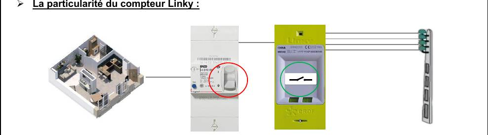
La mise hors tension d'un compteur Linky est faite à distance par l'exploitant ou sur place par le technicien ; un symbole de « circuit ouvert » s'affiche quand il est hors tension.
Habitations individuelles et bâtiments industriels : disjoncteur général ou appareil général de commande et de protection. Habitations collectives : le coffret coupe-circuit principal collectif, qui coupe tout l'immeuble, n'est manœuvrable que par un technicien ERDF.
Vêtements de protection
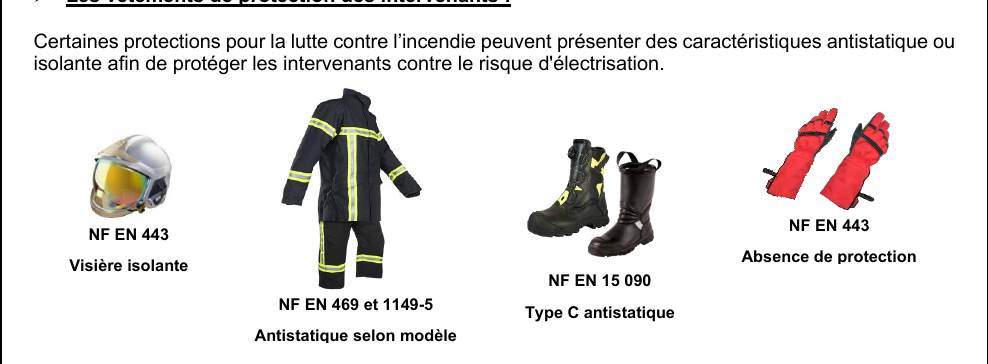
Vu la protection isolante et antistatique limitée des EPI, respecter les DLV et limiter les matériels non isolants.
📚 RDEB SDIS 34 – v2 – avril 2026 – § 5.8. Les repères ci-dessous détaillent le nombre d'isolateurs par tension (HTB1 : 4 à 6 en 63 kV, jusqu'à 9 en 90 kV).
⚡ HTB - HAUTE TENSION B
⚡ TENSIONS
63 kV, 90 kV, 150 kV, 225 kV, 400 kV
🔍 IDENTIFICATION
Support: Pylône treillis métallique géant (>20m) Isolateurs: • 4 à 6 isolateurs → 63 kV • 9 isolateurs → 90 kV • 12 à 14 isolateurs → 225 kV • 19 isolateurs → 400 kV Câbles: 3 ou 6 câbles très espacés (plusieurs mètres) Signalisation: Panneaux "DANGER DE MORT"
⚡ HTA - HAUTE TENSION A
⚡ TENSIONS
20 kV (plus répandu)
15 kV (ancien réseau)
🔍 IDENTIFICATION
Support: Poteau béton (8-15m) ou bois Isolateurs:2 à 3 isolateurs en chaîne courte (20 kV, le plus courant ; 1 à 3 sur les réseaux anciens) Câbles: 3 câbles espacés de 30-80 cm Transformateur: Souvent présent sur le poteau
⚡ BT - BASSE TENSION
⚡ TENSIONS
400 V (triphasé)
230 V (monophasé)
🔍 IDENTIFICATION
Support: Poteau bas bois ou béton (6-10m) Isolateurs:Aucun isolateur Câbles: 4 câbles torsadés très rapprochés (3 phases + neutre) Branchement: Direct aux habitations
⚡ COMPARAISON RAPIDE
🗼
HTB
Haute Tension B
63-400 kV
SUPPORT
Pylône treillis
> 20 mètres
⚠️ ISOLATEURS (CLEF)
4-6 → 63 kV 9 → 90 kV 12-14 → 225 kV 19 → 400 kV
CÂBLES
3 ou 6 câbles
Très espacés
⚡
HTA
Haute Tension A
15-20 kV
SUPPORT
Poteau
Béton ou bois
8-15 mètres
⚠️ ISOLATEURS (CLEF)
2 à 3
Chaîne courte (1 à 3 sur réseaux anciens)
CÂBLES
3 câbles
Espacés (30-80cm)
💡 Transformateur souvent présent
🏠
BT
Basse Tension
230-400 V
SUPPORT
Poteau bas
Bois ou béton
6-10 mètres
⚠️ ISOLATEURS (CLEF)
AUCUN
Pas d'isolateur
CÂBLES
4 câbles torsadés
Très rapprochés
3 phases + neutre
💡 Branchement direct habitations
🎯 IDENTIFICATION RAPIDE
COMPTEZ LES ISOLATEURS = critère le plus fiable
→ Aucun = BT
→ 1 à 3 = HTA
→ 4+ = HTB
💥 Explosimétrie - Correction des Valeurs
💡 Principe :
Les explosimètres sont étalonnés avec un gaz de référence (souvent le méthane ou le pentane).
Pour mesurer d'autres gaz, il faut appliquer un facteur de correction basé sur les LIE respectives.
🎯 Configuration de l'explosimètre
⚠️ Vérifier le gaz d'étalonnage indiqué sur votre explosimètre
Valeur lue directement sur l'écran de l'explosimètre
🧪 Sélection du gaz présent sur l'intervention
💡 La recherche filtre les gaz affichés ci-dessous
👆 Cliquez sur le gaz détecté ou suspecté pour voir la valeur corrigée instantanément
✅ Résultat de la correction
Gaz présent :
0 % LIE
Valeur réelle dans l'atmosphère
📐 Détail du calcul :
Gaz étalon appareil :-
LIE gaz étalon :-
Gaz présent :-
LIE gaz présent :-
Facteur de correction :-
Valeur affichée :-
📋 Tableau de référence - Facteurs de correction
Facteurs calculés depuis le gaz d'étalonnage sélectionné
Gaz
Formule
LIE (%vol)
Facteur
Calcul
⚠️ Rappels de sécurité :
• Toujours confirmer la nature du gaz avant d'appliquer la correction
• En cas de doute, considérer la valeur la plus défavorable
• Ventiler systématiquement les zones à risque
• Respecter les consignes du COS
🧯 Extincteurs
🔥 Sélectionnez la classe de feu
🪵
Classe A
Feux secs
Bois, papier, tissu, carton
🛢️
Classe B
Feux gras
Liquides inflammables
💨
Classe C
Feux de gaz
Butane, propane, GPL
⚙️
Classe D
Feux de métaux
Magnésium, aluminium
🍳
Classe F
Feux d'huiles
Huiles de cuisson
⚡
Électrique
Sous tension
Équipements électriques
💨 Bouteilles de Gaz
🔍 IDENTIFICATION DU RISQUE - Couleur de l'ogive
⚠️ Cliquez sur la couleur d'ogive de votre bouteille de gaz (La couleur de l'ogive indique le risque principal selon norme NF EN 1089-3)
🟡
JAUNE
Toxique/Corrosif
RAL 1018
🔴
ROUGE
Inflammable
RAL 3000
🔵
BLEU CLAIR
Oxydant
RAL 5012
🟢
VERT VIF
Inerte
RAL 6018
🟤
MARRON
Acétylène ⚠️
RAL 3009
⚪
BLANC
Oxygène
RAL 9010
🟢
VERT FONCÉ
Argon
RAL 6001
⚫
NOIR
Azote
RAL 9005
⚫
GRIS
CO2
RAL 7037
🟤
BRUN
Hélium
RAL 8008
Constitution d'une bouteille (RDEB § 5.5)
Robinet, chapeau, raccord, étiquette, ogive (couleur du risque primaire et secondaire), corps. La couleur de l'ogive informe du risque ou identifie le gaz.
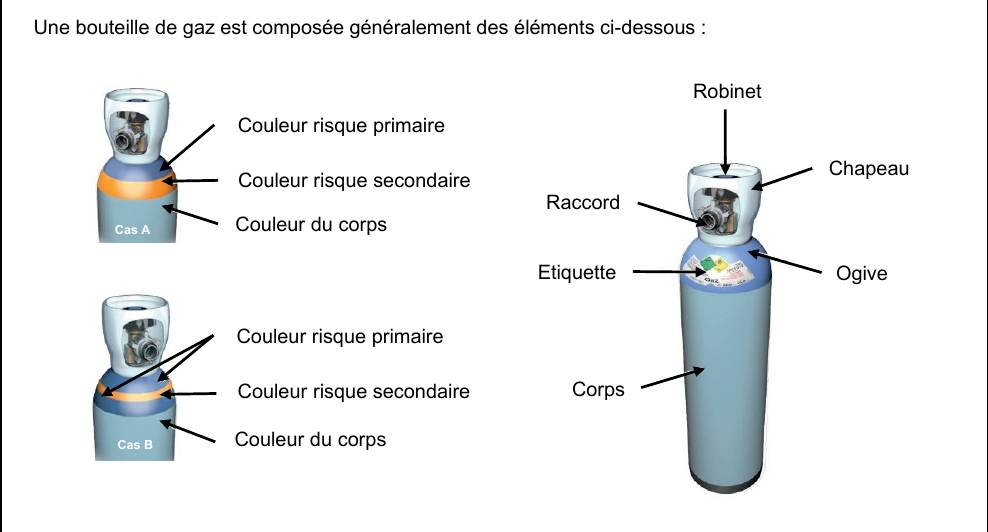
Substance
T° de manipulation
T° dangereuse (bouteille pleine)
Sous pression (azote, argon…)
Ambiante
≥ 350 °C
Liquéfié (butane, propane…)
≥ 80 °C
Dissous (acétylène…)
≥ 65 °C
Contrairement aux bouteilles GPL « traditionnelles », les bouteilles GPL « composites » ne peuvent pas éclater.
Règle générale : ne pas manipuler une bouteille de gaz sauf absolue nécessité. Le refroidissement est efficace si la température relevée est égale à la température ambiante et s'y maintient.
📚 RDEB SDIS 34 – v2 – avril 2026 – § 5.5
💧 PROCÉDURE DE REFROIDISSEMENT
🔵 PROTOCOLE BOUTEILLES STANDARD
⚠️ DANGERS IDENTIFIÉS
BLEVE (Boiling Liquid Expanding Vapor Explosion)
Explosion de la bouteille par surpression
Projection de fragments métalliques
Boule de feu si gaz inflammable
Onde de choc destructrice
🎯 OBJECTIFS DU REFROIDISSEMENT
Abaisser l'intensité des flammes environnantes
Supprimer ou réduire la cause d'éclatement
Refroidir la bouteille soumise au flux thermique
Ramener la température à température ambiante
Maintenir cette température stable dans le temps
✅ CONDUITE À TENIR
1️⃣ PÉRIMÈTRE DE SÉCURITÉ
Zone d'exclusion : ≥ 100 mètres minimum
Évacuation immédiate de toutes les personnes
Baliser le périmètre
Positionner engins en retrait
Identifier voies de repli rapide
2️⃣ ATTAQUE DU SINISTRE
Abaisser l'intensité des flammes autour de la bouteille
Réduire le flux thermique incident
Supprimer les sources d'ignition proches
Protéger les autres expositions
3️⃣ REFROIDISSEMENT
Lance en JET DIFFUSÉ d'attaque
Débit : ≥ 250 L/min MINIMUM
Arroser toute la surface de la bouteille
Maintenir arrosage continu
Privilégier protection à distance
4️⃣ CONTRÔLE D'EFFICACITÉ
🌡️ Mesurer la température de surface avec caméra thermique
✅ Refroidissement efficace si :
→ Température = Température ambiante
→ Cette température se maintient dans le temps
⚠️ Si température remonte : refroidissement insuffisant
5️⃣ SIGNES D'ALERTE BLEVE
🚨 Sifflement soupape qui augmente
🚨 Déformation visible
🚨 Changement de couleur (métal chauffe)
🚨 Vibrations anormales
→ ÉVACUATION IMMÉDIATE
🟤 PROTOCOLE ACÉTYLÈNE
⚠️ GAZ EXTRÊMEMENT DANGEREUX ⚠️
Risque de DÉCOMPOSITION EXPLOSIVE Protocole strict obligatoire
🚨 PÉRIMÈTRE DE SÉCURITÉ
≥ 200 mètres
Zone d'exclusion obligatoire
✅ PROTOCOLE DE REFROIDISSEMENT
⏱️ DURÉE MINIMALE
1 HEURE MINIMUM
Refroidissement continu obligatoire
Ne JAMAIS interrompre avant 1h
Surveiller température en permanence
💧 TECHNIQUE DE REFROIDISSEMENT
Lance en JET DIFFUSÉ d'attaque
Débit : ≥ 250 L/min MINIMUM
Lance à débit continu
Arroser toute la surface
Maintenir bouteille mouillée en permanence
Option : Immersion dans bac d'eau (extérieur)
→ Permet contrôle étanchéité (bullage)
→ Refroidissement optimal
🔍 CONTRÔLE APRÈS 1 HEURE
Arrêter le refroidissement après 1h
Observer la paroi de la bouteille :
❌ Si paroi SÈCHE → Relancer 1h de refroidissement
❌ Si température AUGMENTE → Relancer 1h
✅ Si reste mouillée et froide → Passer à la surveillance
👁️ PHASE DE SURVEILLANCE
Durée : 1 HEURE MINIMUM
⚠️ NE PAS DÉPLACER la bouteille
Maintenir le périmètre 200m
Contrôles température : toutes les 15 minutes
Température doit rester à ambiante
Si stable pendant 1h sans refroidissement :
✅ Risque d'éclatement écarté
❌ INTERDICTIONS ABSOLUES
⚠️ NE JAMAIS COUCHER LA BOUTEILLE
Ne JAMAIS manipuler pendant refroidissement
Ne JAMAIS approcher flamme ou source chaleur
Ne JAMAIS déplacer avant fin surveillance
📊 RÉSUMÉ CHRONOLOGIE
⏱️ T+0 → T+60 min : Refroidissement continu
🔍 T+60 min : Contrôle (sec/chaud ?) → Si oui, relancer 1h
👁️ Après refroidissement efficace : Surveillance 1h
🌡️ Contrôle température : Toutes les 15 min
✅ T stable 1h sans refroidir : Fin danger
🎯 SPÉCIALISTE REQUIS
🏢 Contacter fournisseur gaz immédiatement
⚠️ Intervention spécialiste OBLIGATOIRE
📞 Coordination avec CODIS
🚒 Prévoir relève équipes (durée longue)
⚠️ RÈGLE ABSOLUE ⚠️
Acétylène = GAZ LE PLUS DANGEREUX Protocole strict NON NÉGOCIABLE Périmètre 200m - Durées minimales obligatoires
🌲 Feux de Forêt - Règle des 3%
📖 Règle des 3% : La vitesse de propagation du feu est approximativement égale à 3% de la vitesse du vent. Exemple : Vent à 30 km/h → Vitesse propagation ≈ 0.9 km/h (soit 15 m/min)
Affine le pourcentage avec la table de Trabaud (GDO feux de forêts, § 2.3.3). En conditions extrêmes, la propagation peut atteindre 4 à 10 % du vent.
🔄 Convertisseur d'Unités
⚡ Conversions Rapides
🔧
PRESSION
bar ⇄ psi ⇄ Pa
💧
DÉBIT
L/min ⇄ L/s ⇄ m³/h
🪣
VOLUME
L ⇄ m³ ⇄ gal
📏
DISTANCE
m ⇄ km ⇄ cm
🚒
VITESSE
km/h ⇄ m/s ⇄ mph
🌡️
TEMPÉRATURE
°C ⇄ °F ⇄ K
🔄 Conversion
--
⚡ Valeurs courantes :
📋 Commandement Opérationnel
📝
AVANT Intervention
PATRAC DR • DPIF
Ordres préparatoires
🚨
PENDANT Intervention
SMES • SOIEC • SAOIECL
Ordres opérationnels
📝 Ordres Préparatoires - Avant Intervention
📋
PATRAC DR
Ordre préparatoire
Personnel • Armement
Tenue • Radio • Alim
Commandement • Déroulement • RDV
🗺️
DPIF
Ordre de mouvement
Direction • Point
Itinéraire • Formation
🚨 Ordres Opérationnels - Pendant Intervention
⚠️
SMES
Chef d'agrès
Chef d'équipe
📡
SOIEC
Chef de groupe
👨🚒
SAOIECL
Chef de colonne
Chef de site
📋 PATRAC DR - Ordre Préparatoire
💡 Utilisation : Cet ordre est principalement utilisé en prévision de déplacement d'un groupe ou d'une colonne.
📋 INFORMATIONS SUR LE DÉTACHEMENT
🧑🚒 P - Personnel du détachement
🚒 A - Armement
👕 T - Tenue
📡 R - Radio
🍔 A - Alimentation
👨✈️ C - Commandement
⏱️ D - Déroulement prévu
📍 R - Rendez-vous
🎯 Actions
🗺️ DPIF - Ordre de Mouvement
💡 Utilisation : Cet ordre permet un passage de consignes à l'ensemble des chefs d'agrès avant le départ.
🧭 D - Direction générale à suivre
📍 P - Point à atteindre
🛣️ I - Itinéraire à suivre
🚗 F - Formation du groupe
⚠️ SMES - Chef d'agrès / Chef d'équipe
💡 Utilisation : Ordre initial et ordres de conduite pour les chefs d'agrès et chefs d'équipes.
📊 S - Situation
🎯 M - Mission
⚡ E - Exécution
🛡️ S - Sécurité
📡 SOIEC - Chef de Groupe
💡 Utilisation : Ordre initial et ordres de conduite pour le chef de groupe.
📊 S - Situation
🎯 O - Objectif
💡 I - Idée de manœuvre
⚡ E - Exécution
📞 C - Commandement
👨🚒 SAOIECL - Chef de Colonne / Chef de Site
💡 Utilisation : Ordre le plus complet pour chef de colonne et chef de site.
📊 S - Situation
🔮 A - Anticipation
🎯 O - Objectif
💡 I - Idée de manœuvre
⚡ E - Exécution
🚛 L - Logistique
📞 C - Commandement
⚖️ Abaque - Calcul de Charges
💡 Fonctionnement : Entrez les dimensions, le poids de chaque matériau s'affiche automatiquement
📐 DIMENSIONS
VOLUME TOTAL
2.0 m³
2000 litres
🚒 Calcul Temps de Trajet
💡 Calculateur de temps de trajet : Estimez le temps nécessaire pour atteindre un point d'intervention en fonction de la distance et de la vitesse moyenne.
🚗 Sélectionner la vitesse moyenne
⏱️ TEMPS DE TRAJET ESTIMÉ
1h 19min
Distance
110 km
Vitesse moyenne
50 km/h
⚠️ Attention : Ce calcul donne une estimation théorique. Le temps réel peut varier selon :
Circulation et conditions routières
Météo et visibilité
Passages en agglomération
Priorités gyrophare/sirène
📕 RDMI - Référentiel Manœuvres Incendie
Référentiel Départemental des Manœuvres Incendie - Conforme GDO
📕 Source : RDMI - Référentiel Départemental des Manœuvres Incendie SDIS 34 - Version 5 - Mars 2022 - Conforme GDO/GTO DGSCGC
🏢 Familles d'Habitation
🏠 1ère FAMILLE - R+1 Maximum
Habitations individuelles isolées ou jumelées :
R+1 maximum
Habitations individuelles RDC groupées en bande
Habitations individuelles R+1 groupées en bande :
Lorsque les structures de chaque habitation concourant à la stabilité du bâtiment sont indépendantes de celles de l'habitation contiguë
✅ Pas de colonne sèche requise
🏘️ 2ème FAMILLE
Habitations individuelles > R+1 :
Isolées ou jumelées
Habitations individuelles R+1 groupées en bande :
Lorsque les structures ne sont PAS indépendantes des structures de l'habitation contiguë
Habitations individuelles > R+1 groupées en bande
Habitations collectives R+3 maximum :
Porte palière du logement le plus éloigné → accès escalier : 10 m maximum
⚠️ Note : Les escaliers des bâtiments d'habitation collectifs doivent être encloisonnés lorsque le plancher bas du logement le plus haut est à plus de 8 mètres du sol.
🏗️ 3ème FAMILLE - Jusqu'à 28m (≈ R+9)
📗 3ème Famille A - R+7 maximum
R+7 maximum
Distance porte palière → escalier : 10 m maximum
Accès aux escaliers atteints par la voie échelles
✅ Pas de colonne sèche obligatoire (si voie échelles)
📙 3ème Famille B - R+9 maximum
R+9 maximum (plancher bas ≤ 28m)
Colonne sèche Ø65 mm obligatoire
Escalier protégé : à l'air libre ou à l'abri des fumées
Distance porte palière → escalier :
15 m si escalier à l'abri des fumées
25 m si escalier à l'air libre
Accès escaliers à < 50 m d'une voie engins
Raccord alimentation CS à ≤ 60 m d'un PEI
🔴 Colonne sèche : Ø65 mm avec 1 prise Ø40 mm par niveau (ou 2 prises si duplex/triplex)
🏢 4ème FAMILLE - 28m à 50m (≈ R+17)
Plancher bas : 28m à 50m du sol (≈ R+17 max)
Colonne sèche Ø65 mm obligatoire par escalier
Escalier protégé obligatoire
Distance porte palière → escalier :
15 m si escalier à l'abri des fumées
25 m si escalier à l'air libre
Accès escaliers à < 50 m d'une voie engins
Raccord alimentation CS à ≤ 60 m d'un PEI
🔴 Colonne sèche obligatoire : Ø65 mm avec 1 prise Ø40 mm par niveau (ou 2 prises si duplex/triplex)
🏙️ IGH - Immeuble de Grande Hauteur (> 50m)
Plancher bas : > 50m et < 200m (≈ R+67 max)
Colonne EN CHARGE obligatoire par escalier
Débit : 1000 L/min sous 7-9 bars en permanence
Réservoirs : 60 à 120 m³ réservés incendie
Distance porte palière → escalier : 20 m maximum
RIA Ø25/8 mm par niveau (70 L/min sous 2.5 bars)
Ascenseur prioritaire SP obligatoire
🔵
Colonne en charge 1× Ø65 mm + 2× Ø40 mm par niveau
🔄
Raccords secours 2× Ø65 mm près des accès SP
📊 Tableau récapitulatif
Famille
Hauteur max
Niveaux
Colonne
1ère
≤ 8m
R+1
❌ Non
2ème
≤ 8m
R+3
❌ Non
3ème A
≤ 28m
R+7
⚠️ Si pas voie échelles
3ème B
≤ 28m
R+9
✅ Sèche Ø65
4ème
≤ 50m
R+17
✅ Sèche Ø65
IGH
> 50m
R+67
✅ En charge
🔴 Points d'Eau Incendie (PEI)
🎨 Couleurs des Poteaux et Bouches Incendie
🔴
ROUGE
Poteau/Bouche incendie sous pression permanente ou temporaire
🔵
BLEU
Poteau/Bouche d'aspiration - Sans pression, nécessite mise en aspiration
Quartiers saturés, vieux immeubles, zones mixtes habitation/activités
120 m³ / 2h minimum
📋 SDIS 34 - Limite opérationnelle : Débit max simultané 450 m³/h ou 900 m³ / 2h
Pour aller plus loin →
💧 DECI de l'Hérault (RDDECI)
Règlement départemental de défense extérieure contre l'incendie de l'Hérault – arrêté n° 2017-01-645 (version 2017). Les couleurs des poteaux, leurs débits et les niveaux de risque sont sur la fiche .
🚒 Ce qu'il faut savoir sur le terrain
FPT / FPTSR : pompe de 120 m³/h à 15 bar ; FPTL : 90 m³/h à 15 bar. Citerne de 2,5 à 3,5 m³, 2 dévidoirs de 200 m de tuyaux de 70 (400 m au total).
Autonomie d'un FPT sur une seule LDV 500 : environ 6 minutes. Il faut donc s'alimenter vite.
Temps pour alimenter un engin depuis un poteau : 5 à 6 min à 200 m, 12 à 15 min à 400 m. C'est plus long depuis un point d'eau en aspiration.
Limite opérationnelle du SDIS 34 : 450 m³/h au maximum en simultané, soit 900 m³ pour 2 h.
Les poteaux sous pression sont les plus rapides à utiliser ; le SDIS 34 préfère les poteaux aux bouches (plus visibles, moins gênés par le stationnement).
Au-delà de 10 bar statiques (environ 8 bar dynamiques), les bouchons à mise à l'air libre sont obligatoires : attention à la décompression brutale.
Le stationnement est interdit devant les poteaux et bouches (article R.417-11 du code de la route).
Anomalie grave constatée en opération ou en reconnaissance (pas d'eau, débit très insuffisant, poteau inutilisable) : le SDIS 34 la signale au plus vite au maire (fiche type d'indisponibilité).
📏 Distances et cheminements
La distance se mesure entre le PEI et l'entrée principale du bâtiment, en suivant une voie engin ou, à défaut, un cheminement praticable en permanence.
Cheminement praticable = 1,80 m de large minimum, pour 2 sapeurs-pompiers tirant un dévidoir mobile d'environ 300 kg, sans obstacle infranchissable (route à terre-plein central, autoroute, voie ferrée, grands escaliers, fossés…).
Les distances fixées dépendent de la longueur des tuyaux des engins.
Colonne sèche : le PEI doit être à 60 m au maximum de la prise d'alimentation (30 m si poteau relais), et sous pression.
🏠 Besoins en eau : habitations (extraits)
Cas
Risque
Besoin
PEI
Distance max PEI – entrée
Habitat dispersé, ≤ 300 m², isolé à 4 m au moins
Courant faible
30 m³/h pendant 1 h (30 m³)
1
300 m (sous pression) / 200 m (point d'eau naturel ou citerne)
Individuelle ou jumelée, 300 à 500 m², isolée à 4 m
Courant ordinaire
30 m³/h pendant 2 h (60 m³)
1
300 m / 200 m
Moins de 500 m², non isolée
Courant ordinaire
60 m³/h pendant 1 h (60 m³)
1
200 m
Grandes demeures (château, mas, corps de ferme), collectifs au-delà de R+3 (3e famille A), quartiers historiques
Courant important
60 m³/h pendant 2 h (120 m³)
1
150 m, ou 60 m de chaque prise de colonne sèche
Collectifs 3e famille B et 4e famille
Particulier
120 m³/h pendant 2 h (240 m³)
2, sous pression
60 m de la colonne sèche ; 2e PEI à 200 m max du premier
Lotissements, habitations en bande et petits collectifs : 60 m³ environ, avec des distances de 150 à 300 m selon la configuration (voir la grille complète du règlement). Les gîtes et chambres d'hôtes de moins de 15 personnes comptent comme des habitations.
🏢 Bureaux (ni ERP ni IGH)
Surface
Besoin
PEI et distance
≤ 300 m², hauteur ≤ 8 m
30 m³/h pendant 1 h
1 PEI à 300 m (sous pression) / 200 m
300 à 1 000 m², hauteur ≤ 8 m
60 m³/h pendant 2 h (120 m³)
1 PEI à 200 m
1 000 à 2 000 m² et/ou hauteur > 8 m
120 m³/h pendant 2 h (240 m³)
1 ou 2 PEI, à 200 m ou 60 m de la colonne sèche
2 000 à 5 000 m²
180 m³/h pendant 2 h (360 m³)
2 PEI, à 150 m ou 60 m de la colonne sèche
Plus de 5 000 m²
Étude au cas par cas
ERP, IGH, parcs de stationnement, chapiteaux, bâtiments agricoles, industriels et zones d'activités ont leurs propres grilles : voir le règlement complet. Au-delà de 120 m³/h, un tiers au moins des besoins doit venir d'un réseau sous pression.
Surface de référence : la plus grande surface non recoupée par des murs coupe-feu. Un espace libre compte comme un mur coupe-feu s'il est assez large : 4 m pour un coupe-feu 1 h (5 m pour un bâtiment haut ou avec sommeil au-dessus du 1er étage), 8 m pour un coupe-feu 2 h.
🌊 Points d'eau naturels ou artificiels (PENA)
Capacité minimale de 30 m³, disponible en permanence et accessible en permanence ; réserves avec un indicateur de niveau et réalimentées après usage.
Aire d'aspiration : 10 m × 5 m (50 m²) par engin, supportant 160 kN (90 kN par essieu), pente de 2 à 7 %, butée de calage, zébras jaunes au sol, reliée à la route par une voie de 3 m de large.
Dispositif fixe d'aspiration : demi-raccord de 100 avec bouchon, à 0,5 – 0,8 m au-dessus de l'aire ; crépine sans clapet à 50 cm du fond et 30 cm sous le niveau le plus bas ; 4 m au plus entre la prise et l'aire ; 6 m au plus de hauteur d'aspiration ; couleur bleue. Un dispositif par tranche de 120 m³, espacés de 5 m.
Poteau d'aspiration : poteau de 100 bleu, relié au point d'eau par une canalisation de 100. Guichet : trappe de 35 × 40 cm dans un parapet, manœuvrable à la polycoise.
Puisards : ne sont des PEI que s'ils sont reliés au plan d'eau par une canalisation de 300 mm au moins.
Bornes agricoles et réseaux d'eau brute : utilisables seulement s'ils sont pérennes et équipés d'un demi-raccord de 65 ou 100, avec mise à l'air libre (forte pression).
Piscines privées : ce ne sont pas des PEI. Utilisables pour protéger la propriété concernée, ou en dernier recours (état de nécessité).
🪧 Signalisation
Panneau rectangulaire de 30 × 50 cm, rétroréfléchissant : disque blanc et flèche blanche sur fond rouge, posé entre 0,50 m et 2 m du sol, visible depuis l'axe d'arrivée des engins.
La flèche vers le bas indique que le PEI est juste en dessous ; à gauche, à droite ou vers le haut, elle en donne la direction, avec éventuellement la distance.
Autour du disque : la nature du PEI (BI, point d'aspiration, citerne…). Au centre : volume (m³), débit (m³/h) ou diamètre ; un triangle bleu signale une ressource illimitée.
Bouches d'incendie : plaque généralement noire ; le SDIS 34 préconise une plaque rouge et une protection contre le stationnement.
🔍 Contrôles et reconnaissances
Contrôle technique
Reconnaissance opérationnelle
Qui
Le service public de DECI (mairie ou intercommunalité) ; le propriétaire pour un PEI privé
Le SDIS 34, pour son propre compte
Fréquence
Tous les 3 ans au plus
Tous les 2 ans au plus
Contenu
Débit sous 1 bar, pression statique, fonctionnement, volume des réserves, état, abords, signalisation, numérotation
Position, accès et abords (débroussaillement), signalisation, numéro, état visuel ; ouverture progressive des poteaux pour vérifier qu'ils ne sont pas grippés et qu'il y a de l'eau ; niveau et aspiration des PENA en cas de doute
Chaque PEI a un numéro départemental. Le SDIS 34 tient une base de données partagée des PEI (disponibilité, contrôles, indisponibilités, remises en service).
Ouvrir et fermer les poteaux doucement : une manœuvre brutale provoque un coup de bélier dans le réseau et un risque de pollution de l'eau potable.
⚖️ Qui fait quoi ?
Le maire (ou le président de l'intercommunalité) a la police spéciale de la DECI : il fixe par arrêté la liste des PEI et garantit qu'ils fonctionnent. Il peut faire un schéma communal de DECI.
Le service public de DECI crée, entretient, signale et contrôle les PEI publics (budget communal, pas la facture d'eau).
Le SDIS 34 rédige le règlement, conseille les maires, fait les reconnaissances opérationnelles et tient la base de données.
Les PEI privés (ICPE, ERP, lotissements) sont entretenus et contrôlés par leur propriétaire.
En opération :
Si les besoins sont importants ou le réseau faible, le COS ou le CODIS peut faire appel à l'astreinte du gestionnaire de l'eau pour renforcer le réseau.
En période de sécheresse, attention à ne pas vider les réservoirs d'eau potable.
Eaux usées (lagunes) : à ne pas utiliser, sauf exception, et alors avec une protection des porte-lances contre les aérosols.
Sans enjeu humain et sans bien à sauver, le COS peut se limiter à surveiller et empêcher la propagation, pour préserver la ressource.
Le règlement ne traite pas des forêts (DFCI : plans de protection des forêts, PPRIF), des ICPE (réglementation spécifique, D9), des tunnels ni des moyens internes aux bâtiments (RIA, sprinklers, extincteurs). Les zones d'habitation en lisière de forêt doivent avoir une DECI renforcée.
📚 Source : Règlement départemental de défense extérieure contre l'incendie de l'Hérault – arrêté n° 2017-01-645 (version 2017), rédigé par le SDIS 34. Extraits simplifiés : le texte officiel et ses annexes font foi.
💧 Hydraulique - Pertes de Charge
🔧 Pertes de Charge par Tuyau (20m)
Diamètre
Débit
Perte (20m)
Ø25 mm
58 L/min
1.7 bar
150 L/min
2.2 bar
Ø45 mm
250 L/min
0.3 bar
500 L/min
1.2 bar
Ø70 mm
500 L/min
0.11 bar
1000 L/min
0.44 bar
2000 L/min
1.8 bar
Ø110 mm
1000 L/min
0.06 bar
2000 L/min
0.24 bar
📐 Autres Pertes de Charge
🔌
Pièces de jonction
+ 1 bar
par pièce
📈
Dénivelé positif
+ 1 bar
par 10m de hauteur
📉
Dénivelé négatif
- 1 bar
par 10m de descente
🎯 Pressions Matériels
LDV / Queue de paon / Lance canon
6 bar
Injecteur proportionneur
10 bar
💡 Rappel : Limiter les établissements à 3 tuyaux Ø45/20m après la prise d'eau.
Débit de référence pour feu de structure : 500 L/min minimum par binôme.
👷 Binômes & Armement
👥 Le Binôme
Le binôme est une unité de deux sapeurs-pompiers composée d'un chef d'équipe (CE) et d'un équipier (EQ).
Binôme organique
Issu de l'armement initial d'un engin-pompe
Binôme de circonstance
Composé de personnel issu d'autres engins
📋 Cadre Général des Binômes
🚒 FPT/FPTL - 6 sapeurs-pompiers
1er BIN→ Attaque et extinction à l'aide d'une lance
2ème BIN→ Établissement prise d'eau et/ou engin
🚒 FPTGP - 8 sapeurs-pompiers
1er BIN→ Attaque et extinction à l'aide d'une lance
2ème BIN→ Établissement prise d'eau
3ème BIN→ Alimentation de l'engin
🛡️ Protection Individuelle
🪖
Casque type B + Bavolet
🧥
Veste textile
👖
Surpantalon textile
🧤
Gants type C
👢
Chaussant type C
🎭
Cagoule protection
🫁
ARI + accessoires
🔦
Moyen éclairage
📻
ERP N5
🪢
SIM (Sangle)
✂️
Seccoise
🚗 Le Conducteur (COD)
Sécuriser la zone d'intervention et caler le véhicule
Effectuer l'alimentation d'une prise d'eau à moins de 60 m
Alimenter l'engin-pompe seul ou assisté d'un binôme
Rester attentif aux communications radios
Préparer un parc à matériel à proximité de l'engin
Garantir le reconditionnement du véhicule
⚠️ Binôme de sécurité : Mis en place par le COS dès que possible lors de l'engagement d'un binôme en zone d'exclusion.
🎯 SMES - Raisonnement Tactique
📋 Méthode SMES
S
SITUATION
Quoi ? Où ? Par où ? Description de la situation
M
MISSION
Quoi faire ? Sauvetages, mises en sécurité, attaque...
E
EXÉCUTION
Comment ? Avec qui ? Matériels, moyens hydrauliques, renforts
S
SÉCURITÉ
Quelles règles ? Protections individuelles et collectives, mesures particulières
🧠 Questions du Raisonnement Tactique
QUOI ?
Présence de victimes ? Type de sinistre ? Risques particuliers ? Propagation ?
Protections individuelles et collectives ? Mesures particulières ?
⚖️ Balance Bénéfice - Risque
⚠️
La prise de risque en vaut-elle la peine ?
✅
L'engagement des intervenants est-il justifié ?
🔧 Établissements (ETB)
📋 Types d'Établissement
🔥 ETB 1 - Lance de Dévidoir Tournant (LDT)
ETB 1.1 - Établissement d'une LDT
ETB 1.2 - Établissement d'une LDT avec commande
ETB 1.3 - Prolongement d'une LDT
💧 ETB 2 - Prise d'Eau
ETB 2.1 - Prise d'eau avec la caisse
ETB 2.2 - Prise d'eau avec tuyaux en écheveau Z
ETB 2.3 - Prise d'eau avec le dévidoir mobile
🚿 ETB 3 - LDV 500 / LDV 1000
ETB 3.1 - LDV 500 avec dévidoir Ø45
ETB 3.2 - LDV 500
ETB 3.3 - LDV 500 avec échelle à coulisse
ETB 3.4 - LDV 500 avec commande
ETB 3.5 - Vertical LDV 500 de haut en bas
ETB 3.6 - LDV 500 sur colonne sèche/en charge
ETB 3.7 à 3.9 - Ligne d'attaque
ETB 3.10 - LDV 1000
ETB 3.11 à 3.14 - Sur MEA
🔌 ETB 4 - Alimentation
ETB 4.1 - Alimentation à moins de 20 m
ETB 4.2 - Avec tuyaux en écheveau Z
ETB 4.3 - Avec dévidoir mobile
ETB 4.4 - Par l'établissement
ETB 4.5 - Par aspiration
💪 ETB 5 & 6 - Lances spéciales & Prolongements
ETB 5.1 - Lance canon Ø65 mm
ETB 5.2 - Queue de paon Ø40 mm
ETB 5.3 - LDV 500 à mousse (injecteur mobile)
ETB 6.1 - Prolongement d'un établissement
ETB 6.2 - Remplacement d'un tuyau
➡️ Sens d'Établissement
🔥 ← 🚒
Du point d'attaque vers l'engin
Établissement d'attaque
🚒 → 🔴
De l'engin vers le PEI
Alimentation
📦 Conditionnement des Tuyaux
⭕
Écheveau O
Ø45/20m Attaque rapide
⚡
Écheveau Z
Ø45 et Ø70/20m Établissement classique
🔄
Dévidoir mobile
5× Ø70/40m Grande longueur
📋 MGO - Marche Générale des Opérations
🎯 Les 11 Phases de la MGO
🆘
Sauvetages & Mises en sécurité
🛡️
Protection
🔍
Reconnaissance
🚒
Placement engins
🔧
Établissements
💨
Ventilation
⚔️
Attaque
🧹
Déblais
👁️
Surveillance
🔎
Préservation traces
♻️
Remise en condition
💡 Note : Ces phases ne respectent pas d'ordre particulier. Les actions sont mises en œuvre en fonction de la situation et de la tactique opérationnelle choisie.
🚧 Zonage Opérationnel
🎯 Les 3 Zones
🔴
ZONE D'EXCLUSION
Zone de danger immédiat
Accès strictement limité aux intervenants équipés
Pénétration obligatoirement en binôme
Port des EPI complets obligatoire
Binôme de sécurité mis en place dès que possible
🟠
ZONE CONTRÔLÉE
Zone de travail sécurisée
Zone de travail et de préparation
Accès contrôlé aux personnels SP
Mise en place du PCA (Point de Contrôle d'Accès)
🟢
ZONE DE SOUTIEN
Zone logistique
PC de site, zone de regroupement
Stationnement des engins en réserve
Zone de remise en condition du personnel
Accueil des renforts
🏢 Désignation des Façades
C
Façade arrière (opposée à A)
B
Côté gauche
🏢
D
Côté droit
A
Façade d'attaque
▲ Vue depuis la rue, face à la façade A
A = façade d'accès principal (attaque) • Face à A : B à gauche, C à l'arrière, D à droite (sens horaire vu du dessus, RDEB SDIS 34)
Précisions RDEB (§ 2.18 à 2.21)
La sécurité des intervenants se prend en compte dès le placement des engins ; le premier COS appréhende la zone d'intervention. Le zonage, clairement indiqué, peut compter un ou plusieurs points d'engagement et évolue avec la reconnaissance, les mesures au détecteur multigaz ou le conseil d'un conseiller technique ou d'un officier sécurité.
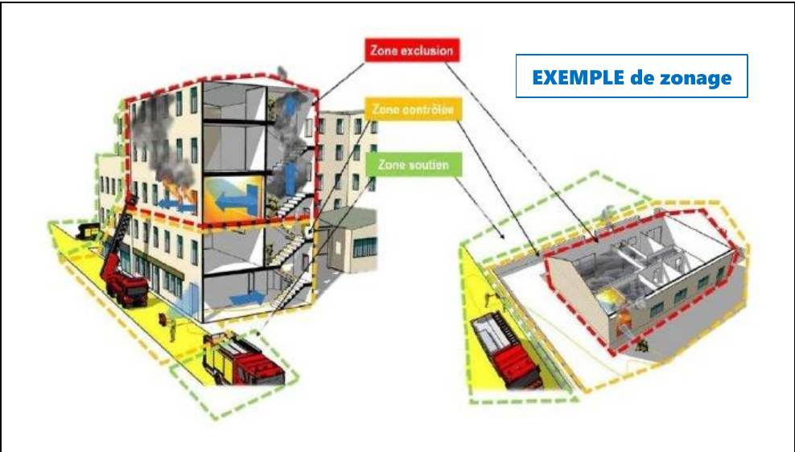
Exclusion : exposition directe aux risques ; accès restreint aux équipes équipées d'EPI et de matériels adaptés ; nombre et missions des engagés connus du COS, des chefs de secteur ou d'agrès ; le COS peut interdire des locaux ou secteurs.
Contrôlée : zone tampon d'où est coordonné l'engagement ; enregistrement et engagement des binômes, binôme de sécurité, parc matériel au besoin.
Soutien : commandement, soutien sanitaire, reconditionnement, services extérieurs, à l'écart de tout danger.
À partir du R+5, placer au plus près du sinistre un chef de secteur en lien avec le COS pour gérer l'engagement des binômes et la ressource en matériels (au minimum un chef d'agrès tout engin ou un chef de groupe).
Attention aux chutes de matériaux aux aplombs des bâtiments.
📚 RDEB SDIS 34 – v2 – avril 2026 – § 2.18 à 2.21 ·
🩺 RT SUAP 2025
Recommandations Techniques - Secours d'Urgence Aux Personnes - SDIS 34
📘 PSE 1 et PSE 2 – Références techniques nationales
Premiers secours en équipe, édition 2026 (DGSCGC) : les règles de l'art nationales, fiche par fiche, pour réviser et vérifier un geste.
Sur intervention, ce sont les protocoles du SDIS 34 (RT SUAP, fiches opérationnelles) et les consignes du médecin régulateur qui s'appliquent. Les gestes à visée diagnostique (glycémie, ECG…) sont réservés aux personnes habilitées.
Comment lire les fiches
AC = apport de connaissances (comprendre), PR = procédure (conduite à tenir), FT = fiche technique (geste pas à pas). Le code donne le chapitre : 05FT04 = chapitre 5, 4e fiche technique.
① = enseigné obligatoirement en PSE 1, ② = en PSE 2. Sans symbole : fiche complémentaire.
Beaucoup de fiches ont été mises à jour en juillet 2026 (hémorragies, arrêt cardiaque, obstruction, oxygène, glycémie, brûlures, chaleur…).
Chiffres clés
Adulte
Enfant
Nourrisson
Nouveau-né
FR (/min)
12–20
20–30
30–40
40–60
FC (/min)
60–100
70–140
100–160
120–160
RCP
30/2
15/2
15/2
3/1
Profondeur
5–6 cm
1/3 (~5 cm)
1/3 (~4 cm)
1/3 (~4 cm)
Insufflations seules (pouls présent)
10/min
10/min
20/min
30/min
Compressions 100 à 120/min, relais toutes les 2 min. SpO₂ normale 94–100 % ; objectif sous O₂ 94–98 % (89–94 % chez l'insuffisant respiratoire chronique). TRC < 2 s.
📚 Source : Références techniques nationales – Premiers secours en équipe (PSE 1 et PSE 2), Direction générale de la sécurité civile et de la gestion des crises (DGSCGC), mise à jour de juillet 2026. Textes résumés et reformulés ; les illustrations du référentiel ne sont pas reproduites.
🤝 PSE – 1. Attitude et comportement
Références techniques nationales PSE (DGSCGC, 2026) – chapitre 1. ① = enseigné en PSE 1, ② = en PSE 2.
01AC01 · Le citoyen de sécurité civile ①
Code de la sécurité intérieure (L721-1) : toute personne concourt par son comportement à la sécurité civile ; elle prévient les secours et prend les premières dispositions.
Protection juridique (loi du 3 juillet 2020) : quiconque porte assistance bénévolement à une personne en péril grave et imminent est un citoyen sauveteur, collaborateur occasionnel du service public.
Messages clés : le secouriste est le premier maillon ; prévenir les accidents de la vie courante (enfants de moins de 15 ans, personnes âgées) ; aller au-devant des personnes fragiles (grand froid, canicule, voisin sans nouvelles).
Entretenir ses compétences (GQS → PSC → niveau supérieur), s'engager (SPV, bénévole, réserviste), installer une application de sollicitation citoyenne pour l'arrêt cardiaque (Staying Alive, SauvLife, Permis de sauver…).
Réduire l'impact psychologique : se former, se mettre à hauteur de la victime, l'écouter, la rassurer, respecter son intimité, échanger avec les secours une fois la victime prise en charge.
01AC02 · Enjeux et principes ①
Rôles et missions
Prise de poste : vérifier le matériel, lire les notes internes.
Se rendre sur les lieux, message d'arrivée.
Protéger : rechercher un danger pour soi, la victime, les tiers.
Accéder à la victime dans la limite de ses qualifications (sauvetage aquatique, secours routier…).
Examiner : bilan pour déceler une détresse vitale et/ou psychique.
Alerter / faire alerter le plus tôt possible, selon les procédures internes.
Secourir avec le matériel, à défaut les moyens du bord et les témoins.
Surveiller (physique et psychologique), vérifier l'efficacité des gestes.
Aider les renforts : transmettre, proposer son aide.
Après : reconditionnement, débriefing technique et psychologique, documents pour archivage.
Principes de base
Hygiène et sécurité : EPI, condition physique, règles de conduite, gestes et postures (solliciter la victime quand c'est possible, travailler avec les cuisses et non le dos, charge proche, appuis stables), balisage, collaboration avec l'équipe.
Ne pas nuire : sans risque vital, mieux vaut souvent laisser la victime dans sa position que la déplacer sans personnel ni matériel.
Maîtriser techniques et matériel (sécurité, entretien).
S'adapter : vêtement en tampon compressif, chaise pour déplacer une victime.
Aider les autres équipes : relevage et brancardage demandent souvent plus de 3 équipiers.
01AC03 · Attitude et comportement du secouriste ①
Victimes primaires (ont subi, provoqué ou vu l'événement) et secondaires (proches qui découvrent ce qui est arrivé) : toutes peuvent être blessées psychologiquement.
Réaction de stress (adaptative, brève, coûteuse en énergie) : FR, FC et PA augmentent, frissons, tremblements, pâleur, « boule dans la gorge », « nœud à l'estomac », nausées, envie d'uriner, gestes imprécis. Ensuite, euphorie et épuisement.
Stress dépassé (trop intense ou prolongé) : perte d'adaptation, réactions inhabituelles, état de crise. Troubles cognitifs, émotionnels (peur, colère, impuissance) et comportementaux (agressivité, prostration, fuite panique). Orienter vers une prise en charge spécialisée (urgences, CUMP si nombreuses victimes).
Comportement : tenue propre, calme, courtoisie, humilité, respect des lieux et de la vie privée. Une parole peut faire basculer une intervention.
Secret professionnel (CSP L1110-4, code pénal 226-13) : informations transmises uniquement à ceux qui participent à la prise en charge.
Abord relationnel : l'empathie est une compétence professionnelle. Juste distance, se mettre à son niveau, la regarder, phrases courtes, vouvoiement et nom (tutoiement et prénom pour l'enfant), toucher bienveillant.
01PR01 · L'abord relationnel en pratique ①
Un interlocuteur principal (celui vers qui la victime se tourne) ; n'en changer que si la communication ne passe plus.
Se présenter (hors urgence vitale) : « Monsieur X, je m'appelle Y, je suis secouriste ». Prénom seulement avec son accord.
Expliquer sa présence : « Je suis là pour vous aider, je reste avec vous ».
Question ouverte : « Pouvez-vous me dire ce qu'il se passe ? »
Poser le cadre (bilan, point avec le médecin, transport éventuel) et annoncer chaque geste.
Reconnaître l'émotion : « Vous vivez un événement bouleversant », « Je vous sens en colère ».
Oser questionner : « Avez-vous subi des violences ? », « Souffrez-vous au point de vouloir vous faire du mal ? »
Reformuler ; impliquer la victime (son avis, ce qui l'a soulagée la dernière fois, une personne à prévenir).
Être honnête : ne pas mentir, pas de promesse qu'on ne peut tenir.
Passer le relais : présenter la victime à l'équipe suivante, la saluer avec des mots positifs.
01PR02 · Intervenir auprès d'un enfant ①
L'enfant s'exprime peu par les mots, se mure souvent dans le silence, et peut perdre ses repères si ses parents sont blessés ou paniqués. Il peut aussi faire semblant d'être calme pour protéger son parent.
Un seul secouriste reste avec lui du début à la fin : à sa hauteur, voix posée et grave, mots simples et honnêtes, même avec un bébé.
Utiliser l'imaginaire (matériel présenté comme des petits robots, la Reine des neiges qui refroidit la brûlure…).
Impliquer les parents, si possible l'enfant dans leurs bras ; le laisser choisir sa position.
Douleur : auto-évaluation au-delà de 5 ans ; en dessous, observation (pleurs, crispation, agitation).
Couvrir vite plaie ou déformation (source d'angoisse).
Peluche (ou son doudou, sa tétine) : médiatrice pour montrer les gestes (« je lui mets le masque sur le museau ») et pour qu'il montre où il a mal.
À éviter : mentir (« ça ne fait pas mal »), l'obliger à parler, banaliser ou dramatiser, exiger du courage (« sois grand »), menacer. Plutôt : autoriser les pleurs, valoriser ce qu'il fait bien.
01AC04 · Préserver le potentiel mental du secouriste ①
Stress de forte intensité : 4 réactions inadaptées
Agitation désordonnée, fuite, action automatique (gestes mécaniques, pas d'adaptation), sidération.
À long terme
Troubles psychotraumatiques : flashbacks, cauchemars, évitement, hypervigilance, pensées négatives. Trouble de stress aigu jusqu'à 1 mois, au-delà stress post-traumatique (risque de dépression, addictions).
Traumatisme vicariant : exposition répétée aux récits et scènes d'horreur des victimes.
Burn-out (épuisement émotionnel, déshumanisation, perte d'accomplissement) et usure de compassion (impuissance, cynisme, symptômes physiques).
Se protéger
Avant : formation, entraînement, représentation réaliste des missions. Pendant : protection physique et psychique, respiration contrôlée. Après : hygiène de vie, connaître ses limites.
Situations critiques : proches impliqués, enfants, morts violentes, nombreuses victimes, sentiment d'impuissance ou d'échec, violences contre l'équipe.
Signaux dans l'équipe : émotions intenses, perte de réflexes, réactions inhabituelles, malaise, isolement, silence, ou au contraire excitation.
Réagir : informer le chef d'équipe ; après l'intervention, temps de répit et d'échange, vigilance sur les personnels submergés, débriefing technique, recours aux équipes spécialisées (psychologues, SSSM). Chacun peut demander une aide psychologique.
01FT01 · Évaluer l'impact psychologique ①
Fait partie du bilan et se transmet comme les paramètres vitaux. Non pris en compte, il gêne l'intervention, modifie les paramètres (FC, douleur) et laisse des séquelles.
Présentation : expression du visage, regard, comportement (calme, agité, coopérant, réticent), marques ou blessures.
Expression : ce dont elle se plaint, ses émotions, sa perception de la situation (cohérente avec la réalité ?).
01FT02 · Stabiliser l'état psycho-physiologique ①
Victime consciente, hors alcool ou stupéfiants. Un même secouriste l'accompagne toute l'intervention.
Focaliser l'attention sur le secouriste : la voix (« concentrez-vous sur ma voix »), le toucher (« quel doigt appuie le plus ? »), le regard (fixer un point ; masquer une blessure impressionnante ou proposer de fermer les yeux).
Code de communication (pouce, main, clignement) si bruit, masque à O₂ ou impossibilité de parler.
Guider la respiration (voir respiration contrôlée).
Défocaliser vers un sujet agréable (loisir, lieu, personne), par exemple pendant une désincarcération ou le transport, en surveillant la conscience par le code.
Normaliser : expliquer que les réactions du corps au stress sont normales. Maintenir la stabilisation à chaque étape, jusqu'à l'hôpital.
01FT03 · L'écoute active ①
Les « 4 R » :
Recontextualiser par des questions ouvertes : « J'ai mal » → « Où exactement ? » ; « J'ai peur » → « De quoi ? »
Reformuler à partir de ses mots : « Vous ne sentez plus votre pied ? », « Si je comprends bien… »
Renforcer ce qu'elle fait bien et ses qualités : « Vous réussissez à… », « Vous avez de bonnes ressources ».
Résumer : « Si je résume la situation… »
À éviter : conseiller (« à votre place… »), juger, raisonner, menacer, culpabiliser (« vous rouliez trop vite »), ridiculiser (« ne faites pas le douillet »), psychanalyser, minimiser (« ce n'est que du matériel », « vous avez de la chance »), parler de soi, comparer.
01FT04 · La respiration contrôlée ①
La respiration agit sur le système nerveux autonome. Expiration longue (3 à 5 fois l'inspiration) = détente ; inspiration longue et expiration brève = effet dynamisant.
Valable pour la victime et pour le secouriste lui-même.
Respiration complète (ventre, thorax, épaules) : « Inspirez en 2 temps, expirez lentement sur 6 temps ».
Respiration abdominale : main sur le ventre, inspirer par le nez sur 3 temps en gonflant le ventre, expirer par la bouche sur 6 temps (variante : retenir l'air 3 temps maximum).
Durée : 3 à 5 minutes. Volumes inspiré et expiré identiques (une expiration forcée entraîne une inspiration profonde). En cas de difficulté, se concentrer sur l'expiration seule. Associer des images de calme.
La pathologie de la victime peut contre-indiquer la technique.
01FT05 · Focalisation / défocalisation attentionnelle ①
Focaliser : les questions du bilan (date de naissance, traitements, chercher les papiers) sont déjà des tâches distractives. Les renforcer : « comptez combien de fois votre ventre se soulève en 30 s », « tenez ce pansement », « prévenez-moi quand votre pouls passe sous 100 ».
Tâches physiques : serrer les poings 5 s puis relâcher, contracter alternativement les mains en comptant, sentir l'air dans les narines.
Tâches mentales : phrase d'ancrage (« nous sommes le…, je suis avec un secouriste, je suis en sécurité »), nommer 5 objets d'une même couleur, compter à rebours de 100 par 3 ou 7, un pays par lettre de l'alphabet.
Défocaliser (visualisation) : lui proposer d'imaginer un lieu sûr et agréable qu'elle choisit, explorer couleurs, sons, odeurs, et donner le signal « oui » quand elle y est, pendant que l'équipe travaille.
Préciser que ces exercices visent à la calmer ; adapter à ses capacités.
Chapitre suivant →
🦺 PSE – 2. Protection et sécurité
Références techniques nationales PSE (DGSCGC, 2026) – chapitre 2.
02AC01 · Équipement de protection individuelle ①
EPI selon la mission : gants à usage unique, bandes réfléchissantes ou chasuble, gants de manutention, blouson, casque (accident de la route, chantier), lampe.
Contamination : impossible de savoir si une victime est porteuse d'une maladie → précautions standards pour toutes les victimes.
Objets perforants : les gants à usage unique ne protègent pas des coupures ; gants de manutention devant du verre ou de la tôle ; piquants et tranchants dans la boîte à déchets de soins (DASRI).
Réanimation : préférer l'insufflateur manuel à la méthode orale.
Vaccinations recommandées par le service médical de l'employeur, avec rappels. Elles ne dispensent pas des mesures de protection.
02PR01 · Sécurité sur intervention ①
Au 1er regard : approche prudente, repérer dangers, personnes exposées et nombre de victimes (interroger les témoins), observer autour de la victime en restant à distance.
Puis : délimiter clairement et largement la zone, empêcher toute intrusion, mettre en place la protection collective, supprimer les dangers (éviter le suraccident).
Si le danger ne peut pas être supprimé et menace la victime : dégagement d'urgence.
Ces actions peuvent être simultanées ; se faire aider par toute personne utile.
02FT01 · Dégagement d'urgence ①
Indication : danger réel, vital, immédiat et non contrôlable, ou victime dans un lieu ou une position empêchant les gestes d'urgence vitale. Déplacer en quelques secondes vers un lieu sûr. Aucun matériel.
Traction par les chevilles, les poignets ou les vêtements, sur le sol.
Sous les aisselles : asseoir la victime, se placer derrière, saisir ses poignets opposés en passant sous les aisselles, surélever le haut du corps et reculer. Permet escaliers et sol accidenté en protégeant la tête.
Sortie d'un véhicule : détacher ou couper la ceinture, dégager les pieds des pédales, une main sous l'aisselle proche tenant le menton, l'autre sous l'autre aisselle saisissant la ceinture ou le poignet opposé, tirer en se redressant en maintenant la tête, allonger au sol en accompagnant tête et nuque (un 2e secouriste peut aider).
Enfant, nourrisson : le porter dans les bras.
« Équipier relais » (exceptionnel, victime sous un obstacle) : un secouriste allongé saisit la victime (chevilles, ou poignets, ceinture, aisselles) ; un ou deux autres le tirent par les chevilles à son ordre. Caler l'obstacle ou le véhicule avant.
Ces techniques peuvent aggraver les lésions, notamment du rachis, mais évitent une mort quasi certaine. La prise de risque du sauveteur doit être minimale.
02PR02 · Sécurité sur intervention particulière ②
⚡ Électricité
Vérifier que la victime n'est pas en contact direct ou indirect (eau, métal) avec un appareil ou un câble ; faire écarter les témoins.
Couper le courant (disjoncteur) ou débrancher. Ne pas toucher la victime avant d'être certain de la coupure (bois humide et vêtements ne protègent pas).
Câble basse ou haute tension au sol : ne pas approcher, attendre les équipes spécialisées.
🚗 Accident de la route
Feux de détresse et ralentir en approche ; gyrophares. Véhicule signalisé garé en amont en protection ; sinon se garer après l'accident. Gilet haute visibilité avant de descendre.
Baliser de part et d'autre à 150–200 m. Interdire l'approche si danger persistant (matières dangereuses, électricité). Ne pas fumer.
Feu naissant dans le moteur : extincteur ou terre.
Couper le contact ; clé ou carte « mains libres » éloignée à plus de 5 m ; frein à main ou calage.
☁️ Monoxyde de carbone
Plusieurs personnes avec maux de tête et vomissements dans un lieu fermé : suspecter le CO. Évacuer, rassembler, alerter les sapeurs-pompiers (détecteurs), attendre en sécurité.
🔥 Incendie
Alerter, appliquer les consignes (évacuation ou confinement), fermer les portes derrière soi, pas d'ascenseur, se baisser, ne pas entrer dans un local ou un escalier enfumé.
Victime dans un local enfumé non ventilé : dégagement d'urgence seulement si elle est visible depuis l'entrée, si on s'en sent capable, si la configuration s'y prête, en retenant sa respiration. Sinon informer les sapeurs-pompiers.
Fuite de gaz : ne pas entrer, empêcher l'accès, pas d'étincelle (interrupteur, sonnette, lampe, téléphone).
Vêtements en feu : allonger la victime au sol, éteindre ou étouffer (couverture, manteau retiré ensuite).
☣️ Substances dangereuses
Rester à distance, en amont du vent, écarter les témoins, interdire de fumer, alerter en signalant la plaque orange du véhicule.
Voir aussi →
Chapitre suivant →
🧼 PSE – 3. Hygiène et asepsie
Références techniques nationales PSE (DGSCGC, 2026) – chapitre 3.
Consignes du SDIS 34 →
03AC01 · 03PR01 · Accident d'exposition à un risque viral (AEV) ①
Définition : piqûre ou coupure, ou contact sur peau lésée ou muqueuse (bouche, yeux), avec du sang ou un liquide biologique contenant du sang.
Transmission prouvée pour VIH, VHB, VHC par le sang et les liquides contenant du sang. Urines et selles : risque nul sauf si elles contiennent du sang. Salive : risque faible, sauf si elle contient du sang. Sperme et sécrétions vaginales : risque intrinsèque.
Risque plus élevé par piqûre ou coupure que par simple contact ; ne pas négliger la projection dans les yeux.
Conduite à tenir immédiate
Interrompre l'action de secours si possible, se faire relayer.
Plaie : ne pas faire saigner. Laver tout de suite à l'eau courante et au savon, rincer. Antisepsie avec au moins 5 minutes de contact : Dakin, ou eau de Javel à 9° chlorométrique diluée au 1/5, à défaut antiseptique à large spectre (iodé). Pas de gel hydroalcoolique.
Projection sur une muqueuse (œil) : rincer abondamment au moins 5 minutes au sérum physiologique, à défaut à l'eau.
Rendre compte sans délai à l'autorité d'emploi : suite des soins (traitement préventif éventuel) et formalités obligatoires.
03AC02 · Risque infectieux ①
Une infection peut rester muette : porteur sain. On ignore souvent si la victime ou l'équipier est infecté.
Transmission par contact : la plus importante ; les mains sont le vecteur principal (peau, sang, matériel, surfaces, déchets).
Gouttelettes (postillons, toux) : courte distance, peu de temps en suspension (grippe…).
Air : fines particules qui restent longtemps en suspension (tuberculose, varicelle).
Autres : eau, aliments, produits sanguins, matériel mal désinfecté (aspirateur de mucosités, BAVU).
Précautions standards pour tous et toujours ; précautions particulières en plus selon le risque ou les consignes.
Prévention des AEV : vaccin hépatite B, EPI (visière baissée en désincarcération, manches longues, double paire de gants en cas d'hémorragie), vigilance avec les objets piquants, emballages DASRI.
03PR02 · Précautions standards ①
Au quotidien : hygiène corporelle, ongles courts, lavage et désinfection des mains.
En intervention : tenue adaptée, lavable, changée dès qu'elle est souillée ; mains nettoyées et désinfectées régulièrement ; gants à usage unique changés régulièrement.
Masque à usage unique pour certains gestes (brûlés) ; avec lunettes ou visière s'il y a un risque de projection (aspiration, vomissements, toux).
Respecter les procédures DASRI et AEV ; couvrir toute plaie par un pansement.
Draps de brancard à usage unique ou lavés après chaque transport ; couverture bactériostatique si possible, changée si souillée.
Entretien des surfaces et du matériel après chaque intervention.
03FT01 · Emballages à déchets (DASRI) ①
Pour : piquants, coupants, tranchants (aiguilles, lames) et déchets imbibés de sang ou de sécrétions (compresses, pansements, draps).
Emballages jaunes homologués avec pictogramme : sacs étanches pour les déchets mous, collecteurs rigides pour les piquants et tranchants.
Toujours avec des gants. Ne rien laisser sur place. Ne jamais recapuchonner une aiguille, ni la séparer de la seringue ou de la tubulure. Jamais aux ordures ménagères.
Ouvrir l'emballage avant, y déposer le déchet et fermer aussitôt (fermeture provisoire). Ne pas dépasser la limite de remplissage, ne pas tasser. Fermeture définitive quand il est plein ou périmé, puis dans le conteneur prévu.
03FT02 · 03FT03 · Lavage et friction des mains ①
Lavage à l'eau et au savon
Quand : début et fin de service, avant un soin et entre deux victimes, au retrait des gants, mains souillées ou poudrées, gestes de la vie courante.
Comment : mouiller, savon liquide, savonner 30 secondes (pulpe des doigts, espaces entre les doigts, ongles, bords, dos, paumes, poignets), rincer sans toucher le robinet, sécher en tamponnant avec un essuie-mains jetable, fermer le robinet avec le dernier essuie-mains.
Friction hydroalcoolique
Quand il n'y a pas d'eau, ou en complément. Aussi efficace que le lavage sur des mains visuellement propres et non poudrées. Inutile sur des gants.
Retirer montre et bijoux, un creux de main de gel, frictionner au moins 30 secondes jusqu'à séchage complet (pulpe, paumes, espaces, pouces, dos, poignets). Ne pas rincer ni essuyer.
Le gel est inflammable : loin des flammes et cigarettes.
03FT04 · Retrait des gants à usage unique ①
Saisir un gant au poignet sans toucher la peau, le retirer en le retournant.
Le rouler dans la paume de l'autre main gantée.
Glisser un ou deux doigts nus à l'intérieur de l'autre gant, sans toucher sa face externe.
Retirer le second gant en le retournant (le premier se retrouve dedans).
Jeter directement dans l'emballage DASRI, puis hygiène des mains.
03FT05 · 03FT06 · Détergents, désinfection du matériel ①
Toujours nettoyer avant de désinfecter, même avec un produit détergent-désinfectant. Du plus propre au plus sale, du haut vers le bas. Lavettes jetables ; éponges et serpillières interdites (textiles réutilisés lavés à plus de 60 °C).
Jamais sur la peau ; ne pas mélanger les produits ; ne pas respirer l'aérosol ; ne jamais pulvériser sur du matériel électrique (DAE, aspirateur de mucosités).
Quand : après chaque utilisation, et périodiquement (en général chaque semaine) lors de la désinfection approfondie.
Avant : se laver les mains, gants à manchettes longues, jeter l'usage unique, sortir le matériel, zone sale séparée de la zone propre, bac de trempage à la bonne dilution.
Matériel immergeable : démonter, tremper au moins 15 minutes (ou le temps de la notice), brosser, rincer pièce par pièce, sécher, remonter et tester.
Non immergeable : pulvériser, étaler avec une lavette sèche, laisser sécher sans rincer, remonter, tester.
Protection : gants adaptés, lunettes, blouse. Projection dans l'œil : laver abondamment et consulter. Tracer chaque opération (matériel, type, date, nom et signature).
03FT07 · Désinfection du véhicule ou du local ①
Protocole simplifié (entre deux victimes, sans point d'eau) : pulvériser le détergent-désinfectant sur ce qui a touché la victime ou des liquides biologiques (brancard, matelas à dépression, plans de travail, poignées), étaler avec une lavette sèche, laisser sécher sans rincer, lavette dans le sac DASRI.
Protocole périodique / quotidien : dégager les surfaces, désinfecter toutes les surfaces sauf le sol avec des lingettes, remettre le matériel propre, puis le sol avec la technique des 2 seaux, laisser sécher. Cabine : tableau de bord, volant, levier, frein à main, poignées, radios et téléphones (sans pulvériser directement sur ce qui craint l'humidité).
Protocole approfondi (après une victime à risque infectieux particulier, ou selon la fréquence fixée) : vider toute la cellule, du plafond vers le sol, tiroirs, placards, support de brancard ; désinfecter le matériel sorti ; tout remettre après vérification.
Technique des 2 seaux : seau rouge = détergent-désinfectant, seau bleu = eau claire. Tremper la frange dans le rouge, laver du fond vers la sortie en « S », essorer dans le bleu (renouveler l'eau dès qu'elle est trouble), recommencer.
Toujours : aérer, se laver les mains, gants et lunettes ; à la fin, DASRI, gants au sac jaune, mains, cahier de traçabilité.
03PR03 · Précautions particulières ①
En plus des précautions standards, selon le risque ou les consignes :
Gants dès l'entrée dans la pièce ou le véhicule ; lavage des mains avant d'en sortir, puis ne plus toucher l'environnement de la victime.
Masque FFP2 avant d'entrer ; surblouse et charlotte en cas de contact.
Pour la victime : masque chirurgical (ou respiratoire sans soupape) pour limiter la dissémination.
Usage unique au maximum, limiter ses déplacements, l'isoler, l'envelopper dans un drap à usage unique, une victime par transport, désinfection dès la fin du transport.
03FT08 · S'équiper contre les agents infectieux ①
Le niveau d'équipement dépend des gestes à faire, des signes de la victime et des consignes. Habillage et déshabillage plus faciles en binôme.
Mise en place
Se laver les mains.
Charlotte (tous les cheveux couverts).
Masque, pincer la barrette sur le nez (lanières : une au-dessus des oreilles par-dessus la charlotte, une en dessous).
Surblouse par l'avant, ouverture dans le dos, lanières nouées par un équipier.
Lunettes (branches sous la charlotte).
Gants.
Retrait
Gants.
Tablier plastique s'il y en a un.
Surblouse vers l'avant après avoir défait les lanières.
Friction des mains.
Charlotte, puis lunettes, puis masque.
Ne jamais toucher les faces externes ; tout va dans les DASRI.
Chapitre suivant →
🔎 PSE – 4. Bilans
Références techniques nationales PSE (DGSCGC, 2026) – chapitre 4.
Version SDIS 34 →
Les 4 regards en un coup d'œil
1er regard – la situation : que s'est-il passé ? infos de départ justes ? dangers ? combien de victimes ? moyens suffisants ?
2e regard – la victime : menace vitale immédiate (hémorragie, voies aériennes, arrêt) et plainte principale.
3e regard – les 3 fonctions vitales une par une (respiratoire, circulatoire, neurologique).
4e regard – compléter : interrogatoire, examen, paramètres, scores.
Principes : du global au détail, traiter en priorité ce qui tue en premier, cercles de contrôle continu (évaluer, agir, contrôler, réévaluer). La surveillance commence dès le 2e regard.
04AC01 · 04PR01 · Généralités et 1er regard ①
Le bilan sert à sécuriser, détecter les détresses, évaluer l'état physique et psychique, informer le médecin régulateur et suivre l'évolution. Chaque organisme peut nommer les regards à sa façon, mais doit respecter cette chronologie.
1er regard (vision globale)
Nature et circonstances : observer, questionner témoins et victime (accident, maladie, intoxication, violence, accouchement…).
Vérifier et corriger les informations de départ (ordre de mission).
Dangers évidents (véhicules, structure instable, violence) et moins évidents (électrique, toxique, impact psychologique), personnes exposées. Protéger, appliquer précautions standards ou particulières.
Nombre de victimes : reconnaissance autour (victime éjectée, plusieurs lieux).
Moyens : demander au plus vite les renforts nécessaires. Nombreuses victimes : transmettre sans délai le nombre approximatif et la gravité apparente.
04PR02 · 2e regard ①
En avançant vers la victime : sexe, âge, position ; conscience (« comment ça va ? ouvrez les yeux, serrez-moi les mains »).
Menace vitale
Action immédiate
Hémorragie externe grave
Arrêter l'hémorragie
Obstruction ou liberté des voies aériennes menacée
Libérer les voies aériennes ; retirer le casque de protection s'il y en a un
Absence de réaction
Installer sur le dos avant de rechercher la respiration
Absence de respiration ou respiration anormale
Débuter la RCP
Toute détresse vitale → avis médical ou renfort en parallèle.
Plainte principale (dite ou observée : attitude douloureuse, essoufflement, vigilance altérée, traumatisme). Installer en position adaptée ; stabiliser le rachis cervical à titre conservatoire si traumatisme évident ou suspecté.
04PR03 · 3e regard ①
Au contact, évaluer successivement les 3 fonctions vitales en commençant par ce qui tue en premier : d'abord apprécier (dires de la victime, constatations), puis mesurer les paramètres si cela ne ralentit pas.
Dès qu'une détresse apparaît : gestes immédiats (même si l'examen n'est pas fini) et avis médical.
Maintenir la stabilisation cervicale en contexte traumatique tant qu'une autre immobilisation n'est pas décidée. Écouter l'entourage et les témoins.
04PR04 · 4e regard ①
Interrogatoire
Mécanisme : nature (chute, AVP, choc), intensité (hauteur, décélération), détails (place dans le véhicule, casque et son état, ceinture). Atteinte circonstancielle : événement (noyade, pendaison, plongée, intoxication, chaleur, froid) et ses particularités (durée d'immersion ou d'exposition, produit, voie).
Histoire de la maladie : récente ou aggravation d'une maladie connue. Oser formuler une suspicion de violence ou de suicide.
Plaintes – PQRST : Provoqué par (déclencheur, facteur qui soulage), Qualité (description), Région, Sévérité, Temps (depuis quand, première fois ?).
Antécédents – MHTAF : Médicaux et chirurgicaux, Hospitalisations, Traitements (et changements récents), Allergies, Facteurs de risque (tabac, sédentarité, stress, surpoids).
Systématique : FR, SpO₂, FC, PA. Selon le contexte : glycémie, température, ECG (secouristes habilités, décret du 22 avril 2022).
Les signes cliniques priment sur les appareils.
Scores : douleur, EVDA ou Glasgow, surface brûlée (Wallace, Lund et Browder), score AVC…
À plusieurs, un équipier mesure pendant qu'un autre interroge et examine. Tout transmettre au médecin régulateur sans interpréter.
04PR05 · 04PR06 · Surveillance et transmission ①
Surveillance dès le 2e regard jusqu'au passage de relais : état, sensation de froid ou de chaud, efficacité des gestes. Paramètres toutes les 5 min en cas de détresse, sinon toutes les 10 à 15 min (un multiparamétrique aide). Adapter les gestes dès que l'état change ; transmettre au régulateur, aux renforts, à l'équipe qui prend le relais.
Transmission : concise, complète, structurée, chronologique, selon les procédures en vigueur. Buts : avis médical, renfort, orientation, relais.
Besoin immédiat de renforts : nature de l'intervention (description précise si moyens particuliers), moyens sur place, moyens demandés, corrections.
Détresse vitale : demande immédiate de renfort médical avec nature de l'intervention, motif (détresse constatée), sexe et âge. Bilan complet ensuite.
Pas de détresse : après le bilan complet, transmettre motif réel, sexe et âge, plainte principale, résultats et gestes réalisés.
04FT01 · 04FT02 · Retournement d'une victime sur le ventre ①
Pour libérer les voies aériennes, rechercher la respiration, réanimer ou examiner. Toujours du côté opposé au visage, axe tête-cou-tronc le plus rectiligne possible.
À deux (systématique en équipe si traumatisme du rachis possible)
S1 dans l'axe de la tête, un genou au sol : tient la tête à deux mains sans la bouger (prise occipito-frontale, ou latéro-latérale si casque). C'est lui qui commande.
S2 : allonge le bras de la victime le long du corps côté retournement, main glissée sous la cuisse ; se place à genoux ou en trépied, à distance ; saisit épaule et hanche opposées.
« Êtes-vous prêt ? – Prêt ! – Attention pour tourner… Tournez ! » : S2 fait rouler d'un bloc jusque sur le côté, S1 accompagne la tête (qui tourne moins que le corps).
« Halte ! Repositionnez-vous ! » : S2 replace ses mains et s'écarte. « Tournez ! » : fin du retournement sur le dos, tête maintenue dans l'axe. Un 3e secouriste tient les jambes.
Garder le maintien de la tête après la manœuvre.
À un seul (pas de traumatisme ou secouriste isolé)
Bras de la victime côté retournement placé au-dessus de sa tête (garde la tête dans l'axe).
Saisir épaule et hanche opposées, faire rouler d'un bloc sur le côté.
Main de l'épaule glissée à la nuque (avant-bras contre le dos), tirer la hanche pour finir sur le dos en accompagnant la tête.
04FT03 · Retrait d'un casque de protection ①
Indication : toujours si au moins 2 intervenants ; seul, uniquement si la victime a perdu connaissance (pour libérer les voies aériennes et rechercher la respiration). Victime sur le dos.
À deux
S1 à genoux dans l'axe, assez loin pour ne pas avoir à reculer, plaque ses mains de chaque côté du casque (tête neutre, dans l'axe).
S2 en trépied à côté de la tête : détache ou coupe la jugulaire, relève la visière, retire les lunettes ; une main sous la nuque (avant-bras sur sa cuisse), doigts de l'autre main en crochet sous le menton (coude sur le genou).
S1 tire le casque vers lui par le bord inférieur, en le faisant glisser au sol (léger basculement pour ne pas accrocher le nez), et s'arrête quand le bord est au-dessus de la racine du nez.
S2 remonte la main de la nuque vers la base du crâne (évite la chute de la tête).
S1 retire complètement le casque, reprend la tête (prise latéro-latérale) et la repose doucement.
Seul : geste extrêmement délicat et exceptionnel, uniquement sans renfort immédiat. Faire glisser le casque jusqu'à ce que la mentonnière arrive à la racine du nez, une main au bord supérieur du casque, l'autre sous la base du crâne, puis basculer le casque en arrière en reposant la tête dans l'axe.
04FT04 · 04FT05 · 04FT06 · Libération des voies aériennes (LVA) ①
La perte de connaissance relâche les muscles : sur le dos, la langue bascule et obstrue les voies aériennes.
Victime non traumatisée : bascule de la tête + élévation du menton
Desserrer ce qui gêne (col, cravate, ceinture).
Paume sur le front, 2 ou 3 doigts sous la pointe du menton (sur l'os).
Adulte, enfant : basculer doucement la tête en arrière en élevant le menton.
Nouveau-né, nourrisson : ramener seulement la tête en position neutre et élever le menton (une bascule excessive obstrue).
Retirer les corps étrangers visibles (et un dentier décroché ; ne pas toucher un dentier en place).
Victime traumatisée : élévation du menton seule
Tête maintenue à deux mains : index ou majeur derrière l'angle de la mâchoire sous les oreilles, pouces sur le menton pour ouvrir la bouche, pousser la mâchoire inférieure vers l'avant, maintenir.
Victime assise, tête penchée en avant (véhicule)
Rester à l'extérieur du véhicule (airbag). Une main derrière la tête au-dessus de la nuque, l'autre sous le menton ; ramener la tête dans l'axe avec une légère traction vers le haut ; apprécier la respiration ; maintenir jusqu'à la stabilisation de la tête.
Efficace si la respiration se fait normalement, ou si la poitrine se soulève à l'insufflation.
04FT07 · 04FT08 · Fonction respiratoire et SpO₂ ①
Rechercher (2e regard)
Voies aériennes libérées, joue et oreille au-dessus de la bouche et du nez, 10 secondes au plus : flux d'air (joue), bruits normaux ou anormaux – sifflement, ronflement, gargouillement (oreille), soulèvement du ventre ou de la poitrine (yeux).
Apprécier (3e regard)
Dires de la victime, facilité à parler, observation ~15 s (rapidité, amplitude, régularité, main à cheval sternum / haut de l'abdomen), coloration de la face, des extrémités, des lèvres. Normal : parle sans essoufflement, respiration silencieuse, un mouvement toutes les ~5 s (3–4 s chez l'enfant), symétrique, pas de pause de plus de 6 s, peau colorée et sèche.
Mesurer (4e regard)
Âge
Adulte
Enfant
Nourrisson
Nouveau-né
FR (/min)
12–20
20–30
30–40
40–60
Saturation pulsée (SpO₂)
Utile en cas de détresse (sauf arrêt cardiaque), gêne respiratoire, malaise, traumatisme grave ou thoracique. Guide l'oxygénothérapie. Ne doit jamais retarder un geste d'urgence.
Capteur adapté à l'âge sur peau ou ongle propre et non verni. Normale : 94 à 100 %.
Pièges : agitation, tremblements, extrémités froides, détresse circulatoire, maladie vasculaire, pigmentation, vernis. Fumées et monoxyde de carbone donnent des valeurs faussement rassurantes. Contrôler aussi le pouls à la main.
04FT09 · 04FT10 · Fonction circulatoire et pression artérielle ①
Rechercher le pouls
Non systématique pour reconnaître l'arrêt, et ne doit pas retarder la RCP : se fait en même temps que la recherche de respiration, 10 secondes au plus. Carotidien (adulte, enfant) : main sur le front, 2–3 doigts sur la ligne médiane du cou glissés vers soi. Fémoral (nourrisson) : pli de l'aine.
Apprécier
Pouls radial ~15 s (sinon carotidien, sinon fémoral) : rapidité, force, régularité. Couleur, température et humidité de la peau. Normal : pouls bien perçu, régulier, symétrique, environ un battement par seconde chez l'adulte ; peau chaude, sèche, rosée.
Mesurer
Âge
Adulte
Enfant
Nourrisson
Nouveau-né
FC (/min)
60–100
70–140
100–160
120–160
Temps de recoloration cutanée (TRC) : comprimer 3 s l'extrémité d'un doigt (sans vernis), relâcher : normal < 2 secondes.
PA adulte au repos et réveillé : autour de 100 mmHg de systolique et 80 de diastolique selon le référentiel. Pas de valeur de référence chez l'enfant : transmettre les valeurs.
Prendre la PA
Victime immobile, assise, demi-assise ou allongée ; brassard sur peau nue (une manche épaisse fausse la mesure), bord inférieur 2 cm au-dessus du pli du coude, repère sur l'artère (face interne).
Automatique : à privilégier ; suivre la notice.
Auscultation : stéthoscope sur l'artère au pli du coude ; gonfler jusqu'à disparition du bruit + 30 mmHg ; dégonfler de 2–3 mmHg/s ; réapparition du bruit = systolique, disparition = diastolique.
Palpation (milieu bruyant, systolique seule) : même principe avec le pouls radial.
Prévenir que le gonflement peut faire mal. Changer de bras si contre-indication, plainte, perfusion ou lésion. Brassard laissé en place : bien dégonflé, pas trop serré.
04FT11 · Réaliser un électrocardiogramme (secouristes habilités)
Sur prescription médicale (médecin sur place ou régulateur), par un secouriste formé et habilité.
Victime sur le dos, montre, téléphone, objets métalliques écartés ; poitrine dénudée en respectant l'intimité (soutien-gorge gardé si possible) ; ne pas parler, ne pas bouger, respirer calmement. Raser si besoin.
Électrode
Position
Rouge (membre sup. droit)
Face antérieure du poignet droit
Jaune (membre sup. gauche)
Face antérieure du poignet gauche
Noire (membre inf. droit)
Face antérieure de la cheville droite
Verte (membre inf. gauche)
Face antérieure de la cheville gauche
C1 rouge
4e espace intercostal, bord droit du sternum
C2 jaune
4e espace intercostal, bord gauche du sternum
C3 verte
Milieu entre C2 et C4
C4 brune
5e espace intercostal gauche, ligne médio-claviculaire
C5 noire
Milieu entre C4 et C6
C6 violette
5e espace intercostal gauche, ligne médio-axillaire (niveau de C4)
Tracé parasité : vérifier câbles et adhérence ; tremblements (rassurer, réchauffer) ; moteur arrêté, pas de contact avec du métal, lit électrique débranché.
Amputation ou tremblements persistants : électrodes des membres à la racine (épaule, pli de l'aine) et le signaler au médecin. Poitrine volumineuse : C4–C6 sous le sein, au plus près de la paroi.
04FT12 · Fonction neurologique, EVDA, Glasgow, FAST ①
Perte de connaissance : « Comment ça va ? Vous m'entendez ? » en secouant doucement les épaules, « Ouvrez les yeux, serrez-moi la main ». Aucune réponse ni réaction = perte de connaissance.
Apprécier : orientation (nom, année, jour, lieu), perte de connaissance initiale (entourage, souvenir de l'événement), motricité et sensibilité des 4 membres (bouger doigts et orteils, serrer la main, yeux fermés identifier le membre touché), pupilles (symétrie, réaction à la lumière).
EVDA (AVPU)
E Éveillée : ouvre les yeux, répond, bouge spontanément.
V réagit à la Voix seulement.
D réagit seulement à la Douleur : pression à la base d'un ongle (aucune autre stimulation douloureuse).
A Aréactive.
Score de Glasgow (3 à 15)
Points
Yeux (Y)
Verbal (V)
Moteur (M)
6
–
–
Normale (obéit)
5
–
Normale
Localise la douleur
4
Spontanée
Confuse
Retrait à la douleur
3
À la demande
Paroles inappropriées
Flexion anormale
2
À la douleur
Sons incompréhensibles
Extension anormale
1
Aucune
Aucune
Aucune
Normal : plus de 12.
FAST (AVC)
Face : sourire, montrer les dents → asymétrie ?
Arm : bras tendus devant, yeux fermés, 10 s → un bras retombe ?
Speech : répéter « on n'apprend pas au vieux singe à faire des grimaces » → parole anormale ?
Time : un seul signe = AVC suspecté → avis médical immédiat. (Certains scores exigent une glycémie > 0,6 g/L.)
04FT13 · Glycémie capillaire ①
Indications (sans infirmier ni médecin) : signes d'AVC, malaise chez un diabétique, malaise à l'effort ou à jeun, troubles du comportement (agitation, prostration, agressivité), perte de connaissance, ou demande du régulateur. Hypoglycémie : < 0,6 g/L (< 60 mg/dL, < 3,3 mmol/L).
Si la victime ou un aidant sait la faire, le laisser faire ou l'aider. Capteur de glycémie en continu : mesurer quand même au doigt.
Friction des mains, gants ; nettoyer le doigt à l'eau (et savon), bien sécher.
Bandelette dans le lecteur ; autopiqueur sur la face latérale de la dernière phalange du majeur, de l'annulaire ou de l'auriculaire (ni pouce ni index) ; prévenir, piquer.
Comprimer le doigt en amont pour une grosse goutte ; approcher la bandelette (aspiration par capillarité) ; lire.
Compresse et pression ; autopiqueur au collecteur à piquants, bandelette aux DASRI ; transmettre avec l'unité ; éteindre.
Bandelettes non périmées, stockées selon le fabricant (humidité, température). Piqûre accidentelle = AES.
04FT14 · Température ①
Systématique si victime anormalement chaude ou froide au toucher (hyper- ou hypothermie). Normale : 36,5–37,5 °C.
Thermomètres : tympanique, électronique (rectal, buccal, axillaire : ajouter ½ à 1 °C selon le site et la notice), médical, frontal, et hypothermique (mesure dès 25 °C ou moins, pour l'hypothermie sévère).
Tympanique : couvre-sonde neuf, tirer le pavillon de l'oreille vers le haut et l'arrière, introduire doucement, mesurer, jeter le couvre-sonde aux DASRI. Éviter les mouvements de tête.
Pas de tympanique chez le nourrisson de moins de 3 mois ni en cas de traumatisme des deux oreilles (explosion). Faussé après un brusque changement de température ambiante.
Techniques recommandées : 0–2 ans rectale (axillaire en dépistage) ; 2–5 ans rectale (axillaire ou tympanique en dépistage) ; après 5 ans buccale (axillaire, tympanique, frontale en dépistage).
04FT15 · Recherche de lésions ①
Guidée d'abord par les plaintes, puis examen « de la tête aux pieds » si traumatisme violent ou troubles de la conscience. Visuel + palpation douce ; écarter les vêtements.
Zone
Rechercher
Précautions
Tête
Plaies, brûlures, hématomes, déformations, écoulement nez / oreilles, asymétrie du visage et des pupilles
Main dans les cheveux ; tête maintenue si traumatisme
Comparer les deux côtés ; empaumer de la racine vers l'extrémité ; retirer chaussures et chaussettes
04FT16 · Mesure de la douleur ①
Au 4e regard puis régulièrement en surveillance ; chaque point douloureux est évalué ; résultat noté sur la fiche bilan. Le choix de l'échelle revient à l'autorité médicale ; certains antalgiques peuvent être donnés par des secouristes habilités sur indication médicale.
« Montre-moi le visage qui a mal comme toi » : 0, 2, 4, 6, 8, 10
≥ 4
EVENDOL
Enfant de 0 à 7 ans (observation)
5 critères notés 0 à 3 : voix/pleurs, mimique, mouvements, position, relation avec l'entourage (/15)
≥ 4/15
Chapitre suivant →
🚨 PSE – 5. Urgences vitales
Références techniques nationales PSE (DGSCGC, 2026) – chapitre 5 : oxygène, hémorragies, obstruction, arrêt cardiaque, perte de connaissance, détresses.
Version SDIS 34 →
💨 Oxygène
05AC01 · La bouteille d'oxygène ①
L'oxygène est un médicament (inhalation, insufflation, respirateur).
Bouteilles blanches, 200 bar : 2 L ≈ 0,4 m³, 5 L ≈ 1 m³, 11 L ≈ 2,2 m³, 15 L ≈ 3 m³ d'oxygène détendu.
Détendeur-débitmètre intégré : manomètre (ou écran d'autonomie avec jauge par ¼ et alarmes), volet de sécurité, olive de sortie, prise 3 crans (respirateur, réseau du véhicule), robinet d'ouverture, réglage 0 à 15 L/min, soupape tarée à 200 bar.
Stockage, transport : pleines et vides séparées, arrimées, verticales, robinet fermé, à l'abri des chocs, intempéries et de la chaleur (≥ 50 °C), local aéré ; ne pas traîner ni rouler, ne pas soulever par le robinet ; aucun corps gras, ni solvant ni aérosol pour nettoyer.
Utilisation : vérifier à la prise de garde (état, contenu, date, étiquettes) ; mains propres sans graisse ; tuyaux spécifiques ; visage et masque sans corps gras. Ne pas ouvrir couchée ni près de matières inflammables. Ouvrir lentement ; débitmètre à 0 avant d'ouvrir le robinet ; sortie jamais face à quelqu'un (se tenir derrière la bouteille, côté opposé au détendeur).
Fuite : fermer. Étincelles ou crépitements : fermer immédiatement. Bouteille tombée ou défaillante : ne plus l'utiliser, la rendre au responsable.
L'oxygène est un comburant : il active la combustion et peut enflammer graisses et poussières.
Test : pincer le tuyau 1–2 s puis relâcher → bruit sec de l'oxygène.
05FT01 · Oxygène par inhalation ①
Pour une victime qui respire (FR > 6/min) et présente :
une détresse respiratoire ou circulatoire ;
une intoxication aux fumées ou au CO ; un accident de plongée ;
SpO₂ < 94 % (ou < 89 % chez l'insuffisant respiratoire chronique, avec ou sans O₂ à domicile) ;
une crise douloureuse chez un drépanocytaire.
SpO₂ impossible à mesurer et détresse vitale : oxygène systématique en attendant l'avis médical. Toujours avoir un oxymètre quand on a de l'oxygène.
Dispositif
Plage
Débit initial
Masque haute concentration (MHC)
15 à 9 L/min (jamais < 6)
15 L/min
Masque simple
9 à 6 L/min (< 5 = réinhalation du CO₂)
9 L/min
Lunettes à O₂
6 à 1 L/min
2 L/min, ou 1–2 L/min de plus que le débit habituel
Objectif de SpO₂
Pour qui
94 à 98 %
Adulte, enfant, nourrisson
89 à 94 %
Insuffisant respiratoire chronique (lunettes, avis médical si possible)
Détresse vitale : MHC d'emblée. Remplir le ballon réserve en bouchant la valve avec les doigts, poser, ajuster le débit à la SpO₂.
MHC à 15 L/min quelle que soit la SpO₂ : fumées, CO, accident de décompression ; détresse avec SpO₂ non mesurable (pas de pouls périphérique, hypothermie), quels que soient les antécédents.
Laryngectomisé : masque spécifique sur l'orifice du cou, durée limitée (air non humidifié), aspiration des sécrétions souvent nécessaire.
Ne jamais utiliser un insufflateur (BAVU) pour l'inhalation : il augmente la résistance et aggrave la détresse, surtout chez l'enfant. Le masque Venturi n'est pas adapté au secouriste.
Lutter contre l'hypoxie sans hyperoxie (néfaste en cas d'AVC ou de maladie cardiaque avec SpO₂ normale, dangereuse chez l'insuffisant respiratoire chronique). Lunettes > 4 L/min sans humidification : irritation du nez.
🩸 Hémorragies
05AC02 · 05PR01 · Hémorragie externe ①
Définition : perte de sang qui ne s'arrête pas spontanément et imbibe un mouchoir en quelques secondes. Peut être masquée par la position ou un vêtement épais. Un saignement d'écorchure qui s'arrête seul n'en est pas une. D'abord la FC augmente pour compenser, puis la pression s'effondre : détresse circulatoire, puis arrêt cardiaque.
Gants (à défaut main dans un sac plastique ; rien de souillé vers la bouche, le nez, les yeux).
Constater l'hémorragie en écartant les vêtements.
Compression immédiate par la victime elle-même, sinon par le secouriste ; la maintenir.
Allonger la victime (brancard, canapé, sol) : retarde la détresse.
Pansement compressif pour se libérer si la compression est efficace.
Compression inefficace ou impossible (nombreuses victimes, plaie inaccessible, corps étranger, os visible) : garrot si la zone est garrotable, sinon gaze hémostatique.
Rassurer, réchauffer (l'hypothermie aggrave), protéger des intempéries, poursuivre le bilan, surveiller l'efficacité et les signes de détresse circulatoire.
Fracture ouverte avec os visible ou corps étranger dans la plaie : ne pas y toucher (ils limitent le saignement). Si le saignement reste massif : garrot.
05AC03 · 05PR02 · Hémorragie extériorisée ①
Sang venant de l'intérieur par un orifice naturel (oreille, nez, bouche, voies urinaires, anus, vagin). Origine traumatique ou médicale ; peut être le premier signe d'une maladie grave ; souvent impossible à arrêter par les gestes habituels.
Origine
Conduite à tenir
Bouche
Allonger sur le côté, de préférence à plat ; demi-assise si elle ne le supporte pas ou en cas de détresse respiratoire.
Oreille
CAT du traumatisme du crâne.
Nez, choc minime
Assise, tête penchée en avant (jamais allongée), se moucher vigoureusement, comprimer les deux narines 10 minutes sans relâcher. Avis médical si ça ne s'arrête pas ou reprend, après une chute ou un coup, ou sous traitement qui favorise le saignement.
Nez, choc violent
CAT du traumatisme de la face.
Vagin
Allonger (sur le côté gauche si grossesse visible) ; couleur de l'écoulement ; grossesse en cours ou antécédents (diabète, HTA) ; serviettes entre les cuisses.
Autres (urines, anus)
Allonger ; protections absorbantes entre les fesses si saignement anal.
05FT02 · 05FT03 · Compression manuelle et pansement compressif ①
Compression manuelle
Toute hémorragie externe accessible sans corps étranger. Suffit dans la plupart des cas.
Appuyer fortement (main gantée, au besoin le genou), interposer au plus vite compresses, pansement américain ou tissu propre ; maintenir jusqu'au pansement compressif.
Si on ne peut pas rester : la victime ou un témoin protégé peut appuyer. Compression parfois plus longue sous anticoagulants.
Pansement compressif
Remplacer la compression manuelle le plus vite possible : pansement sur la plaie, bandage serré qui le recouvre entièrement.
Pansement d'urgence industriel (type israélien, OLAES…) : plaie profonde remplie de compresses, un tour complet, bande passée dans l'applicateur de pression puis tendue en sens inverse, enrouler en serrant, fixer.
Improvisé : tissu épais maintenu par un lien large ou une bande élastique bien serrée.
Contre-appui osseux en zone non garrotable (utile avec de nombreuses victimes) : cou → aisselle opposée ; aisselle → base du cou opposée ; fesse ou pli de l'aine → bassin ; cuir chevelu → menton.
Sang qui traverse : reprendre la compression manuelle par-dessus. Extrémité douloureuse, froide, engourdie ou violacée : avis médical rapide. Cou, thorax, abdomen : souvent impossible → maintenir la compression manuelle.
05FT04 · Garrot ①
Indication : hémorragie d'un membre quand la compression est inefficace ou impossible, ou en situation particulière (catastrophe, théâtre de guerre, isolement). Garrot industriel préférable ; jamais de garrot élastique de prise de sang.
Position : à quelques cm de la plaie (idéalement 5 à 7 cm), entre la plaie et la racine du membre, jamais sur une articulation.
Industriel : suivre la notice.
Improvisé avec barre : lien de toile non élastique de 3–5 cm de large et au moins 1,50 m, barre de 10–20 cm. Deux tours, un nœud, la barre posée dessus et deux nœuds par-dessus, tourner jusqu'à l'arrêt du saignement, maintenir (par le sauveteur malgré la douleur, ou par un autre lien).
Improvisé sans barre : lien plié en deux, boucle glissée sous le membre, une extrémité passée dans la boucle, serrer au maximum en tirant les deux bouts, double nœud.
Noter l'heure de pose (lisiblement, sur le garrot ou une fiche). Vérifier régulièrement son efficacité si la victime est couverte.
Saignement persistant : resserrer ; sinon 2e garrot entre le premier et la racine du membre et/ou gaze hémostatique + pansement compressif.
Un garrot posé ne se desserre que sur ordre d'un médecin. Impossible au cou ou trop près de la racine (aine, aisselle) : compression manuelle ou pansement avec contre-appui.
05FT05 · Gaze imbibée de substance hémostatique ①
Pour : zones non garrotables (aisselle, pli de l'aine, fesses, cou, tête) quand la compression continue est inefficace ou impossible.
Ouvrir, tasser la gaze dans la plaie au contact de la source du saignement, comprimer au moins 3 minutes et jusqu'à l'arrêt.
Puis pansement compressif pour la maintenir ; noter le nombre de gazes, l'heure et la localisation.
Saignement persistant : ajouter une gaze par-dessus et recomprimer 3 minutes. Un témoin peut comprimer si nombreuses victimes.
Ne jamais retirer une gaze hémostatique posée. Jamais au contact des organes ou viscères ; contre-indiquée en présence d'un corps étranger.
05FT06 · Réchauffer une victime ①
Pour : victime qui a froid (frissons), exposée au froid, en détresse circulatoire, qui saigne, ou en hypothermie. Pertes de chaleur par rayonnement, conduction (vêtements mouillés : pertes ×5), convection (vent) et évaporation.
Envelopper dans drap et couverture, y compris mains, pieds et tête (à défaut papier bulle, journaux, carton).
Isoler du sol (brancard, tapis, couverture dessous).
Protéger du vent et de l'humidité : abri, retirer les vêtements mouillés, sécher, couverture isotherme (sac de transport pour le nouveau-né), vêtements secs.
Réchauffer : endroit chaud (VSAV), couverture chauffante (40–42 °C), bouillottes, chaufferettes ou briques chaudes au niveau des gros vaisseaux (cou, aisselles, plis de l'aine).
Mobiliser délicatement. Jamais de source de chaleur directement sur la peau : une épaisseur de tissu et surveiller la peau (brûlures).
🫁 Obstruction des voies aériennes
05AC04 · 05PR03 · Obstruction des voies aériennes (OVA) ①
Par un corps étranger (aliments : noix, cacahuètes, carottes ; objets : aimants, jouets), surtout chez l'enfant et la personne âgée, en mangeant ou en portant un objet à la bouche. Facteurs : médicaments, alcool, maladies neurologiques, démence, mauvaise dentition. Obstruction totale : hypoxie, perte de connaissance puis arrêt cardiaque en quelques minutes.
Toujours : lui demander si elle s'étouffe et de tousser.
Obstruction partielle (parle, crie, tousse, respire parfois bruyamment) : encourager à tousser, surveiller la toux et la fatigue. Ne pas taper dans le dos.
Obstruction totale (ne peut plus parler, crier ni tousser, bouche ouverte, agitée, devient bleue) : la laisser dans sa position (debout ou assise) :
1 à 5 claques dans le dos ;
si inefficaces ou impossibles, 1 à 5 compressions : abdominales chez l'adulte et l'enfant ; thoraciques chez le nourrisson, la personne obèse ou la femme enceinte (abdomen impossible à encercler), la personne alitée difficile à mobiliser ;
répéter le cycle ; arrêter dès toux efficace, cris ou pleurs, reprise de la respiration ou rejet du corps étranger.
Après : position confortable, desserrer les vêtements, surveiller la respiration, avis médical systématique (petits fragments dans les poumons, lésions internes possibles dues aux compressions).
Perte de connaissance : l'accompagner au sol et débuter la RCP.
05FT07 · 05FT08 · 05FT09 · Claques dans le dos, compressions abdominales et thoraciques ①
Claques dans le dos (1 à 5)
Adulte, grand enfant : sur le côté et un peu en arrière, soutenir le thorax, pencher la victime en avant, claques vigoureuses entre les omoplates avec le talon de la main.
Enfant qui tient sur la cuisse : assis, l'enfant basculé à plat ventre sur la cuisse.
Nourrisson (sur l'avant-bras) : tête tenue par les doigts de part et d'autre de la bouche (angle de la mâchoire, sans appuyer sur la gorge), à califourchon face vers le sol, tête plus basse que le thorax.
La vigueur est indispensable malgré le risque minime de blessure.
Compressions abdominales (adulte, enfant)
Après 5 claques inefficaces. Pencher la victime en avant, se placer derrière (à genoux pour un enfant), bras sous les siens.
Poing fermé juste au-dessus du nombril, dos de la main vers le haut, l'autre main dessus ; tirer franchement vers l'arrière et vers le haut, sans appuyer les avant-bras sur les côtes ; 1 à 5 fois en relâchant entre chaque.
Compressions thoraciques
Obèse, femme enceinte : derrière, bras sous les siens autour de la poitrine, poing au milieu du sternum (pas sur la pointe), tirer vers l'arrière, 1 à 5 fois.
Nourrisson : le retourner face vers le ciel en soutenant la tête, dos et tête sur les cuisses du secouriste, tête plus basse ; mains autour du thorax, deux pouces superposés au milieu du sternum, 1 à 5 compressions de plus d'un tiers de l'épaisseur du thorax.
Personne alitée ou allongée : compressions comme pour un arrêt cardiaque.
Efficace si : rejet du corps étranger, toux, cris ou pleurs, reprise d'une respiration normale.
❤️ Arrêt cardiaque
05AC05 · Arrêt cardiaque : reconnaître ①
Causes : adulte surtout cardiaque (infarctus, trouble du rythme, mort subite), aussi respiratoire (OVA, traumatisme, noyade, électrisation, pendaison) ou hémorragique. Enfant et nourrisson : surtout respiratoire (étouffement, strangulation, OVA, noyade).
Lésions cérébrales en quelques secondes (enfant) à quelques minutes (adulte) ; survie quasi nulle en ~8 minutes chez l'adulte sans geste.
Arrêt cardiaque = ne répond pas, ne réagit pas + pas de respiration ou respiration agonique (≤ 1 mouvement en 10 s, soit ≤ 6/min, bruyante, anarchique). Quelques secousses ressemblant à des convulsions sont possibles.
Signes annonciateurs chez l'adulte : douleur serrant la poitrine, permanente, angoissante, irradiant au cou et aux bras, avec gêne respiratoire et sueurs.
La prise de pouls n'est pas obligatoire (choix de l'autorité médicale). Si elle est faite : en même temps que la respiration, 10 s maximum, carotidien (adulte, enfant) ou fémoral (nourrisson). Pouls absent ou doute = RCP, même s'il y a des mouvements respiratoires.
Conscience
Respiration
Pouls (si recherché)
Conduite
Non
Oui
Perçu
PLS si non traumatique
Non
Non ou anormale
Non perçu ou doute
RCP
Non
Oui
Non perçu
RCP (rare, premières minutes d'une RCP témoin)
Non
Non
Perçu
Insufflations seules (arrêt respiratoire, souvent overdose)
Chaîne de survie : reconnaître, alerter tôt, RCP précoce, défibrillation précoce, prise en charge médicale (survie de 4 à 40 %). Chaque minute gagnée pour le DAE = +10 % de chances. Pas de RCP en cas de décès certain (décapitation, corps déchiqueté, rigidité cadavérique).
05PR04 · Arrêt cardiaque en équipe ①
Retirer délicatement un corps étranger visible et accessible dans la bouche.
RCP immédiate (rien ne doit la retarder, pas même les gants) :
Adulte : 30 compressions / 2 insufflations
Enfant et nourrisson : 15 compressions / 2 insufflations
Au plus tôt, en interrompant le moins possible : DAE (suivre ses consignes) et oxygène par insufflation.
Reprendre la RCP juste après le choc (ou l'absence de choc), sans attendre la voix du DAE. Continuer jusqu'à ce que le DAE demande d'arrêter ou jusqu'au relais médical.
Poitrine qui ne se soulève pas après 2 insufflations : penser à une OVA, regarder dans la bouche après chaque cycle, retirer prudemment le corps étranger accessible.
Si besoin : aspiration (sans interrompre la RCP ni retarder un choc), canule oropharyngée si la ventilation est difficile.
Organisation
2 secouristes sans DAE : l'un masse, l'autre va chercher un DAE et demande le renfort médical.
2 avec DAE : l'un masse, l'autre pose le DAE puis demande le renfort juste après la 1re analyse.
3 ou plus : alerte, RCP et DAE en même temps.
Se relayer au massage toutes les 2 minutes environ (pendant les analyses). Un intervenant peut jouer le « coach » (guider, encourager, corriger).
Un témoin a massé avant l'arrivée : prendre le relais, puis prendre un moment pour le rassurer et valoriser son geste.
Signes de vie (respire efficacement, bouge, ouvre les yeux)
Arrêter compressions et ventilation, garder la victime strictement allongée, reprendre le bilan au 2e regard, surveiller en permanence conscience et respiration, protéger du froid, se tenir prêt à reprendre (récidive fréquente).
Contrôle du pouls (à partir de 3 secouristes)
Pouls perçu hors compressions mais respiration absente ou ≤ 6/min : arrêter les compressions, insufflations seules : 10/min adulte et enfant, 20/min nourrisson, 30/min nouveau-né ; contrôler le pouls en permanence.
05PR05 · Arrêt cardiaque en sauveteur isolé ①
Seul : alerter avec le portable en haut-parleur en commençant la RCP ; sans réseau, aller alerter puis revenir. Récupérer soi-même un DAE seulement s'il est à portée sans quitter la victime plus de 10 secondes.
Avec un témoin : il alerte et rapporte le DAE ; le centre de secours guide la RCP par téléphone.
Mêmes cycles (30/2 adulte, 15/2 enfant et nourrisson). Insufflations impossibles (répulsion, maladie contagieuse, vomissements, traumatisme de la face) : compressions seules en continu, 100 à 120/min.
En période d'épidémie respiratoire : se protéger d'un masque ; regarder seulement si le ventre et la poitrine se soulèvent (pas de bascule de tête, ne pas se pencher sur le visage) ; tissu ou masque sur le visage de la victime ; compressions seules (bouche-à-bouche laissé à l'appréciation si même foyer ou si c'est un enfant) ; se tenir aux pieds au moment du choc ; se laver les mains.
05FT10 · Compressions thoraciques ①
Arrêt cardiaque, perte de connaissance après OVA, nouveau-né en détresse à la naissance. Elles rétablissent 20 à 30 % du débit cardiaque normal.
Victime sur le dos, sur un plan dur si cela ne retarde pas la RCP ; à genoux au plus près ; poitrine dénudée si possible.
Verticales, pas sur les côtes, 100 à 120/min, temps de compression = temps de relâchement, relâchement complet sans décoller la main.
Relais toutes les 2 minutes (pendant l'analyse du DAE).
Technique
Profondeur
Adulte
Talon d'une main au centre de la poitrine (moitié inférieure du sternum), l'autre main dessus, doigts entrecroisés et relevés, bras tendus, coudes verrouillés
~5 cm, sans dépasser 6 cm
Enfant
Talon d'une main, bras tendu (deux mains si l'enfant est grand ou le sauveteur petit) ; changer de main toutes les 2 min si fatigue
1/3 du thorax, ~5 cm
Nourrisson, nouveau-né
Mains autour du thorax, deux pouces superposés sur la moitié inférieure du sternum
1/3 du thorax, ~4 cm
Fractures de côtes possibles : ne pas diminuer la vigueur. Une respiration agonique ne doit pas faire arrêter les compressions. Métronome et moniteur de profondeur améliorent la qualité.
05FT11 · 05FT12 · 05FT13 · Ventilation artificielle et oxygène ①
Indication : arrêt respiratoire ou respiration agonique (≤ 6/min), après libération des voies aériennes.
Insufflateur manuel (BAVU)
Ballons : adulte (> 25 kg) 1 400–2 000 mL, pédiatrique (2,5–25 kg) 400–500 mL, prématuré (< 2,5 kg) 200–250 mL, réservé au prématuré (inefficace pour le nouveau-né à terme et le nourrisson). Valve de surpression 35–40 mmHg sur les modèles pédiatriques. Masque translucide adapté ; filtre antibactérien si le matériel n'est pas à usage unique.
Pince C-E (à un secouriste) : sommet du masque sur la racine du nez, rabattre vers le menton ; pouce et index en « C » sur le masque, 3 autres doigts en « E » sous le menton qui tirent vers le haut. Le poignet maintient la bascule de la tête (neutre chez le nourrisson).
Comprimer le ballon progressivement, ~1 seconde, jusqu'au début du soulèvement du thorax, relâcher dès que la poitrine se soulève.
À deux : l'un tient le masque à deux mains (double C-E), l'autre comprime le ballon d'une main. Meilleure étanchéité.
Vomissement : arrêter, tourner sur le côté, retirer les débris aux doigts, aspirer, remettre sur le dos, reprendre.
Sur sonde d'intubation ou dispositif supra-glottique : ne pas mobiliser le dispositif.
Insufflation trop rapide ou trop volumineuse : air dans l'estomac, régurgitation (surtout enfant et nouveau-né).
Méthode orale (sans matériel)
Adulte, enfant : tête basculée, pincer le nez, bouche légèrement ouverte menton élevé, inspirer sans excès, bouche grande ouverte bien appliquée, insuffler ~1 s jusqu'au début du soulèvement, se redresser (reprendre son souffle, voir la poitrine s'abaisser), 2e insufflation. Les 2 insufflations en 5 secondes maximum.
Nourrisson, nouveau-né : tête en position neutre, englober bouche et nez.
Écran facial ou masque de poche possible. Pas de soulèvement : vérifier la position de la tête, l'étanchéité, un corps étranger.
Oxygène par insufflation
Bouteille ouverte, tuyau au ballon réserve raccordé au BAVU, 15 L/min (≈ 85 % d'O₂). Adapter ensuite à une SpO₂ fiable ; sans SpO₂ fiable, ne pas baisser.
Le ballon réserve ne doit jamais être complètement aplati. Pas d'oxygène = on continue à l'air. L'oxygène ne doit pas retarder la RCP.
05FT14 · 05FT15 · Canule oropharyngée et aspiration ①
Canule oropharyngée (Guedel)
Uniquement en arrêt cardiaque quand la ventilation au masque est difficile (obèse, cou court, RCP prolongée). Chez une victime qui n'est pas en arrêt : vomissements et inhalation.
Taille = distance des incisives à l'angle de la mâchoire.
Adulte : bouche ouverte, mâchoire tenue en avant ; introduire concavité vers le nez jusqu'au palais (sans repousser la langue), puis rotation de 180° en enfonçant jusqu'à ce que la collerette touche les lèvres. Un masque d'une taille au-dessus peut être nécessaire.
Enfant, nourrisson, nouveau-né : introduire directement concavité vers le menton, sans rotation.
Ne jamais forcer (plaies, saignement). Canule nasopharyngée réservée aux médecins et paramédicaux.
Aspiration de mucosités
Victime qui a perdu connaissance avec gargouillements, vomissures, sang, salive, eau (noyé) ; méconium ou mucus chez le nouveau-né. Aspirateur monté et prêt à côté de la tête de toute victime inconsciente.
Gants, masque, lunettes ; sonde stérile ; ouvrir la bouche ; introduire doucement, perpendiculaire au visage, jusqu'à la butée ; aspirer en retirant avec des rotations. Ouvrir ponctuellement la prise d'air (évite l'effet ventouse).
Durée maximale : 10 s chez l'adulte, 5 s chez l'enfant et le nourrisson. Jamais chez une personne consciente (vomissement).
Nouveau-né : bouche d'abord (5 cm max), puis chaque narine (1 cm max) – il respire par le nez.
Adulte
Enfant
Nourrisson
Nouveau-né
Sonde (Charrière)
18–26
8–12
6–8
4 (prématuré) à 6
Dépression (mmHg)
350–500
200–350
200–250
120–150
05FT16 · Défibrillateur automatisé externe (DAE) ①
Mettre en marche (capot ou bouton).
Poser les électrodes en continuant la RCP : poitrine dénudée, séchée si humide, rasée si très velue.
Adulte et enfant > 25 kg (antéro-latérale) : une sous la clavicule droite contre le sternum, l'autre sur le côté gauche, 5 à 10 cm sous l'aisselle.
Nourrisson et enfant < 25 kg : une devant au milieu du thorax, l'autre dans le dos entre les omoplates. Sans électrodes pédiatriques : électrodes adultes dans cette même position.
Antéro-postérieure (impossibilité, chocs inefficaces, demande médicale) : avant sur le côté gauche de la poitrine entre ligne médiane et mamelon (éviter le sein), arrière à gauche de la colonne sous l'omoplate.
Analyse : ne plus toucher la victime.
Choc : s'écarter, appuyer si demandé, reprendre la RCP immédiatement.
Arrêt de l'appareil uniquement à la demande du médecin.
Précautions
Mode ou électrodes enfant si disponibles (énergie réduite) ; sinon électrodes adultes.
Soutien-gorge simplement déplacé.
Pacemaker ou défibrillateur implanté (bosse sous la clavicule droite) : électrode à un travers de main du boîtier.
Surface mouillée : installer au sec. Surface métallique (pont de bateau, tôle, plaque d'égout) : dégager ou glisser un isolant.
Atmosphère inflammable ou explosive (butane, vapeurs d'essence) : dégager la victime avant de choquer.
Patch médicamenteux : le retirer et essuyer (brûlure, choc inefficace).
Anomalies (toujours continuer la RCP)
« Connectez les électrodes » : vérifier les connexions, appuyer fermement, sinon nettoyer, raser, sécher et changer d'électrodes.
Mouvement détecté pendant l'analyse : arrêter RCP et mobilisation, personne ne touche, véhicule à l'arrêt.
Charge interrompue : électrode ou câble déconnecté, bouton pressé trop tard, ou le rythme a changé.
Entretien : batterie en place, pas de voyant d'alerte, pas de dommage, électrodes non périmées (2 paires, jamais pliées), accessoires (ciseaux, rasoir, de quoi sécher). Après usage : nettoyer, vérifier, récupérer les données si prévu. Ne jamais modifier les réglages ; appareil défaillant mis hors service et signalé.
😶 Perte de connaissance
05AC06 · 05PR06 · 05PR07 · Perte de connaissance ①
Ne répond pas, ne réagit pas, mais respire. Sur le dos, les voies aériennes sont menacées (liquides dans la gorge, chute de la langue) : risque d'arrêt respiratoire puis cardiaque.
En équipe
Non traumatique : PLS à un secouriste.
Traumatisme ou cause inconnue : laisser sur le dos, stabiliser la tête à deux mains, voies aériennes libres en permanence, poursuivre l'évaluation, avis médical ; PLS à deux secouristes seulement sur indication médicale.
Si besoin : oxygène en inhalation, aspiration ; protéger du froid ; surveiller conscience et respiration.
Seul, sans matériel
Non traumatique : PLS, alerter, surveiller la respiration en permanence (regarder, écouter, sentir avec la main).
Traumatique ou inconnu : laisser sur le dos en maintenant la LVA (qui stabilise le cou), alerter, surveiller ; vomissement → sur le côté en gardant l'axe tête-cou-tronc (se faire aider). Les secours peuvent demander une PLS.
Respiration qui s'arrête ou devient anormale : CAT de l'arrêt cardiaque et prévenir les secours.
Femme enceinte ou victime obèse : de préférence sur le côté gauche.
05FT17 · 05FT18 · Position latérale de sécurité (PLS) ①
À un secouriste (non traumatique ou demande des secours)
Préparer : retirer les lunettes, rapprocher les jambes dans l'axe ; bras côté sauveteur à angle droit, coude plié, paume vers le haut ; à genoux au niveau du thorax ; amener le dos de la main opposée contre l'oreille côté sauveteur et la maintenir paume contre paume ; saisir la jambe opposée derrière le genou et la relever pied au sol ; s'éloigner un peu pour ne pas avoir à reculer.
Retourner : tirer sur le genou pour faire pivoter la victime vers soi jusqu'à ce que le genou touche le sol, en un seul temps ; dégager doucement la main sous la tête en tenant le coude de la victime.
Stabiliser : jambe du dessus hanche et genou à angle droit ; ouvrir la bouche sans bouger la tête.
Nourrisson : sur le côté, le plus souvent dans les bras du sauveteur, dos contre lui.
À deux secouristes (traumatisé, sur avis médical)
Collier cervical avant si indiqué. S1 à la tête commande et maintient la tête à deux mains.
S2 prépare le coussin, retire les lunettes, rapproche les jambes, bras côté retournement à angle droit paume vers le haut, dos de la main opposée sur l'oreille sous la main de S1 (qui la maintient) ; se place à distance, saisit hanche et épaule opposées. (Victime obèse : tirer le genou fléchi plutôt que la hanche.)
« Prêt ? – Prêt ! – Attention pour tourner… Tournez ! » : S2 fait rouler d'un bloc, bras tendus ; S1 accompagne tête et main sans torsion du cou.
S2 fléchit la hanche et le genou du dessus à angle droit, place le coussin sous la tête (dans l'axe du tronc), vérifie que la bouche est ouverte. S1 garde la tête.
Lésion du thorax ou d'un membre : coucher la victime sur le côté atteint si possible (la palpation sommaire préalable choisit le côté).
La PLS rend la surveillance de la respiration plus difficile : rester vigilant.
⚠️ Les 3 détresses
05AC07 · 05PR08 · Détresse respiratoire ①
Causes : OVA (corps étranger, allergie, traumatisme, infection), maladies pulmonaires dont l'asthme, traumatisme du thorax, inhalation de caustiques ou de fumées.
Signes
Respiration absente ou agonique (→ arrêt).
Confusion, somnolence, anxiété, agitation ; refuse de s'allonger, veut rester assise ; « j'étouffe », « j'ai du mal à respirer » ; ne peut plus parler.
Sifflement (voies rétrécies), gargouillement (encombrement), râles (liquide dans les poumons).
Efforts respiratoires, tirage (muscles du cou et du haut du thorax), balancement thoraco-abdominal ; chez l'enfant, battement des ailes du nez, creusement au-dessus du sternum ou au creux de l'estomac.
Sueurs sans effort ni fièvre (CO₂), cyanose (doigts, oreilles, lèvres).
Pâleur (extrémités, intérieur de la paupière, lèvres), marbrures (surtout devant les genoux), sueurs froides.
Pouls radial imperceptible, carotidien rapide.
TRC > 2 s ; FC > 120 au repos ou < 40 ; PAS < 90 mmHg ou baisse de plus de 30 % chez l'hypertendu.
En cours d'installation : vertiges debout ou assis, soif, pouls qui accélère, TRC qui s'allonge, PA qui se pince puis baisse.
Conduite à tenir
Arrêter toute hémorragie.
Consciente : allonger à plat ; oxygène adapté à la SpO₂ ; réchauffer ; protéger.
Surveiller conscience, FC, PA.
Risque majeur d'arrêt cardiaque brutal à la mobilisation (relevage, brancardage).
05AC09 · 05PR10 · Détresse neurologique ①
Causes : traumatisme crânien, AVC, atteinte de la moelle ou des nerfs, intoxications, hypoglycémie.
Signes
Ne répond pas, ne réagit pas (avec respiration anormale = arrêt ; avec respiration = voies aériennes menacées).
Somnolente, réponses lentes, désorientée (nom, lieu, année), ne parle plus.
Plaintes : ne peut plus bouger un membre (paralysie), perte de la vue.
Convulsions, asymétrie du visage, pupilles inégales ou ne réagissant pas.
EVDA ou Glasgow : n'est plus réactive à la voix = détresse. Glycémie : corriger vite une hypoglycémie.
En cours : conscience qui baisse, perte de connaissance passagère (amnésie des faits), trouble isolé de la parole ; signes d'AVC qui vont et viennent → score AVC.
Références techniques nationales PSE (DGSCGC, 2026) – chapitre 6. Les fiches sans ① ni ② ne sont pas obligatoires en formation initiale.
06AC01 · 06PR01 · Malaise et aggravation de maladie ①
Malaise bénin : pas de détresse, disparaît en quelques minutes de repos ; cause évidente (fatigue, stress, émotion, douleur violente, repas trop copieux ou jeûne).
Malaise grave : signes intenses, localisés, qui ne s'améliorent pas ou reviennent.
Causes : changement de mode de vie, effort inhabituel, traitement récent, modifié ou arrêté brutalement ; maladie inconnue (AVC, hypo- ou hypertension, hypo- ou hyperglycémie, forte fièvre). Ne pas confondre avec chaleur, froid ou toxique (CO, drogue, alcool).
Signes de gravité : sueurs sans effort ni chaleur, pâleur intense, difficulté à respirer (ne peut plus parler), paralysie même passagère, trouble de la parole, bouche déformée, peau très chaude ou très froide (nourrisson, personne âgée).
Plaintes : « je me sens mal, je vais mourir », douleur thoracique ou abdominale inhabituelle, faiblesse brutale, troubles de la vue ou de l'audition, nausées, vertiges, mal de tête intense et récent. Examen : désorientation, tremblements, cyanose, FC > 120 ou < 40, FR > 20, vomissements, diarrhée.
Conduite à tenir (victime consciente)
La soustraire à ce qui a pu déclencher la crise (foule, bruit).
Position d'attente sans délai : allongée ; assise si elle respire mal ; sinon celle qu'elle préfère.
Desserrer les vêtements ; l'aider à prendre son traitement prescrit ou du sucre, à sa demande ou à celle des secours.
Rassurer ; avis médical ; protéger ; surveiller l'évolution vers une détresse.
Signes infectieux (épidémie) : gestes barrières, masque à la victime (retiré s'il la gêne pour respirer), isolement.
Malaise vagal ou orthostatique : si la victime fait régulièrement ce type de malaise et sent les signes (étourdissement, nausées, sueurs, chaleur, points noirs, sensation qu'elle va perdre connaissance) → manœuvres physiques.
06FT01 · Positions d'attente et de transport ①
Position
Pour qui
À plat dos, horizontale
Position courante ; détresse circulatoire, RCP, AVC
Assise ou demi-assise
Détresse ou gêne respiratoire ; souvent la plus confortable (fauteuil, dos contre un mur, coussins, secouriste à genoux derrière, têtière du brancard relevée)
Sur le côté (allongée ou demi-assise)
Vomissements ; femme enceinte en fin de grossesse ou accouchement imminent
Cuisses fléchies, jambes repliées
Contusion ou plaie grave de l'abdomen, douleur abdominale violente (coussins ou couverture sous les genoux)
PLS
Perte de connaissance avec respiration (voir chapitre 5)
Maintien facilité par le brancard, le matelas immobilisateur à dépression, des coussins ou couvertures roulées. Attention en cas de traumatisme.
06FT02 · Aide à la prise de médicaments ①
Si la victime le demande (traitement prescrit) ou si le médecin régulateur le demande (parfois pour prévenir une détresse). Toujours : vérifier la prescription et la date de péremption (absente ou dépassée = on ne donne pas). Noter l'heure et les réactions ; effet indésirable = nouveau bilan.
Sublinguale / buccale : aucun trouble de la conscience ; comprimé ou spray sous la langue (ou sur la langue), bouche fermée, ne pas avaler.
Orale : consciente et capable d'avaler ; comprimé sur la langue, avaler avec un peu d'eau.
Spray buccal (asthme) : secouer, chambre d'inhalation si besoin (plus efficace), retirer le masque à O₂, vider l'air des poumons, lèvres autour de l'embout, appuyer en inspirant lentement et profondément, retenir la respiration 10 secondes, remettre l'oxygène.
Auto-injecteur (adrénaline) : solution limpide (trouble, colorée ou avec particules = ne pas utiliser) ; retirer les protections ; face externe de la cuisse, à mi-distance hanche-genou (à défaut deltoïde), à travers un vêtement fin si urgence ; perpendiculaire, appuyer jusqu'au déclic ; maintenir quelques secondes ; masser ; DASRI. Piqûre accidentelle = AES.
Spray nasal (ex. naloxone) : sans appuyer sur le piston, embout entièrement dans la narine, orienté vers la paroi extérieure (à l'opposé de la cloison), appuyer fermement ; autre narine si indiqué ; observer.
06FT03 · Manœuvres physiques (malaise vagal) ①
Faites par la victime elle-même dès les premiers signes, pour faire remonter la pression artérielle et éviter la chute. Elles ne remplacent pas la position allongée, mais peuvent la précéder (bus, train, avion).
Accroupissement, tête baissée entre les genoux (avant de s'allonger).
Croisement des jambes (allongée ou debout contre un mur) : croiser, contracter en tendant les jambes, serrer les fesses, contracter le ventre. La plus efficace.
Crochetage des doigts : mains agrippées en crochet, coudes écartés, tirer comme pour séparer les mains.
06AC02 · 06PR02 · Douleur thoracique non traumatique ②
Analyse : au repos ou à l'effort ; contexte (descente d'avion, alitement, plâtre, accouchement récent) ; « en étau », « coup de poignard », déchirure, poids, brûlure, augmentée par la respiration ; siège et irradiation (cou, mâchoire, épaules, bras, creux de l'estomac, dos) ; intensité ; brutale ou progressive, continue ou intermittente, durée.
Antécédents : épisodes identiques, maladies cardio-vasculaires ou pulmonaires (angine de poitrine, infarctus, embolie, phlébite), facteurs de risque (tabac, tabac + pilule, obésité, diabète, HTA, cholestérol, antécédents familiaux).
Conduite : préserver les fonctions vitales ; position la mieux tolérée ; DAE à proximité ; avis médical ; aider à prendre le traitement ; ECG (secouristes habilités).
06AC03 · 06PR03 · Accident vasculaire cérébral (AVC) ②
85 % par obstruction d'une artère (traitements très efficaces s'ils sont donnés tôt : 2 à 3 heures) ; sinon hémorragie cérébrale (hypertension, anévrisme). 1re cause de handicap de l'adulte, 3e cause de décès.
AIT (accident ischémique transitoire) : mêmes signes qui disparaissent en quelques secondes à minutes (jamais plus d'une heure). C'est un signal d'alarme avec les mêmes risques : même conduite.
Signes : trouble de la conscience, déficit d'une moitié du corps ; FAST à rechercher systématiquement (bouche déformée, bras qui retombe, trouble de la parole ou de la compréhension) ; aussi perte de vision, mal de tête brutal et inhabituel, troubles de l'équilibre, chutes inexpliquées.
À préciser : heure de début des signes et heure où la victime a été vue normale pour la dernière fois ; signes identiques dans les 24 h ; convulsions ; fièvre ; autonomie habituelle ; facteurs de risque (HTA, diabète, cholestérol, obésité, tabac, anticoagulants) ; chirurgie récente, pacemaker ou contre-indication à l'IRM.
Glycémie obligatoire : une hypoglycémie peut imiter un AVC.
Conduite à tenir
Position strictement horizontale à plat, ou PLS si nausées ou vomissements (2/3 ont des troubles de la déglutition).
Avis médical immédiat (le régulateur peut mettre en relation avec un neurologue) ; surveiller signes, conscience, respiration.
Garder la même position pendant le transport, idéalement vers une unité neuro-vasculaire.
06AC04 · 06PR04 · Crise convulsive généralisée
Causes : traumatisme crânien, infection, tumeur, AVC, toxiques, hypoglycémie, manque d'oxygène (début d'arrêt cardiaque), épilepsie ; fièvre chez le nourrisson.
Déroulement : parfois signes annonciateurs (hallucination visuelle ou olfactive) ; perte de connaissance brutale et chute ; raideur puis secousses rythmées, yeux révulsés, respiration irrégulière ou absente, salive abondante, mâchoire serrée (morsure de langue), en général moins de 5 minutes ; puis inconscience de plusieurs minutes, respiration bruyante, perte d'urines ; au réveil hébétude et amnésie.
Crises qui s'enchaînent = état de mal convulsif : urgence médicale.
Nourrisson : yeux révulsés, hypotonie, paupières qui tremblent, pâleur ou cyanose.
Conduite à tenir
Pendant : allonger au sol, écarter les personnes et les objets dangereux, vêtement plié sous la tête (sans couvrir le visage). Ne rien mettre dans la bouche (elle n'avalera pas sa langue). Ne jamais bloquer les mouvements.
Après : voies aériennes libres, vérifier la respiration, gestes adaptés (PLS si inconsciente et respire) ; au réveil calme et réconfort ; glycémie.
Noter l'heure de début et la durée ; rechercher un traumatisme ; bilan et avis médical ; surveiller jusqu'au retour à la normale.
Nourrisson : en plus, température, refroidissement actif, bilan transmis systématiquement.
06AC05 · 06PR05 · Crise d'asthme
Rétrécissement brutal des petites bronches (inflammation et contraction). Déclencheurs : allergènes (poils, pollen), fumée, pollution, gaz irritants, météo ; effort, infection, certains médicaments (aspirine) ; stress, angoisse.
Forme légère : gêne modérée, FR peu modifiée. Forme grave : très angoissée et agitée, refuse de s'allonger, ne peut pas parler, sifflement à l'expiration : détresse respiratoire pouvant aller à l'arrêt.
Conduite : CAT du malaise ; l'éloigner du déclencheur (fumée, poussière) ; l'aider à prendre son spray ; oxygène si nécessaire ; avis médical dans tous les cas ; surveiller la respiration ; garder la même position (souvent assise) pendant le transport.
06AC06 · 06PR06 · Hypoglycémie chez le diabétique
Favorisée par un repas insuffisant, un effort inhabituel, un excès de traitement, la déshydratation, la fièvre. Existe aussi chez le non-diabétique (effort à jeun). L'hyperglycémie, elle, s'installe lentement.
Signes : perte de connaissance, convulsions, troubles du comportement (prostration, agitation, agressivité, air ivre sans alcool), sueurs abondantes, pâleur, parfois signes d'AVC ; faim, fatigue, mal de tête, palpitations, tremblements.
Inconsciente qui respire : gestes de la perte de connaissance, glycémie, avis médical avec le résultat. Rien par la bouche.
Consciente, réactive et capable d'avaler, avec glycémie < 0,6 g/L ou cause inconnue : sucre – de préférence en morceaux ou en poudre : adulte 4 morceaux ou cuillères à café, enfant 2 à 3 ; sinon jus d'orange, boisson sucrée, miel, bonbons au sucre.
Il faut 10 à 15 minutes pour voir l'effet. Pas d'amélioration après 15 min : 2e dose. Avis médical si pas d'amélioration rapide ou en cas de doute.
Allergènes : pollens, aliments, produits chimiques, médicaments, venins. De quelques minutes à quelques heures après l'exposition, allergie connue ou non.
Signes de détresse : respiratoire (souffle court, sifflement) ou œdème de Quincke (gonflement du visage, des lèvres, de la langue, de la gorge, voix rauque) ; circulatoire (pouls rapide et faible, chute de la PA) → arrêt cardiaque possible.
Supprimer le contact avec l'allergène s'il est connu (ex. latex).
Avec détresse : si elle a un auto-injecteur d'adrénaline, l'administrer à sa demande ou à celle du régulateur ; avis médical immédiat ; surveiller. Pas d'amélioration ou récidive dans les 5 minutes : 2e injection (nouvel avis si possible).
Sans détresse : CAT du malaise et avis médical ; le régulateur peut demander l'injection même sans détresse.
Simple : rougeur chez l'adulte, ou cloque plus petite que la moitié de la paume de la victime.
Grave : cloques de plus d'une demi-paume au total ; aspect blanchâtre, cireux ou noirâtre (souvent indolore) ; brûlure circulaire (cou, membre) ; visage, cou, mains, articulations, près des orifices ; rougeur étendue chez l'enfant (coup de soleil généralisé) ; origine chimique, électrique ou radiologique.
Profondeur : rouge, sèche, douloureuse = superficielle ; cloques (phlyctènes), aspect humide = plus profonde ; pâleur cireuse, noire ou brune, peu douloureuse = très profonde.
Étendue : règle de Wallace chez l'adulte ; la main de la victime (paume + doigts) = 1 % à tout âge.
Voies aériennes : traces noires autour du nez, de la bouche, sur la langue, toux, crachats noirs, voix rauque (à rechercher chez toute victime d'incendie). Ingestion : douleurs thoraciques ou abdominales, traces blanches (caustique). Inhalation : fumées, produits chimiques.
La brûlure est évolutive : sans action, elle s'étend en surface et en profondeur. Risques : détresse circulatoire (étendue), respiratoire (visage, cou, fumées), douleur, infection, séquelles.
Brûlure thermique : refroidir
Soustraire à la cause ; refroidir immédiatement à l'eau courante tempérée, faible pression, au moins 10 min, idéalement 20, en retirant vêtements (s'ils ne collent pas) et bijoux, si :
brûlure de moins de 30 minutes (après, aucun intérêt) ;
victime consciente, sans détresse circulatoire ;
surface < 20 % chez l'adulte, < 10 % chez l'enfant et le nourrisson.
Sans eau tempérée : compresses stériles imprégnées de gel d'eau (mêmes conditions). Surveiller le refroidissement excessif chez le jeune enfant.
Grave : avis médical dès le début de l'arrosage ; puis allonger (assise si gêne respiratoire) ; ne pas percer les cloques ; protéger par pansement, champ stérile ou film alimentaire ; drap stérile si très étendue ; couverture isotherme (hypothermie rapide).
Simple : refroidir jusqu'à disparition de la douleur, ne pas percer, pansement ou film ; consulter si vaccin antitétanique pas à jour, enfant ou nourrisson, ou signes d'infection (fièvre, suintement, rougeur, chaleur, gonflement).
Électrique
Comme une brûlure thermique grave ; ne jamais toucher avant la coupure du courant ; arroser les zones visiblement brûlées.
Chimique
Se protéger ; rincer immédiatement et abondamment à l'eau tempérée tout le corps en retirant les vêtements imbibés sous l'eau (l'eau de rinçage ne doit toucher ni le secouriste ni la peau saine, ni s'accumuler dans les chaussures).
Œil : rincer l'œil atteint (sans contaminer l'autre), retirer les lentilles pendant le rinçage.
Ingestion : ne jamais faire vomir ni boire ; garder l'emballage, la fiche de données de sécurité.
Inhalation : assise si gêne respiratoire ; la détresse peut apparaître à distance.
Se laver les mains après ; avis médical ; surveiller circulation et respiration.
07AC02 · 07PR02 · Plaies ①
Types : contusion (hématome, parfois signe d'une lésion profonde), écorchure, coupure, plaie punctiforme (clou, couteau, balle : souvent grave malgré un petit orifice), lacération (déchirure par arrachement ou écrasement).
Grave si : hémorragie, mécanisme pénétrant (objet, morsure, projectile), localisation (cou, thorax, abdomen, œil, orifices), aspect déchiqueté ou écrasé, plaies multiples. Dans le doute : grave.
Injection de liquide sous pression (travail, bricolage) : toujours grave, chirurgie urgente ; noter produit et pression ; avis médical.
Tétanos : toute plaie, même minime ; vaccin de plus de 10 ans (adulte) ou 5 ans (enfant) : consulter.
Plaie grave
Ne jamais retirer un corps étranger (couteau, verre).
Position : thorax → assise, plaie à l'air libre ; abdomen → allongée jambes fléchies ; œil → allongée, yeux fermés, tête immobile ; autres → allongée.
Sauf au thorax : pansement ou champ stérile humidifié (eau stérile, sérum physiologique). Protéger, surveiller (aggravation brutale possible).
Plaie simple
Mains lavées, gants ; nettoyer à l'eau courante propre (ou en bouteille, à défaut sérum), savon si souillée, compresse pour les souillures ; sécher autour, pansement. Consulter si vaccin pas à jour ou si la plaie devient chaude, rouge, gonflée, suinte ou reste douloureuse dans les 24 h.
Dent tombée
Rincer la bouche à l'eau froide ; compresse humide à mordre (pas chez un petit enfant, une personne agitée ou somnolente).
Prendre la dent par la couronne, jamais par la racine ; rincer 10 s maximum si souillée ; film alimentaire ou petit récipient de lait de vache ou de salive de la victime (pas d'eau du robinet ni de sérum).
Transporter avec la victime ; dentiste immédiatement.
07FT01 · 07FT02 · 07FT03 · Pansements, maintien, emballage ①
Ne jamais toucher, même avec des gants, la face qui va sur la plaie.
Adhésif : taille adaptée, parties collantes sur la peau saine.
Individuel (conçu pour les plaies par balle) : 2 compresses dont une coulissante ; plaie par balle → une sur l'orifice d'entrée, l'autre sur la sortie ; épingle.
Type C : compresses de 40 × 13, 16 × 14 et 14 × 60 cm, bande extensible, 2 épingles.
Maintien : bande (dépasse largement le pansement) ou filet tubulaire (évite la compression circulaire ; trous aux ciseaux pour pouce ou talon). Jamais directement sur la plaie. Suspicion de rachis : pas de bande autour de la tête ; le filet est possible en glissant sous la tête maintenue.
Plaies étendues, brûlures graves : pansement stérile pour brûlés type SSA (60 × 80 cm, face argentée alvéolée sur la brûlure, 4 rubans) ou drap / champ stérile saisi par les coins, qui ne touche ni le sol ni les vêtements.
07AC03 · 07PR03 · 07FT04 · Amputation, arrachement ①
Complet : partie entièrement séparée ; partiel : il reste des attaches (meilleures chances de réparation). Surtout accidents domestiques et du travail.
Premier risque : hémorragie, parfois retardée de plusieurs minutes. La réimplantation dépend du délai et du refroidissement.
Conduite : arrêter l'hémorragie ; CAT de la plaie grave ; pansement compressif même sans saignement ; surveiller la circulation.
Conditionner la partie amputée
La récupérer au plus vite ; au frais, jamais congelée.
L'envelopper dans un pansement stérile ou un tissu propre humidifié (sérum ou eau).
Dans un sac étanche propre, lui-même placé dans un 2e sac avec glace ou eau glacée (ou glacière avec accumulateurs). Jamais de contact direct avec la glace (gelure).
Noter le nom et l'heure ; transporter avec la victime vers le même hôpital.
07AC04 · 07PR04 · Traumatisme de l'abdomen ②
Choc direct ou compression, objet pénétrant, décélération (lésion du foie, de la rate, des gros vaisseaux), blast. Concerne aussi les flancs, le dos et le bas du thorax.
Danger : hémorragie interne parfois brutale ou retardée (foie, rate, reins, aorte) ; infection si organe creux perforé.
Signes : douleur spontanée ou à la palpation, ventre dur, ne se soulève pas à l'inspiration, contusion, plaie (éviscération), vomissement de sang.
Toute plaie de l'abdomen est grave.
Conduite à tenir
CAT de la plaie grave ; à plat dos, jambes fléchies (gardé au relevage et au transport) ; chercher des lésions dans le dos à la mobilisation.
Éviscération : ne pas remettre en place ; envelopper sans mobiliser ni comprimer dans un champ stérile humidifié (pas de compresses).
Femme enceinte après un choc violent (AVP, chute, coup au ventre) : toujours considérée comme traumatisée de l'abdomen → consultation aux urgences.
07AC05 · 07PR05 · Traumatisme du thorax ②
Choc direct, objet pénétrant, décélération, blast. Risques : détresse respiratoire (côtes cassées, pneumothorax, hémothorax, rupture de trachée ou bronche) et circulatoire (cœur, gros vaisseaux), jusqu'à l'arrêt.
Signes : douleur de côte ou à la respiration, à la toux ; crachats de sang rouge ; plaie avec bulles à l'expiration (plaie soufflante : vérifier le dos) ; soulèvement anormal ; déformation ; lésions associées.
Toute plaie du thorax est grave.
Conduite à tenir
Ne jamais retirer un corps étranger, sauf s'il empêche la RCP.
Gêne respiratoire : assise ou demi-assise (gardée au transport).
Dénuder (pudeur, froid), vérifier le dos.
Plaie : dispositif non occlusif spécifique (laisse sortir l'air, l'empêche d'entrer) ; sinon à l'air libre.
Oxygène si nécessaire.
07AC06 · 07PR06 · Traumatisme de la face et du cou ②
Risques : obstruction des voies aériennes (sang, corps étranger, fracture de la mâchoire qui fait basculer la langue, œdème du larynx), hémorragie, atteinte de l'œil, séquelles. Souvent associé à un traumatisme du rachis cervical ou du crâne.
Signes : douleur, trouble de la vision, difficulté à avaler ; œdème, hématome en lunettes, plaies (face, langue, cou), déformation (nez, mâchoire), saignement du nez ou de la bouche, anomalie de l'œil (mouvements, sang, pupille déformée, corps étranger), dents cassées ou délogées.
Conduite à tenir
Plaie (sauf éraflure) : CAT de la plaie grave ; laisser les corps étrangers, même s'ils traversent, sauf s'ils obstruent les voies aériennes.
Œil : à plat dos si possible ; couvrir les deux yeux de compresses stériles sans appuyer (pas si un corps étranger risque d'être déplacé).
Dent : voir plaies.
Fracture de la face (mâchoire, maxillaire, nez) : sur le côté (le sang s'écoule) ; CAT de la détresse respiratoire si besoin. Choc mineur : CAT du saignement de nez.
Perte de connaissance : CAT adaptée ; avis médical dans tous les cas.
07AC07 · 07PR07 · Traumatisme des membres ①
Entorse (ligaments étirés ou arrachés), luxation (articulation déboîtée), fracture simple ou compliquée (déplacée, ouverte, lésion de nerfs ou vaisseaux).
Mécanisme direct, indirect (torsion, flexion forcée) ou pénétrant (arme à feu).
Complications : vaisseaux (gonflement, extrémité froide et pâle), nerfs (fourmillements, perte de sensibilité ou de motricité des doigts ou orteils), fracture ouverte (hémorragie). Fracture de la cuisse ou fractures multiples → détresse circulatoire.
Signes : craquement, douleur vive augmentée par le mouvement, impotence, déformation, gonflement. Victime inconsciente : une réaction douloureuse à la palpation fait suspecter une fracture.
Conduite à tenir
Ne pas mobiliser la partie atteinte ; membre inférieur → allongée, membre supérieur → assise, bras contre la poitrine soutenu par l'autre main.
Immobiliser avec l'attelle la plus adaptée (articulations au-dessus et au-dessous) ; froid sauf fracture ouverte.
Fracture ouverte ou déformée : ne pas toucher l'os ni un corps étranger ; pansement stérile sur la plaie non hémorragique avant d'immobiliser ; immobiliser en respectant la déformation (le réalignement est médical).
07FT05 · Application de froid ①
Victime consciente : traumatisme de membre ou d'articulation sans plaie, piqûre d'insecte. Diminue douleur et gonflement.
Eau + glace (glaçons, pilée, neige) dans un sac, air chassé, fermé, enveloppé dans un linge ; ou compresse chimique froide. Bombes cryogènes : usage médical.
Le plus tôt possible, au-delà de la zone douloureuse, 20 minutes maximum (10 si inconfort).
Interdit sur une plaie ou chez une victime inconsciente. Arrêter si rougeur ou pâleur intense, petites cloques, peau « cartonnée » (gelure).
07FT06 · Écharpes (membre supérieur) ①
Quand il n'y a pas d'attelle adaptée. Triangle de tissu non extensible, base d'au moins 1,20 m.
Main, poignet, avant-bras : écharpe simple – une pointe entre coude et thorax passée sur l'épaule du côté blessé, sommet vers le coude ; déplisser jusqu'à la base des doigts ; rabattre l'autre pointe sur l'avant-bras vers l'épaule opposée ; nouer sur le côté du cou (main un peu plus haute que le coude) ; fixer le sommet au coude.
Bras : écharpe + contre-écharpe – 2e triangle base sur l'épaule blessée, pointes nouées sous l'aisselle opposée en entourant le thorax, sommet torsadé : le bras est plaqué contre le thorax.
Épaule, clavicule, omoplate : écharpe oblique – base sous l'avant-bras, chefs noués sur l'épaule opposée, sommet rabattu sur le coude ; doigts visibles. Bras écarté du corps : rembourrage entre bras et tronc, ne jamais rapprocher le coude de force.
07FT07 · Réalignement de membre ②
Par un médecin si possible ; sinon sur avis médical, pour une fracture fermée de l'avant-bras ou de la jambe avec signes vasculaires ou nerveux (membre froid, pâle, insensible) ou déformation qui empêche l'attelle.
Avant-bras : bloquer le coude d'une main, saisir poignet ou main, ramener dans l'axe par traction douce.
Jambe (à deux) : l'aide bloque le genou à deux mains, le secouriste tire doucement la cheville dans l'axe.
Garder la traction jusqu'à l'immobilisation. Arrêter et redemander un avis si résistance ou douleur intolérable, ou si des complications apparaissent.
Toujours englober les articulations au-dessus et au-dessous, puis vérifier l'immobilisation et l'extrémité du membre (circulation, sensibilité, motricité).
Attelle à dépression
Coude, avant-bras, poignet ; genou, jambe, cheville ; aussi épaule avec coude écarté.
Membre inférieur à 3 : S1 et S2 maintiennent au-dessus et au-dessous (après réalignement si besoin) ; S3 répartit les billes, valve ouverte ; S1-S2 soulèvent de quelques cm avec traction douce ; S3 glisse l'attelle, la rabat en gouttière ; S1-S2 tiennent l'attelle ; S3 fait le vide jusqu'à rigidité, ferme la valve.
Membre supérieur à 2 (un seul secouriste tient les deux articulations).
Épaule (attelle membre inférieur ou MID enfant) : attelle pliée en « N », vide partiel, valve à l'intérieur de la branche montante ; écharpe roulée glissée dedans, nouée sur l'épaule opposée ; le bras repose entre les branches ; faire le vide.
Attelles modulables
Kramer (échelle métallique à habiller) : surtout avant-bras, poignet, main ; sous le genou seulement à défaut, par deux de part et d'autre. Rembourrer les vides, fixer par liens larges ou bande, écharpe pour le membre supérieur.
Alliage + mousse (type Aluform) : membre supérieur sous le coude (à 2), membre inférieur sous le genou (à 3, avec traction douce à la cheville) ; mettre en forme de gouttière, volet du pied rabattu, sangles.
Attelle à traction (non obligatoire en PSE)
Cuisse et 2/3 supérieurs de la jambe, membre réaligné, uniquement à la demande et en présence d'un médecin. Contre-indiquée si les deux membres sont atteints (préférer le MID), traumatisme de la cheville ou du pied, du bassin ou du bas du dos.
Type Donway, 3 secouristes formés : un tient le bassin, un tire la cheville pied tendu, un installe l'anneau au pli de la cuisse (écarter les organes génitaux), fixe le pied à angle droit en « 8 », pompe à la traction prescrite (souvent 15 kg, zone verte), verrouille ; le médecin vérifie. Montagne : desserrer les chaussures (gelures).
07AC08 · 07PR08 · Traumatisme du dos et du cou (rachis) ②
Environ 15 % des traumatisés du rachis ont une lésion de la moelle épinière (comprimée ou sectionnée, parfois irréversible).
Stabilisation = maintien manuel de la tête (ou demander de ne pas bouger) ; restriction = collier, blocs de tête ; immobilisation = corps entier (MID, plan dur + blocs).
But : ne pas aggraver une lésion instable sans sur-immobiliser (effets secondaires). L'immobilisation ne passe jamais avant une détresse vitale.
Faut-il immobiliser ? (arbre de décision)
Réponses non fiables (A) → immobiliser : détresse vitale, conscience altérée, confusion, non-coopération, barrière de langue, enfant, alcool ou drogues, lésion douloureuse qui distrait.
Sinon, signes d'atteinte du rachis (B) ou de la moelle (C) → immobiliser.
B : douleur spontanée du rachis, douleur à la mobilisation ou à la marche, raideur de nuque, douleur à la palpation, déformation.
C : perte de force ou de motricité (mains, pieds), perte de sensibilité, fourmillements, décharges électriques, perte d'urines ou de selles, priapisme.
Sinon, traumatisme à haut risque (D)ET (plus de 65 ans ou antécédents à risque (E)) → immobiliser ; sinon pas d'immobilisation.
D : chute sur la tête > 1 m (plongeon) ; chute sur les pieds ou les fesses > 3 m ; véhicule à grande vitesse (> 40 km/h avec arrêt brutal sur moins de 10 m, habitacle déformé) ; pas de ceinture ; tonneau ; éjection ; jet-ski, quad, kart ; 2-roues ; piéton renversé ; chute de cheval.
E : fracture ou luxation vertébrale ancienne, chirurgie du rachis, ostéoporose ou maladie osseuse.
Conduite à tenir
Traiter d'abord hémorragie, voies aériennes, détresses. Demander de ne pas bouger ; maintenir la tête si possible ; retirer le casque.
Plaie pénétrante isolée du thorax, du cou ou de la tête : ne pas perdre de temps à immobiliser, l'évacuation est prioritaire.
Victime agitée qui refuse : ne pas forcer, position de confort en tenant la tête si possible, avis médical.
Déformation préexistante, personne très âgée : respecter la position, seul le MID le permet.
Enfant : garder la tête en ligne (aussi pendant l'aspiration) ; le laisser dans son siège auto si la coque est intacte, rembourrer ; relevage au brancard cuillère ; immobilisation au MID (ou attelle à dépression pour le petit) ; le plan dur est réservé à l'extraction.
Protéger, bilan, surveiller (aggravation brutale, surtout après chaque mobilisation).
Quel matériel ?
Collier cervical : plus systématique (adulte et enfant). Utile à l'extraction ou au relevage si le maintien manuel est difficile. Contre-indiqué si risque d'obstruction des voies aériennes ou déformation préexistante. Taille adaptée ; desserré une fois dans le MID, resserré pour un transfert ; revérifier les voies aériennes.
Immobilisation : MID en priorité (reste en place jusqu'au brancard de l'hôpital ; blocs de tête possibles ; permet la position demi-assise). Plan dur + blocs seulement sans MID, sans assez de secouristes pour le transfert, et sans contre-indication.
Relevage au sol : brancard cuillère de préférence, sinon pont à plusieurs, en dernier recours collier + roulement sur plan dur.
Endroit exigu, véhicule : extraction au plan dur ou à l'ACT (collier avant si le maintien est difficile). Sans indication d'immobilisation : laisser la victime sortir d'elle-même et s'allonger, arrêter si douleur ou signes neurologiques.
07FT11 · 07FT12 · Maintien de tête et collier cervical ①
Maintien de la tête en position neutre
Dès qu'on suspecte un traumatisme de la tête, du cou ou du dos. Peut cesser si la victime, allongée, calme et coopérante, a compris de ne pas bouger.
Allongée : prévenir, à genoux dans l'axe, coudes en appui (sol ou genoux), mains de chaque côté de la tête ; ramener doucement dans l'axe sans traction jusqu'à ce qu'elle regarde droit devant.
Assise ou debout : devant ou derrière, ramener dans l'axe en soulageant le poids de la tête ; maintenir jusqu'à l'immobilisation complète.
Arrêter et garder la tête dans sa position si résistance, douleur cervicale ou fourmillements, décharges dans les membres.
Collier cervical
Après avoir mis la tête en position neutre (et après retournement si sur le ventre). S1 tient la tête toute la manœuvre.
S2 dégage ce qui gêne ; taille = distance menton – haut du sternum ; allongée : partie arrière glissée sous la nuque, puis partie avant en appui menton-sternum ; assise : partie avant d'abord ; ajuster, fermer, revérifier la respiration.
Bien posé : appui sternum et menton devant, haut du dos et base du crâne derrière, clavicules et angles de la mâchoire sur les côtés.
Limites : il ne bloque pas toutes les rotations ; risques d'obstruction des voies aériennes, de compression des vaisseaux du cou (aggrave un traumatisme crânien), de gêne respiratoire (surtout avec l'ACT).
07FT13 · Attelle cervico-thoracique (ACT) ②
Pour l'extraction d'une victime assise (incarcérée), après le collier. Ce n'est pas un moyen de transport : retirée une fois la victime sur le MID (gêne respiratoire).
3 intervenants : S1 derrière tient la tête ; S2 et S3 de chaque côté.
Contrôler motricité et sensibilité ; décoller légèrement la victime du siège en gardant l'axe, examiner le dos ; glisser l'ACT (tête en premier) sans toucher les bras de S1 ; centrer, ramener la victime contre ; volets sous les aisselles.
Sangles thoraciques : milieu, puis bas, puis haut. Enceinte : sangle basse non serrée sur le ventre. Thorax blessé : sangle haute peu serrée. Enfant : couverture roulée devant si trop grande.
Sangles de cuisses sous les cuisses (croisées devant le pubis si bassin intact ; pas du côté d'une fracture du fémur). Serrer le tout ; coussin derrière la tête ; sangle frontale et sangle sur la partie rigide du collier (menton).
Recontrôler les membres ; extraction (éventuellement avec un plan dur) par les poignées ; sur le MID, retirer l'ACT avant de rigidifier (pont à 4 + 1, cuillère à 3, ou pont à 3 + 1).
07FT14 · Immobilisation sur plan dur ②
Surtout pour l'extraction ; pour immobiliser seulement sans MID ; aussi pour allonger une victime retrouvée debout. Plan de ~1,85 m, sangles (ou araignée), immobilisateur de tête (coussin, 2 blocs, sangles front et menton). Toujours contrôler motricité et sensibilité avant et après.
Victime sur le dos (si ni cuillère ni pont possible) – 3 secouristes, S1 à la tête commande
Collier ; mains de la victime sur ses cuisses (jamais le bras au-dessus de la tête) ; jambes dans l'axe ; rembourrage de 3–4 cm côté retournement ; plan dur de l'autre côté.
S2 et S3 à genoux côté retournement saisissent épaule, bassin, jambes. « Tournez ! » : rotation lente d'un bloc vers eux, bras tendus, arrêt sur le côté ; examen rapide du dos.
« Glissez le plan dur ! » (incliné contre le dos) ; « Posez ! » ; recentrer en glissant ; sangles thorax, bassin, au-dessus des genoux (coussin entre les jambes) ; blocs, puis sangles front et menton.
Victime sur le ventre
S1 en trépied à la tête (prise occipito-frontale), mains de la victime sous ses cuisses, rembourrage, plan dur à ~10 cm côté retournement, S2-S3 à genoux dessus. 1er temps : sur le côté ; « Dégagez le plan dur » (les genoux sortent) ; 2e temps : sur le dos sur le plan dur.
Victime debout
Collier ; plan dur contre le dos, S2 derrière commande et tient le haut du plan ; S1 devant tient la tête d'une main, l'autre sous l'aisselle sur la poignée la plus haute ; S3 fait de même de l'autre côté et relaie la tête. « Basculez ! » : allonger en gardant la tête contre le plan. Victime casquée : basculer avec le casque, l'enlever une fois allongée, puis collier si besoin.
Transfert vers le MID
Déposer sur son plan dur dans le MID puis retirer le plan dur (pont à 4 + 1, cuillère à 3, pont à 3 + 1) ; sinon transporter sur le plan dur. À l'hôpital, l'immobilisation est retirée sous leur responsabilité. Sangles thoraciques trop serrées = détresse respiratoire.
07FT15 · Matelas immobilisateur à dépression (MID) ②
Rachis, bassin, cuisse, lésions multiples ; permet la position demi-assise. Reste en place jusqu'au brancard de l'hôpital.
Victime déposée par brancard cuillère, pont à 4 porteurs, ou exceptionnellement plan dur.
Avant : surface plane (bâche dessous si risque de déchirure), robinet ouvert, billes réparties, côtés légèrement relevés et rigidifiés, drap ou couverture de survie dessus.
Après : retirer le dispositif de portage ; rapprocher les bords autour de la tête (le secouriste replace ses mains à l'extérieur ; blocs de tête possibles) ; le matelas ne doit pas appuyer sur le sommet du crâne (flexion de la tête au vide) ; bords le long du corps avec les sangles ; faire le vide jusqu'à ce qu'il soit dur ; fermer ; ajuster les sangles ; desserrer le collier.
Surveiller la rigidité (piqûre, déchirure). Transport posé et arrimé sur un brancard ; sur quelques mètres seul, le soutenir sur les côtés. Il peut masquer un saignement.
07AC09 · 07PR09 · Traumatisme du crâne ②
Choc direct, objet pénétrant, ou simple décélération (le cerveau heurte la boîte crânienne). Lésions parfois évolutives : surveiller la conscience ; chirurgie précoce parfois nécessaire.
Signes : perte de connaissance persistante, troubles de la conscience (somnolence, confusion, agitation), convulsions, pupilles inégales ; maux de tête, nausées, vomissements ; amnésie des faits (= perte de connaissance brève) ; déficit moteur ; plaie, hématome ou déformation du crâne ; hématome en lunettes (base du crâne) ; saignement de l'oreille ou du nez ; lésion cervicale associée.
Oreille qui saigne : pas de compression ; vérifier avec une compresse que le sang vient bien de l'intérieur.
Intervalle libre : perte de connaissance ou troubles qui apparaissent minutes ou heures après, chez une victime d'abord consciente.
Enfant, nourrisson : perte de connaissance moins fréquente, ne joue plus, prostré, pâle. Toute chute d'une hauteur supérieure à sa taille (table à langer, chaise haute) = avis médical immédiat.
Conduite (sans détresse) : tête en position neutre ; retirer le casque ; oxygène si besoin ; stabiliser ou restreindre le rachis cervical ; protéger ; bilan ; surveiller (aggravation brutale) ; relevage et immobilisation adaptés si le rachis doit être immobilisé.
07AC10 · 07PR10 · 07FT16 · Traumatisme du bassin et contention pelvienne ②
Haute cinétique (AVP, chute de grande hauteur), lésions associées 2 fois sur 3 ; ou choc faible chez la personne âgée. Mortalité 8 à 15 % : hémorragie interne des fractures, lésion de la vessie ou de l'urètre.
Signes : douleur du bassin ou du bas-ventre, impossibilité de bouger les jambes, sang dans les urines ou sur les sous-vêtements, hématome du pubis, lésion des organes génitaux. Ne pas palper le bassin.
Tout traumatisé inconscient en détresse circulatoire est suspect d'un traumatisme du bassin.
Conduite à tenir
Allongée stricte ; dénuder en respectant l'intimité (plaies, hématomes, sang), vérifier bas du dos et fesses lors des mobilisations.
Contention pelvienne si traumatisme du bassin avec détresse circulatoire : après avis médical, ou si l'avis est impossible. Peut être pré-installée sous la victime en attendant.
Protéger vite du froid ; avis médical ; relevage et MID ; surveiller.
Poser la ceinture pelvienne
Ceinture adaptée (pas de drap improvisé), glissée sous les genoux.
Soulever légèrement (pont à plusieurs), faire remonter sous les fesses, centrer sur les grands trochanters (reliefs osseux sur le côté des hanches).
Reposer, ramener les extrémités sur le pubis (couper ou replier si besoin), serrer avec le dispositif prévu, verrouiller.
3 à 5 minutes maximum ; elle reste en place jusqu'à l'hôpital. Très efficace sur les fractures « en livre ouvert ».
Chapitre suivant →
🌊 PSE – 8. Atteintes circonstancielles et situations particulières
Références techniques nationales PSE (DGSCGC, 2026) – chapitre 8.
Voir aussi →
08AC01 · 08PR01 · Accident électrique ②
Électrisation = lésions dues au passage du courant ; électrocution = électrisation mortelle. Contact, arc électrique, foudre. Environ 100 morts par an en France (dont ~20 par la foudre).
Le courant suit le chemin le moins résistant : rechercher les points d'entrée et de sortie. Le liquide amniotique conduit très bien : rechercher une grossesse.
Effets : picotements à 1 mA, tétanisation des muscles respiratoires à 30 mA, fibrillation ventriculaire à 80 mA ; brûlures profondes ; destruction cellulaire. « La haute tension (≥ 1 000 V) brûle, la basse tension tue » (arrêt cardiaque).
Risques : perte de connaissance, arrêt respiratoire, arrêt cardiaque, brûlure thermique (flash, arc), brûlure interne, traumatismes (projection, contraction : rachis cervical). Des signes peuvent apparaître plus tard : avis médical systématique.
Conduite à tenir
Vérifier l'absence de contact direct ou indirect (eau) avec un conducteur ou une ligne HT au sol. Sinon : ne pas approcher ni toucher avant la coupure (HT : confirmation par les autorités), écarter les témoins.
Véhicule touchant une ligne : ne pas approcher, ordonner aux occupants de rester à l'intérieur (isolés par les pneus) jusqu'à la confirmation de mise hors tension.
Couper le courant ou le faire couper (Enedis, SNCF). Une victime foudroyée peut être touchée sans danger.
Retirer vêtements en feu et chaussures ; CAT de la détresse ; brûlures : CAT thermique + électrique ; rechercher traumatismes dus à la contraction ou à la projection.
Avis médical ; signaler une grossesse (risque pour le fœtus).
08AC02 · 08PR02 · Noyade ①
Submersion (visage sous l'eau : asphyxie, arrêt en quelques minutes) ou immersion (tête hors de l'eau, gilet : hypothermie rapide). Plus de 500 morts par an en France ; 2e cause de décès accidentel de 1 à 14 ans.
Causes : ne sait pas nager, épuisement, crampes, véhicule ou bateau coulé, malaise dans l'eau (convulsion, AVC, trouble du rythme), plongeon en eau peu profonde (rachis), plongée. Favorisée par froid, hypoglycémie, alcool.
Conséquence principale : hypoxie (sa durée fait le pronostic). Régurgitations très fréquentes. Hypothermie rapide, surtout chez l'enfant. Arrêt le plus souvent d'origine respiratoire.
Stades : 1 consciente, fatiguée, froide, angoissée ; 2 détresse respiratoire (toux persistante = eau dans les poumons), vomissements, frissons ; 3 inconsciente qui respire ; 4 arrêt cardiaque.
Sauvetage
Alerter les secours spécialisés ; éviter d'entrer dans l'eau : parler à la victime, lui lancer bouée, bâton, corde, vêtement ; bateau ou objet flottant.
Si on doit y aller : bouée ou flotteur, jamais seul, jamais tête la première.
Sortir vite : la lésion du rachis est rare. En arrêt : sortie la plus rapide possible en limitant flexion et extension du cou. Immobilisation dans l'eau par les spécialistes seulement si plongeon ou accident de sport nautique avec signes d'atteinte du rachis ou victime non examinable.
Prise en charge
Consciente : position de confort à l'abri du vent. Toujours : déshabiller sans à-coups, sécher sans frictionner, couvertures, surveiller.
Secouriste seul : 5 cycles de RCP avant d'aller alerter.
Compressions seulement hors de l'eau (sur terre ou dans une embarcation ; masseur automatique utile en bateau).
Oxygène 15 L/min systématique tant que la victime est en arrêt ou sans SpO₂ fiable.
Sécher le thorax avant les électrodes du DAE.
Pas de manœuvres de désobstruction (claques, compressions abdominales) : dangereuses et elles retardent la RCP. La mousse aux lèvres est fréquente et ne gêne pas : ne pas s'acharner à l'enlever.
Régurgitation gênante : tourner sur le côté (d'un bloc si lésion cervicale suspectée), vider la bouche aux doigts, aspirer.
08AC03 · 08PR03 · Accidents de plongée
Toute manifestation pendant, juste après ou dans les 24 heures suivant une plongée (apnée ou bouteille) = accident de plongée.
Barotraumatismes : oreille à la descente (douleur, tympan), placage de masque ; surpression pulmonaire à la remontée sans expirer (panique, matériel) : pneumothorax, emphysème du cou, embolie gazeuse cérébrale.
Accident de désaturation (décompression) : bulles d'azote (peau, articulations, moelle, cerveau, poumons) ; remontée rapide, surpoids, fatigue, stress, déshydratation, avion trop tôt après la plongée ; 1/3 sans cause retrouvée.
Toxiques : narcose à l'azote, toxicité de l'oxygène, air pollué (CO, CO₂, vapeurs d'huile). Apnée après hyperventilation : perte de connaissance → noyade.
Signes : perte de connaissance, arrêt, paralysie (hémiplégie, paraplégie), convulsions, détresse respiratoire (toux, crachats de sang), détresse circulatoire ; maux de tête, vertiges, fourmillements, douleurs thoraciques, dorsales ou articulaires, picotements cutanés, crampes ; troubles de la parole, vision, audition, humeur ; crépitation d'air sous la peau du cou.
Conduite à tenir
Sortir de l'eau vite, déséquiper. Détresse : CAT adaptée.
Sinon : repos, position adaptée (demi-assise si préférée), déshabiller, sécher, protéger du froid.
MHC 15 L/min quelle que soit la SpO₂, jusqu'à la prise en charge médicale.
Eau plate 0,5 à 1 L en petites prises sur une heure (pas si trouble de conscience, vomissements ou refus).
Le médecin demande souvent de l'aspirine par la bouche dans les 30 premières minutes (hors allergie ou saignement).
Renseignements : type de plongée, lieu, profondeur, durée, paliers, heure de sortie ; tables ou ordinateur (à joindre) ; nombre de plongées sur 24 h ; incidents (stress, remontée rapide, douleur à la descente) ; heure d'apparition des signes. À reporter sur la fiche d'évacuation du plongeur accidenté (code du sport). Orientation vers un centre hyperbare.
08AC04 · 08PR04 · Accouchement inopiné ②
Terme normal : 37 à 41 semaines d'aménorrhée (avant 37 : prématuré). 3 étapes : travail (contractions de plus en plus fortes et rapprochées, bouchon muqueux, perte des eaux normalement claire), expulsion (tête en premier normalement ; siège, épaule : complications), délivrance (placenta, 20 à 30 min après).
Imminent : perte des eaux + envie irrépressible de pousser, ou tête visible à la vulve.
Pas encore accouché
Installer sur le côté gauche (jamais sur le dos).
Recueillir (carnet de maternité) : date et lieu prévus ; début, durée et intervalle des contractions ; heure et couleur de la perte des eaux ; saignement ; mouvements du bébé ; suivi ; problèmes (malformation, diabète, HTA, œdèmes) ; grossesse multiple ; voie basse ou césarienne ; présentation ; nombre d'accouchements précédents et déroulement.
Avis médical. Transport possible : sur le côté, ceinturée.
Accouchement sur place (sur avis médical)
Gants, masque, lunettes. Préparer serviettes propres et sèches, récipient, matériel de réanimation du nouveau-né (O₂, BAVU pédiatrique, aspirateur avec sonde adaptée, oxymètre).
Position choisie par la mère (demi-assise fesses au bord du lit, sur le côté…).
Faire pousser quand le haut du crâne apparaît ou quand elle ne peut plus se retenir : pousser vers le bas en bloquant la respiration pendant la contraction (en demi-assise, elle attrape ses cuisses et les ramène sur le ventre) ; repos entre les contractions.
Dès que la moitié de la tête est sortie : arrêter de faire pousser, freiner la sortie de la tête d'une main (déchirures).
Lâcher la tête pour qu'elle tourne ; si elle ne tourne pas, faire cesser de pousser et chercher un circulaire du cordon autour du cou, le dégager.
Soutenir la tête pendant la sortie des épaules (l'une puis l'autre), soutenir le corps : le bébé est très glissant. Ne jamais tirer.
Noter l'heure de naissance ; prendre en charge le nouveau-né ; surveiller la mère.
Déjà accouchée
Bilans de la mère et du nouveau-né simultanément, heure de naissance, avis médical avec les deux bilans.
Délivrance (sans équipe médicale)
Laisser sortir le placenta en faisant pousser, sans tirer ni sur lui ni sur le cordon ; le recueillir et l'emporter à l'hôpital (vérification).
Massage utérin, pansement absorbant, surveiller l'hémorragie (possible après la délivrance). Placenta pas sorti 30 min après la naissance : massage utérin.
08PR05 · Nouveau-né à la naissance ②
Sur le ventre de sa mère, sur le côté, peau à peau, tête dégagée ; gants propres ; apprécier cri ou respiration et tonus. Une pâleur doit alerter.
En bonne santé (cri et respiration vigoureux, tonique)
Clamper le cordon au plus tôt après 1 minute de vie, puis couper.
Sécher en tamponnant (serviette tiède), envelopper tête et corps (sauf le visage), bonnet, ou sac en polyéthylène ; couvrir la mère ; surveiller.
Transport dans un système fermé et fixé (incubateur, lit-auto).
Pas en bonne santé (ne respire pas, ne crie pas, respiration anormale, hypotonique)
Avis médical urgent ; clamper dès que possible ; sur une surface plane couverte d'un linge.
Tête en position neutre, aspirer prudemment la bouche puis le nez si besoin.
Toujours pareil : 40 insufflations à l'air en 1 minute (thorax qui ne se soulève pas après 5 : vérifier voies aériennes et étanchéité). Brancher SpO₂ / moniteur si disponible.
Toujours pareil : RCP 3 compressions pour 1 insufflation (compressions au rythme de 120/min), avec oxygène, sans DAE ; réchauffer ; réévaluer chaque minute.
Insufflations à l'air seules, réévaluer chaque minute
> 100
Surveillance étroite
08FT01 · 08FT02 · Cordon ombilical et massage utérin ②
Clampage et section du cordon
Après la 1re minute de vie ; pendant l'accouchement si circulaire serré.
Gants neufs et lunettes ; essuyer le cordon ; 1er clamp à 10–15 cm du nombril (pas plus près : risque de pincer l'intestin) ; vider le cordon sur 3–5 cm en le pinçant avec une compresse ; 2e clamp ; couper entre les deux ; compresse stérile sur le bout côté bébé.
Circulaire impossible à libérer : clamps rapprochés, couper en protégeant le bébé avec les doigts. Nouveau-né en détresse : gants propres suffisent. Cordon déjà rompu : un clamp côté bébé, un côté mère. Ne jamais tirer sur le cordon.
Massage utérin (prévenir l'hémorragie du post-partum)
Expliquer (c'est très douloureux). Tranche de la main sur le nombril, paume vers les pieds ; appuyer doucement de 5–8 cm vers l'arrière et le bas pour sentir le fond de l'utérus (boule ferme comme un pamplemousse, parfois non perçue car trop relâché).
Mouvements circulaires comme pour former une boule : l'utérus durcit (comme un ballon de basket).
1 minute toutes les 10 minutes sans hémorragie ; en continu en cas d'hémorragie.
Possible avec le bébé en peau à peau ; la mise au sein aide l'utérus à se contracter. Si elle refuse, lui apprendre à le faire (moins efficace en cas d'hémorragie).
08AC05 · 08PR06 · 08FT03 · Affections liées à la chaleur et refroidissement ②
Exposition prolongée (canicule, enfant dans une voiture), effort intense, ou les deux. Personnes âgées et nourrissons, maladies chroniques, médicaments, drogues, vêtements qui empêchent la sueur de s'évaporer.
Crampes de chaleur : crampes seules.
Insolation / épuisement : impression de chaleur, maux de tête, vertiges, peau rouge, température ≤ 40 °C.
Coup de chaleur (y compris d'effort) : troubles neurologiques (confusion, désorientation, délire, agressivité, démarche instable, convulsions, perte de connaissance) après un effort, quelle que soit la température ambiante, ou chez un enfant ou une personne âgée exposés ; température > 40 °C (les signes neurologiques peuvent la précéder) ; peau rouge, sèche, brûlante ; nausées, vomissements, déshydratation ; détresses respiratoire et circulatoire.
Conduite à tenir
Toujours : refroidissement passif (endroit frais ou climatisé, retirer les vêtements superflus, pas d'effort).
Sans détresse : réhydrater (eau ou mieux jus de fruits, sauf vomissements).
Crampes : glace, étirements doux, massages ; pas de reprise d'activité avant la disparition.
Insolation : refroidissement actif simple – pulvériser de l'eau, ventiler, linges mouillés froids, glace (jamais sur la peau) aux aines, aisselles, tête, nuque.
Coup de chaleur : refroidissement actif avancé – immersion du corps entier dans l'eau la plus froide possible (baignoire + glaçons, bâche, piscine d'enfant…), tête hors de l'eau, eau brassée. Tout mettre en œuvre pour y arriver. Bilan sans délai.
Refroidir jusqu'à disparition des signes neurologiques et température < 39 °C, ou 15 minutes si pas de mesure. Bilan complet avant de la relever (hypotension).
Une victime inconsciente qui respire peut et doit être refroidie (voies aériennes surveillées). Pas d'immersion en cas d'arrêt cardiaque ou de convulsions.
08AC06 · 08PR07 · Hypothermie ②
Température < 35 °C. Froid (surtout humide), immersion, hémorragie ; aggravée par l'âge (enfant, personne âgée), maladie, fatigue, dénutrition, alcool, drogues, vêtements trempés de sueur, immobilité. Menace aussi tout traumatisé ou brûlé grave.
Stade
Température
Signes
Légère
35–32 °C
Consciente, FR et FC rapides, frissons permanents, peau froide
Modérée
32–28 °C
Délire, hallucinations, conscience qui baisse, FR et FC ralenties, plus de frissons, rigidité modérée
Sévère
28–24 °C
Inconsciente, pouls difficile à percevoir, FC et FR lentes, rigidité importante, toute mobilisation peut déclencher un arrêt
Grave
< 24 °C
Arrêt cardiaque apparent
La disparition des frissons signe l'épuisement de l'organisme. Peau pâle, froide, sèche. La température est difficile à mesurer sur place : les signes aident à classer.
Conduite à tenir
Soustraire au froid (équipes spécialisées si besoin), à l'abri du vent, dans un endroit chaud ; retirer les vêtements mouillés très délicatement (les couper si nécessaire) : risque d'arrêt brutal.
Arrêt cardiaque : chercher des signes de vie pendant au moins 1 minute (doute = RCP) ; thorax rigide (compressions et insufflations plus difficiles) ; confirmer avec un thermomètre hypothermique ; < 30 °C : 3 chocs au maximum tant qu'elle n'est pas réchauffée ; RCP seulement si l'équipe est en sécurité.
Inconsciente qui respire (même très lentement) : CAT de la perte de connaissance + réchauffer.
Modérée ou sévère : allonger, bouger sans à-coups, oxygène, bilan, évacuation rapide, réchauffement actif, surveiller (très instable).
Légère (grands frissons) : réchauffement passif ; elle peut être mobilisée s'il n'y a aucun moyen de réchauffement en attendant les renforts.
08AC07 · 08PR08 · Gelures
Extrémités (pieds, mains) et visage (nez, oreilles, joues, lèvres). Montagne, randonnée hivernale, sans-abri, poches de froid mal utilisées. Favorisées par l'âge, maladie, déshydratation, alcool, tabac, humidité, vêtements ou équipements serrés, immobilité.
Degrés (définis à l'hôpital) : 1 rouge insensible sans cloque, récupère ; 2 cloques claires, bouts des doigts restent violacés ; 3 bleuté ou noir au-delà des dernières phalanges, cloques sanglantes, amputation fréquente ; 4 main ou avant-pied entier, froid et insensible, amputation.
Signes : piqûres d'aiguille, douleur, engourdissement puis insensibilité ; pâleur cireuse, zone glacée et dure ; cloques et œdème si évoluée. Préciser zones et durée d'exposition.
Conduite à tenir
Endroit chaud à l'abri du vent ; prévenir ou traiter l'hypothermie et les traumatismes.
Retirer doucement gants, bagues, chaussures, desserrer les manches ; ôter les vêtements mouillés ; sécher sans frotter les zones gelées.
Gelures mineures : réchauffer contre la peau du sauveteur (main, aisselle) 10 minutes.
Avis médical ; rhabiller large, sec et chaud (moufles). Au-delà de 4 000 m : oxygène.
Ne jamais réchauffer s'il y a un risque de regel ou si un médecin est proche.
Sans risque de regel et sans médecin rapidement : gelures sévères de moins de 24 h dans l'eau à 37–39 °C pendant 20 à 30 minutes (jusqu'à ce qu'elles deviennent rouges ou pourpres et souples). Jamais plus de 39 °C ni de chaleur sèche.
Après : gaze stérile (aussi entre les doigts), ne pas toucher aux cloques, éviter tout nouveau refroidissement. Aucun médicament nécessaire.
08AC08 · 08PR09 · 08PR10 · Intoxications ②
Aliments, plantes, produits ménagers ou industriels, drogues, médicaments, alcool, actes malveillants. Voies : ingestion, inhalation, injection, absorption par la peau.
Environnement toxique : nuage, odeur, plusieurs personnes avec les mêmes signes, animaux malades ou morts. Le CO est invisible et inodore : sécurité des intervenants d'abord.
Ingestion : boîtes de médicaments vides, flacons suspects, alcool, lettre d'adieu, plantes ou baies (« dînette »). Préciser circonstances, produit, dose et heure. Chercher patchs (aisselle, périnée…), traces de piqûres, scarifications.
Ingestion, injection
Regards et gestes adaptés ; récupérer emballages et flacons ; ne pas faire vomir ni boire ; bilan ; surveiller.
Opiacés / opioïdes (héroïne, morphiniques…)
Signes : respiration lente, troubles de la conscience, pupilles en tête d'épingle (myosis) → perte de connaissance, mort par manque d'oxygène.
FR < 12/min et/ou perte de connaissance : oxygène, retirer les patchs, avis médical, naloxone en spray nasal (une pulvérisation dans une narine) dès 14 ans ; renouveler après 2 à 3 minutes si pas d'amélioration ou si les signes reviennent.
FR < 6/min : ventilation artificielle. Arrêt cardiaque : naloxone après avoir débuté la RCP.
Projection sur la peau
Brûlure : CAT de la brûlure chimique. Sinon : procédure de l'entreprise (fiche de données de sécurité) ou consignes des secours.
Environnement toxique
Se protéger : rester à distance, supprimer la cause ou aérer si possible.
Sortir la victime au plus vite de l'atmosphère toxique ; tous les gestes se font à distance ; moyens spécialisés si besoin ; nombreuses victimes : CAT adaptée.
Morsure humaine = toujours plaie grave. Animal suspect de rage (errant, malade, non capturé) : traitement obligatoire ; l'animal est mis en observation chez un vétérinaire. Toute morsure de chien doit être déclarée en mairie.
Serpents de métropole peu dangereux (sauf espèces exotiques) : 1 ou 2 points distants de quelques mm.
Bilan urgent si détresse, piqûre dans la bouche ou la gorge (œdème), ou allergie grave connue.
Insecte
Retirer vite le dard (abeille) à la pince sans écraser la poche à venin ; retirer bagues et bracelets avant le gonflement ; froid ; bouche ou gorge : sucer de la glace.
Allergique : l'aider à s'injecter son traitement. Consulter si douleur ou gonflement persiste, rougeur qui s'étend.
Animaux marins
Méduse : rincer à l'eau de mer (l'eau douce active les cellules urticantes) ; retirer les filaments avec un gant ; si la douleur persiste, recouvrir de sable et racler sans frotter avec une carte rigide ; puis chaud (40–45 °C supportable) jusqu'à disparition de la douleur (à défaut, froid).
Vive, rascasse : zone dans l'eau chaude au moins 30 minutes ; avis médical si besoin.
Serpent (espèces européennes)
Jamais d'aspiration (bouche ou aspi-venin), pas de sérum antivenimeux.
Allonger, calmer, ne pas bouger le membre, retirer bagues et bracelets, laver à l'eau ou au sérum sans frotter, pansement, surveiller. Serpent exotique : centre antipoison ou SAMU.
Autres
Morsure animale ou humaine : laver, CAT de la plaie grave.
Tique : retirer immédiatement (tire-tique ou pince à épiler), chercher les autres, consulter si rougeur ou éruption.
Salive d'un animal errant sur la peau : avis médical.
08AC10 · 08PR12 · Syndrome de suspension
Victime suspendue, immobile, verticale plus de 5 minutes (escalade, canyon, spéléo, travail en hauteur, treuillage). Le sang s'accumule dans les jambes : hypotension, ralentissement du cœur, troubles du comportement, perte de connaissance, décès en quelques minutes à quelques heures. Aucun harnais ne l'empêche. Complications rénales chez les survivants.
Signes d'alerte : étourdissement, vertiges, grande fatigue, malaise, nausées, tremblements des membres, angoisse, troubles visuels.
Noter type de harnais, position, durée de suspension, hauteur de chute.
Conduite à tenir
Dégager le plus vite possible, en sécurité (souvent équipes spécialisées). En attendant, faire remonter les jambes à l'horizontale (par la victime elle-même si elle peut).
Décrochée et inconsciente : l'allonger au sol, CAT de la perte de connaissance ou de l'arrêt.
Consciente : allongée horizontale, desserrer le harnais, traiter les lésions (chute, électrisation), oxygène si besoin, lutter contre l'hypothermie, avis médical, surveiller (aggravation brutale après le dégagement).
Voir aussi →
08AC11 · 08PR13 · Pendaison, strangulation ②
Accidentelle (vêtement pris dans une machine, jeux d'enfants) ou volontaire (suicide, agression). Voies aériennes et vaisseaux du cou comprimés ; lésion vertébrale et médullaire possible (pendaison avec chute).
Signes : inconscience, arrêt, détresse respiratoire ; voix rauque, gêne respiratoire, marques sur le cou.
Conduite à tenir
Ne pas détruire ni déplacer inutilement les objets (corde, nœud) : ce sont des preuves.
Soutenir le corps (se faire aider), desserrer et enlever vite le lien, allonger en limitant les mouvements du cou ; bilan avec stabilisation du rachis.
Détresse : CAT (arrêt, perte de connaissance même si elle respire mal, détresse respiratoire).
Sinon : bilan en tenant la tête, avis médical, immobilisation du rachis si nécessaire, surveiller, forces de l'ordre si nécessaire.
08AC12 · 08PR14 · Victimes d'explosion (blast)
Primaire : onde de choc → tympans, larynx, poumons, intestins (dans l'eau : foie, rate, cerveau, yeux). Secondaire : projectiles (criblage du visage, des avant-bras). Tertiaire : victime projetée. Quaternaire : brûlures, intoxication, choc psychologique.
La victime est à la fois blastée, blessée, brûlée, bouleversée et intoxiquée.
Les lésions peuvent être invisibles et se révéler plus de 24 h après. Signes révélateurs : bourdonnements, saignement de l'oreille, surdité.
Toute personne exposée, même indemne en apparence, est suspecte de blast : bilan transmis et examen médical systématiques.
Conduite : sécurité des lieux ; nombreuses victimes : regroupement et CAT adaptée ; sinon regards et gestes, renforts spécialisés, surveillance. Les protections respiratoires des secours ne protègent pas du risque lié à l'explosion.
08AC13 · 08PR15 · Compression de membre (crush syndrome)
Muscles comprimés sans circulation ; prolongée au-delà de 2 heures (désincarcération longue, ensevelissement, effondrement).
Des toxines s'accumulent dans le membre ; à la levée de la compression, elles passent dans le sang : arrêt cardiaque ou détresse circulatoire brutale, puis atteinte des reins. Un traitement médical est nécessaire avant le dégagement.
Membre en aval froid, pâle, peu sensible.
Conduite à tenir
Évaluer la durée de compression (heure de l'événement) ; gestes possibles ; bilan et avis médical ; protéger (froid, projections du dégagement) ; parler à la victime ; surveiller.
Dégagement en présence d'une équipe médicale.
Exceptionnellement (pas d'avis ni d'équipe médicale possible, urgence absolue) : garrot si compression de plus de 4 heures ou hémorragie inaccessible, puis dégager dans tous les cas.
08AC14 · 08PR16 · Victimes d'avalanche
Témoins : alerter, chercher (indices de surface, dernier point vu, DVA), dégager.
Décès surtout par asphyxie (neige dans la bouche, neige compacte sans poche d'air, thorax comprimé, masque de glace) ; traumatismes (arbres, rochers) ; hypothermie ~3 °C par heure. La rigidité n'est pas un signe de mort certaine chez l'hypotherme.
Au dégagement de la tête : poche d'air ou non devant les voies aériennes (information clé pour le médecin) ; si possible en présence du médecin. Noter heure d'ensevelissement et heure de dégagement de la tête.
Prise en charge : stabiliser le cou, libérer les voies aériennes, oxygène, lésions traumatiques, réchauffer, CAT de l'hypothermie, rassurer. Arrêt : stabiliser le cou, RCP, rechercher les lésions en parallèle.
08AC15 · 08PR17 · Foudre
Le foudroyé peut être électrisé, polytraumatisé, blasté, brûlé et hypotherme. Danger immédiat : lueurs bleues ou violettes (feux de Saint-Elme), crépitements (« abeille »). Le métal n'attire pas la foudre mais conduit très bien.
Foudroiement direct (peut passer d'une personne à l'autre dans un groupe), par contact (arbre, paroi), ou par tension de pas (pieds écartés).
Conséquences : arrêt cardiaque (surtout direct), paralysies qui peuvent régresser en 48 h (à traiter comme un traumatisme du rachis), troubles de conscience, traumatismes, tympans, marques en fougère (pas des brûlures), brûlures superficielles (zones humides, bijoux, ceinture), troubles de la vue.
Conduite : mettre en sécurité (extraction d'urgence si risque de nouveau foudroiement ou de chute de pierres) ; RCP si arrêt ; hypothermie ; troubles neurologiques = CAT rachis ; brûlures thermiques ; troubles de conscience.
Sécurité : casque ; plus de 3 m entre les personnes ; petits pas ; radios et téléphones au fond du sac ; loin des arêtes, sommets, arbres isolés, clairières ; en montagne, dans le « cône de protection » d'un pic, à plus d'1 m de la paroi ; dans une grotte au fond, loin des parois ; si le risque est élevé, assis en boule sur un sac ou une corde, sans matériel métallique.
Chapitre suivant →
🧠 PSE – 9. Souffrance psychique et comportements inhabituels
Références techniques nationales PSE (DGSCGC, 2026) – chapitre 9. Voir aussi le chapitre 1 (abord relationnel, écoute active, respiration contrôlée).
09AC01 · Les personnes en situation de crise ②
Crise : manifestation brusque, intense, limitée dans le temps, qui révèle une rupture d'équilibre : contact impossible, agitation extrême, ébriété, délire, hallucinations, angoisse massive, agressivité, violence, idées suicidaires. L'appel vient souvent de l'entourage.
« Silencieuses » (hypoactives) : sidération (ne bouge plus, ne pense plus, regard vide, peut rester immobile dans le danger), actions automatiques (gestes répétitifs, inutiles, souvenir flou), dissociation, parfois errance confuse. Signe d'une détresse grave → prise en charge psychologique (urgences, CUMP).
« Bruyantes » (hyperactives) : fuite panique (éperdue, contagieuse, peut mener droit au danger), agitation désordonnée (logorrhée, gesticulation, dangereuse pour soi et les autres).
Une victime peut passer de l'une à l'autre. Les réactions peuvent durer heures ou jours (« courbatures psychologiques ») ; une réaction qui semble adaptée ne garantit pas l'absence de blessure psychique (trouble de stress aigu, post-traumatique). Aussi : choc de compassion, deuil (déni, culpabilité, colère).
09PR01 · Prendre en charge une personne en crise ②
Buts : protéger tout le monde, repérer et transmettre au régulateur, stabiliser si possible.
Facteurs de stress : l'entourage soutient-il ou met-il la pression ?
Déclencheur, ce qui est inhabituel et depuis quand ; antécédents, hospitalisations, traitement (pris ? arrêté ?).
2. Sécuriser
Contact possible : lieu calme à l'écart (séparer l'entourage s'il aggrave la crise), ne pas surexposer (blessures, stimuli), surveillance constante.
Contact impossible : médicalisation (sédation) ; forces de l'ordre si la sécurité est compromise.
3. Apaiser
Réaction silencieuse : contact visuel (« regardez-moi dans les yeux ») ; présence calme et protectrice ; ramener dans l'ici et maintenant (« c'est terminé, vous êtes en sécurité », « décrivez-moi ce que vous voyez, touchez cet objet ») ; demander ses besoins ; questions simples et concrètes ; respiration contrôlée, focalisation ; l'informer ; ne jamais la laisser seule. Ne pas lui faire raconter l'événement ni ses émotions (entretient la dissociation).
Réaction bruyante : voix calme et lente, pas de gestes brusques ; montrer qu'on perçoit la tension et l'inviter à parler ; « Y a-t-il quelque chose que je puisse faire pour vous ? » ; reformuler ; ne pas contredire des hallucinations ; besoin de bouger → contractions alternées.
Victime agressive ou violente ②
Violence non intentionnelle (psychiatrie, toxiques, ivresse), contre soi (automutilation) ou dirigée vers les secours. Montée de tension → panique → passage à l'acte → soulagement. L'agressivité exprime une souffrance.
Signes d'alerte : regard fixe, menaçant ou fuyant, pupilles dilatées, visage pâle ou rouge, mâchoires serrées, membres raides, respiration rapide, sueurs, tremblements, voix saccadée, agitation, tics, poings serrés, doigt pointé, se rapproche, objets lancés.
Se protéger
Écarter les objets pouvant servir d'arme ; pouvoir mettre un obstacle entre elle et soi ; l'éloigner des portes et fenêtres ouvertes (fuite, défenestration) ; ne pas la laisser seule, ne pas rester seul avec elle.
Garder une sortie accessible ; équipe en triangle : un seul parle, les deux autres en retrait ; celui qui provoque l'agressivité se met à distance.
Distance de sécurité, s'annoncer pour ne pas surprendre, ne jamais tourner le dos, pas de bras croisés ni mains sur les hanches ni doigt pointé ; contact visuel sans la fixer ; ne pas la toucher ni la contraindre.
Calme, vouvoiement et respect même si elle tutoie ; fermeté diplomate ; ne pas la contredire d'emblée sans tout approuver (rappeler le cadre).
Dialogue possible
La laisser s'exprimer jusqu'au bout sans juger ; nommer l'agressivité perçue sans l'accepter ; reformuler ; clarifier les désaccords ; l'inviter à proposer une solution. Appeler des renforts même si elle se calme.
Dialogue impossible, danger : se retirer et alerter. La force n'est pas du ressort du secouriste, sauf pour se protéger ou, si possible, pour limiter un danger grave et imminent.
Morts inattendues ②
Mort brutale d'une personne en bonne santé apparente (naturelle, accidentelle, violente, homicide). La souffrance des proches dépend de l'âge du défunt, du nombre, des liens, des circonstances (suicide, homicide…), de l'état du corps, des enquêtes. Sidération, effondrement, déni, culpabilité, colère sont naturels : une présence humaine et bienveillante est la première réponse.
Les proches peuvent assister à la réanimation s'ils le souhaitent (surtout pour un enfant).
Voie publique : soustraire le corps à la vue ; ne le déplacer que sur décision du médecin (ou de la justice en cas d'obstacle médico-légal).
Sans obstacle médico-légal : dignité, manipulation délicate, installation selon le souhait de la famille et les rites, rendre le corps présentable (retirer le matériel, nettoyer, cacher une partie abîmée) ; accompagner les proches auprès du défunt s'ils le souhaitent.
L'annonce revient au médecin, à la police ou à un OPJ (le maire par exemple) ; exceptionnellement au secouriste : lieu calme et intime, à deux, en reprenant le contexte, la chronologie et les actions, avec le mot « mort ». Ex. : « … Malgré plus d'une heure de massage, son cœur n'est pas reparti. Nous avons fait notre maximum, mais votre mari est mort. »
Laisser du temps, écouter, expliquer les premières démarches ; aider à l'annonce aux enfants sans tarder, avec des mots simples ; ne pas laisser un proche seul au départ des secours.
Décès d'un enfant : transport du corps sur réquisition judiciaire vers un centre de référence (recherche de la cause), avec les parents s'ils le souhaitent.
Victimes de violences ②
Violences conjugales, maltraitance, agressions, violences sexuelles, négligences. Difficultés : danger persistant, emprise, auteur présent qui nie, victime qui se tait, minimise ou a peur ; après une agression sexuelle, méfiance et contact physique difficile.
Isoler la victime, peu d'intervenants, ton calme, gestes annoncés.
Nommer honnêtement ce qu'on observe, l'encourager à parler sans forcer : « rien ne justifie la violence, c'est interdit et puni par la loi, vous n'êtes pas responsable, vous pouvez porter plainte ». Écouter, pas interroger ; elle pourra en parler plus tard.
Essayer de convaincre du transport à l'hôpital, dans la position où elle se sent le mieux ; informer des aides sans promettre l'impossible ; sinon donner les coordonnées des services et l'inciter à désigner une personne-ressource.
Forces de l'ordre seulement si : danger persistant pour la victime, danger pour l'équipe, ou demande de la victime.
Préserver les preuves (agression sexuelle : sous-vêtements dans des sacs neufs séparés) ; orienter vite vers les urgences médico-judiciaires ; transmissions complètes et écrits professionnels mentionnant le contexte.
Sauf danger imminent, respecter le choix et le rythme d'une victime majeure et apte : chaque intervention peut amorcer un changement.
La crise suicidaire ②
État temporaire et réversible de souffrance majeure, où le suicide finit par apparaître comme la seule issue. Toujours plusieurs causes.
Messages directs (« je veux mourir, en finir ») ou indirects (« je voudrais disparaître », « ils seraient mieux sans moi »).
Signes : fatigue, anxiété, tristesse, irritabilité, troubles du sommeil et de l'alimentation, perte d'intérêt, sentiment d'échec et d'inutilité, dévalorisation, ruminations, plus d'alcool et de tabac.
Urgence élevée : scénario précis (comment, où, quand) dans les jours qui viennent ; sentiment d'avoir tout essayé, refus d'aide ; souffrance omniprésente ou au contraire totalement tue ; accès direct au moyen (médicaments, arme, corde).
Conduite à tenir
Respect, tact, aucun jugement, pas de morale ni de provocation, ne pas minimiser (« une bêtise »).
Poser les questions directement : « Souffrez-vous au point de vouloir mourir ? », « Pensez-vous à une façon de le faire ? Quand ? Où ? », « Avez-vous ce qu'il faut ? » – elles montrent qu'on comprend sa souffrance.
Éloigner les moyens accessibles.
Proposer systématiquement le transport à l'hôpital ; transmettre tout ce qui a été observé ; apporter les éléments (emballages, lettre).
Toute idée suicidaire = suicide en cours : même un geste « bénin » justifie une évaluation spécialisée. Surveillance permanente, y compris pendant le transport (la peur de l'hospitalisation peut précipiter le geste).
Événements exceptionnels ②
Catastrophes (inondations, feux de forêt), accidents catastrophiques à effet limité (carambolage, car, train, incendie urbain, gaz, rassemblement de foule), attentats, pandémies : moyens débordés, triage, risque de panique collective (anonymat, imitation, bousculades, piétinements).
Attroupement : consignes de dispersion ; confier des tâches aux victimes valides, impliqués et témoins agités (guider les renforts, chercher des documents…) : cela diminue leur angoisse.
Panique : être bien identifiable, agir coordonnés et calmes, directives brèves et claires, isoler ceux qui pourraient la relancer, périmètre de sécurité, extraire vite les victimes vers une zone sûre (véhicule, PMA, bâtiment).
Les réactions de détresse signent une blessure psychologique grave : orienter vers les urgences ou la CUMP (psychiatres, psychologues, infirmiers ; déclenchée par le SAMU).
Suite →
🛏️ PSE – 10. Relevage et brancardage
Références techniques nationales PSE (DGSCGC, 2026) – chapitre 10.
10AC01 · Principes et matériel ②
Manutention
Stabilité : debout pieds écartés et décalés ; à genoux en trépied ; dos plat, travailler avec les cuisses ; mieux vaut s'accroupir que se pencher.
Prises fermes à pleines mains, charge sur les avant-bras ; charge répartie (3 à 6 porteurs) et proche du corps ; mouvements synchronisés sous les ordres d'un chef, en 2 temps (« Attention pour lever… Levez ! »), à voix haute.
Brancardage
Avant : victime arrimée, porteurs placés selon taille et force. Pendant : brancard horizontal, en marchant, sans secousse ni balancement, tête en avant en règle générale. Le chef se place de préférence à l'arrière (voit l'équipe et la victime).
Matériel
Brancards : pliant à compas, principal sur chariot (dossier pour la position demi-assise, zone thoracique rigide pour la RCP), de catastrophe (empilables), pour aéronefs (plus étroits). Charge maximale du fabricant : au-delà, dispositifs bariatriques.
Chaise de transport : étages, escaliers et ascenseurs étroits, victime qui tient assise sans détresse.
Brancard cuillère : deux lames glissées de chaque côté puis réunies ; largeur 43 cm ; 3 sangles ; blocs de tête possibles. Surtout pour relever et transférer.
Alèse portoir : toile épaisse à poignées, placée à l'avance sur le brancard pour faire glisser vers un autre brancard, un lit, une table de radio ; transport court d'une victime non traumatisée ; ce n'est pas un plan dur.
Piguilem (patins, neige, treuillage), barquette (4 anneaux pour le treuillage ou l'hélitreuillage), civières d'hélicoptère, gouttière Bellisle (passages étroits, marine).
10FT01 · 10FT02 · 10FT03 · Déplacer une victime valide ou non ②
Jamais si traumatisme du rachis ou des membres inférieurs (ou des membres pour les victimes non valides).
Aide à la marche (quelques mètres) : bras de la victime autour du cou, tenu au poignet ; l'autre bras dans son dos, main sous l'aisselle ou à la ceinture. À deux si elle tient mal debout (un de chaque côté).
Chaise de transport : victime arrimée, mains croisées sur la poitrine (ne pas s'agripper) ; prévenir, basculer légèrement en arrière, rouler. Obstacle ou escalier : un 2e secouriste aux poignées des pieds, un 3e ouvre la voie et tient le porteur des pieds par la ceinture à la descente. Vérifier verrouillage et arrimage.
Saisie par les extrémités (espace étroit, à 2) : victime assise ; S1 derrière, avant-bras sous les aisselles, saisit les poignets opposés ; S2 entre les jambes, face à la marche, bras sous les genoux ; « Avancez ! », « Halte ! … Posez ! ».
Chaise à mains (à 2) : de chaque côté, un avant-bras dans le dos saisissant l'épaule de l'autre, l'autre sous les genoux agrippant le poignet de l'autre (ou un anneau de toile) ; la victime passe ses bras autour des cous.
Chaise d'ameublement (à 2, chaise solide) : S1 derrière, saisit le bas du dossier et bascule doucement ; S2 face à la victime saisit le bas des pieds avant (jambes de la victime entre les pieds de la chaise) ; se relever ensemble.
10FT04 · 10FT05 · Préparer le brancard, alèse portoir ①②
Préparation : brancard monté ; drap (usage unique de préférence ; stérile pour un brûlé étendu) ou couverture de survie posé avant la victime ; puis couverture (bactériostatique) ; sangles par-dessus la couverture. Chaise : drap sans traîner au sol, sangles toujours accessibles.
Alèse portoir (à 3, pas de traumatisme grave) : S1 à la tête (prise latéro-latérale) commande ; mains de la victime sur ses cuisses ; alèse roulée le long de la victime, centrée ; S2 et S3 tournent la victime d'un bloc vers eux ; « Glissez le portoir ! » ; « Posez ! » ; ils changent de côté, retournent la victime de l'autre côté, déroulent l'alèse, reposent.
10FT06 · Relevage au brancard cuillère ②
Moyen recommandé en 1re intention pour relever une victime suspecte d'un traumatisme du rachis, allongée sur le dos, et la mettre dans le MID. Aussi : zone trop basse pour un pont (sous un train, un véhicule), victime souillée, transfert entre dispositifs.
3 secouristes : S1 à genoux à la tête (prise latéro-latérale) commande ; S2 et S3 de chaque côté.
Déplier la cuillère le long de la victime, régler la longueur, verrouiller, tester la rigidité (tirer côté jambes), séparer les deux moitiés.
Mains de la victime sur ses cuisses (évite de les pincer).
Glisser une lame à tour de rôle : pendant qu'un secouriste glisse, l'autre tire très légèrement la victime vers lui (épaule et hanche). Les lames bien en face.
Verrouiller d'abord à la tête, puis aux pieds ; vérifier en tirant latéralement. Attention à ne pas pincer les fesses.
Blocs de tête si disponibles (S1 peut alors lâcher) ; arrimer si brancardage.
10FT07 · 10FT08 · Relevage en pont (4 ou 3 secouristes) ②
À 4 (victime lourde, ou rachis sans cuillère)
Pont néerlandais : brancard le long de la victime, roulettes bloquées ; collier laissé en place s'il y en a un. S1 à la tête (genou au sol entre les hampes, contre la poignée) commande. Bras de la victime sur le tronc. S2 aux pieds, pied dans les poignées pour les bloquer, tient les chevilles ; S3 et S4 enjambent la victime en s'appuyant l'un sur l'autre, pied sur la hampe extérieure sous le drap, mains sous les épaules et la taille (ou la ceinture). « Levez ! » : dos plat, déplacer latéralement ; poser ; se dégager dans l'ordre 3, 4 puis 2 ; S1 ne lâche que si la tête est stabilisée.
Pont amélioré : brancard dans l'axe aux pieds, glissé par un aide ; S2, S3, S4 en pont au-dessus des épaules, du bassin et des jambes ; « Levez ! » (juste de quoi passer), « Envoyez le brancard ! » jusque sous la tête, « Posez ! ». Si le brancard ne peut venir que par la tête, S1 se met aussi en pont.
À 3 (si la corpulence le permet)
Pont néerlandais à 3 : S1 en pont à la tête (une main sous la nuque, l'autre sous les omoplates) commande ; S2 aux pieds (chevilles) ; S3 au milieu (taille, ceinture), pied sur la hampe extérieure. Déplacer latéralement sur le brancard.
Pont simple : mêmes prises, brancard glissé dans l'axe par un aide.
10FT09 · Relevage en position particulière ②
PLS : pont à 4 (à 3 si non traumatisée) ; tête en latéro-latéral ; le secouriste aux pieds ramène la jambe fléchie sur l'autre et tient les chevilles ensemble ; garder la position dans un MID.
À plat dos cuisses fléchies : 2 ou 3 en pont pour le haut du corps ; le secouriste aux pieds saisit les genoux.
Demi-assise : le secouriste de tête passe ses avant-bras sous les aisselles (poignets opposés ou ceinture) ; recaler sur le brancard.
Assise → chaise de transport (à 3) : S1 tient la chaise placée à côté ; S2 derrière, bras de la victime croisés, avant-bras sous les aisselles, saisit les poignets opposés, commande ; S3 devant, accroupi, avant-bras sous les genoux ; « Levez ! », déplacer au-dessus de la chaise, poser ; envelopper, couvrir, arrimer.
10FT10 · Arrimage de la victime ②
Toute victime est arrimée avant le brancardage : drap et couvertures refermés, puis harnais du brancard, sangle araignée ou 3 sangles : haut du thorax (au-dessus d'un bras, sous l'autre), bassin, cuisses juste au-dessus des genoux. Pas de cordes.
Aucune sangle sur une blessure, le cou, le bas du thorax ou le haut de l'abdomen ; pas trop serrées (compression, oppression). Même arrimage pour l'ensemble victime + MID.
10FT11 · 10FT12 · Brancardage à 4 ou 3 secouristes ②
Commandements (terrain plat)
« Pour le brancardage… En position ! » : accroupis face au brancard, dos plat.
« Êtes-vous prêts ? – Prêts ! » « Attention pour lever… Levez ! » : se relever à la force des cuisses.
« Attention pour avancer… » : quart de tour dans le sens de la marche, une main sur la poignée. « Avancez ! » ; ceux de devant annoncent les obstacles.
« Attention pour arrêter… Arrêtez ! » ; « Attention pour poser… » (face au brancard) « Posez ! » : descendre à l'horizontale.
À 4 : S1 (chef) et S4 aux pieds, S2 et S3 à la tête. À 3 : S1 (chef) aux pieds entre les hampes, S2 et S3 à la tête. Avec un chariot : pieds déployés, un pousse et dirige à l'arrière, deux tirent à l'avant.
Obstacle : brancard perpendiculaire contre l'obstacle ; on fait coulisser le brancard par-dessus en se relayant, chacun passant de l'autre côté à son tour pendant que les autres soutiennent.
Passage étroit : chacun passe à l'intérieur des hampes sans lâcher, dos à dos, et avance en pas chassés.
Pente, escalier : ceux du bas remontent les poignées (ceinture, poitrine, épaule) pour garder l'horizontale ; à la descente, pieds en avant. À 3 : un devant et deux derrière à la montée, deux devant et un derrière à la descente.
10FT13 · Chargement dans le véhicule ②
Brancard sur rails ou porte-brancard, toujours verrouillé.
Chariot : à 3 (parfois 4), jamais seul. Deux à la tête guident les roulettes dans les rails ; dès que l'avant repose sur les rails, ceux des pieds libèrent les pieds avant et poussent ; aux 2/3, ceux de la tête soutiennent pendant qu'on replie les pieds arrière ; vérifier le verrouillage (fixation 3 points). Déchargement : dans l'ordre inverse, pieds bien verrouillés avant de rouler.
Le chef est au pied du brancard ; brancard horizontal ; dos droit, genoux fléchis.
Le conducteur est responsable de l'arrimage dans le véhicule et de la fermeture des portes. Plusieurs brancards : le plus grave le plus accessible.
Suite →
🚩 PSE – 11-13. Nombreuses victimes, alerte, informations
Références techniques nationales PSE (DGSCGC, 2026) – chapitres 11 à 13.
11AC01 · Situation à nombreuses victimes ①
Accident catastrophique à effet limité (ACEL) : afflux brutal de 10 à 100 victimes auquel les moyens ne peuvent faire face immédiatement, ou situation évolutive (incendie) pouvant en faire autant.
Causes : accidents de transport, incendies (habitat collectif, hôpital, EHPAD, ERP, tunnel), effondrements, mouvements de foule, terrorisme, catastrophes naturelles ou technologiques, épidémies, intoxications collectives.
Nombre de victimes difficile à estimer au début (les valides partent). Lésions parfois retardées (blast, compression, toxiques). Victimes en surface, recouvertes de poussière ou ensevelies. Nombreux impliqués non blessés mais choqués : les regrouper (CUMP). Personnes décédées, corps parfois mutilés.
Dégâts et risques persistants (feu, fumées, fuites, éboulements). Organisation ORSEC.
Principes : reconnaissance rapide ; sécurité ; transmettre sans délai et demander des renforts ; repérer les victimes ; gestes les plus urgents.
11FT01 · Repérage des victimes (triage) ①
Quand les victimes graves sont plus nombreuses que les secouristes. Bracelets ou fiches numérotées avec code couleur (à défaut, marquage au stylo). Commencer par la victime la plus proche, puis passer à la suivante.
Décès certain (décapitation, corps déchiqueté ou démembré, rigidité) → NOIR, ne pas déplacer.
Hémorragie → la traiter (garrot…) : ROUGE.
Perte de connaissance → LVA : ne respire pas → NOIR ; respire → PLS, ROUGE.
Consciente avec détresse vitale (apprécier respiration et circulation, 15 s max par fonction ; adulte : FR > 30 ou FC > 120) → position d'attente, couvrir, laisser sur place : ROUGE.
Consciente, sans détresse, ne peut pas se déplacer → laisser dans sa position : JAUNE.
Peut se déplacer seule ou aidée → envoyer au point de rassemblement des victimes (PRV) : VERT.
Ensuite, prendre les consignes du commandement.
12AC02 · L'alerte ①
18 sapeurs-pompiers ; 15 SAMU ; 112 urgence européen ; 114 par visio, tchat, SMS (personnes sourdes, malentendantes, aphasiques, et violences intrafamiliales quand on ne peut pas parler).
Transmettre au minimum : numéro d'où l'on appelle, nature du problème, nombre de victimes, localisation précise. Répondre aux questions, appliquer les consignes, raccrocher quand l'opérateur le dit. Bornes orange au bord des routes.
Si un témoin alerte : s'assurer qu'il a toutes les infos, puis vérifier qu'il l'a fait. Envoyer quelqu'un accueillir les secours.
Symptômes de grippe ou covid sans détresse : appeler le médecin traitant (téléconsultation), gestes barrières. Gêne respiratoire ou urgence vitale : numéro d'urgence.
12AC03 · Alerte et protection des populations ①
Signal national d'alerte (sirène) : son montant et descendant, 3 cycles de 1 min 41 s séparés de 5 s ; fin d'alerte : son continu de 30 s. Essai le 1er mercredi du mois à midi (un seul cycle). Corne de brume : barrages (évacuer).
FR-Alert : notification sur tout téléphone allumé dans la zone, sans inscription ni application (depuis 2022). Aussi : Radio France, France Télévisions, radios locales, réseaux sociaux officiels (@Beauvau_alerte), panneaux à messages.
Avant : connaître les risques de son lieu de vie, de travail, de vacances (georisques.gouv.fr) ; préparer un kit d'urgence.
À l'alerte : se mettre à l'abri ; ne pas aller chercher les enfants à l'école ; s'informer ; ne pas téléphoner sauf urgence vitale ; confinement (fermer, calfeutrer, couper ventilation et climatisation) ou évacuation avec le kit, selon les consignes.
Épidémie : lavage des mains ou gel, tousser dans le coude, mouchoir jetable, ne pas se toucher le visage, 1 m de distance, pas de poignée de main ni d'embrassade, masque si la distance n'est pas possible.
12AC01 · 13AC01 · Informations générales et formation
Morphologie (qui définit les techniques) : adulte ; enfant = peut tenir sur la cuisse du secouriste ; nourrisson et nouveau-né = peuvent tenir sur l'avant-bras.
Sigles : ACT, AEV, DASRI, DEA (entièrement automatique), DSA (semi-automatique), FAST, LVA, MID, MIN (mort inattendue du nourrisson), OVA, SAI (seringue auto-injectable), VHB, VHC, VIH…
Formations : au moins 2 m² par apprenant, abrité, chaises, toilettes et point d'eau ; liste de matériel obligatoire adaptée au niveau enseigné (PSE 1 ou PSE 2) et au programme annuel de formation continue de la DGSCGC. Voir le PDF pour la liste complète.
Notice simplifiée du SDIS 34 (V3) – références RT SUAP : FT 01 M 02, FT 01 M 03, FT 04 U 01.
À quoi il sert
DSA : défibrillation semi-automatique d'une victime en arrêt cardio-respiratoire (inconsciente, ne respire pas, sans pouls) qui présente un rythme choquable (FV, TV).
Moniteur : pression artérielle (PNI), saturation en oxygène (SpO₂), fréquence cardiaque, avec une surveillance continue du début à la fin de l'intervention.
Transmission de captures d'écran au CDAU ; ECG 12 dérivations sur demande du médecin (voir la fiche ECG).
Matériel : sacoche de protection (lisible à plat, debout ou incliné à 30°), câble SpO₂ avec pince adulte et rallonge, brassards PNI, câble ECG 4 + 8 brins, électrodes DSA adulte et enfant.
Utiliser uniquement les électrodes Schiller du DGT7 : celles de l'ancien DSA Fred Easy ne sont pas compatibles. Les câbles sont pré-connectés : ne pas les débrancher.
Avant de l'utiliser
Vérifier que le boîtier et les connecteurs ne sont pas abîmés.
Placer les câbles pour éviter qu'ils s'emmêlent ou étranglent la victime.
Poser l'appareil hors de portée de la victime, là où il ne peut pas tomber.
Batterie : 180 chocs ou 6 h de surveillance à pleine charge. Elle se recharge quand le VSAV est branché au secteur. Démarrage en moins de 7 secondes, avec un test automatique (voyant de bon fonctionnement).
⚡ Mode DSA
Appuyer sur la touche DSA.
Enfant sans électrodes pédiatriques : passer l'appareil en mode enfant.
Ouvrir le sachet, brancher le connecteur des électrodes (en bas à gauche), coller les électrodes.
L'analyse démarre seule et dure 8 à 10 secondes (« Ne touchez pas la victime, analyse en cours »). On peut aussi la relancer à tout moment.
Si un choc est indiqué, il est prêt en moins d'1 seconde : la touche choc s'allume. Personne ne touche la victime.
Les messages vocaux sont aussi écrits à l'écran. L'écran affiche le type de patient, la durée depuis la connexion, le nombre de chocs, la qualité du contact (impédance), et un métronome pour le rythme des compressions.
En mode DSA, ne jamais se fier à la courbe ECG affichée. Seule la prise du pouls central confirme l'arrêt cardiaque, et permet de repérer une activité électrique sans pouls.
Voir aussi →
📊 Mode moniteur
Fiche patient : type (adulte, enfant, nouveau-né), identité, sexe, âge.
On accède aux réglages en touchant la courbe, la valeur ou l'icône. Glisser le doigt pour passer de l'affichage en courbes à l'affichage en chiffres.
Arrêt : appui bref sur Marche/Arrêt puis confirmer ; arrêt forcé par un appui long. Verrouiller l'écran par un appui bref ; déverrouiller par deux appuis.
Pression artérielle (PNI)
Brassard adapté à la taille de la victime, au niveau du cœur, repère juste au-dessus de l'artère (face interne du pli du coude). Victime assise, demi-assise ou allongée.
Mesure manuelle, ou automatique toutes les 2, 3, 5, 10 ou 30 min sur demande du médecin.
Pas de brassard sur le bras de la perfusion ou de la SpO₂, sur une fistule de dialyse, ni après une chirurgie du cancer du sein.
Mesure fausse ou impossible si : pouls irrégulier, état de choc, hypothermie, obésité, œdème, victime qui bouge, frissons, convulsions, transport.
La fonction garrot est réservée au personnel de santé (pose de perfusion).
Saturation (SpO₂)
Enfoncer le doigt jusqu'au bout de la pince, capteur bien couvert.
Vérifier l'indice de perfusion : s'il est bas, la valeur peut être fausse ; changer de doigt ou prendre un orteil.
« --- » = capteur non branché à l'appareil ; « -?- » = capteur non posé sur la victime.
Transmettre une capture d'écran
Menu principal → Capture d'écran → choisir la ou les captures → Suivant → choisir le destinataire. L'icône en haut à droite montre la progression ; en cas d'échec, renvoyer de la même façon.
Voir aussi →
⚠️ Risques et contraintes
Une seule victime à la fois. Mode DSA uniquement sur une victime en arrêt cardio-respiratoire.
Résultat inattendu : vérifier les branchements et faire confiance à la clinique (pouls radial et carotidien, peau, coloration).
Pendant le choc : personne ne touche la victime ; elle n'est ni sur du métal (brancard) ni sur un sol mouillé (pluie, noyade) ; essuyer les produits inflammables sur la peau.
Pas près d'une IRM, ni en zone à risque d'explosion. Éloigner les radios et téléphones.
Ne pas ouvrir l'appareil, ne pas le plonger dans un liquide.
Panne qui persiste : prévenir le service matériel du SSSM.
Formation : faite en centre avec le boîtier ShockLink, qui relie le DGT7 à un mannequin et neutralise le choc (validation de la pose des électrodes et choix du tracé par télécommande).
📚 Sources : Notice simplifiée DGT7 V3 – SDIS 34, diaporama DGT7 (09-2020), note d'information du groupement formation (24/09/2020). Reproduit avec l'autorisation du SDIS de l'Hérault. Suivre la notice du fabricant.
Une victime infectée peut contaminer le sapeur-pompier et, par lui, son entourage ou d'autres victimes. On utilise donc des protections adaptées à la situation.
Kits risque infectieux : 3 par VSAV, 2 par VLSM.
Le CDAU signale dans l'ordre de départ tout statut infectieux connu. L'information remonte à l'officier CODIS, à l'officier santé et au médecin régulateur du SAMU.
Contenu du kit : 1 masque FFP2, 1 masque chirurgical, 1 charlotte, 1 paire de lunettes, 1 paire de gants nitrile, 1 surblouse. On en utilise tout ou partie selon le risque.
Quand le mettre : dès qu'un risque infectieux est suspecté, en particulier pour aspirer des mucosités, en cas de projection de sang (crachats de sang, plaie artérielle), ou pour une victime à risque infectieux connu ou présumé (appréciation du chef d'agrès au bilan).
Quelle protection ?
Transmission
Exemples
Protection
Conduite à tenir
Projection de sang ou de liquides biologiques (vomi, pus…)
Masque chirurgical sur la victime (ou masque haute concentration si détresse respiratoire), témoins à plus de 2 m, garder la tenue jusqu'à l'hôpital, envelopper la victime dans une couverture de survie
Fin d'intervention
Retirer les protections en terminant par les gants.
Lunettes : lavées à l'eau chaude puis désinfectées, et remises dans un kit. Le reste va dans un sac jaune DASRI.
Se désinfecter les mains (solution hydroalcoolique).
Avec des gants nitrile, désinfecter le VSAV et le matériel selon les protocoles en vigueur.
Recompléter le kit (commande à la pharmacie du SDIS).
Laver les tenues à 60 °C, séparément des autres vêtements. Se laver les mains et prendre une douche.
Informer son chef de centre et l'officier CODIS.
En cas d'accident d'exposition au sang (piqûre, coupure, projection), le VSAV contient du Dakin pour le premier soin : suivre ensuite la procédure AES du service de santé.
Voir aussi →
📚 Source : FOD n° 13 « Risque infectieux » – SDIS 34 (04/2019), validée par le directeur. Reproduit avec l'autorisation du SDIS de l'Hérault.
🚑 Armement type du VSAV (FAT)
Fiche d'armement type VSAV – SDIS 34 (06/2019, mise à jour risque infectieux). Utile pour la vérification à la prise de garde et le reconditionnement.
Cabine, protection, éclairage
Lot de bord : inventaire FAT, atlas, carte carburant, lot du constructeur (2 cales de roue, cric, triangles, chaînes).
Protection : 4 gilets haute visibilité, 4 lots individuels NRBC, 1 détecteur de monoxyde de carbone (fixé sur le sac de premiers secours).
Éclairage : 1 projecteur à main, 2 projecteurs de travail 12 V.
Cabine : abaisse-borne, clés, solution hydroalcoolique, plaquette chef d'agrès, plan de commune, fiches d'admission et d'intervention (CA, ISP, MSP), formulaires de soins psychiatriques (SPDT, SPDRE, péril imminent).
Divers : coupe-ceinture, petite pince ou OFD, extincteur poudre ABC 9 kg.
Kits et matériel de brancardage
Kits : accouchement, brûlé, membre sectionné, risque infectieux, trousse hémorragie.
Brancardage et immobilisation : brancard, brancard cuillère, chaise portoir, portoir souple, plan dur avec cale-tête et sangle araignée, matelas coquille avec pompe, 3 attelles à dépression, attelle cervico-thoracique, colliers cervicaux (5 adultes, 3 enfants), 4 sangles, 4 draps.
Pansements : bandes extensibles (5, 10 et 15 cm), compresses stériles et non stériles, champs stériles, pansements absorbants, sparadrap, ciseaux type Gesco, tube de Flammazine.
Hygiène : gants à usage unique, lunettes, masques chirurgicaux, solution hydroalcoolique, spray désinfectant, sacs DASRI, sacs à vomi, haricots, flacon de Dakin (AES), couvertures de survie et couverture bactériostatique.
Matériel de perfusion (utilisé par le personnel de santé) : cathéters, perfuseurs, solutés, seringues, garrot, boîte à aiguilles.
Poche intercalaire : 2 couvertures de survie, gants, thermomètre hypothermie.
Poches 1 à 6 : tensiomètre manuel et 3 brassards (adulte, enfant, nourrisson), stéthoscope ; compresses et sparadrap ; haricot, sac DASRI, sac à vomi ; pansements absorbants et bandes ; sérum physiologique, antiseptique, alcool pour DSA, Dakin.
📚 Source : Fiche d'armement type VSAV – SDIS 34 (06/2019), validée par le directeur. Liste résumée : se référer à l'inventaire à jour du véhicule. Reproduit avec l'autorisation du SDIS de l'Hérault.
👶 Âges & Définitions
📊 Définitions des Âges en SSUAP
👶
JUSTE-NÉ
24 premières heures de vie
🍼
NOUVEAU-NÉ
1er jour → 28 jours
👧
NOURRISSON
28 jours → 1 an
🧒
ENFANT
1 an → Puberté (≈ 15 ans)
🧑
ADULTE
Personnes ayant dépassé la puberté
📋 Tableau Récapitulatif
Catégorie
Période
Durée
Juste-né
H0 → H24
24 heures
Nouveau-né
J1 → J28
28 jours
Nourrisson
J29 → 1 an
≈ 11 mois
Enfant
1 an → ≈15 ans
≈ 14 ans
Adulte
> Puberté
-
❤️ RCP selon l'Âge
📊 Tableau RCP - Récapitulatif Complet
Juste-né 0-24h
Nouveau-né → 28j
Nourrisson → 1 an
Enfant → puberté
Adulte
Débit O₂ insufflation
15 L/min
Insufflations STARTER
40 insuf. à l'air en 1 min
5 INSUFFLATIONS Attentif toux/reprise
NON sauf NOYADE = 5
Ratio RCP
3/1
15/2
30/2
Utilisation DSA
NON
OUI
Pouls central
FÉMORAL
CAROTIDIEN
💡 Points Clés RCP
✅ Canule de Guedel
Mise en place systématique sur tout ACR, quel que soit l'âge
⚠️ Pouls fémoral PROSCRIT
Sauf pour le juste-né et le nouveau-né. Le pouls carotidien reste la référence pour les autres.
💨 BAVU
Adulte : 1600-2000 mL | Pédiatrique : 450-500 mL (< 20 kg) Le BAVU 250 mL a été retiré de la dotation VSAV
⚠️ Nouveau-né : En cas de réanimation, procéder à une ventilation douce au BAVU pédiatrique, à 2 doigts, jusqu'à ce que la poitrine se soulève (éviter pressions et volumes excessifs).
🩸 Hémorragies
👆 Points de Compression à Distance
Indiqués préalablement à la pose d'un garrot ou d'un PCU, dans une stratégie d'épargne sanguine.
🦵
FÉMORAL
Pli de l'aine Poing, bras tendu, milieu du pli
💪
BRACHIAL
Face interne du bras Pouce appuyé vers l'os + rotation
🫁
CAROTIDIEN
Base du cou Pouce à la base, sans écraser la trachée
🔴 Garrot
Technique privilégiée pour toutes sections et arrachements de membre
Isoler la victime du sol et la couvrir (hypothermie)
Protéger le moignon avec un linge propre ou compresses grand format
Vérifier l'efficacité régulièrement et fréquemment
Si reprise du saignement malgré le garrot : poser un 2ème garrot entre le 1er et la racine du membre
🩹 Pansement Compressif d'Urgence (PCU)
Indiqué pour relayer une compression manuelle quand le garrot est impossible : tête, cou, racines des membres, fesses.
🗣️
Cou
JAMAIS circulaire
💪
Aisselle
+ Collier cervical
🦵
Pli de l'aine
Autour cuisse + bassin
🍑
Fesse
Victime sur le ventre
🗣️
Crâne
+ Passage menton
📐 Pansement Non Occlusif à 3 Côtés
Indication : Plaie pénétrante du thorax (soufflante ou non)
Objectif : Effet valve → air sort à l'expiration, n'entre pas à l'inspiration
Technique : Emballage plastique fixé sur 3 côtés, côté inférieur libre (écoulement)
💡 Plaies multiples : Un seul pansement 3 côtés par hémithorax, sur la plaie la plus haute ayant un caractère soufflant.
🔥 Brûlures
📊 Règle des 9 de Wallace
🧑 ADULTE
Tête: 9%
Tronc ant: 18%
Tronc post: 18%
Mb sup (×2): 9%
Mb inf (×2): 18%
Périnée: 1%
🧒 ENFANT
Tête: 17%
Tronc ant: 18%
Tronc post: 18%
Mb sup (×2): 9%
Mb inf (×2): 14%
Main victime = 1% surface totale
⚠️ Critères de Gravité
🟢 Brûlure SIMPLE
Rougeur de peau chez l'adulte OU cloque < ½ paume de main victime
🔴 Brûlure GRAVE
Cloques > ½ paume de main victime
Aspect blanchâtre, chamois ou noirâtre (destruction profonde)
Réagit à la stimulation douloureuse (pression ongle avec stylo) → Réaction adaptée ou inadaptée ?
A
ARÉACTIF
Aucune réaction - Coma profond
😣 Échelle Verbale Simple (EVS) - Douleur
0
Pas de douleur
1
Faible
2
Modérée
3
Intense
4
Extrême
⏱️ Fréquence de Surveillance
5 min
Détresse vitale
10-15 min
Pas de détresse
💨 Débits d'Oxygène
📊 Débits selon Dispositif d'Inhalation
MHC (Enfant/Adulte)
MHC + Ballon réserve (noué, ailettes retirées)
Lunettes O₂
Plage d'utilisation
9 - 15 L/min
6 - 9 L/min
1 - 6 L/min
Débit INITIAL
15 L/min
9 L/min
2 L/min ou +1-2 L si O₂ habituel
💨 Débit O₂ pour Insufflation (BAVU)
15 L/min
Pour toutes les catégories d'âge
🦴 Traumatismes
🩹 Contention Pelvienne
⚠️ Indication
Suspicion de traumatisme du bassin à haute énergie : AVP, chute de grande hauteur
✅ Pose sur recommandation médicale
Par médecin ou infirmier SP présent sur les lieux
OU sur prescription du médecin régulateur (si pas de renfort médical)
💡 Bonne pratique
Peut être préinstallée sous la victime dans l'attente d'un avis médical
❌ NON CONCERNÉS : Lésions hanche/cuisses + contexte faible énergie (ex: fracture col fémur, chute de sa hauteur)
🔍 Examen du Bassin
⚠️ PLUS de pression du bassin !
Examen par palpation douce et prudente, sans exercer de pression.
💓 Pouls Périphériques (Trauma membre inf.)
Pouls PÉDIEUX
Face dorsale du pied, ligne du tibia vers les 2 premiers orteils. 2-3 doigts, légère pression, 10 sec max.
Pouls TIBIAL POSTÉRIEUR
En arrière de la malléole interne. 2-3 doigts, légère pression, 10 sec max.
👼 Accouchement Inopiné
🚑 Transport du Juste-né
Bilan au centre 15
Ceinturer la maman avec la ceinture ventrale uniquement
Placer le juste-né en contact peau à peau avec sa maman
Améliore stabilité cardio-respiratoire
Améliore thermorégulation
En l'absence de critère d'urgence : transport en respectant le code de la route
💨 Aspiration Juste-né / Nouveau-né
Aspiration prudente et douce :
En bouche : 1 cm maximum à l'intérieur
Puis aspiration juste devant les narines
🤰 Position Femme Enceinte
✅ Position d'attente
Position où elle se sent le mieux OU allongée légèrement sur le côté GAUCHE
💡 PLS
Retourner sur le côté GAUCHE
⚠️ Objectif : Éviter la détresse circulatoire par compression des vaisseaux abdominaux
📈 Électrocardiogramme (ECG)
SSUAP-FTO-48 - Fiche Technique Opérationnelle
👤 Nombre d'équipiers
1 Équipier
🔧 Matériel
Appareil multiparamétrique
Defigard Touch 7
ℹ️ Indications
À la demande du médecin régulateur ou du médecin sur place en fonction du bilan télétransmis par le CDA.
❓ Justification
L'électrocardiogramme permet la levée de doute concernant un problème cardiaque.
Il permet au médecin régulateur de prendre sa décision sur l'envoi ou non d'une équipe SMUR
et d'orienter la victime sur le bon plateau technique.
⚙️ Réalisation
⚠️ La réalisation de l'ECG se fera UNIQUEMENT à la demande du médecin régulateur ou du médecin sur place,
ce qui impose un bilan clinique et circonstanciel complet.
📋 Procédure :
✅ Installer confortablement la victime sur le dos
✅ Écarter tout appareil électronique (montre, portable...) ou objet métallique pouvant entrer en contact avec la victime (barrière du brancard par exemple)
✅ S'assurer que les câbles de connexion entre l'appareil et les électrodes sont correctement connectés
✅ Demander à la victime de dénuder sa poitrine
✅ Positionner les électrodes et les brancher aux câbles correspondants
✅ Demander à la victime de ne pas parler, de ne pas bouger et de respirer calmement, ou mieux en apnée si la victime le peut, lors de l'acquisition
🔧 Étapes détaillées :
Raser les poils de la zone où seront collées les électrodes si nécessaire
Positionner les électrodes des extrémités (dérivations périphériques)
Placer les électrodes précordiales aux endroits indiqués
Brancher les câbles sur les électrodes correspondantes
Réaliser l'ECG
📍 Positionnement des Électrodes
🔴 DÉRIVATIONS PÉRIPHÉRIQUES (Fig. 1) :
🔴 ROUGE
Membre supérieur droit
Face antérieure de l'articulation du poignet
⚫ NOIR
Membre inférieur droit
Face interne de l'articulation de la cheville
🟡 JAUNE
Membre supérieur gauche
Face postérieure de l'articulation du poignet
🟢 VERT
Membre inférieur gauche
Face interne de l'articulation de la cheville
💓 DÉRIVATIONS PRÉCORDIALES (Fig. 2) :
C1 - ROUGE : Quatrième espace intercostal droit, au bord droit du sternum
C2 - JAUNE : Quatrième espace intercostal gauche, au bord gauche du sternum
C4 - BRUN : Cinquième espace intercostal gauche sur la ligne médioclaviculaire
C3 - VERT : Milieu de la ligne entre C2 et C4
C6 - VIOLET : Cinquième espace intercostal gauche sur la ligne médioaxillaire (même niveau que la C4)
C5 - NOIR : Milieu de la ligne entre C6 et C4
🔑 Points Clés
⚠️ Tracé parasité :
Devant toutes difficultés d'enregistrement de l'ECG (tracé parasité), vérifier que :
Les câbles soient correctement connectés
Les électrodes adhèrent à la peau de la victime
🦾 Amputation / Cas particuliers :
Certaines situations empêchent la mise en place des électrodes au niveau des extrémités (poignet et chevilles).
Placer alors les électrodes périphériques à la racine des membres :
Au niveau de l'épaule pour le membre supérieur
Au niveau de la crête iliaque pour le membre inférieur
⚠️ Informer le médecin de la modification du positionnement
🥶 Tremblements :
Les tremblements de la victime parasitent l'enregistrement de l'ECG. Ces tremblements peuvent être dus à :
L'angoisse de la victime → Rassurer la victime
Le froid → Réchauffer la victime (couverture, chauffage)
Certaines maladies (Parkinson)
En cas de tremblements persistants → Placer les électrodes périphériques à la racine des membres
⚡ Interférences électriques :
D'autres interférences peuvent parasiter l'enregistrement. S'assurer que :
✅ La victime reste immobile
✅ Le moteur du véhicule est arrêté
✅ La victime n'est pas en contact avec des éléments métalliques (brancard, montant d'un lit)
✅ La victime n'est pas sur un lit électrique → le débrancher
💡 Astuce : En cas de poitrine volumineuse, relever le sein avec le dos de la main pour placer les électrodes sous le sein.
📤 Transmission (Touch 7)
Depuis l'écran d'accueil du Touch 7, sélectionner ECG 12D
Vérifier qu'il n'y ait pas de défaut électrode sur l'affichage (⭕ Un cercle rouge apparaît à l'écran autour de l'électrode concernée si elle est déconnectée)
Appuyer sur Suivant pour débuter l'enregistrement
Saisir les informations (nom/prénom/âge) du patient
Appuyer sur Suivant
Renseigner "ECG 12D" dans la zone ID patient
L'enregistrement de l'ECG se lance (échelle de progression)
Une fois terminé, une fenêtre apparaît puis l'écran revient automatiquement sur la surveillance
👁️ Visualisation sur Touch 7
Depuis l'écran d'accueil, aller dans Menu
Choisir "ECG 12D"
La liste des ECG réalisés apparaît (horodatée)
Pour visualiser l'ECG sur l'écran, appuyer sur la date-heure (⚠️ Ne pas cocher la case)
💾 Intégration dans le Bilan URGSAP
📱 Intégrer l'ECG réalisé avec le Touch 7 dans le bilan URGSAP de la tablette :
✅ S'assurer de l'appairage tablette/Touch 7
✅ Sélectionner l'onglet C du bilan (bilan cardiaque)
✅ Cliquer sur l'icône "ECG DT7"
✅ Un lien hypertexte horodaté apparaît sous l'icône (exemple : ECG réalisé le 15 septembre 2022 à 11h21min 22 sec)
✅ En sélectionnant le lien, cela ouvre une nouvelle fenêtre avec l'ECG en format PDF
📊 Comparaison Tracés
✅ Tracé Normal
Courbes régulières et nettes
Complexes QRS bien définis
Ligne isoélectrique stable
❌ Tracé Parasité
Ligne de base tremblante
Artefacts et interférences
Complexes mal définis
⚠️ Important :
L'ECG ne doit être réalisé que sur prescription médicale. L'interprétation de l'ECG
est strictement réservée au personnel médical qualifié. Le sapeur-pompier se limite
à la réalisation technique et à la transmission de l'enregistrement.
Interventions, secours et sécurité en milieu subaquatique et hyperbare : sous la surface, à plus de 100 hPa (environ 1 m d'eau). Le sauvetage en surface relève d'une autre spécialité, le .
Les tables de plongée sont exclusivement celles du ministère du Travail : MT 2012 (arrêté du 30/10/2012), en entraînement, en formation et en opération. Le Trimix peut utiliser les tables IANTD.
Chiffres clés
Unité opérationnelle
3 plongeurs en tenue, dont au moins 1 chef d'unité SAL 2 ou 1 conseiller technique SAL 3 ; directeur de plongée sur les lieux
Profondeurs
SAL 1 : 30 m (50 m après formation complémentaire). SAL 2 / SAL 3 : 50 m, jusqu'à 60 m avec paliers à l'O₂ pur ou Trimix. Restriction médicale : 12 m (classe 0)
Temps dans l'eau
< 3 h / 24 h (décompression comprise), 90 min si facteur de nuisance ; 2 plongées par jour au-delà de 12 m
Aptitude annuelle
20 plongées par an (au moins 3 par trimestre), 20 h de théorie, visite médicale, tests annuels
Accident
O₂ 15 L/min sans interruption, 0,5 à 1 L d'eau par heure, alerte 18 / 112 ou VHF canal 16 (ASN canal 70). Jamais de réimmersion
📚 Source : Référentiel emplois, activités, compétences « Interventions, secours et sécurité en milieu aquatique et hyperbare » et ses annexes I (formation), II (techniques opérationnelles et tables) et III (matériels), DGSCGC, version du 12 mars 2014 (arrêté NOR INTE1404626A du 31 juillet 2014). Décret n° 2011-45 du 11 janvier 2011 (travailleurs en milieu hyperbare). Textes résumés et reformulés.
🎓 Emplois, qualifications et habilitations
Les trois emplois
Emploi
Classe
Qualification
Habilitation annuelle
SAL 1 équipier
1
30 m (formation initiale)
30 m
SAL 1 équipier
2
50 m (formation complémentaire)
50 m
SAL 2 chef d'unité
2
> 50 m
30, 50 ou 60 m*
SAL 3 conseiller technique
2
> 50 m
30, 50 ou 60 m*
Restriction médicale
0
–
12 m
* Entre 50 et 60 m, deux mesures au choix : paliers à l'oxygène pur (plongée à l'air) ou plongée au Trimix.
Le DDSIS habilite chaque année, selon le SDACR et l'aptitude médicale. L'habilitation peut être inférieure à la qualification.
Une habilitation supérieure à la qualification initiale suppose une formation complémentaire qualifiante.
Seuls les plongeurs inscrits sur la liste annuelle d'aptitude opérationnelle interviennent.
🤿 SAL 1 – équipier
Intervient sous le commandement d'un chef d'unité SAL 2. Maîtrise à son niveau les techniques de plongée et opérationnelles.
Qualification 30 m : stage départemental planifié par la zone (ou national). Qualification 50 m : formation complémentaire au centre national de plongée (ECASC) ou dans un centre reconnu par la zone.
👨🚒 SAL 2 – chef d'unité
Dirige une opération sur le plan technique, sous l'autorité du COS. Dirige jusqu'à 3 binômes ; au-delà, un SAL 3 est requis.
Enseigne jusqu'au SAL 1 et au sauveteur aquatique niveau 1 (SAV 1). Conseille le COS jusqu'à l'arrivée du conseiller technique.
Qualification acquise au stage national du centre national de plongée (ECASC).
🎖️ SAL 3 – conseiller technique
Dirige une opération spécifique ou d'envergure. Enseigne SAL 1, SAL 2, SAL 3, SAV 1 et les formations complémentaires qu'il détient.
Peut être conseiller technique départemental (CTD), CTD nautique, conseiller technique de zone (CTZ).
Un SAL 3 non recyclé perd ses prérogatives et fait office de chef d'unité.
🏛️ Fonctions de conseil
CTD (SAL 3) : conseille le DDSIS, gère le matériel, les équipements et les plongeurs, veille à leur aptitude. Il est conseiller à la prévention hyperbare (décret 2011-45). Il peut être désigné CTD nautique : garant de la cohérence de la filière nautique (aquatique, subaquatique, hyperbare, nautique).
CTZ (SAL 3) : conseille le chef d'état-major de zone et les DDSIS, contrôle l'aptitude des candidats aux stages, encadre les stages, peut être responsable pédagogique des stages nationaux. Conditions : opérationnel et recyclé, 5 ans de CTD, encadrement de 2 stages au centre national de plongée (dont 1 stage national complet).
Comité technique et pédagogique national (CTPN) : CTZ, référent national, référent médical du centre national de plongée, commission nautique de la FNSPF, unités militaires. Suivi de la doctrine et des retours d'expérience ; réunion au moins 1 fois par an.
Référent national hyperbare (et un adjoint) : désigné par la DGSCGC parmi les anciens CTZ. Enquêtes techniques, expertises, veille technologique.
SSSM : aptitude médicale, analyse des postes, suivi post-exposition, prévention, soutien sanitaire. Un réseau médical zonal peut être constitué avec le CTZ.
📚 REAC, chapitres I.1 et II ; annexe I.
🎯 Activités et compétences
🤿 SAL 1 – équipier
Interventions jusqu'à 30 m, de jour et de nuit : nage d'approche de 100 m en PMT, apnée à 10 m, remontée d'un mannequin, remorquage sur 50 m ; descente et remontée avec matériel ou victime ; progression en équipe autonome ; recherches ; localiser, prendre en charge une victime et préparer son évacuation ; réagir à un incident ou accident.
Interventions en équipe autonome jusqu'à 30 m, ou 50 m selon qualification et habilitation : 1000 m en PMT capelé en moins de 30 min ; descendre en pleine eau jusqu'à 50 m au plus et remonter en sécurité ; sécurité individuelle et collective ; réagir à une plongée non conforme.
Sécurité des manifestations et des opérations : s'intégrer dans un dispositif « plan d'eau ».
Travaux jusqu'à 50 m : matériels de travaux sous-marins d'urgence, relevage, colmatage, reconnaissance d'ouvrage, milieux pollués, lecture de l'environnement (mer, rivière, barrage, déversoir, écluse, ouvrages immergés).
Conduite d'une embarcation : permis adapté et formation de son SDIS.
Sauvetage hélitreuillé : protocole d'emploi des hélicoptères, FMPA annuelle hélitreuillage.
Surface non libre (après qualification) : redondance, progression horizontale limitée à 60 m (200 m avec SNL 2).
Sécurité de l'écopage d'un bombardier d'eau amphibie : position par rapport à l'axe, sauvetage de l'équipage, remorquage de l'appareil.
Plongée au Nitrox : après formation complémentaire qualifiante. La simple séance d'information ne permet que la décompression au Nitrox ou à l'oxygène pur.
👨🚒 SAL 2 – chef d'unité
Reconnaissances de jour et de nuit jusqu'à 50 m, 60 m sous mesures particulières : 1200 m en PMT capelé en moins de 31 min ; diriger jusqu'à 3 binômes ; contrôler les réflexes et procédures en cas de plongée non conforme.
Encadrement des prompts secours : nage d'approche 200 m, apnée à 10 m, remorquage 100 m ; dégagement et remontée d'une victime ; prise en charge d'un accident de plongée.
Sécurité des manifestations : encadrer un dispositif « plan d'eau ».
Travaux jusqu'à 50 / 60 m : commander relevage, colmatage, reconnaissance d'ouvrage, milieu pollué ; entretenir les matériels collectifs.
Décompression au Nitrox ou à l'oxygène pur : dispositif de décompression.
Commande une unité (3 binômes, 6 plongeurs au plus) : éléments techniques pour les outils de commandement du COS, opération courante.
Formation : titulaire du FOR 1 ou équivalent ; enseigne jusqu'au SAL 1 ; météo, navigation, pilotage, matelotage.
Conseille le COS jusqu'à l'arrivée du conseiller technique.
Activités complémentaires : embarcation, hélitreuillage, surface non libre, écopage, Trimix normoxique jusqu'à 60 m après formation au centre national de plongée.
🎖️ SAL 3 – conseiller technique
Organise et réalise les reconnaissances jusqu'à 50 m à l'air, 60 m sous mesures particulières.
Organise et encadre les prompts secours.
Analyse des risques d'un dispositif de secours nautique.
Direction des missions jusqu'à 60 m ; commande une ou plusieurs unités.
Hélitreuillage, surface non libre, Nitrox et Trimix (après qualification).
Conçoit et dirige les formations de tous niveaux ; participe aux jurys.
Organise et contrôle les tests annuels et la FMPA (SAL et SAV).
Évaluation du risque avec le CTD et/ou le CTD nautique ; gestion technico-administrative de la spécialité ; groupes de travail (règlement opérationnel, SDACR, plan de formation et d'équipement).
Peut tenir les fonctions de CTD, CTZ et de référent technique national. Collabore avec le SSSM pour la prévention.
🏛️ CTD, CTD nautique, CTZ
CTD / CTD nautique : recrutement et suivi des plongeurs, contrôle de l'aptitude et de la formation, choix des matériels, budget, conseiller à la prévention hyperbare, gestion des activités nautiques, conseil au DDSIS.
CTZ : conseil au chef d'état-major de zone, avis sur les agréments, tests de zone, demandes d'équivalence, appui technique en opération, suppléance d'un CTD, représentation au CTPN, responsable pédagogique de stages nationaux.
📚 REAC, chapitres III (activités) et IV (compétences).
🆘 Missions
Toujours caractérisées par l'urgence : sauvegarde des personnes et des biens, protection de l'environnement.
Les 8 missions
Sauvetage et assistance
Prompts secours en milieu hyperbare
Reconnaissances
Sécurité des interventions en site aquatique
Dispositif prévisionnel de secours aquatique ou subaquatique et hyperbare
Travaux subaquatiques et hyperbares d'urgence
Assistance à la lutte contre les pollutions et protection de l'environnement
Recherches diverses (personnes disparues, objets, indices…)
⏱️ Prompt secours d'une personne noyée
La notion de prompt secours vaut pour une personne immergée depuis 1 heure, jusqu'à 2 heures en eau très froide (moins de 6 °C). Cette durée peut être adaptée sur avis médical. L'intervention tient compte du contexte (poches d'air, zones de survie), de l'autonomie (recycleur par exemple) et de la condition physique de l'intervenant.
🔧 Travaux d'urgence
Colmatage de brèche
Dégagement d'une voie navigable, fluviale ou maritime
Amarrage, repêchage ou renflouement de véhicules ou d'engins
Enlèvement d'obstacles immergés
Traitement d'une pollution
Dégagement d'une hélice entravée empêchant de manœuvrer
Renflouement, enlèvement ou destruction d'obstacles et dégagement de navires incombent normalement à des sociétés spécialisées. Les sapeurs-pompiers n'interviennent qu'en cas d'urgence, de danger avéré ou de carence de ces sociétés.
⚖️ Réquisitions
Les plongeurs peuvent être engagés sur réquisition de l'autorité judiciaire ou administrative, dans la limite de leur qualification et de leur habilitation, après réception de la réquisition. Un corps immergé n'est jamais déplacé sans l'accord de l'officier de police judiciaire (hors prompt secours) : voir .
📚 REAC, chapitre I.2.
👥 Unité et encadrement
Unité opérationnelle
3 plongeurs au minimum, dont au moins un chef d'unité SAL 2 ou un conseiller technique SAL 3, tous en tenue, prêts à intervenir.
Le directeur de plongée (DP), désigné par le COS parmi les CT et CU, est présent sur le lieu même de la plongée.
Un SAL 2 encadre 3 binômes au plus ; au-delà, un SAL 3.
Montée en puissance : le CU ou le CT propose au COS l'effectif de renfort.
Réactions immédiates, vie humaine en jeu : l'opération peut commencer avec un seul plongeur relié à la surface (prompt secours) ou avec un scaphandre léger en sauvetage héliporté.
Qui dirige ?
Directeur de plongée : CT SAL 3 ou CU SAL 2 formé à diriger une plongée à l'air. Si plusieurs sont présents : la qualification la plus élevée, puis le plus ancien dans celle-ci. En formation ou exercice, il est désigné par le CTD.
Il est le responsable technique de la plongée et de la sécurité des plongeurs. Il dispose de la valise DP (fiches de procédures accident) et obligatoirement : lot d'urgence plongeurs, moyens de transmission et d'alerte, moyens de rappel des plongeurs, blocs de secours.
Il renseigne la fiche d'organisation et la fiche de suivi des paramètres à chaque immersion, vérifie météo, moyens de secours (caisson, évacuation, embarcations, gonflage), matériels, informe les autorités et tiers (port, préfecture maritime, maires, voies navigables).
Les pilotes d'embarcation se placent sous sa responsabilité. Des plongeurs d'autres services n'appliquant pas les mêmes règles (tables MT) restent sous leur propre encadrement.
Prévenir
Organiser et gérer
Organiser les secours
Consignes de sécurité, procédure de secours connue de tous, moyens de secours et d'évacuation disponibles, état physique et psychologique des plongeurs, surveillance en surface
Adapter les règles et vérifier que les qualifications correspondent au site, constituer les palanquées et leurs rotations, contrôler les paramètres
Donner l'alerte, faire appliquer la procédure accident, coordonner les secours, alerter la hiérarchie, rendre compte
Les autres fonctions
Surveillant de surface (toujours présent) : plongeur à jour de sa FMPA secouriste (O₂, aspirateur, DAE). Il surveille en permanence depuis le quai, la rive ou l'embarcation, porte secours en surface, renseigne les pilotes sur la position des plongeurs. Il ne peut jamais être le pilote. En écluse ou sous coque, il reste en liaison avec une personne capable d'arrêter les installations.
Chef d'unité SAL 2 : fait respecter les directives du DP, contrôle l'équipement et le déroulement (tâches, durée, profondeur, paliers), peut écourter ou arrêter la plongée, rend compte.
Guide de palanquée (1 par palanquée) : mène la palanquée dans les paramètres fixés, réagit à une plongée non conforme, peut écourter la plongée, anime le débriefing et rend compte.
Plongeurs de sécurité : qualification au moins égale à la profondeur du binôme engagé.
Mise en garde : ne pas confondre niveau et pratique régulière. Un plongeur qui n'a ni plongé ni encadré depuis des années ne peut pas être guide de palanquée ; sa reprise est progressive, fixée par le CTD avec le SSSM.
🏋️ Entraînement
Autorisation du DDSIS (limites : profondeur, durée, lieu, objet) sur proposition du CTD, selon un calendrier prévisionnel. CODIS et SSSM informés.
3 plongeurs au minimum dont un chef d'unité.
Embarcation non amarrée : 2 agents à bord, un pilote et un SAL chargé de la sécurité des plongeurs.
Le responsable de plongée peut s'immerger en respectant la profondeur d'habilitation du plongeur avec qui il évolue et de celui qui assure la sécurité en surface.
📚 REAC, chapitres I.2 et I.3 ; annexe II, chapitres VI et XI.2.
⚗️ Méthodes de plongée
Méthode
Emploi
💨 Air
Méthode de base, tables Air Standard MT 2012.
O₂ Air, décompression air/oxy 6 m
Paliers à l'oxygène pur à 6 m. Recommandée de 30 à 50 m, obligatoire de 50 à 60 m (ou Trimix).
🔌 Narguilé
Air fourni depuis la surface : milieu pollué, communication fiable, lien physique permanent, plus d'autonomie ; puits et excavations étroits. Bouteille de secours obligatoire.
🚧 Surface non libre
Sous plafond, milieu clos : 60 m de progression horizontale depuis l'entrée (SNL 1), 200 m (SNL 2, départements à risque particulier). Formation complémentaire.
N₂O₂ Nitrox
Jusqu'à 40 m, améliore la désaturation (plongées successives, altitude). Formation complémentaire au centre national de plongée.
He Trimix normoxique
Jusqu'à 60 m, limite la narcose. SAL 2 et SAL 3, formation au centre national de plongée, tables IANTD.
🚁 Scaphandre léger, sauvetage héliporté
Réaction immédiate.
🪢 Plongeur seul relié à la surface
Réaction immédiate de prompt secours.
🏥 Intervention sans exposition au milieu aquatique
Mention C (médical) et mention D (secours et sécurité) du décret 2011-45.
L'oxygène pur n'est employé que pour la décompression selon la table air/oxy 6 m. Les mélanges ne sont employés qu'après formation au centre national de plongée, avec du matériel adapté et réglementaire.
Gaz respirés (annexe III)
CO₂ < 10 hPa ; CO < 5 Pa ; vapeurs d'huile < 0,5 hPa (équivalent méthane) et < 0,5 mg/m³ ; masse volumique < 9 g/L à la pression d'utilisation.
Pression partielle d'azote < 5 600 hPa.
Pression partielle d'O₂ : au moins 160 hPa ; au plus 1 600 hPa en décompression dans l'eau, 2 200 hPa en décompression au sec (< 24 h), 2 800 hPa en recompression d'urgence (sauf prescription médicale).
Le SDIS fait analyser les gaz avant usage (compresseurs, teneur en O₂, azote, hélium) et consigne les résultats.
📚 REAC, chapitre I.1 ; annexe III, chapitre I.
🗺️ Préparer et planifier une plongée
Règle d'or : annuler ou écourter une plongée reste toujours une option, même une fois sur le site. Aucune première défaillance ne doit provoquer d'accident grave.
Analyse de risque en 5 temps
Inventorier tous les risques : humain, organisationnel, technique, matériel, environnemental.
Évaluer : classer selon fréquence et gravité.
Contrôler et éliminer : peut-on l'éliminer ? en limiter les effets ? modifier la plongée ?
Identifier les points critiques : procédures, équipement, formation.
Réviser la table des risques avec le retour d'expérience.
Barrières techniques, organisationnelles et opérationnelles (par exemple une seule inconnue à la fois). Responsabilités définies avant la plongée : qui fait quoi, quand, comment, avec qui, pourquoi. Procédures d'urgence, procédures standard et check-lists écrites, accessibles et connues de tous.
Planification (directeur de plongée)
Recueillir les éléments de la mission ; site : accès, profondeurs, courants, navigation.
Conditions extérieures : météo, médias, proches des victimes.
Sous coque : hélices et propulseurs immobilisés, pompes d'aspiration et de refoulement arrêtées, risque d'enfoncement de la coque. Le DP fixe une zone d'exclusion.
Briefing du chef d'unité
Matériel de sécurité présent ; rôle de chacun (DP, guide, serre-file, sécurité surface).
Mise à l'eau selon le site et le vecteur ; plan de plongée : profondeur maximale, durée de travail maximale, pression de début de remontée, paliers (tables MT), lieu des paliers (mouillage, parachute, tombant), mission de chacun.
Moyens de rappel (pétard, système de rappel), signes particuliers (nuit, sans visibilité, milieu pollué).
Fiche de sécurité (heure d'immersion, palanquées, pressions), position du bateau, retour, récupération et signalisation en surface.
📋 Documents de gestion
Document
Contenu
Organisation des plongées (fiche de sécurité)
Date, site, point GPS, altitude, courant, température de l'eau, visibilité, houle ; profondeur, durée de travail, simple ou successive, intervalle, majoration, paliers 3 m / 6 m / 6 m O₂, pression de retour (SNL) ; DP, palanquée de sécurité, bordées ; matériel (déco O₂ à partir de 30 m, rappel, valise médicale, O₂, DSA), vecteurs
Suivi des paramètres
Palanquée, noms, niveaux, heure d'immersion, pressions d'entrée et de sortie, profondeur, durée, paliers 3 m / 6 m / 6 m O₂, heure de sortie, parachute
Moyens humains
CT, CU, SAL 1 par profondeur (30, 50, 60 m), SNL 1-2, SAV 1-2-3, indisponibles
Situation, Anticipation, Objectif, Idée de manœuvre, Exécution (pilote, palanquées, ordre de mise à l'eau, récupération), Commandement (transmissions, numéros d'urgence, retour d'information, reconditionnement)
SITAC
Situation tactique orientée au nord
📚 Annexe II, chapitres II à VIII.
⬇️ Déroulement d'une plongée
Autorisation et surveillance
Opération : le DP propose l'idée de manœuvre et les paramètres ; le COS valide faisabilité et engagement (limites : profondeur, durée, lieu, mission).
Formation, entraînement : planifiés et validés par le DDSIS ; CODIS et SSSM informés.
Bloc de sécurité prêt à être immergé. Au-delà de 30 m, décompression aux mélanges suroxygénés recommandée ; au-delà de 50 m, obligatoire.
Binôme de sécurité, surveillant et pilote suivent les bulles en permanence ; radio vérifiée et en veille ; lot de secours accessible ; pavillon Alpha hissé.
Immersion et progression
Équilibrer les oreilles sans attendre la douleur ; gilet gonflé progressivement.
Du plus profond vers le moins profond ; 2 plongées par jour au plus ; éviter les yo-yo. En formation : 2 yo-yo au plus entre 12 et 30 m, 1 entre 30 et 50 m, aucun au-delà de 50 m. Exercices de remontée en début de plongée.
Rester groupé, respecter le plan (itinéraire, durée, profondeur, air, rôle), ne pas soulever la vase.
Fin de plongée : paramètres atteints ou dépassés, pression de réserve fixée par le DP atteinte, perte d'un équipier, plongeur en difficulté (malaise, essoufflement, narcose, froid, vertige, matériel).
Remontée et émersion
Vitesse des tables MT (9 à 15 m/min) ; sans repère, jamais plus vite que les petites bulles. Expirer sans retenue, pas d'effort.
Paliers stabilisés au mouillage, sur la bouée, la ligne de paliers ou le parachute. Ne jamais abréger les paliers. Avec un ordinateur : choisir la désaturation la plus sûre.
Du palier à la surface : lentement, tour d'horizon bras tendu, signe OK. En surface : détendeur en bouche, gilet partiellement gonflé, masque en place.
Le guide fait OK au bateau et remonte le dernier ; sans échelle, se déséquiper dans l'eau (lest compris). Le DP note les paramètres.
Après la plongée
Se réhydrater sans attendre la soif : environ 4 à 6 mL par minute d'immersion. Pas d'apnée après une plongée en scaphandre.
Pas d'effort intense pendant 6 h (courir, escaliers, sport). Les symptômes d'accident apparaissent en général dans les 30 min, parfois jusqu'à 10 h : un caisson doit rester accessible 12 h.
Débriefing par les guides puis par le DP ; fiche de retour d'expérience en cas d'incident ; reconditionnement du matériel obligatoire.
Compte rendu au DP (personnels, matériel, travail), fiche de sécurité, SAOIEC et SITAC, carnet de plongée signé par le DP (CU ou CT) présent.
✈️ Avion et altitude après plongée
Type d'intervention
Plus de 500 m
Plus de 2600 m ou avion de ligne
Air sans palier
2 h
4 h
Air avec paliers, ou mélange suroxygéné avec paliers
12 h
12 h
Plus de 5000 hPa, mélanges autres qu'air et Nitrox
12 h
12 h
Recompression d'urgence
24 h
48 h
🍎 Hygiène de vie
Alcool interdit dans le cadre de l'activité (narcose, déshydratation, froid). Tabac : monoxyde de carbone, moins bonne dénitrogénation.
Médicaments et automédication signalés au médecin ; infection ORL : adapter ou interrompre ; grossesse = inaptitude temporaire.
Repas 2 h (idéalement 3 h) avant ; jamais à jeun ; « sucres lents » en conditions difficiles (hypoglycémie). Ration : 55 % glucides, 30 % lipides, 15 % protides. L'obésité favorise l'accident de désaturation.
Hydratation : perte d'au moins 0,5 L par heure d'immersion ; limiter café et thé. Froid : vêtements adaptés, boissons chaudes. Soleil : crème, mais pas de corps gras en présence d'oxygène.
Activité physique régulière (2 à 3 séances par semaine) ; reprise progressive après une interruption.
🏥 Soutien sanitaire et caisson
Systématique pour une opération d'envergure ; sinon selon le médecin référent.
Délai d'accès à un caisson : moins de 1 h si les paliers dépassent 15 min, moins de 2 h s'ils font moins de 15 min ; plus de 2 h possible sans palier.
Recompression sur site (caisson avec SAS) : seulement sur avis médical, avec au moins 3 personnes (un chef d'opération hyperbare et deux opérateurs).
📚 Annexe II, chapitres IX à XII.
🦺 Limites et sécurité
⏱️ Durées
Séjour dans l'eau (une ou plusieurs plongées, décompression dans l'eau comprise)
moins de 3 h par 24 h, sauf vies humaines en jeu ou urgence
Pression relative > 1200 hPa (plus de 12 m)
2 interventions par jour au plus
Facteur de nuisance présent
90 min par jour
Dépasser les 3 h reste exceptionnel : proposition du DP, validation du COS. Tout autre dépassement ou adaptation des règles est interdit.
⚠️ Facteurs de nuisance (→ 90 min)
Lorsqu'aucune prévention adaptée n'a pu être mise en œuvre et que l'on constate :
houle ou courant atteignant les valeurs limites fixées par l'employeur ;
eau à moins de 10 °C ou plus de 30 °C ;
gêne ou fatigue anormale du plongeur ;
outils hydrauliques ou pneumatiques à percussion de plus de 15 kg.
Le COS recueille l'avis des plongeurs et note les restrictions sur la fiche de sécurité. Le travail est suspendu si la houle, le clapot ou le courant mettent les plongeurs en danger.
🥶 Protection thermique
Eau à moins de 10 °C : vêtement sec recommandé.
Vêtement humide possible pour une plongée de 30 min au plus à une pression relative de 3 bar au plus (environ 30 m).
🛑 Droit de refus
Le responsable de la plongée peut refuser la mission fixée par le COS si la sécurité n'est pas assurée ou si le cadre réglementaire n'est pas respecté.
Le plongeur garde son libre arbitre pour refuser une plongée en cas de méforme physique ou psychique.
Tout refus est notifié par écrit au DDSIS (en formation : aussi au directeur de stage).
Le responsable arrête ou suspend l'entraînement ou l'opération tant que la sécurité n'est pas assurée. Si des moyens hors dotation sont nécessaires, le CT propose une nouvelle idée de manœuvre au COS.
📚 REAC, chapitre I.2 ; annexe II, chapitre I.
📊 Tables MT 2012 et règles de décompression
Les plongeurs de la sécurité civile utilisent exclusivement les tables du ministère du Travail « MT 2012 » (arrêté du 30/10/2012), en entraînement, en formation et en opération. Les tables IANTD peuvent servir pour le Trimix.
⚙️ Conditions d'emploi
Descente
30 m/min au plus
Remontée au 1er palier
9 à 15 m/min (durées calculées à 12 m/min : 3 m toutes les 15 s)
Entre paliers
la dernière minute du palier sert à rejoindre le suivant ; ligne de paliers graduée, pas d'effort
Paliers à l'oxygène pur
tous les paliers O₂ se font à 6 m (table Air/Oxy 6 m)
Altitude du site
au-delà de 300 m : profondeur équivalente (table altitude)
Profondeurs
de 3 m en 3 m, durées en général par tranches de 10 min ; prendre la profondeur et le temps immédiatement supérieurs
Plongée « yo-yo »
réglementée
Plongée successive
une seule ; interdite si la table indique « impossible » (attendre 12 h) ; interdite au-delà de 51 m
Après la plongée
pas d'effort intense pendant 6 h, surveillance
Les tables couvrent le scaphandre autonome, le narguilé, la plongée en bulle ou avec système, et les plongées air, héliox, Nitrox, Trimix jusqu'à 60 m ; les conditions particulières (mélange, altitude, densité) passent par une profondeur équivalente.
🧭 Ordinateur de plongée
Il peut être porté pour augmenter la sécurité (profils non carrés, traçabilité, suivi par le CTD, débriefing) et peut remplacer le profondimètre sous conditions. L'emploi des tables du Travail reste obligatoire : on retient la décompression la plus sûre. Pas d'ordinateur à la place de la redondance en surface non libre.
Les tables de l'annexe II
Table
Emploi
Air Standard
Air ou Nitrox, 60 m au plus, intervalle 12 h, décompression dans l'eau à l'air ou au Nitrox. Paliers à 18, 15, 12, 9, 6 et 3 m
Air/Oxy 6 m
Air ou oxygène, 60 m au plus, intervalle 12 h, paliers dans l'eau ou avec système, oxygène pur à 6 m. Paliers à l'air de 21 à 9 m
Nitrox
Méthode de la profondeur équivalente (ci-dessous)
Niveaux multiples
Profondeur équivalente entre deux niveaux de travail (air seulement)
Altitude
Profondeur équivalente selon l'altitude ou la pression atmosphérique
Plongées successives
Méthode du temps équivalent
Minitable air
Version simplifiée de la table Air Standard (intervalle 12 h)
Intervalle = temps écoulé depuis la plongée précédente. * Valeur telle qu'imprimée dans le référentiel (plus grande qu'à 12 h) : coquille probable, à vérifier sur la table papier.
🔁 Plongée successive : temps équivalent
Lire, à l'intersection de la profondeur de la plongée successive et de l'intervalle de surface, la durée à ajouter au temps réel : on obtient le temps équivalent, avec lequel on lit la table. Si la décompression obtenue est sans palier (tables Air Standard, Air/Oxy 6 m, Air/Oxy 12 m), faire quand même un palier de sécurité de 3 min à 3 m.
Chargement…
Libellés tels qu'imprimés : les lignes « 12-15 m » et « 15-18 m » se chevauchent et la ligne 48 m n'apparaît pas (« 45-47 m » puis « 49-50 m »). Le calculateur prend la ligne dont la borne haute couvre la profondeur.
🟢 Nitrox : profondeur équivalente
Déterminer la profondeur réelle, choisir le mélange, lire la profondeur équivalente et l'utiliser pour choisir la table. Plongée au Nitrox limitée à 40 m. Case vide : mélange non utilisable à cette profondeur.
Chargement…
⛰️ Altitude : profondeur équivalente
La pression atmosphérique baisse avec l'altitude : la profondeur équivalente est toujours plus grande que la profondeur réelle (plus de décompression en lac qu'en mer). Déterminer la profondeur réelle et l'altitude (ou la pression locale), lire la profondeur équivalente, puis choisir la table.
Chargement…
⚠️ La ligne « 48 m » est imprimée deux fois : la seconde est lue comme 49 m.
📐 Niveaux multiples : profondeur équivalente
Pour un plongeur ayant travaillé à deux profondeurs (air uniquement), la décompression est plus courte qu'avec la profondeur maximale :
Profondeur P1 et temps T1 → coefficient C1 ; profondeur P2 et temps T2 → coefficient C2.
Temps au fond T3 = T1 + T2 ; coefficient C3 = C1 + C2.
Sur la ligne T3, chercher la valeur égale ou juste supérieure à C3 : sa colonne donne la profondeur équivalente.
Lire la table de décompression avec cette profondeur et T3.
Temps
9 m
12 m
15 m
18 m
21 m
24 m
27 m
30 m
33 m
36 m
39 m
42 m
45 m
48 m
51 m
5 min
5
6
8
9
11
12
14
15
17
18
20
21
23
24
26
10 min
9
12
15
18
21
24
27
30
33
36
39
42
45
48
51
15 min
14
18
23
27
31
36
41
45
50
54
59
63
68
72
77
20 min
18
24
30
36
42
48
54
60
66
72
78
84
90
96
102
25 min
23
30
38
45
52
60
68
75
83
90
98
105
113
120
128
30 min
27
36
45
54
63
72
81
90
99
108
117
126
135
144
153
40 min
36
48
60
72
84
96
108
120
132
144
156
168
180
192
204
50 min
45
60
75
90
105
120
135
150
265 ⚠️
180
195
210
225
240
255
60 min
54
72
90
108
126
144
162
180
198
216
234
252
270
288
306
70 min
63
84
105
126
147
168
189
210
231
252
273
294
315
336
357
80 min
72
96
120
144
168
192
216
240
264
288
312
336
360
384
408
90 min
81
108
135
162
189
216
243
270
297
324
351
378
405
432
459
100 min
90
120
150
180
210
240
270
300
330
360
390
420
450
480
–
110 min
99
132
165
198
231
264
297
330
363
396
429
462
495
–
–
120 min
100 ⚠️
144
180
216
252
288
324
360
396
432
468
504
–
–
–
130 min
117
156
195
234
273
312
351
390
429
468
507
–
–
–
–
140 min
126
168
210
252
294
336
378
420
462
504
–
–
–
–
–
150 min
135
180
225
270
315
360
405
450
495
–
–
–
–
–
–
180 min
162
216
270
324
378
432
486
540
–
–
–
–
–
–
–
210 min
189
252
315
373 ⚠️
441
504
567
–
–
–
–
–
–
–
–
240 min
216
288
360
432
504
576
–
–
–
–
–
–
–
–
–
270 min
243
324
405
486
567
–
–
–
–
–
–
–
–
–
–
300 min
270
360
450
540
–
–
–
–
–
–
–
–
–
–
–
Le coefficient vaut environ temps × profondeur ÷ 10. ⚠️ Trois valeurs imprimées s'en écartent nettement (265 au lieu d'environ 165 à 50 min / 33 m ; 100 au lieu de 108 à 120 min / 9 m ; 373 au lieu de 378 à 210 min / 18 m) : vérifier sur la table papier.
📚 Annexe II, chapitre XIII et tables p. 46-64 (MT 2012, arrêté du 30/10/2012).
🧮 Calculateur de paliers MT 2012
Tables du ministère du Travail MT 2012 (arrêté du 30/10/2012) reprises dans l'annexe II du référentiel. Intervalle de 12 h avant la plongée, sauf plongée successive.
Temps de plongée : du départ de la surface au début de la remontée. Plongée successive : seulement si la première plongée l'autorise (« Possible »).
Saisissez la profondeur et le temps au fond.
📋 Rappels
Descente 30 m/min au plus ; remontée au 1er palier 9 à 15 m/min ; la dernière minute de chaque palier sert à rejoindre le suivant.
Air/Oxy 6 m : paliers à l'air jusqu'à 9 m, puis oxygène pur à 6 m. Recommandée de 30 à 50 m, obligatoire de 50 à 60 m (ou Trimix).
Une seule plongée successive, jamais au-delà de 51 m. Pas d'effort intense dans les 6 h.
📊 Tables complètes
Paliers en minutes ; remontée et total en min:s ; « Succ. » = plongée successive possible. ⚠️ = ligne incohérente telle qu'imprimée dans le référentiel.
Chargement…
⚠️ Outil d'aide. En opération, la décompression est arrêtée par le directeur de plongée sur les tables officielles, qui restent obligatoires même avec un ordinateur de plongée.
🔁 Plongée non conforme : procédures de rattrapage
Ces procédures ne valent qu'en l'absence de tout signe clinique. Au moindre signe : . Ensuite : repos 12 h près d'un centre hyperbare, aucune plongée successive, surveillance de toute la palanquée.
Arbre n° 1 – Paliers interrompus
Vitesse de remontée conforme mais paliers non faits ou mal faits : refaire l'intégralité des paliers.
Réimmersion possible en moins de 3 min ? Oui → totalité des paliers à l'air, relais au mélange suroxygéné à 6 m si matériel et personnel formés disponibles.
Non → caisson sur place (recompression possible en moins de 3 min) ? Oui → totalité des paliers à l'oxygène, hyperhydratation, appel du médecin référent (ou table de recompression d'urgence n° I).
Non → alerter les secours, O₂ pur 12 à 15 L/min, hyperhydratation, aspirine 250 à 500 mg à discuter (optionnel, sans allergie, contre-indication ni saignement), appel du médecin référent.
Arbre n° 2 – Remontée rapide
Vitesse supérieure à celle de la procédure, paliers faits ou non. À appliquer pour toute profondeur d'au moins 6 m.
Réimmersion possible en moins de 3 min ? Oui → 5 min à mi-profondeur, puis recalculer les paliers avec une durée allant du début de la plongée à la fin du palier de mi-profondeur ; relais suroxygéné à 6 m si possible.
Non → caisson sur place : même palier de mi-profondeur et recalcul, totalité des paliers à l'oxygène, hyperhydratation, médecin référent (ou table de recompression d'urgence n° I).
Non → secours, O₂ 12 à 15 L/min, hyperhydratation, aspirine à discuter, médecin référent.
Le plongeur de secours note la procédure sur une planchette immergeable descendue à la palanquée.
🟢 Remontée rapide avec un Nitrox
Retour à mi-profondeur à l'air : la plongée est considérée comme faite à l'air à la profondeur suivante. Le palier de mi-profondeur se fait à la moitié de la profondeur réelle maximale.
Nitrox 40 % : profondeur atteinte
25
30
32
35
38
40
42
45 m
Profondeur air correspondante
20
22
25
28
30
30
32
35 m
Nitrox 32,5 % : profondeur atteinte
54 *
50
55 m
Profondeur air correspondante
42
45
50 m
* Valeurs telles qu'imprimées (54 m avant 50 m : coquille probable). Paliers refaits en totalité à l'oxygène pur (paliers de 3 et 6 m seulement).
Autres situations
Remontée lente : durée de travail = du début de la plongée à l'arrivée au 1er palier (ou jusqu'au moment où la vitesse normale est reprise) ; recalculer les paliers.
Essoufflement : interrompre la plongée, décompression recalculée avec la durée immédiatement supérieure ; mélange suroxygéné conseillé.
Panne d'air : le guide envoie deux parachutes. Le bateau approche à vitesse réduite en contournant les bulles ; le plongeur de secours (PMT) descend le pendeur air de sécurité (robinet fermé, planchette immergeable) et récupère les parachutes ; le chef de palanquée renseigne la planchette ; on prépare un second pendeur.
Sauvetage : en immersion, la palanquée agit d'abord ; en surface, l'équipe de surveillance.
Plongeurs sortis au-delà de la durée prévue : le DP recalcule les paliers et informe par la planchette ; se faire rendre compte (profondeur, durée, remontée, paliers).
Perte d'un plongeur
Sans palier : s'élever, tour d'horizon (axe de progression de l'équipier, moments d'écoute), ne pas rester seul au fond, remonter au gilet, se signaler au parachute, rendre compte. Le DP déclenche le rappel.
Avec paliers : même recherche, puis remonter au 1er palier et faire les paliers prévus sous parachute. Le DP descend la planchette à l'isolé, immerge le binôme de sécurité et, au-delà du temps prévu sans autre parachute, déclenche l'alerte.
Plongeur manquant à l'heure prévue : rappel, équipe de sécurité, surveillance (courant, soleil), embarcations voisines, alerte du CROSS en mer ou du CODIS en eaux intérieures. Si l'on se demande s'il faut déclencher les recherches, c'est qu'il est temps.
Plongeurs non localisés en surface : gilets gonflés, rester groupés et reliés, signaux lumineux et sonores.
À la dérive : position de la grappe en groupe, HELP seul, survival si fatigue ; garder le vêtement, couvrir la tête, ne pas nager. Hypothermie possible dans une eau à moins de 34 °C. Eau : rien les 24 premières heures puis 150 à 500 mL par jour ; pas d'eau de mer. À la récupération : extraction horizontale (risque d'« afterdrop »), sécher, abriter, boissons tièdes, couverture de survie.
Situation dangereuse, plongeur en difficulté
Surface qui se dégrade : prévenir l'origine du danger, diriger l'embarcation vers le danger, rappeler les plongeurs, se tenir près de leur point de sortie.
Fond qui se dégrade : le guide décide de remonter et de baliser le danger, remontée prudente si trafic, parachute, compte rendu.
Équipier en difficulté au fond : vérifier sa respiration, le calmer, le dégager, l'assister jusqu'à la surface, garder la palanquée. Le DP interrompt la plongée, engage l'équipe de secours et alerte l'évacuation.
❓ « Que fait-on si ? »
Situation
Conduite à tenir
Demi-pression atteinte très vite
Je remonte.
Je suis sur réserve
Je le signale au guide : la remontée doit commencer.
Courant en surface ou au fond
Je ne lutte pas, je remonte.
Je suis essoufflé
Je remonte.
Pris dans un filet
Je ne m'affole pas, mon équipier me libère, nous remontons.
Mon détendeur fuse
Je ferme le robinet, je passe sur le détendeur de secours, je le signale, nous remontons.
Détendeur de secours en panne
Je demande de l'air à mon équipier, nous remontons.
Manomètre ou robinet principal qui fuit
Je le signale au guide, nous remontons.
Ordinateur en panne
Le guide gère la remontée, ou j'utilise mes tables immergeables.
Emmêlé dans le parachute en le lançant
Je coupe la drisse ; mon équipier utilise son parachute pour la décompression.
Sangle de masque ou de palme rompue
Je le signale, nous remontons.
Mon phare s'éteint
J'utilise l'éclairage de secours.
Purge de la combinaison étanche qui prend l'eau
Je remonte avec mon gilet.
Inflateur en débit continu
Je le débranche et gère la remontée avec l'autre.
Palier de 3 m intenable (houle)
Je le fais à 6 m.
📚 Annexe II, chapitre XI.8 (arbres de décision n° 1 et 2, tableaux 3 à 5).
🚨 Accident de plongée
Tout signe dans les 24 h suivant une plongée est un accident de plongée jusqu'à preuve du contraire. Toute plongée non conforme sans procédure de rattrapage se traite comme un accident, même sans signe. Signes fluctuants ou disparus : trompeurs. La recompression par réimmersion est interdite en France.
1. Alerte, le plus tôt possible
À terre : 18 ou 112. En mer : VHF ASN canal 70 ou VHF canal 16 (CROSS).
Fiche de recueil pré-remplie : lieu (site, délai jusqu'au point de jonction à terre, support), paramètres (type, mélange, durée, profondeur maximale, paliers, heure de sortie, incident, plongée dans les 24 h), bilan (heure et type des signes, premiers soins). Signaler d'emblée une détresse vitale ou une forte évolutivité.
Alerter tôt le médecin de plongée référent du SDIS, après les structures habituelles.
2. Premiers soins
Oxygène normobare 15 L/min sans délai, jamais modifié ni interrompu avant avis médical.
Eau : 0,5 à 1 L par heure, sauf vomissements, trouble de conscience ou barotraumatisme digestif.
Aspirine 250 à 500 mg précoce, optionnelle, sans allergie ni saignement, éventuellement sur avis médical.
Repos strict, idéalement sur le dos ou sur le côté gauche ; demi-assis si détresse respiratoire ; PLS si trouble de conscience.
Déshabiller, sécher, couverture de survie (sauf orage ou DAE en place), à l'abri du froid, du bruit et de l'entourage.
Autonomie à 15 L/min
200 bar
150 bar
100 bar
50 bar
B02
24 min
18 min
12 min
3 min
B05
1 h
45 min
30 min
15 min
B15
3 h
2 h 15
1 h 30
45 min
B50
10 h
7 h 30
5 h
2 h 30
Valeurs indicatives du référentiel.
3. Arrêt cardiaque
L'accidenté de plongée est un noyé jusqu'à preuve du contraire : RCP prolongée (hypothermie fréquente), selon les recommandations en vigueur.
DAE posé au plus tôt, toujours (il oriente le diagnostic) : victime sur une surface sèche non métallique (ou isolée par 2 serviettes ou un plan dur), torse séché, moteur du bateau coupé si possible.
→
4. Transfert et suite
Transférer avec la fiche de recueil, l'ordinateur ou la fiche de sécurité.
Mode dégradé : sans avis hyperbare joignable, orienter vers un hôpital ayant une astreinte hyperbare.
Recompression sur site (caisson avec SAS) : seulement après accord du médecin régulateur, avec une équipe entraînée, en pesant le bénéfice face à un centre disposant d'une chambre de réanimation.
Coéquipiers sans signe : traités comme accidentés s'ils n'ont pas suivi la décompression prévue ; sinon, pas de plongée pendant 24 h, alerte au moindre signe, médecin référent informé.
Plan de secours écrit sur le site, copie au CODIS : alerte, filière de soins, médecin référent. Analyse médico-technique de l'accident, registre, transmission au CTZ.
⚖️ En cas de décès
Aucune action sur la victime, le matériel ou l'environnement sans l'officier de police judiciaire. Hors prompt secours, un corps immergé n'est jamais déplacé sans son accord : le plongeur balise la victime et recueille le maximum d'informations sans la toucher. Proposer à l'OPJ un prélèvement d'eau et de sédiments, des photos ou vidéos, et une fiche de recueil (circonstances, constatations, gestes effectués).
📖 Rappels : les accidents de plongée
Barotraumatismes (variations de pression sur les cavités gazeuses) : oreilles (descente, Valsalva), sinus, dents cariées, placage de masque, colique du scaphandrier, surpression pulmonaire à la remontée (grave).
Accident de désaturation : bulles d'azote après remontée trop rapide ou paliers insuffisants. Formes cutanées (puces, moutons), articulaires (bends), fatigue intense ; formes graves neurologiques, médullaires, cérébrales, vestibulaires.
Narcose (à partir de 30 à 40 m) : euphorie, troubles du jugement et de la mémoire → remonter.
Hyperoxie (effet Paul Bert) : convulsions ; pression partielle d'O₂ limitée à 1,6 bar en décompression dans l'eau.
Hypothermie : aggrave la déshydratation et gêne la désaturation.
📚 Annexe II, chapitre XI.9 ; annexe III, chapitre VII.
🧰 Matériels et équipements
Équipement de base (obligatoire)
Scaphandre autonome à circuit ouvert, bloc de 2 m³ au moins, deux détendeurs à deux étages : octopus obligatoire à moins de 30 m, deux détendeurs obligatoires au-delà de 30 m. À la prise de garde, regonfler le bloc s'il a perdu 40 bar ; stockage debout, pas de soleil prolongé, 2ᵉ étage désinfecté après usage, rinçage à l'eau douce (bouchon du 1er étage en place).
Système de sécurité gonflable (gilet ou bouée) : 180 N au moins, gonflage par direct system et à la bouche, jamais de cartouche CO₂ ; obligatoire au-delà de 12 m.
Vêtement isothermique (humide ou sec), bottillons, gants ; couleurs vives (pas de noir, gris, vert ni bleu). Eau à moins de 10 °C : vêtement sec recommandé.
Palmes ; lest à largage rapide (ceinture ou baudrier, largage en dernier recours) ; masque ; tuba ; tour de cou (obligatoire) ; lampe à éclats (obligatoire) ; poignard ou sécateur.
Instruments de décompression : montre (lunette unidirectionnelle ou chrono), profondimètre à mémoire, tables MT immergeables ; ordinateur possible en plus.
Matériel de sécurité (présent sur chaque opération)
Tant qu'il n'est pas sur le site, le DP n'engage pas les plongeurs.
Pavillon Alpha ; valise de premiers secours ; valise d'oxygénothérapie ; planchette des paramètres ; valise directeur de plongée ; un ou plusieurs blocs de secours ; moyen d'alerte (CODIS, CROSS, SAMU) ; moyen de rappel des plongeurs.
Matériel complémentaire et collectif
Complémentaire : phares et lampes (24 V au plus), lampes à éclats, bâtons lumineux, compas, parachute de palier, dévidoir, masque facial.
Collectif : commande de liaison sur tambour (le SAL garde la commande en main ; elle sert ensuite de main courante), ligne de décompression O₂ ou Nitrox, contrôle des blocs, communication (filaire ou sans fil), recherche (bouées, sondeur, sonar, magnétomètre, vidéo, GPS, traîneau), relevage (parachutes à soupape de sécurité, sangles, élingues, manilles), outils bois et fer.
Matériel spécialisé
Milieu pollué (hors radiologique) : vêtement étanche adapté au produit, casque avec communication (et vidéo), alimenté par narguilé (base de surface, harnais, bouteille de secours à bascule manuelle). Le plongeur de secours a un équipement de même niveau.
Plongée profonde : ligne à paliers 9, 6 et 3 m, bloc de décompression aux normes Nitrox, étiqueté. Oxygène de qualité « plongée », pas « médical ». Décompression suroxygénée recommandée de 30 à 50 m, obligatoire de 50 à 60 m.
Surface non libre (redondance) : bi-bouteille à robinetteries séparées (2 × 1,5 m³ au moins), 2 détendeurs et 2 manomètres repérés par couleur, dévidoir de sécurité, casque NF EN 1385, 2 éclairages sur casque, boussole, sécateur, 10 élastiques, 2 cyalumes ; dévidoir collectif de 60 m (200 m en SNL 2), corde de 5 mm au moins, métrée et orientée vers la sortie ; broches à glace, rubalise, barquette.
Travaux : centrale hydraulique, scie à chaîne diamant, disqueuse, tronçonneuse.
🩺 Lot de secours (minimum conseillé)
Plan de secours écrit, fiche de prise en charge d'un accident, 2 fiches de recueil, moyen de communication, jeu de tables, dispositif de rappel, bouteille de secours avec détendeur, tablette immergeable, BAVU avec réserve d'O₂, ensemble d'oxygénothérapie pour 2 plongeurs en même temps, 2 masques haute concentration, aspiration, 1 L d'eau plate, 5 × aspirine 500 mg, couverture de survie, pansements, garrot tourniquet. Collier cervical et portoir selon l'embarcation ; DAE accessible rapidement (éloignement, effort en eau froide). Lot conditionné contre l'humidité, vérifié, avec fiche de traçabilité.
🆘 Lot de survie (porté par le plongeur, étui étanche)
Miroir, bâton luminescent (8 h au moins) ou lampe à éclats, fluorescéine, sachet d'eau de 150 à 500 mL, sachet de recueil d'eau avec comprimé désinfectant, couverture de survie, bougie et allumettes, barre énergétique conseillée. Balise personnelle (PLB) en situation extrême.
Entretien et normes
Après chaque usage : nettoyer, rincer, sécher ; contrôler les appareils étanches ; suivre les notices.
Électricité en milieu humide : 24 V alternatif ou 50 V continu au plus.
Le SDIS entretient et contrôle les détendeurs et en garde la trace (disponible pour le CT SAL 3). Normes : détendeur, manomètre et robinet air EN 250 ; profondimètre EN 13319 ; bouées EN 1809 et EN 12628 ; combinaisons EN 14225 ; Nitrox EN 13949 et EN 144-3 ; circuit fermé EN 14143 ; narguilé EN 15333.
📚 Annexe III ; note DGSCGC n° 2014-275, annexe II (normes).
📚 Formations
Le cursus
Étape
Conditions d'accès
Durée, lieu
Préformation
SPP titulaire ou SPV après période probatoire, apte médicalement, majeur, à jour secours à personne, SAV 1
5 jours, départemental coordonné par la zone, 12 m au plus. Attestation valable 12 mois, sans qualification ni habilitation
SAL 1 (30 m)
Préformation validée, apte, à jour secours à personne. Dossier au centre 30 jours avant
3 semaines (16,5 jours) en site naturel, centre agréé
SAL 1 – 50 m
SAL 1 depuis plus d'un an, habilité 30 m, sur la liste d'aptitude ; 60 plongées en milieu naturel dont 6 entre 20 et 30 m dans les 12 derniers mois ; tests de zone
1 semaine (5 jours), fonds de 50 m au plus, centre national de plongée ou centre agréé
SAL 2 chef d'unité
SAL 1 depuis 2 ans, sur la liste, 60 plongées encadrées dont 6 entre 20 et 30 m (12 derniers mois), permis côtier ou fluvial, diplôme de formateur, tests de zone
22 jours en 2 périodes, fonds de 60 m au plus, ECASC
SAL 3 conseiller technique
SAL 2 depuis 3 ans, 60 plongées depuis le SAL 2 dont 6 entre 20 m et l'habilitation, stagiaire pédagogique sur un stage SAL depuis moins de 2 ans, permis, diplôme de responsable pédagogique, tests de zone
22 jours en 2 périodes, fonds de 60 m au plus, ECASC
Seuls les stagiaires d'une formation agréée peuvent, dans ce cadre, plonger au-delà de leur habilitation. Encadrement : un responsable pédagogique CT SAL recyclé, un médecin de plongée joignable, 1 CT ou CU pour 2 stagiaires (préformation) ou pour 2 à 3 (SAL 1, SAL 2, SAL 3).
🎯 Contenus et évaluation
Préformation (25 h techniques, 15 h théorie) : s'équiper, immersions, 1000 m PMT, 500 m capelé, équilibrage, vidage de masque, remontée en expiration de 3 à 5 m, flottabilité, source d'air de secours, signes, remontée contrôlée de 12 m au palier de principe de 3 m, assistance et sauvetage au gilet de 12 m avec tractage, sauvetage en apnée à 5 m et tractage 50 m. Contrôle continu : acquis, en cours, non acquis.
SAL 1 (66 h techniques, 26,5 h opérationnelles, 36 h théorie) : 1000 m PMT capelé en moins de 30 min, stabilisation et vidage de masque à 25 m sur fond de 30 m, parachute, remontée contrôlée, assistance et sauvetage au gilet de 30 m au 1er palier, apnée de 25 m sur fond de 30 m, panne d'air, pendeur et narguilé, recherches avec et sans visibilité, relevage, sauvetage en apnée (100 m d'approche, mannequin à 10 m, remorquage 50 m, 5 min au plus). Épreuves : 3 oraux de 15 min, écrits d'1 h en tables, physique, physiologie ; 10/20 dans chaque.
50 m (15 h + 15 h + 10 h) : assistance et sauvetage de 50 à 30 m, décompression à l'oxygène, guide de palanquée à 50 m, dévidoir et relevage ; tables Air/Oxy, altitude, narcose, essoufflement.
SAL 2 (50 h théorie, 50 h techniques, 40 h opérationnelles, 32,5 h pédagogie) : assistance et sauvetage de 50 m au 1er palier, apnée de 25 m à 30 m, 1200 m PMT capelé en moins de 31 min, sauvetage (200 m d'approche, mannequin à 10 m en moins de 4 min, remorquage 100 m), fonction de DP, séances pédagogiques, baptême. 10/20 à chaque épreuve.
SAL 3 (55 h théorie, 45 h techniques, 40 h opérationnelles, 32,5 h pédagogie) : descente à 60 m avec décompression à l'O₂ pur, direction des plongées des stagiaires SAL 2, outils de commandement (SITAC, SAOIEC), analyse de risque, mémoire soutenu (30 min au moins). 12/20 à chaque épreuve.
📝 Tests d'admission (50 m, SAL 2, SAL 3)
Dans les 18 mois précédant le stage, sous la responsabilité du CTZ.
Éliminatoire : 1200 m capelé en moins de 31 min.
50 m et SAL 2 : sur fond de 30 m, guider une palanquée en autonomie (briefing, plongée de reconnaissance, réaction à une plongée non conforme, débriefing).
SAL 2 : écrits de 2 h (physique, tables MT, deux questions de physiologie, accidents ou sécurité) ; SAL 3 : écrit de 2 h (réglementation, sécurité, organisation, théorie). Note ≤ 5 éliminatoire, moyenne de 10/20 exigée. Fiche d'aptitude transmise au plus tard 3 mois avant le stage.
➕ Formations complémentaires
Formation
Objet
Durée
Points clés
SNL 1
Sous plafond, 60 m depuis l'entrée (tunnels, épaves, grottes, canalisations, sous glace)
5 jours
Règle du ¼ (autonomie), fil d'Ariane, triangle de sécurité, spéléo-secours (CPIR). Aptitude validée par le CTD qualifié SNL. Accessible aux SAL 1, 2, 3
SNL 2
200 m depuis l'entrée, départements à risque particulier (SDACR)
5 jours, centre national de plongée
SNL 1 requise, blocs relais, décompression suroxygénée, base de plongée
Nitrox
Plonger au mélange suroxygéné jusqu'à 40 m
3 jours
Analyse, étiquetage, registre, profondeur plancher, 3 plongées au moins. Accessible aux SAL 1, 2, 3
Trimix normoxique
Jusqu'à 60 m, moins de narcose
5 jours, centre national de plongée
Qualifié et habilité à 60 m (donc SAL 2 ou SAL 3). Tables IANTD 20/25, décompression Nitrox, 3 plongées entre 30 et 40 m et 2 entre 50 et 60 m
La décompression au Nitrox ou à l'O₂ pur ne demande qu'une séance d'information par un CT qualifié Nitrox à jour de recyclage. L'oxygène pur ne sert qu'à la décompression (table air/oxy 6 m).
🔄 Équivalences
Demande par la voie hiérarchique : sapeur-pompier en activité, apte, pratique régulière de moins d'un an, test annuel du niveau réussi devant le CTZ, SAV 1, permis côtier ou fluvial pour SAL 2 et SAL 3. Commission zonale (SAL 1) ou nationale (SAL 2, SAL 3). Le module opérationnel n'est jamais accordé par équivalence.
Exemples : FFESSM niveau 4 → SAL 1 (module opération) ; MF1 → SAL 2 ; MF2 → SAL 3. BPJEPS → SAL 1 ; BEES 1 / DEJEPS → SAL 2 ; BEES 2-3 → SAL 3. Certificat d'aptitude à l'hyperbarie mention A ou B : classe 1 → SAL 1 30 m, classe 2 → SAL 1 50 m, classe 3 → SAL 2. Défense, BSPP, BMPM, Marine, Gendarmerie : voir le tableau du référentiel.
🏫 Centres habilités
Profondeur adaptée au niveau, zone de repli, visibilité permettant l'évaluation à vue, tenues adaptées ou immersions limitées à 30 min si l'eau fait moins de 10 °C ou plus de 30 °C, embarcations avec sondeur GPS pilotées par des sapeurs-pompiers formés, station de gonflage conforme, caisson hyperbare hospitalier à proximité. Matériel de sécurité : O₂, DAE, aspiration, plan dur, blocs de secours avec ligne de paliers, transmissions, valise DP, drapeau Alpha, tables MT.
📚 Annexe I, chapitres I à IX.
✅ Aptitude annuelle et documents
Les qualifications font l'objet d'une habilitation annuelle. Seuls les plongeurs inscrits sur la liste d'aptitude opérationnelle départementale sont engagés en intervention.
Conditions d'aptitude (pour un an)
20 plongées d'entraînement en milieu naturel dans l'année civile, au moins 3 par trimestre ; au plus 5 en fosse de 10 m minimum ou 5 en intervention ; validées par un CU ou un CT, vérifiées sur le carnet.
20 h de théorie (connaissances professionnelles).
Contrôle médical satisfaisant.
Contrôle technique réussi, ou encadrement effectif d'un stage qualifiant.
À jour de la FMPA secours à personne.
Épreuves du contrôle annuel
À l'échelon départemental, sous la responsabilité du CTD ou du CTZ à jour de FMPA, en milieu naturel sans courant, entre le 1er janvier et le 31 décembre (habilitation valable un an à compter de l'épreuve).
Épreuve foncière : 1000 m en surface, nage ventrale, en moins de 35 min, bouteille(s) pleine(s) et ouverte(s). Elle vaut aussi épreuve foncière du SAV 1.
Aisance sans visibilité (masque opaque) à 5 m : de la bouée 1 à la gueuse 1 puis 2 (5 m), décapeler, amarrer son scaphandre au bout libre, détacher et capeler le scaphandre en attente (amarré par un nœud de chaise, robinet fermé), remonter à la bouée 2.
Assistance à un plongeur en difficulté au gilet jusqu'au 1er palier, après descente en pleine eau, stabilisation et signes.
Habilitation
Profondeur du test
Fond maximal
SAL 1 – 30 m
jusqu'à 25 m
30 m
SAL 1 – 50 m
45 m
50 m
SAL 2, SAL 3 – 60 m
50 m
60 m
Un binôme de sécurité en surface, qualifié à la profondeur du test, est prévu. Pour garder le SAV 1, le plongeur fait aussi le parcours du test annuel SAV 1.
Formation de maintien et de perfectionnement des acquis
Niveau
Où
Validité
Sans FMPA
SAL 1
Départemental : entraînements, stages ; 20 h de théorie au moins (réglementation, retours d'expérience, matériels, rôle de guide de palanquée)
1 an
Perte des prérogatives, retrait de la liste
SAL 2
Départemental coordonné par la zone : encadrement d'entraînements, exercice zonal, préformation, stage bloqué ; 20 h au moins (dont pédagogie, rôle de CU)
1 an
Perte des prérogatives, retrait de la liste
SAL 3
National : encadrement au centre national de plongée
5 ans (stage CU ou CT complet) ou 3 ans (2 semaines d'un stage national)
Inscrit comme chef d'unité
Liste d'aptitude opérationnelle
Arrêtée par le préfet au 1er janvier, valable un an, transmise au chef d'état-major de zone.
Modifiable en cours d'année, après les 20 plongées : nouveaux qualifiés (stage ou équivalence), retour après inaptitude temporaire, retrait des inaptes.
Un plongeur non inscrit peut être autorisé aux entraînements et à la FMPA (avec aptitude médicale), sans dépasser la profondeur de sa dernière habilitation.
Après une interruption, reprise progressive, sous contrôle du CTD et après avis médical si besoin.
📘 Livret et carnet
Livret individuel (saumon, A4 à l'italienne) : document administratif du SDIS, numéro national (ex. 63-2012-001 : département, année, rang), diplômes, stages, contrôles annuels, visites médicales, récapitulatif mensuel des plongées par tranche de profondeur (0-12, 12-30, 30-50, 50-60 m). Visé chaque année par le médecin et l'autorité d'emploi ; transmis sous pli fermé (stage, contrôle, mutation).
Carnet de plongée (bleu, A5) : tenu au jour le jour par le plongeur, chaque plongée signée par le directeur de plongée. Encre noire : entraînement, stage, contrôle ; encre rouge : intervention. Durée inscrite = durée totale d'immersion. Seules les plongées en scaphandre ou en ambiance sèche (caisson, tunnelier) y figurent.
Livrets et carnets appartiennent au SDIS et sont archivés au dossier individuel.
📚 Annexe I, chapitres IV.2, V et X.
🛟 Sauvetage aquatique (SAV)
Porter secours à des victimes en détresse à la surface de l'eau, en eaux intérieures ou en mer (bande des 300 m). Ce qui se passe sous la surface relève de la .
Les 4 emplois
Emploi
Diplôme
Rôle
Nageur sauveteur aquatique
SAV 1
Sauvetage en surface en eaux intérieures, sous l'autorité du chef d'agrès. Peut faire de l'eau vive, piloter une embarcation (permis adapté), être hélitreuillé
Nageur sauveteur côtier
SAV 2
Équipier à bord ; sauvetage en surface en mer (filin, sans filin, ressac, engins nautiques, hélitreuillage)
Chef de bord sauveteur côtier
SAV 3
Conduit l'embarcation et l'intervention en surface, en eaux intérieures ou en mer ; rend compte au CODIS et au CROSS ; forme et contrôle les personnels
Conseiller technique sauvetage aquatique
SAV 3 + FOR 2
Conseille le COS et le chef de corps ; forme ; départemental (désigné par le chef de corps) ou zonal (3 ans de CT départemental, 2 stages de chef de bord encadrés)
Organisation opérationnelle
Eaux intérieures : équipe de 2 nageurs sauveteurs aquatiques, sous la responsabilité de leur chef d'agrès, intégrée à l'effectif de l'engin (VSAV, engin pompe ou autre).
En mer : 2 ou 3 sauveteurs selon l'embarcation, dont au moins un chef de bord sauveteur côtier. Selon le règlement opérationnel, il commande l'opération ou est placé sous les ordres d'un COS.
En cas de doute, le COS peut demander l'avis d'un CU ou CT SAL, d'un chef de bord ou d'un CT sauvetage aquatique.
Au SDIS 34, la formation SAV 1 inclut le module eau vive (fort courant, inondations) : voir .
📚 Sources : Guide national de référence « Sauvetage aquatique » (DDSC, édition 2002 disponible) ; RIOFE « Sauveteur aquatique + eau vive » du SDIS 34 (V1, 29/11/2021), qui s'appuie sur le GNR mis à jour le 26/06/2020. Textes résumés et reformulés.
🦺 Sécurité et aptitude (SAV)
Mesures de sécurité
Mesures individuelles et collectives, souci constant du COS : tenue adaptée ; entrée par saut seulement dans une zone sans obstacle, de profondeur proportionnée à la hauteur.
Toute intervention est autorisée par le COS (durée, lieu, mission) ; tout entraînement par le chef de corps (date, durée, lieu, objet).
Le sauveteur ou le responsable de l'unité peut refuser la mission si la sécurité ou le cadre réglementaire ne sont pas assurés. Refus notifié par écrit au chef de corps.
Vie humaine en jeu (eaux intérieures ou bande des 300 m) : l'opération peut commencer avec un seul sauveteur, sous l'autorité du COS.
Eaux intérieures
Mer (bande des 300 m)
Qui
Nageurs sauveteurs aquatiques sous le chef d'agrès
Un CT sauvetage aquatique ou un chef de bord, présent sur les lieux et responsable technique, avec 1 ou 2 sauveteurs
Hélicoptère
2 nageurs sauveteurs aquatiques
Un chef de bord et un nageur sauveteur côtier en priorité
Aptitude opérationnelle annuelle
Inscription sur la liste annuelle départementale d'aptitude : entraînements collectifs répartis sur les 12 mois (2 h au moins chacun ; une intervention de 2 h ou plus compte), et test annuel réussi.
SDIS 34 : FMPA annuelle de 16 h, entraînements fixés par le conseiller technique, test annuel. Sans l'un des trois : suspension de l'activité jusqu'à régularisation.
La fiche de synthèse du RIOFE SDIS 34 indique aussi « FMA 3 jours, 8 entraînements par an » : chiffres à confirmer auprès du CTD SAV.
Tests annuels (plan d'eau naturel protégé)
Emploi
Nage
Sauvetage
Nageur sauveteur aquatique (SAV 1)
1000 m PMT en moins de 20 min
Saut (zone reconnue), masque à la main, 25 m, récupérer un mannequin par 3 m de fond (ou une victime en surface), le ramener à la berge tête hors de l'eau, le tout en 2 min 30
Nageur sauveteur côtier (SAV 2)
1000 m PMT en moins de 20 min
Courir 15 m, se palmer, 150 m d'approche, apnée horizontale de 10 m, récupérer la victime (le tout en 3 min), remorquer jusqu'à la côte
Chef de bord (SAV 3)
Épreuves du SAV 2, plus le commandement d'une manœuvre difficile de sauvetage et de pilotage
CT sauvetage aquatique
Test du chef de bord, et journées nationales d'information (2 à 5 jours, tous les 5 ans au plus)
Test SAV 1 contrôlé par un CT sauvetage aquatique, un chef de bord, un CT ou un CU SAL.
500 m nage libre sans matériel en moins de 12 min et 1000 m PMT en moins de 20 min (si les conditions le permettent) ; apte ou inapte, sans classement
FOAD
Sur APIS, dans le mois qui précède ; 70 % de bonnes réponses au moins
Présentiel
5 jours, 35 h au moins (8 h à 17 h 30), manœuvre de nuit possible ; 6 à 12 stagiaires
Accès
SPP et SPV de CSP, CS ou CPI ; avis du chef de centre, du chef de groupement et du CTD SAV ; aptitude médicale
Contenu
Organisation des secours, techniques individuelles, sauvetage, sécurité ; types d'inondations, lecture de rivière, mouvements d'eau et dangers, communications, embarcations en eau intérieure (BR, ERB, flotteurs), guide SIEVI 34 « fort courant »
Validation
Au moins 4 mises en situation ; toutes les compétences du bloc « agir en qualité de sauveteur aquatique » acquises ; QCM de 12/20 au moins ; commission présidée par le chef du GFOR ; diplôme du DDSIS, de portée nationale
Encadrement : responsable pédagogique CT SAV ou SAL titulaire du FORACC ; formateurs SAV 3, CU SAL ou formateurs spécialisés, au moins ACCPRO et à jour de FMPA ; 2 à 3 formateurs pour moins de 9 stagiaires, 3 à partir de 9. Un diplôme sans module eau vive ne donne pas d'équivalence : stage complet de 5 jours.
Unités de valeur nationales
UV
Admission
Durée
Contenu
SAV 1
500 m nage libre en moins de 12 min
environ 23 h, 12 stagiaires au plus
Organisation des secours, palmage, apnée, immersion, fort courant, approche et dégagement, sauvetage en surface, en piscine, en milieu naturel, dans le courant ; accidents physiologiques, risques du milieu
SAV 2
SAV 1 inscrit sur la liste d'aptitude
environ 28 h
Rouleaux, ressac, rochers, sauvetage avec et sans filin, rôle d'équipier (départ de plage, retournement, compartiment dégonflé, homme à la mer), dériveurs, hélitreuillage, radio maritime. Écrit 12/20
SAV 3
SAV 2, FOR 1, permis côtier
environ 47 h, centre agréé
Navigation, marées, courants, météo, moteurs, pilotage en milieu difficile, commandement des sauvetages, guidage d'hélicoptère, gestion des équipes. Écrit 12/20
CT SAV
Chef de bord sur la liste, FOR 2
pas de stage
Désigné par le chef de corps ; recyclage tous les 5 ans au plus
Équipement
Base : palmes, masque, tuba, vêtement isothermique ; compléments possibles pour la sécurité du sauveteur.
Eau vive : casque, corde de sécurité, couteau.
Collectif : défini par chaque corps, adapté aux sites (filins, flotteurs, sangle et harnais d'hélitreuillage, embarcations, VNM). Embarcations de stage : semi-rigides de 4 à 5 m, 40 à 50 CV, ou motos marines.
Équivalences
SAV 1 : BNSSA, BEES natation, MNS (directe) ; plongeurs SAL 1, SAL 2, SAL 3 et autres diplômes de plongée : après validation du test annuel SAV 1.
SAV 2 : SCO 1, sauveteur côtier. SAV 3 : SCO 2, chef de bord côtier (état-major de zone).
📚 GNR Sauvetage aquatique, chapitres 4 à 6 ; RIOFE SAV SDIS 34 (2021).
🤖 Générateur de Manœuvre IA
Créez des scénarios d'entraînement personnalisés grâce à l'intelligence artificielle
🎟️ Tes générations2 / 2 disponibles
Comment fonctionne la limite ?
Tu disposes de 2 générations par 24 h.
Chaque génération redevient disponible 24 h après son utilisation : pas besoin d'attendre minuit.
Une génération qui échoue (erreur, coupure réseau) n'est pas décomptée.
Pense à copier ou télécharger en PDF ton scénario : il n'est pas conservé.
Pourquoi ? Chaque scénario est rédigé par une IA payante : la limite garde le générateur gratuit pour tous.
🎯 Type de manœuvre
🚒 Véhicules disponibles
📍 Lieu de manœuvre
🎭 Matériel de simulation disponible
👥 Personnel
8 SP
⏱️ Durée
📊 Niveau
📝 Consignes particulières (optionnel)
📋 Scénario Généré
💡 Conseil : Le scénario généré est une base de travail. Adaptez-le selon vos contraintes locales et validez-le avec votre hiérarchie avant mise en œuvre.
🔦 EXPLORATION LONGUE DURÉE
Guide ELD SDIS 34 - Version 03/2025
ADJ ALBORCH Gregory / CAP BOY Corentin
🎒
Matériels & Équipements
📋
Généralités Opérationnelles
🏢
Milieux d'Intervention
🔀
Arbre Décisionnel
🅿️
Parc de Stationnement
🏭
Milieu Complexe
🚇
Grande Distance
🎒 Matériels et Équipements ELD
Le champ d'application de l'ELD requiert du matériel spécifique en complément de celui déjà présent dans les engins de lutte classique.
Équipier amarre la ligne guide à l'extérieur du volume
Chef d'équipe balise (entrée, sortie, changements direction, sinistres)
Équipier établit et amarre la ligne guide à hauteur de hanche sur éléments structurels
Équipier amarre et dépose la ligne guide à la sortie
Chef d'équipe rend compte par radio au GPP (position + autonomie)
Binôme effectue chemin inverse en explorant le volume extérieur
📋 Règle : Si établissement L0 main droite → reconnaissance main gauche (et inversement)
🔍 Reconnaissance Volume Extérieur
⚠️ Important : L'équipier reste impérativement en liaison courte au contact de la ligne 0 sauf s'il doit porter assistance au chef d'équipe.
↗️ Établissement Ligne de Dérivation (Trinôme)
Procédure
Chef d'équipe → Équipier 1 → Équipier 2 → Ligne L0
Trinôme évolue jusqu'au point de dérivation (désigné par GPP)
Équipier 2 place la plaque de dérivation
Équipier 1 balise avec balise bleue
Équipier 2 établit et amarre les lignes guide
Retour en explorant le volume extérieur
⚠️ Cas Particuliers - Entrée/Sortie Identique
📋 Cette méthode nécessite une grande distance d'établissement de ligne guide.
En situation dégradée (manque de personnel) : utiliser cette méthode sur chaque PSC, peu importe sa configuration.
⚠️ La situation dégradée n'exclut pas la présence d'un binôme de sécurité.
🏭 Milieu Complexe
Infrastructure ou superstructure où le cheminement devient long, complexe ou exigu nécessitant l'engagement d'une équipe spécialisée.
👥 Équipement de base - Trinôme
👔
Tenue de feu
🎒
ARI
📻
Radio N°5
🧵
Ligne guide
📷
Caméra thermique
🦯
Canne d'aveugle
💡
Balises lumineuses
✂️
Pince coupante
🔗 Établissement Ligne en Trinôme
Procédure
Chef d'équipe → Équipier 1 → Équipier 2 → Ligne guide
Équipier 2 amarre la ligne guide à l'extérieur
Chef d'équipe définit les points de balisage
Équipier 1 dépose les balises
Équipier 2 établit et amarre à hauteur de hanche
Retour en explorant le volume extérieur
🔍 Reconnaissance : Le chef d'équipe explore perpendiculairement à la ligne jusqu'au maximum de sa liaison + celle de l'équipier 1 (jusqu'à 12m).
L'équipier 2 reste au contact de la ligne en liaison courte.
⚠️ Situation Dégradée
En cas de manque de personnel, la méthode peut être effectuée en binôme.
⚠️ La situation dégradée n'exclut pas la présence d'un binôme de sécurité.
🚇 Grande Distance
Tunnel, carrière ou galerie technique nécessitant la mise en œuvre de matériels supérieurs aux possibilités RDMI/RDEB.
🔄 Technique de Ratissage
Procédure de Ratissage
Chef d'équipe → Équipier 1 → Équipier 2 → Ligne guide/main courante
Chacun se positionne judicieusement par rapport à la largeur du volume
Équipier 2 garde un contact permanent avec la ligne guide
Trinôme progresse simultanément en balayant l'intégralité du tunnel
Utilisation : canne d'aveugle + caméra thermique
Chef d'équipe vérifie les niches de sécurité
Équipier 1 signale avec les balises lumineuses
Équipier 2 établit la ligne guide si absence de ligne fixe
📋 Chronologie des Missions
Phase
Trinôme 1
Trinôme 2
1
Habillage
Habillage
2
Engagement sur ligne guide Reconnaissance "Ratissage"
Sécurité Trinôme 1
3
Point de situation reconnaissances
Point de situation reconnaissances
4
Sécurité Trinôme 2
Engagement sur ligne guide Continuité des reconnaissances
5
Point de situation reconnaissances
Point de situation reconnaissances
📋 Note : Si présence d'une ligne guide fixe → engagement direct. Si absence → établissement de la ligne guide simultanément au ratissage.
🫁 RDEB – Engagement des binômes
Référentiel départemental Engagement Des Binômes – engagement en milieu vicié, lutte contre l'incendie en milieu urbain
Préface
Document opérationnel départemental constitué d'éléments de doctrine choisis dans les GDO et GTO de la DGSCGC. Une directive nationale imposant l'emploi ou l'interdiction d'une technique ou d'un matériel s'impose au guide départemental. Le chef d'agrès commande l'engagement de l'agrès et fait le choix du matériel et des techniques.
Annexes du RDEB intégrées dans d'autres fiches
5.5 Bouteilles de gaz →
5.6-5.7 Étiquettes CLP et ADR →
5.8 Réseaux électriques →
5.9 Réseaux gaz →
5.11-5.12 Abaques d'engagement → et
📚 Références
Arrêté fixant la liste des EPI soumis aux vérifications générales périodiques – mars 1993
NF EN 136 « Masques complets » – mars 1998 ; NF EN 137 « ARI à circuit ouvert » – janvier 2007
Guide pratique « Sécurité incendie dans les parcs de stationnement couvert » – janvier 2018
GDO « Prévention des risques liés à la toxicité des fumées » – septembre 2020
GDO « Interventions en présence de gaz » – décembre 2021
GDO « Opération de secours en présence électrique » – janvier 2024
GTO « Engagement en milieu vicié » – février 2024
Fiches INRS ED 98, ED 116, ED 911, ED 6134, ED 6345 ; notices MATISEC ; conventions SDIS 34 – ENEDIS, RTE, GRDF, GRTgaz
Voir aussi :
📚 Source : RDEB – SDIS 34 (Hérault) – Version 2 – avril 2026, GCO – Service opération. Reproduit avec l'autorisation du SDIS de l'Hérault. Doctrine départementale : vérifiez celle de votre SDIS.
🫁 L'ARI-CO
Un appareil de protection respiratoire est un EPI de catégorie III (risques graves à effets irréversibles ou mortels).
ARI à circuit ouvert et fermé, cartouches anti-gaz : vérifications générales périodiques annuelles par le GTL.
1.1 – Nomenclature
Masque
Double jupe avec demi-masque intérieur · protection thermorésistante · résistance inspiratoire ≤ 3,5 mbar, expiratoire ≥ 4,2 et ≤ 10 mbar · membrane phonique · résistance groin et griffes > 150 kg à la traction. Modèles : griffe à ressort, griffe à molette, filet.
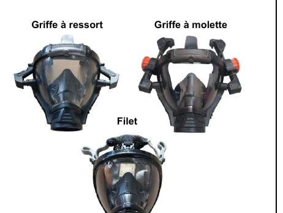
Chaque utilisateur vérifie l'étanchéité du masque (masque plaqué contre le visage, main devant le groin) et le fonctionnement des griffes : il sait ainsi s'il doit utiliser un masque à griffe ou à filet. Les porteurs de masque à filet peuvent le déposer dans l'engin pendant la garde ou, à défaut, utiliser celui du conducteur.
Soupape à la demande (SAD)
Résistance inspiratoire ≤ 5 mbar, expiratoire ≤ 10 mbar · résistance > 250 kg à la traction · dispositif bipasse > 60 l/min.
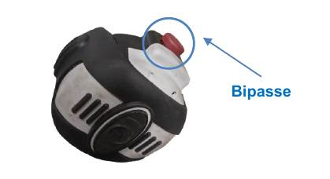
Châssis et harnais
Plaque dorsale composite · réglage articulaire ± 30° · tailles S – M – L – XL · poignée de sauvetage photoluminescente · poignée de portage double · sangle de serrage de la bouteille · protection du robinet. Harnais : ceinture et sangle ventrale, bretelles photoluminescentes, quatre porte-accessoires.
Taille
S
M
L
XL
Stature
< 170 cm
170-175 cm
175-180 cm
> 180 cm
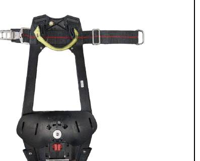
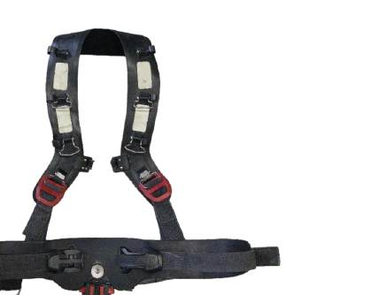
Bouteille
Air comprimé · couleur noir (azote 78 %) et blanc (oxygène 21 %).
Type IV – composite, liner plastique
7,2 L à 300 bars = 2160 L
Type II – métallique renforcée
6 L à 300 bars = 1800 L
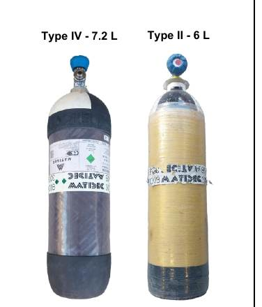
Détendeur, indicateur de pression, avertisseur
Détendeur : 300 → ≤ 7 bars ; soupape de sûreté 400 l/min à 30 bars.
Indicateur de pression : cadran 0 à 350 bars ; blanc = travail 55 à 300 bars, rouge = sécurité 0 à 55 bars.
Avertisseur pneumatique activé à 55 bars, 90 dB, au moins 10 s et entendu jusqu'à 10 bars, débit 5 l/min.
Flexible haute pression : détendeur → indicateur.
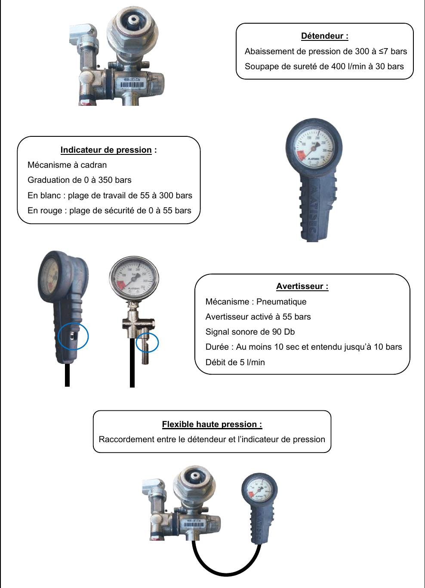
Flexibles moyenne pression, raccord Y, cagoule, robinet
Robinet : soupape limiteur de débit > 150 et < 1350 l/min.
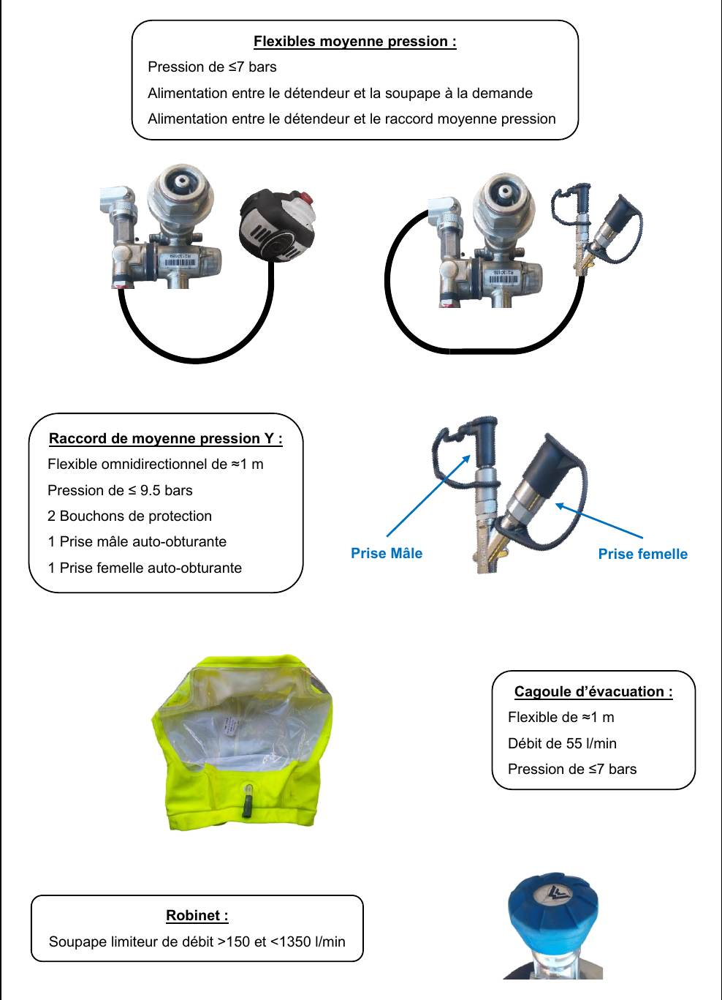
Assistance respiratoire (raccords Y / I, cagoule) :
1.2 – Remplacement d'une bouteille
Fermer le robinet ; purger la ligne d'air avec le bipasse de la SAD.
Poser la protection de la bouteille au sol ; déverrouiller la sangle.
Pousser le raccord rapide vers le châssis, dégager la bouteille usagée ; insérer la bouteille saine, verrouiller la sangle ; ouvrir et vérifier la pression (≥ 270 bars).
Remplacement rapide : pencher le dos vers l'avant, jambes fléchies, et réaliser les étapes 2 et 3 avec l'aide d'un intervenant.
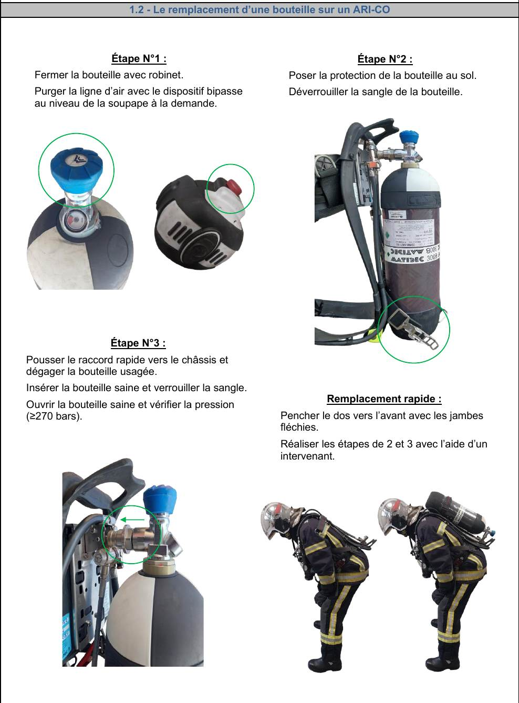
1.3 – Conditionnement
Côté droit – Engagement & progression
Côté gauche – Sécurité & sauvetage
Soupape à la demande Dispositif bipasse Liaison personnelle (avec CAT si doté)
BSD (FMO INC n° 16) ou ICS (FMO INC n° 11) Raccord moyenne pression Y ou I Cagoule d'évacuation Indicateur de pression & avertisseur
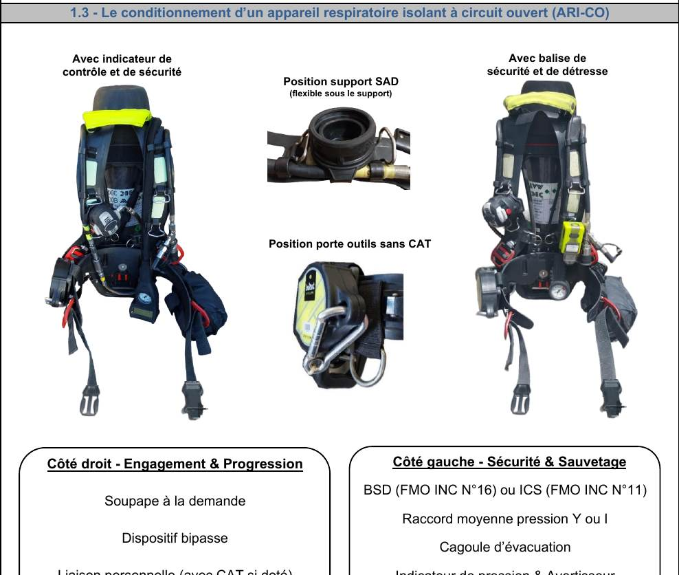
La liaison personnelle est insérée sur la ceinture ventrale par l'anneau élastique (elle ne doit pas être vissée). Position du collier d'attache au tuyau : FMO INC n° 7.
L'ARI-CO du conducteur des engins-pompes urbains sert : de protection respiratoire au conducteur (chef de groupe au besoin), de réserve en cas de dysfonctionnement sur un porteur, et de lot d'assistance en air respirable.
Sur la bouteille, côté droit : un outil de force et déblai pour le chef d'équipe (note opérationnelle 2025/03) et une commande pour l'équipier. Le côté droit permet de récupérer l'agrès, isolé, par un demi-décapelage.
📚 RDEB SDIS 34 – v2 – avril 2026 – § 1.1 à 1.3
💪 Contraintes & préparation
1.4 – Contraintes physiques
Centre de gravité modifié.
Travail musculaire et dépense énergétique accrus.
Baisse des performances.
Déplacements limités dans les passages étroits.
Le poids de l'ARI-CO ne doit pas excéder 18 kg.
1.5 – Contraintes physiologiques
Espace mort augmenté par le volume du masque : une partie du CO₂ expiré est réinhalée. Le demi-masque intérieur sépare les volumes supérieur et inférieur et limite la buée.
Résistances respiratoires : l'inspiration est facilitée par l'air sous pression ; l'expiration demande un effort pour ouvrir la soupape expiratoire.
1.6 à 1.8 – Contraintes psychologiques, d'équipement et de réserve d'air
Inconfort du masque et de l'effort expiratoire ; un porteur qui perd son calme accélère sa respiration et épuise plus vite sa réserve ; difficultés de concentration.
Capacités respiratoires, de perception et relationnelles diminuées ; acuité auditive réduite.
Temps d'intervention limité par la consommation du porteur et la capacité de la bouteille.
L'accoutumance et l'entraînement physique régulier retardent les effets de l'effort sous ARI.
2.1 à 2.4 – Préparation
Physique
Entraînement régulier, exercices cardio-respiratoires, renforcement musculaire, bonne nuit de sommeil avant la garde ou l'astreinte.
Physiologique
Alimentation équilibrée, hydratation régulière, exercices d'aisance au port de l'ARI.
Psychologique
Anticiper les situations stressantes ou dégradées, s'entraîner à garder ses capacités sous stress, étudier les RETEX d'accidents.
Opérationnelle
Maîtrise des EPI et matériels, connaissance des référentiels départementaux, lecture bâtimentaire et du feu, notion d'itinéraire de repli ou de secours.
2.5 – L'habillage
Tout sapeur-pompier engagé en lutte contre l'incendie urbain porte ses EPI ; bijoux, piercings, montres et autres artifices sont proscrits.
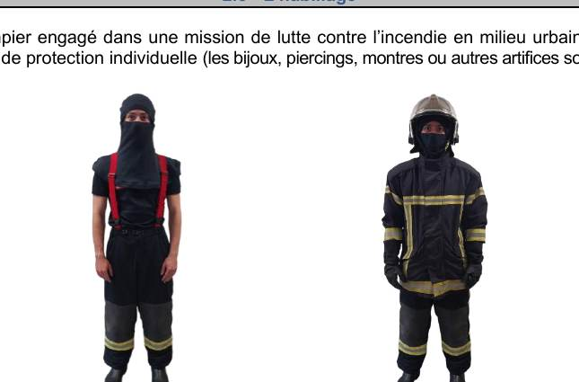
Capeler
Porter l'ARI-CO
Coiffer
Placer le masque sur le visage
Encliqueter
Connecter la SAD au masque
Binôme porteur d'un ARI-CO
Porte l'ARI, masque en attente
Binôme sous ARI-CO
Masque coiffé et encliqueté
Avec un engin-pompe urbain, les deux binômes capellent (sauf ordre contraire) : réglage pendant le transit, contrôle croisé avancé, réactions immédiates dès la sortie de l'engin.
Le chef d'agrès capelle au besoin : ARI disponible dans l'attente d'un binôme de sécurité, reconnaissances et réactions immédiates en milieu vicié, sécurité en cas de dégradation, contrôle des chefs d'équipe.
2.6 – Le capelage
ARI-CO sur le dos, bras dans les bretelles ; ouvrir la bouteille jusqu'à la butée.
Clipser et serrer la sangle ventrale.
Serrer les bretelles.
Encliqueter la SAD, puis vérifier la liaison avec le masque en la faisant pivoter de droite à gauche avec une légère traction.
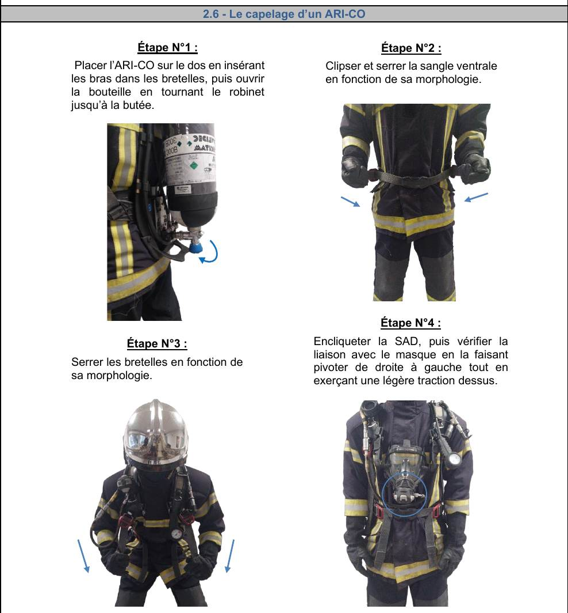
La SAD doit être encliquetée sur le masque en position d'attente : on vérifie ainsi son fonctionnement (aucune fuite ; si l'air sort en continu, la fourchette interne est défectueuse) et, en cas de force majeure, le porteur isolé peut coiffer et encliqueter seul.
2.7 – Coiffage d'un masque à griffe
Mettre le casque, attacher la jugulaire ; dispositifs de serrage déverrouillés au maximum (à la prise de garde) ; retenir sa respiration et plaquer le masque par-dessus la cagoule.
Insérer les griffes dans les fixations du casque, ajuster ; serrer selon la morphologie : pression vers l'arrière (griffe à ressort, ancienne dotation) ou en écartant et tournant vers l'arrière (griffe à molette, nouvelle dotation).
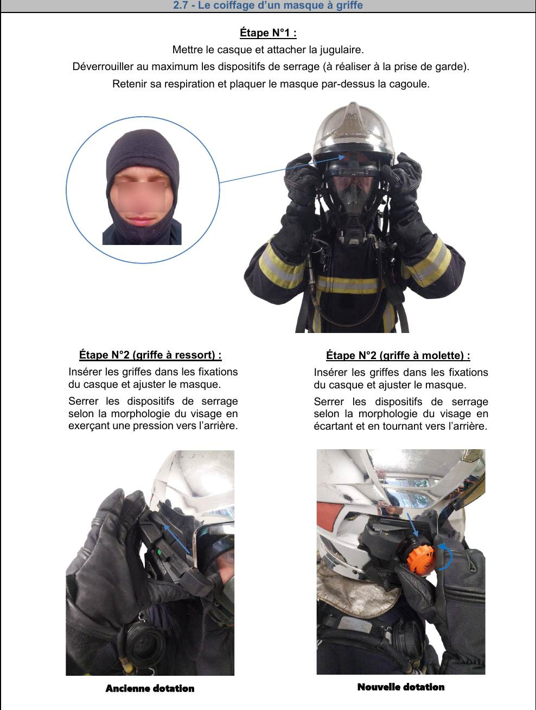
2.8 – Coiffage d'un masque à filet
Retirer le casque ; serrages déverrouillés ; retenir sa respiration et plaquer le masque par-dessus la cagoule.
Placer le filet au-dessus de la tête et ajuster.
Serrer vers l'arrière, puis remettre le casque et attacher la jugulaire.
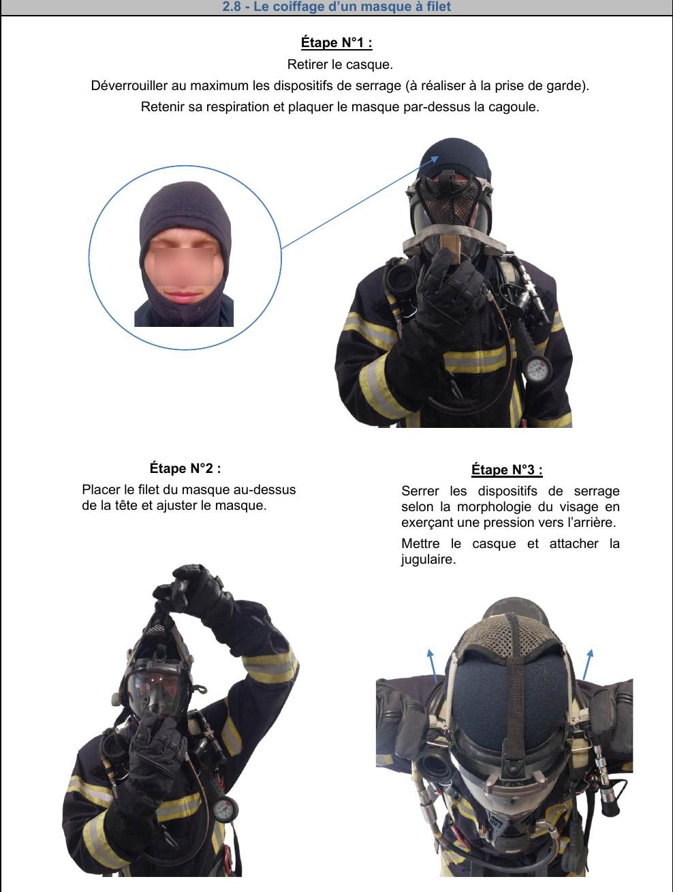
📚 RDEB SDIS 34 – v2 – avril 2026 – § 1.4 à 1.8, 2.1 à 2.8
🧵 Ligne de vie & TTH 900
1.9 – La ligne de vie
Lien physique et continu avec le point d'engagement. Selon la lecture du feu, l'analyse bâtimentaire et les risques : par ligne guide ou par l'établissement.
Il est déconseillé d'engager un binôme simultanément avec une ligne guide et un établissement (complexité, sans plus-value).
1.10 – Par l'établissement
Établissement d'attaque Ø 45 mm sous pression + liaison personnelle ou maintien physique. La LDV 40 est mise en œuvre :
foyer non localisé à la caméra thermique depuis les ouvrants et/ou visibilité réduite ou nulle ;
incendie généralement localisé à moins de 60 m ;
reconnaissance ≤ 776 m² (60 m d'établissement + exploration bilatérale).
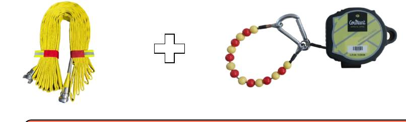
Colliers d'attache au tuyau (CAT) en expérimentation. Sans CAT : la tresse de la liaison personnelle entoure l'établissement avant d'être connectée au point de fixation.
1.11 – Par ligne guide
Ligne guide + liaison personnelle, mise en œuvre :
foyer non localisé à la caméra thermique et/ou visibilité réduite ;
reconnaissance ≤ 388 m² (60 m de ligne guide + exploration unilatérale) ;
sauvetage avec visibilité réduite ou nulle quand aucun moyen hydraulique ne peut être établi.
La commande n'est utilisée qu'en extrême urgence, s'il est impossible de mettre une ligne de vie conventionnelle ; la manœuvre est identique à la ligne guide.
Chaque engin-pompe urbain possède deux lignes guides ; prolongements et dérivations relèvent des équipes IBNB-ELD. La ligne guide du MEA sert surtout quand il arrive en premier avec une victime avérée.
1.12 – La ligne guide
60 m · Ø filaire 6 mm · nodules réfléchissants Ø 12 mm · aramide · 600 kg · 500 °C. Repères tous les 2,5 m : 3 nodules = vers le sinistre (IN-CEN-DIE) ; 1 nodule = vers le point d'engagement (VIE).
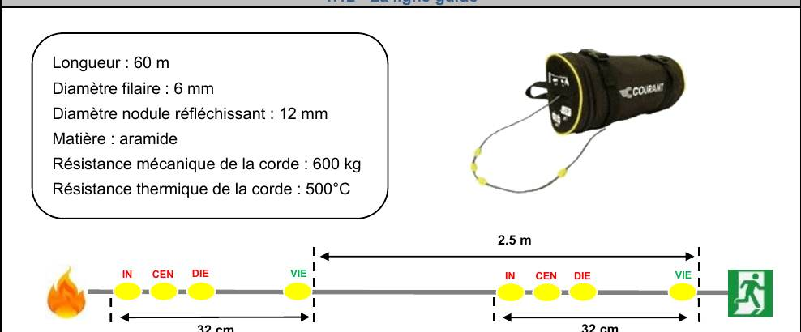
1.13 – La liaison personnelle
Longueur totale 6 m : liaison courte 1,25 m, longue 4,75 m · tresse Ø 3,5 mm · 250 kg.
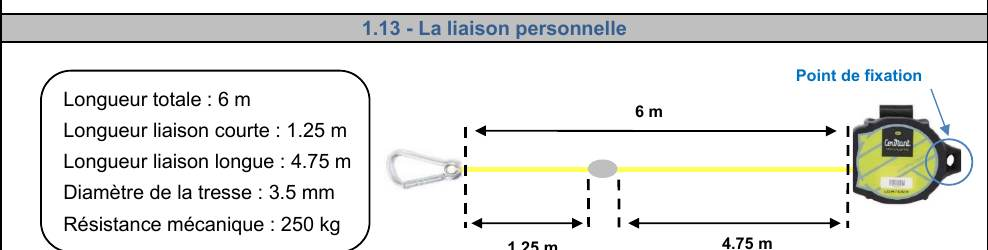
Mise en œuvre sur ligne de vie :
1.14 – L'émetteur-récepteur portatif TTH 900
2 W · autonomie 4 h (−20 à +55 °C) · batterie 55 °C maximum · étanche poussière et eau (jet de lance) · chute ≤ 1 m · DIR N5 : 603 – 643 – 624 – 664 · non ATEX.
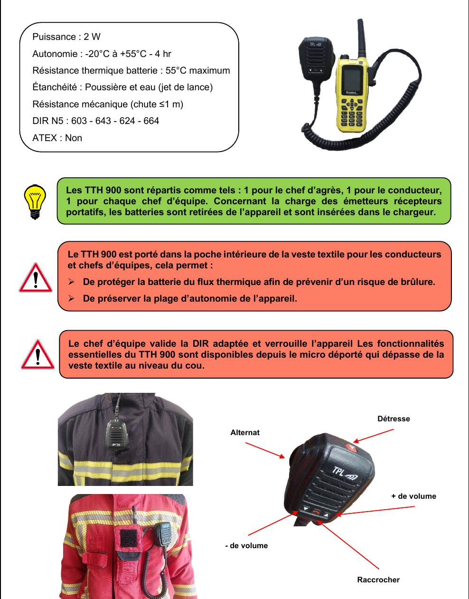
Répartition : 1 pour le chef d'agrès, 1 pour le conducteur, 1 par chef d'équipe. En charge, les batteries sont retirées et placées dans le chargeur.
Conducteurs et chefs d'équipe portent le TTH 900 dans la poche intérieure de la veste (batterie protégée du flux thermique, autonomie préservée). Le chef d'équipe valide la DIR et verrouille l'appareil ; les fonctions essentielles sont sur le micro déporté au niveau du cou.
Appel de détresse :
📚 RDEB SDIS 34 – v2 – avril 2026 – § 1.9 à 1.14
✅ Contrôle croisé & codes de communication
2.9 – Le contrôle croisé
Travail en binôme (un chef, un équipier). L'engagement en zone d'exclusion se fait depuis la zone contrôlée, sous la responsabilité du chef d'agrès ou d'un contrôleur.
Le binôme est indissociable en zone d'exclusion. En zone contrôlée, il peut être dissocié si les porteurs sont à vue.
Après l'habillage, le contrôle croisé est obligatoire ; moyen mnémotechnique « RAPACE » :
R – Robinet
Ouverture de la bouteille jusqu'à la butée
A – Armement
Balise de sécurité et de détresse ou instrument de contrôle et de sécurité activé
P – Pression
Engagement initial avec une pression ≥ 270 bars
A – Ajustement
Port correct des EPI
C – Code
Code de communication adapté aux moyens employés
E – Étanchéité
Absence de fuite au masque et à la SAD
Anomalie au contrôle croisé → l'engagement n'est pas réalisable.
Masque coiffé : aucune fuite (sinon, mauvais réglage casque-cagoule-masque). La SAD se déclenche dès la première inspiration. Dès que l'atmosphère devient viciée, le masque est coiffé, à l'air frais.
2.10 – Les codes de communication
Langage verbal et non verbal
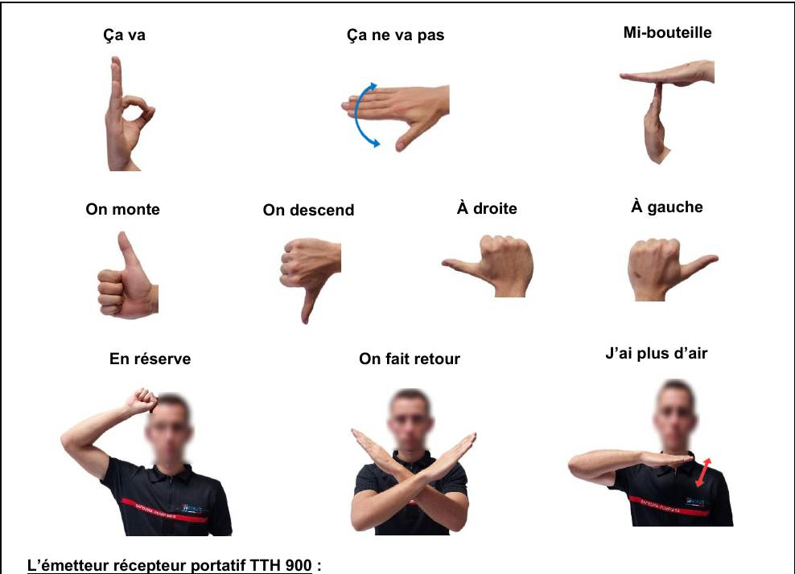
Ça va · ça ne va pas · mi-bouteille · on monte · on descend · à droite · à gauche · en réserve · on fait retour · j'ai plus d'air
Le TTH 900
Chefs d'agrès, chefs d'équipe et conducteurs en sont dotés ; activé dès le transit aller.
Liaison tactique de niveau 5 (603 – 624 – 643 – 664).
Alerte de détresse : message de détresse ou appel de détresse en mode direct ; l'appel est déclenché manuellement quand le message reste 3 fois sans réponse.
Balise de sécurité et de détresse (BSD) et indicateur de contrôle et de sécurité (ICS)
Sur chaque châssis ; activés dès la zone de soutien.
Alertent de l'immobilité, d'une température élevée (si sonde) ou d'une détresse, par signaux sonores et lumineux à proximité.
Déclenchement manuel : sans moyen radio, si le message ou l'appel de détresse reste sans réponse, ou à la demande du contrôleur.
Alarme température : se diriger vers une zone à l'abri ; des réactions immédiates avérées peuvent être réalisées en moins de 5 minutes.
Balise déclenchée : le chef d'agrès ou le contrôleur contacte chaque binôme par radio pour identifier celui en difficulté ; à défaut, tous les binômes regagnent la sortie. Le message ou l'appel de détresse identifie le binôme sans désengager les autres.
Trame de détresse :
📚 RDEB SDIS 34 – v2 – avril 2026 – § 2.9 et 2.10
⏱️ Autonomie, enregistrement & contrôle
2.11 – L'autonomie d'engagement
Trois temps : ALLER → MISSION → RETOUR. Chaque porteur tient compte de sa pression d'engagement pour juger de la faisabilité de la mission.
Ne pas attendre la réserve : dès que l'avertisseur se déclenche, la sortie du binôme est immédiate.
≈ 10 l/min
Repos – survie dans l'attente des secours
≈ 50 l/min
Travail intense – généralement engagement à vue
≈ 105 l/min
Travail continu 15 min maximum – généralement engagement avec ligne de vie
≈ 135 l/min
Travail continu moins de 5 min – généralement sauvetage
Autonomie = pression × volume ÷ consommation, avec la pression d'engagement réserve décomptée (−50 bars). Exemple : 250 bars × 7,2 L ÷ 105 l/min = 17 min.
5.11-5.12 – Abaques d'engagement
Engagement : pression − 50 bars de réserve. Survie : pression totale (la réserve de 50 bars représente 30 min en 6 L et 36 min en 7,2 L). Arrondi à la minute, 1 min minimum.
BARI 6 L
Pression
Survie ≈10 l/min
Engagement à vue ≈50 l/min
Engagement avec ligne de vie ≈105 l/min
Sauvetage ≈135 l/min
300 bars
3 h 00
30 min
14 min
11 min
290 bars
2 h 54
29 min
14 min
11 min
280 bars
2 h 48
28 min
13 min
10 min
270 bars
2 h 42
26 min
13 min
10 min
260 bars
2 h 36
25 min
12 min
9 min
250 bars
2 h 30
24 min
11 min
9 min
240 bars
2 h 24
23 min
11 min
8 min
230 bars
2 h 18
22 min
10 min
8 min
220 bars
2 h 12
20 min
10 min
8 min
210 bars
2 h 06
19 min
9 min
7 min
200 bars
2 h 00
18 min
9 min
7 min
190 bars
1 h 54
17 min
8 min
6 min
180 bars
1 h 48
16 min
7 min
6 min
170 bars
1 h 42
14 min
7 min
5 min
160 bars
1 h 36
13 min
6 min
5 min
150 bars
1 h 30
12 min
6 min
4 min
140 bars
1 h 24
11 min
5 min
4 min
130 bars
1 h 18
10 min
5 min
4 min
120 bars
1 h 12
8 min
4 min
3 min
110 bars
1 h 06
7 min
3 min
3 min
100 bars
1 h 00
6 min
3 min
2 min
90 bars
54 min
5 min
2 min
2 min
80 bars
48 min
4 min
2 min
1 min
70 bars
42 min
2 min
1 min
1 min
60 bars
36 min
1 min
1 min
1 min
BARI 7,2 L
Pression
Survie ≈10 l/min
Engagement à vue ≈50 l/min
Engagement avec ligne de vie ≈105 l/min
Sauvetage ≈135 l/min
300 bars
3 h 36
36 min
17 min
13 min
290 bars
3 h 29
35 min
16 min
13 min
280 bars
3 h 22
33 min
16 min
12 min
270 bars
3 h 14
32 min
15 min
12 min
260 bars
3 h 07
30 min
14 min
11 min
250 bars
3 h 00
29 min
14 min
11 min
240 bars
2 h 53
27 min
13 min
10 min
230 bars
2 h 46
26 min
12 min
10 min
220 bars
2 h 38
24 min
12 min
9 min
210 bars
2 h 31
23 min
11 min
9 min
200 bars
2 h 24
22 min
10 min
8 min
190 bars
2 h 17
20 min
10 min
7 min
180 bars
2 h 10
19 min
9 min
7 min
170 bars
2 h 02
17 min
8 min
6 min
160 bars
1 h 55
16 min
8 min
6 min
150 bars
1 h 48
14 min
7 min
5 min
140 bars
1 h 41
13 min
6 min
5 min
130 bars
1 h 34
12 min
5 min
4 min
120 bars
1 h 26
10 min
5 min
4 min
110 bars
1 h 19
9 min
4 min
3 min
100 bars
1 h 12
7 min
3 min
3 min
90 bars
1 h 05
6 min
3 min
2 min
80 bars
58 min
4 min
2 min
2 min
70 bars
50 min
3 min
1 min
1 min
60 bars
43 min
1 min
1 min
1 min
2.12 – L'enregistrement
Avant chaque engagement, en zone contrôlée auprès du contrôleur (à défaut par le binôme lui-même, après avoir obligatoirement informé le chef d'agrès), de préférence sur le tableau de gestion des personnels :
identification des porteurs ;
pression d'engagement ;
heure d'entrée ;
heure de sortie prévisible ;
mission du binôme.
Les clés des balises de sécurité et de détresse restent sur les porteurs ; les ICS n'en ont plus.
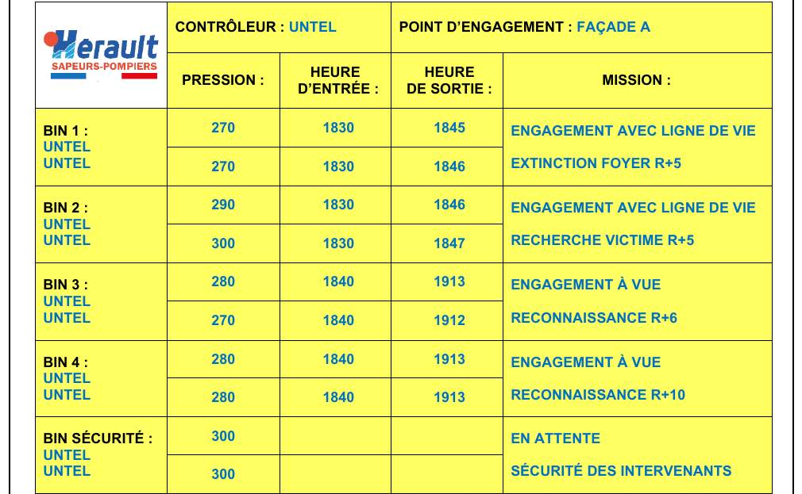
2.13 – Le contrôleur
Régule un seul point d'engagement ; enregistre et sécurise les binômes engagés en zone contrôlée.
Désigné si possible dès l'engagement d'un binôme en zone d'exclusion ; à défaut, un chef d'agrès ou une personne titulaire du module incendie.
Supervise au maximum 5 binômes (4 + 1 binôme de sécurité).
Gilet haute visibilité, émetteur-récepteur portatif sur la tactique de niveau 5 des binômes.
En lien avec le chef d'agrès et/ou le COS ; en urgence, il engage le binôme de sécurité et rend compte.
En groupe incendie, la VLCG peut avoir un conducteur titulaire du module incendie qui tiendra le rôle de contrôleur.
2.14 – Le binôme de sécurité
Mis en place par le COS dès que possible lors de l'engagement d'un binôme en zone d'exclusion ; sous l'autorité du contrôleur, au point d'engagement en zone contrôlée. Rôle principal : assister et porter secours aux binômes engagés. Missions secondaires possibles s'il reste mobilisable. À défaut, le chef d'agrès assure cette fonction (contact permanent, ARI).
Même niveau de protection que les binômes engagés ; moyen hydraulique à disposition selon l'analyse du risque. Engagé sur ordre du contrôleur dès qu'un binôme rencontre des difficultés.
Un sauvetage peut justifier l'envoi immédiat d'un binôme sans contrôleur ni binôme de sécurité. L'engagement du binôme de sécurité implique la désignation d'un nouveau binôme de sécurité dès que possible.
À disposition du chef d'agrès ou du contrôleur en zone contrôlée ; contact visuel ou radio avec les binômes engagés.
Pérennité de l'itinéraire de repli ; vigilance aux balises en zone d'exclusion ; remontée d'informations au contrôleur.
Contrôler l'ouvrant d'engagement ; faciliter la progression et le repli des établissements (ces deux derniers points peuvent lui revenir en attendant la montée en puissance).
2.16 – Phase « ENGAGEMENT »
Assistance technique ou matérielle du binôme engagé.
Aide ou réalise le dégagement d'une victime.
Rend compte au chef d'agrès ou au contrôleur.
2.17 – Exemple de matériel
Ligne de vie · outil de force · assistance en air respirable · caméra thermique · pince coupante · dispositif de premiers secours · système de traction · éclairage · échelle télescopique.
Le matériel peut être transporté dans la barquette du MEA (si dotée), tractée par un binôme avec des SIM. La pince coupante sert surtout à libérer des porteurs emmêlés dans des liaisons personnelles ou une ligne guide.
Sauvetage d'un sauveteur :
📚 RDEB SDIS 34 – v2 – avril 2026 – § 2.11 à 2.17, 5.11, 5.12
🔎 Zonage, lecture du feu & radio
2.18 à 2.22 – Zonage et façades
Zones d'exclusion, contrôlée et de soutien ; désignation des façades :
2.23 – L'observation sur incendie
Météo
Peut influencer la propagation, la puissance du feu et les tirages.
Bâtiment
Résistance et réaction au feu, potentiel calorifique, dimensionnement des volumes et des ouvrants.
Fumées
Selon leur vitesse de sortie : pression induite par la chaleur.
Flammes
Selon leur couleur : taux de ventilation et ambiance thermique.
Chaleur
Situe le volume sur la courbe de développement du feu.
Ouvrants
Puissance du feu selon le milieu, le nombre et la taille des ouvrants.
Sons
Puissance du foyer.
2.24 – Le danger des fumées
Chaudes
Rayonnent sur l'environnement.
Opaques
Occultent partiellement ou totalement la vue.
Mobiles
Se déplacent dans les volumes.
Inflammables
Peuvent s'enflammer.
Toxiques
Issues de la combustion et de décompositions chimiques.
2.25 – Les communications radio
Sous ARI, le masque altère la parole : soigner la qualité des messages, éloigner le micro déporté de la membrane phonique.
Tactique niveau 3/4 : chef de groupe ↔ chefs d'agrès.
Tactique niveau 5 : chefs d'agrès ↔ chefs d'équipe et conducteurs.
L'ordre complémentaire de transmission peut être modifié à la demande du CODIS, station directrice. En transit, communications sur les tactiques N3/4 ; sur l'OPE, demander l'autorisation au CODIS pour communiquer avec un autre véhicule.
Message clair, précis, concis, débit de parole lent.
Pour ne pas encombrer les liaisons : message de compte rendu de situation quand une remontée d'information est nécessaire, sinon le terme « À disposition ».
📚 RDEB SDIS 34 – v2 – avril 2026 – § 2.18 à 2.25
🔥 Engagement
3.1 – Types d'engagement
Organisés par le chef d'agrès ou le COS ; le binôme adapte sa technique à la situation.
À vue, air vicié
Avec ligne de vie
Débit
≈ 50 l/min
≈ 105 l/min
Visibilité
Suffisante
Réduite ou nulle
Durée (300 bars)
30 min (6 L) · 36 min (7,2 L)
14 min (6 L) · 17 min (7,2 L)
Potentiel physique
Faiblement altéré
Altéré
À vue dans un air non vicié : air respirable, masques en attente, temps d'engagement non limité.
Sauvetage : débit ≈ 135 l/min, engagement de moins de 5 min, potentiel physique fortement altéré.
3.3 – L'engagement avec une ligne de vie
Procédures identiques (ligne guide ou établissement) pour : uniformiser, disposer des 6 m de liaison personnelle chacun, éviter les emmêlements aux retournements, éviter les liaisons croisées entre porteurs, ne pas entraîner le binôme si un porteur chute.
Chef d'équipe et équipier restent en contact physique, visuel ou verbal ; si un contact doit être rompu, ils s'avertissent. Pour aider l'autre, un porteur peut passer sa liaison en position longue après s'être assuré que la ligne est attachée ou bloquée.
Au moyen d'un établissement
Le chef d'équipe est garant de la sécurité collective (port et gestion de la lance) ; l'équipier porte la caméra thermique.
Chacun progresse individuellement sur l'établissement, en position adaptée.
Progression par maintien physique au tuyau si binôme et/ou établissement à vue ; sinon par la liaison personnelle avec le CAT.
Selon la situation, il n'est pas obligatoire de ramener le moyen hydraulique jusqu'à la sortie au retour, ni de placer le tuyau en O dans le volume (les réserves compliquent les cheminements).
Au moyen d'une ligne guide
Le chef d'équipe est garant de la sécurité collective (port et gestion de la ligne guide) ; l'équipier porte la caméra thermique.
Chacun est attaché individuellement à la ligne guide par sa liaison personnelle.
Dès qu'une ligne guide est mise en œuvre, un moyen hydraulique est à disposition, à sec ou en attente.
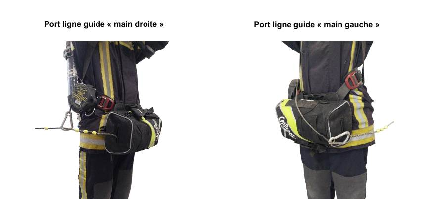
Port « main droite » · « main gauche »
3.4 – Les explorations
Linéaire : le long de l'établissement ou de la ligne guide ; chef d'équipe et équipier en liaison courte.
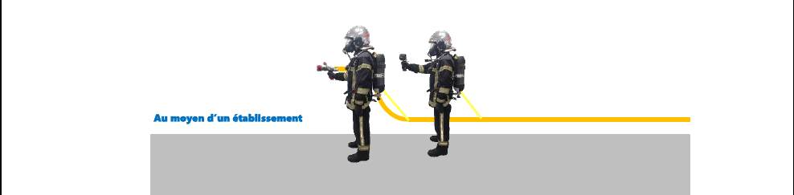
Latérale : parallèlement à la ligne ; chef d'équipe en liaison courte, équipier en liaison courte ou longue.
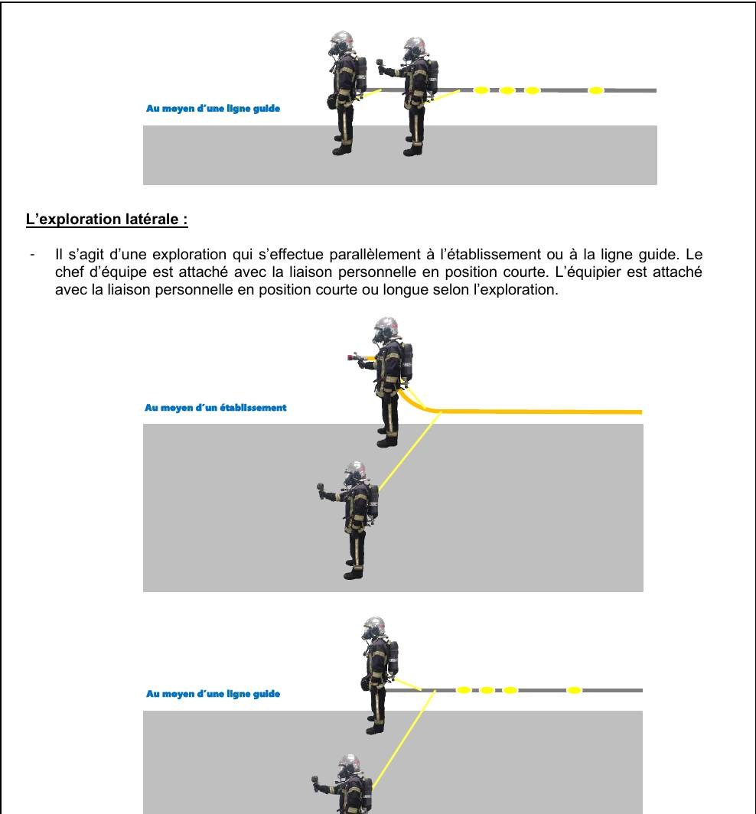
Chaque liaison personnelle est attachée sur la ligne guide ou l'établissement. Sans elles, et seulement depuis un ouvrant, l'équipier s'attache au point de fixation de la liaison du chef d'équipe. En exploration latérale, le chef d'équipe peut tenir le mousqueton de l'équipier pour qu'il ne glisse pas.
Circulaire : autour de la ligne ; chef d'équipe en liaison courte, équipier en courte ou longue.
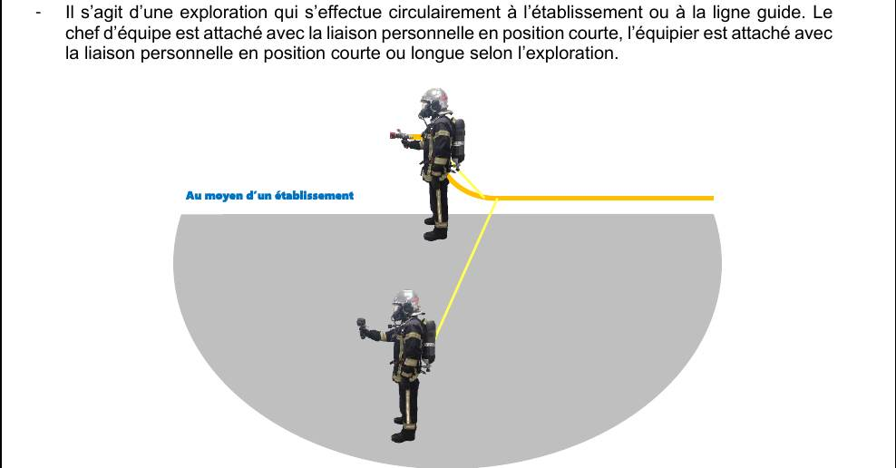
3.5 – Exemple de technique d'exploration circulaire
Le chef d'équipe déroule totalement la liaison personnelle de l'équipier.
À partir de la liaison, il fait une brassée de 1 à 1,5 m et un tour sur la main.
L'équipier garde la tension pour explorer circulairement le volume.
Répéter dans la limite des 6 m de liaison : surface explorée ≤ 56 m².
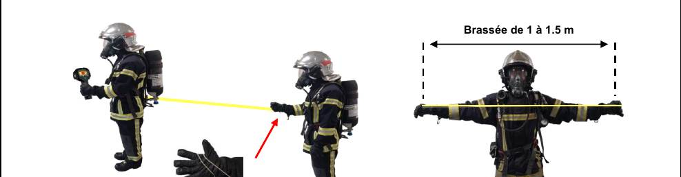
Pour connaître la surface d'un volume, l'équipier avance de façon linéaire et latérale en liaison longue jusqu'à toucher une paroi ; sinon, le binôme entre avec la ligne de vie et finalise l'exploration.
3.6 – Le retournement sur ligne guide
Sac avec point d'ancrage : le chef d'équipe amarre et dépose la ligne guide en déverrouillant la sangle ventrale de l'ARI-CO ; chacun maintient la ligne et se retourne face à elle.
Sac sans point d'ancrage (au sol) : le chef d'équipe dépose la ligne ; chacun se retourne face à elle ; traction sur la ligne pour faciliter le retour.
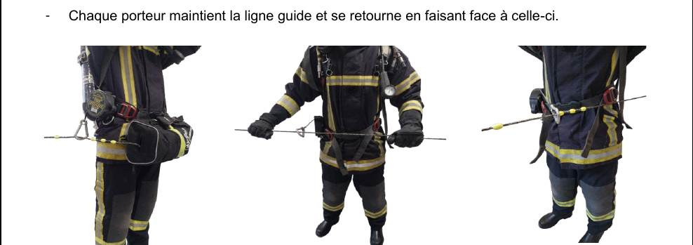
Après le retournement, le chef d'équipe se retrouve derrière l'équipier, en serre-file : il s'assure que son équipier n'est pas resté au niveau du sinistre.
3.7 – L'amarrage d'une ligne guide
Initial : premier amarrage depuis le point d'engagement ; vérifier le bon sens de la ligne guide.
Intermédiaire : pendant l'engagement, sur les ancrages structurels ou artificiels.
Final : dernier amarrage avant que le binôme regagne la sortie (sac à proximité).
Garant de la sécurité collective, le chef d'équipe assure la pérennité de l'itinéraire de repli : il choisit les ancrages et réalise les amarrages.
Technique simple et rapide : un tour mort et deux demi-nœuds.
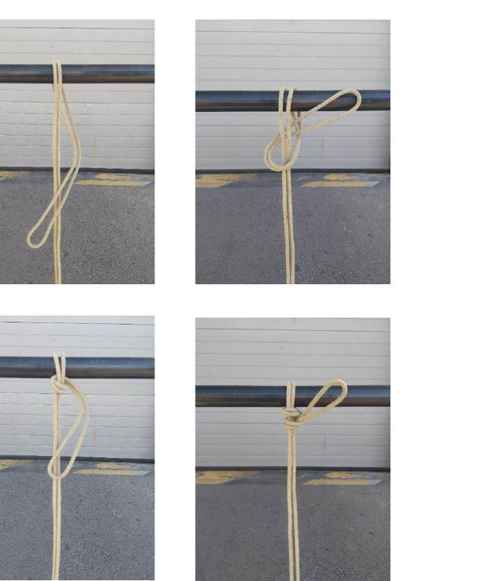
3.8 – Le croisement sur une ligne de vie
Ligne guide : chacun en liaison courte ; les porteurs du binôme entrant se détachent l'un après l'autre et contournent le binôme sortant en gardant un lien physique ; dès qu'il récupère la ligne, le binôme entrant s'y attache.
Établissement : binômes entrant et sortant de chaque côté du tuyau ; ils maintiennent le tuyau, se détachent et se rattachent l'un après l'autre.
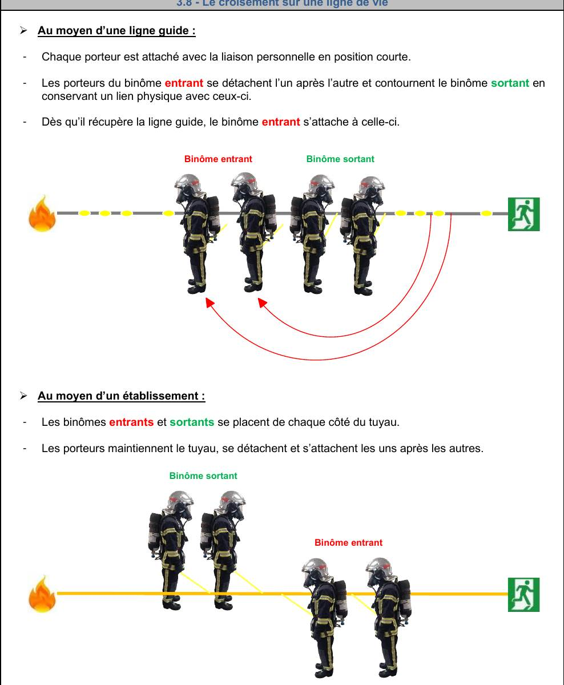
3.9 – Collier d'attache au tuyau (CAT)
Mise en place décrite dans la FMO INC n° 7.
3.10 – La technique AIDES
Recherche et sauvetage pièce par pièce depuis l'extérieur, en ressortant entre chaque exploration ; réservée aux pièces de surface modérée (chambres…) avec normalement une seule porte intérieure. Après la pénétration, isoler rapidement le feu en fermant la porte vers les circulations.
Depuis l'extérieur, elle est conditionnée par la lecture du feu au niveau des ouvrants.
Accéder
Pénétrer dans la pièce par échelle portable, MEA, échelle télescopique ou de plain-pied.
Isoler
Fermer la porte entre le volume et les circulations intérieures : garant de la protection du personnel.
Désenfumer
Laisser ouvert l'ouvrant d'accès pour l'évacuation naturelle des fumées.
Explorer
Reconnaître le volume pour rechercher une victime (caméra thermique).
Sauver
Dégager la victime avec la technique adaptée, puis sortir de la pièce.
📚 RDEB SDIS 34 – v2 – avril 2026 – § 3.1 à 3.10
🔦 Recherche & retour d'engagement
3.11 – Les recherches
Recherche primaire
Au plus tôt, selon les informations et la lecture du feu : d'abord les endroits les plus probables, puis le reste du bâtiment. En superstructure :
1er temps : étage du foyer et ascenseurs (ramener l'ascenseur au RDC, porte calée ouverte).
2e temps : étage directement au-dessus et dernier étage (communications horizontales et verticales, propagation des fumées).
3e temps : étages intermédiaires et inférieurs.
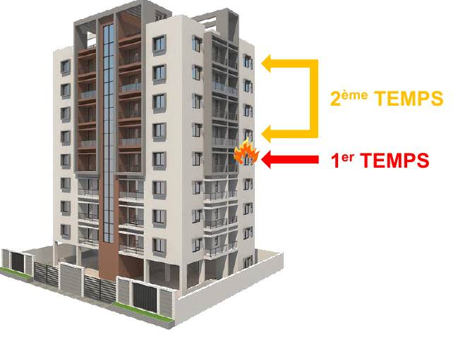
Incendie avec notion de victimes : le chef d'agrès peut engager deux binômes simultanément sur la même ligne de vie (extinction et recherche).
Recherche secondaire
Après la maîtrise du sinistre et la suppression des dangers : recherche approfondie pour s'assurer que toutes les victimes ont été retrouvées.
Règles de déplacement et de progression
Exploration debout, accroupi ou à quatre pattes selon les conditions ; escalier à risque : descente en marche arrière.
Déplacement le long des murs pour une exploration la plus complète possible.
Caméra thermique ; en visibilité réduite ou nulle, binôme relié à la ligne de vie.
Pièce par pièce, attentif aux signes de présence de victimes ; sens de reconnaissance défini : « main gauche » ou « main droite ».
Victime découverte : sauvetage, mise en sécurité par évacuation ou par confinement, selon les techniques du .
Espaces d'attente sécurisés (EAS)
Présents dans certains ERP, à l'abri des fumées, des flammes et du rayonnement thermique :
au moins 2 par niveau accessibles aux fauteuils roulants (1 si un seul escalier est exigé) ;
distance maximale depuis un EAS : 40 m jusqu'à un escalier ou une circulation protégés ; 30 m en cul-de-sac ; 30 m jusqu'à un escalier non protégé ;
figurent sur les plans schématiques ; un moyen de signaler sa présence (fenêtre repérable…) ; téléphone, interphone ou bouton d'appel si SSIAP.
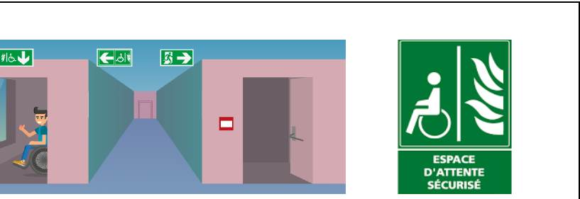
3.12 – Les règles de marquage
Les pièces reconnues sont marquées pour éviter les répétitions, et les portes refermées. L'absence de marquage signifie que la pièce n'a pas été reconnue (action en cours ou à réaliser, ou porte verrouillée). Inscription à la bombe à craie : R = Reconnu.
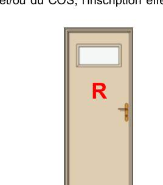
3.13 – Le retour d'engagement
Compte rendu au COS (radio, oral ou schéma opérationnel du TGP) précisant si possible : accès actuels et possibles, longueur des circulations, niveaux et volumes concernés, actions réalisées, propositions d'actions, évolution du sinistre et conséquences.
Le schéma opérationnel
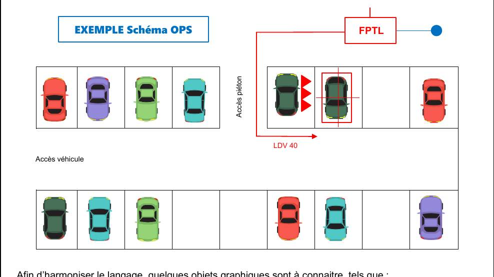
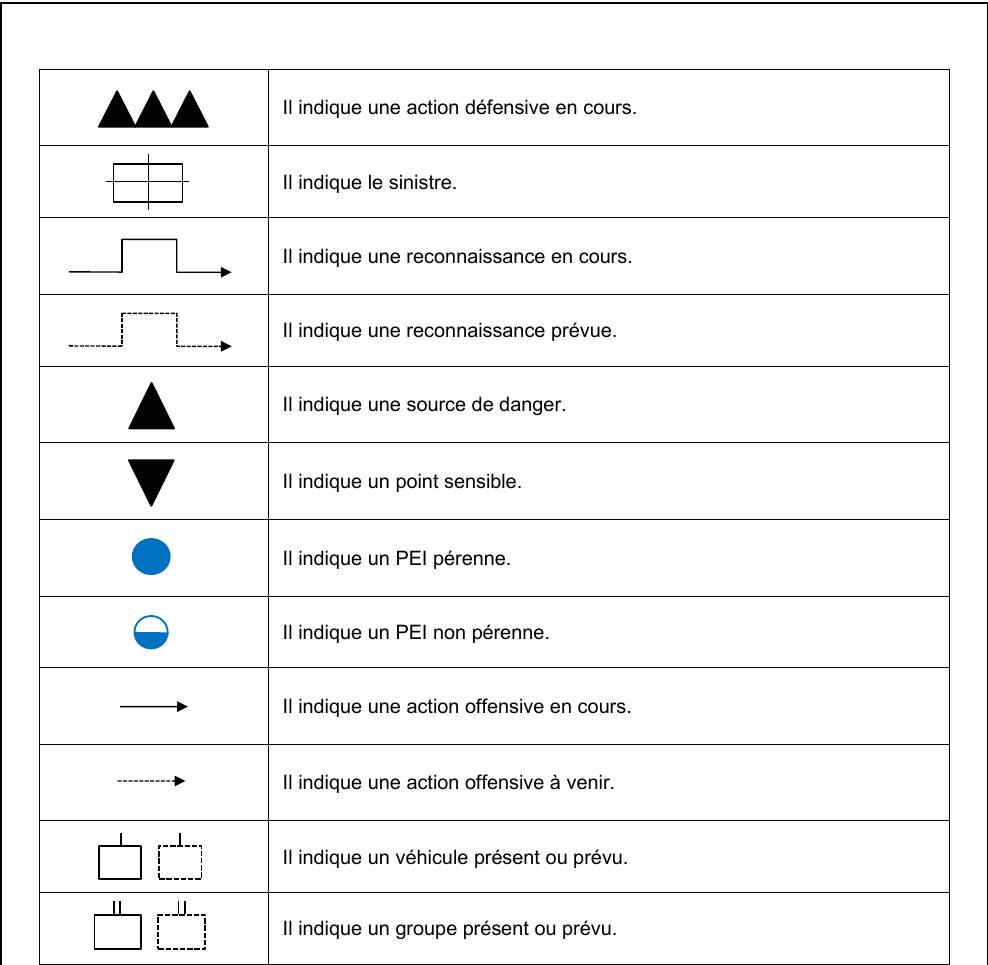
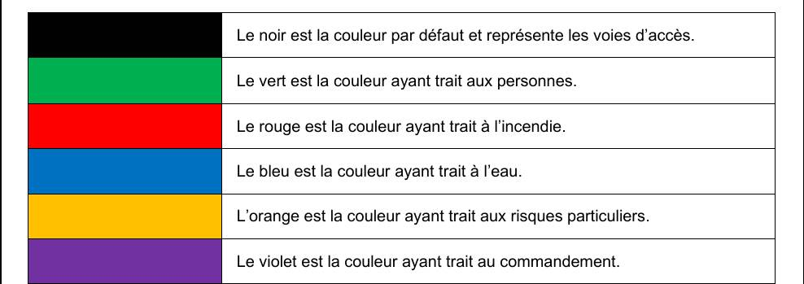
Le message de compte rendu de situation
Je suis
S'identifier et donner sa localisation précise.
Je vois
Estimer l'importance, l'évolution du sinistre et les dangers particuliers.
Je fais
Informer de l'action en cours.
Je suis : BINÔME Y du FPT Z, à l'entrée de l'appartement au 1er étage.
Je vois : un feu de forte intensité avec risque de propagation sur l'appartement du dessus.
Je fais : extinction.
Si le sauveteur peut réaliser rapidement un sauvetage ou une mise en sécurité sans aide, il agit d'abord ; le compte rendu est émis après avoir soustrait la victime aux effets du sinistre.
Sur le « je vois », le chef d'agrès ou le COS prend les mesures pour stabiliser la situation ; le chef d'équipe peut proposer une idée de manœuvre.
📚 RDEB SDIS 34 – v2 – avril 2026 – § 3.11 à 3.13
🔄 Réengagement & récupération
3.14 – Le réengagement
Nouvelle mission après une phase de récupération, avec deux critères : une autonomie suffisante et un état physique compatible avec la nouvelle mission.
Les règles d'engagement restent à respecter. À partir du stade « maître du feu » et jusqu'à la fin, la pression minimale de réengagement est laissée à l'appréciation du CA et/ou du COS. Prévoir des relèves pour limiter les réengagements.
Sans soutien sanitaire : l'état physique est apprécié par le chef d'agrès ou le COS avec le tableau ci-dessous ; les bilans sont faits par les conducteurs des engins incendie ou toute personne désignée par le COS.
Critère présent au 1er bilan → mise au repos physique de l'agent.
Critère présent au 2e bilan → pas de réengagement, hydratation progressive (1,5 L en 15 min), demander un VSAV et/ou un SSO.
Dès présence de suie dans les voies aériennes au mouchage ou d'un malaise, l'intervenant n'est plus réengagé. Le temps de repos entre les deux bilans dépend de l'état physique et de la météo.
3.16 – Tableau d'aide à la décision de non-réengagement
Critère
Sans VSAV / VASAN
Avec VSAV / VASAN
Suie dans les voies aériennes au mouchage
⛔ Non-réengagement dès le 1er bilan
Malaise
⛔ Non-réengagement dès le 1er bilan
Pression artérielle > 190 mmHg
–
✔
Saturation à l'air libre < 94 %
–
✔
Fréquence circulatoire > 140 bpm
✔
✔
Fréquence ventilatoire > 25 mpm
✔
✔
Comportement inhabituel
✔
✔
Rougeur sur la face et le torse
✔
✔
Pâleur
✔
✔
Soif intense
✔
✔
✔ = critère évalué au 1er bilan (repos) puis au 2e bilan (non-réengagement s'il persiste).
3.15 – La récupération du personnel
Retirer masque, casque, cagoule, puis poser l'ARI-CO.
Ouvrir la veste et le surpantalon ; se refroidir les mains, la tête et le cou.
Position assise ou à genoux.
Se nettoyer les mains, le visage et le cou avec des lingettes corporelles.
S'hydrater (gargouiller et recracher la première gorgée) et/ou s'alimenter.
Au besoin, ventilateur électrique pour refroidir les intervenants.
📚 RDEB SDIS 34 – v2 – avril 2026 – § 3.14 à 3.16
🧼 Après l'engagement
4.1 – L'exposition des intervenants
Exposition directe (le polluant entre par une voie d'absorption) ou indirecte (par un vecteur pollué). Absorption (pénétration dans un milieu), adsorption (fixation sur une surface), désorption (relargage immédiat ou différé).
Voies de pénétration : inhalation, ingestion, cutanée, oculaire.
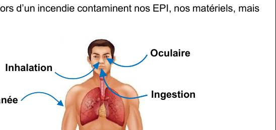
4.2 – Le nettoyage des tenues sur opération
Le COS adapte le nettoyage selon le degré de souillure. Le conducteur de l'engin-pompe urbain est logisticien et prépare une zone de nettoyage : parc matériels propres et parc matériels souillés.
Niveau
Exposition
Nettoyage sur les lieux
Stockage au retour
Reconditionnement au CIS
JE SAIS 🟢 Néant
Aucune exposition
Pas de nettoyage
EPI dans la cabine ; matériels dans les coffres
EPI au vestiaire
JE SAIS 🟡 Superficiel
Exposition courte à une fumée à l'air libre
Aération des EPI ; rinçage à l'eau du matériel
EPI dans la cabine ; matériels dans les coffres
EPI au vestiaire ; nettoyage du sol de la cabine
JE SENS 🟠 Moyen
Exposition courte à une fumée lors d'un déblai, d'une reconnaissance ou d'une attaque
Brossage à sec et aération des EPI ; brossage à l'eau des matériels, effets chaussants et casques
EPI dans la cabine ; matériels dans les coffres
Aération des EPI hors vestiaires ; nettoyage intérieur de l'engin, remisage vitres ouvertes
JE VOIS 🔴 Important
Exposition longue lors d'un déblai, d'une reconnaissance ou d'une attaque ; EPI avec traces visibles après brossage
EPI isolés dans un sac après déshabillage ; brossage à l'eau du matériel, effets chaussants et casques ; matériels isolés dans une bâche si traces après rinçage
EPI et matériels dans les coffres de l'engin ou dans un véhicule léger
Retour des EPI au GTL, tenue propre ; nettoyage intérieur et extérieur de l'engin, remisage vitres ouvertes ; nettoyage des matériels
Protection pour le déshabillage et le nettoyage : décontamination incendie → demi-masque filtre antiaérosols P3 + gants jetables ; avec risque technologique → demi-masque filtre antigaz ou ARI-CO + tenue de type III.
Nettoyer les véhicules à chaque souillure « important », ou à défaut une fois par mois. Tenue propre fournie par le GTL (réserve de compagnie, chaîne logistique ou VREPI, NO 2025/10).
De retour au CIS, après le reconditionnement des engins, les intervenants prennent impérativement une douche.
4.3 – Le lot DECOPI
Matériel
FPTGP
FPT-FPTL
CCFU
MEA
VLCG
Seau
2
Boîte de lingettes corporelles
1
Demi-masque filtre anti-aérosols P3
8
6
6
3
2
Paire de gants jetables
8
6
6
3
2
Brosse
2
Balai-brosse
1
Lavette
4
Sac rouge 100 L
8
6
6
3
2
Solution ARI-CO / solution masque
1 / 1
4.4 – Déshabillage avec un masque à griffes
Déconnecter la SAD, la placer sur son support.
Décoiffer, laisser le masque pendant.
Retirer casque, masque à griffes et ARI-CO ; les poser au sol.
Retirer la cagoule de l'arrière vers l'avant en évitant la face.
Retirer les gants type C en limitant le contact direct avec les mains.
S'équiper de gants jetables et d'un demi-masque P3.
Libérer les passages de main, retirer la veste par l'arrière.
Libérer les bretelles, déverrouiller les fermetures, retirer le surpantalon.
Vider les effets personnels, placer les EPI souillés dans le sac.
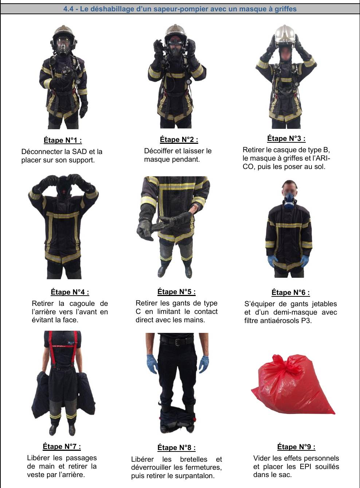
4.5 – Déshabillage avec un masque à filet
Identique, sauf les étapes 2 et 3 : retirer d'abord le casque et le poser au sol, puis retirer le masque à filet et l'ARI-CO.
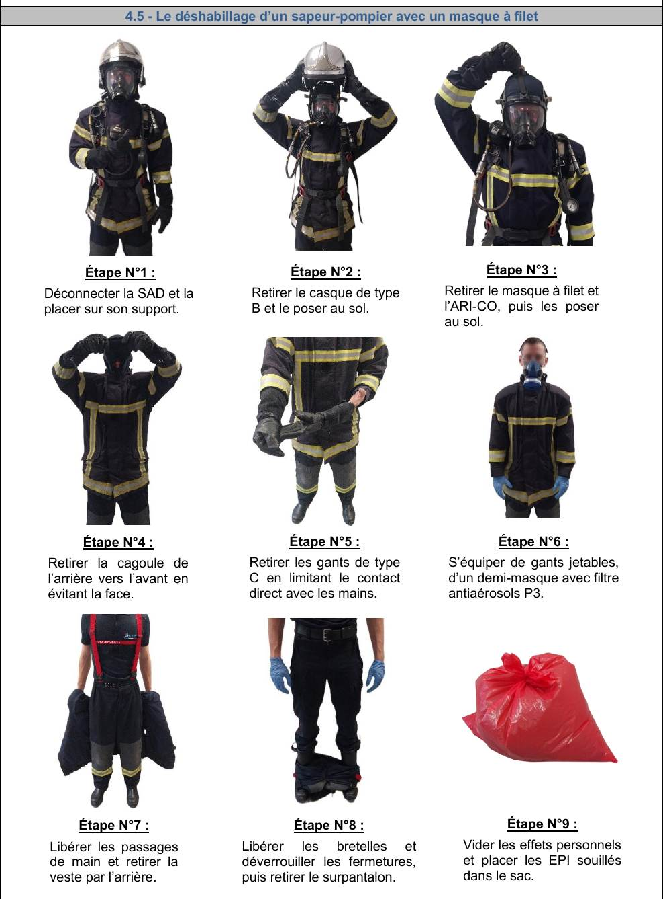
4.6 – Nettoyage manuel d'un ARI-CO ou d'un masque
ARI-CO : solution savonneuse au chiffon doux ou à la brosse souple ; rincer à l'eau (< 60 °C).
Nettoyage de l'ARI-CO au jet d'arrosage ou au nettoyeur sous pression interdit (risque de blocage par l'eau dans la ligne d'air).
Masque : solution préconisée par le GTL ; rincer (< 50 °C) au chiffon ou au jet ; égoutter et/ou souffler à l'air comprimé ; sécher à l'air libre ou en armoire (< 60 °C), groin vers le haut.
Après chaque utilisation, le masque est nettoyé, rangé dans sa housse après séchage, en veillant à ce que le demi-masque inférieur ne sorte pas de son emplacement.
Faire un KIMOCE au service étude planification maintenance en cas d'anomalie ou de doute, ou si la souillure empêche un nettoyage manuel (passage en machine par le GTL).
📚 RDEB SDIS 34 – v2 – avril 2026 – § 4
📎 Annexes : parkings, CO, H₂S, ascenseurs
5.1-5.2 – Parkings couverts et caves en sous-sol
Complexité : accès difficiles et cheminements complexes, flux thermique élevé, capacité d'accueil, flux du public, dispositifs de prévention.
S'appuyer sur un SSIAP au PC sécurité, un gardien, un plan ETARE ou un plan d'intervention.
Ramener l'ascenseur au RDC, porte calée ouverte.
Reconnaître d'abord les cages d'escaliers (niveau sinistré, niveaux enfumés) ; vérifier la fermeture des portes palières, ventiler si besoin.
Couper les énergies et barrer les fluides.
Rechercher le sinistre à la caméra thermique depuis l'ouvrant.
Si l'engagement par les escaliers est impossible ou si le véhicule est à vue : accès véhicule.
Un ou plusieurs moyens hydrauliques, parc matériel au besoin ; rechercher la présence de VEA.
Après analyse du COS, activer le désenfumage ; ventilation mécanique de l'infrastructure si nécessaire.
La continuité radio peut être assurée par un système passif ou actif. Attention aux portes coupe-feu asservies à la détection : elles peuvent se refermer et bloquer les lignes de vie.
Engagements longue durée, parcs de stationnement :
5.3 – Monoxyde de carbone (CO)
Issu d'une combustion incomplète ; incolore, inodore, insipide. Intoxication chronique ≤ 200 ppm sur une longue période ; aiguë > 200 ppm en un temps court. Explosivité : LIE 10,9 % (109 000 ppm), LSE 76 % (760 000 ppm).
Alarme basse : VLEP 20 ppm sur 8 h. Alarme haute : valeur limite court terme 100 ppm sur 15 min. En alarme basse, engagement sans protection respiratoire ≤ 15 min ; au-delà ou en alarme haute, ARI-CO obligatoire. Sauvetage à vue en force majeure : entrer dans la pièce en retenant sa respiration.
Évacuation de victimes et CO :
5.4 – Sulfure d'hydrogène (H₂S)
Issu de la décomposition de la matière ; pénètre surtout par les voies respiratoires ; odeur d'« œuf pourri » à faible concentration. Chronique ≤ 250 ppm ; aiguë > 250 ppm. Explosivité : LIE 4 % (40 000 ppm), LSE 46 % (460 000 ppm).
ppm
Volume
Symptômes
1000 à 2000
0,1 à 0,2 %
Troubles du système nerveux, pause ou arrêt respiratoire, coma
300 à 500
0,03 à 0,05 %
Troubles respiratoires, perte de connaissance
250
0,025 %
Perte d'odorat, conjonctivite, irritation des voies aériennes
10 à 50
0,001 %
Irritation oculaire, dyspnée
3 à 5
0,0003 à 0,0005 %
Odeur forte
0,2
0,00002 %
Seuil olfactif
Alarme basse : 5 ppm sur 8 h. Alarme haute : 10 ppm sur 15 min. En alarme basse, sans protection respiratoire ≤ 15 min ; au-delà ou en alarme haute, ARI-CO obligatoire.
5.10 – Les ascenseurs prioritaires
Appel et commande prioritaires : cabine ramenée en 60 s maximum, appels annulés, commande depuis le panneau intérieur uniquement, dispositif au niveau d'accès des secours actionné avec la polycoise.
Prioritaire IGH : appel et commande prioritaires, non-stop dans les compartiments sinistrés, secours électrique 36 h, gaine désenfumée, portes coupe-feu 2 h à chaque étage, interphones.
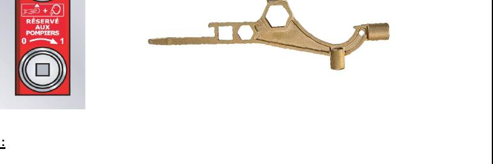
Dispositifs rencontrés dans les habitations collectives de 4e famille depuis 1986, les ERP de type U et J au-delà du R+4 et les ERP PS au-delà du R−7. Seuls les IGH permettent un usage sûr par les sapeurs-pompiers ; ailleurs, les utiliser pour acheminer du matériel en phase secondaire.
📚 RDEB SDIS 34 – v2 – avril 2026 – § 5.1 à 5.4, 5.10
⚠️ Étiquettes de danger (CLP & ADR)
Produits chimiques dangereux (CLP)
Règlement relatif à la classification, à l'étiquetage et à l'emballage des substances et des mélanges : informer l'utilisateur du danger.
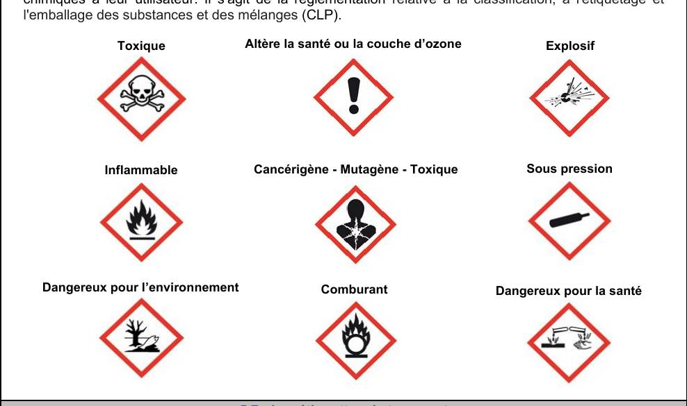
Toxique · altère la santé ou la couche d'ozone · explosif · inflammable · cancérigène-mutagène-toxique · sous pression · dangereux pour l'environnement · comburant · dangereux pour la santé
Étiquettes de transport (ADR)
Accord européen relatif au transport international des marchandises dangereuses par route.
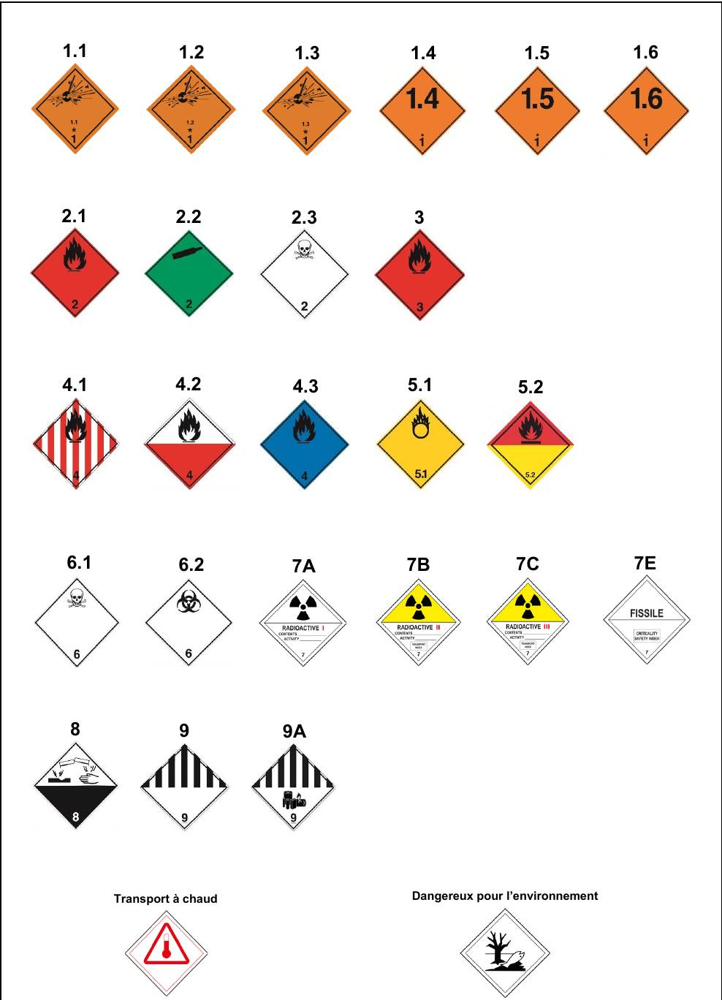
1 – Explosifs
1.1
Risque d'explosion en masse
1.2
Risque de projection, sans explosion en masse
1.3
Risque d'incendie, de léger souffle ou de projection, sans explosion en masse
1.4
Sans risque notable hors de l'emballage en cas d'allumage ou d'amorçage
1.5
Très peu sensibles, avec risque d'explosion en masse
1.6
Objets extrêmement peu sensibles, sans explosion en masse
2 – Gaz
2.1
Inflammables
2.2
Non inflammables, non toxiques
2.3
Toxiques
3 – Liquides inflammables
3
Liquides inflammables
4 – Solides inflammables
4.1
Solides inflammables
4.2
Spontanément inflammables
4.3
Dégagent des gaz inflammables au contact de l'eau
5 – Comburants
5.1
Matières comburantes
5.2
Peroxydes organiques
6 – Toxiques
6.1
Matières toxiques
6.2
Matières infectieuses
7 – Radioactifs
7A
IT 0 – débit de dose à 1 m < 5 µSv/h
7B
IT 1 – > 5 µSv/h et < 0,5 mSv/h
7C
IT 10 – > 0,5 mSv/h et < 2 mSv/h
7E
Matières fissiles
8 – Corrosifs
8
Matières corrosives
9 – Divers
9
Matières et objets dangereux divers
9A
Piles et batteries au lithium
Marques complémentaires : transport à chaud, dangereux pour l'environnement.
Rechercher une matière (n° ONU, code danger) :
📚 RDEB SDIS 34 – v2 – avril 2026 – annexes 5.6 et 5.7
🌲 GDO – Doctrine opérationnelle FDF
Guide de doctrine opérationnelle « Feux de forêts et d'espaces naturels » – DGSCGC, 1re édition, février 2021
📄 Document officiel
Le guide complet (186 pages, avec schémas, cartes et photos) est téléchargeable :
Les fiches reprennent le texte du guide ; schémas et photos non reproduits, chaque fiche renvoie aux pages du PDF.
Autres fiches liées
Techniques et manœuvres (CCF, GIFF, autodéfense, feux tactiques) →
Estimer la vitesse de propagation →
📚 GDO « Feux de forêts et d'espaces naturels » – DGSCGC/DSP/SDDRH/BDFE – 1re édition, février 2021. Reproduction des textes autorisée pour les SIS dans le cadre de la doctrine et de la formation ; illustrations non reproduites (autorisation des auteurs requise).
🌳 Milieux et végétation
1 – Quatre types d'espaces
Espaces forestiers : forêts et formations sub-forestières (maquis, garrigues, landes).
Espaces en déprise : mosaïque de cultures, jachères et friches évoluant vers le sub-forestier.
Interfaces périurbaines ou bâties : zones urbanisées mêlées à au moins deux des formations précédentes.
1.1 – Les strates de végétation
Strate
Rôle dans le feu
Humus
Rôle mineur au passage du front mais points chauds pendant des jours ou des semaines près des lisières ; l'eau seule suffit rarement : action mécanique ou eau additivée
Muscinale (litière)
Très inflammable (aiguilles de pin), origine de nombreux départs ; réservoir d'énergie comparable aux cimes sous une pinède
Herbacée
Très inflammable, siège des départs, accélère la propagation, reçoit les brandons (sautes)
Arbustive
Inflammabilité moyenne, combustibilité parfois forte (garrigues, maquis) ; vecteur vers les cimes
Arborescente
Combustibilité élevée : feux de cimes ; les pinèdes émettent des brandons (décollement des écorces)
Dans les strates basses (muscinale, herbacée, arbustive), fausse impression de sécurité : le feu peut s'y déplacer très vite et provoquer des embrasements généralisés éclair.
1.2 – Les massifs forestiers
Arc méditerranéen (jusqu'à 1 000–1 200 m en versant sud) : très grande diversité, de la garrigue « en peau de léopard » aux futaies de pin d'Alep de plus de 25 m ; vulnérabilité maximale l'été ; forte continuité arbustive-arborescente → feux généralisés ; équipement DFCI hétérogène, souvent établissements hors des engins. Ces formations gagnent les zones agro-viticoles, surtout à l'ouest du Rhône.
Corse : île la plus boisée de Méditerranée (556 000 ha), forêt publique surtout au-dessus de 1 000 m (pin laricio).
Nouvelle-Aquitaine : 2,8 millions d'ha ; Landes de Gascogne, plus grand massif cultivé d'Europe (pin maritime), plus de 1 000 départs de feu par an ; ASA de DFCI obligatoires (ordonnance de 1945).
Montagne : surtout sensibles en fin d'hiver (entre fonte des neiges et montée de sève), épisodes de foehn ; feux de surface dans les landes (genêts, fougères) ; humus épais difficile à éteindre ; peu d'accès (action à pied ou héliportée) ; avions bombardiers d'eau parfois inutilisables (relief, aérologie, gel).
Espaces pastoraux (Pyrénées, sud des Alpes) : siège de la majorité des feux de montagne, période des écobuages.
Outre-mer : sensibles en saison sèche ou sécheresse exceptionnelle (savanes, canne à sucre, landes à éricoïdes, maquis) ; humus épais ; à La Réunion, feux de « vounes » : roches volcaniques jusqu'à 200 °C.
Zone continentale : forêts peu sensibles sauf landes et jeunes pinèdes ; basculement brutal lors des sécheresses exceptionnelles ; peu d'aménagements de lutte.
1.2.2 à 1.2.4 – Agricole, déprise, interfaces
Espaces agricoles : très inflammables pendant les moissons (orge début juillet, blé mi-juillet, colza ensuite) ; phase la plus sensible quand T° > 30 °C et hygrométrie < 30 %. Aussi prairies sèches, arboriculture, lavande, vignes enherbées ; pratiques « bio » laissant plus de matière au sol.
Déprise : mosaïques de céréales, jachères, friches et sub-forestier, petites constructions (« cabanisation »), accès discontinus, obstacles cachés par la végétation ou la fumée ; le renseignement terrain est primordial.
Interfaces : espace dans un rayon de 100 m autour des groupes d'habitations.
Habitat
Densité
Isolé
< 1 habitation/ha
Diffus
1 à 2/ha
Groupé dense / très dense
2 à 3/ha / 3 à 5/ha
Zone urbaine végétalisée
5 à 10/ha
Cabanisation
Sensibilité extrême (planches, tôles, caravanes)
Haies = accélérateurs de feu ; accès encombrés, culs-de-sac, eau souvent insuffisante : zones très consommatrices de moyens.
2.1 – Comportement au feu des végétaux
Sensibilité liée à la teneur en eau, à l'architecture (densité, hauteur, continuités verticale et horizontale) et à la composition floristique.
Caractéristique
Influence
Conséquence opérationnelle
Hauteur, densité, chablis
Flammes plus hautes, feu plus virulent
Manœuvres offensives délicates
Sécheresse
Inflammabilité plus rapide
Manœuvres offensives délicates
Discontinuité horizontale / verticale
Perturbe la propagation
Facilite les manœuvres offensives (attention)
Humus, andains, tourbe
Risque de reprise
Traitement en profondeur : arrosage abondant et séparation mécanique (bulldozer, râteau Rich)
Végétation haute, dense, sèche et continue → feu violent → privilégier le défensif. Végétation basse, éparse, verte et discontinue → privilégier l'offensif. Densité et enchevêtrement piègent les COV : propagations flash même en végétation basse.
Inflammabilité (aptitude à s'enflammer, note de 0 à 5) :
Combustibilité (aptitude à propager, temps de résidence de flamme) : très élevée pour la pinède dense à pin maritime ; élevée pour la pinède dense à pin d'Alep, la garrigue haute et la garrigue basse à chêne kermès ; modérée pour le taillis de chêne vert ou le blé mûr sur pied ; faible à très faible pour la hêtraie, la sapinière, les chaumes et le tournesol mûr. C'est la combustibilité, avec le relief et la météo, qui fixe la vitesse et la puissance du front et conditionne la sécurité des intervenants.
Le relief influence l'axe et la vitesse de propagation : en pente ascendante le feu accélère (préchauffage par rayonnement), en descente il ralentit ; plus une zone est resserrée, plus le feu y passe vite (effet venturi).
Relief
Influence
Conséquence
Zones montantes
Accélération
Manœuvres délicates
Zones descendantes
Ralentissement
Manœuvres plus faciles
Zones accidentées
Vitesse et front irréguliers
Feu difficile à prévoir
Cols
Passage privilégié du feu
Dangereux mais manœuvre efficace possible
Crêtes et talwegs
Perpendiculaires : changent la vitesse ; parallèles : peuvent diviser le feu
Délimitent des secteurs de manœuvre différents
Expositions sud : plus de rayonnement solaire, végétation plus sèche ; nord : l'inverse.
Points névralgiques : cols, divergences de talwegs (ouverture du cône de propagation).
Situations dangereuses à éviter : crêtes, versants au vent, couloirs dans l'axe du vent (venturi), partie haute des cols.
Situations favorables : zones sans accélération liée au relief, tiers supérieur des versants sous le vent.
Le feu passe régulièrement par les mêmes « couloirs de feu » (bases de contours historiques) – mais il faut se préparer à être surpris.
2.3 – Température et humidité
Température (mesurée sous abri, bien plus forte en plein soleil : plus de 60 °C au sol en 2019) : > 35 °C aggravant ; au-delà de 30 °C, pénibilité et déshydratation → raccourcir les engagements. Les températures négatives gênent matériels et avions.
Humidité relative : < 30 % éclosion et propagation très aggravées, sautes ; en foehn jusqu'à 5–10 % ; > 50 % éclosion faible et propagation ralentie. Hygrométrie > 45 % + T° > 35 °C sans vent : risque de coup de chaleur pour les intervenants.
2.3.3 – Le vent et la règle des 3 %
Le vent renouvelle l'oxygène, couche les flammes et transporte gaz imbrûlés et particules. Vitesse de propagation ≈ 3 % de la vitesse du vent moyen en conditions moyennes – à nuancer, notamment avec l'hygrométrie. Rafales ≈ 2 × vent moyen.
Facteur de propagation (% de la vitesse du vent) selon l'humidité – Trabaud :
Humidité relative
8–16 km/h
17–24
25–32
33–40
41–48
41–45 %
1,0
2,0
2,8
3,2
3,4
31–40 %
1,4
2,8
3,9
4,5
4,8
26–30 %
2,0
4,0
5,6
6,4
6,8
16–25 %
2,8
5,6
7,8
9,0
9,5
< 15 %
3,2
6,4
9,0
10,2
10,9
En stress hydrique extrême ou en végétation claire à graminées, 4 à 10 % de la vitesse du vent. Exemples contredisant la règle : Vidauban 2003 (6,7 à 10,8 %), Rognac 2016 (7 %), Générac 2019 (10 %).
Vent
Influence
Conséquence
Vitesse
Vitesse du sinistre
Privilégier les manœuvres latérales et la défense de points sensibles
Irrégularité
Feu difficile à prévoir
Très grande attention à la sécurité
Soleil, sécheresse, chaleur
(Ré)inflammation des zones mal traitées
Surveillance accrue des zones fixées
Nuit
Feu plus facile à traiter
Mobilité et sécurité réduites
Règle des « 30 » – risque FDF majeur quand : pente > 30°, température > 30 °C, hygrométrie < 30 %, vent > 30 km/h.
2.4 – Les paramètres hydriques (méthode canadienne IFM)
Indice
Mesure
Évolution
Usage opérationnel
ICL – combustible léger
Eau de la litière et des combustibles fins
Très rapide (2–3 jours)
Nombre de départs, horaires de surveillance, probabilité de sautes
Stress des grands végétaux, humus profond, reprises très probables
2.5 – Les indices de danger (Météo-France)
NSV2 – sécheresse de la végétation vivante (strate arbustive), 5 stades : très faible, faible, modéré (vulnérable par vent fort et humidité basse), fort (très vulnérable : feux importants en toutes conditions sauf humidité élevée), très fort (conditions des très grands feux réunies). Aux deux derniers stades, en Méditerranée, l'IFM ne fonctionne plus : règles d'expertise « grande sécheresse ».
IEPx – éclosion propagation (strate herbacée, cultures, rafales comprises) : 3/5 jaune des feux peuvent se produire ; 4/5 orange ils peuvent se propager sans traitement rapide ; 5/5 rouge éclosions et propagations rapides.
IFM – niveau
Signification
1 Faible
Éclosion improbable
2 Léger
Propagation lente si départ
3 Modéré
Propagation modérée
4 Sévère
Zone sensible : départ probable si air sec, propagation rapide possible
5 Très sévère
Toute flamme risque de donner un feu rapide
6 Extrême
Feu de très forte intensité, extrêmement rapide (niveau fixé par un prévisionniste)
Ces indices servent à anticiper et dimensionner le dispositif ; ils ne sont pas une carte des risques et doivent être complétés localement (état de la végétation, activités, pression incendiaire, enjeux). Niveau de danger météo + appréciation locale + analyse de l'activité = niveau de risque opérationnel départemental.
Zones sud et sud-ouest (annexe C) : au sud-ouest, NEP / NEP vert en hiver-printemps (ICL × vitesse de propagation VPSO), IFM sans rafales en été, bulletin « feu en cours » horaire sur 12 h et modélisation Prometheus ; en zone sud, 116 zones météo DFCI, sécheresse expertisée et IPSE quand la sécheresse est forte (c'est un indice de danger, pas une vitesse attendue).
Le citoyen est le premier acteur de sa propre sécurité. Les obligations légales de débroussaillement (code forestier, art. L131-1 à L136-1) réduisent le combustible pour : protéger personnes et biens, permettre le confinement, sécuriser l'intervention des pompiers, éviter de mobiliser trop de moyens pour les zones habitées, limiter les départs depuis les habitations. Double effet : risque « induit » (qui part de l'habitation) et « subi » (qui arrive vers elle).
3.2 – Les services
Forestiers sapeurs
Agents des conseils départementaux : travaux forestiers, surveillance et première intervention sur feux naissants en période à risque
ONF
Surveillance, première intervention, conseil du COS et du DOS, recherche des causes
CCFF / réserves communales
Bénévoles sous l'autorité du maire : surveillance, patrouilles, première intervention, guidage des renforts
Forces armées
Protocole Héphaïstos : détachement hélicoptères du DIHN, groupes du génie, modules de surveillance en Corse, DetAir au COZ Sud
DPFM
Délégation à la protection de la forêt méditerranéenne (préfet de zone Sud) : prévention, PPRIF, débroussaillement, brûlage dirigé, base Prométhée, recherche des causes
Police, gendarmerie
Accès à la zone, évacuations et mises à l'abri, recherche des causes, sécurité des biens évacués
Commissions locales d'écobuage
Organisation et avis sur les écobuages (Pyrénées)
DDT(M)
Politique forestière, équipement DFCI, prise en compte du risque dans l'urbanisme
Entente Valabre
Établissement public de 15 départements méditerranéens et de la Corse
Conseils départementaux
Aménagement des massifs, pistes, ZAL, citernes ; service des routes pour fermetures et déviations
Gestionnaires
Autoroutes, voies ferrées, RTE, Enedis
ASA de DFCI, GIP ATGeRi
Sud-Ouest : 212 associations, plus de 2 500 bénévoles ; cartographie et aide à la décision
Tout acteur intégré à un dispositif de surveillance ou de lutte se conforme aux ordres nationaux, zonaux et départementaux feux de forêts.
3.3 – Le mécanisme européen
Mécanisme de protection civile de l'Union (2001), 34 États : offres spontanées, réserve européenne, dispositif rescEU (moyens aériens FDF, médicaux, NRBC). La France met à disposition un module aérien (Beech, 2 Canadair, Dash) et des modules terrestres FDF.
Lisière poussée par le vent, s'élargit ; l'essentiel de la surface brûlée
Flancs
Lisières restant après le passage du front, beaucoup plus lentes. Depuis le point de départ, face à la tête : flanc droit à droite, flanc gauche à gauche
Arrière
Lisière contre le vent, peu active sauf forte pente, venturi, combustible
Doigt
Partie longue et étroite avec sa propre tête
Baie
Partie qui avance plus lentement (obstacle, pente défavorable)
Saute de feu
Foyer secondaire allumé par des brandons en avant du front
Pénétrante / rocade
Accès qui traverse la lisière / qui la longe sans la traverser
Sans vent sur terrain plat, propagation en cercles concentriques ; avec vent ou pente, forme elliptique (« wind driven »), parfois morcelée (« léopardisation »).
1.1 – Combustion et puissance
Énergie en mégawatts : combustibles fins, milieu ouvert (oxygène illimité), 20 à 45 t/ha en arbustif et 60 à 85 t/ha et plus en arboré ; le végétal vert atteint environ 50 % du pouvoir calorifique des hydrocarbures. Phases : stress du végétal (évaporation, COV) → pyrolyse (gaz non inflammables jusqu'à 280 °C) → inflammation des gaz de 280 à 500 °C → combustion des résidus charbonneux.
Puissance du front (Byram) : P = H × w × r (kW/m) = chaleur de combustion × combustible brûlé par m² × vitesse de propagation.
Niveau
Vitesse
Fumée, sautes
Puissance
1 Très faible
< 400 m/h
Blanche, pas de saute
< 350 kW/m
2 Faible
400–800 m/h
Blanche et grise, sautes de 20 m
350–1 700 kW/m
3 Moyen
800–1 200 m/h
Grise, foncée à la base, sautes de 100 m
1 700–3 500 kW/m
4 Élevé
1 200–1 800 m/h
Rousse et noire, sautes systématiques
3 500–7 000 kW/m
5–6 Très élevé / exceptionnel
> 1 800 m/h
Noire, moutonnante, sautes > 500 m
> 7 000 kW/m
Un incendie est maîtrisable au sol jusqu'à environ 2 000 kW/m ; au-delà, appui aérien indispensable ; à 10 000 kW/m le front est très difficilement maîtrisable.
Rayonnement (flux en 1/d², à titre indicatif) : à 100 m presque rien ; à 65–70 m seuil de douleur ; à 50–55 m brûlure de la peau sans EPI.
1.2 – Les types de feux
Feux de sol (litière, humus, tourbe) : lents mais destructeurs ; les feux de tourbe durent des mois, même sous la neige, et dégagent beaucoup de fumée et de monoxyde de carbone.
Feux de surface (litière, herbe, ligneux bas – garrigue, landes) : propagation par rayonnement, 0,5 à 1 km/h. Contraintes : habitations, gaz, hydrocarbures, bâtiments agricoles, lignes HT, voies, badauds.
Feux de cimes : couronne de feu, énergie et vitesse très élevées, le plus souvent issus de feux arbustifs.
Feux agricoles
Risques
Récoltes sur pied (orge, blé ; colza très calorifique ; maïs, tournesol, betterave moins vulnérables, peuvent servir de pare-feu)
Front rapide de 3–4 m, fumées denses, escarbilles, fort rayonnement
Chaumes
Flammes ≤ 1 m, propagation rapide par vent fort, virulence faible, persistance courte ; andains en effet mèche
Épis
Propagation verticale et horizontale, bourrage de paille sous les engins, reprises
Miscanthus (jusqu'à 4 m)
Potentiel calorifique très élevé, impénétrable, perte de contact visuel
Engins agricoles : carburant et huile → prévoir de la mousse. Champs moissonnés servant de parkings : pots d'échappement au contact du chaume.
1.3 – Les modes de propagation
Conduction : ≈ 5 % des transferts, sauf feux de sol et de tourbe.
Rayonnement : le front agit comme un panneau radiant qui dessèche la végétation en avant.
Convection : prépondérante, surtout en phase ascendante ; colonne convective, pyrocumulus, parfois pyrocumulonimbus et orages de feu (feu erratique, sautes, effondrement de colonne avec vents violents au sol).
Feu convectif sous 40 km/h de vent, radiant au-dessus de 50 km/h.
Sautes de feu : brandons portés jusqu'à 300 m d'altitude, de quelques mètres à plusieurs kilomètres ; plus nombreuses par vent fort et air sec ; risque de prise en tenaille entre le front et les foyers secondaires. Les animaux en fuite peuvent aussi propager le feu.
1.4 – La lecture du feu
Panache
Lecture
Vertical, gris ou transparent
Petit feu, peut-être déjà combattu
Incliné, gris virant au noir, grossit à vue d'œil
Feu en croissance
Étiré, bouffées noires, incliné à moins de 45°
Feu virulent, vent au sol de l'ordre de 54 km/h (rafales 72 km/h), incontrôlable au sol dès le départ possible
Volutes noires (« moutons ») et zones rousses avec petites flammes
Combustible abondant, croissance rapide
Fumée
Signification
Grise diffuse
La plupart des départs de feu
Noire épaisse moutonnante
Pleine pyrolyse, propagation par bonds
Noire et rousse avec flammes
Combustion intense qui consomme tout l'oxygène
Blanche
Foyer en régression (extinction)
Cisaillement du panache : il monte puis s'étale comme contre un toit (inversion, couche d'air froid) → risque de confinement thermique, peut dégénérer en bulle thermique ou toit de feu.
L'ouïe : crépitement sec et fort (feu virulent, combustible de choix) ; ronflement puissant (grand feu qui crée son vent) ; déflagration sourde (mélange gazeux enflammé) ; silence anormal (« chambre sourde ») : possible pré-conflagration, par exemple en fond de talweg.
L'odorat : forte odeur d'herbes, de térébenthine ou d'essences volatiles = végétation privée d'eau qui libère ses composés volatils, très inflammables.
Accélération soudaine du feu qui peut prendre au piège les secours. Une poche de gaz de pyrolyse s'accumule : la végétation, déjà en déficit hydrique et chauffée longtemps par un feu lent, rejette de l'eau puis des COV (terpènes) et des HAP. Le nuage s'enflamme, la flamme pilote existant déjà (différence avec un UVCE) : situation comparable à une fuite de gaz en milieu ouvert.
relief : fond de talweg (bulle thermique), talweg en pente opposée (pyrolyse du versant d'en face), plateaux même en végétation basse (tapis de feu).
Signes d'alerte : accélération subite du front (5 à 40 m/s, plus de 1 500 °C), vision trouble, tout devient orange, sensation de compression d'air, sons assourdis, difficultés respiratoires, feuillage en pyrolyse sous le rayonnement.
Sans enjeu majeur (vie humaine, habitations directement menacées), ne pas exposer en première action les personnels au sol et renforcer le port des EPI.
Feu de Palasca (Haute-Corse, septembre 2000), tapis de feu : du départ du phénomène à l'embrasement jusqu'à la crête en environ 41 secondes ; 2 morts et 5 brûlés.
Annexe D – Les types d'EGE
Type
Site et scénario
Effet
Bulle thermique
Vallon riche en combustible (zone de torréfaction confinée) sous un col qui aspire le feu ; le feu monte, sa pointe longe la zone et la pyrolyse ; une masse de gaz à plus de 1 000 °C s'arrondit, tourne et surgit du fond du talweg par un bond. Personnel souvent sur une zone plate sans vue vers le bas
Le personnel à découvert est foudroyé ; sous un engin, risque grave (effet cheminée en pente) ; un détachement déjà en autodéfense subit un minimum d'effet
Tapis de feu
Même site ; le feu descend dans le vallon et le surchauffe ; une nappe de gaz surchauffés couvre tout le vallon
Toute la végétation du vallon s'embrase presque instantanément
Fire devil (tornade de feu)
Montée brutale en hélice le long du relief ; inversion avec couche d'air froid et vent fort (mistral) qui confine les gaz
Embrasement localisé total, explosion de fumées (backdraft en milieu ouvert)
Versant à versant
Vallon encaissé, garrigue ou maquis bas ; le feu descend lentement un versant, le versant opposé est irradié jusqu'à être entièrement en pyrolyse
Le versant opposé s'embrase d'un seul coup : vague de feu mortelle pour les équipes à pied
Mini-tornade (feux de champs)
Plaines céréalières ; tourbillon hélicoïdal par temps chaud
Transport brusque du feu au-delà du front : le personnel à pied peut être pris à revers
Effet Blin
Pente montante et crête arrondie coupée par une tranchée (autoroute, voie ferrée, pare-feu) ; vent fort dans l'axe de la montée
Un rouleau dans la coupure fait « sauter » le feu qui s'allume loin au-delà et accélère
Commandement adapté (anticipation, agilité, action), SSSM intégré au soutien, procédures radio, formation et maintien des acquis, procédures de sécurité en situation dégradée, EPI adaptés, connaissance du feu, toxicité des fumées, permanence de l'eau, soutien des intervenants, humilité : se préparer à être surpris.
Pour les risques par classe (terrain, feu, matériels, vie sur le terrain), voir .
1 – Sécurité collective des équipages
Sur les feux de récoltes et de chaumes, progresser uniquement dans le brûlé.
Ne jamais abandonner une lance alimentée lors du retour à l'engin.
Personne sur la citerne pendant l'attaque ni sur un engin en mouvement (sauf plateforme équipée).
Assurer la permanence de l'eau dans les tuyaux.
L'établissement est une ligne de vie par mauvaise visibilité : TOUJOURS le suivre pour regagner la cabine. La cabine est l'ESPACE DE SURVIE RÉFLEXE.
Arceaux, autoprotection et air respirable vérifiés à chaque prise de service ; tous les personnels doivent savoir les mettre en œuvre. Techniques de repli et d'autoprotection vérifiées à chaque garde. Sur le chantier : engins dans le sens du départ, itinéraire ou zone de repli, vitres et volets fermés, eau minimum conservée pour la protection, guidage dans les passages difficiles. Exceptionnellement, sur ordre, quitter le camion si l'extérieur devient plus favorable.
2 – Sécurité individuelle et EPI
Chaque intervenant : EPI complets et en état, consignes, ne pas s'isoler, observer le feu, un chemin et une zone de repli, procédures de largage, exercices de repli d'urgence, veille radio, eau en quantité suffisante. Surveillance mutuelle : stopper l'effort avant le malaise (essoufflement, douleur thoracique, désorientation).
Situation
Tenue préconisée
Herbacés, broussailles, récoltes, haies ; forêt en grande longueur, noyage, surveillance
TSI + vêtement NF EN 15614 (veste et pantalon, ou veste seule)
Manœuvres défensives (autodéfense, DPS, ligne d'appui) et offensives (front, flanc, percée)
Tenue de feu NF EN 469 sans la veste de TSI ; allègement sur ordre possible
Toujours
Casque, cagoule et gants adaptés au flux thermique obligatoires ; haute visibilité classe 2 près d'une voie de circulation
Le chef d'agrès, le chef de groupe, le chef de secteur et le COS décident des EPI selon la végétation, le flux thermique, la météo, la ZI et le type d'action. Masques de repli uniquement pour regagner un espace sécurisé ; masques FFP pendant le noyage.
3 à 7 – Nuit, déplacements, vie sur le terrain
Nuit : vigilance accrue hors réseau routier, éclairage pour tous.
Déplacements : fatigue des longs transits ; période de reconditionnement avant engagement et avant le retour (tenue complète au pied de l'engin, test bref de l'autoprotection, filtres à air, végétaux coincés sous la cabine).
Hydratation : boire avant d'avoir soif, 3,5 à 5 L d'eau potable minimum par 24 h. Ne jamais boire l'eau des citernes ni des PEI.
Alimentation : au moins un repas chaud au calme par 24 h lors des longues opérations.
Relèves : effort intense limité dans le temps ; attention aux interventions successives (chaumes, récoltes) : en informer le COS.
8 à 11 – Abords d'infrastructures
Lignes électriques (Enedis, RTE) : l'amorçage peut se produire sans contact (fumées, poussières, eau vaporisée) ; un jet droit peut être conducteur ; ne jamais toucher un câble, même au sol. Un largage d'ABE peut provoquer un amorçage (aggravé par le sel ou le retardant). Le COS peut demander via le CODIS :
Mesure
Délai
Ce qu'elle permet
Mise hors tension
Plusieurs dizaines de minutes
Limite l'amorçage mais n'autorise pas à approcher à moins de 5 m des ouvrages RTE, 3 m des ouvrages Enedis ; les courants induits restent
Consignation
Plusieurs heures
Ligne hors tension, séparée et mise à la terre ; protège personnes et ouvrages. Autorisation écrite remise au COS
Voies ferrées : via le CODIS, demander au COGC la marche prudente, l'arrêt des trains ou la coupure d'urgence du courant de traction ; aucune lance sous pression à moins de 3 m de la caténaire sans confirmation de la coupure.
Routes : visibilité réduite par les fumées → balisage ou fermeture par les services compétents. RCCI : accès à la zone après accord du COS.
Approche globale et anticipation, au service de quatre objectifs :
Empêcher les feux : traitement des causes, sensibilisation, prévision du danger, surveillance dissuasive.
Maîtriser l'éclosion au stade initial : aménagement du terrain, attaque massive des feux naissants, prioritaire sur toute autre intervention, avec une réponse surdimensionnée quand le danger est maximal.
Limiter les développements catastrophiques : sécurité des intervenants par les choix tactiques ; pour la population, le confinement reste la règle, l'évacuation l'exception ; stratégie mobile, agressive, concentration des efforts terrestres et aériens.
Réhabiliter les espaces incendiés.
2 – Préparer la réponse
Évaluation quotidienne du danger : météo (vent, chaleur, propagation, sécheresse), vulnérabilité des massifs ou des récoltes, activité du SIS, environnement sociologique (concerts, feux d'artifice, tourisme, pression incendiaire). Les EMIZ coordonnent les mesures zonales et les moyens rares.
Unités organiques : UIFF et GIFF (→ ). Le chef de groupe FDF peut commander jusqu'à un groupe en plus du sien.
Prépositionnement : engins toujours par deux au minimum (UIFF) ; un engagement isolé exceptionnel ne se poursuit qu'avec la convergence rapide d'autres engins confirmée.
Le PDPFCI (10 ans maximum) est la pièce maîtresse de la DFCI.
3 – Conduite des opérations
Détection : téléphones, vigies, caméras, guet aérien, aéronefs, sémaphores, moyens terrestres, déclarations d'écobuage, réseaux sociaux. Prise d'appel : discriminer les départs distincts ; recueillir la localisation, le type de zone (urbaine, périurbaine, forestière) et les personnes et biens menacés. Face à plusieurs sinistres, le COZ arbitre l'attribution des renforts extra-départementaux.
4 – La marche générale des opérations
Actions non chronologiques, parfois simultanées ou permanentes : analyse de la ZI en transit, reconnaissance, mise en sécurité, attaque, traitement des lisières, surveillance, recherche des causes. La protection des personnes et des biens reste la priorité.
Analyse de la ZI dès l'alerte : connaissance du secteur, contours des feux passés, départ sur carte, météo → axe et vitesse théoriques.
Facteur
Actions à anticiper
Relief et vent
Zones au vent et sous le vent, zones d'appui à la lutte
Végétation
Points d'engagement, zones de sécurité
Accès
Point de transit (PRM ou CRM), rocades et pénétrantes
Ressources en eau
Chaîne hydraulique pérenne, permanence de l'eau
Points sensibles
Populations sinistrées ou sinistrables, sans disperser les moyens au détriment du feu
Risques particuliers
Lignes électriques, voies routières et ferrées, postes gaz…
Reconnaissance rapide et continue : témoins, CCFF, cartes, reconnaissance à pied, aéronefs (dont infrarouge). Drones : signalés au COS et à l'AERO, posés avant l'arrivée des aéronefs d'État, liaison radio permanente, sinon posés.
Mises en sécurité : confinement = règle pour les bâtiments en dur ; l'évacuation (campings, loisirs) relève du DOS sur proposition du COS, préparée (quand, comment, par où, vers où), coordonnée au plus tôt avec le COPG. En péril imminent, le COS prend les mesures et rend compte.
4.4 – La phase d'attaque
Efficace, rapide, coordonnée et sûre ; effort sur l'avant du feu, les lisières sous le vent, les lisières montantes ; accès maintenus libres. Sur un feu rapide, bien choisir le moment de la passation de commandement.
Stade
Définition
Fixer
Le feu ne progresse plus hors de son contour (ZI ou action des secours) : propagation arrêtée ou nettement réduite
Maîtriser
Le feu baisse d'intensité ; extinction des foyers secondaires, traitement des lisières, allègement de la tête pour renforcer les flancs
Éteindre
Éviter toute reprise : noyage minutieux (grosses gouttes, mouillant), outils de pionnier, étalement des ballots, souches et fumerolles ; si tout ne peut être noyé, traiter en priorité les lisières
Manœuvres offensives (« aller chercher le feu ») :
Attaque de flanc (la plus utilisée) : engager sur l'avant du flanc le plus défavorable et le remonter jusqu'à la tête.
Percée de flanc : trouée dans un flanc puis progression dans le brûlé pour casser la tête par l'intérieur, vent dans le dos ; si le front est violent ou l'accès difficile.
Attaque de front : casser la tête par l'extérieur ; seulement vent nul à modéré, front peu violent et moyens suffisants.
Manœuvres défensives (« attendre le feu ») : défense de points sensibles (on ne peut pas mettre un engin derrière chaque maison : le débroussaillement reste la meilleure protection) et lignes d'appui statiques ou dynamiques, avec des engins côté opposé pour les sautes, jamais seuls (par deux minimum).
La pérennité de l'alimentation en eau est capitale : prévoir la rotation des engins pour éviter toute rupture.
Tactiques spécifiques : feux tactiques (→ ), forestage, équipes de pionniers, DIS, DIH, retardant terrestre, équipes d'évaluation pluridisciplinaires en montagne.
4.5 à 6 – Après l'attaque
Traces et indices : éviter noyage, piétinement et passages sur la zone présumée du départ ; la baliser en cercle à la rubalise, hors zone carbonisée si possible.
Surveillance : piquet de surveillance, parfois plusieurs jours ; établissements maintenus si la météo est défavorable.
Médias : communication décidée par le DOS ; le volet judiciaire relève exclusivement du procureur.
Retour à la normale : débriefing, reconditionnement des engins et des personnels (hydratation, alimentation, hygiène), relève si repos nécessaire.
Bases de données : chaque feu de végétation fait l'objet d'une fiche (Prométhée, GIP ATGeRi ou BDIFF).
RCCI : équipe forestier-pompier-gendarme ou policier (parfois équipe cynotechnique) pour déterminer le lieu précis et la cause.
Le COS départemental (DDSIS ou DDASIS) commande un feu isolé de grande ampleur ou arbitre la répartition des moyens entre plusieurs feux, tout en préservant un dispositif pour les opérations courantes, les nouveaux départs et un autre sinistre majeur ; son outil est le CODIS.
Sur le chantier, un seul COS, connu de tous, indicatif « COS + commune du départ ». Il s'entoure de chefs de secteur (géographiques ou fonctionnels) ; un responsable forestier rejoint le PC. Moyens militaires hors Héphaïstos : un officier est placé auprès du COS.
Prise de commandement : signaler son arrivée au CODIS, contact physique avec le COS en place (passation, reconnaissance commune), prise formelle du commandement, analyse, situations envisageables, enjeux, objectifs et idées de manœuvre. Le COS descendant prend généralement le secteur le plus exposé. Le COS est à la fois leader et stratège ; il présente enjeux et objectifs au DOS pour validation.
1.3 – Les transmissions
Tactique 1
COS, PC et chefs de secteur
Tactique 2
Chefs de secteur et chefs de sous-secteur
Tactique 3
Chefs de secteur (ou sous-secteur) et chefs d'unités constituées
Tactique 4
Au sein des unités constituées
Point de transit ↔ PC
Tactique 3/4
Liaisons arrière par le réseau de commandement et le réseau FDF ; réseaux AIR/SOL et AIR/AIR ; l'OCT évolue avec la montée en puissance.
2 – Les moyens aériens
Dès la demande de moyens aériens nationaux, le COS désigne un cadre AERO (« AERO + nom du feu ») qui veille l'AIR/SOL jusqu'au départ du dernier aéronef, déchargé de toute autre tâche si possible.
Départementaux : indicatifs HORUS (observation, coordination) et MORANE (bombardiers d'eau) ; action combinée avec les moyens nationaux seulement avec pilotes formés, radio compatible et accord du chef de noria ou du coordonnateur.
Investigation : « BENGALE INVESTIGATION » (OSII), évalue le feu et l'opportunité des moyens nationaux.
Coordination : chef de noria par type d'appareil ou coordonnateur « ICARE + nom du feu » ; priorité au largage des avions.
Appareil
Indicatif
Emport
Remplissage
Zone traitée
Beechcraft 200
Bengale
9 passagers
—
Investigation, coordination
Canadair CL 415
Pélican + n°
6 100 L
12 s d'écopage, 3 min au sol
100 m × 30 m
Dash 8 Q400
Milan + n°
10 000 L
6 min au sol
250 m × 50 m
Missions des ABE : guet aérien armé retardant (GAAr), prioritaire sauf enjeu directement menacé ; attaque directe ; attaque indirecte (à moins de 30 m du foyer) ; pose de ligne de retardant.
Aucun largage sans autorisation (COS, AERO ou coordonnateur par délégation) ; largages interdits du coucher au lever du soleil ; le COS ou l'AERO s'assure que les personnels au sol sont en sécurité et visibles. Le commandant de bord peut refuser un largage dangereux ou différer en cas de doute.
Premier contact avec les ABE : idée de manœuvre, zones d'application et effet souhaité, moyens terrestres engagés, obstacles, aérologie, végétation, vitesse de propagation, feu tactique éventuel.
Pélicandrome : 1 responsable + 2 servants minimum, liaison radio AIR/AIR obligatoire (sinon pas de remplissage), zones de roulage matérialisées. Hélicoptères : commandement, reconnaissance, marquage des objectifs (prioritaire pour une ligne de retardant), guidage, transport, mises en sécurité ; le COS prévoit une zone de poser près du PC.
3 – Les renforts terrestres
Colonne FDF : chef de colonne + 3 GIFF (+ groupes commandement et soutien) ; engins normalisés ; autonomie logistique 48 h trajet compris (72 h souhaitables) ; extra-zonaux : 7 jours sans relève.
Transit : fiche de composition avec les RFGI des engins ; GRP 218 veillé ; contact avec le COZ.
Accueil : point de transit et guidage, cartes, vérification des équipements et des radios (procédure de détresse), rappel des procédures de sécurité, repos si la fatigue du trajet l'impose.
Engagement : toujours avec les moyens locaux ; colonnes engagées constituées ; toute période de 16 h d'activité est suivie de 8 h de repos par 24 h ; ne pas dissocier un GIFF ; diffuser les indices de danger du jour jusqu'aux chefs de groupe.
Désengagement décidé par l'EMIZ ; reconditionnement si nécessaire avant le retour.
4 – Les mégafeux
En France, un feu de plus de 10 000 ha imposant la défense de nombreux points sensibles pourrait être qualifié de mégafeu. Marqueurs : saison estivale et touristes, végétalisation de l'habitat, sécheresse nationale, cinétique exponentielle, combustibilité accrue, gouvernance morcelée, écart entre les délais des moyens et la puissance des feux, rupture capacitaire nationale voire européenne.
Conséquences : passer de la lutte contre le feu à la gestion de ses effets dominos (« naufragés du feu », santé, hébergement, déplacements de population, infrastructures vitales).
Commandement : le COS se consacre à la stratégie avec le DO et confie la conduite tactique à un chef de l'opération de même niveau ; organisation en cellules (analyse, économique).
Représentation du contour en 3 couleurs (lisière maîtrisée / active mais attaquée / propagation libre) + pourcentage de maîtrise (ex. « 30 % du feu est fixé »), utile aussi pour les points presse.
Dimension internationale : mécanisme européen, aéronefs lourds et super-lourds.
Groupe d'intervention feux de forêts (1 VLHR + 4 CCF)
GPIHF
Groupe protection interface habitat-forêt
GTL(H)
Groupe de traitement des lisières (héliporté)
ICL / IH / IS
Indice de combustible léger / d'humus / de sécheresse
IFM / NEP
Indice forêt météo / niveau d'éclosion et de propagation
LDT / LDV
Lance du dévidoir tournant / lance à débit variable
MGO
Marche générale des opérations
MIR / MIL
Module d'intervention rapide / lourd
OLD
Obligations légales de débroussaillement
RCCI
Recherche des causes et circonstances d'incendie
RCT / RLT
Retardant court terme (moussant) / long terme
UFEN
Unité feu d'espace naturel
UIFF / ULIFF
Unité (lourde) d'intervention feux de forêts
UFR
Unité de fabrication de retardant
VLHR
Véhicule de liaison hors routes
ZAL
Zone d'appui à la lutte
Zone d'intervention
Chevelu : représentation des lignes de crêtes (rouge) et talwegs (bleu) – outil de l'officier anticipation.
Itinéraire de repli : trajet de retraite vers une position sûre, désigné par le chef avant l'action.
Point d'attaque : emplacement de la lance. Point de ralliement : regroupement en cas de besoin. Point de transit : passage obligé vers la ZI.
Point sensible : lieu nécessitant protection ou mise en sécurité. Secteur : partie géographique ou fonctionnelle sous la responsabilité d'un chef.
Zone d'appui (ZAL en Corse) : zone d'où une unité agit en sécurité avec la permanence de l'eau.
Le sinistre
Axe de propagation : direction générale ; il sépare les parties droite et gauche.
Lisière au vent : flammes poussées vers le brûlé. Lisière sous le vent : flammes poussées vers le non-brûlé. Pointe de feu : partie saillante, souvent vers la tête.
Reprise : nouvelle inflammation d'une lisière traitée. Être débordé : le feu passe par les côtés du dispositif. Être sauté : une saute passe par-dessus.
État du feu
Définition
En propagation libre / en cours
Propagation peu ou pas gênée par les moyens
Fixé
Ne progresse plus hors de son contour
Maîtrisé
Ne progresse plus, baisse d'intensité, parties actives possibles
Sous surveillance
Maîtrisé, plus de partie active visible, dispositif maintenu
Éteint
Plus aucune partie active, aucun dispositif ; définitif (une reprise = un nouveau feu)
Raisonnement tactique
Principes : concentration des efforts, liberté d'action, économie des forces.
Effet majeur : résultat principal à obtenir sur le sinistre en un lieu, à un moment et pendant un temps donnés.
Idée de manœuvre : comment, quand et par où le chef veut agir, sans détailler la répartition des moyens.
Mission : un verbe + le lieu de concrétisation. Point décisif : objectif secondaire qui facilite l'objectif principal.
Confrontation : chaque idée de manœuvre face à chaque situation envisageable.
Verbes et manœuvres
Alimenter
Assurer la permanence de l'eau
Canaliser
Restreindre le feu dans une zone étroite (feu tactique, moyens terrestres et aériens, retardant)
Couvrir
S'opposer à une action du feu menaçant l'action principale
Défendre
Interdire au feu de franchir une ligne ou d'embraser une zone
Exploiter
Poursuivre l'extinction après rupture du front
Freiner
Ralentir la progression par des manœuvres successives
Jalonner
Renseigner en permanence sur la progression en tenant les flancs sans se mettre en danger
Noyer
Mouiller abondamment une lisière ou le brûlé contre les reprises
Recueillir
Accueillir un élément qui se replie, le laisser franchir le dispositif puis le couvrir
Surveiller / surveillance active
Déceler tout changement / réagir sur toute reprise
Tenir
Occuper ou défendre un point ou un espace
Traiter la lisière
Supprimer ce qui permettrait au feu de repartir
Attaque de type commando
Aller chercher le feu loin des pénétrantes, en zone difficile d'accès
Sonnette
Petit élément qui observe le feu et les unités pour leur sécurité ou leur guidage
Les fiches de l'application reprennent le texte du guide. Les schémas et photos ne sont pas reproduits : chaque fiche renvoie à la page du PDF correspondante.
📚 GTO « Lutte contre les feux de forêts et d'espaces naturels » – DGSCGC/DSP/SDDRH/BDFE – 1re édition, février 2021. Reproduction des textes autorisée pour les SIS dans le cadre de la doctrine et de la formation ; illustrations non reproduites (autorisation des auteurs requise).
🚒 Matériels et moyens de lutte
1.1 – Les camions-citernes feux de forêts (CCF)
Type
Masse totale en charge (MTC)
CCFL – léger
3 t < MTC ≤ 7,5 t
CCFM – moyen
7,5 t < MTC ≤ 14 t (catégorie 3 tout-terrain)
CCFS – super
MTC > 14 t
Le classement ne reflète pas les capacités opérationnelles de l'engin. Dans certains massifs (Sud-Ouest), l'attaque se fait depuis la cabine de CCF dits « pénétrants » : action mobile à l'intérieur du massif.
Armement (2, 3 ou 4 SP selon l'engin et le SIS) : 1 chef d'agrès (FDF2), 1 conducteur (FDF1-COD2), 2 équipiers (FDF1).
1.2 à 1.5 – Autres engins
Camion-citerne rural (CCR) : feux de structure et certains feux d'espace naturel (récoltes sur pied), catégorie 2 = terrains peu accidentés, pas d'autoprotection ni d'air respirable en cabine.
Moyens d'appui : alimentation continue dans les secteurs pauvres en eau (motopompes flottantes, immergées, remorquables) ; génie civil (bulldozer) pour pénétrantes, gués, sécurisation des lisières.
VLHR équipé (montagne) : 2 à 4 SP en manœuvres pédestres, considéré comme un engin de lutte à part entière.
Engin-pompe urbain : si le premier engin (FPT…) ne peut aller au contact, le réserver à la défense de point sensible, à la protection de matériels ou à la réalimentation des CCF.
2 – Les unités organiques
Unité
Composition
Commandement
UIFF – unité d'intervention FDF
2 CCF de classe M ou S (souvent pénétrants, armés à 2 ou 3). ULIFF si renforcée d'un CCFS
Chef d'agrès FDF2
UFEN – unité feu d'espace naturel (montagne)
1 VLHR équipé (2 à 4 SP, manœuvres pédestres) + 1 CCFM (2 à 4 SP)
Chef d'unité
GIFF – groupe d'intervention FDF
1 VLHR + 4 CCF de classe M
Chef de groupe FDF3
GPIHF – protection interface habitat-forêt
Selon le département
—
Colonne
3 GIFF minimum + commandement et soutien
Chef de colonne FDF4
UIFF : attaque massive et dynamique au contact, projection d'eau efficace, polyvalence (depuis le CCF ou par établissement), sécurité des personnels.
Pour la sécurité et l'efficacité, le COS cherche dès que possible à regrouper les engins isolés avec un chef de groupe ou dans un GIFF existant.
Groupes de protection interface habitat-forêt : présence SP dans les quartiers d'habitat en dur menacés (reconnaissance, information, évacuation ou confinement, préparation des lieux : fermeture des ouvrants, éloignement des combustibles, véhicules en zone sûre, repérage des points d'eau et zones de repli), protection des habitations, extinction des foyers résiduels, guidage des renforts. Jamais de manœuvre offensive FDF. Efficaces seulement si : débroussaillement correct, habitat en dur entretenu, accès praticables, points d'eau utilisables par motopompes.
Colonnes de renfort : FDF1 et FDF2 (équipiers, chefs d'agrès), FDF3 (chef de groupe), FDF4 (chef de colonne), COD2 (conducteurs CCF) obligatoires. Complétées au besoin par PC de colonne, soutien sanitaire, logistique, « pionniers ».
3 – Moyens opérationnels spécialisés
Départementaux
Équipes feux tactiques : feu secondaire allumé face à l'incendie (→ ). Art. L131-3 du code forestier : le COS peut y recourir même sans autorisation du propriétaire.
Forestage : engins lourds (bulldozers, broyeurs) ou portables (tronçonneuses, débroussailleuses) pour créer des accès ou séparer le combustible, traitement de lisière active.
Retardant terrestre : ligne d'appui en aval du front ; retardants long terme (RLT) et court terme moussants (RCT).
DIH – détachement d'intervention héliporté : unité autonome et indissociable ; mission donnée par le COS, faisabilité à l'initiative du chef du DIH après avis de l'équipage. Feux naissants en terrain difficile, feux éloignés ou en site difficile (îles, falaises), alimentation de CCF par dévidoir aérien DN 70, récupération de personnes menacées. Établissements uniquement de jour aéronautique.
DIS – détachement d'intervention spécialisé : surveillance, fumerolles et points chauds, extinction finale de lisière, accès, zones d'appui, points d'alimentation, zones de poser.
Nationaux
DIHN : feux inaccessibles, établissements jusqu'à 2 km avec permanence de l'eau ; évacuation d'urgence exceptionnelle. Le chef du détachement hélicoptère (armée de Terre, protocole Héphaïstos) décide de tout ce qui relève de la sécurité aéronautique.
DIR – détachement retardant (chef FDF4) : préventif (inerter une zone d'appui) ou curatif. Capacité : 1 km × 6 m en 1 heure, 80 000 L de solution = 2,7 km avant recomplètement ; de jour comme de nuit, quelle que soit la météo.
Groupe appui (2 tracto-niveleurs en convoi exceptionnel, 1 CCFM de protection) : pare-feu, ZAL, aires de retournement, pénétrantes, séparation de combustible. 300 m d'ouverture en 1 h, 1 km de piste en 1 journée.
DIS national : mêmes missions que le DIS départemental.
4 – Les matériels
Matériel
Caractéristiques
Lance 500
Débit variable sur DN 45, 500 L/min max
Lance 150
Débit variable sur DN 25, 150 L/min max
Lance 20/7
Fût tronconique sur DN 25, 150 L/min max, robinet-ajutage diffuseur
Queue de paon DN 45
500 L/min – écran d'environ 7 m de haut × 25 m de large
Queue de paon DN 70
1 000 L/min – écran d'environ 10 m × 30 m
Vanne d'arrêt FDF
Garde l'établissement en eau pour débrancher/raccorder une lance, prolonger, transformer
Division mixte FDF à clapet
Maintient en eau un établissement de grande longueur en pente positive en cas de rupture ; gain au refoulement d'environ 1 min pour 100 m ; 1 ou 2 lances 150 de protection
Hydro-éjecteur
Ravitaillement sur point d'eau naturel ; 300 L minimum dans la citerne
Allumage des feux tactiques ; clapet anti-retour de flamme
Réglette FDF
Tracé de l'axe de propagation sur carte, échelles 1/25 000 et 1/100 000
Forestage : outils coupants (serpe, croissant, hachette), non coupants (pelle, pioche, fourche, râteau Rich), mécaniques (tronçonneuse, élagueuse). Périmètre de sécurité et EPI pour les outils mécaniques.
Paquetage « de feu » (engagement possible > 24 h) : duvet, linge de rechange, toilette, papier, lampe et piles, gourde, alimentation énergétique (réchaud à gaz interdit).
EPI, règles de sécurité, placement par rapport aux fronts
Terrain et environnement
Terrain accidenté, sol mouillé
Chute
Progresser lentement, regarder où l'on marche, éclairage la nuit
Lignes haute tension
Arc électrique (chaleur, fumée)
Ne pas rester sous les lignes THT, prévenir le chef d'agrès
Camps militaires, zones non dépolluées
Explosion de munitions
Rester sur l'itinéraire, consignes du responsable du site
Déchetteries, stockages sauvages
Fumées toxiques, explosions, chute dans un vide créé par la combustion
Personnel minimum, hors des fumées, éloigné, progression très prudente
Matériels
Rotor d'hélicoptère
Projections, chute due au souffle
Casque lunettes baissées, se baisser, jamais sous la machine
Largages d'aéronefs
Choc, chute (retardant visqueux)
Évacuer l'axe de largage : 40 m de part et d'autre
Déplacement des véhicules
Retournement, choc, chute au débarquement
Code de la route, contrôle pneus et flexibles, équipage débarqué aux passages difficiles, casque en hors-piste, éviter la cuve mi-pleine
Claies, outils de forestage, treuil
Fatigue, plaies, rupture de câble
Règles d'utilisation de chaque matériel
Vie sur le terrain
Eau de la citerne
Infection, intoxication
Ne pas la boire, ni l'utiliser sur des plaies
Chaleur, effort
Déshydratation, carence, fatigue
Boire avant d'avoir soif, repas équilibrés, sucres rapides, récupération
Transpiration, fumée, tenue inadaptée
Irritations, ampoules
Toilette même succincte, sous-vêtements coton, rangers bien lacées
Tous les intervenants : EPI définis par le chef de détachement, vitres et portières fermées, rendre compte de toute difficulté.
1.1 à 1.5 – Rôle de chacun
Équipier : garde le contact avec son binôme et le chef d'agrès.
Conducteur : contrôle les aménagements de sécurité, le niveau d'eau, la fermeture des vitres, portières et volets de ventilation ; se fait guider dans les passages à risque ; se range sans gêner la piste, dans le sens du départ, moteur tournant ; veille la radio et la permanence de l'eau ; protège le CCF (LDT ou autoprotection).
Chef d'agrès : rappelle que la cabine autoprotégée est l'abri ; indique le lieu de repli avant toute action ; fait contrôler les équipements de sécurité ; liaison radio avec l'échelon supérieur ; guide le conducteur ; sollicite les relèves ; déclenche autoprotection et air respirable. Isolé : prévoit itinéraire ou zone de repli, signale les obstacles aux aéronefs (antennes, lignes HT), donne l'autorisation de largage après avoir fait mettre ses personnels à l'abri. En groupe : attend l'ordre du chef de groupe pour établir.
Chef de groupe FDF : reconnaissance avant engagement, itinéraire et zone de repli, autodéfense du groupe, liaisons avant et arrière, regroupement rapide des CCF isolés, permanence de l'eau, présentation obligatoire au point de transit, désigne à chaque chef d'agrès points d'eau et zones de sécurité.
Chef de colonne : inventaire des moyens, points d'eau et zones de sécurité pour chaque groupe, un ou plusieurs points de transit au plus tôt ; en COS avec moyens aériens : liaison (ou cadre AERO), obstacles, mise en sécurité, autorisation de largage. Chef de site : mêmes responsabilités de sécurité à son niveau.
2 – Protection des personnels à pied
Phénomènes rapides, voire brutaux : sautes de feu même à plusieurs centaines de mètres, accélération brutale, changement d'axe de propagation. Ils peuvent détruire l'établissement, couper le retour à l'engin, encercler le personnel. L'embrasement généralisé éclair est le phénomène le plus extrême (→ ).
Le chef d'agrès informe de la zone pyro-résistante proche (le brûlé en priorité ; cabanon, maison, piscine, point d'eau) et de l'itinéraire de repli jusqu'à l'engin.
Compléments : sentier débroussaillé (« draille ») vers l'engin, jalonnement de l'établissement avec des lances 20/7 et tuyaux de 20 m.
Contact radio constant ; en difficulté, donner : la situation, la position la plus précise, le moyen de protection envisagé.
La cabine du véhicule, avec ses équipements de protection, reste l'unique espace de survie face à un événement brutal.
2.2 – Le repli d'urgence (déroulé)
Ce n'est pas une manœuvre au sens strict : il vise seulement à ramener l'équipage dans la cabine du CCF.
Le chef d'agrès donne l'ordre de repli.
Les personnels s'accroupissent ; la lance reste ouverte en jet diffusé de protection.
Ils coiffent le masque de fuite (autonomie 6 min, uniquement pour le repli, jamais pour sauvetage ou reconnaissance) ; si le phénomène est fulgurant, pendant le retour quand l'air devient irrespirable.
Le chef d'agrès organise le repli : le tuyau sert de ligne guide, la lance reste posée au sol, ouverte en diffusé. Le chef d'agrès tient le tuyau, l'équipier tient le chef d'agrès et le second équipier, tous deux tiennent le tuyau.
Dès le début, le conducteur enclenche l'autoprotection, reste à l'arrière du camion, coiffe son masque de fuite si nécessaire, fait le point avec le chef d'agrès sur la présence de tous.
Il réceptionne ses coéquipiers et les fait entrer par la face non exposée au flux thermique ; ils longent le CCF grâce au balisage extérieur.
En cabine : surpression et air respirable ouverts, demi-masques coiffés ; le conducteur actionne l'avertisseur sonore.
Si le repli à la cabine est impossible, rejoindre une zone de repli désignée à l'avance (vignes, pierrier, zone brûlée…). S'entraîner en conditions dégradées (occultation des lunettes pour simuler la fumée).
3 – L'autoprotection des CCF
Protection thermique (films sur vitrages, câblages protégés, aspersion de la cabine) et air respirable : 10 min minimum pour 4 personnes à 30 L/min.
Engin
MTC
Capacité utile (CU) min.
Capacité d'autoprotection (CA) min.
CCFL
≤ 7,5 t
600 L
300 L
CCFM
7,5 t < MTC ≤ 16 t
1 500 L
300 L
CCFS
> 16 t
5 000 L
300 L
Menacé directement, le chef d'agrès : dégage si possible vers une zone sûre reconnue ; assure l'intégrité de l'habitacle ; fait fermer les vannes d'aspiration et de refoulement ; regroupe les personnels dans le CCF ; met en œuvre autoprotection et air respirable ; alerte l'échelon supérieur ; demande renforts et largages de sécurité ; prévient la panique ; déclenche la détresse ANTARES (bouton d'urgence, géolocalisation) ; active avertisseurs sonores et lumineux.
4 – L'autodéfense des unités organiques
Positionnement des véhicules + autoprotection + éventuellement moyens hydrauliques. Active (lances, canon) ou passive (autoprotection seule). Mise en place au plus vite, si possible en une seule manœuvre. Cabines protégées du flux ; un CCFS sert d'écran en priorité.
Phase préalable, le chef de groupe : anticipe, fait évacuer la zone dangereuse, garde le contact radio, alerte l'échelon supérieur, choisit la zone la plus sûre, resserre le dispositif (VLHR entre les CCF sans bloquer les cabines), rassemble les équipages en cabine, demande renforts et largages. Puis il fait préparer les moyens hydrauliques selon l'eau restante (canon ou queue de paon devant les véhicules), commande l'autoprotection au moment opportun, fait le bilan et rend compte.
UIFF à l'attaque : si un CCF est en panne ou enlisé, il prévient ; le 2e CCF le dépasse côté végétation non brûlée pour s'interposer entre les flammes et lui, et reste en protection jusqu'aux renforts. À plus de 2 CCF : le 3e passe dans le brûlé, le 4e suit le 2e pour entourer le 1er.
UFEN : la VLTT n'a pas d'autoprotection ; une queue de paon la protège.
GIFF : si l'action devient inefficace, privilégier le déplacement en marche avant (50 à 300 m, engins dans le sens du départ) pour laisser passer le front. Si la fuite est impossible (visibilité, engin immobilisé, piste bloquée, arbre tombé, front trop large) :
En carré
En colonne
Active (eau et temps disponibles)
Emplacement assez grand et pyro-résistant ? Temps suffisant pour établir ? Citernes encore pleines ? Lances mises en œuvre par les chefs d'agrès, position signalée pour largages
Fuite impossible ? CCF pare-chocs à moins d'1 m, lances par les chefs d'agrès, position signalée
Passive (plus d'eau ou de temps)
Emplacement suffisant ? Délai trop court pour fuir ? Aucun personnel exposé, personnels de la VLTT dans les CCF
« Serrer » les véhicules pare-chocs à moins d'1 m, position signalée
Une queue de paon DN 45 offre environ 6 minutes d'autonomie avec une citerne à moitié pleine. Ces situations très dégradées exigent expérience, sang-froid et répétition des gestes à l'entraînement.
4.5 – Le largage de sécurité
Largage effectué délibérément sur un véhicule ou un groupe en difficulté pour faire tomber flammes et température et permettre le dégagement, à hauteur suffisante (écrasement de pavillon, chute d'arbres). Accord du COS ou de l'AERO ; en extrême urgence, par le bénéficiaire. Guidage de l'aéronef par l'appelant (code horaire, azimut-distance, guidage visuel), marquage par hélicoptère si possible.
Ce n'est pas un « appui aérien » : le largage de sécurité n'est demandé qu'en situation d'autodéfense. Tout COS, du chef d'agrès au chef de site, peut annuler un largage ou demander un largage de sécurité.
Le chef d'agrès et le conducteur veillent la radio.
Toutes les manœuvres s'exécutent du point d'eau vers le point d'attaque, en maintenant la permanence de l'eau.
L'équipier 2 établit ses tuyaux avant ceux de l'équipier 1, pour que ce dernier soit toujours au plus près du point d'attaque.
Plus rapide avec claies de portage et dévidoir auxiliaire de tuyaux Ø 45.
Cinq établissements du CCFM : lance du dévidoir tournant ; lance 500 ou prise d'eau ; prolongement d'une lance 500 ; transformation d'une lance 500 en 2 lances 150 sans ou après prolongement.
1.1 – La lance du dévidoir tournant (LDT)
Sert surtout au conducteur à protéger le CCF ; aussi extinction et sautes de feu. Si exceptionnellement prolongée par des tuyaux souples, l'équipier 1 la manœuvre.
Conducteur
Met en œuvre la pompe
Chef d'agrès
Désigne le point d'attaque, fait suivre le tuyau, envoie l'eau sans ordre, s'assure de l'efficacité
Équipier 1
Prend la lance, tire l'établissement, rejoint le point d'attaque, procède à l'extinction
Équipier 2
Prend le 1er raccord, tire l'établissement, double le porte-lance
En extinction complète des lisières (arrosage), le tuyau est déroulé de quelques mètres et l'équipier suit à pied la progression du CCF qu'il dirige.
1.2 – Lance 500 ou prise d'eau jusqu'à 120 m
Au dévidoir auxiliaire de 45 – « Pour l'établissement de la lance 500, débit XXX L/min ou d'une prise d'eau (division) au moyen du dévidoir auxiliaire de 45, en reconnaissance »
Conducteur
Met en œuvre la pompe, aide à dérouler, débranche dès que le porte-lance est au point d'attaque, raccorde et envoie l'eau, veille à la permanence de l'eau, prévoit l'alimentation du CCF
Chef d'agrès
Prend la lance équipée de la vanne d'arrêt, se rend au point d'attaque en tirant l'établissement, manœuvre la lance à son arrivée puis la donne à l'équipier 1, fait réguler la pression selon le relief
Équipier 1
Prend le 1er raccord, tire l'établissement, rejoint le point d'attaque, récupère la lance et la manœuvre
Équipier 2
Prend le 2e raccord, tire l'établissement, retourne au CCF en vérifiant l'établissement, récupère la claie de 45 et la remonte au point d'attaque
Avec tuyaux roulés ou en écheveaux – « … à l'aide de tuyaux, en reconnaissance » : le chef d'agrès prend 2 tuyaux de 45 et la lance (ou prise d'eau), raccorde, commande « ouvrez » ; l'équipier 1 déroule deux tuyaux de 45 à sa suite ; l'équipier 2 déroule deux tuyaux, les raccorde et donne le raccord au conducteur, puis vérifie l'établissement et remonte la claie de 45 ; le conducteur envoie l'eau sur ordre.
1.3 – Transformation d'une lance 500 en 2 lances 150 (sans prolongement)
« Pour la transformation de la lance 500 en 2 lances 150, débit XXX L/min avec claie de portage, établissez » – le chef d'agrès désigne les 2 nouveaux points d'attaque et l'emplacement de la division. La lance 150 peut être remplacée par une lance 20/7.
Chef d'agrès : prend la lance 500 et poursuit l'action ; raccorde le nouvel établissement au tuyau de 45 ; dès qu'une des 2 lances est établie, ferme la vanne, démonte la lance et la pose à la division ; ouvre la vanne d'arrêt.
Équipier 1 : donne la lance au chef d'agrès ; établit le tuyau de 45 depuis la vanne et raccorde la division fermée ; récupère 2 tuyaux de 25 et 1 lance, établit sa lance.
Équipier 2 : ramène la claie de 25 du CCF ; aide à établir le tuyau de 45 et la division ; pose la claie à la division ; récupère 2 tuyaux de 25 et 1 lance, établit sa lance ; ouvre la division et rejoint son point d'attaque.
Conducteur : régule la pression à vue ou sur ordre, rend compte.
Sans claie : même manœuvre, les équipiers prennent au CCF 1 tuyau de 45, la division, des tuyaux de 25 et les lances.
1.4 – Prolongement d'une lance 500
« Pour le prolongement de X mètres de la lance 500, débit XXX L/min avec claie de portage, établissez » – la division est toujours placée entre le dernier et l'avant-dernier tuyau.
Chef d'agrès : désigne le nouveau point d'attaque, manœuvre la lance en attendant, donne l'ordre d'ouvrir sur la division, laisse la lance à l'équipier 1.
Équipier 1 : ferme la vanne d'arrêt et démonte la lance ; raccorde le tuyau de 45 sur la vanne et l'ouvre ; établit 1 tuyau de 45 ; raccorde la division 40/40-2×20 fermée ; établit un 2e tuyau après la division ; récupère la lance et poursuit.
Équipier 2 : achemine la claie de 45 vers la vanne ; établit 2 tuyaux de 45 après la vanne ; ouvre sur ordre ; sur ordre, retourne chercher la claie de 25 pour une éventuelle transformation.
Conducteur : donne et réceptionne le matériel, régule la pression, rend compte.
1.5 – Transformation après prolongement
« Pour la transformation de la lance 500 en 2 lances 150, débit XXX L/min sur division alimentée, avec claie de portage, établissez » : l'équipier 1 établit un tuyau de 45 depuis la lance 500 et raccorde la division fermée ; dès qu'une lance 150 est établie, le chef d'agrès ferme la lance, fait fermer la division, démonte la lance 500, raccorde les établissements de 25 et fait rouvrir la division. Chaque équipier établit sa lance 150 (2 tuyaux de 25).
2 – Les établissements d'alimentation
Objectif : la permanence de l'eau (norias si nécessaire). Le CCF s'alimente par l'orifice de la pompe, de la citerne ou le trou d'homme ; seul sur un hydrant, il prend le plus gros diamètre (110 ou 70).
Points d'eau : naturels (lacs, cours d'eau…), artificiels (réserves, citernes, piscines…), forages DFCI, puis poteaux et bouches incendie par défaut. Pour économiser l'eau potable : aspiration (pompe, motopompes flottante, immergée, d'épuisement), véhicules (porteurs d'eau, DA, CCGC), hydro-éjecteur (300 L minimum en citerne).
Après de l'eau de mer ou d'un point d'eau naturel : rincer la citerne et vérifier qu'aucun sédiment n'obstrue la pompe ou les buses d'autoprotection.
En noria, le conducteur peut rouler seul entre le point d'attaque et le point d'eau, en liaison radio avec son échelon supérieur.
Vitesse maximale fixée par le chef du détachement ; ≈ 50 m entre véhicules sur route, dispositif resserré en agglomération, adapté sur piste.
Feux de croisement allumés ; le chef fixe l'usage des deux-tons et gyrophares ; guidage obligatoire lors des manœuvres d'engins.
Formation de transit (route) : le véhicule le plus lent juste derrière le VLHR ; 60 km/h max sur route, 50 km/h en agglomération – « Prenez la formation de transit ».
Formation tactique (piste) : le véhicule le moins manœuvrant en dernière position – « Prenez la formation tactique ».
Retournement – « Retournement du détachement, emplacement balisé par le VLHR » : le VLHR balise l'aire ou l'amorce de chemin, les 4 véhicules la dépassent, le VLHR fait demi-tour, les chefs d'agrès descendent et guident des marches arrière synchronisées, puis reprise de la formation. Laisser si possible le passage pour les renforts et norias.
Arrêt en parallèle (point de transit, stationnement prolongé) : VLHR en premier, marches arrière guidées, véhicules parallèles, descente sur ordre. Arrêt en colonne (courte durée) : véhicules derrière le VLHR.
3 – Terrain accidenté : STOPD
Si le contournement est impossible, reconnaissance indispensable avant chaque franchissement (chef d'agrès et conducteur) :
S – S'arrêter
Reconnaître, faire descendre le personnel avant les manœuvres délicates
T – Terrain
Nature du sol (humide, sec…) → consignes (pression des pneus…)
O – Obstacle
Souche, pierres, gué, fossé, tronc
P – Pente
Franchie de face, 50 % maximum pour un CCF
D – Dévers
30 % maximum pour un CCF
Dans la zone brûlée, attention à la dégradation thermique des pneumatiques : une exposition prolongée à la chaleur, même modérée, altère irréversiblement leurs propriétés.
4.1 – Manœuvres offensives de l'UIFF
Offensive mobile, CCF en progression (technique privilégiée) : le 1er CCF abat les flammes par le toit ouvrant (lance jet droit) ou au canon ; le 2e complète l'extinction à distance adaptée (visibilité, terrain, feu). Attaque de front, de flanc ou par percée de flanc ; une 2e unité peut suivre pour parfaire ou relayer pendant la noria.
Chef de l'UIFF
Adapte l'idée de manœuvre, désigne le point d'attaque, garde le contact visuel et radio, fait respecter la sécurité, rend compte
Porte-lance du 1er CCF (ou pilote du canon)
Rabat les flammes par un mouvement vertical, balayage de la lisière active 1/3 dans le brûlé, 2/3 dans le non-brûlé ; guide le conducteur ; contact visuel avec le CCF suivant
Porte-lances suivants
Complètent par le même balayage, assurent la sécurité du CCF qui précède ; le dernier sur le flanc s'assure de la parfaite extinction de la lisière
Conducteur
Reste maître du véhicule, à l'écoute du porte-lance, liaison radio, distances de sécurité, dégonflage en terrain sablonneux, protection du châssis
Offensive à partir de CCF à l'arrêt (pénétration impossible : enlisement, relief, peuplement dense, obstacle) – uniquement sur feu non violent, en binôme, contact visuel permanent avec le chef d'UIFF (1 VLHR, 2 CCF, 5 SP ; un seul CCF alimente, l'autre assure la pérennité) :
LDT, CCF à l'arrêt – « Pour l'établissement de la LDT du CCF 1 ou 2, en reconnaissance » : le conducteur CCF 1 prévient quand la citerne est aux ¾ vide ; vide, il donne le ½ raccord au conducteur CCF 2 qui alimente.
1 lance 150/500 à 120 m ou 2 lances à 60 m – « Pour l'établissement de la lance 500, débit XXX L/min, en reconnaissance » : l'équipier 1 déroule jusqu'au point d'attaque et commande l'alimentation ; relais par le CCF 2 à citerne vide ; le CCF 1 part faire le plein.
Prolongement de la lance 500 – « Prolongement de la lance 500 ».
4.2 – Manœuvres de l'UFEN
Tout le personnel en manœuvres pédestres, ou établissement du CCF combiné à une manœuvre pédestre ; les deux engins ne sont jamais dissociés. Extinction à la batte à feu, au seau-pompe et aux outils de forestage : l'unité complète traite jusqu'à 100 m de front. Technique préconisée : un layon d'appui en aval, extinction quand le feu l'atteint.
4.3 – Manœuvres offensives du GIFF
Établissement
Cadre tactique et principe
4 lances 500 jusqu'à 120 m « Pour l'établissement de 4 lances 500, débit XXX L/min, établissez »
Feux naissants, jalonnement, attaque de front. Les 4 CCF établissent chacun 1 lance 500 simultanément. Couvre 320 m en jalonnement, 100 m en attaque de front. Risque de manquer d'eau sans alimentation à temps.
2 lances 500 jusqu'à 280 m « Pour l'établissement de 2 lances 500, débit XX L/min par les CCF… à plus de 120 m, établissez »
CCF 1 et 3 établissent (les plus grosses capacités ou meilleur indice de pompe) ; le CA du CCF 2 se met à disposition du chef de GIFF, celui du CCF 4 organise la permanence de l'eau ; conducteurs 2 et 4 alimentent et font la noria.
1 lance 500 ou 2 lances 150 jusqu'à 440 m « … débit 500 L/min jusqu'à 440 m (ou 2 × 150 L/min à 500 m), en reconnaissance »
Feux inaccessibles aux véhicules ; tout le personnel ; claies et forestage. Le chef de groupe désigne les responsables et place une sonnette ; parc à matériels, 120 premiers mètres en Ø 45, prise d'eau au début, une division tous les 80 m, l'eau monte progressivement.
Grande longueur > 440 m
Claies, forestage, motopompes ; division FDF à clapet ; les 2 engins au meilleur indice de pompe refoulent en série, les autres font la noria ; fonctions sonnette, pénétration (cheminements, aires de matériels, zones de repli), alimentation (adjoint), établissement. Renforts possibles : DIH, DIS, groupe appui.
Si toutes les lances ne sont pas nécessaires, le chef du GIFF désigne les chefs d'agrès chargés de l'établissement et ceux chargés de l'alimentation.
5 – Manœuvres défensives
Défense de points sensibles (DPS) : reconnaissance du COS si possible, appui sur des points d'eau, engins à l'opposé du feu ; actions : confinement (règle), évacuation notamment des habitations légères, fermeture des portes et volets, recherche des points d'eau, dispositif hydraulique adapté à la virulence, tenue adaptée.
Lignes d'appui : destinées à stopper le feu, en général par plusieurs GIFF, sur plusieurs centaines de mètres, souvent combinées aux moyens aériens ; grande anticipation.
Statique UIFF : lances ou canons depuis la cabine (toit ouvrant) – le dispositif reste mobile.
Statique GIFF – « Pour l'exécution d'une ligne d'appui, stationnement des véhicules à droite (à gauche) tous les X m, établissez… » : véhicules sur le côté opposé au feu, passage libre, 1 lance 500 minimum par CCF, LDT établies côté opposé au front contre les sautes, ouverture sur ordre du chef de secteur (à défaut chef du GIFF), canons en priorité. Zone de sécurité entre engins et front, engins au plus loin de la végétation.
Dynamique : convoi constitué attaquant en mouvement (lances 500 minimum ou canons, ouverture sur ordre).
6 – Manœuvres d'alimentation
Le COS s'assure de la présence constante d'une unité dédiée à la permanence de l'eau ; noria équilibrée pour ne pas délaisser le feu faute d'eau.
2 CCF sur un même hydrant : chaque conducteur déroule un tuyau adapté à l'hydrant.
4 CCF sur PEI – « Alimentation des 4 CCF sur le poteau ou sur la bouche » : un tuyau de Ø 45 (ou 70 selon l'hydrant) chacun, en simultané.
4 CCF sur point d'eau naturel ou artificiel : un CCF en aspiration ou tout autre dispositif (motopompes).
Hors montagne, ce chapitre ne concerne pas les forêts, garrigues ou maquis. Dès que le potentiel de développement est important, les règles FDF s'appliquent : moyens aériens pour comprendre l'incendie et localiser enjeux et moyens, demande précoce de moyens aériens, terrestres (de préférence hors route) et de soutien sanitaire, appui des forces de l'ordre (évacuations, norias, balisage), personnes connaissant le territoire auprès du COS, protections collectives et EPI. Vigilance particulière à l'hyperthermie.
1 – Espaces agricoles
Analyse et reconnaissance, si possible avec l'exploitant : zones pyro-résistantes (tournesol, maïs, luzerne), moyens agricoles disponibles (disques), desserte, enjeux, points d'eau, météo locale. Priorité aux personnes ; le sauvetage d'animaux après analyse bénéfice-risque.
Attaque (attention aux fossés de drainage – renversement) :
faire la part du feu ; demander aux agriculteurs des bandes de sol nu de 10 à 20 m (disques) sans exposer le conducteur ;
préférer la percée de flanc par l'arrière, engins roulants ; pénétrer par le brûlé, personnel en cabine ;
attaquer le front par l'arrière en jet diffusé tout en roulant ; porte-lance à pied à côté de l'engin ou longé sur le CCF ;
économiser l'eau, privilégier rapidité et mobilité ; LDT partout où la puissance n'exige pas la LDV ;
s'appuyer sur des pare-feu artificiels (routes, labours) ou naturels (rivière, vignes, maïs) ; engager progressivement pour garder la permanence de l'eau.
Cas particuliers :
Chaumes : queues de paon fixées sur les CCF depuis le brûlé, LDT véhicule en marche systématique.
Vignes enherbées, oliveraies, truffières : non pénétrables, combustibilité réduite ; action par les dessertes périphériques.
Miscanthus : potentiel comparable à une garrigue haute ; mêmes règles qu'un feu d'espace naturel, action limitée à la périphérie de la parcelle.
Conduite à tenir : stratégie commune avec l'agriculteur (tracteurs, déchaumeuses) ; entrer par le brûlé, remonter au front en cabine, attaquer par l'arrière en roulant ; le CCF suivant prend le relais quand le premier est vide ; le porte-lance remonte en cabine pour aller au point d'eau ; engager les engins au fur et à mesure de leur arrivée (inutile d'attendre un groupe constitué) ; ne jamais attaquer un front ascendant en position haute.
2 – Espaces en déprise
Mosaïque de friches, cultures, bosquets et haies : propagation atypique, pas de cartographie DFCI, peu de partenaires habituels, ressources en eau pas toujours disponibles → développement parfois très rapide. Renseignement précoce et en volume. Bâtiments d'élevage abandonnés parfois squattés. Mobilité : engagement de moyens isolés possible, récupérés ensuite par un chef de groupe (qui peut commander plus de CCF qu'un groupe standard) ; position de tous les engins connue du COS et du PC ; chaque chef d'agrès évalue la capacité de son engin (franchissement, autonomie, sécurité).
3 – Interfaces périurbaines
La protection des personnes et des bâtiments prime et absorbe l'essentiel des moyens ; moyens aériens souvent très contraints.
Analyse : voies d'accès, permanence de l'eau, points sensibles, possibilité de mise à l'abri (la règle si l'habitation assure la sécurité : la plupart des décès en feux de forêt surviennent pendant les déplacements), conditions d'évacuation et d'engagement.
Sauvetages : évacuation des personnes dont l'habitation ne permet pas l'abri, systématique en cabanisation et camping ; coordination avec police et gendarmerie (représentant au PC) ; groupes SAP, centre d'accueil des impliqués.
Attaque : CCF engagés isolément sur les points sensibles si la constitution des GIFF fait perdre du temps ; moyens urbains dans les zones bien desservies ; avec un PPRIF (piste périmétrale, interface débroussaillée, hydrants), intervention mobile depuis la piste. Sinon, accès à la face exposée par l'intérieur de la zone urbaine, la construction servant d'écran au rayonnement.
Après le passage du front, ne pas réengager sans que le chef d'agrès se soit assuré que tout risque est écarté pour le bâtiment : combustion différée de charpentes extérieures ou de mobilier.
4 – Feux de végétation en montagne
Du début de l'hiver au début du printemps (végétation en dormance, hygrométrie très basse, vent, versants sud), multipliés par les épisodes de foehn (plusieurs dizaines de feux simultanés possibles). Reconnaissance si possible aérienne pour hiérarchiser : villages, forêts RTM, potentiel de développement. Enjeux humains parfois prioritaires sur les sentiers de randonnée.
En altitude, pelouses, névés et barres rocheuses ralentissent le feu ; le versant opposé, plus humide, le freine.
Personnels déposés ou en marche d'approche : autonomie en boissons, rations et moyens de communication.
Véhicules à proximité : établissement de grande longueur avec motopompe en relais. Sinon : feux tactiques et moyens aériens (largages, DIH).
Équipements : battes à feu, gilets porteurs d'eau, souffleurs thermiques, râteaux ; attaque de flanc depuis la base, en remontant vers la tête.
Sans PEI : entonnoirs de torrent ou barrages flottants avec motopompes flottantes.
Hors période à risques : équipes d'évaluation pluridisciplinaires (COS chef de colonne FDF minimum, cadre feux tactiques, agent ONF) pouvant proposer au DOS de laisser tout ou partie en propagation libre.
Allumer un feu secondaire, ancré sur une zone servant d'appui, face à un front en développement pour le priver de combustible ; à la rencontre des deux foyers, l'incendie s'éteint faute de combustible. Deux méthodes : le contre-feu et le brûlage tactique. En plaine comme en montagne, été comme hiver ; matériel léger (torches) et moyens d'extinction selon la situation.
Code forestier, art. L131-3 : « le COS peut, même en l'absence d'autorisation du propriétaire […], recourir à des feux tactiques pour les nécessités de la lutte contre l'incendie ».
Zone d'appui fiable (chemin, layon, route, cours d'eau, culture, piste, autoroute), élargissable ou renforçable par du retardant. Règles :
personnel formé, au minimum un cadre feux tactiques ;
respect des consignes de sécurité ;
autorisation obligatoire du COS (« feu tactique autorisé ») ;
information des chefs de secteur et de l'officier AERO pour les avions bombardiers d'eau.
La zone brûlée par le feu tactique doit être assez large pour ne pas être franchie par le front initial.
1 – Le contre-feu
Feu allumé de façon contrôlée face à l'incendie, depuis une zone d'appui choisie ; peu, voire pas, de moyens d'extinction. Mis en œuvre par le cadre feux tactiques sous les ordres du COS, après reconnaissance (terrain, relief, végétation, météo, zone d'appui), avec réactivité pour saisir les opportunités.
Selon le relief
Avantages
Inconvénients
À plat
Peut s'opposer à un front important ; relief sans influence
Localisation difficile de l'incendie ; fumée par vent fort ; saute ou franchissement selon vent et largeur de la zone d'appui
Montant (face à un front qui descend, allumé en amont de la zone d'appui)
Progression rapide vers l'incendie ; peu de sautes ; confort ; économie de moyens
Attendre parfois la proximité de l'incendie
Descendant (face à un front qui monte, allumé en aval)
Adapté aux feux à cinétique lente ; efficace en sous-bois
Progression lente ; à lancer bien avant ; sautes importantes de l'incendie montant ; fumées
Selon la localisation
Avantages
Inconvénients
Frontal (arrêter la tête)
S'oppose à un front intense ; extinction nette, rapide ; économie de moyens
Anticipation indispensable ; zone d'appui large ; fumée ; franchissement non négligeable ; inadapté à un feu montant intense
Latéral (limiter l'élargissement par les flancs)
Limite l'extension ; extinction nette ; peu de franchissements ; allumage dynamique possible
Surveillance des sautes. Plus rapide par vent « rentrant » ou grâce à l'aspiration de l'incendie
Arrière (stopper le secteur arrière)
Progression rapide ; peu de fumée ; peu de sautes ; travail au vent
Élargissement si la longueur est surestimée
2 – Le brûlage tactique
Allumage planifié et anticipé dans l'espace et le temps. Objectifs : canaliser un flanc, éteindre complètement une lisière, protéger un point sensible, créer ou améliorer une zone d'appui, créer une zone de repli.
Alignement de lisière : parfaire l'extinction d'une lisière encore active (humus) en l'alignant sur une zone d'appui – zone d'allumage, météo, moyens d'extinction. Fenêtre favorable : vent qui faiblit, température qui baisse, hygrométrie qui monte (en été, la nuit ou au lever du jour).
Zone servant d'appui : supprimer par le feu le combustible résiduel pour y engager ensuite une manœuvre défensive ou un contre-feu.
3 – Mise en œuvre
Personnel : un cadre feux tactiques minimum, un ou plusieurs équipiers allumeurs formés, des équipes d'extinction si besoin, une sonnette si nécessaire ; EPI adaptés.
Avant l'allumage : personne entre la zone d'allumage et l'incendie ; zone et itinéraire de repli définis ; autorisation du COS ; liaison radio permanente avec le COS ou le chef de secteur ; compte rendu de l'évolution ; sécurité des tiers ; suivi de la météo.
Déroulé : le cadre reconnaît (observe l'incendie, cherche les opportunités d'allumage, estime les moyens) et propose l'idée de manœuvre au COS ; avec l'accord, il en informe le chef de secteur et positionne l'équipe d'allumage, l'équipe de contrôle (contenir, baisser le rayonnement, traiter toute saute au-delà de la zone d'appui) et la sonnette d'observation. L'ordre d'allumage est donné par le cadre feux tactiques et par lui seul. Il régule la vitesse d'allumage, commande l'arrêt et tient informés le COS et le chef de secteur.
Prévenir les avions bombardiers d'eau pour que les pilotes ne prennent pas le feu tactique pour une saute ou un feu naissant.
Technique d'allumage
Emploi
Continu à une torche
La plus employée : ligne continue le long de la zone d'appui jusqu'au point d'arrêt, un peu plus large que le front
Par points à une torche
Points espacés de quelques mètres qui se rejoignent ; végétation continue près de la zone d'appui
Lignes parallèles à deux torches
Une ligne quelques mètres dans la végétation, une seconde le long de la zone d'appui : accélère la progression et élargit vite le brûlé
Point central vers l'extérieur à deux torches
Deux lignes en directions opposées ; rapide mais coordination et vue d'ensemble nécessaires, zone de repli pour chaque équipe ; surtout chaumes et récoltes
Les cours de la 1re année, rangés en 3 modules. Touche un cours pour l'ouvrir.
Les 4 années de JSP
📚 Supports de cours JSP – SDIS 34 (conception des diaporamas : Lieutenant Luc BEHAGUE). Résumés sans les photos ni les schémas des diaporamas.
🔥 JSP 1 – Incendie
JSP 1Module Incendie · 9 cours
1 · La combustion et les modes de propagation
Objectif : comprendre le phénomène de combustion et les modes de propagation du feu.
La combustion est une réaction chimique exothermique (elle dégage de la chaleur) qui se produit quand on réunit trois éléments : c'est le triangle du feu.
Le combustible : ce qui brûle (bois, papier, essence, gaz…).
Le comburant : l'oxygène (O₂) de l'air.
L'énergie d'activation : la source de chaleur (flamme, étincelle…).
Chauffé, le combustible dégage des gaz de pyrolyse. Trois températures sont importantes :
Point
Ce qui se passe
Point éclair
Une flamme apparaît au contact d'une source de chaleur puis disparaît.
Point d'inflammation
La flamme apparaît et se maintient.
Point d'auto-inflammation
Les gaz de pyrolyse s'enflamment tout seuls, sans flamme extérieure.
Les formes de combustion : lente (décomposition organique), vive (flamme), très vive (déflagration), instantanée (détonation).
Les 4 modes de propagation du feu :
Rayonnement : la chaleur se transmet horizontalement, comme le soleil.
Convection : la chaleur monte avec les gaz chauds (transmission verticale).
Conduction : la chaleur traverse un matériau conducteur (poutre métallique, tuyau…).
Déplacement : des matières en feu tombent ou sont projetées (brandons, gouttes enflammées).
2 · Les échelles portables
Objectif : connaître les échelles portables utilisées par les sapeurs-pompiers (conforme au RDEP Échelles portables, juin 2023).
Les véhicules du SDIS 34 (hors spécialités) portent des échelles à crochets, des échelles à coulisse 2 ou 3 plans et des échelles télescopiques.
Échelle
Hauteur atteinte
Sauvetage, mise en sécurité, établissement
Coulisse 3 plans grand modèle
R+4
Oui
Coulisse 3 plans petit modèle
R+3
Oui
Coulisse 2 plans grand modèle
R+2
Oui
Coulisse 2 plans petit modèle
R+1
Oui
Télescopique
R+1
Oui (sauvetage seulement en cas de force majeure)
À crochets
R+… (étage par étage)
Non : accès, reconnaissance et itinéraires seulement
Toutes servent à l'accès, à la reconnaissance et aux itinéraires de repli ou de secours.
Pour un établissement, l'échelle sert seulement d'accès aux intervenants : aucune extinction depuis un plan d'échelle.
Caractéristique
Crochets
Coulisse 2 plans (PM / GM)
Coulisse 3 plans (PM / GM)
Télescopique
Longueur reployée
2,4 m max
3,6 m / 5 m
5 m / 6 m
87 cm
Longueur développée
4,2 m min
5 m / 8,10 m
12,5 m / 15 m
3,5 m
Poids max
15 kg
25 kg / 45 kg
70 kg / 91 kg
14,5 kg
Manœuvre
1 SP
1 SP / 1 binôme
2 binômes
1 SP
Résistance des échelons
300 kg
500 kg
500 kg
150 kg
Échelons
14
11 à 13 / 17 à 19 par plan
19 / 23 par plan
—
Crochets : quand les communications existantes sont impraticables et qu'une coulisse ou un MEA n'est pas possible (ou à ses limites). Résistance horizontale nulle.
Coulisse 2 plans : sauvetage à vue jusqu'au R+2. Corde de 8 mm, parachutes 575 kg.
Coulisse 3 plans : sauvetage à vue jusqu'au R+4. Corde de 14 mm, arcs-boutants (370 kg), pieds de dévers (33 cm).
Télescopique : accès intérieur ou extérieur jusqu'au R+1. Plusieurs modèles au SDIS 34 : se référer aux valeurs du constructeur.
Pour aller plus loin →
3 · Le LSPCC (lot de sauvetage et de protection contre les chutes)
Objectif : connaître la composition, l'emploi et l'entretien du lot de sauvetage (GTO Sauvetages et mises en sécurité, novembre 2020).
Le LSPCC est composé d'EPI de catégorie III : ils protègent contre les chutes de hauteur pouvant causer des lésions irréversibles ou mortelles. Le matériel est contrôlé et suivi strictement (notice du constructeur).
Il sert à : sauver ou mettre en sécurité une personne par l'extérieur ou dans un puits, une fosse, une excavation ; reconnaître un appartement ; aborder et sécuriser une victime en péril ; déplacer une victime inconsciente ; évoluer avec un risque de chute.
Limites : matériel insuffisant, situation qui demande une équipe spécialisée, état de la victime.
Lot engin (sac jaune)
Lot échelle (sac bleu)
Corde semi-statique Ø 12 à 13 mm
30 m
60 m
Anneaux de sangle bleus (0,80 m)
3
6
Anneaux de sangle rouges (1,50 m)
3
3
Mousquetons à vis + 1 à fermeture automatique
6 + 1
9 + 1
Harnais
1
2
Triangle d'évacuation
1
en option
Corde : nœud de huit double à chaque extrémité. Protections de corde systématiques.
Frein de charge : régule la descente et assure une personne. Utilisable uniquement en point fixe.
Connecteurs : l'effort se fait uniquement dans le sens du grand axe.
Poulie : renvoi de la corde ou mouflage (démultiplier la force). Elle ne doit pas vriller.
En option : cordelettes (nœud autobloquant, jamais pour un amarrage), protection de corde, commande (écarter la victime de la façade, estimer une hauteur).
Après chaque emploi, le binôme contrôle le matériel :
Contrôle tactile : corps étrangers, écrasement de l'âme, usure de la gaine.
Contrôle visuel : fissures ou cassures des pièces métalliques, parties brûlées ou fondues, gaine coupée, contact avec des produits corrosifs.
En cas de doute, le matériel est mis de côté immédiatement avec un compte rendu. Une chute arrêtée, quelle que soit la hauteur, peut entraîner la réforme de la corde, du harnais ou des anneaux.
Pour aller plus loin →
4 · L'appareil respiratoire isolant (ARI)
Objectif : connaître l'ARI, les atmosphères viciées et la ligne de vie.
Une atmosphère viciée manque d'oxygène et/ou contient des aérosols, gaz ou vapeurs toxiques : on s'y engage avec une protection respiratoire adaptée.
Les fumées d'incendie sont : chaudes, opaques, mobiles, inflammables, toxiques et explosives. Parmi les 200 toxiques les plus courants : monoxyde de carbone (CO), dioxyde de carbone (CO₂), composés de chlore, fluor, soufre et cyanure, oxydes d'azote.
Voies de pénétration : inhalation, ingestion, peau (percutanée).
Certains matériaux absorbent les gaz de combustion et les relâchent après l'incendie : au déblai dans un local mal ventilé, on porte l'ARI.
L'ARICO fonctionne avec de l'air comprimé à haute pression stocké dans la bouteille portée sur le dos. Il isole de l'air extérieur et protège aussi les yeux.
La ligne de vie, installée par le binôme de reconnaissance ou d'attaque, permet de revenir facilement au point d'entrée et de rester en liaison avec le contrôleur resté dehors. Elle comprend :
la ligne guide, avec des repères tactiles de progression ;
la liaison personnelle : 6 m avec mousqueton, liaison courte possible à 1,25 m de l'extrémité.
Pour aller plus loin →
5 · La marche générale des opérations (MGO)
Objectif : connaître les phases de la lutte contre l'incendie.
La MGO donne aux sapeurs-pompiers une méthode pour combattre les incendies. Ses phases ne suivent pas un ordre fixe : elles dépendent de la situation et de la tactique choisie par le COS.
Reconnaissance : trouver le maximum de renseignements et reconnaître les abords pour prioriser les actions.
Placement de l'engin : sécurité, accessibilité, ressources en eau, rapidité d'action.
Sauvetages : soustraire d'un péril direct ou imminent une personne ou un animal qui ne peut pas s'en sortir seul. C'est la mission première.
Établissements : mise en place des tuyaux pour alimenter les lances (horizontaux, verticaux, obliques ou rampants).
Attaque : lutte contre le feu depuis les points d'attaque choisis par le chef d'agrès.
Ventilation : une ventilation précoce facilite souvent les sauvetages et l'attaque.
Protection : limiter les dégâts dus à l'eau, à la chaleur et aux fumées, si possible dès l'attaque.
Déblai : parfaire l'extinction pour éviter les reprises, avec rigueur et en sécurité.
Protection des traces et indices : aide à rechercher les causes de l'incendie.
Surveillance : empêcher une reprise après le départ des secours.
Reconditionnement des hommes et du matériel : l'engin doit redevenir disponible.
Pour aller plus loin →
6 · Les matériels de lutte contre l'incendie (1) : tuyaux, jonctions, lances
Objectif : connaître les tuyaux, les pièces de jonction et les lances.
Les tuyaux sont souples ou semi-rigides. Il en existe trois sortes :
Sorte
Rôle
Diamètres et longueurs
Refoulement
De la prise d'eau au point d'attaque
Souples 25, 45, 70, 110 mm × 20 m ; semi-rigides 22 ou 25 mm × 20 m
Alimentation
Alimente l'engin-pompe depuis un poteau
Souples 70 et 110 mm × 40 m
Aspiration
Aspire l'eau d'un point d'eau
Semi-rigides 70 et 110 mm × 2 m
Les pièces de jonction assemblent le matériel du point d'eau jusqu'au feu : raccords (symétriques avec tenons, joint, rampe de serrage, virole ; ou non symétriques mâle/femelle), retenue, coude et collecteur d'alimentation, divisions, vannes.
Outils de déblai et de forcement : manuels (OFD, pince, barre Halligan, hache, masse), électriques ou thermiques.
8 · Les réseaux de distribution d'eau
Objectif : connaître les réseaux d'eau, les points d'eau et les réserves incendie.
La DECI (défense extérieure contre l'incendie) est fixée par un règlement départemental arrêté par le préfet. Il définit le débit et la pression attendus selon le risque.
Risque courant
Besoin en eau minimum
Faible
30 m³ utilisables en 1 h ou instantanément
Ordinaire
60 m³ instantanés ou en 1 h (soit 30 m³/h pendant 2 h)
Important
120 m³ en 2 h ou instantanés, avec plusieurs sources, au cas par cas
Les risques particuliers (ERP, patrimoine, bâtiments industriels et agricoles) demandent une étude au cas par cas.
Réseau étoilé : l'eau ne circule que dans un seul sens.
Réseau maillé : l'eau peut arriver par plusieurs conduites, dans tous les sens.
Points d'eau incendie (PEI) : poteaux (PI) et bouches (BI). Quand le réseau est insuffisant : points d'aspiration sur les points d'eau naturels (panneau à triangle bleu), réservoirs aériens, souples ou ouverts (panneau indiquant la capacité).
Pour aller plus loin →
9 · Les extincteurs
Objectif : mettre en œuvre un extincteur en toute sécurité.
Appareils de première intervention qui projettent un agent extincteur sous pression. Portatifs (2, 6 ou 9 kg) ou mobiles (20 à 200 kg). À pression auxiliaire (percuteur et goupille) ou à pression permanente (avec manomètre).
Classe de feu
Agents adaptés
A – solides (braises)
Eau pulvérisée (avec ou sans additif), poudre ABC
B – liquides
Eau pulvérisée + additif, poudre ABC ou BC, CO₂
C – gaz
Poudre ABC ou BC, CO₂
D – métaux
Poudres spéciales pour chaque métal
F – huiles de cuisson
Agent spécial classe F, CO₂
Un extincteur efficace est visible, accessible, adapté au combustible et entretenu. Il faut savoir où ils se trouvent.
Utilisation : retirer la goupille, percuter, vérifier que ça fonctionne, puis attaquer vent dans le dos.
Pour aller plus loin →
📚 Cours JSP 1 – SDIS 34 (diaporamas du Lieutenant Luc BEHAGUE), conformes au RDEP Échelles portables (juin 2023) et au GTO Sauvetages et mises en sécurité (2020).
🧭 JSP 1 – Transverse
JSP 1Module Transverse · 4 cours
1 · Les équipements de protection individuelle (EPI) et les tenues
Objectif : connaître les EPI et les tenues.
La tenue d'intervention réglementaire est obligatoire dès que des équipements spéciaux ne sont pas requis. Il faut connaître sa composition.
Catégorie d'EPI
Risque
1
Risques mineurs, sans conséquence pour la santé
2
Risques intermédiaires : tests de conformité aux normes européennes
3
Risques graves, irréversibles ou mortels : mêmes tests + surveillance de la qualité (ISO 9002)
Aucun bijou avec les EPI.
Tête : casque F1, casque F2, cagoule.
Haut du corps : veste d'intervention, veste TSI, gants, gilet haute visibilité.
Bas du corps : surpantalon, pantalon TSI, rangers.
L'arrêté du 8 avril 2015 classe les tenues en 5 catégories : 1 garde au drapeau · 2 tenue de sortie · 3 tenue de travail · 4 tenue de sport · 5 tenues de spécialités (CMIC, GMP, SAL, DEPOL, RAD).
La tenue des JSP : tenue de travail, casquette rouge, tee-shirt, rangers, gants et casque.
2 · Les grades
Objectif : connaître les cycles de formation JSP et les grades des sapeurs-pompiers civils et militaires.
JSP : 4 cycles de formation, JSP 1, JSP 2, JSP 3 et JSP 4.
Grades
Fonction
Sapeur 2e classe, sapeur 1re classe
Équipier
Caporal, caporal-chef
Chef d'équipe
Sergent, sergent-chef
Chef d'agrès une équipe
Adjudant, adjudant-chef
Chef d'agrès tout engin
Lieutenant
Chef de groupe
Capitaine
Chef de colonne
Commandant, lieutenant-colonel, colonel
Chef de site
Colonel hors classe, contrôleur général
Directeur départemental (DDSIS) ; responsabilités de l'État (IGSC, EMIZ, ENSOSP…)
Service de santé et de secours médical (SSSM) : infirmiers (infirmier, principal, chef, cadres de santé), médecins (aspirant à colonel), pharmaciens et vétérinaires (capitaine à colonel), psychologues et experts (avis techniques).
Sapeurs-pompiers militaires : Bataillon de marins-pompiers de Marseille (BMPM), Brigade de sapeurs-pompiers de Paris (BSPP), unités d'instruction et d'intervention de la sécurité civile (UIISC).
3 · Les objectifs de l'activité physique (APS)
Objectif : comprendre l'importance d'une bonne condition physique.
En intervention, le sapeur-pompier est exposé à des environnements dangereux, manipule du matériel lourd et reste parfois longtemps dans des positions inconfortables. Un feu de plusieurs heures épuise : douleurs, fatigue… et donc risque d'accident.
Il doit entretenir une bonne condition physique, un bon état de santé et une bonne hygiène de vie, et savoir doser ses efforts.
En cas de problème, il doit pouvoir assurer son propre sauvetage et celui de son binôme : ma sécurité passe par celle de mon binôme.
Le sport évacue la tension et le stress, et renforce l'esprit d'équipe.
La condition physique n'est pas une contrainte : c'est un droit et un devoir, pour être sapeur-pompier longtemps.
4 · L'organisation de la sécurité civile
Objectif : connaître les échelons, les domaines et les moyens de la sécurité civile.
Échelon
Organisme
Centre opérationnel
National
Direction générale de la sécurité civile et de la gestion des crises (DGSCGC)
COGIC
Zonal
7 zones de défense et de sécurité en métropole (l'Hérault est en zone Sud, à Marseille)
COZ
Départemental
Service départemental d'incendie et de secours (SDIS)
CODIS
Domaines : risques courants, naturels, technologiques, sanitaires et menaces.
Moyens nationaux :
Groupement des moyens aériens : 35 hélicoptères et 26 avions de lutte contre les feux de forêts.
Formations militaires (FORMISC) : UIISC 1, 5 et 7, environ 1 500 hommes.
Déminage : 20 centres, 307 démineurs.
ESCRIM : éléments de sécurité civile rapide d'intervention médicale.
📚 Cours JSP 1 – SDIS 34 (diaporamas du Lieutenant Luc BEHAGUE). Chiffres donnés à la date des diaporamas.
🤝 JSP 1 – Engagement citoyen
JSP 1Module Engagement citoyen · 5 cours
1 · Le réseau associatif fédéral
Objectif : connaître les échelons du réseau associatif.
Selon la loi du 1er juillet 1901, une association réunit des personnes qui mettent en commun leurs connaissances ou leur activité dans un but autre que de partager des bénéfices. C'est ce cadre qui permet aux sapeurs-pompiers de se regrouper.
Local : l'amicale (un centre de secours = une amicale), premier maillon. Les sections de JSP sont rattachées à l'union départementale ou à l'ADJSP.
Départemental et régional : 98 unions départementales et 13 unions régionales, relais entre les amicales et la fédération. Elles forment le grand public au secourisme et aident les familles en difficulté. L'ADJSP peut être habilitée par le préfet, sur proposition du DDSIS, à former les JSP (décret n° 2021-1569 du 3 décembre 2021).
National : la Fédération nationale des sapeurs-pompiers de France (FNSPF), fondée en 1882, environ 266 400 adhérents (dont 187 000 actifs, 25 500 JSP, 48 700 anciens, 3 900 PATS) et 7 250 amicales.
2 · Le rôle du réseau associatif (FNSPF, ODP, MNSP)
Objectif : comprendre l'importance et le rôle du réseau associatif.
18 septembre 1881 : le capitaine Charles Auguste Michel (corps de Vailly, Aisne) réunit 93 officiers de 18 départements.
17 septembre 1882, à Reims : premier congrès national et naissance de la fédération.
21 juillet 1907 : Fédération nationale des sapeurs-pompiers français (83 000 adhérents).
1997 : elle devient la FNSPF.
Organisation : comité exécutif (tous les 15 jours), conseil d'administration, 21 commissions (catégorielles, dont une commission JSP ; spécialisées ; de fonctionnement).
Rôle politique : représenter et défendre les sapeurs-pompiers
Œuvre des pupilles (ODP), créée en 1926
Rôle curatif : aide aux familles et aux enfants des sapeurs-pompiers décédés (en service, et hors service depuis 1993)
Mutuelle nationale des sapeurs-pompiers (MNSP), créée en 1992
Rôle préventif : mutuelle ouverte aux SP, PATS, JSP, anciens et à leurs familles
3 · L'engagement citoyen
Objectif : connaître les valeurs, l'éthique et le rôle des JSP dans la société.
Engagement : on assume librement les valeurs qu'on a choisies.
Civilité : respect des autres et des lieux publics.
Civisme : respecter et faire respecter les lois, connaître ses devoirs envers la société.
Solidarité : être attaché à un projet commun.
Formes d'engagement : réserve opérationnelle, réserve citoyenne, service civique (16 à 25 ans, 6 à 12 mois, 24 h par semaine, indemnisé), JSP (11 à 18 ans).
Le rôle des JSP : informer à l'école sur les comportements qui sauvent, sensibiliser aux risques, aider (encadrés) à la formation aux gestes de premiers secours et à la prévention incendie.
Les sapeurs-pompiers ne sont pas des militaires, mais ils ont une hiérarchie, des grades et un uniforme : le JSP doit en être digne.
Valeurs du JSP
Éthique du JSP
Honnêteté, discipline
Altruisme, efficience, discrétion
4 · L'IPCS et l'assistant de sécurité (AS.SEC)
Objectif : connaître le rôle des AS.SEC dans les établissements scolaires.
L'information préventive aux comportements qui sauvent (IPCS) développe la culture de sécurité civile de chacun pour augmenter ses chances de survie et faciliter l'action des secours. Grâce à une convention entre la FNSPF, le ministère de l'Intérieur et l'Éducation nationale (18 juin 2015), les JSP peuvent devenir assistants de sécurité (AS.SEC) dans leur établissement, en appui du plan particulier de mise en sûreté (PPMS).
🏠 Mise à l'abri (danger extérieur : nuage toxique…)
Rejoindre la zone de mise à l'abri dans le calme, s'informer, suivre les consignes.
Fermer fenêtres, volets et rideaux, s'éloigner des vitres (risque d'explosion), limiter l'entrée d'air.
Ne pas boire l'eau du robinet, ne pas téléphoner (réseaux saturés), s'occuper dans le calme.
Les AS.SEC aident à repérer les élèves ou adultes en difficulté.
🌍 Séisme
Pendant la secousse : sous la table, en boule, mains sur la nuque. L'adulte ouvre la porte et se protège.
Après : se relever en vérifiant le plafond et les camarades, évacuer dans l'ordre vers le point de rassemblement. Attention aux répliques : ne jamais rentrer sans l'accord des secours, s'éloigner des bâtiments, poteaux et abribus.
🚪 Évacuation
Laisser ses affaires (sauf vêtements d'hiver et traitements médicaux).
Sortir en 2 colonnes, en ordre, en silence, mains hors des poches, près des murs.
Au point de rassemblement, faire asseoir la classe pour compter les absents.
Accueillir les secours et leur indiquer où sont les manquants.
« Là où il y a de la fumée, il ne faut pas aller. »
🧍 Adulte au sol, inconscient
2 AS.SEC (en chasuble) alertent un adulte proche : « Je suis X de la classe X, nous sommes en salle X, notre professeur est au sol. »
2 AS.SEC vérifient qu'il ne réagit pas et le mettent sur le côté (PLS simplifiée, ou PLS s'ils ont le PSC1).
2 AS.SEC gardent les portes pour qu'aucun élève ne sorte.
Pour aller plus loin →
5 · Protocole et cérémonie
Objectif : connaître les règles de position et de mouvement, et les temps forts d'une cérémonie.
Les cérémonies sont l'occasion de se présenter à la population et de susciter des vocations. Le JSP y a une tenue et un comportement irréprochables : immobilité, politesse (connaître les grades pour s'adresser aux officiers), y compris pendant les discours et le vin d'honneur.
Le protocole est l'ensemble des règles d'étiquette et de préséance des cérémonies officielles.
Mise en place du dispositif : plan préparé par l'officier de cérémonie selon les lieux.
Accueil des autorités, selon leur rang.
Passage en revue des troupes.
Honneurs au drapeau par le commandant de cérémonie et les autorités.
Honneurs au pavillon national (couleurs hissées).
Dépôt de gerbe : l'officier commande « Garde à vous » et invite les autorités à déposer la gerbe.
Hymne national : joué seulement quand les troupes rendent les honneurs de pied ferme ; rejoué une fois après la minute de silence.
📚 Cours JSP 1 – SDIS 34 (diaporamas du Lieutenant Luc BEHAGUE). Le dossier contient aussi le guide pédagogique ASSEC/IPCS et des sons d'alerte (non repris ici).
🎓 JSP 2 – 2e année
JSP 22e cycle de formation · couleur jaune
Les cours de la 2e année, rangés en 4 modules. Touche un cours pour l'ouvrir.
Les 4 années de JSP
📚 Supports de cours JSP – SDIS 34 (conception des diaporamas : Lieutenant Luc BEHAGUE). Résumés sans les photos ni les schémas des diaporamas.
🔥 JSP 2 – Incendie
JSP 2Module Incendie · 7 cours
1 · Comportement et réaction au feu des matériaux
Objectif : connaître les règles de base du comportement au feu des matériaux.
La tenue au feu des matériaux et des éléments de construction sert deux objectifs de la prévention : faciliter l'évacuation du public et limiter la propagation. On l'apprécie selon deux critères.
La résistance au feu
C'est le temps pendant lequel un élément de construction (paroi, plancher, plafond, porte…) garde ses propriétés quand il est exposé au feu :
Stable au feu (SF) : il continue à porter sa charge.
Pare-flamme (PF) : il est stable et arrête les flammes et les gaz chauds.
Coupe-feu (CF) : il est pare-flamme et, en plus, isole de la chaleur.
La réaction au feu
Elle concerne les revêtements, la décoration et le gros mobilier, qui doivent respecter le règlement de sécurité. Deux critères :
La combustibilité : la quantité de chaleur dégagée par la combustion complète du matériau.
L'inflammabilité : la quantité de gaz inflammables qu'il dégage.
2 · L'ARI : contraintes et contrôle croisé
Objectif : connaître les contraintes de l'ARI et s'équiper en binôme en toute sécurité.
Un incendie dégage beaucoup de chaleur et de produits toxiques : oxydes d'azote, composés de chlore, fluor, soufre et cyanure, CO₂, CO… sans oublier les suies. La liste s'allonge avec les nouveaux matériaux.
Voies de pénétration : peau, ingestion, inhalation.
Effets : hypoxie, asphyxie, irritations des poumons, de la peau et des yeux.
Contrainte
Effets de l'ARI
Physique
Centre de gravité modifié, plus d'effort musculaire et de dépense d'énergie, performances en baisse, passages étroits difficiles
Physiologique
« Espace mort » augmenté, cœur plus rapide, respiration plus difficile
Psychologique
Perception de l'espace et contact avec les autres réduits, audition diminuée (bruit, casque, cagoule)
Réserve d'air : le temps d'intervention dépend de la bouteille (volume, pression) et de la consommation du porteur. Formule : T = P × V ÷ Q.
✅ Le contrôle croisé (obligatoire)
Le chef et l'équipier se contrôlent l'un l'autre :
tenue de feu complète et bien portée ;
cagoule bien ajustée ;
masque ajusté, étanche et bien fixé ;
soupape à la demande (SAD) bien encliquetée ;
casque, jugulaire attachée ;
pression de la bouteille vérifiée.
Pour aller plus loin →
3 · Les engins d'incendie et de secours
Objectif : connaître les engins, leur armement et leur entretien.
Engin
Armement
Missions
VSAV – véhicule de secours et d'assistance aux victimes
1 chef d'agrès + 2 équipiers
Secours à personne
VSR – véhicule de secours routier
1 chef d'agrès + 2 équipiers
Accidents de la circulation
FPT – fourgon pompe-tonne
1 conducteur + 1 chef d'agrès + 2 ou 3 binômes
Incendies urbains
EPS – échelle pivotante séquentielle
1 conducteur + 1 chef d'agrès + 1 équipier
Incendies urbains (sauvetages en hauteur)
CCF – camion-citerne feux de forêts
1 conducteur + 1 chef d'agrès + 1 ou 2 équipiers
Feux d'espaces naturels
CCGC – camion-citerne grande capacité
1 conducteur + 1 chef d'agrès + 1 équipier
Appui en eau
Tout le personnel est titulaire de la formation correspondante.
Contrôle et reconditionnement
Après chaque intervention, l'engin et le personnel doivent redevenir disponibles. On remet l'engin en état sur place si possible. Les tuyaux et accessoires sont nettoyés, séchés, contrôlés et remplacés si besoin, puis on fait l'inventaire.
Vérifications à la prise de garde
Tous les engins : avertisseurs sonores, feux et gyrophares, niveaux, armement.
Engins incendie : plein d'eau, agents extincteurs, essais de pompe, échelles aériennes déployées et dressées.
Engins de secours : dates de péremption, matériel de secourisme, d'immobilisation et de relevage.
4 · Les établissements de lances
Objectif : connaître et réaliser les établissements en binôme (RDMI SDIS 34, mars 2022).
Le binôme = 1 chef d'équipe + 1 équipier. Il est organique (armement de l'engin-pompe) ou de circonstance (personnels venant d'autres engins).
Engin
1er binôme
2e binôme
3e binôme
FPT / FPTL à 6
Attaque (lance)
Prise d'eau et/ou alimentation de l'engin
—
FPTGP à 8
Attaque (lance)
Prise d'eau
Alimentation de l'engin
Qui
Matériel emporté
Chef 1er binôme
ARI, 1 tuyau en O, 1 projecteur, 1 OFD
Équipier 1er binôme
ARI, 2 tuyaux en Z, 1 commande
Chef 2e binôme
1 à 2 tuyaux en Z + division d'attaque
Équipier 2e binôme
1 à 2 tuyaux en Z
Binôme alimentation
Dévidoir, clés, bouchons obturateurs, division ou retenue
1 binôme = 1 action. L'ordre d'une lance précise son point d'attaque et sa prise d'eau. Une lance est toujours alimentée par une prise d'eau ; une prise d'eau peut être alimentée par une autre.
Établissement
1 tuyau de 20 m =
Horizontal
20 mètres
Vertical
4 étages
Oblique ou rampant (escalier)
2 étages
Règles : ouvrir et fermer les vannes doucement ; attention aux objets coupants, aux décombres brûlants et aux chutes de matériaux ; utiliser les DFT ; protéger les raccords ; par temps de gel, laisser la lance entrouverte. Longer le trottoir, faire une réserve en boucle au point d'attaque, utiliser le moins de tuyaux possible, éviter plis, coudes et torsions, et éviter de couper les rues.
ETB 1 lance sur dévidoir tournant · ETB 2 prise d'eau · ETB 3 LDV 500 sur prise d'eau · ETB 4 alimentation de l'engin · ETB 5 établissement particulier · ETB 6 prolongement ou remplacement d'un tuyau.
Jet
Avantages
Inconvénients
Quand l'utiliser
Droit
Grande portée, bonne pénétration, résiste au vent
Absorbe mal la chaleur, dégâts, recul, conduit l'électricité
Attaque à l'air libre ou à distance, grande surface, vent fort
Diffusé d'attaque
Bonne pénétration, grande surface de contact, absorbe bien la chaleur
Portée moyenne, sensible au vent
Feux virulents, volume clos, inertage des fumées, test du plafond
Diffusé de protection
Protège le binôme, refroidit très bien
Faible portée, aucune pénétration
Rideau d'eau, protection contre un fort dégagement de chaleur ou un EGE
Pour aller plus loin →
5 · Les moyens de production de mousse portables
Objectif : connaître les mousses et le matériel pour en produire.
On éteint les feux d'hydrocarbures avec de la mousse : des bulles de gaz emprisonnées dans une fine pellicule de liquide.
Mousse chimique : réaction d'un acide sur une base carbonique, avec de l'eau et un émulsifiant.
Mousse physique : solution moussante brassée énergiquement avec de l'air.
La mousse s'étale en nappe sur le liquide. Elle agit de 3 façons : étouffement, isolement, refroidissement.
Étape
Matériel
1
Un engin-pompe
2
De l'émulseur : il diminue la tension de surface de l'eau pour former des bulles
3
Un injecteur-proportionneur : eau + émulseur = solution moussante
4
Une lance ou un générateur : solution moussante + air = mousse
Pour aller plus loin →
6 · L'évolution au moyen du LSPCC
Objectif : mettre en œuvre le LSPCC en sécurité (procédure « évolution au moyen du LSPCC »).
L'ancrage (point fixe) peut être naturel, structurel ou artificiel. Sa fiabilité dépend du bon sens, de l'expérience et de la connaissance du terrain.
Un véhicule comme point fixe : moteur arrêté, clé retirée, vitesse engagée, frein de parc serré, roues calées.
Sans ancrage, l'équipier peut servir de point fixe.
L'amarrage relie l'ancrage au dispositif : au minimum un connecteur + un anneau cousu, avec un angle de moins de 90°. Nœuds : huit double, nœud français, clé sur huit descendeur.
Moment
Règles
Avant
Choisir la méthode, évaluer la hauteur et la difficulté, vérifier le contenu du sac
Pendant
Protections de corde ; lot réservé aux personnes ; doubler l'amarrage principal ; bons points fixes ; ne pas marcher sur le textile ; toujours un mousqueton entre deux anneaux ; huit descendeur en point fixe ; mousquetons vissés ; rien sur des débris
Après
Ranger, contrôler au toucher et à l'œil, nettoyer, regrouper par lot
Chef
Équipier
Avant
Prend une commande, se rend sur place
Prend le lot de sauvetage, suit le chef
Pendant
S'équipe du harnais, progresse, pose des amarrages intermédiaires, récupère les anneaux au retour
Choisit 1 ou 2 points fixes, amarre le descendeur, assure le chef
Après
Démontent, rangent et vérifient ensemble. Le responsable contrôle le lot au retour au centre.
Toute anomalie qui peut entraîner la réforme d'un agrès textile ou du descendeur rend le lot indisponible jusqu'au contrôle. Signaler tout incident ou emploi hors limites.
Pour aller plus loin →
7 · Les échelles à coulisse
Objectif : évoluer sur une échelle à coulisse 2 plans en toute sécurité (RDEP juin 2023).
Protection minimale : tenue de service et d'intervention, casque de type B, gants de type C. La veste peut être allégée selon la météo ; la protection peut être renforcée sur ordre du chef d'agrès ; ARI possible ; écran du casque au choix.
Bons gestes et postures ; un SP stabilise l'échelle si possible ; la porter le plus bas possible.
Attention aux câbles électriques au dressage et au vent au déploiement.
L'aluminium fond vers 660 °C : éloigner l'échelle du rayonnement.
3 plans : les SP aux arcs-boutants travaillent en miroir, rien dans leur prolongement ; au sol, on les tient au pied ou on les cale. Le chef d'agrès coordonne (sinon le chef du 1er binôme).
Port : base devant, chef côté sommet, équipier côté base. La 2 plans peut se porter à l'épaule sur une longue distance, sur ordre.
Piétage : la base est à environ 1/3 de la hauteur d'appui du mur. L'échelle fait alors 65° à 75°, et on monte corps vertical, bras à 90°.
Réseau électrique
Distance minimale
Basse tension (≤ 1 000 V)
1 m
Haute tension A (≤ 50 000 V)
3 m
Tramway (≤ 750 V), train (≤ 25 000 V)
3 m
Haute tension B (> 50 000 V)
5 m
Les échelles ne sont pas isolantes. On ne déroge au code du travail qu'en opération, pour force majeure.
Appui : sans dépassement de préférence en incendie urbain, sur une partie résistante et un sol stable, les deux montants contre le mur.
Sécuriser en bas : se placer devant, mains sur les montants ; arcs-boutants ; pied de dévers ; corde attachée au milieu d'un échelon ; parachutes engagés.
Sécuriser en haut : amarrage avec la sangle individuelle (SIM) sur opération diverse ; un SP à l'étage peut tenir les montants.
Monter : toujours 3 points de contact (2 mains + 1 pied ou 2 pieds + 1 main). Les deux pieds sur le même échelon sont permis.
Accès et dégagement : par enroulement, par enjambement ou par accompagnement.
Pour aller plus loin →
📚 Cours JSP 2 – SDIS 34 (diaporamas du Lieutenant Luc BEHAGUE), conformes au RDMI SDIS 34 (mars 2022) et au RDEP Échelles portables (juin 2023).
🧭 JSP 2 – Transverse
JSP 2Module Transverse · 1 cours
1 · Les statuts des sapeurs-pompiers et les personnels d'un SDIS
Objectif : connaître les statuts des sapeurs-pompiers français et les personnels d'un SDIS.
Services de sécurité incendie obligatoires (aéroports, certaines industries)
Qualification propre à chaque structure
Au SDIS 34 : 764 SPP, 3 383 SPV, 250 membres du SSSM et 222 personnels administratifs, techniques et spécialisés (PATS).
📚 Cours JSP 2 – SDIS 34 (diaporama du Lieutenant Luc BEHAGUE). Chiffres donnés à la date du diaporama.
🤝 JSP 2 – Engagement citoyen
JSP 2Module Engagement citoyen · 2 cours
1 · Le risque incendie domestique
Objectif : sensibiliser au risque d'incendie à la maison et connaître la conduite à tenir.
En France, chaque année : plus de 83 000 incendies domestiques (une intervention toutes les 7 minutes), plus de 10 000 blessés et près de 800 morts. 70 % des incendies mortels ont lieu la nuit.
L'incendie d'habitation tue, détruit, est fréquent, toxique et rapide : 1re minute, un verre d'eau suffit ; 2e minute, il faut un seau ; ensuite, il faut les pompiers.
Causes : surtout humaines (malveillance, négligence, imprudence), mais aussi naturelles ou liées à l'énergie.
Ramoner, faire réviser ; pas d'appoint près des rideaux ; pas de linge sur les radiateurs
Cuisson
Ne jamais laisser une casserole sur le feu sans surveillance ; éteindre après usage
Flammes (bougies, cigarettes, foyers)
Bien les éteindre ; pas de bougie près de matières inflammables ; fermer les foyers
Le détecteur de fumée (DAAF) est obligatoire dans les logements depuis le 1er mars 2015. Il se fixe au plafond, à 30 cm des murs (couloirs, chambres, salon, buanderie).
Plan d'évacuation familial (modèle sur pompiers.fr) : définir un point de rassemblement et s'exercer une fois par an.
Le feu est chez moi et je ne peux pas l'éteindre
J'évacue, je ferme la porte de la pièce, je sors par l'issue la plus proche.
Je vais au point de rassemblement et je vérifie que personne ne manque.
J'appelle les secours (18 ou 112). Je ne retourne jamais dans la fumée.
Le feu est ailleurs dans l'immeuble
Je reste chez moi : la fumée envahit couloirs et escaliers.
Je ferme la porte, je la mouille et je la calfeutre avec un linge humide.
Je me montre à la fenêtre pour que les pompiers me voient.
La fumée tue plus que les flammes. « Là où il y a de la fumée, il ne faut pas aller. »
2 · Les accidents de la vie courante
Objectif : connaître les risques de la vie courante et savoir donner des conseils de prévention.
Ce sont les accidents domestiques, scolaires, de sport et de loisirs, ou survenus près du domicile. En France, chaque année : 1 personne sur 5 est victime, 20 000 décès, 4,5 millions de passages aux urgences. C'est la 1re cause de décès des enfants de moins de 15 ans, et il y en a plus à l'intérieur de la maison qu'à l'extérieur.
Principales causes de décès : étouffement, intoxication, chute, brûlure, noyade, électrocution, suffocation, incendie.
Ne pas boucher les aérations, tourner les manches des casseroles, ranger hors de portée des enfants, débrancher pour nettoyer
Salon
Fenêtres et balcons, alcool, prises, cheminée, bougies
Protections aux fenêtres, cache-prises, pare-feu, bien éteindre bougies et cigarettes
Salle de bain
Eau trop chaude, appareils électriques, sol mouillé, médicaments, chauffe-eau défectueux
Régler le chauffe-eau, rien d'électrique près de l'eau, tapis, ranger les médicaments, faire vérifier le chauffage
Chambre
Cache-cache dans un placard, prises, lits superposés, cigarette au lit
Aérations, cache-prises, barrières sur les lits, ne jamais fumer au lit
Garage et jardin
Outils, produits inflammables, barbecue, jeux dans les arbres
Outils en bon état et protections, débrancher avant de réparer, pas d'alcool sur le barbecue, surveiller les enfants
Piscine : ne jamais laisser un enfant seul, le surveiller, l'équiper d'une bouée adaptée, lui apprendre à nager, retirer les jouets de l'eau après la baignade.
Loisirs à risque : baignade, activités nautiques et subaquatiques, montagne. Facteurs aggravants : foudre, froid, soleil et chaleur.
Sois acteur de ta sécurité et aide ton entourage à repérer les dangers chez lui.
📚 Cours JSP 2 – SDIS 34 (diaporamas du Lieutenant Luc BEHAGUE). Le dossier contient aussi une vidéo (non reprise ici).
🛠️ JSP 2 – Opérations diverses
JSP 2Module Opérations diverses · 2 cours
1 · Les matériels d'épuisement et d'assèchement
Objectif : connaître et mettre en œuvre le matériel d'épuisement électrique.
Les opérations diverses sont toutes les interventions qui ne relèvent ni du secours à personne ni de l'incendie.
Inondations : orages violents, fuite de canalisation, robinet ouvert… La mission : parer à l'urgence en supprimant la cause et éviter l'aggravation.
Volume d'eau = longueur × largeur × hauteur (en m³). Il détermine le matériel.
Reconnaissance d'abord : couper l'électricité (ou protéger ce qui doit rester sous tension), repérer les locaux touchés, trouver et supprimer la cause, prioriser (assèchement, mise à l'abri), choisir les moyens.
Pompes électriques (caves, vides sanitaires) : toujours dans l'eau quand elles tournent ; pas posées à même le sol ; portées par la poignée ; débranchées avant toute manipulation ; tuyau de refoulement avec le moins de coudes possible ; amarrées avec une commande. Il existe aussi des pompes hydrauliques et thermiques.
Eau + électricité : boîtiers étanches, courant pris chez le voisin ou groupe électrogène, câbles vérifiés, fiche de terre présente.
Autres matériels : aspirateur à eau, écopes et seaux, balai raclette, collecteur.
Pour aller plus loin →
2 · Les matériels électriques portatifs (éclairage et groupes électrogènes)
Objectif : connaître et mettre en œuvre le matériel électrique collectif.
L'éclairage facilite le travail et augmente la sécurité : la nuit, dans les locaux sombres ou quand l'électricité a été coupée. Le COS y porte une attention particulière.
Éclairage individuel : lampes ATEX (utilisables en atmosphère explosive).
Groupe toujours à l'extérieur (gaz d'échappement), plein moteur arrêté, mise à la terre. Ne pas manipuler un projecteur allumé. Attention aux eaux d'extinction : électricité et humidité ne font pas bon ménage.
📚 Cours JSP 2 – SDIS 34 (diaporamas du Lieutenant Luc BEHAGUE).
🎓 JSP 3 – 3e année
JSP 33e cycle de formation · couleur orange
Les cours de la 3e année, rangés en 3 modules. Touche un cours pour l'ouvrir.
Les 4 années de JSP
📚 Supports de cours JSP – SDIS 34 (conception des diaporamas : Lieutenant Luc BEHAGUE). Résumés sans les photos ni les schémas des diaporamas.
🔥 JSP 3 – Incendie
JSP 3Module Incendie · 11 cours
1 · Les risques liés à la toxicité des fumées
Objectif : connaître les risques liés aux fumées d'incendie.
La combustion est plus ou moins complète selon le combustible et l'oxygène disponible. Les deux dangers principaux : le flux thermique et le flux toxique (gaz de combustion et de pyrolyse). Toxiques courants : CO, CO₂, oxydes d'azote, composés de chlore, fluor, soufre et cyanure, sans oublier les suies.
Phénomène
Définition
Absorption
Un solide ou un liquide retient une substance.
Adsorption
Phénomène de surface : des gaz ou des liquides se fixent sur un support. Dépend de sa porosité.
Désorption
L'inverse : le support relâche la substance, tout de suite ou plus tard (selon la volatilité et la température).
Les suies contiennent des HAP (hydrocarbures aromatiques polycycliques) qui s'adsorbent très facilement. Les EPI, les outils et les matériaux se chargent de toxiques, puis les relâchent ou les transfèrent par contact.
Inhalation : la voie principale. Les microparticules (1 millionième de mètre) et les nanoparticules (1 milliardième de mètre) vont loin dans l'organisme.
Ingestion : en buvant ou en mangeant pendant les pauses avec les mains sales.
Peau : favorisée par la chaleur du corps, la transpiration dans les EPI, la peau humide. Le visage et le cou sont les plus sensibles.
Le risque s'apprécie selon la fréquence, l'intensité et la durée de l'exposition (feux, et formations en feu réel). Les moments de transfert : déblai, nettoyage sur place, trajet retour, pauses, reconditionnement.
Pour aller plus loin →
2 · L'ARI : règles avant, pendant et après l'engagement
Objectif : connaître les règles de base de l'engagement sous ARI.
Avant
Vérifier l'état du masque avant de capeler ; ne jamais échanger les masques entre types d'appareils.
Ne pas entrer en zone à risque avec moins de 180 bar (bouteille 200 bar) ou moins de 280 bar (bouteille 300 bar).
Vérifier que le sifflet se déclenche à l'ouverture de la bouteille.
Convenir d'un code d'alerte (sonore, filaire, radio).
Capeler à l'air frais, hors de la zone à risque, et contrôler l'étanchéité du masque.
Pendant : 3 principes
Enregistrement et surveillance : le binôme engagé est enregistré ; on travaille toujours en binôme.
Communication : le binôme a un moyen de communication.
Itinéraire de repli facile à retrouver (ligne de vie s'il n'y a pas de repère).
Après
Matériel : nettoyer et contrôler les masques, remplir les bouteilles et vérifier la pression, plomber et remettre bouchons et plaques, ranger, rendre compte de toute indisponibilité. Tout matériel agressé (chimique ou thermique) est retiré et contrôlé.
Personnel : boire avant et après l'effort, repos adapté à l'effort fourni, hygiène (douche, vêtements propres).
Pour aller plus loin →
3 · Les moyens facilitant l'action des secours
Objectif : connaître les installations et matériels qui aident les sapeurs-pompiers.
Plan ETARE (établissement répertorié) : pour les établissements à risque important, avec des symboles communs à tous.
Plan d'intervention affiché à chaque entrée : sous-sol, rez-de-chaussée et chaque étage, avec dégagements, espaces d'attente sécurisés, cloisonnements, moyens d'extinction et d'alarme, coupures des fluides et de l'énergie, locaux techniques et à risques, commandes de sécurité.
Tours d'incendie : escaliers protégés, faciles d'accès depuis l'extérieur, marches antidérapantes, desservant tous les niveaux, avec accès vers l'extérieur en partie haute et une colonne sèche ou en charge.
Colonne sèche ou en charge : long tuyau rigide qui traverse le bâtiment de bas en haut.
Trémies d'attaque : trappes pour attaquer un feu de sous-sol.
Raccord ZAG : au bout des « gaines pompiers », pour ventiler et évacuer les fumées.
Voies échelles : largeur utile de 4 m, aire de stationnement d'au moins 10 m.
Matériels : échelles, passerelles, outils de déblai et de forcement (manuels, électriques, thermiques), explosimètre, détecteur de CO, caméra thermique, thermomètre infrarouge.
4 · La mise en œuvre des dispositifs d'alimentation (DECI et PEI)
Objectif : connaître le fonctionnement et l'utilisation des hydrants.
La DECI assure l'alimentation en eau des moyens du SDIS grâce à des points d'eau identifiés. Elle est définie à partir de l'analyse des risques (dans la continuité du SDACR).
Risque courant
Exemple
Besoin en eau (indicatif)
Faible
Bâtiment isolé, peu de combustible, pas de propagation
≥ 30 m³ en 1 h ou instantanés
Ordinaire
Combustible modéré, propagation faible à moyenne
60 m³ en 1 h, jusqu'à 120 m³ en 2 h
Important
Beaucoup de combustible et/ou forte propagation
≥ 120 m³ en 2 h, plusieurs sources
Risques particuliers (ERP, patrimoine, industrie, agriculture) : étude au cas par cas. On prévoit l'eau pour 2 heures environ : attaque, prévention des accidents, protection des intervenants et des voisins, limitation de la propagation. Les valeurs sont ajustées par chaque département.
Un PEI (poteau ou bouche d'incendie) doit : être raccordé à un réseau sous pression, fournir son débit pendant au moins 2 h, avec une pression de 1 à 16 bar, être incongelable (arrivée à 1 m sous terre au moins), visible et signalé.
Poteau : vanne d'ouverture, volant de manœuvre, bouchons de 100 et de 65, vidange de la colonne, clapet.
Bouche : couvercle métallique, carré de manœuvre, raccord mâle de 100 mm, vidange.
Couleurs des poteaux : rouge = sous pression permanente ; bleu = nécessite une aspiration ; jaune = précautions particulières (pression). Certains poteaux ne sont pas utilisables par les sapeurs-pompiers.
Pour aller plus loin →
5 · Les agents extincteurs et les procédés d'extinction
Objectif : connaître les agents extincteurs et leur fonctionnement.
Classe
Feu de…
A
Solides qui font des braises
B
Liquides ou solides qui fondent
C
Gaz
D
Métaux
F
Huiles et graisses de cuisson
Agent
Action
Feux
Eau
Refroidit (agit sur l'énergie)
A
Mousses
Étouffent, isolent, refroidissent
B
Poudres (ABC, BC, D)
Ralentissent la réaction chimique
A, B, C, D selon la poudre
Gaz (CO₂, azote, argon)
Étouffent (agissent sur l'oxygène)
Postes électriques, locaux informatiques
Procédés d'extinction :
Refroidissement : faire baisser la température.
Étouffement : empêcher l'air d'arriver.
Inhibition : bloquer la réaction chimique.
Soufflage : couper la flamme des vapeurs inflammables.
Coupure d'alimentation : supprimer le combustible (fermer une vanne de gaz).
Faire la part du feu : choisir ce qu'on laisse brûler et ce qu'on sauve.
Dispersion : étaler les matériaux en feu pour que l'agent pénètre mieux.
Pour aller plus loin →
6 · Les différents binômes, le porte-lance et le double porte-lance
Objectif : connaître les binômes et les devoirs du porte-lance (RDMI SDIS 34, mars 2022).
Le binôme exécute les ordres et consignes de sécurité du chef d'agrès, rend compte, contrôle les EPI de son coéquipier, reste à son engin s'il n'a pas de mission et entre toujours à deux en zone d'exclusion. Le COS met en place un binôme de sécurité dès que possible.
Binôme
Mission
Reconnaissance
Reconnaît sous ARI et indique au chef d'agrès les passages, les difficultés et les victimes
Sauvetage
Sauve ou met en sécurité les personnes ou les animaux
Sécurité
Protège l'action des premiers binômes avec une lance en eau, n'intervient que si nécessaire ou sur ordre
Appui et soutien
Prêt à intervenir sur ordre si un binôme a un problème
Le porte-lance
Respecte le débit commandé ; n'augmente que sur ordre.
Se place au niveau du feu ou un peu au-dessus, pour atteindre la base des flammes.
Attaque d'abord le foyer principal, du côté le plus menacé, puis les foyers secondaires.
Se rapproche quand son jet se disperse avant d'atteindre les flammes.
Local fermé : n'ouvre la porte qu'avec de l'eau à la lance, près du sol, à l'abri des retours de flammes.
Jet diffusé d'abord vers le haut des flammes, puis descend vers la base.
Utilise seulement l'eau nécessaire ; ferme la lance pour se déplacer ou quand il ne voit plus le feu.
Ne vise pas toujours le même point ; noircit les bois ; évite les vitres et les objets fragiles.
Prévient son chef de secteur s'il change de place et reste en liaison avec ses voisins.
Le double porte-lance
Aide le porte-lance et le relève si besoin.
Fait tomber dans le foyer ce qui menace de s'écrouler.
Veille à la sécurité du binôme.
Dégage les obstacles (porte à ouvrir, meuble à déplacer).
Assure la liaison avec les voisins et le chef de secteur.
Le binôme est indissociable. 1 binôme = 1 action ; il peut ensuite recevoir une autre mission sur ordre.
Pour aller plus loin →
7 · Les échelles à crochets
Objectif : évoluer sur une échelle à crochets en toute sécurité (RDEP juin 2023).
Caractéristiques : 4,2 m déployée, 2,4 m reployée, 14 échelons, 15 kg maximum, échelons et crochets résistants à 300 kg, aucune résistance horizontale. Pièces : crochet, pointes, montants, échelons, entretoise, verrouillage, anti-dérapant, écartement.
On l'utilise quand les communications existantes sont impraticables et qu'une échelle à coulisse ou un MEA n'est pas possible ou a atteint ses limites.
Mêmes précautions que pour toutes les échelles : gestes et postures, transport bas, câbles électriques, vent, rayonnement (fusion à 660 °C).
Elle s'appuie sur ses crochets ou sur ses pointes.
Avant tout engagement, un intervenant la teste en se suspendant dessus.
En bas, elle est plaquée contre la façade ou tenue par un SP placé derrière (jambes en appui, bras tendus sur les montants) pour éviter le ballant. En haut, un SP déjà à l'étage peut tenir les crochets si l'appui glisse.
Toujours 3 points de contact.
Monter : à la force des bras (mains le plus haut possible sur les montants, jusqu'à poser le pied sur l'échelon du bas) ou en appuyant une échelle télescopique dessus. Monter sans à-coups, pied légèrement engagé, genoux à l'extérieur, corps au plus près, mains le long des montants. Accès à l'étage par enroulement.
Pour aller plus loin →
8 · Les phases de développement du feu et les principes d'extinction
Objectif : connaître les phases du feu et les principes de maîtrise et d'extinction.
Un incendie est un feu qui n'est pas maîtrisé, dans l'espace et dans le temps. S'il a assez de combustible et d'oxygène, il grandit très vite (de façon exponentielle).
Phase
Ce qui se passe
Feu naissant
Chaleur modérée, peu de fumée. Le feu est limité par le combustible.
Croissance
Puissance, température et fumées augmentent. Dépend des matériaux, du bâtiment et de la ventilation.
Pleinement développé
Tous les combustibles de la pièce brûlent (après un embrasement généralisé). Le feu est limité par la ventilation.
Régression
Les matériaux finissent de brûler, la puissance baisse. Les fumées restent dangereuses.
Feu limité par le combustible (FLC) : bien ventilé, il atteint sa puissance maximale.
Feu limité par la ventilation (FLV) : s'il reste confiné, il peut presque s'éteindre seul ; si on ouvre, il peut repartir brutalement. Une pièce meublée en plein développement est presque toujours FLV.
Maîtriser le feu
Agir sur l'arrivée d'air : moins d'oxygène, moins de feu. Gérer les portes et fenêtres (anti-ventilation) stabilise la situation.
Agir sur les fumées : les évacuer (moins d'intoxication, meilleure visibilité, moins de propagation), les inerter avec de la vapeur d'eau, les refroidir.
Agir sur le combustible : en réduire la quantité, le refroidir pour diminuer les gaz de pyrolyse.
À la lance, on joue sur la forme du jet (fines gouttes ou paquets d'eau), l'angle et le geste (T, Z, O, 8) et la quantité d'eau (débit, durée d'ouverture).
Pour aller plus loin →
9 · Notions élémentaires d'hydraulique
Objectif : connaître les lois des pertes de charge et les calculer sur un établissement.
1 bar = la pression d'une colonne d'eau de 10,33 m sur 1 cm². La pression atmosphérique vaut 1 013,25 hPa.
P (pression, en bar) = force ÷ surface ; Q (débit) en L/min ou m³/h ; J (perte de charge) en bar pour 100 m.
Les pertes de charge sont des pertes de pression dues aux frottements de l'eau contre les tuyaux et les pièces de jonction. Elles sont :
proportionnelles au carré du débit (débit × 2 = pertes × 4) ;
proportionnelles à la longueur ;
d'autant plus faibles que le diamètre est grand ;
d'environ 1 bar par pièce de jonction ;
et le dénivelé compte : +1 bar par 10 m de montée, −1 bar par 10 m de descente.
Tuyau
Débit
Perte pour 20 m
Ø 25
58 L/min
1,7 bar
150 L/min
2,2 bar
Ø 45
250 L/min
0,3 bar
500 L/min
1,2 bar
Ø 70
500 L/min
0,11 bar
1 000 L/min
0,44 bar
2 000 L/min
1,8 bar
Ø 110
1 000 L/min
0,06 bar
2 000 L/min
0,24 bar
Le conducteur est le conseiller technique du chef d'agrès : il doit connaître le dénivelé (ou la colonne sèche), le débit aux lances, la longueur et le nombre de pièces de jonction.
Exemple : LDV 500 par l'extérieur au 4e étage, avec 40 m de Ø 45 et 40 m de Ø 70.
Ø 45 : 2,4 bar + Ø 70 : 0,22 bar + division : 1 bar + pression à la lance : 6 bar + dénivelé 10 m : 1 bar = 10,62 bar à la pompe.
Pour aller plus loin →
10 · L'explosimétrie et la coupure des fluides
Objectif : connaître les bases de l'explosimétrie, l'explosimètre et la coupure des fluides.
Une explosion se produit quand un gaz combustible, mélangé à l'air dans certaines proportions, rencontre une source d'inflammation ou de chaleur.
Sous la LIE (limite inférieure d'explosivité) : trop peu de gaz, le mélange ne brûle pas.
Au-dessus de la LSE (limite supérieure) : trop de gaz, pas assez d'air.
Entre les deux : c'est la plage d'explosivité, le mélange peut exploser.
Gaz
LIE
LSE
Acétylène
1,5 %
82 %
Méthane (gaz de ville)
5 %
15 %
Butane
1,5 %
8,5 %
Propane
2,1 %
9,5 %
Hydrogène sulfuré (H₂S)
4,3 %
45,5 %
Hydrogène
4,1 %
75,6 %
Le danger existe dès la LIE : l'explosimètre mesure de 0 à 100 % de la LIE. Précautions : piles chargées, orifices propres, pas d'eau dans l'appareil, l'allumer dans une zone sans gaz, tenir compte de la forme du local et de la densité du gaz : le méthane (0,55) monte, le propane (1,5) et le butane (2) descendent.
Coupure des fluides
Électricité, gaz de ville, eau, ventilation. Les pictogrammes des coupures sont souvent jaunes ou rouges et les organes de coupure souvent en façade, côté rue.
Gaz : fermé immédiatement par le chef d'agrès en cas d'incendie ou de fuite (dans la rue ou à l'étage). Les sapeurs-pompiers ne rouvrent jamais le gaz : c'est le rôle de GRDF.
Électricité : coupure décidée par le chef d'agrès. Ne pas être en contact avec l'eau ou un conducteur, ni en atmosphère explosive.
Pas de coupure systématique dans les hôpitaux et les centres de soins.
Le binôme attend toujours l'ordre de son chef d'agrès, et de personne d'autre, pour couper les fluides.
Pour aller plus loin →
11 · Les sauvetages au moyen du LSPCC
Objectif : connaître la procédure de sauvetage par l'extérieur et en excavation.
Parfois, monter ou descendre la victime de quelques mètres suffit à la mettre en sécurité. En danger immédiat, on choisit la solution la plus simple.
Par l'extérieur
Puits, fosses, excavations
Possibilité
Évacuation verticale (descente) d'une victime consciente ou non
Remontée verticale d'une victime consciente ou non ; le matériel classique peut compléter le lot
Limite
Hauteur maximale = longueur utile de la corde
Dénivelé maximal = longueur utile de la corde ; état de la victime
En cas de doute sur l'air respirable dans une excavation : ARI. Difficulté technique ou victime gravement blessée : faire appel aux équipes spécialisées.
Pour aller plus loin →
📚 Cours JSP 3 – SDIS 34 (diaporamas du Lieutenant Luc BEHAGUE), conformes au RDMI SDIS 34 (mars 2022) et au RDEP Échelles portables (juin 2023).
🧭 JSP 3 – Transverse
JSP 3Module Transverse · 4 cours
1 · L'organisation et les missions du SDIS 34
Objectif : connaître le fonctionnement et les missions du SDIS 34.
Les sapeurs-pompiers ont deux autorités :
le président du conseil d'administration du SDIS (PCASDIS) : autorité de gestion (administration) ;
le préfet : autorité opérationnelle.
Le directeur départemental (DDSIS) est à la fois directeur (gestion) et chef de corps (opérations).
Instance ou document
Rôle
CASDIS (élu pour 3 ans)
Président, élus du département et des communes, représentants des SPP et SPV, avec le préfet, le DDSIS, le médecin-chef (DSSSM) et le président de l'union départementale
SDACR
Inventaire des risques du département et adaptation des moyens ; plans de recrutement, de formation et d'équipement. Arrêté par le préfet, révisé tous les 5 ans
Règlement opérationnel (RO)
Consignes opérationnelles et effectifs minimum : incendie 6 ou 8 SP, secours à personne 3 ou 4, autres missions 2 ou 3. Arrêté par le préfet
Règlement intérieur (RI)
Fonctionnement du corps et obligations de service. Arrêté par le PCASDIS
Organes consultatifs : CCDSPV (questions des volontaires, sauf discipline), CTP (organisation des services), CAP (avancements, mutations, sanctions des SPP), CATSIS (questions techniques et opérationnelles).
Missions des SDIS (loi du 3 mai 1996)
Prévention, protection et lutte contre les incendies.
Prévention et évaluation des risques de sécurité civile.
Préparation des mesures de sauvegarde et organisation des moyens de secours.
Protection des personnes, des biens et de l'environnement.
Secours d'urgence aux victimes d'accidents, de sinistres ou de catastrophes, et leur évacuation.
2 · L'hygiène de vie
Objectif : adopter les bons comportements pour préserver son potentiel physique.
L'hygiène de vie, ce sont les bonnes habitudes qu'on choisit pour rester en bonne santé physique et mentale : sommeil, sport, alimentation, hygiène, et lutte contre le stress, le tabac, l'alcool et les infections sexuellement transmissibles.
Corporelle : se laver les mains souvent, une douche par jour minimum, sous-vêtements changés chaque jour, dents brossées, tenue propre et conforme.
Alimentaire : une assiette équilibrée = 50 % de légumes, 25 % de féculents, 25 % de protéines. Boire sans attendre d'avoir soif.
Les substances psychoactives
Elles modifient la conscience, l'humeur et les pensées (produits légaux ou illégaux). À l'adolescence, on les découvre souvent par curiosité, et on en consomme souvent plusieurs.
Produit
À retenir
Tabac
66 000 morts par an en France. On perd 2 à 3 ans de vie avec 10 cigarettes par jour, 5 à 7 ans avec 20, 8 à 10 ans avec 40.
Alcool
Accidents de la route, maladies comme la cirrhose.
Cannabis
Essayé en moyenne vers 15 ans. Abîme la mémoire, l'apprentissage, la vigilance et les réflexes ; avant 14 ans, peut altérer le cerveau ; fumée plus cancérigène que celle du tabac ; mauvais pour le cœur.
3 · Préserver son potentiel psychologique (stress et CUMP)
Objectif : adopter les bons comportements pour préserver son équilibre psychique.
Le stress est une réaction normale d'alarme et de défense face à une menace. Chacun le vit différemment.
Ce qui stresse : un événement soudain, des destructions, des morts ou des blessures graves, beaucoup de victimes, des enfants ou des sapeurs-pompiers parmi les victimes, la pression des témoins et des médias ; la fatigue, l'attente, l'inconfort ; une mauvaise organisation.
Stress positif : il mobilise l'énergie, concentre l'attention, pousse à agir et à décider vite.
Bonne hygiène de vie, maîtrise des techniques, entraînement régulier
Pendant
Repérer les signes chez soi et chez ses coéquipiers ; repérer un événement potentiellement traumatisant ; savoir se mettre en retrait
Après
S'appuyer sur le groupe, en parler à froid au centre ; le service de santé (SSSM) repère et soutient
La CUMP 34 (cellule d'urgence médico-psychologique) prend en charge rapidement les blessés psychiques lors des situations d'urgence collective. Elle suit aussi les sapeurs-pompiers choqués. On la sollicite par un membre du SSSM de son centre ou d'un centre voisin.
4 · Les moyens radio
Objectif : utiliser un poste radio, connaître la procédure, l'alphabet et les chiffres.
Station
Indicatif
Exemple
Fixe (centre de secours)
« Fixe » + nom du CIS
« Fixe FLORENSAC »
Mobile (véhicule)
Engin + n° + CIS
« FPT 032 FLORENSAC »
Portative
Fonction + CIS
« Chef de groupe FLORENSAC »
Directrice
CODIS + n° du département
« CODIS 34 » : fait respecter la discipline radio et fait les essais quotidiens
ANTARES (Adaptation nationale des transmissions aux risques et aux secours) regroupe les réseaux départementaux : voix et données (statuts, géolocalisation). Mode relayé (conférences 2xx) ou direct (canaux tactiques 6xx). Postes : BER (boîtier émetteur radio), P2G, TPH 700.
Alphabet international (OACI), obligatoire pour épeler
Alpha · Bravo · Charlie · Delta · Écho · Fox-trot · Golf · Hôtel · India · Juliet · Kilo · Lima · Mike · November · Oscar · Papa · Québec · Roméo · Sierra · Tango · Uniform · Victor · Whisky · X-ray · Yankee · Zulu
Chiffre
On dit
Chiffre
On dit
0
zéro comme rien
5
cinq comme trois et deux
1
un tout seul
6
six comme deux fois trois
2
deux comme un et un
7
sept comme quatre et trois
3
trois comme deux et un
8
huit comme deux fois quatre
4
quatre comme deux fois deux
9
neuf comme cinq et quatre
Termes de procédure : « parlez », « répétez », « je répète », « collationnez »… ; « je vous reçois fort et clair ».
Un message = l'en-tête (groupe horaire, qui appelle, qui est appelé, n°), le corps (« je suis… je vois… je demande… ») et le final (on rend la parole).
Urgence : « CODIS 34 du CCF 66 FLORENSAC – URGENT, URGENT, URGENT ». Le CODIS impose alors : « À toutes les stations du CODIS – SILENCE RADIO ».
Pour aller plus loin →
📚 Cours JSP 3 – SDIS 34 (diaporamas du Lieutenant Luc BEHAGUE). Chiffres donnés à la date des diaporamas.
🛠️ JSP 3 – Opérations diverses
JSP 3Module Opérations diverses · 2 cours
1 · La typologie des ascenseurs
Objectif : connaître les types d'ascenseurs et leur fonctionnement (FOD n° 14 Ascenseur, juin 2019).
Un ascenseur transporte des personnes ; un monte-charge ne transporte que des charges, jamais de personnes.
Type
Fonctionnement
À savoir
Traction électrique avec local des machines
Un moteur entraîne une poulie qui déplace les câbles de la cabine et de son contrepoids
Le plus répandu. Local souvent en haut : tableau électrique, limiteur de vitesse, treuil (volant de manœuvre, frein et son levier)
Traction électrique sans local des machines
Le treuil est dans la gaine ; courroies plates en acier à la place des câbles
Armoire de manœuvre sur la porte palière du dernier niveau (instructions, commande, coupure force)
Hydraulique
Un moteur entraîne une pompe qui envoie de l'huile sous pression dans un vérin
Pour les faibles hauteurs. Levier de pompe manuelle et purge
Autres éléments : la gaine (guides, câbles, contrepoids), la cuvette (amortisseurs, renvoi du limiteur de vitesse), les parachutes qui bloquent la cabine en cas de survitesse.
Chaque installation est différente : suivre les instructions de dépannage du fabricant affichées dans le local des machines.
Pour aller plus loin →
2 · Le matériel d'épuisement hydraulique et thermique
Objectif : mettre en œuvre le matériel d'épuisement hydraulique et thermique.
Matériels hydrauliques (alimentés par un engin-pompe, pour vider caves, puits et réservoirs, ou remplir un engin) : hydro-éjecteur, vide-cave, turbopompe (eau propre).
Établir la ligne d'évacuation, puis la ligne d'alimentation, et les raccorder sur l'appareil.
Descendre l'appareil avec des commandes.
Prendre un repère du niveau d'eau.
Mettre en pression ; déplacer l'appareil vers un point plus bas si besoin.
À la fin : couper l'alimentation, débrancher l'alimentation puis le refoulement, nettoyer.
Motopompes thermiques (pompe + amorçage + moteur essence ou diesel) : 250 à 1 000 L/min sous faible pression (environ 4 bar). Portable, flottante ou remorquable.
Établir l'aspiration (tuyaux semi-rigides et crépine) ou poser la flottante sur l'eau.
Raccorder le refoulement (sortie à gueule bée) et démarrer.
À la fin : arrêter, démonter l'aspiration, nettoyer.
Les pompes thermiques restent toujours à l'extérieur : les gaz d'échappement intoxiquent (CO).
Pour aller plus loin →
📚 Cours JSP 3 – SDIS 34 (diaporamas du Lieutenant Luc BEHAGUE), conformes à la FOD n° 14 Ascenseur (juin 2019).
🎓 JSP 4 – 4e année
JSP 44e cycle de formation · couleur verte
Les cours de la 4e année, rangés en 4 modules. Touche un cours pour l'ouvrir.
Les 4 années de JSP
📚 Supports de cours JSP – SDIS 34 (conception des diaporamas : Lieutenant Luc BEHAGUE). Résumés sans les photos ni les schémas des diaporamas.
🔥 JSP 4 – Incendie
JSP 4Module Incendie · 9 cours
1 · La préservation des traces et indices (PTI)
Objectif : savoir se comporter sur une intervention qui peut mener à une enquête judiciaire.
Préserver les traces laissées par le feu aide la justice, les assureurs et les enquêteurs à trouver les causes et circonstances de l'incendie. La réussite d'une enquête peut dépendre d'un détail.
Sur le lieu d'un crime, il est interdit de modifier les lieux ou de faire des prélèvements avant l'enquête, sauf pour la sécurité, la salubrité publique ou les soins aux victimes.
En général : porter les gants, baliser un chemin d'accès jusqu'à la victime, le moins de personnel possible, ne pas utiliser le téléphone fixe, ne pas ouvrir les fenêtres, ne pas utiliser les toilettes.
Pendant l'attaque : le débit, le choix du jet et la ventilation mécanique peuvent effacer des traces.
Pendant le déblai : déblai « intelligent » et sans précipitation. Un corps découvert ne se déplace pas. Ne pas gratter les bois (la carbonisation montre le chemin des flammes), ne pas arracher les cadres de portes.
Les objets : éviter de les déplacer. « Si je déplace, je mémorise et je remets en place. »
L'électricité : laisser les appareils branchés, préserver les fils (la cause électrique est fréquente).
Ne pas polluer : faire le plein des outils thermiques dehors, attention à ses empreintes.
Mouillant moussant, caméra thermique et thermomètre laser aident à préserver les indices, sur ordre du COS.
2 · Sauvetage, mise en sécurité, confinement, évacuation
Objectif : connaître les procédures de sauvetage, avec ou sans matériel.
« SAUVER » reste la priorité. Les actions sont décidées par le COS (analyse rapide, moyens, risques) et réalisées vite par les binômes désignés.
Action
Définition
Sauvetage
Soustraire d'un danger vital et imminent une personne ou un animal qui ne peut pas s'en sortir seul. Le temps est capital.
Mise en sécurité
Mettre à l'abri d'un risque éventuel, par les communications existantes si possible, sinon par l'extérieur.
Confinement
Garder les personnes à l'intérieur d'un local pour les protéger (nuage toxique, explosion, inondation). Décidé par le COS.
Évacuation
Faire sortir préventivement les personnes du périmètre de sécurité, en les accompagnant si besoin, avec une attitude rassurante pour éviter la panique.
Sauvetage à vue (victime visible de l'extérieur) : échelles à main, LSPCC, MEA. Risque principal : la chute.
Sauvetage en exploration (victime à l'intérieur) : lance, ARI, cagoule d'évacuation pour protéger la respiration de la victime.
Personnes dépendantes : évacuation d'abord horizontale (vers un espace d'attente sécurisé, EAS), puis verticale.
Pour aller plus loin →
3 · Les différents risques et les actions adaptées
Objectif : connaître les principaux risques en intervention et les équipes spécialisées.
Risque
Actions adaptées
Explosion (souvent une fuite de gaz)
Périmètre, supprimer les sources d'étincelles, matériel ATEX, EPI, explosimètre, confiner ou évacuer
Chimique (solide, liquide, gaz)
Périmètre, EPI adaptés, fermer la source (vanne), limiter l'écoulement (barrage de terre), confiner ou évacuer, aucun contact
Radiologique (irradiation, contamination)
Périmètre, se protéger derrière des écrans, s'éloigner, réduire le temps d'exposition, aucun contact
Biologique (bactéries, virus, toxines)
Tenue adaptée, protocoles du service de santé
Électrique (électrisation, électrocution)
Rester à distance (arcs), aucun contact, coupure demandée par le chef d'agrès, lances selon ses ordres
Effondrement
Périmètre, étaiement si possible, victimes possibles sous les décombres, attention aux parties instables
Ferroviaire
Pas d'intervention sur les voies tant que les trains ne sont pas arrêtés ; à moins de 3 m de la caténaire, coupure du courant obligatoire
Panneaux photovoltaïques
Aucun contact avec les panneaux (extinction et déblai) ; le chef d'agrès choisit l'agent extincteur
Le COS veille à la cohérence entre les EPI, la situation et les compétences des intervenants.
Pour aller plus loin →
4 · Les premières mesures conservatoires
Objectif : connaître les premières mesures conservatoires et l'autoprotection.
Ce sont les actions immédiates pour protéger la population, les intervenants, les biens et l'environnement, et éviter un sur-accident.
Couper les fluides : eau, électricité, gaz.
Périmètre de sécurité selon le risque : zone d'exclusion (par exemple 50 m), zone contrôlée (par exemple 100 m), puis zone de soutien.
Baliser sur la voie publique pour protéger les intervenants.
Protéger les biens : bâchage, mettre à l'abri les objets de valeur.
Autoprotection
Se replier avec la lance en jet diffusé de protection, au débit maximum.
Prendre la position de protection si un phénomène thermique survient.
En feu de forêt : lance queue de paon et système d'autoprotection de l'engin.
Pour aller plus loin →
5 · Les fumées d'incendie : se protéger
Objectif : connaître les bonnes pratiques contre la toxicité des fumées.
Chaque sapeur-pompier est responsable de sa santé et de celle de ses collègues. L'image du pompier « héros » couvert de suie ne doit plus être valorisée.
Pendant l'intervention
Garer les engins hors des fumées, vitres et ventilation fermées.
EPI complets, contrôle croisé, ARI recommandé au déblai.
Zonage adapté et zone de soutien (sur décision du COS).
Se nettoyer le visage et les mains (lingettes ou eau froide et savon) avant de boire ou manger, dans un espace dédié.
En fin d'intervention
Salissure des EPI et du matériel
Nettoyage sur place
Aucune
Pas nécessaire
Superficielle
Brossage à sec avec une brosse douce, rinçage léger à la LDT si besoin
Importante, grasse
Brossage à l'eau savonneuse puis rinçage léger à la LDT
Trop importante, ou météo défavorable
Emballer avant la zone de soutien et envoyer au nettoyage
Le déshabillage se fait avant la zone de soutien, aidé par des SP protégés (masque FFP3 ou à cartouche, lunettes, gants jetables).
Dans le véhicule, les EPI sales restent séparés du propre (sacs, bacs).
Au retour au centre
Enlever la suie de la peau à l'eau savonneuse froide (les pores restent fermés), puis se doucher le plus vite possible.
Mettre des vêtements propres. Pas d'espace de vie avant la douche.
Ceux qui nettoient les tenues sont protégés, manches baissées.
Pour aller plus loin →
6 · Les phénomènes thermiques (EGE, explosion de fumées, FGI)
Objectif : connaître les phénomènes thermiques et leurs signes.
Ce sont des progressions rapides du feu qui augmentent brutalement sa puissance. Très dangereux, ils peuvent survenir à toutes les phases, et dans les pièces voisines.
Un feu localisé passe brutalement à l'embrasement de tout ce qui brûle dans un volume ventilé
Apport d'air frais, fumées en couches, « anges danseurs » (flammes dans les fumées) = EGE imminent
Explosion de fumées (« backdraft »)
Un feu privé d'air depuis longtemps reçoit soudain de l'air (porte ouverte) : les fumées explosent
À chercher dehors, avant d'ouvrir : bruits étouffés, chaleur sentie de l'extérieur, fumée brun-jaune qui sort par les fentes et par bouffées puis est ré-aspirée, aucune flamme visible, vitres noircies qui vibrent
Inflammation des gaz d'incendie (FGI)
Des gaz imbrûlés accumulés s'enflamment au contact d'une source de chaleur, parfois en explosant
Aucun signe clair ; seule la fumée alerte : dense et stagnante, blanche ou jaunâtre (pyrolyse), grise ou noire
Face aux anges danseurs : attitude défensive et repli immédiat hors du volume. Les signes sont plus marqués quand le feu est découvert tard (nuit, week-end, sous-sol). Les FGI peuvent se produire loin du feu, par les gaines et les communications.
Objectif : connaître les différentes techniques d'extinction.
Technique
Principe
Quand
Refroidissement des fumées (« gas cooling »)
L'eau se vaporise dans les fumées et les refroidit. Impulsions courtes ou longues selon le volume.
Avant d'engager un binôme dans un local enfumé : moins de rayonnement, plafond de fumée stabilisé et rehaussé, moins de gaz combustibles
Extinction directe
L'eau est posée sur les surfaces qui brûlent : badigeonnage (« painting »), petites touches précises (« pencilling »), ricochet au plafond
Attaque offensive, massive et précise, quand on atteint le foyer
Extinction indirecte
L'eau projetée sur les parois chaudes fait de la vapeur qui étouffe le feu (inertage, dilution, surpression)
Local qu'on peut refermer ; depuis l'extérieur du local (retour de vapeur)
Attaque massive / combinée
Directe + indirecte avec le même geste (jet diffusé en T, Z, O, 8…)
Depuis l'extérieur, sur un feu pleinement développé. Attention à la propagation vers une pièce voisine ouverte
Attaque d'atténuation (transitoire, de temporisation)
Jet lancé par une ouverture vers le plafond : l'eau retombe en grosses gouttes sur les combustibles
Depuis l'extérieur, pour stopper vite un feu pleinement développé (accès difficile, porte blindée…). Rapidité et quantité d'eau
8 · La prévention appliquée à l'opération (PAO)
Objectif : comprendre la prévention et la prévision au service de l'intervention.
La prévention regroupe les mesures qui s'opposent à la naissance du feu, à sa propagation et à ses effets. Ses 3 objectifs :
Éviter la naissance du feu : bâtiment conforme, interdiction de fumer, personnel formé aux extincteurs, exercices d'évacuation.
Évacuer vite les occupants : dégagements, désenfumage ; mise à l'abri puis évacuation différée pour ceux qui ne peuvent pas sortir seuls.
Limiter la propagation : cloisonnement traditionnel, sectorisation, compartimentage.
La prévision permet de déceler le feu dès le début et de préparer la réponse :
Détecter (automatiquement ou manuellement).
Alarmer les occupants : alarme restreinte, générale ou générale sélective.
Alerter les secours : consignes d'appel affichées, ligne directe avec le CTA.
Moyens de secours du bâtiment : extincteurs, RIA, personnel formé.
Faciliter l'arrivée des secours : voies engins et échelles, façades accessibles, plans d'intervention et d'évacuation, colonnes sèches ou humides.
Dans les ERP : équipements de premiers secours, extinction automatique, système de sécurité incendie (SSI), complétés si besoin par un service de sécurité (SSIAP), des équipiers de première intervention ou des sapeurs-pompiers privés.
9 · Le rôle de l'équipier au sein du binôme de reconnaissance
Objectif : effectuer une reconnaissance en binôme en toute sécurité.
À l'arrivée, le chef d'agrès et le 1er binôme explorent les lieux pour : faire les premières mesures (sauvetage, coupure des fluides), voir ce qui brûle et les risques de propagation, choisir les points d'attaque et les cheminements de secours.
La reconnaissance est permanente, complète, systématique, méthodique et cubique (dessus, dessous, à côté). Elle est dirigée par le chef d'agrès.
L'équipier, sous les ordres de son chef d'équipe
Garde un contact permanent avec son chef.
Mémorise le chemin de repli, les accès et les difficultés.
Déroule et amarre la ligne guide ; surveille les signes d'affaiblissement de la structure.
S'assure que le chef d'agrès connaît le point d'entrée et l'heure d'engagement.
Explore chaque pièce, referme les portes et les marque à la craie.
Déclenche le signal sonore face à une victime, puis rend compte.
À rechercher : victimes (personnes, animaux), foyer, ce qui brûle, lecture du feu, ampleur, propagation, désenfumage, plans d'intervention, risques particuliers.
Sécurité : contrôle croisé des EPI, matériel nécessaire, agir ensemble, rester vigilant, penser au repli, rester en contact avec le chef d'agrès et les autres binômes.
Pour aller plus loin →
📚 Cours JSP 4 – SDIS 34 (diaporamas du Lieutenant Luc BEHAGUE).
🧭 JSP 4 – Transverse
JSP 4Module Transverse · 3 cours
1 · Les indicateurs de la condition physique (ICP)
Objectif : réaliser les épreuves sportives des ICP.
La condition physique est l'outil de travail du sapeur-pompier. Les ICP servent à préserver la santé et la sécurité des agents, à les aider à s'entraîner et à se situer, et donnent au service de santé un élément de plus pour la visite d'aptitude.
Souplesse : pousser la règle du bout des doigts, jambes tendues, et tenir 2 secondes.
Pompes (ou tractions) : le plus possible, au rythme d'une toutes les 2 secondes.
Gainage : tenir en appui sur les avant-bras et la pointe des pieds.
Chaise (« Killy ») : tenir assis dos au mur.
Luc Léger / VAMEVAL : courir entre deux lignes à 20 m au rythme d'un signal sonore.
Niveau
Signification
1
Seuil de vigilance pour sa santé et sa sécurité
2
Seuil minimum pour l'engagement opérationnel
3
Niveau haut de l'engagement opérationnel
Barèmes du SDIS 34 (niveau 1 / niveau 2 / niveau 3) :
Âge
Souplesse (F et H)
Pompes F
Pompes H
Luc Léger F (palier)
Luc Léger H (palier)
18–29
< 23 / 23–25,5 / ≥ 26 cm
< 7 / 7–9 / ≥ 10
< 18 / 18–19 / ≥ 20
< 7 / 7–8 / ≥ 8,5
< 8 / 8–9 / ≥ 9,5
30–39
< 21 / 21–23 / ≥ 23,5 cm
< 6 / 6–8 / ≥ 9
< 15 / 15–17 / ≥ 18
< 6 / 6–7 / ≥ 7,5
< 7 / 7–8,5 / ≥ 9
40–49
< 19 / 19–20,5 / ≥ 21 cm
< 5 / 5–7 / ≥ 8
< 14 / 14–16 / ≥ 17
< 5 / 5–6 / ≥ 6,5
< 5,5 / 5,5–7 / ≥ 7,5
50–65
< 14 / 14–15 / ≥ 15,5 cm
< 4 / 4–6 / ≥ 7
< 11 / 11–13 / ≥ 14
< 4 / 4–5 / ≥ 5,5
< 4,5 / 4,5–6 / ≥ 6,5
La condition physique est un droit (sauvegarder sa vie et sa santé) et un devoir (bien accomplir ses missions).
2 · La prévention du risque routier
Objectif : connaître les risques routiers et leurs conséquences pour les sapeurs-pompiers.
Les accidents de trajet et de circulation ne représentent que 5 % des accidents de service des SPP et 8 % de ceux des SPV, mais 41 % des décès de la profession. Au SDIS 34 : environ 280 accidents par an.
Comportements en cause : ceinture non attachée dans les véhicules du SDIS, vitesse excessive (en intervention ou pour rejoindre le centre), manœuvres sans guidage, véhicules mal adaptés aux remises, obstacles non signalés.
Accident
Définition
De circulation en service commandé
Pendant le service, avec un véhicule de service (par exemple entre la caserne et l'intervention)
De trajet en service commandé
Entre l'appel du bip et l'arrivée à la caserne (ou pour aller en stage à la demande de l'employeur), par le trajet le plus direct
Le volontaire qui rejoint la caserne avec sa voiture personnelle n'est pas prioritaire : les règles de priorité (article R.432-1 du code de la route) ne concernent que les véhicules d'intérêt général prioritaires en intervention. Il respecte le code de la route comme tout le monde.
Alcool et drogues sont interdits au volant, et encore plus en service. Pour mémoire (règles générales du code de la route) : dès 0,5 g/L de sang, retrait de 6 points et suspension possible du permis ; à partir de 0,8 g/L, c'est un délit (jusqu'à 4 500 € d'amende et 2 ans de prison). Conduire après avoir pris des stupéfiants est aussi un délit, puni plus sévèrement encore s'il y a de l'alcool en plus.
Conséquences : pour soi (blessures, perte de revenus, véhicule, poursuites, choc pour la famille, voire décès) et pour le service (départ retardé, secours à engager pour le pompier accidenté, mission refusée faute d'effectif, autre centre engagé, agent indisponible, coût).
Précipitation ne rime pas avec efficacité.
3 · La prise de garde
Objectif : s'intégrer dans une équipe lors d'une prise de garde.
Les gardes : journalières (12 h ou 24 h dans les centres mixtes ; selon le fonctionnement du centre chez les volontaires) ou hebdomadaires.
Prise de garde administrative
Prise de garde fonctionnelle
Être présent le bon jour, à l'heure.
Écouter le briefing du sous-officier de garde (nouvelles notes de service).
Signaler tout souci de santé ou restriction.
Tenue propre, bip avec pile, piquets consultés.
S'informer des nouveautés dans les véhicules.
Faire la montée en véhicule (vérifications).
Participer à la manœuvre de garde.
Le métier compte plus de 120 profils différents : pour garder ses acquis, la formation de maintien et de perfectionnement des acquis (FMPA) est obligatoire.
Pour aller plus loin →
📚 Cours JSP 4 – SDIS 34 (diaporamas du Lieutenant Luc BEHAGUE). Barèmes ICP du SDIS 34 à la date du diaporama.
🤝 JSP 4 – Engagement citoyen
JSP 4Module Engagement citoyen · 1 cours
1 · Les principaux risques locaux : feux de forêts, inondations, noyades
Objectif : connaître les principaux risques du département.
🌲 Feux de forêts
Le vent propage le feu et la chaleur assèche la végétation. En 2022, 66 360 hectares de forêts ont brûlé en France.
Type de feu
Ce qui brûle
Vitesse
Feu de sol
Litière, humus (brûle en profondeur, sans flamme)
Lente
Feu de surface
Végétation basse : garrigue, landes
Rapide par vent fort
Feu de cimes
Le haut des arbres, en couronne de feu
Très rapide, très intense
37 % des feux sont volontaires, 30 % sont déclenchés par des particuliers sans le vouloir : 4 feux sur 5 viennent d'une imprudence.
🌊 Inondations
Une zone habituellement sèche est submergée :
montée lente des eaux en plaine (nappes phréatiques) ;
crues torrentielles rapides après des pluies violentes ;
ruissellement en ville (sols bétonnés) ;
rupture de digue, submersion marine sur le littoral.
Conséquences : victimes, routes et voies ferrées coupées, dégâts aux biens et aux cultures, érosion, pollutions, voire accidents industriels.
🏊 Noyades
Plus de 500 morts chaque été en France, environ 3 par jour. C'est la 1re cause de décès par accident de la vie courante chez les moins de 15 ans. Mer, rivière, lac, piscine : le risque est partout.
Attention aux changements brusques de température.
Surveiller les plus jeunes ; sécuriser les piscines ; retirer les jouets de l'eau.
Drapeau
Signification
Vert
Baignade surveillée, sans danger particulier
Jaune
Baignade dangereuse mais surveillée
Rouge
Baignade interdite
Damier noir et blanc
Zone réservée aux activités nautiques
Violet
Pollution ou espèces aquatiques dangereuses
Rouge et jaune
Zone de baignade surveillée pendant les heures d'ouverture du poste de secours
En difficulté dans l'eau : ne pas lutter contre le courant, se laisser porter, lever le bras pour appeler à l'aide, faire la planche si on est fatigué, garder son calme jusqu'aux secours.
Pour aller plus loin →
📚 Cours JSP 4 – SDIS 34 (diaporama du Lieutenant Luc BEHAGUE). Chiffres donnés à la date du diaporama.
🛠️ JSP 4 – Opérations diverses et animalières
JSP 4Module Opérations diverses et animalières · 7 cours
1 · La procédure d'intervention sur les ascenseurs
Objectif : connaître la procédure pour dégager des personnes bloquées dans un ascenseur (FOD n° 14 Ascenseur, juin 2019).
Dégager une personne bloquée n'est pas une mission de service public : c'est le rôle de l'ascensoriste. Le SDIS intervient pour :
une personne bloquée (intervention payante quand le prestataire est défaillant) ;
une personne vulnérable ou en détresse ;
une porte palière ouverte (risque de chute).
Départ
Moyens
Ascenseur bloqué
1 VTU (ou VPRO / VTUBAL) armé à 3 SP minimum
Ascenseur bloqué aggravé (personne en détresse, femme enceinte, panique…)
1 VTU + 1 VSAV
Tenue : EPI complets (veste de feu, casque F1, écran baissé pour les commandes hydrauliques) et radios portatives.
La méthode S.E.C.U.R.I.T.E.
Étape
Actions
S
Situation
Reconnaître le type d'ascenseur, la cabine, le local des machines. Localiser la cabine en ouvrant la 1re porte palière avec la clé d'ascenseur.
E
Électricité
Couper l'alimentation de l'ascenseur (local des machines, ou à défaut bouton d'arrêt d'urgence sur la cabine ou au rez-de-chaussée dans la gaine). Garder l'éclairage si possible.
C
Contact
Vérifier l'état des personnes, les rassurer, leur demander de rester calmes.
U
Utiliser les radios
Liaison permanente. Le 1er équipier reste près des victimes ; le chef d'agrès et le 2e équipier vont en machinerie.
R
Ramener la cabine
Choisir le sens. Traction : desserrer le frein, tourner le volant, aligner les repères de l'étage. Commande électrique : position « rappel ». Hydraulique : toujours vers le bas, par la purge.
I
Inviter à sortir
Ouvrir la porte palière avec la clé. Faire sortir vers le haut plutôt que vers le bas (pas de chute dans la gaine).
T
Technicien
Le faire venir ; prévenir le gardien ; noter la marque et le numéro de l'ascenseur pour le compte rendu.
E
Empêcher l'accès
Vérifier que toutes les portes palières sont fermées, signaler l'ascenseur hors service, verrouiller le local des machines.
Des accidents mortels sont arrivés par excès de confiance : l'intervention est simple, la vigilance doit rester totale. Risques : chutes (accès machinerie, gaine), électrisation (220 à 380 V) ; pour les victimes : malaise, panique, chute à la sortie.
Les sapeurs-pompiers ne remettent jamais l'ascenseur en service.
Cabine bloquée par les parachutes : ne pas la débloquer, attendre le dépanneur. En urgence vitale, sortir la victime par l'étage du dessus sans bouger la cabine.
Avant de couper le courant d'un bâtiment (fuite de gaz, incendie), faire redescendre l'ascenseur au rez-de-chaussée pour vérifier que personne n'est dedans.
Pour aller plus loin →
2 · Les espèces animales et leurs risques
Objectif : connaître les dangers liés aux animaux et le rôle du vétérinaire.
Les sapeurs-pompiers interviennent quand un animal est en danger ou présente un danger pour l'homme.
5 catégories : domestiques (chiens, chats), de ferme (chevaux, bovins, porcs, chèvres, moutons), sauvages, oiseaux, nouveaux animaux de compagnie (NAC).
3 risques, parfois cumulés : physique (griffure, morsure, coup, bousculade), toxique (venin), infectieux (maladies transmises à l'homme, parasites comme les tiques et la maladie de Lyme).
Le vétérinaire fait partie du service de santé (SSSM) : il neutralise les animaux dangereux (télé-anesthésie), encadre les équipes cynotechniques, gère les animaux lors des accidents de transport, contrôle l'aptitude des chiens du SDIS, conseille le COS en cas de pollution, participe à la prévention et à la lutte contre les épidémies animales.
3 · Les EPI et le matériel de capture
Objectif : connaître les EPI et utiliser le matériel de capture.
Tête : casque F1 ou F2, masque, lunettes.
Corps : veste textile, surpantalon ; pieds : rangers ou bottes.
Mains : gants en cuir, gants latex, gant renforcé ou manchon anti-morsure.
Tenue spéciale contre les hyménoptères.
Capture : lasso, épuisette, pince, crochet (serpents), couvertures, nourriture, balles et jouets. Contention : muselière, licol, cages ; contention chimique par le vétérinaire (sarbacane, fusil hypodermique).
Tout animal est potentiellement dangereux, surtout s'il a peur, est stressé ou blessé. Rester calme, sans geste brusque, sans cri ; avancer doucement et s'arrêter dès qu'il bouge ; éviter son regard ; l'approcher dans son champ de vision ; le toucher avec douceur ; être patient.
Animal inconnu ou très agressif, sans équipe animalière : le confiner et faire appel à un vétérinaire.
4 · Les hyménoptères (guêpes, frelons, abeilles)
Objectif : connaître et mettre en œuvre le matériel de neutralisation des hyménoptères.
Insectes à 4 ailes : abeille, guêpe, frelon européen, frelon asiatique. Environ 15 morts par an en France, surtout des personnes allergiques. Seule la femelle pique.
Peu agressifs en temps normal, ils deviennent très agressifs à 5 à 10 m du nid. Le frelon asiatique est particulièrement agressif et peut projeter son venin à distance. Le danger : les piqûres multiples.
Complications : piqûres multiples, piqûre dans la bouche ou l'œil, personne allergique.
Tout sapeur-pompier déjà allergique à une piqûre est définitivement inapte aux interventions sur les hyménoptères.
Tenue : en binôme, tenue d'intervention manches baissées + tenue anti-insectes complète (combinaison, gants, casque F2 écran baissé), bottes ou rangers, scotchées si besoin.
Horaires : immédiatement si urgent ; sinon le matin (6 h – 9 h) ou le soir (après 18 h), quand tous les insectes sont au nid.
Garer le véhicule à distance, éloigner les personnes non équipées, bien reconnaître les lieux.
Vérifier mutuellement l'étanchéité des tenues ; toujours en binôme ; LSPCC si on travaille en hauteur.
Pulvériser copieusement dans l'entrée principale du nid.
Jamais d'essence ; ne pas allumer de feu dans une cheminée.
Piqûres multiples : demander un médecin. Nettoyer le matériel après.
5 · Le calage temporaire
Objectif : connaître et mettre en œuvre le matériel de calage.
Le calage maintient, pour un temps limité et sans le déplacer, un véhicule, une structure, une tranchée ou une excavation qui menace de bouger ou de s'effondrer (accident, éboulement, séisme, incendie, explosion). Il protège la victime et les secours.
Matériel : cales et coins, écarteur et vérins de désincarcération, étais métalliques ou en bois.
Un étai a une semelle (en bas) et un chapeau (en haut).
Il est posé bien perpendiculaire, sur un sol dur.
La surface d'appui est au moins égale à la surface portée.
Plus il est court, plus il est résistant.
Penser à laisser passer le brancard.
Mise en œuvre : estimer le poids à tenir, porter les EPI, choisir la section et l'écartement, bien fixer l'étai, répartir le poids sans le déplacer.
L'étaiement est une spécialité du sauvetage-déblaiement : le COS demande des renforts si besoin avant d'engager son personnel.
6 · Les matériels de forcement
Objectif : connaître et mettre en œuvre le matériel de forcement.
Forcer, c'est faire céder ou percer pour entrer dans un local : secours à personne, protection des biens (fuite d'eau…).
Outils
Exemples
À main
Pince, hache, coupe-boulon, outil de forcement et de déblai (OFD), masse, barre Halligan
Électriques et mécaniques
Disqueuse thermique ou électrique, scie sabre
Hydrauliques
Ouvre-porte, vérin, cisaille, écarteur
Inspecter et nettoyer les outils ; retirer du service un outil abîmé.
Utiliser l'outil adapté à l'effort.
Porter les outils de frappe tête en bas.
Ne jamais rallonger un levier avec un autre outil.
Porter les EPI adaptés à l'outil.
7 · Le bâchage et les opérations de dégagement (tronçonneuse)
Objectif : connaître et mettre en œuvre le matériel de bâchage et de dégagement.
🏠 Bâchage
Après des intempéries, un incendie ou une inondation.
Bâche
Avantage
Inconvénient
Textile (œillets)
Très solide
Lourde à porter
Polyéthylène (œillets)
Légère
Fragile par grand vent
Rouleau de film à usage unique
Se coupe à la longueur voulue
Sans œillets, fragile au vent
Toiture : bâche à cheval sur le faîtage, pose en partant du haut, fixation par les œillets sur les chevrons ou lestage ; le film se fixe par des lattes clouées.
Meubles : les regrouper au centre et les couvrir ; en cas d'inondation, les poser sur une plateforme surélevée, remonter la bâche, l'attacher, recouvrir.
Le danger principal est la chute de hauteur (et le vent). Utiliser le LSPCC ; enlever les clous ; pas de bâche sur des arêtes coupantes ; tester le support du pied ; éviter fibrociment et verrières ; à quatre pattes sur une pente moyenne ; monter en diagonale.
🌳 Dégagement à la tronçonneuse
Arbres tombés sur la route ou menaçant de tomber, poteaux renversés après une tempête.
Vocabulaire : élagage (branches d'un arbre debout), abattage (faire tomber l'arbre), ébranchage (branches d'un arbre au sol), tronçonnage (découper le tronc).
Sécurité de la machine : EPI adaptés, plein loin de toute flamme, moteur arrêté pour la poser, la porter ou contrôler la chaîne, chaîne libre au démarrage, lieu aéré, chaîne bien affûtée.
Zone de travail : baliser ; pendant un abattage, distance d'au moins 2 fois la hauteur du plus grand arbre ; pendant le tronçonnage, au moins 4,50 m entre intervenants ; ni curieux ni animaux ; prévoir un chemin de fuite avant de couper ; faire couper le courant près des lignes ; jamais seul.
Entretien après chaque usage : nettoyage, filtre à air, bougie (écartement 0,6 à 0,7 mm), usure de la chaîne.
S'il n'y a pas de danger immédiat, on balise et l'autorité de police fait appel à une entreprise spécialisée.
📚 Cours JSP 4 – SDIS 34 (diaporamas du Lieutenant Luc BEHAGUE), FOD n° 14 Ascenseur (juin 2019) et note opérationnelle 2019/10 sur l'engagement pour ascenseur bloqué.
🚗 GOUV – Véhicules à énergies alternatives
Guide opérationnel d'urgence sur les véhicules du SDIS 34 : énergies embarquées (électrique, hybride, GPL, GNV), feux de véhicules, secours routier et 34 fiches techniques de désincarcération en photos.
Guide de 2015. Les principes restent valables, mais les véhicules ont beaucoup évolué : pour un modèle précis, consultez sa fiche d'aide à la décision (FAD / rescue sheet) et le guide du constructeur (ERG).
Voir aussi
MGO secours routier et charte graphique de découpe →
📚 Source : Guide opérationnel d'urgence sur les véhicules – SDIS 34 (V1.1.1, mai 2015), réalisé avec le SDIS de la Vienne (86), et notes opérationnelles départementales n° 001 et 002 (12/2014). Reproduit avec l'autorisation du SDIS de l'Hérault. Document de 2015 : les véhicules récents peuvent différer, consulter la fiche d'aide à la décision (FAD) du modèle.
🔋 Les véhicules : équipements et énergies
📌 À retenir
Énergies : mono-carburation (essence, gazole, GPL, GNV), bi-carburation (essence + GPL ou GNV), hybride (au moins 2 moteurs et 2 stockages différents), électrique, hydrogène. Neutraliser les énergies de traction si possible ; ne jamais agir sur les tuyaux ni les câbles orange (haute tension).
Batteries HT (200 à 600 V ; lithium-ion, LMP, NiMH) : emballement thermique = extinction difficile (Li-ion) ou impossible (LMP), gaz toxiques (HF, HCN), projections de métal en fusion. Certains modèles ont une trappe thermofusible (« Fireman Access », ex. Renault Zoé). Attention aux parkings souterrains. Le poids de la batterie change l'équilibre du véhicule : en tenir compte au calage.
Airbags (repères SRS, SIPS, HPS, IC, WC…) : ne jamais agir sur leurs emplacements ni sur le boîtier électronique (ECU), rester hors de leur zone de déploiement ; un airbag déployé n'est pas forcément inerte. Même règle pour les prétensionneurs.
Renforts en aciers à très/ultra haute limite élastique (THLE, UHLE : 7 à 10 fois plus résistants) : la cisaille peut être inefficace. Avant de couper, savoir ce qu'on coupe. Une petite voiture n'est pas moins résistante, au contraire.
Arceaux pyrotechniques (ROPS, cabriolets) et capot actif : ne pas se placer dans leur zone de déploiement, ne rien poser ni caler sur le capot.
Vitrages : trempé (casse en petits morceaux), feuilleté (ne casse pas, film plastique). Risques de coupure, oculaires et respiratoires : protéger le personnel et les victimes, masque FFP2 à la découpe.
Divers : vérins de hayon (projection au feu ou à la découpe), alliages (métal en fusion, réaction violente avec l'eau), déconnexion pyrotechnique de la batterie, gaz de climatisation toxiques, supercondensateurs, éclatement de pneus (même après l'extinction, surtout PL et bus).
Outils d'aide : FAD (fiche d'aide à la décision / rescue sheet, 1 à 2 pages avec les zones à risque) et ERG (guide constructeur pour neutraliser l'énergie des VE et hybrides).
Électrique / hybride
GPL
GNV
Stockage
Batterie HT 200 à 600 V, câbles orange
Réservoir acier 70–80 L à 7,5 bar, rempli à 80 %
Gaz naturel à 200 bar, réservoir métal ou composite, canalisations jaunes
Sécurités
Coupure automatique (choc, température), service plug (propre à chaque modèle)
Soupape à 27 bar (torchère), parfois thermofusible à 110 °C
Vannes, thermofusible à 110 °C (torchère continue), limiteur de débit
Dangers
Électrocution, arc électrique, emballement, gaz toxiques et corrosifs
VL sur le toit : GPL liquide, pas de refroidissement → risque de BLEVE ; rupture d'enveloppe ; fuite en milieu clos
Torchère, fuite, explosion du réservoir, appauvrissement en oxygène
Partie 1 · Généralités : énergies, sécurité embarquée, vitrages, outils d'aide (pages 9 à 16)
📚 Source : Guide opérationnel d'urgence sur les véhicules – SDIS 34 (V1.1.1, mai 2015), réalisé avec le SDIS de la Vienne (86), et notes opérationnelles départementales n° 001 et 002 (12/2014). Reproduit avec l'autorisation du SDIS de l'Hérault. Document de 2015 : les véhicules récents peuvent différer, consulter la fiche d'aide à la décision (FAD) du modèle.
🔥 Feu de véhicule à énergie alternative
📌 À retenir
2 LDV en eau dopée, systématiquement, quelle que soit l'énergie. Une seule LDV seulement si l'on sait que c'est un véhicule essence ou gazole (ou un feu naissant).
Binôme 1 : stopper le rayonnement près des sources d'énergie et éteindre l'habitacle (de la banquette vers le moteur). Binôme 2 : refroidir le réservoir ou la batterie. Mission terminée quand le refroidissement est complet (plus d'évaporation, caméra thermique).
Extinction et déblai sous ARI capelé et coiffé, tenue de feu complète.
Périmètre de 50 m. Interdire l'attaque dans les axes avant et arrière et le déplacement du véhicule. Si l'on arrive par l'arrière, ne pas stationner derrière.
Établissement : 2 LDV (à défaut 1 LDV + 1 LDT, 80 m) en eau dopée, alimentées par 60 m de 45 depuis la division de l'engin (250 L/min). Préparer hors périmètre, s'abriter derrière un écran.
Attaque par les 3/4 avant (axe des clignotants), les 2 binômes du même côté ; jet plein sur les 40 premiers mètres, diffusé d'attaque sur les 10 derniers.
GPL / GNV : attaque offensive rapide pour éviter la rupture du réservoir (BLEVE) ; fermer la vanne manuelle du GNV si possible ; ne pas souffler la flamme d'un GNV ; attention au lâcher de soupape (torchère violente).
Électrique / hybride : jet plein dans l'évent de batterie s'il existe ; emballement = extinction difficile, privilégier l'environnement ; batterie LMP : pas d'extinction, protection de l'environnement uniquement. Mesurer HF, HCN et H₂ (explosimètre), gérer la fuite d'électrolyte, pas de dégarnissage, surveiller la décroissance de température.
Véhicule en charge : couper l'alimentation de la borne. Aucune action technique sur la source d'énergie ; informer le dépanneur ou les forces de l'ordre du type d'énergie.
Sans enjeu : limiter l'engagement du personnel.
Réponse opérationnelle incendie : principes et MGO GPL / GNV / VE (pages 25 à 27)
NOD n° 001 · Feu de véhicule à énergie alternative (pages 39 à 48)
📚 Source : Guide opérationnel d'urgence sur les véhicules – SDIS 34 (V1.1.1, mai 2015), réalisé avec le SDIS de la Vienne (86), et notes opérationnelles départementales n° 001 et 002 (12/2014). Reproduit avec l'autorisation du SDIS de l'Hérault. Document de 2015 : les véhicules récents peuvent différer, consulter la fiche d'aide à la décision (FAD) du modèle.
🚑 Secours routier sur véhicule à énergie alternative
📌 À retenir
Deux éléments clés : la sécurité, et le temps (« l'heure en or ») : le médecin indique au chef d'agrès le temps disponible pour extraire la victime, le chef d'agrès adapte sa technique.
MGO SR (pas dans un ordre strict) : Mise en sécurité du site (balisage, éclairage, protection incendie avec une LDT, zonage) · Garantir la sécurité des personnes · Outil à la désincarcération · Sortie de la victime · Retour (débriefing, reconditionnement).
Les 5 i : Identifier l'énergie (logo, câbles orange, réservoir, carte grise, propriétaire) · Inspecter sans toucher · Interdire toute action sur les vecteurs d'énergie · Immobiliser (arrêt moteur, frein, calage) · Isoler (batterie 12/24 V ; énergie de traction).
VE / hybride : la consignation électrique est prioritaire. Sans connaître les consignes du constructeur (ERG) : ne pas toucher au service plug. En cas de manipulation : les 2 visières du casque baissées, regard détourné.
GNV : fermer les vannes manuelles en phase réfléchie. GPL : pas d'action possible ; attention aux brûlures par le froid (vaporisation à −30 °C).
Les 5 D : Dégarnir (repérer airbags, renforts, avec la FAD) · Dessiner (charte graphique) · Distance : règle des 30-60-90 (cm de dégagement des airbags latéraux, conducteur, passager) · Découper · Dégager.
Masque FFP2 pour les sauveteurs et les victimes lors de la découpe des vitrages.
Énergie basse tension (12/24 V) : l'utiliser avant de la couper si elle aide (sièges, coffre…) ; ne s'applique pas aux VE/hybrides (voir fiche 9.1).
Voir aussi →
Réponse opérationnelle secours routier : MGO SR, 5 i, 5 D (pages 28 à 36)
NOD n° 002 · Méthodologie en secours routier sur VEA, avec le tableau d'aide (pages 51 à 63)
📚 Source : Guide opérationnel d'urgence sur les véhicules – SDIS 34 (V1.1.1, mai 2015), réalisé avec le SDIS de la Vienne (86), et notes opérationnelles départementales n° 001 et 002 (12/2014). Reproduit avec l'autorisation du SDIS de l'Hérault. Document de 2015 : les véhicules récents peuvent différer, consulter la fiche d'aide à la décision (FAD) du modèle.
🛠️ Fiches techniques secours routier
34 fiches (réalisées avec le SDIS de la Vienne) : objectif, matériel, conditions, critères de réussite, sécurité, puis le déroulement en photos. Touche une image pour l'agrandir.
1 · Calage
1.1 · Caler un véhicule sur ses roues
Savoir caler une VL sur ses roues
Matériel : Cales de différentes tailles et formes : octogonales, rectangulaire (polyéthylène, bois), Cales escaliers, Massette, Ecarteur.
1.2 · Caler un véhicule sur le côté (2 étais)
Savoir caler un véhicule sur le côté
Matériel : Cales escalier pour le calage primaire, Etais à sangles et outils associés.
2 · Vitrages
2.1 · Gestion générale des vitrages
Savoir gérer les différents vitrages et utiliser les outils adaptés en réduisant au maximum les débris et les poussières
Matériel : Ruban adhésif, Pointeau ou sécoise, Coupe pare-brise, Scie sabre, Halligan tool ou outils de forcement.
2.2 · Déposer un vitrage trempé
Savoir déposer un vitrage en toute sécurité en réduisant au maximum les débris et poussières
Matériel : Ruban adhésif, Couteau, Pointeau.
2.3 · Déposer un vitrage jointé
Savoir identifier et déposer un vitrage jointé en toute sécurité en réduisant au maximum les débris et les poussières
Matériel : Couteau, lame de coupe pare-brise.
2.4 · Déposer un pare-brise collé
Savoir identifier et déposer un pareͲbrise collé en toute sécurité en réduisant au maximum les débris et les poussières
Matériel : Masque FFP2, Scie manuelle, pneumatique ou électrique.
3 · Ouvertures
3.1 · Ouverture de porte (écrasement de porte)
Savoir réaliser une ouverture de porte
Matériel : Cales en bois ou balle souple (tennis), Ecarteur.
3.2 · Ouverture de porte (écarteur cadre de vitre)
Savoir réaliser une ouverture de porte
Matériel : Cales en bois, balle souple (tennis), Ecarteur.
3.3 · Ouverture de coffre
Savoir ouvrir un coffre
Matériel : Halligan tool, Ecarteur.
3.4 · Ouverture de capot
Savoir ouvrir un capot
Matériel : Cales, Ecarteur, Cisaille, Coupe boulon.
3.5 · Ouverture de porte latérale
Savoir ouvrir une porte latérale
Matériel : Cale, Ecarteur.
3.6 · Ouverture de porte montant A/A’
Savoir réaliser une ouverture de porte
Matériel : Cales en bois, balle souple (tennis), Ecarteur.
3.7 · Ouverture de porte charnière cisaille
Savoir réaliser une ouverture de porte
Matériel : Cales en bois ou balle souple (tennis), Cisaille.
3.8 · Ouverture de porte (vl sur le toit)
Savoir réaliser une ouverture de porte
Matériel : Cales en bois, balle souple (tennis), Ecarteur.
4 · Baies latérales
4.1 · Ouvrir une baie sur véhicule 5 portes
Savoir dégager un accès pour envisager une sortie de la victime par le côté du véhicule
Matériel : Crayon carrosserie, Outil de dégarnissage, Écarteur, Cisaille, Protections de coupes.
4.2 · Ouvrir une baie sur véhicule 5 portes – Voie américaine
Savoir dégager un accès pour envisager une sortie de la victime par le côté du véhicule
Matériel : Outil de dégarnissage, Crayon carrosserie, Ecarteur, Cisaille, Protections de coupes.
4.3 · Ouvrir une baie véhicule 3 portes
Savoir dégager un espace pour une extraction de la victime par le côté du véhicule
Matériel : Crayon carrosserie, Outil de dégarnissage, Cisaille, Ecarteur, Protections de coupes.
5 · Tableau de bord
5.1 · Relevage du tableau de bord
Savoir dégager une victime sous l’emprise de son tableau de bord ou de son volant
Matériel : Crayon carrosserie, Outils de dégarnissage, Cisaille, Ecarteur, Protections de coupes.
5.2 · Bascule du tableau de bord
Savoir dégager une victime sous l’emprise de son tableau de bord ou de son volant
Matériel : Crayon carrosserie, Outil de dégarnissage, Cisailles, Vérin, Écarteur, Protections de coupes.
5.3 · Astuces de dégagement du tableau de bord
Savoir comment obtenir de l’espace en agissant sur le tableau de bord de manière rapide
Matériel : Vérins, Ecarteur, Mini - cisaille ou cisaille.
5.4 · Bascule du tableau de bord barre de renfort
Savoir dégager une victime sous l’emprise de son tableau de bord ou de son volant
Matériel : Crayon carrosserie, Outil de dégarnissage, Écarteur long bec, Protections de coupes.
6 · Pavillon
6.1 · Pavillon complet
Réaliser l’accès d’une victime incarcérée en dégageant le pavillon en vue d’une sortie arrière
Matériel : Outil de dégarnissage, Crayon carrosserie, Coupe ceinture, Cisailles, Protections de coupes.
6.2 · Demi-pavillon avant
Créer l’espace suffisant pour le dégagement d’une victime sans déposer le pavillon
Matériel : Outil de dégarnissage, Crayon carrosserie, Cisaille, Protections de coupes.
6.3 · Demi-pavillon arrière ou accès médical
Créer l’espace suffisant pour le dégagement d’une victime sans dépose totale du pavillon en le basculant vers l’arrière
Matériel : Outil de dégarnissage, Crayon carrosserie, Cisaille, Protections de coupes.
6.4 · Demi-pavillon latéral
Créer l’espace suffisant pour le dégagement d’une victime dans un véhicule sur le côté
Matériel : Crayon carrosserie, Outil de dégarnissage, Coupe ceinture, Masque FFP2, Coupe pare-brise, Cisaille, Protections de coupes.
6.5 · Sortie arrière VL sur le toit écarteur chaine
Savoir dégager un accès pour envisager une sortie arrière de la victime lorsque le véhicule est sur le toit
6.6 · Demi-pavillon inversé – Pavillon inversé
Savoir dégager un accès pour envisager une sortie arrière de la victime lorsque le véhicule est sur le toit
Matériel : Crayon carrosserie, Outil de dégarnissage, Ecarteur, Cisaille, Vérin, Protections de coupes.
6.7 · Pavillon « jack in the box »
Réaliser l’accès d’une victime incarcérée en dégageant le pavillon en vue d’une sortie latérale
Matériel : Outil de dégarnissage, Crayon carrosserie, Coupe ceinture, Cisailles, Protections de coupes, Vérin long.
7 · Pédales
7.1 · Baie d’accès aux pédales
Créer l’accès sous le tableau de bord pour césariser les pédales
Matériel : Outil de dégarnissage, Crayon carrosserie, Cisaille, Ecarteur, Mini cisaille ou coupe pédales.
7.2 · Dégagement des pédales (écarteur)
Savoir créer un espace libre pour dégager les pieds de la victime
Matériel : Ecarteur, Anneau cousu.
8 · Divers
8.1 · Augmentation de l’espace de survie
Savoir augmenter l’espace de survie en utilisant un vérin
Matériel : Cale en bois, Outil de dégarnissage, Ecarteur, Vérin.
8.2 · Dégagement d'un véhicule d’un obstacle
Savoir retirer un véhicule sur ses roues d’un obstacle empêchant le relevage du tableau de bord
Matériel : Treuil du Véhicule SR ou Tirfor, Elingues textiles, Chaîne (éventuel).
8.3 · Découpe de tôle : véhicule utilitaire
Savoir découper une tôle d’un véhicule utilitaire en vue de pouvoir observer le contenu d’un chargement ou d’accéder à la partie arrière
Matériel : Crayon carrosserie, Halligan tool, Scie sabre ou à défaut cisaille.
9 · Énergie
9.1 · Gestion des énergies basse tension
Savoir gérer l’énergie basse tension pour faciliter les actions de désincarcération et d’extraction
Matériel : Clé de 10, Coupe boulon, Pince coupante.
📚 Source : Guide opérationnel d'urgence sur les véhicules – SDIS 34 (V1.1.1, mai 2015), réalisé avec le SDIS de la Vienne (86), et notes opérationnelles départementales n° 001 et 002 (12/2014). Reproduit avec l'autorisation du SDIS de l'Hérault. Document de 2015 : les véhicules récents peuvent différer, consulter la fiche d'aide à la décision (FAD) du modèle.
🔔 Envoyer une notification
Message envoyé à tous les appareils abonnés aux Messages du service (Réglages › Notifications). Réservé à l'administrateur : la clé est demandée.
Les nouvelles versions sont annoncées automatiquement : inutile d'envoyer un message pour une mise à jour.
😷 GTO Engagement en milieu vicié – 2024
Le RDEB SDIS 34 (v2, avril 2026) reprend déjà ce guide national. Cette page renvoie vers les fiches RDEB correspondantes et ajoute ce que le RDEB ne détaille pas.
🔗 Où trouver chaque chapitre
GTO national
Fiche Vulcain
1.1 ARI à circuit ouvert, bouteilles, masques
1.3 Ligne de vie : ligne guide, liaison personnelle, dérivations
1.4 Balise, communication, tableau de gestion
1.2 Rôles : binôme, contrôleur, binôme de sécurité
1.3 Engagements de longue durée
1.4 Retour d'opération, reconditionnement
2.1 Équipement et contrôle croisé
2.2-2.3 Conditions d'engagement, techniques (à vue, ligne de vie, latérale, circulaire, AIDES)
3 Techniques de recherche, marquage, EAS, découverte de victime
Annexe B Contraintes de l'ARI · C Autonomie
Port de l'ARI obligatoire
En présence de produits toxiques ; si la qualité de l'air est inconnue ; si l'O₂ est inférieur à 17 % ; en présence de produits de combustion (CO) ; dans un milieu susceptible d'évoluer (embrasement, explosion).
Par principe, les ARI autonomes sont prioritaires partout où l'air est vicié ou peut l'être.
Appareils filtrants : conditions strictes
Ils allègent la contrainte physiologique (ex. reconditionnement du matériel après l'extinction), mais le COS ne peut les autoriser que si toutes ces conditions sont réunies :
O₂ supérieur à 17 % (air libre ou local largement ventilé) ;
polluant identifié et concentration mesurée ;
concentration la plus élevée prévisible connue ;
filtre adapté au polluant et à sa concentration ;
risque d'instabilité de l'atmosphère évalué.
Une seule condition manque : ARI indispensable. Plus l'air est humide, plus le travail respiratoire augmente avec un filtrant.
Filtre anti-aérosols
Efficacité
P1
80 %
P2
94 %
P3
99,95 %
Marquage R (réutilisable) ou NR (non réutilisable après 8 h). Les filtres se colmatent, surtout en ambiance poussiéreuse.
Filtre anti-gaz
Couleur
Domaine
A
Marron
Gaz et vapeurs organiques, ébullition > 65 °C
AX
Marron
Gaz et vapeurs organiques, ébullition < 65 °C
B
Gris
Gaz et vapeurs inorganiques
E
Jaune
Dioxyde de soufre et autres gaz acides
K
Vert
Ammoniac et dérivés aminés
Hg-P3
Rouge et blanc
Vapeurs de mercure
NO-P3
Bleu et blanc
Oxydes d'azote
SX
Violet
Composés désignés par le fabricant
Charbon actif (parfois dopé) qui retient le gaz par adsorption, limitée dans le temps : au temps de claquage (percée), la concentration dans l'air filtré dépasse le seuil critique.
Les temps normés (NF EN 14387) sont mesurés à 20 °C, 70 % d'humidité, 30 L/min : bien moins que le débit d'un sapeur-pompier. Le claquage arrive plus tôt si la concentration, la température, le débit ou l'humidité (pluie, brouillard, vapeur) augmentent. On ne peut pas prédire la durée de vie réelle d'une cartouche.
INRS : n'utiliser un filtre que pour une concentration connue ≤ 60 × la VLCT du toxique (chlore : VLCT 0,5 ppm, soit 30 ppm maximum).
Résistance respiratoire qui augmente, contaminant détecté, doute sur la protection : quitter immédiatement la zone.
Autres appareils
ARI à circuit fermé (longues autonomies : ELD, feux de navire) : régénère l'air expiré. Trois familles : oxygène comprimé 200 bar + chaux sodée ; sans réserve, cartouche de dioxyde de potassium (absorbe CO₂ et humidité, produit l'O₂) ; air comprimé 300 bar + dioxyde de potassium. Sac respiratoire, tuyaux, soupapes, gaz réfrigérant, détecteur d'immobilité. Masse maximale 16 kg (NF EN 145), contre 18 kg pour l'ARICO (NF EN 137).
Assistance respiratoire d'une victime : cagoule d'évacuation sur la 2e sortie MP de l'ARI d'un membre du binôme, cagoule ou masque d'un lot d'assistance, ou cagoule autonome à cartouche filtrante.
Options de l'ARICO : indicateur de température, enregistrement de données, boîtier ICS (manomètre, autonomie), raccords MP d'entrée ou de sortie (cagoule de sauvetage), by-pass.
Repères chiffrés du GTO
Pression minimale avant engagement
Pression nominale – 10 % (300 bar → 270 bar) ; en dessous, missions limitées validées au point de pénétration
Sifflet de fin de charge
≈ 55 bar : retour systématique et immédiat
Contrôleur
Un seul point de pénétration ; 10 porteurs maximum (4 binômes + le binôme de sécurité)
Ligne guide
50 à 60 m, Ø 6 à 8 mm ; 1 olive = vers la sortie (« vie »), 3 olives = vers le sinistre (« in-cen-die ») ; jusqu'à 3 dérivations
Liaison personnelle
6 m, Ø 4 mm ; courte 1,25 m ou longue 6 m ; jamais les deux en version longue en même temps (sauf victime avérée dans la pièce)
Surpression du masque
Non garantie au-delà de 314 L/min de débit de pointe
Espace mort
≈ 150 mL chez l'adulte, augmenté par le masque (ré-inspiration de CO₂, hyperventilation)
GELD
Au minimum un chef et deux binômes
Consommation d'air selon l'activité
Débit
Activité
10 L/min
Repos
20 L/min
Travail léger assis, marche occasionnelle jusqu'à 2,5 km/h
35 L/min
Travail soutenu des bras et du tronc, marche 2,5 à 5,5 km/h
50 L/min
Travail intense : charges lourdes, pelletage, marche 5,5 à 7 km/h
65 L/min
Très intense : hache, monter escaliers ou échelles, course
85 L/min
Sécurité et sauvetage avec équipement lourd, 2 h maximum sans pause
105 L/min
Sauvetage et lutte contre l'incendie d'intensité élevée (ramper, dégager, porter une lance), 15 min maximum
135 L/min
Intensité maximale (escaliers et échelles rapides, transport de victimes), moins de 5 min
Autonomie théorique : capacité = P × V ÷ (Z × Patm). Bouteille 7 L à 300 bar, Z = 1,1 : 300 × 7 ÷ 1,1 ≈ 1 909 L. À 100 L/min (incendie) : ≈ 19 min. Chaque porteur a intérêt à connaître sa consommation personnelle.
Compte rendu de fin d'engagement
Au contrôleur, oral ou avec un schéma : accès actuels et possibles, parcours (longueur, obstacles), niveaux et pièces concernés, actions réalisées, propositions, évolution du sinistre. En résumé :
« J'ai vu » (accès, parcours, niveaux et pièces) ;
« J'ai fait » ;
« Je propose » ;
« Je redoute ».
📖 Préparation et parcours d'accoutumance (annexe D)
Physique : entraînement régulier avec mises en situation en ambiance dégradée, cardio-respiratoire, renforcement musculaire, bonne nuit de sommeil avant la garde.
Physiologique : petit déjeuner et repas équilibrés, hydratation régulière et avant de partir au feu, préservation du potentiel physique, exercices d'aisance sous ARI.
Psychologique : anticiper les situations stressantes, s'entraîner à garder ses capacités sous stress. Un porteur qui perd son calme accélère sa respiration et vide sa réserve.
Parcours ARICO réalisable avec les agrès de l'engin-pompe ; à compléter par des parcours chaleur et vision réduite.
Source : GTO « Engagement en milieu vicié », DGSCGC/DSP/SDDRH/BDFE, 2e édition, février 2024 (actualisé en septembre 2023 : le point 7 du chapitre III est passé dans le GTO « Sauvegarde opérationnelle »). Illustrations non reproduites.
🏢 GDO Incendies de structures – 2018
Guide de doctrine opérationnelle DGSCGC du 16 avril 2018 : connaissance du risque, principes généraux de la lutte, actions de lutte et marche générale des opérations.
L'essentiel
Objectifs du SIS : protéger les personnes (dont les intervenants), préserver les biens, protéger l'environnement. Étapes : stabiliser la situation, contrôler puis éteindre l'incendie, réduire et supprimer le risque.
Un feu de structure meublé devient limité par la ventilation (FLV) dès qu'il est développé : maîtriser les ouvrants et les flux gazeux est la clé de la lutte.
Le choix tactique du COS repose sur 3 critères indissociables : évolution de la situation, sécurité, moyens disponibles.
Les actions offensives à l'intérieur d'un volume se font systématiquement en binôme ; le COS met en place dès que possible un binôme de sécurité.
Vocabulaire commun : feu en développement / stabilisé / en régression puis circonscrit → maître du feu → foyers principaux éteints → feu éteint.
Avertissement du guide
Document de doctrine rédigé par un collège d'experts, sans portée réglementaire. Il guide l'action à partir des meilleures pratiques ; s'en écarter dans une situation particulière relève du pouvoir d'appréciation du commandement.
🔗 Déjà dans Vulcain (non dupliqué ici)
📖 Lexique du guide
COS : commandant des opérations de secours · DOS : directeur des opérations de secours
EPI : équipement de protection individuelle · ERP : établissement recevant du public · IGH : immeuble de grande hauteur
ETARE / ER : établissement répertorié · ICPE : installation classée · INB : installation nucléaire de base
FLV : feu limité par la ventilation · FLC : feu limité par le combustible
LSPCC : lot de sauvetage et de protection contre les chutes · MEA : moyen élévateur articulé
MGO : marche générale des opérations · PAO : prévention appliquée à l'opération · PRV : point de regroupement des victimes
RETEX / REX : retour d'expérience · PEX : partage d'expérience · RCCI : recherche des causes et circonstances de l'incendie
ZE : zone d'exclusion · ZC : zone contrôlée · ZS : zone de soutien · ZI : zone d'intervention
📚 Documents associés
Annexe A – Fiches scientifiques FSCI-CSF 1 à 13 : compréhension du système feu (intégrées dans les pages « 1 · … »).
Annexe B – Fiches scientifiques FSCI-HOM 1 à 3 : l'homme face au feu et aux fumées (page « L'homme face au feu »).
Complété par les guides de techniques opérationnelles (GTO) : ventilation opérationnelle, établissements et techniques d'extinction, engagement en milieu vicié…
Bibliographie : traité de physique du feu (M. Curtat, CSTB), Enclosure fires (L.-G. Bengtsson), Compréhension du système feu (N. Struski), rapport LNE Effets du feu sur les personnes (E. Guillaume, 2006), rapport Pourny (2003), Le soutien de l'intervenant (2017).
Source : GDO « Interventions sur les incendies de structures », DGSCGC/DSP/SDDRH/BDFE, 16 avril 2018. Texte repris et résumé ; schémas et photos non reproduits.
🔥 Le système feu
Définitions
Combustion : réaction chimique entre un combustible et un comburant, amorcée par une énergie d'activation, qui produit des produits de combustion et de la chaleur (triangle du feu). Un 4e côté, les réactions en chaîne (radicaux libres), donne le tétraèdre du feu.
Feu (ISO 13943) : combustion auto-entretenue, maîtrisée dans le temps et l'espace. Incendie : feu dont le développement n'est pas maîtrisé.
Feu couvant (smoldering) : combustion lente, sans flamme, à basse température (mousses d'ameublement, fourrage). Gaz très incomplets, toxiques et inflammables, qui refroidissent vite : risque d'inflammation de fumées « froides ».
Comment naît une flamme (3 étapes)
Pyrolyse : chauffée, la matière se décompose et émet des gaz inflammables.
Inflammation : le mélange gaz / air, dans sa plage d'inflammabilité (LII-LSI), s'enflamme au contact d'une énergie suffisante.
Maintien : la flamme se maintient si les gaz de pyrolyse, l'air et les conditions thermiques restent suffisants.
La plage d'inflammabilité s'élargit quand la température ou la pression augmentent. Exemple du méthane : LII 4,4 % – LSI 17 %. Plus le mélange est proche de la stœchiométrie, plus il est réactif. Les flammes d'incendie sont des flammes de diffusion turbulentes (combustion incomplète) ; les flammes de prémélange (explosions de gaz ou de fumées) sont plus brutales.
Transferts de chaleur
Mode
Principe
Conduction
De proche en proche dans le matériau (barre métallique qui traverse deux pièces).
Convection
Par un fluide en mouvement : fumées et gaz chauds qui envahissent les volumes.
Rayonnement
Ondes électromagnétiques, sans contact ; croît très vite avec la température (σT⁴). Peut enflammer des cibles éloignées.
Dans un local de référence, la chaleur se répartit en moyenne : 70 % convection · 25 % rayonnement · 5 % conduction.
Puissance d'un feu
Énergie dégagée par seconde, en watts (1 W = 1 J/s). Elle dépend de la nature, de la quantité, de la position du combustible et de l'apport d'air.
Combustible
Puissance
Cigarette
5 W
Allumette
50 W
Bougie
80 W
Corbeille à papiers
150 kW
Poubelle
50 à 300 kW
Fauteuil
2 MW
Sapin de Noël
1 à 2 MW
Canapé
1 à 3 MW
Salon ou chambre développé
3 à 10 MW
Régime FLC (plein air, bien ventilé) : P = débit de pyrolyse × enthalpie de combustion ; en croissance, P ≈ α·t² (α dépend du combustible et de sa disposition).
Régime FLV : la puissance dépend de l'air qui entre. P ≈ 1 500 × A × √H (kW ; A = surface de l'ouvrant en m², H = hauteur utile de l'ouvrant en m). Toute ouverture supplémentaire (vitre qui casse) augmente la puissance.
Les fumées
Particules solides ou liquides en suspension et gaz issus de la combustion ou de la pyrolyse : CO₂, CO, vapeur d'eau, et selon les matériaux HCN, HCl, NOx, SO₂, NH₃, isocyanates, aromatiques… Elles contiennent des imbrûlés combustibles. Première cause de décès en incendie ; leur volume se compte en millions de m³.
Danger
Conséquence
Opacité
Progression difficile, perte d'orientation ; sons assourdis, distances mal appréciées.
Toxicité, corrosivité
CO, HCN, HCl, SO₂, NH₃, NOx…
Inflammabilité, explosivité
Imbrûlés et gaz de pyrolyse ; même froides, les fumées prémélangées peuvent s'enflammer.
Mobilité, envahissement
Se comportent comme un fluide ; s'insinuent partout (gaines, portes), surtout vers le haut.
Rayonnement, chaleur
Flux notable dès 200 °C : brûlures des personnes non protégées, pyrolyse accrue des combustibles.
Particules
Suies (HAP), contamination des EPI.
Phases de développement
Phase
Caractéristiques
Régime
Feu naissant
Chaleur modérée, peu de fumée, gaz de pyrolyse en quantité limitée.
FLC
Croissance
Puissance, température et fumées augmentent ; les objets voisins s'échauffent et s'enflamment. Dépend de la ventilation, de la nature et de la division des matières, du bâtiment.
FLC puis FLV
Pleinement développé
Tous les combustibles de la pièce brûlent (après embrasement généralisé). Puissance et risques de propagation maximaux.
FLV
Régression
Fin des combustibles, puissance en baisse ; les risques liés aux fumées demeurent.
FLC
Feu sous-ventilé (FLV) : soit le confinement se maintient (quasi auto-extinction), soit il est rompu et le feu reprend, plus ou moins violemment. Tout feu développé dans une pièce meublée finit limité par la ventilation.
📖 Régimes de feu (FSCI-CSF-6)
Contrôlé par le combustible : même courbe de puissance qu'en plein air ; seules comptent la quantité, la nature, la division et la disposition du combustible.
Contrôlé par la ventilation : puissance inférieure au plein air, limitée par l'évacuation des fumées et l'arrivée d'air. Toute modification aéraulique (exutoire, ouvrant, stoppeur, ventilateur) change le régime.
Sous-ventilé : plus aucun échange avec l'extérieur (petit compartiment ou antiventilation poussée). Attention à tout apport d'air non contrôlé.
Limitation diffusionnelle : combustibles pétrochimiques (plastiques, pneus) qui produisent des imbrûlés même en plein air. La couleur de la fumée n'est donc pas un indicateur fiable du régime : un feu de pneus en plein air donne une fumée noire sans être limité par la ventilation.
📖 Modèle de Thomas (FSCI-CSF-7)
Le local en feu est représenté par une zone haute de fumées qui sort par le haut des ouvrants et une zone basse d'air frais qui entre par le bas.
Bilan de masse : débit de fumées = débit d'air entrant + débit de pyrolyse.
Bilan de chaleur : P incendie = pertes par convection des fumées + rayonnement par les ouvrants + conduction par les parois.
Leviers : contrôler l'arrivée d'air (fermer un ouvrant, stoppeur de fumée, réflexe de fermer la porte), réduire le volume ou la température des fumées (exutoire en partie haute, eau), limiter le combustible (part du feu, mousse, noyage).
Flux rayonné : 1 kW/m² = premières brûlures en quelques secondes ; 3 à 5 kW/m² = brûlures du 2e degré ; 10 à 30 kW/m² = début de pyrolyse des combustibles courants.
Créer un exutoire réduit l'agression thermique et facilite l'accès au foyer, mais l'air qui le remplace peut augmenter la puissance : choisir le moment et l'endroit.
GDO Incendies de structures 2018, chap. 1 section I et fiches FSCI-CSF 1 à 7.
💥 Phénomènes thermiques
Progressions rapides du feu : augmentation significative et/ou brutale de la puissance, dans le local en feu ou dans des volumes voisins. Trois familles.
Passage brutal d'un feu localisé à l'embrasement de tous les combustibles d'un volume ventilé ; aboutit toujours à un feu pleinement développé. Toutes les pièces d'un habitat actuel contiennent assez de combustible pour y arriver.
Mécanisme : la couche de fumées sous plafond rayonne, les objets pyrolysent, apparaissent des flammes sporadiques (« anges danseurs », ghosting flames) puis des rouleaux de flammes à l'interface air / fumées (roll-over), puis toute la pièce s'embrase en quelques secondes.
Délai : 3 à 5 minutes après l'éclosion dans l'habitat actuel si l'air est suffisant ; retardé de quelques minutes si la ventilation est moindre.
Puissance nécessaire (formule de Thomas) : pour une pièce de 3,6 × 2,4 × 2,4 m avec une porte de 0,8 × 2 m, 500 à 1 000 kW, à comparer aux 1 000 à 2 000 kW d'un canapé : le risque est omniprésent.
Flashover induit par la ventilation : un feu devenu FLV avant l'embrasement (fumées très basses) s'embrase quand on lui apporte de l'air (porte ouverte, vitre cassée) ; d'autant plus rapide et violent que le feu était puissant.
2. Backdraft – explosion de fumées
Feu sous-ventilé depuis un certain temps ; fumées chargées d'imbrûlés au-dessus de leur LSI (mélange trop riche). Un apport d'air soudain (fenêtre qui se brise, porte ouverte sans précaution, toiture qui cède) crée une zone de prémélange qui s'enflamme sur une source restée présente : l'explosion chasse et enflamme les fumées vers l'extérieur. Déclencheur : le comburant (l'énergie est déjà là).
Rare, mais le risque augmente avec les bâtiments basse consommation (isolation, vitrages étanches) où les indices de chaleur sont moins visibles.
Possible avec des fumées non surchauffées ; souvent suivi d'un feu pleinement développé.
3. Fire Gas Ignition (FGI) – inflammation de gaz issus d'un incendie
Fumées riches en imbrûlés ou gaz de pyrolyse accumulées et prémélangées à l'air, souvent loin du foyer (couloirs, gaines, cages d'escalier, faux plafonds, volumes voisins, même sous le niveau du feu), qui s'enflamment au contact d'une source d'énergie (le feu, un appareil électrique, une braise déplacée au déblai). Déclencheur : l'énergie d'activation, pas la ventilation. Possible avec des fumées froides, à toutes les phases de l'intervention.
Flash fire : mélange éloigné de l'idéal, front de flammes sans onde de pression notable.
Smoke explosion : mélange proche de la stœchiométrie, onde de pression.
Aucun signe annonciateur fiable sinon la fumée elle-même : fumée stagnante, blanchâtre à jaunâtre (gaz de pyrolyse) ou grise à noire (résidus carbonés). Peut donner de faux indices sur l'emplacement du foyer.
Tableau de synthèse
Flashover
Backdraft
FGI
Conditions
Se produit dans la plupart des bâtiments si l'air est disponible
Feu confiné + rupture soudaine de l'enveloppe
Fumées transportées et accumulées hors du volume d'origine
Fumées
Plus de la moitié de la hauteur, plafond de fumées qui s'épaissit et noircit, forte convection
Épaisses jusqu'au sol, brun / jaune, dépôts huileux noirs, sortie rapide sous pression, alternance de sorties et d'aspirations (pulsations, parfois audibles)
Parfois plus claires, à distance de la source, difficiles à percevoir
Air
Ouverture maintenue ; entrée d'air en partie basse (le feu « respire »)
Rupture du confinement
Air présent ou amené, qui crée le prémélange
Chaleur
Favorise la pyrolyse
Accumulée dans le local (foyer, fumées, parois)
Le feu lui-même ou toute autre source d'ignition
Signes annonciateurs d'un flashover
Spontané : volume semi-ouvert bien alimenté en air, stratification marquée des fumées avec tirage, foyer vif à flammes claires.
Induit par la ventilation : volume insuffisamment alimenté, abaissement brutal de la couche de fumées, pulsations, flammes plus sombres.
Dans les deux cas : anges danseurs, roll-over, fumées rayonnantes qui imposent de rester au ras du sol, dégagement de gaz de pyrolyse.
Le roll-over signe l'imminence du flashover : adopter immédiatement une attitude défensive et se replier hors du volume.
Signes annonciateurs d'un backdraft (à rechercher de l'extérieur, avant toute ouverture)
Volume clos ou considéré clos, en surpression ou dépression, apport d'air nul ou très faible.
Vitres noircies qui peuvent vibrer.
Fumées grasses, de couleur inhabituelle, qui sortent par bouffées sous pression et sont ré-aspirées.
Quasi-absence de flammes visibles, mais source d'ignition maintenue.
Chaleur souvent perceptible de l'extérieur ; sons assourdis, pas de crépitements.
Ces signes ne suffisent pas seuls : ils s'inscrivent dans une analyse globale (lecture bâtimentaire + lecture du feu).
🌬️ Feux pilotés par le vent (Wind driven fire – effet chalumeau)
À un rétrécissement (porte, couloir), l'air accélère (effet Venturi). Poussé par le vent, un mélange flammes / fumées traverse l'appartement, les couloirs et les cages d'escalier non encloisonnées jusqu'à une sortie : c'est le « blow torch effect », à l'origine de brûlures graves et de décès de sapeurs-pompiers (étude NIST 2008-2009).
Cas type : chambre en feu au 10e, fenêtre ouverte côté vent, porte fermée. En ouvrant la porte d'accès, le binôme placé entre le foyer et l'exutoire reçoit la vague de flammes. Même risque si la fenêtre casse alors que la porte palière est restée ouverte, ou si le feu démarre sur un balcon (RETEX SDIS 78, Trappes).
Le vent est difficile à percevoir : balcons qui masquent l'ouvrant, faces non reconnues, pas de vent au sol ne veut pas dire pas de vent en hauteur.
Indicateurs extérieurs : drapeaux, arbres, poussières, manche à air ; mélange flammes / fumées qui sort par bouffées ou de façon asymétrique.
Indicateur intérieur : intégrer au protocole d'ouverture de porte un entrebâillement de quelques millimètres pour sentir le flux.
GDO Incendies de structures 2018, chap. 1 § 1.7 et fiches FSCI-CSF 2, 10, 11, 12, 13.
🧱 La structure
Résistance et réaction au feu
Résistance au feu : durée pendant laquelle un élément de construction joue son rôle malgré l'incendie (mesurée en conditions normalisées ; tenir compte des altérations : travaux, chocs, explosion).
Réaction au feu : aliment que le matériau apporte au feu ; favorise ou non le développement.
Résistance
Réaction
Exemples
Bonne
Faible
Béton, briques, pierres (incombustibles, stables)
Mauvaise
Faible
Bâtiments métalliques (magasins, hangars) : s'affaissent vite sous la chaleur
Bonne
Importante
Structures composites : certains lamellés-collés, panneaux sandwiches
Mauvaise
Importante
Bois non traité, bâtiments précaires (multi-matériaux anarchiques)
ERP et code du travail : stabilité au feu minimale de 30 minutes (structure et plancher) en exploitation normale. Vétusté, défaut d'entretien, malfaçons et travaux en cours altèrent la stabilité.
Caractériser le combustible
Énergie calorifique : énergie dégagée par la combustion d'un matériau (J ou kcal).
Pouvoir calorifique : énergie par unité de masse (J/kg). Les produits pétrochimiques dégagent plus que les matériaux naturels.
Charge calorifique : somme des énergies de tous les matériaux de la construction ou du local (MJ), rapportée au volume (MJ/m³) ou à la surface au sol (MJ/m²). Elle pèse sur le développement du sinistre et la stabilité du bâti.
Potentiel calorifique : énergie totale par unité de surface (MJ/m²), sans certains éléments de construction (règlement de sécurité).
Matériau
Énergie
ABS (plastique), 1 kg
36 MJ
Caoutchouc, 1 kg
36 MJ
Polycarbonate, 1 kg
29 MJ
Plexiglas, 1 kg
24 MJ
Revêtement de sol PVC, 1 kg
20,5 MJ
Cuir, 1 kg
18 MJ
Bois, 1 kg
17 MJ
Bois, 1 dm³
12,7 MJ
Sol PVC, 1 m² × 1,8 mm
61,5 MJ
Dossiers, 1 mètre linéaire
255 à 300 MJ
Armoire électrique, 1 m³
500 MJ
Isolation et cloisonnement
L'isolation (thermique, phonique, anti-effraction) garde la chaleur dans l'enveloppe : plus de pyrolyse au début, puis feu rapidement limité par la ventilation.
Le cloisonnement entre volumes varie selon l'usage. Gaines et conduits (VMC, ascenseurs, monte-charges, canalisations gaz, eau, électricité) propagent le feu par convection ou conduction.
🔎 Lecture bâtimentaire
Elle permet d'apprécier ce qui favorise ou freine le sinistre, d'évaluer le comportement probable de la structure dans le temps et de guider l'intervention. Clés de lecture :
Âge du bâtiment (signes de vieillissement, détérioration).
Charpente : bois, acier, fermette ou traditionnelle.
Rénovations : pièces ajoutées, bardage ou revêtement extérieur, faux plafonds.
Charges permanentes : équipements lourds sur la charpente.
L'apparence peut tromper
Deux bâtiments de même famille peuvent avoir des mesures constructives différentes : ce sont les règles en vigueur à la date du permis de construire qui s'appliquent.
Un crépi peut recouvrir aussi bien de la maçonnerie qu'une ossature bois : seule la connaissance préalable ou un dégarnissage le confirme.
GDO Incendies de structures 2018, chap. 1 section I § 2 et fiche FSCI-CSF-4.
🎯 Maîtrise du feu & analyse de risques
Les 4 leviers pour maîtriser le feu
Levier
Dispositifs existants
Actions de lutte
1. Contrôler l'arrivée d'air (antiventilation) : très efficace pour stabiliser en attendant les lances
Pas de dispositif dédié ; l'isolation rend les volumes plus étanches
Gestion des ouvrants
2a. Évacuer les fumées : survie des victimes, visibilité, progression des équipes, moins de propagation, moins de combustible
Désenfumage naturel ou mécanique
Mettre en œuvre les dispositifs, créer entrants et sortants, ventilateurs
2b. Abaisser la température des fumées : moins de pyrolyse, moins de rayonnement sur le binôme, moins d'auto-inflammation
Extinction automatique (IFEA / IEA)
Eau projetée qui se vaporise ; dilution à l'air (ventilation)
2c. Agir sur leur composition (inertage)
Sprinklage (vapeur), gaz inertants (azote, CO₂)
Eau projetée dans les gaz et sur les surfaces surchauffées
3. Agir sur le combustible : limiter sa quantité, le refroidir
Règles de réaction au feu des matériaux
Application directe d'eau, additivée ou non ; évacuation du combustible
4. Interrompre la réaction en chaîne (radicaux libres)
Extinction à gaz (FE 13, FM 200) dans les locaux sensibles
Extincteurs à poudre, notamment sur feux électriques
Les indicateurs (lecture du feu + lecture bâtimentaire)
Ils permettent le plus souvent de déterminer la phase et le régime du feu.
Bâtiment et destination (connus parfois avant : ETARE, prévision) : activité et nombre d'occupants, dimensions et implantation, isolement par rapport aux tiers, accessibilité, mode constructif, matériaux, volumes à risque (combles, appentis, faux plafonds), distribution intérieure, nombre et type d'ouvrants.
Fumée (l'un des indicateurs les plus importants) : débit, couleur, vélocité, sens de tirage ; conditions aérauliques (vent, ouvrants ouverts ou fermés) ; à l'arrivée puis tout au long de l'opération par les comptes rendus des équipes.
Sons : crépitement ou sifflement du bois, bouillonnement de liquides ; sons assourdis dans une atmosphère chaude et sous-ventilée.
Chaleur (caméra thermique en complément) : vélocité des fumées, déformation des matériaux, pyrolyse, ressenti des équipes.
Situations opérationnelles types
Trois critères d'analyse : les conditions de développement (bâtiment, aéraulique, feu), la nature des enjeux (personnes nombreuses ou vulnérables, biens, patrimoine) et la facilité à intervenir (accès, moyens spécifiques). Regroupements : feux naissants ; feux en étage, en sous-sol ; selon l'activité (habitation, ERP, industriel et commercial, parkings couverts, agricole, ICPE, INB).
🔥 Feux naissants
Feu de faible ampleur, encore limité par le combustible et correctement ventilé : rapidement maîtrisable.
Un feu qui montre peu de flammes parce qu'il est sous-ventilé n'est pas un feu naissant : la rapidité n'est plus un critère, il faut maîtriser le risque de backdraft et de FGI.
🏢 Feux en étages (superstructure)
Propagation verticale (communications, gaines, conduits, façades) ; personnes piégées dans les étages supérieurs.
Locaux techniques regroupés (chauffage, climatisation, machinerie d'ascenseur, local déchets).
Vent plus fort en hauteur ; souvent un seul escalier d'accès et d'extraction ; établissements et port de matériel pénibles.
Échelles à main, MEA ; au-delà d'une certaine hauteur, plus d'accès par l'extérieur. Feu développé : accès aux étages supérieurs risqué.
Variabilité : grandes hauteurs sous plafond (auditoriums, musées) parfois masquées par des faux plafonds ; stabilité incertaine des constructions anciennes ; cloisonnement variable, cheminements parfois longs et non sécurisés.
⬇️ Feux en sous-sol (infrastructure)
Propagation verticale fréquente (caves communiquant avec les étages ou les combles).
Peu d'accès, escaliers qui s'enfument quand les tuyaux empêchent de fermer les portes ; établissements pénibles.
Désenfumage difficile : culs-de-sac et volumes morts.
Stockages à fort potentiel calorifique ; sous-ventilation qui entretient des feux très longs pouvant ruiner la structure.
Variabilité : nombreuses installations techniques ; sous-sols aménagés de façon précaire, victimes possibles.
🧱 Feux d'éléments de construction
Terrasses et toits-terrasses : installations techniques (CTA, photovoltaïque, chaufferie, machinerie), parfois zones de vie, étanchéité combustible ; enjeu surtout économique (relogement).
Combles : stockages à fort potentiel (parfois bouteilles de gaz), fluides et installations, isolation, séparations aux résistances aléatoires (dalle, faux plafond, plâtre, torchis), accès difficile (trappes, échelles de meunier), pas de recoupement ni de désenfumage ; enjeux : relogement et stabilité de l'édifice (charpente).
Joints de dilatation : foyer invisible et inaccessible, fumées et CO qui s'infiltrent dans tout le bâtiment ; enjeux : occupants, dégradations.
Façades : matériaux très variés, isolation par l'extérieur, balcons et pieds de façade encombrés, propagation extérieure rapide en langue de feu puis intérieure, installations (enseignes, climatisation) ; enjeux : occupants et bâtiment.
Cages d'escalier : protégée (à l'abri des fumées, isolée, dispositifs EC, CS, CH, exutoire) ou non protégée (non isolée, sans dispositif, stabilité non assurée, passage de canalisations) ; enjeux : limiter la propagation et garder l'accès aux niveaux supérieurs.
⚙️ Équipements techniques et nouvelles constructions
Panneaux photovoltaïques : source électrique.
Bâtiments basse consommation : plus étanches à l'air et à l'énergie, phénomènes thermiques accélérés.
Constructions en conteneurs maritimes : propagation par conduction des parois métalliques.
Façades et toitures végétalisées ; isolation en façade avec possible effet cheminée.
GDO Incendies de structures 2018, chap. 1 sections II et III.
🧑🚒 L'homme face au feu
Contraintes de l'intervenant
Physiques
Météo, ambiance thermique, toxiques, manutention, port des EPI, efforts intenses (cardio-vasculaire), postures
Mentales
Vigilance, stress, prise de décision, maîtrise des techniques, orientation, gestion de l'ARI
Sensorielles
Bruit, perte de repères, champ visuel réduit, perte de dextérité (gants), odeurs
Organisationnelles
Imprévisibilité, travail d'équipe, horaires variables, cycle jour / nuit, vie personnelle
Risques
Physiologiques : stress thermique (météo, feu, effort, EPI) et fatigue.
Ergonomiques : efforts, charges, postures, chutes et blessures, même sous EPI.
Comportementaux : stress, précipitation, affolement, aggravés par le manque d'expérience.
Toxiques : CO, HCN, NO₂… ; hypoxie (confusion, incapacité à fuir) ; amiante et particules, y compris par voie cutanée via les équipements souillés. Le risque diffère entre attaque et déblai.
Phénomènes thermiques et explosions (dont poussières) : brûlures, blast, projections ; brûlures aggravées par la vapeur.
Fragilisation des structures : chutes de tuiles, pans de murs ; ossatures métalliques à fort risque de ruine ; signes : craquements, fléchissements, déformation des ouvrants, conduits de cheminée.
Électricité : branchements non réglementaires ou doublés, même après coupure ; positionnement des engins (échelles, MEA, lignes, tramway), cheminement, lances, dégarnissage. Éloignement et mise en sécurité avec les services spécialisés.
Autres : gaz (ville, bouteilles, réseau), fluides industriels, produits dangereux.
Effets du feu sur les personnes exposées (FSCI-HOM-1)
Trois natures : perturbations sensorielles (vision, stress, entrave à l'évacuation), risques thermiques, risques toxiques (le plus important, parfois loin du foyer). Selon la littérature, 75 à 90 % des décès sont dus à l'intoxication. L'embrasement n'est donc pas le principal critère pour estimer les chances de survie d'une victime ; en revanche, dans une pièce qui a subi un embrasement généralisé (20 à 25 kW/m² sous le plafond de fumées), la survie est très improbable.
En dessous de 3 m de visibilité, les personnes n'entrent plus dans un volume enfumé et jugent le confinement plus sûr. Critère de désenfumage : hauteur libre de fumée toujours supérieure à 1,80 m.
Flux (kW/m²)
Effet sur l'homme
1
Rayonnement solaire en zone tropicale
2,5
Limite de tenabilité de la peau en 30 min (seuil d'atteinte cutanée)
5
Cloques en 30 s ; bris de vitres
9,5
Seuil de douleur en 6 s
90
Destruction immédiate des tissus
Air ambiant
Incapacité
Létalité
90 °C
35 min
60 min
150 °C
5 min
30 min
190 °C
Immédiate
15 min
200 °C
Dommages irréversibles aux voies respiratoires
340 °C
Mort instantanée
Air sec à 100 °C : hyperthermie et brûlures en 2 à 5 min. En air saturé d'humidité, brûlures des voies respiratoires dès 60 °C.
Seuils réglementaires (arrêté du 29/09/2005)
Flux
Effets irréversibles (personnes)
3 kW/m²
Premiers effets létaux · destruction significative de vitres
5 kW/m²
Effets létaux significatifs · effets domino, dégâts graves sur les structures
8 kW/m²
Dégâts très graves sur les structures (hors béton)
16 kW/m²
Tenue du béton pendant plusieurs heures
20 kW/m²
Ruine du béton en quelques dizaines de minutes
200 kW/m²
CO dans l'air
Effet
0,01 % (100 ppm)
Céphalées
0,05 % (500 ppm)
Vertiges
0,1 % (1 000 ppm)
Syncope
0,2 % (2 000 ppm)
Coma, mort rapide
0,5 % (5 000 ppm)
Mort immédiate
CO, HCN et CO₂ causent la quasi-totalité des décès par intoxication ; le CO seul, 90 % des décès à l'autopsie. Gaz irritants, concentration critique (Purser) : HCl 200 ppm, HBr 200 ppm, HF 120 ppm, SO₂ 30 ppm, NO₂ 80 ppm (5 min) ou 25 ppm (30 min). Plus de 200 composés dans les fumées : leur toxicité combinée n'est pas prévisible par analyse.
Stress thermique (FSCI-HOM-2)
Déséquilibre entre apports de chaleur et capacité d'évacuation : baisse de force et de réactivité, crampes, déshydratation dès 15 min d'effort, épuisement, coup de chaleur, brûlures.
Peau normale 28 à 36 °C ; seuil d'alarme 42 °C ; 43 °C = sensation de brûlure.
Les EPI gênent l'évaporation de la sueur et ajoutent du poids. L'humidité de la tenue peut causer des brûlures : moins d'épaisseur d'air, séchage des vêtements, vapeur, eau brûlante, vêtements chauds.
Près de la moitié des décès de sapeurs-pompiers en intervention ou juste après sont d'origine cardiaque ; 25 événements cardiaques non mortels pour 1 mortel.
Rétablir l'équilibre
Fractionner l'effort : une autonomie d'ARI-CO (environ 20 min) est un repère raisonnable pour une phase de travail intense, avec un ratio travail / repos proche de 1/1 (la température centrale monte encore 10 à 15 min après l'effort). Plus la contrainte est forte, plus le ratio doit être bas.
Optimiser le repos : zone tempérée, EPI retirés, peau humidifiée et ventilée ; surveiller comportement et paramètres, avis SSO si signe d'alarme.
Boire tout au long de l'opération (la soif arrive tard) ; apport alimentaire si l'intervention dure.
Adapter la tenue : la plus isolante n'est pas toujours la plus adaptée (hors zone d'exclusion, conducteur).
📖 Aptitude à la mission (FSCI-HOM-3)
Surpoids, obésité et hypertension sont des facteurs de risque cardiovasculaire fréquents et modifiables chez les sapeurs-pompiers.
Seuils de VO₂ proposés : 38 à 42 ml/kg/min pour l'établissement, la progression sous EPI et l'attaque ou le sauvetage ; 32 à 36 ml/kg/min pour le commandement (test de Luc Léger, palier 4 minimum). La VO₂max reflète mieux l'aptitude que l'IMC.
Épreuves pratiques possibles : écart pour ramasser en pont néerlandais, enjamber une fenêtre, ouvrir un velux à 1,90 m.
Programmes recommandés : addictions, sédentarité (encadrés par des personnels qualifiés), nutrition, surveillance ECG, réflexion sur les gardes de 24 h (obésité, hypertension).
GDO Incendies de structures 2018, chap. 1 section III § 4 et fiches FSCI-HOM 1 à 3.
💧 Les effets de l'eau
Pourquoi l'eau
Abondante, pratique (transportée en tuyaux, projetée par pompes et lances), économique, facile à stocker hors gel.
Action
Effet
Refroidissement
En se vaporisant, l'eau absorbe l'énergie : action sur l'énergie.
Étouffement
La vapeur limite l'apport d'air : action sur le comburant.
Inertage
La vapeur abaisse la teneur en O₂ et en gaz combustibles : action sur le domaine d'inflammabilité.
Soufflage
Jet violent qui perturbe l'émission des vapeurs inflammables.
Dispersion
Jet plein qui disperse les matériaux : action sur le combustible.
Pour les feux de volume, les deux modes fondamentaux sont le refroidissement et l'inertage.
Énergie absorbée par 1 g d'eau
Étape
Calcul
Énergie
Chauffer l'eau de 20 à 100 °C
4,18 × 1 × 80
334 J
La vaporiser à 100 °C
chaleur latente ≈ 2 250 J/g
2 250 J
Chauffer la vapeur de 100 à 300 °C
1,41 × 1 × 200
282 J
Total 20 → 300 °C
≈ 2 866 J
Retenir : 1 g d'eau par seconde absorbe environ 2,8 kW, à condition qu'elle se vaporise entièrement. La vaporisation représente l'essentiel de l'effet.
Capacité d'une LDV à 250 L/min
1 s d'impulsion = 4,17 L d'eau. Théoriquement (20 → 300 °C) : 11,9 MW. Toute l'eau ne se vaporise pas, il faut appliquer un rendement :
Rendement
Puissance absorbée
75 %
8,9 MW
50 %
5,9 MW
30 % (réaliste)
≈ 3,5 à 4 MW
Une LDV à 250 L/min absorbe en réalité environ 4 MW, à peine plus que la puissance d'une chambre en feu ventilée par une porte de 1 × 2 m.
Inertage : 1 L d'eau = 1 700 L de vapeur
1 L d'eau (55,6 moles) vaporisé à 100 °C et à pression atmosphérique occupe environ 1 700 L (1,7 m³). Projetée dans une pièce en feu, l'eau fait chuter la concentration des gaz combustibles sous leur LII : la vapeur, incombustible, inerte le volume.
Quelques dizaines de litres vaporisés suffisent pour un volume courant (LDV 500 à environ 125 L/min).
Plus les gouttes sont fines, plus la surface d'échange, le temps de séjour et l'écran contre le rayonnement sont grands ; mais leur portée diminue.
Plus l'écart de température entre gouttes et fumées est grand, plus l'échange est fort.
Risque : retour de vapeur chaude sur les intervenants.
La formation du porte-lance fait l'efficacité de l'attaque.
GDO Incendies de structures 2018, fiches FSCI-CSF-7 et FSCI-CSF-8.
♟️ Principes généraux & tactiques
Objectifs et démarche d'amélioration continue
Objectifs : protéger les personnes (y compris la santé et la sécurité des intervenants), préserver les biens, protéger l'environnement.
Étapes : stabiliser la situation → contrôler puis éteindre l'incendie → réduire et supprimer le risque.
Le citoyen est le premier acteur de sa sécurité ; le premier geste efficace peut être le sien.
Boucle de gestion du risque : connaissance du risque → prévention → prévision et planification → méthodologie opérationnelle → acquisition des moyens → développement des compétences → exercices et interventions → RETEX et partage de pratiques (analyse post-action, expérimentations, R&D, relations internationales).
Outil d'analyse : source / flux / cibles, pour répondre à « que va-t-on faire contre le sinistre ? ».
Le choix tactique du COS : 3 critères indissociables
Évolution de la situation
L'échelle de temps du feu de structure est de quelques minutes, comparable aux délais de mise en œuvre. Exemple : un feu de poubelle vu en reconnaissance peut être un feu développé quand le binôme arrive avec son seau-pompe. Anticiper : météo (vent), nature et destination du bâtiment, facteur de ventilation, occupants.
Sécurité
Mettre en balance le risque et l'efficacité (« risquer sa vie pour un abri de jardin n'a pas de sens ») : évolution brutale possible, aptitude de l'équipe, capacité à se soustraire à une dégradation, possibilité de secourir une équipe en difficulté.
Moyens disponibles
Faisabilité / délais : seules comptent les idées de manœuvre réalisables avec les moyens présents ou arrivant à temps. Un effectif réduit allonge les délais et dégrade la sécurité. « Dans certaines circonstances extrêmes, l'impossible ne sera jamais réalisable. »
Les 3 types de tactiques
Tactique
Principe
Exemples
Offensive
Faire régresser et éteindre vite, engagement proche du feu (vulnérabilité). L'agressivité vient de la maîtrise des mouvements gazeux et de l'eau projetée sous une forme et en quantité adaptées, proportionnées (pas un litre d'eau sur un cendrier).
Attaque des feux naissants, attaque avec ventilation positive, attaque en antiventilation, lutte contre les propagations intérieures
Défensive
Exposer moins les sapeurs-pompiers ; en périphérie ; limite l'extension mais éteint moins vite. Une action agressive peut être menée depuis une position défensive (gros débits depuis l'extérieur). La protection des EPI diminue quand leur face interne monte en température.
Attaque massive depuis l'extérieur, lutte contre les propagations extérieures
De transition
Passer du défensif à l'offensif ou l'inverse.
Attaque d'atténuation (depuis l'extérieur avant l'attaque intérieure) ; repli défensif (de l'appartement vers la circulation commune avec la lance)
Zone de danger non maîtrisé
Accidents graves les plus fréquents : déplacement des effets du feu (fumées, chaleur, flammes) qui piège les SP, et effondrements ou chutes de matériaux.
Danger maximal quand on s'engage dans le volume en feu avec des moyens insuffisamment agressifs (hydraulique ou ventilation insuffisants ou mal utilisés), ou quand l'engagement dure trop (fatigue, protection thermique qui baisse, structure qui s'affaiblit).
Feu naissant non confiné : l'absence de maîtrise de la ventilation pèse peu si les moyens hydrauliques suffisent. Mais un petit feu couvant depuis longtemps impose l'antiventilation pour éviter un embrasement violent des fumées.
Les actions offensives à l'intérieur d'un volume se font systématiquement en binôme, avec dès que possible un binôme de sécurité.
Les choix reposent sur la balance bénéfice / risque du COS (probabilité et gravité d'un accident, possibilité d'y réagir). L'acceptabilité du risque est jugée différemment selon les acteurs (COS, intervenants, témoins, familles, juge) et selon le moment (avant ou après) : les RETEX doivent faire converger les analyses, sans prise de risque excessive ni frilosité.
Dispositif opérationnel réduit (prompt secours)
Sauvetages à vue prioritaires, mais isoler le feu est une condition de sécurité majeure si les victimes sont sur le cheminement des fumées (voir AIDES).
Feu naissant : la rapidité, même avec peu d'eau, reste à privilégier (offensif). Si l'extinction n'est pas rapide (extincteur, RIA…), se replier sur des positions défensives : des évolutions fortes et rapides sont à craindre.
Feu développé : une tactique défensive est utile et efficace (attaque de transition), menée en parallèle du sauvetage ; peu exposante, peu technique, peu gourmande en personnel (une attaque de transition peut être réalisée par une seule personne).
📖 Préparation à la mission opérationnelle
Elle commence par la prévention et la mise en sécurité des installations, responsabilité du citoyen, résident ou exploitant. « La meilleure des interventions est celle qui n'a jamais lieu. »
Planification : règlement départemental de DECI, outils cartographiques dynamiques (parcellaires, accès, établissements, ressources), plans de secours, conseil aux autorités pour les dispositifs prévisionnels.
Réponse de terrain : chaque SIS adapte la doctrine nationale (trains de départ, concepts méthodologiques et techniques, règles d'engagement).
Implication citoyenne : éducation aux bons comportements, mises en situation.
Préparation de l'intervenant : compétences individuelles (formation, analyse de pratiques, lectures, manipulation du matériel : chacun est acteur de ses compétences) et collectives (risques locaux et émergents, exercices réalistes : stress, fumée, feux réels) ; aptitude physique (sommeil, condition physique, hygiène de vie, visite médicale à jour), préparation psychologique, prise en compte de la météo et de l'heure (coup de chaleur, hypothermie en phase d'attente).
Matériels : choisis selon les typologies de feux, l'accessibilité, les ressources en eau et la nature des unités ; déployés en complémentarité avec la montée en puissance.
📖 Principes fondamentaux de santé et sécurité en intervention
Structurer l'intervention : commandement lisible (organisation, ordres clairs, OCT adapté), sectorisation et zonage partagés, chacun veille à sa sécurité et à celle du collectif.
Communiquer : des radios pour le personnel exposé (radios de l'avant) : alerte de détresse, remontée des évolutions rapides, consignes et évacuation.
Prévenir et anticiper l'accident : chaque action intègre un impératif de sécurité ; procédures prévues en cas d'accident de sapeur-pompier (y compris l'impact psychologique) ; soutien sanitaire en opération et, si besoin, officier sécurité.
GDO Incendies de structures 2018, chap. 2.
🦺 Analyse, arrivée & sécurité
Analyse permanente de la situation (de l'équipier au COS)
Contexte (rural, urbain, social, météo, nuit), volonté d'associer les acteurs, lecture de la structure (imbrication des volumes), lecture du feu (embrasé ou non), moyens disponibles dans le temps. Appuis possibles : forces de l'ordre (zonage, évacuations), services de santé, gestionnaires de réseaux (voirie, électricité, gaz, eau), services municipaux (évacués, débris).
Qualifier la situation
Qualifier le résultat des actions
Feu en développement : rien ne s'y oppose ou les actions sont inefficaces
Feu circonscrit : ne peut plus se propager hors de son volume (dispositifs constructifs ou action des équipes : eau, ventilation, rideaux stop-fumée)
Feu stabilisé : ne progresse plus (plein développement atteint ou manque d'air)
Maître du feu : la production d'énergie diminue, le feu décroît
Feu en régression : décroissance, généralement limité par le combustible
Foyer(s) principal(aux) éteint(s) : restent quelques foyers résiduels ; début du déblai et de la surveillance
Feu éteint : objectif final du COS, fin des opérations de lutte
Ces termes renseignent la hiérarchie et maintiennent la vigilance : tant que le feu n'est pas éteint, les équipes restent vigilantes sur tous les dangers.
De l'alerte à l'arrivée : se projeter dans l'action
Départs types : la qualité des renseignements initiaux est une clé du succès ; le premier chef d'agrès exploite l'ordre de départ, connaît la composition du départ et le délai d'arrivée des autres engins.
Conseil à l'appelant : il peut accueillir et renseigner le premier COS ; conduite à tenir pour sa sécurité et celle des tiers.
Parcellaires et plans ETARE : points d'eau, plans de masse et de niveaux, énergies, zones à risque ; appui possible de la prévention ou de la planification.
🚒 Positionnement des engins
Sécurité : à l'abri des effets de l'intervention (chutes de matériaux, expansion) ; hors du panache de fumée (conditions astro-météo).
Accessibilité : limites de charge (dalles de parking).
Préserver l'accès des moyens arrivant ensuite, en particulier les moyens aériens.
Bonne gestion des ressources hydrauliques ; rapidité des actions de la MGO (sauvetages).
MEA : le chef d'agrès prend contact avec le COS pour son emplacement, surtout s'il diffère de l'adresse ; en zone urbaine dense, les déplacements ultérieurs peuvent devenir impossibles. Certains plans ETARE pré-positionnent les moyens.
Sécurité des intervenants
Trois piliers : sécurité, soutien sanitaire opérationnel, réhabilitation des personnels. La sécurité identifie les dangers, supprime ou réduit les risques et adapte les protections. Elle dépend aussi de l'organisation, des techniques et matériels employés, des EPI (dernier rempart), de la formation, de la fatigue et de l'expérience.
Qui
Rôle
Tout intervenant
Surveille, évalue et rend compte des situations dangereuses ; face à un péril imminent, réalise les actions conservatoires et rend compte sans délai.
Équipier, chef d'équipe
Premier responsable de sa sécurité : lecture du feu, port des EPI, respect des consignes, maîtrise des techniques de lutte et de protection, communication.
Binôme
Obligatoire en zone d'exclusion ; unité de mission ; contrôle mutuel des EPI, angles de vue complémentaires pour détecter tôt l'aggravation.
Chef d'agrès
Analyse l'environnement, connaît les objectifs du COS, la position et les actions de ses équipes, communique avec elles ; évalue la charge opérationnelle (fatigue, stress, chaleur, météo) avant d'engager ou de réengager.
COS
Répartit la charge, s'assure des protections et des liaisons, met en place les dispositifs collectifs pour anticiper une dégradation.
Protection collective
Les équipes doivent pouvoir : ne pas se perdre et être localisables, s'extraire ou être extraites vite de la zone d'exclusion, signaler tout problème, rendre compte.
Zonage : périmètres de sécurité a priori dès que possible ; points d'accès et de contrôle (principe du sas) pour gérer les entrées / sorties, le matériel souillé et le contrôle des actions. Dispositif incomplet : identifier la zone d'exclusion et ses points de pénétration, une zone pour le matériel souillé et un PRV.
Binôme de sécurité : dès que le potentiel humain le permet (à anticiper dans la demande de renfort). En zone contrôlée, à disposition immédiate du COS ; mission : sauvetage de sauveteur. Missions secondaires possibles s'il reste en zone contrôlée. À défaut, pour un engagement limité du BAT, le chef d'agrès assure lui-même la sécurité, en contact permanent, éventuellement avec un ARI.
Façades : système alphabétique, A = façade d'accès principal, puis B, C, D dans le sens des aiguilles d'une montre.
Procédure d'évacuation d'urgence connue du binôme : signal (ex. « code rouge »), itinéraires, zone de regroupement, comptage.
Itinéraire de repli : le chemin d'accès normal, reconnu, dégagé, à utiliser en priorité, avec les moyens hydrauliques. Itinéraire de secours : le remplace s'il n'est plus praticable ; à anticiper (échelles, MEA).
Officier sécurité : gradé dédié à qui le COS peut confier cette partie. Contrôleur au point d'entrée : suivi de l'engagement des binômes.
Protection individuelle
Engagement d'un binôme en zone d'exclusion, a minima : tenue de protection adaptée au feu ; protection respiratoire avec balise sonore d'immobilité, de localisation et de température ; moyen hydraulique immédiatement disponible ; moyen de communication (radio ou corne d'appel) avec un intervenant hors zone ; éclairage individuel.
Compléments possibles : caméra thermique, outil de forcement, sangle de sauvetage, balise lumineuse, couteau / sécateur, cagoule de sauvetage. Attention au poids : il peut mettre le binôme en difficulté ; solution possible, le trinôme.
La sécurité repose d'abord sur la non-exposition : limiter la durée d'engagement, limiter la fatigue, utiliser judicieusement les moyens d'action et de protection.
Auto-sauvetage : si la sécurité d'un ou plusieurs intervenants est gravement menacée, ils assurent leur sauvegarde en priorité sur l'action en cours.
Soutien sanitaire (SSO) et réhabilitation
But du SSO : éviter que la condition physique et mentale des personnels ne se dégrade au point de menacer leur sécurité ou l'opération ; zone SSO définie sur l'intervention.
Interventions courantes : le chef d'agrès, premier COS, est responsable de la sécurité et de la réhabilitation ; le sac de prompt secours est le premier niveau.
Interventions importantes : montée en puissance (SSSM, VSAV, véhicule logistique), organisation préformatée ou à l'initiative du COS, connue des intervenants.
Accident grave d'un intervenant : procédure écrite par chaque SIS (remplacement, couverture du secteur, soutien psychologique de tous, assistante sociale, aide aux familles).
Réhabilitation : maintenir le potentiel des intervenants tout au long de l'intervention, dans un emplacement dédié. La « remise en condition » concerne les personnels, le « reconditionnement » le matériel.
GDO Incendies de structures 2018, chap. 3 sections I et II.
🧭 Marche générale des opérations
Plus qu'un enchaînement chronologique : une grille de réflexion pour coordonner les actions et revenir au plus vite à une situation normale.
Les 11 critères de la MGO incendie
Reconnaissances
Placement des engins
Sauvetages et mises en sécurité
Ventilation
Établissements
Attaque
Protection
Déblais
Surveillance
Remise en condition des hommes et reconditionnement du matériel
Préservation des traces et indices
(le relogement, point sensible, s'y ajoute)
🔎 Reconnaissances
Collecter les informations sur la zone, le sinistre, les personnes et les biens menacés, et tous les axes de propagation potentiels. Prioritaires en début d'intervention, mais la prise d'information est permanente pour tous et fait l'objet d'un compte rendu systématique.
Si le premier chef d'agrès sera vite rejoint par un supérieur : reconnaissance sommaire, missions de réaction immédiate.
S'il restera seul un moment : choix plus sûrs, reconnaissance plus approfondie ; renseignement et demande de renfort lui incombent.
S'appuyer sur la connaissance du système feu et du comportement des volumes selon l'activité (PAO).
🌬️ Ventilation opérationnelle
« Un feu ventile, très bien, bien, peu ou très peu, mais il ventile, faute de quoi il s'éteint. » Trois actions : protéger, désenfumer, attaquer. Elle regroupe l'antiventilation, la VPP, le désenfumage naturel ou forcé et la protection par surpression, et s'obtient en canalisant les flux (cloisonnement, ouvertures, fermetures), en utilisant ou limitant le tirage, le vent et les ventilateurs, et en limitant les pertes de charge aérauliques. Elle se combine avec l'exploration, le sauvetage, la lutte contre les propagations et les foyers, la protection et le déblai, et s'adapte comme les lances à l'évolution de la situation.
🪜 Sauvetages et mises en sécurité
Sauver reste la priorité. Le sauvetage peut exiger une extinction ou une maîtrise du feu préalable ; l'auto-extinction peut être une option pour les autres objectifs.
Sauvetage : extraire une personne d'un danger vital et imminent qu'elle ne peut fuir ; peut justifier une plus grande exposition (balance bénéfice / risque). Mise en sécurité : éloigner d'une menace différée, dans les meilleures conditions de sécurité (évacuation différée après assainissement des circulations, ou confinement).
Sauvetages à vue : victimes visibles de l'extérieur ; échelles à main, MEA, lots de sauvetage ; risque principal : la chute. La rapidité impose un faible niveau de sécurité, compensé par l'entraînement régulier (sécurité rehaussée à l'entraînement).
Sauvetages en exploration : itinéraire hostile (fumées, chaleur, effondrement) ; les sauveteurs ont un moyen hydraulique adapté et une ligne de vie (tuyau, commande, ligne guide) ; protection respiratoire de la victime recherchée ; sortie par l'accès ou un autre itinéraire plus sûr.
AIDES – Accéder, Isoler, Désenfumer, Explorer, Sauver (ou Sortir) : exploration pièce par pièce depuis l'extérieur, en ressortant entre chaque pièce. Réservée aux pièces de surface modérée avec une seule porte intérieure (chambres). Le risque devient majeur si la porte de la pièce vers la circulation n'est pas fermée rapidement.
🔥 Actions contre le feu
Hors étouffement exceptionnel (couvercle, couverture sur un feu de corps gras), on utilise l'eau, éventuellement avec des techniques spécifiques : extinction de gaines, fours, machines capotées ; additifs (mouillants, moussants) pour pénétrer bois, tissus, mousses ; haute pression et abrasifs pour percer murs et cloisons.
Action
Principe
Débit indicatif
Propagations externes (défensif)
3 façons : pulvériser sur le sortant pour refroidir les fumées dès leur sortie ; écran d'eau vertical (queue de paon) contre le rayonnement ; arroser les biens exposés. Éloigner le combustible est aussi une solution.
—
Propagations internes
Dans le bâtiment, hors du volume en feu ; utiliser ou créer des sortants (exutoire, trouée) pour que les fumées sortent au lieu de migrer.
—
Attaque massive depuis l'extérieur
Tactique agressive depuis une position défensive, quand les enjeux ne justifient pas l'exposition, que la ventilation est incontrôlable (nombreuses ouvertures, toiture effondrée) ou sur grands volumes. Concentrer les moyens sur une partie de la zone en feu pour la réduire progressivement plutôt que répartir l'eau (entrepôts ; lances sur moyens aériens peu efficaces).
Importants, selon surface en feu et potentiel calorifique
Feux naissants
Idéalement éteint par les personnes présentes ; à l'arrivée des secours, la rapidité prime ; attaque directe de quelques secondes.
Relativement faible
Attaque avec ventilation positive
Offensive au contact, visibilité améliorée, chaleur évacuée au-delà des SP. L'eau refroidit surtout les surfaces en pyrolyse ou incandescentes ; éviter l'eau au sol. Jet peu diffusé à grosses gouttes, mais capable de protéger le binôme si la veine d'air est coupée (ventilateur en panne, porte qui se referme).
125 à 250 L/min
Attaque en antiventilation
Priver le feu d'air en limitant les ouvertures ; surtout pour un feu déjà sous-ventilé. Cas 1 : l'équipe est dans le volume (porte refermée derrière elle) ou dans des circulations enfumées, progression en sécurisant le plafond de fumées (refroidissement, saturation en vapeur). Cas 2 : depuis l'extérieur du local, séquences ouverture / aspersion brève / fermeture, ou sans ouvrir (lance très haute pression auto-forante, lance à frapper, trouée). Inerter d'abord (pulvérisation fine), puis mouiller les braises à grosses gouttes et faible débit ; caméra thermique.
Quelques dizaines de litres vaporisés ; LDV 500 à ≈ 125 L/min
Attaque de transition (atténuation)
De l'extérieur, limitée dans le temps (10 à 15 s pour un volume courant), jet concentré sur le plafond du volume en feu : vaporisation en partie haute et retombée en pluie ; puis attaque intérieure immédiate.
250 à 500 L/min (LDV 500)
Repli défensif
Adopté en cours d'action si les conditions s'aggravent ; sous la protection de la lance (léger écartement dans le binôme), jet vers le plafond de fumées, débit important et longues impulsions ; puis dès que possible refermer la porte entre l'équipe et le feu.
Important
Antiventilation : le risque majeur est l'inflammation brutale des fumées si la ventilation devient trop forte. Arroser des murs tièdes ne produit aucune vapeur : l'excès de débit ne compense pas. Si des débits plus importants deviennent nécessaires, le feu est sans doute plus ventilé que prévu : changer d'approche.
Impossibilité d'agir sur la ventilation : l'attaque offensive d'un feu développé en croissance reste exceptionnelle (pas d'alternative plus sûre, balance bénéfice / risque favorable, potentiel combustible limité). L'excès de débit ne compense pas le défaut de maîtrise de la ventilation ; si l'action devient inefficace et dangereuse, se replier et modifier le dispositif.
🚿 Choix du moyen hydraulique
Refroidir fumées et gaz chauds
Eau finement divisée (grande surface de contact), en quantité suffisante.
Mouiller à cœur
Grosses gouttes pour atteindre les matériaux en ignition et les surfaces chaudes (et produire de la vapeur).
Forme du jet
Jet droit, jet diffusé d'attaque (30 à 60°), jet diffusé de protection (angle maximal).
Portée
Cibles hautes ou éloignées ; dépend de la concentration du jet et de la pression.
Ergonomie
Changer facilement de débit et de jet, limiter la fatigue, déplacer l'établissement en progression comme en retrait.
Options
Lances perforantes (haute pression, à frapper), utilisables depuis le niveau inférieur, fixes (queue de paon, trépied).
Moyen usuel : la lance à débit et jet réglables (LDJR / LDV), de 125 à 500 L/min. La valeur de 500 L/min n'est ni un impératif ni une garantie de sécurité, mais l'ordre de grandeur reste pertinent (400 à 500 L/min dans de nombreux pays). D'autres matériels sont possibles s'ils sont évalués selon le référentiel du ministère (refroidissement des gaz, atténuation du rayonnement, capture d'énergie) ; un débit réduit à performance égale diminue pertes de charge, sections de tuyaux, fatigue et dégâts des eaux. L'outil le plus performant n'est rien sans la compétence de celui qui l'utilise.
🧵 Établissements
Acheminer l'agent extincteur le plus approprié, dans un temps compatible avec la cinétique, en préservant le potentiel physique des équipes et en anticipant les prolongements. L'établissement idéal répond au besoin, rapidement, en sécurité, avec une économie de personnel et d'efforts. Les conditionnements (couronnes, écheveaux, en « 0 », en sac, dévidoir) accélèrent, fatiguent moins, évitent la dissociation du binôme et réduisent son temps sans eau en zone exposée.
🛡️ Protection
De quoi ? Des effets directs du feu et des fumées, mais aussi des effets de la lutte : dégâts des eaux, coupure des fluides.
Quoi ? Biens courants et construction (valeur financière), biens patrimoniaux, historiques, artistiques (perte définitive), biens à valeur sentimentale, objets indispensables au retour à la normale (clés, papiers, justificatifs ; fichiers clients et comptabilité des entreprises).
Environnement : pendant l'opération, confiner ou récupérer les eaux d'extinction, rideaux d'eau contre les effluents gazeux (qui créent de nouveaux effluents), mesures de polluants ; ensuite, avec les partenaires, mesures de pollution des sols et de l'air.
Comment ? Sur la cible (déplacer les biens, isoler les captages d'eau potable), sur le flux (bâchage, endiguement, assèchement, protection contre les fumées par la ventilation dès le début).
Quand ? « Quand l'eau ruisselle sur les biens à protéger, il est déjà trop tard. » La question se pose au COS dès le début, parfois avant l'extinction (œuvres d'art).
⛏️ Déblais
Faciliter l'extinction et éliminer les reprises.
Phase accidentogène : ambiance toxique, effondrements, électricité, blessures, alors que la vigilance baisse (fatigue, ARI difficile à faire porter, désengagement des moyens). Maintenir le dispositif de protection.
Mesures ponctuelles ou continues des toxiques (appareils individuels ou balises) pour adapter la protection respiratoire ; détecteur CO pour rechercher les gaz de combustion.
Des déblais trop poussés gênent l'expertise judiciaire et la RCCI : décider après échange entre le COS, un officier RCCI s'il existe, l'OPJ, voire l'autorité judiciaire, le propriétaire, l'assureur. Selon les SDIS : déblais complets, ou déblais modérés et surveillance accrue.
👁️ Surveillance et relogement
Surveillance continue, avec les moyens de répondre à une reprise ; éviter que des tiers s'exposent. Le gardiennage n'est pas une mission du SDIS, mais le COS éclaire les sinistrés ou l'autorité locale sur les mesures à prendre.
En situation courante, l'absence de point chaud pendant 2 heures peut permettre au COS de considérer le feu comme totalement éteint.
Ne pas sous-estimer les risques de cette phase : chutes, blessures, brûlures, toxiques (air et surfaces souillées).
Relogement : responsabilité du DOS ; le COS l'informe au plus tôt si des logements sont inutilisables (fumées, suies, stabilité, énergies).
Avant de quitter les lieux, rechercher systématiquement dans toute la structure les gaz de pyrolyse (inflammables) et de combustion (toxiques). Toute fumée visible est dangereuse : une fumée blanche inexpliquée par l'extinction est de la pyrolyse (jaunâtre : indicateur plutôt fiable) ; même expliquée, elle n'est pas sans risque.
🧼 Réhabilitation et reconditionnement (GDO toxicité des fumées)
Nettoyer au maximum EPI et matériels sur les lieux, pour limiter les transferts dans le véhicule. Selon l'appréciation du COS, 4 options :
Nettoyage non nécessaire.
Souillure superficielle : brossage léger à sec (brosse à poils doux), puis si besoin rinçage léger en jet diffusé à débit minimum (dévidoir tournant).
Souillure importante ou dépôts gras : brossage à l'eau savonneuse puis rinçage léger ; même protocole pour les matériels.
Souillure trop élevée, météo défavorable ou choix du COS : matériels et EPI emballés avant de rejoindre la zone de soutien, pour nettoyage au lieu dédié.
Déshabillage en amont de la zone de soutien, aidé par des sapeurs-pompiers protégés (FFP3, masque à cartouche ou ARI, protection oculaire et cutanée, gants à usage unique). Lavage des mains et des chaussures avant de remonter dans le véhicule.
🔬 Préservation des traces et indices (PTI)
Objectifs : comprendre comment le feu a débuté et s'est propagé (enclencher tôt assurances et justice), identifier les comportements et équipements à risque (prévention, évolution des technologies), alimenter le RETEX.
Limiter l'altération et la contamination de la scène : observer et mémoriser, déblai temporisé et / ou adapté. D'autant plus efficace qu'elle est pratiquée tôt par le COS et les équipes, sans nuire aux secours.
Si le déblai nécessaire va détruire des indices, les recueillir en amont dans la mesure du possible.
Certains SIS disposent de sapeurs-pompiers investigateurs (RCCI).
GDO Incendies de structures 2018, chap. 3 section III.
🌬️ Ventilation opérationnelle – GTO 2019
Toutes les actions des sapeurs-pompiers qui maîtrisent les flux de fumées, de gaz chauds et de chaleur dans une structure en feu : sur la source (le foyer), sur le flux (fumées, chaleur), sur les cibles (personnes, structure).
Principes
Entrant : ouverture par laquelle entre l'air frais (en général au niveau du feu ou dessous). Sortant : ouverture par laquelle sortent les fumées (au niveau du feu ou dessus). Entre les deux : la veine d'air.
Les gaz se déplacent comme l'eau dans un établissement : pertes de charge (frottements) et fuites tout au long de la veine d'air.
Deux moteurs : les différences de pression (vent) et la convection (gaz chauds qui montent, air froid aspiré en partie basse : tirage).
Moyens : ouvrir ou fermer les ouvrants (ou en créer), et ventilateurs en pression positive (VPP) ou en extraction.
Objectif
Actions
Protéger : empêcher les fumées d'entrer dans un volume
Recloisonnement, mise en dépression du local en feu, mise en surpression d'un volume
Désenfumer : évacuer les fumées d'un local sans lien direct avec le feu
Désenfumage simple ou séquentiel
Attaquer : agir sur les fumées et le foyer
Ventilation d'attaque, antiventilation
🔎 À rechercher en reconnaissance
Structure et organisation des volumes ; courants d'air, de fumées et de gaz chauds ; leurs cheminements (couloirs, escaliers) ; sens du vent ; entrants et sortants possibles ; cloisonnements intérieurs (portes).
📢 L'ordre de ventilation du COS
Il précise sans ambiguïté : la tactique (ventilation d'attaque, antiventilation…), le moyen (naturel, ventilateur thermique, hydraulique…), les emplacements (volume, entrant, sortant, accès et itinéraires de secours), les actions concomitantes et leur chronologie, les consignes particulières (régime du ventilateur) et les règles de sécurité. Exemple de restriction : « vous ne démarrez la ventilation que sur mon ordre ».
Un ventilateur thermique se place en général à une distance de l'ouvrant égale à la hauteur de l'ouvrant, à adapter selon le modèle.
Règles de sécurité
Maîtriser l'alimentation en air du foyer et le déplacement des fumées.
Jamais de ventilation d'attaque qui place des victimes ou des intervenants entre le foyer et le sortant.
Ne jamais s'engager par le sortant.
Ventilateur thermique : vigilance vis-à-vis du CO.
Chacun est responsable de la veine d'air : portes maintenues ouvertes ou fermées, pas de stationnement dans la veine d'air. Vérifier qu'elle reste stable (porte qui se referme, vent).
Coordination : le COS et les chefs d'agrès partagent la même vision de l'ordre des actions ; communication entre chefs d'agrès et chefs d'équipe.
📖 Lexique
VPP : ventilation par pression positive (protéger, désenfumer ou attaquer). VA : ventilation d'attaque. PPA : positive pressure attack.
VGD : ventilateur grand débit. VAR : ventilateur auxiliaire en relais. CEV : cellule ou camion électro-ventilation (éclairage, VGD, gaines, mousse haut foisonnement).
Offensive : au contact du feu. Défensive : en périphérie, moins d'exposition.
Exutoire : dispositif de désenfumage prévu dans la construction. Stoppeur de fumée : rideau posé dans l'encadrement d'une porte. Stoppeur de vent : toile plaquée devant une fenêtre exposée au vent.
Pression statique, dynamique, totale ; 100 000 Pa = 1 bar. Virole / volute : carcasse qui canalise l'air du ventilateur.
Relais : ventilateur ajouté dans la veine d'air pour compenser pertes de charge et fuites.
📚 Source : Guide de techniques opérationnelles « Ventilation opérationnelle », DGSCGC/DSP/SDDRH/BDFE, 26 février 2019. Doctrine de droit souple : à adapter à chaque situation. Textes résumés et reformulés ; illustrations non reproduites.
🛡️ Ventiler pour protéger
VEN-STR-PRO-1 · Recloisonnement du feu
But : isoler le feu des zones enfumées pour que les flammes ne rattrapent pas et n'enflamment pas les fumées qui ont envahi couloirs, pièces voisines, étages. La porte fermée fait obstacle à la flamme ; les autres actions (souvent des sauvetages) se font plus sûrement ; l'extinction peut être différée.
Quand : feu encore contenu dans un volume (chambre, cuisine), fumées abondantes ailleurs, action prioritaire dans un volume adjacent (victime signalée en zone enfumée). Tactique défensive de première intention.
Fermer immédiatement la porte du volume en feu (même avant la fin de la reconnaissance).
Évacuer les personnes (sauvetage ou mise en sécurité), avec ventilation des locaux enfumés.
Attaque d'atténuation par l'extérieur si un sortant existe déjà et si des équipes sont disponibles.
Une fois l'évacuation faite : attaque par l'intérieur en antiventilation ou en pression positive.
Porte endommagée : compléter par un jet diffusé dirigé uniquement sur la porte (sinon effet piston), ou un stoppeur de fumée.
Sûr seulement s'il n'existe pas d'autres ouvertures (trémies, gaines, autres portes) : très pertinent en appartement, beaucoup moins en industrie ou en habitat ancien. La porte fermée ne rend pas les locaux enfumés sûrs pour autant.
Vérifier la fermeture des clapets automatiques s'il y en a (SSI ou visuel).
VEN-STR-PRO-2 · Mise en dépression d'un local en feu
But : le haut du local en feu est en surpression, ce qui pousse les fumées vers les locaux voisins. Le mettre en dépression évite la propagation horizontale.
Quand : locaux en sous-sol (caves), où les autres méthodes sont inefficaces ou dangereuses. Souvent un raccord « ZAG » en façade.
Comment : ventilateur en extraction (hydroventilateur, électrique ATEX) raccordé au ZAG, depuis l'extérieur : défensif, n'expose pas les sapeurs-pompiers, ralentit l'extension. Une prise sur l'extérieur peut aussi servir à injecter de la mousse haut foisonnement.
Matériel conçu pour l'extraction de gaz chauds (les adaptations de ventilateurs soufflants ne le sont pas).
Débit faible : ne garantit pas de bonnes conditions au binôme d'attaque ; au mieux protège l'escalier d'accès portes refermées (antiventilation partielle), et seulement sur feu naissant, sans risque d'EGE.
Feu sous-ventilé : l'extraction peut rendre le mélange inflammable. Ne l'utiliser qu'après extinction totale, pour désenfumer.
VEN-STR-PRO-3 · Mise en surpression d'un volume
But : empêcher les fumées d'envahir un local sain séparé du local en feu par une paroi qui fuit (principe du désenfumage de certains ERP). Action défensive.
Un ventilateur en pression positive devant une porte du local sain. Aucun sortant n'est créé.
La puissance nécessaire dépend des fuites, pas du volume.
Sans risque, sauf s'il existe une grande ouverture vers le local en feu (porte, trémie) : on activerait le feu, voire provoquerait un backdraft. À vérifier avant (facile : le local est encore sain).
Pas de moyen hydraulique nécessaire dans le local sain, sauf usage modéré sur les zones de fuite s'il y a des combustibles.
Seulement quand le feu est éteint ou suffisamment isolé du volume à désenfumer : pas de possibilité d'allumage des fumées par le foyer. Les fumées peuvent être combustibles, voire explosives.
VEN-STR-DEF-1 · Volume enfumé non touché par le feu
Un gradient de pression entre l'entrant (air frais) et le sortant met les fumées en mouvement : l'air frais prend leur place. Action défensive.
Reconnaissance : trajet de la veine d'air, réalité du cloisonnement par rapport au feu, fermeture des portes et fenêtres en périphérie (pas de fuites).
Créer un ou plusieurs sortants, de préférence sans destruction, en tenant compte du vent.
Ventilateur à l'entrant, en général à pleine puissance ; la réduire pour éviter de déstratifier (l'important est d'évacuer les fumées les plus concentrées, pas l'air frais).
Pas de pertes de charge ajoutées, pas de sapeurs-pompiers au milieu de la veine d'air.
Contrôle : la vitesse des fumées au sortant. Sinon vérifier l'absence de vent contraire, l'intégrité de la veine d'air (portes non calées qui se referment) et le ventilateur.
Vent de plus de 18 km/h (5 m/s) face au sortant : les fumées ne sortiront très probablement pas.
Plus la veine d'air est tubulaire, plus l'effet piston est net et le désenfumage rapide ; massive, l'air frais se mélange aux fumées qui restent dans les espaces morts.
Ventilateur thermique : on remplace un air très pollué par un air contenant des gaz d'échappement (voir CO).
Le gradient peut être naturel : entrant au vent et sortant abrité, ou entrant bas et sortant haut (tirage).
Plusieurs pièces desservies par un couloir : il faut vérifier l'absence de victime et limiter les dégâts des fumées.
Commencer par une pièce en bout de circulation : le couloir se libère vite. Toutes les autres pièces restent fermées.
Pièce libérée (assez pour la recherche, ou totalement) : refermer sa porte, laisser ses fenêtres ouvertes si les fumées ne peuvent pas revenir.
Pièce suivante : ouvrir la porte, ouvrir un ou plusieurs sortants, puis refermer. Recommencer jusqu'au désenfumage complet de l'étage ou du bâtiment.
Séquentiel ou simultané ? Si les pertes de charge des différentes veines d'air sont semblables, les débits s'équilibrent et le désenfumage simultané est plus rapide. Si elles sont très inégales, certaines pièces seront très mal ventilées : préférer le séquentiel.
But : remplacer les fumées de l'accès au volume en feu par de l'air frais et les rejeter dehors, pour une attaque rapide avec de la visibilité. La veine d'air passe par le foyer : tactique offensive, qui peut aviver le feu mais rejette l'essentiel des gaz très chauds à l'extérieur.
Après reconnaissance, créer le sortant au plus près du foyer, en partie haute, sans destruction si possible. Moins de 1 m² : trop petit, les gaz chauds risquent de refouler à contre-flux.
Risque de propagation en façade : établir un moyen hydraulique pour le contrer.
Reconnaître la veine d'air (portes et fenêtres périphériques fermées), pas de personnel au milieu.
Ventilateur à l'entrant, en général à pleine puissance, à réduire une fois l'accès libéré (éviter de suroxygéner ou de déstratifier).
Attaque : l'eau sert surtout à refroidir la flamme et le combustible (la vapeur est entraînée dehors). Adapter le débit au volume et au sortant.
Jamais d'intervenant ni de victime entre le foyer et le sortant.
Particulièrement adaptée : feu déjà ventilé (sortant existant) ; fenêtres sur le point de casser (passage brutal d'un feu sous-ventilé à ventilé) ; volumes permettant une veine d'air allongée. Peu chronophage : le chef d'agrès aide le conducteur à poser le ventilateur, que le conducteur gère ensuite ; le sortant peut être agrandi depuis l'échelle.
Contrôle : vitesse des fumées au sortant ; sinon vent contraire, portes non calées, ventilateur.
Limites et risques
Propagation au sortant (façade) : moyen hydraulique de protection si besoin.
Gros volumes : à éviter. Pas d'effet piston, suroxygénation, turbulences qui propagent, pas d'amélioration de l'accès. À réserver à certains feux naissants.
Vent contraire de plus de 18 km/h : la pression du vent égale celle du ventilateur ; une rafale peut transformer le sortant en entrant et renvoyer les gaz sur les équipes. Orientation défavorable du vent : pas de ventilation d'attaque. Couper brutalement une ventilation insuffisante ne ferait qu'aggraver.
Flashover : juste avant l'embrasement, modifier les flux peut le précipiter.
Backdraft : feu sous-ventilé, l'air frais peut le déclencher ; risque maximal juste après l'ouverture du sortant. La lecture du feu doit l'éviter.
Sortant mal placé : voir .
VEN-STR-ATT-2 · Antiventilation d'attaque
But : priver le feu d'air, combiné à une attaque hydraulique qui refroidit les fumées et inerte par la vapeur d'eau. Tactique offensive très agressive : progression dans la fumée, près du foyer. La sécurité dépend du maintien de l'antiventilation : un décloisonnement peut apporter assez d'air pour un phénomène thermique.
Entrée jusqu'au volume en feu : inerter les fumées pendant la progression par pulvérisations très fines, mouiller plafond et murs en partie haute. Refermer la porte d'accès sur le tuyau (surface d'échange environ 0,2 m²) ; stoppeur de fumée possible. Effet : limiter flashover, backdraft et FGI dans tous les volumes enfumés.
Porte du volume en feu : entrouvrir, impulsion de 2 à 3 s, refermer. Porte fermée, on peut désenfumer les volumes adjacents (naturel, VPP depuis l'extérieur, lance).
Renouveler autant que nécessaire. Quand la température ne permet plus de vaporiser l'eau, entrer dans le volume ; porte refermée sur le tuyau pour garder l'inertage ; caméra thermique utile. On passe de l'inertage au refroidissement des combustibles.
Ventiler le volume une fois qu'il ne produit plus de gaz de pyrolyse (fenêtre, porte grande ouverte), puis déblai.
Il faut surtout vaporiser, pas beaucoup d'eau : 1 L d'eau donne 1,7 m³ de vapeur à 100 °C ; l'atmosphère est inertée quand la vapeur représente environ un tiers de la masse gazeuse. Trop de débit fait de l'eau tiède, pas de la vapeur.
Ensuite, mouiller les braises (grosses gouttes, jet purge) : la vapeur continue d'inerter, la pyrolyse s'arrête, pas de ré-inflammation.
Risques : rupture d'un ouvrant (simples vitrages, huisseries PVC), passage mal maîtrisé de la sous-ventilation à la ventilation, personnels non aguerris, engagement trop long. Sans stratification, plus de 100 °C à hauteur d'homme ; la vapeur qui se condense sur la tenue peut brûler.
Feux couvants ou refroidis : l'inertage est difficile (peu de chaleur pour vaporiser).
Pas d'effet piston possible : brassage et déstratification.
Feu naissant : la dilution garde des températures modérées en hauteur et une bonne visibilité ; attaque en VPP possible mais d'intérêt relatif.
Feu développé (sous-ventilé) : la VPP est contre-productive (perte de visibilité, chaleur non évacuée, turbulence qui active le foyer). Exception : libérer un accès enfumé (couloir) vers le gros volume, avec une puissance modérée.
Le tirage naturel piloté par le feu suffit souvent, si les sortants (exutoires, parties fusibles) sont assez grands. Ouvrir en partie haute et limiter les entrants en partie basse met le volume en dépression : flux favorable aux entrants (attaque) et moins de propagation vers les volumes voisins.
Antiventilation volontaire rare (exutoires imposés) et extinction risquée (hyperthermie, visibilité nulle, effondrement de racks) ; mousse haut foisonnement possible, poussée par l'air.
Désenfumage d'un gros volume : en général simple. Naturel par convection (ouvrir le maximum d'ouvrants), balayage horizontal par le vent, ou mécanique : un ventilateur thermique peut se placer à l'intérieur, devant le sortant, tourné vers l'extérieur.
PAR-2 · Parking souterrain
Objectifs : absence de victimes (renseignements), protection des bâtiments contigus, localisation puis extinction du feu, désenfumage. Identifier tôt les zones (exclusion, contrôlée) et les points d'accès ; visiter et s'exercer sur ces sites.
Reconnaissance, recherche, attaque : mettre les cages d'escalier en surpression (ventilateur devant la porte, sans sortant), y compris l'escalier débouchant à l'air libre : zones sûres et points d'accès à chaque niveau, distances en fumée raccourcies. Binômes engagés depuis chaque cage, avec caméra thermique, moyens de reconnaissance longue distance et/ou moyens hydrauliques. On ne cherche pas à brider la ventilation du feu : elle maintient la stratification et limite les imbrûlés.
Après extinction : désenfumage par les moyens fixes du parking, complétés par les moyens mobiles (VGD si pas d'installation en état).
Les ventilateurs des cages d'escalier sont modestes : ils sécurisent l'extinction mais ne désenfument pas le parking.
Phénomènes thermiques à l'échelle du volume peu probables (inertie, peu de combustibles en hauteur), mais explosions de véhicules possibles. Reconnaissance sans moyen hydraulique envisageable aux niveaux non touchés (pas pour d'autres sous-sols que les parkings).
Parkings avec box et stockages très sous-ventilés : portes juste entrouvertes pour les tuyaux, extinction complète avant la ventilation de désenfumage.
Une victime signalée peut faire passer l'extraction avant l'extinction.
PAR-3 · Locaux borgnes
Petit local : ventilateur près de l'ouverture, qui sert d'entrant et de sortant : environ 1 m pour un ventilateur à jet évasé, 2 m pour un jet concentré. L'air frappe le fond et ressort en partie haute. Trop près (moins de 1 m) : les fumées sont ré-aspirées (et le CO recyclé avec un thermique). Orienter le ventilateur ou dévier la veine d'air (porte dégondée placée en biais) aide.
Local profond : souffler en direct ne marche pas. Gaine fixée au ventilateur (manchon ZAG) déployée jusqu'au fond, qui est mis en surpression ; ventilateur pas trop près de l'ouverture.
L'extraction n'est pas plus efficace dans un local borgne (comme aspirer l'air d'une bouteille vide) : l'impression contraire est trompeuse.
Structures complexes (industrie) : un ou plusieurs ventilateurs brassent les locaux borgnes, un autre crée la veine d'air principale vers l'extérieur.
PAR-4 · Optimiser le dispositif
Surpression : adapter l'entrant au ventilateur (le réduire avec un stoppeur de fumée à un carré à peine plus grand que le ventilateur) ; si fuites importantes, un second ventilateur sur un second entrant.
Désenfumage naturel : agrandir entrant ou sortant augmente le débit ; un rapport de 2 entre les deux donne environ 90 % du rendement, au-delà peu d'effet. En volume compartimenté, les pertes de charge le long de la veine d'air limitent le gain.
Désenfumage mécanique : entrant adapté au ventilateur (trop grand, il nuit) ; sortant grand. Ordre de grandeur : fumées à 5 m/s sur un sortant de 1 m², soit 18 000 m³/h, le volume d'un appartement de 120 m² chaque minute ; il faut souvent un ventilateur de débit libre double.
Plusieurs ventilateurs : en série (l'un derrière l'autre), en V ou en parallèle sur un ouvrant large, en relais dans la veine d'air (couloir, étage), ou un à l'entrant et un au sortant en extraction (qui supporte chaleur et fumées grasses, raccord ZAG).
Débit optimal plutôt que maximal : un sortant à hauteur des fumées stratifiées (fenêtre) vaut mieux qu'une porte-fenêtre qui évacue aussi l'air frais du bas. Trop de vitesse déstratifie. Réduire la puissance en éloignant le ventilateur.
Ventilation d'attaque : refermer partiellement la porte de la pièce en feu augmente la pression en amont et empêche les fumées de revenir à contre-flux au-dessus des équipes. Garder une marge de puissance (personnels dans la veine d'air, sautes de vent, explosion). Sortant en deux temps : ouvrir d'abord en partie haute du vitrage, puis agrandir une fois la veine d'air établie. Sortant trop petit : contre-flux ; trop grand : l'air frais entre par le bas du sortant.
La mise à l'air libre de gaz chauds chargés de pyrolyse (bardage, toiture) s'accompagne d'une zone d'exclusion élargie, d'un minimum de personnel et d'un moyen hydraulique prêt.
📚 GTO Ventilation opérationnelle 2019, fiches VEN-STR-PAR-1 à 4.
🧰 Stoppeurs, CO, lances, sortant
PAR-5 · Stoppeur de fumée
Rideau posé dans l'encadrement de la porte palière avant de l'ouvrir : il laisse passer le binôme et le tuyau mais bloque les fumées en partie haute et réduit l'apport d'air. Zone de repli sûre, moins de dégâts, feu maintenu en sous-ventilation.
Attaque en visibilité faible mais foyer affaibli : débits modérés, caméra thermique utile. Refroidir et saturer de vapeur les fumées chargées d'imbrûlés pendant la progression.
Personnels proches du rideau capelés. Attention au vent et à la rupture d'un vitrage (embrasement des fumées).
Usages : sécuriser l'ouverture de la porte, gérer une porte déjà ouverte puis désenfumer la cage d'escalier (ventilateur ensuite à bas régime), réduire un entrant trop grand.
PAR-6 · Stoppeur de vent
Toile rigidifiée déroulée depuis l'étage supérieur devant une fenêtre ouverte d'une façade très exposée au vent et inaccessible aux échelles. Le vent la plaque contre la fenêtre et supprime le « blow torching » (flammes et fumées poussées vers la cage d'escalier). Permet ensuite une attaque en antiventilation. Efficace mais difficile à poser : des services préfèrent une attaque de transition depuis le niveau N-1.
PAR-7 · Ventilateurs thermiques et CO
Alternatives : ventilateurs hydrauliques ou électriques ; les thermiques tournent plus vite et équipent l'essentiel des engins pompe.
Le CO est aussi le marqueur d'autres polluants (oxydes d'azote, composés volatils). Garder l'ARI dans la veine d'air si l'exposition est longue ; entretenir les moteurs.
Pas de travaux sans protection respiratoire adaptée sous ventilation thermique. Les accidents graves viennent de ventilateurs thermiques placés à l'intérieur (souvent en infrastructure) : possible seulement avec une grande vigilance et un contrôle continu du CO (si la ventilation devient inefficace, le CO grimpe alors que l'air semble brassé).
Même avec un ventilateur non thermique, garder la protection respiratoire au déblai (particules, fibres, désorption de gaz).
Prévention : rallonge d'échappement au-delà de la zone d'aspiration (plus de 2 m), pot catalytique additionnel (environ 50 % d'efficacité, brûlant).
CO (ppm)
Effets
35
Maux de tête, étourdissements après 6 à 8 h
100
Légers maux de tête après 2 à 3 h ; atteignable avec une VPP bien faite
200
Maux de tête en 2 à 3 h ; si dû à une VPP, vérifier son efficacité
400
Céphalées frontales en 1 à 2 h ; ne doit pas résulter d'une VPP
800
Étourdissements, nausées, convulsions en 45 min
1 600
Maux de tête, vertiges, nausées en 20 min ; mortel en moins de 2 h
3 200
Symptômes en 5 à 10 min ; décès en 30 min
6 400
Symptômes en 1 à 2 min ; décès en moins de 20 min
12 800
Perte de connaissance en 2 à 3 respirations ; décès en moins de 3 min
PAR-8 · Entraînement d'air par la lance
Le jet diffusé pousse l'air : débit comparable à un ventilateur classique.
En attaque : porte-lance entre l'entrant et le foyer, progression lance ouverte, « bulle » de fraîcheur. Il faut un sortant : sinon le flux revient sur le porte-lance en partie basse (brûlures). Variante : jet assez concentré en petits « O » continus. Mesurer les dégâts des eaux.
En fin d'attaque et au déblai : porte-lance à environ 1 m d'une fenêtre, débit maximal, jet diffusé dont tout le cône passe la fenêtre. Efficace, mais impossible pendant l'attaque (le porte-lance serait sur le trajet des fumées) et l'eau part par la fenêtre.
Pour limiter les turbulences qui gênent l'extinction : impulsions en changeant de direction, ou jet droit.
PAR-9 · Sortant mal placé en ventilation d'attaque
Sortant au-delà du local en feu : le feu n'est pas aspiré dans la circulation, le binôme progresse sans difficulté. La VPP propage des fumées qui seraient sorties de toute façon, mais canalisées, diluées et refroidies : proche d'un désenfumage. On peut ensuite recloisonner, désenfumer, attaquer en antiventilation, ou créer un sortant dans le local en feu.
Feu sur le trajet mais loin du sortant : risque de propagation entre le feu et le sortant, qui existerait aussi sans VPP si le binôme est ralenti. Refroidir depuis l'extérieur les combustibles de la pièce du sortant (jet droit au plafond, attaque par ricochets).
Victimes : la VPP accélère l'accès et augmente leurs chances. Sans flammes visibles à la fenêtre qui fume, ne pas lancer la VPP d'emblée : vérifier en reconnaissance que c'est bien le local en feu, en préparant le matériel. Dans un feu peu ventilé, les survivants sont surtout dans les pièces fermées, peu touchées par la création du sortant.
Moyens de communication entre équipes indispensables.
📚 GTO Ventilation opérationnelle 2019, fiches VEN-STR-PAR-5 à 9.
🛟 RDSMES – Sauvetages & sauvegarde
Référentiel départemental Sauvetages, Mises En Sécurité, mesures de Sauvegarde – incendie en milieu urbain
Préface
Document opérationnel départemental constitué d'éléments de doctrine synthétisés et choisis dans les GDO et GTO de la DGSCGC. Une directive nationale imposant l'emploi ou l'interdiction d'une technique ou d'un matériel s'impose au guide départemental.
Les procédures sont des techniques de base, destinées à acquérir des automatismes et des gestes réflexes rapides et précis. Les gestes sont donnés à titre indicatif et laissent une souplesse d'adaptation.
Certaines procédures sont des actions ultimes et de dernier recours : elles impliquent une analyse rapide et la maîtrise de techniques particulières, pour dégager une victime d'une mort certaine en contexte très défavorisé.
En formation, les procédures qui impliquent un risque de chute doivent être pratiquées avec le LSPCC, le port des EPI, un mannequin de sauvetage et un tapis de sol au besoin.
📚 Références du référentiel
Livre « Matériels et techniques de sauvetage » – décembre 1991
Rapport mission Pourny « Sécurité des sapeurs-pompiers en intervention » – décembre 2003
Circulaire « Manipulateurs de moyens élévateurs articulés » – décembre 2007
GDO « Interventions sur les incendies de structure » – avril 2018
Cahier technique « Auto-sauvetage et sauvetage de sauveteur » – juin 2018
GDO « Exercice du commandement et conduite des opérations » – septembre 2020
GTO « Sauvegarde opérationnelle » – février 2024
GTO « Sauvetages et mises en sécurité » – février 2024
Référentiels départementaux associés : , , .
📚 Source : RDSMES – SDIS 34 (Hérault) – Version 2 – avril 2026, GCO – Service opération. Reproduit avec l'autorisation du SDIS de l'Hérault. Doctrine départementale : vérifiez celle de votre SDIS.
🧭 Grands principes & environnement opérationnel
1.1 – Le sauvetage
Extraire une personne soumise à un danger vital et imminent, alors qu'elle ne peut s'y soustraire par ses propres moyens. Le sauvetage justifie et exige parfois une plus grande exposition au risque : c'est la balance bénéfice/risque qui guide le choix du COS.
Sauvetage à vue : victimes visibles depuis l'extérieur. Emploi le plus souvent d'échelles portables ou de MEA, parfois de lots de sauvetage.
Sauvetage en exploration : accès aux victimes par l'intérieur, par un itinéraire hostile. Risques prépondérants : fumées, chaleur, effondrement. Les sauveteurs disposent d'un moyen hydraulique adapté (notamment dans les locaux siège du foyer et ceux touchés par la convection) et d'une ligne de vie (moyen hydraulique, ligne guide…).
1.2 – La mise en sécurité
Éloigner du danger des personnes non menacées immédiatement, dans les meilleures conditions de sécurité, avec la tactique la plus adaptée :
Confinement : laisser les personnes là où elles sont, à l'abri des effets du sinistre.
Évacuation : déplacer les personnes en les accompagnant pour qu'elles ne soient plus exposées.
1.3 – La sauvegarde opérationnelle
Connaissances, comportements et techniques destinés à éviter de se mettre en danger, à s'extraire d'une situation de péril imminent ou à faciliter sa localisation dans l'attente des secours. Elle regroupe l'auto-sauvetage et le sauvetage de sauveteur.
2.1 – La victime
La prise en charge varie selon :
son comportement : passive, stressée, paniquée, calme… ;
son état physique : valide, invalide, consciente, inconsciente…
La mise en place d'un lien de confiance et de réconfort avec la victime est importante lors de sa prise en charge.
2.2 – Les moyens disponibles
Le COS analyse les moyens et le temps disponibles et nécessaires. Il peut agir :
sur la source : organe de coupure gaz, attaque offensive… ;
sur le flux : désenfumage, moyen hydraulique, ventilation opérationnelle ;
sur la cible : sauvetage, mise en sécurité par évacuation ou par confinement.
Moyens d'accès et d'évacuation
2.3 – La règle des minimums
Minimum de personnels : selon le contexte, un minimum d'intervenants en zone d'exclusion, avec un binôme de sécurité mis en place dès que possible ().
Minimum de temps : la durée d'engagement dépend de l'air disponible et de la consommation du porteur.
Minimum de risque : le risque doit être clairement identifié et mesuré avant l'engagement, pour adapter techniques et matériels.
2.4 – L'articulation de la zone d'intervention
Le COS s'assure de la mise en place des dispositifs augmentant le niveau de sécurité, notamment :
zonages de l'intervention et EPI adaptés aux risques ;
compréhension générale de la situation et des zones d'intervention ;
communications tactiques et codes de communication ;
TGP et contrôle des points d'engagement ;
parc matériel de proximité ;
éclairage de nuit des façades et des zones de travail ;
zone de réhabilitation des intervenants.
La spécialité IBNB – ELD est pleinement opérationnelle dans le département. Si elle n'a pas été déclenchée dès l'appel, le COS peut demander son engagement : engagement de longue durée (ligne guide jusqu'à 420 m), cheminement complexe, parcs de stationnement couverts et tunnels. Priorité : la sécurisation active ou passive de l'opération.
2.5 – La désignation des façades
Un sapeur-pompier en difficulté doit pouvoir indiquer sa position : la dénomination des façades doit être connue de tous.
Système alphabétique préconisé.
Façade A : accès principal par défaut, ou définie par le premier COS.
Puis B, C, D dans le sens des aiguilles d'une montre.
Façades A → B → C → D (sens horaire)
📚 RDSMES SDIS 34 – v2 – avril 2026 – § 1 et 2
🪜 Sauvetage & mise en sécurité
3.1 – Techniques d'aide à la victime (liste non exhaustive)
Porter par accompagnement · Porter à dos · Porter dans les bras · Porter pompier · Porter en chaise.
Les porters
3.2 – Techniques liées aux LSPCC
Se conformer au RDLSPCC :
3.3 – Au moyen des échelles portables (victime consciente et valide)
Échelle à crochets
Échelle à coulisse
Sur échelle à coulisse · avec prolongement par l'échelle à crochets
Sécurisation, piétage et mise en appui des échelles : voir le RDEP Vigilance particulière au passage au vide : anticiper au maximum les réactions de la victime en l'assistant et en l'accompagnant.
3.4 – Passage au vide d'une victime inconsciente ou invalide (échelle à coulisse)
Positionner les montants de l'échelle au ras de la structure.
Dans la mesure du possible, un intervenant attend au plus près de la victime et un binôme réalise le passage au vide.
Placer les jambes de la victime sur les épaules du sauveteur en attente sur l'échelle.
Caler les aisselles de la victime au niveau des bras du sauveteur et effectuer le dégagement.
3.7 – L'assistance respiratoire d'une victime
Évacuer prioritairement par les communications existantes. Si elles sont impraticables, privilégier les MEA et échelles à coulisse.
Monoxyde de carbone (fumées)
Évacuation
De 20 à 100 ppm et durée ≤ 15 min
Sans protection respiratoire
Au-delà de 15 min ou au-delà de 100 ppm
Sous protection respiratoire
Cette technique n'est pas conseillée lorsque la sortie est à vue (itinéraire visible et rapide).
Lors de la mise en place de la cagoule d'évacuation, un délai sans air se produit avant le raccordement au sauveteur : rassurer la victime pour diminuer son stress, maintenir sa coopération et assurer sa sécurité.
Raccord moyenne pression type I (haut) et type Y (bas) : sauveteur → victime
3.8 – Interventions à caractère bariatrique
L'évacuation d'une personne lourdement médicalisée et/ou de forte corpulence est délicate et nécessite des moyens importants :
techniques spécifiques au SMPM ;
ou MEA doté d'un support et d'une civière bariatrique (FMO SSUAP n° 1).
📚 RDSMES SDIS 34 – v2 – avril 2026 – § 3.1 à 3.4, 3.7, 3.8
🚒 Moyens élévateurs aériens (MEA)
3.5 – Techniques d'évacuation liées aux MEA
Isolé : dégagement des victimes au moyen du panier de secours, déposées directement sur la voie publique.
Multiples : dégagement des personnes conscientes et valides par la structure extensible servant de voie d'accès, jusqu'à la voie publique.
Par transfert : dégagement au panier de secours, en déposant les victimes à l'abri du sinistre (niveau inférieur ou endroit sûr à proximité).
3.6 – Les MEA du SDIS 34
Échelles pivotantes à mouvements séquentiels (EPS) et à mouvements combinés (EPC).
Terminologie commune
Le polygone de sustentation
Forme définie par les points d'appui des 4 stabilisateurs (ou roues selon le modèle). La résultante des forces du travail du MEA doit toujours passer à l'intérieur ; les limites de sécurité de l'engin sont réglées pour ne jamais en sortir.
Schéma de principe
Les positions de travail
Le chef d'agrès, avec le conducteur, travaille du côté où la stabilisation est maximale : de côté, en avant, en arrière, de biais.
Le manipulateur MEA répond à l'idée de manœuvre du COS tout en étant son conseiller technique. Le choix de l'emplacement relève du chef d'agrès MEA ou du COS, qui s'appuie sur les connaissances du manipulateur.
La surface portante
Sol stable : praticable par des poids lourds ; toutes les conditions de mise en station.
Sol instable : résistance non garantie ; les cales de stabilisation agrandissent la surface portante (trottoir, chemin de terre…).
Sol interdit : stabilisation formellement proscrite (bordure de trottoir, plaque d'égout, dalle < 15 tonnes…).
L'environnement
Dangers accidentogènes : heurt du panier sur un obstacle, électrisation / électrocution. La reconnaissance vérifie avant l'emplacement définitif : balcons et surplombs, câbles électriques, vent, foudre, brouillard.
Sécurisation des opérateurs MEA : se conformer au RDLSPCC et à la FMO EPI n° 3.
Les détecteurs de tension (dispositif optionnel)
Électro-alerte à l'approche d'un réseau HTA / HTB en courant alternatif :
Depuis la cabine
Distance de détection
MEA 18
20 m
MEA 24
30 m
MEA 30
40 m
Depuis le panier : pré-alarme (voyant orange) à l'approche des 10 m, puis alarme (voyant rouge) si la zone de vigilance des 10 m est franchie.
Victime consciente et valide
En panier de secours · en structure extensible
Croisement sur la structure extensible : l'intervenant qui monte s'arrête, se décale latéralement en saisissant un échelon, dos et un pied en appui contre la main courante.
Vigilance au passage au vide : anticiper les réactions de la victime en l'assistant et en l'accompagnant.
Passage au vide d'une victime inconsciente ou invalide (MEA)
Positionner le garde-corps du panier au ras de la structure.
Dans la mesure du possible, l'opérateur MEA attend dans le panier et un binôme réalise le passage au vide.
Placer les jambes de la victime dans le panier et la déposer à l'intérieur.
Idéalement, positionner le panier au plus proche et face à l'ouvrant pour limiter le passage au vide.
📚 RDSMES SDIS 34 – v2 – avril 2026 – § 3.5 et 3.6
🛡️ Sécurité des intervenants
4.1 – L'itinéraire de repli
Chemin inverse emprunté lors de la progression, reconnu et libéré de toute entrave pour un dégagement rapide. À utiliser en priorité ; permet le repli avec les moyens hydrauliques au besoin.
4.2 – L'itinéraire de secours
Utilisé lorsque l'itinéraire de repli est impraticable, trop complexe ou trop éloigné de la sortie au regard de l'urgence. À défaut de repli ou de secours, le binôme cherche une zone de mise à l'abri des effets du sinistre.
Il est déterminé par les binômes en difficulté ou par le chef d'agrès, qui précise aux intervenants le niveau, la façade et les particularités éventuelles.
Étage maximum
Moyen
2e
Échelle à coulisse 2 plans
4e
Échelle à coulisse 3 plans
6e
Élévateur aérien de 18 m
8e
Élévateur aérien de 24 m
10e
Élévateur aérien de 30 m
🔎 Quel moyen pour cet étage ?
S'il est impossible de définir à l'avance un itinéraire de secours, il est conseillé de préparer au sol les échelles à coulisse deux plans et les échelles à crochets.
Une échelle à coulisse utilisée comme itinéraire de repli ou de secours ne peut être réemployée que pour une action d'extrême urgence (sauvetage, mise en sécurité). Le binôme engagé doit en être immédiatement informé et l'échelle remise en place dès que possible. Il est donc préférable de ne pas l'amarrer.
4.3 – L'évacuation générale
Menace imminente pour la sécurité des intervenants :
ÉVACUATION, ÉVACUATION, ÉVACUATION
Peut être émis par tout intervenant, en priorité par radio, complété au besoin (mégaphone, public address…).
Les intervenants sortent de la zone d'exclusion au plus vite et rejoignent le point de regroupement défini, ou à défaut leur engin.
Les contrôleurs font le point des binômes présents et rendent compte au COS.
📚 RDSMES SDIS 34 – v2 – avril 2026 – § 4
🧯 Auto-sauvetage
5.1 – L'analyse de l'imprévu
Lors d'un événement imprévu, le binôme fait un point rapide :
Quel est le ou les problèmes ?
Sommes-nous blessés ?
L'environnement est-il stable ou peut-il se dégrader ?
Quelle est notre autonomie restante ?
La lance est-elle à proximité ?
Sommes-nous toujours en contact avec la ligne de vie ?
Sommes-nous désorientés ?
Avons-nous besoin d'assistance ?
L'émetteur-récepteur portatif fonctionne-t-il ?
À partir de cette analyse : se mettre en condition pour attendre les secours, ou tenter une évacuation.
5.2 – L'attente des secours
Signalement
Balayer l'environnement proche pour retrouver le tuyau ou un ouvrant. Passer un message de détresse. Se manifester avec la lampe portative ; déclencher la balise ou l'indicateur de sécurité et de détresse à la demande du contrôleur ou en l'absence de radio.
Positionnement
Se placer au plus près du sol, à proximité d'une paroi. Taper au sol ou sur un mur avec n'importe quel dispositif.
Air
Reprendre une respiration normale au plus vite. S'assister en air si possible. Effectuer la technique de respiration. Bouteille vide : retirer la SAD et remonter le bas de la cagoule sur le groin du masque.
Position assise · position allongée
5.3 – La gestion de l'air
Réduire sa consommation pour prolonger l'autonomie. Parmi les 4 techniques de respiration, le « saut d'inspiration » paraît la plus simple et efficace : Inspirer → Retenir sa respiration → Expirer.
En mode « économie d'air » (10 l/min) :
Volume
50 b
100 b
150 b
200 b
250 b
300 b
6 l
30 min
1 h
1 h 30
2 h
2 h 30
3 h
7,2 l
36 min
1 h 12
1 h 48
2 h 24
3 h
3 h 36
9 l
45 min
1 h 30
2 h 15
3 h
3 h 45
4 h 30
L'avertisseur consomme 5 l/min : il est possible de réduire cet impact en l'obturant avec son doigt.
⏱️ Mon autonomie en économie d'air
5.4 – L'assistance respiratoire d'un intervenant
Techniques possibles : raccord moyenne pression type Y ou I · cagoule d'évacuation · lot d'assistance en air respirable (ARI-CO du conducteur…).
Problème
Technique
Masque défectueux Dysfonctionnement de la SAD
Cagoule d'évacuation, mise en place de manière isolée ou par un sauveteur
Anomalie sur la ligne d'air
Cagoule d'évacuation mise en place par un sauveteur
Rupture en air (bouteille vide)
Raccord type I : cagoule d'évacuation par un sauveteur Raccords type Y : raccordement entre le sauveteur et l'intervenant en difficulté
Type I · type Y (connexion possible par les 2 prises, y compris avec une victime)
Les raccords moyenne pression type Y sont en cours de déploiement au SDIS 34. En attendant, les raccords type I ne peuvent être utilisés que pour raccorder une cagoule d'évacuation.
L'air est prélevé sur la bouteille du sauveteur : il doit intégrer cette consommation supplémentaire dans son calcul d'autonomie.
5.5 – Le passage dans des fils ou des câbles
Effondrement de plafond ou de cloison avec gaines ou fils électriques :
être le plus ergonomique possible pour éviter l'accroche ;
passer dessous, au plus près du sol, bouteille dans l'angle mur/sol ;
s'aider de ses bras et/ou d'une pince coupante (FMO INC n° 6).
5.6 – Le franchissement d'un passage étroit
Techniques d'évacuation en situation imprévue : elles ne doivent en aucun cas être utilisées en phase d'engagement.
Passage en avant
Passage de dos
Profil réduit
Retrait de l'ARI-CO
Dernier recours, lorsque le passage ne peut être franchi par aucune autre méthode. Pour éviter toute fermeture intempestive de la bouteille, le robinet reste du côté du porteur.
📚 RDSMES SDIS 34 – v2 – avril 2026 – § 5.1 à 5.6
📻 Message & appel de détresse
5.7 – Le message de détresse
Après environ 30 secondes de difficulté, message radio selon le mnémotechnique NELAR, lorsque :
le binôme est dans une situation mettant en jeu sa sécurité, ou dont il ne peut s'extraire seul ;
le binôme éprouve des difficultés à extraire une victime.
Celui qui réceptionne la détresse confirme la demande de secours, pour apaiser le stress et poursuivre l'échange.
Le message débute par « URGENT, URGENT, URGENT » pour prioriser la communication et que tous veillent la fréquence.
NELAR
Trame
Contenu
Nom · Engin · Localisation
Je suis
S'identifier et donner sa localisation précise
Air
Je vois
Préciser la détresse et la pression du porteur le plus défavorisé du binôme
Renfort
Je fais
Informer de la procédure en cours
Je demande
Quantifier les moyens nécessaires
Exemple :
URGENT, URGENT, URGENT.
Je suis : binôme Y du FPT Z, à l'entrée de l'appartement du RDC.
Je vois : plafond effondré, équipier coincé, pression 80 bars.
Je fais : position d'attente et survie.
Je demande : assistance respiratoire.
🗣️ Préparer mon message
URGENT, URGENT, URGENT.
Je suis : ….
Je vois : ….
Je fais : ….
Je demande : ….
5.8 – L'appel de détresse
Si le message de détresse reste à trois reprises sans réponse, l'intervenant déclenche un appel de détresse : communication directe, sans géolocalisation. Même trame que le message de détresse.
Le mode direct est une détresse émise hors couverture réseau : elle est reçue par tous les postes à portée radioélectrique (SDIS, SAMU, PN, GN…).
5.9 – Émission et réception d'un appel de détresse
Émission
Appuyer au moins 3 secondes sur le bouton jaune du portatif ou sur le bouton rouge ⚠ du micro déporté, jusqu'à la tonalité.
Pendant l'acheminement : tonalité de 20 secondes et message « SOS DIR » sur tous les terminaux.
Pour prendre en compte la détresse : appuyer sur le bouton vert (combiné) du portatif ou sur la pédale d'alternat.
Tonalité désactivée : les terminaux ayant reçu la communication entrent en conférence avec l'émetteur.
Le récepteur se présente : « ICI ENGIN Y du SDIS 34, IDENTIFIEZ-VOUS, et PARLEZ ».
Si l'émetteur appartient au SDIS 34, il s'identifie avec la trame du message de détresse.
Prendre en compte la détresse ; si l'émetteur ne peut pas parler, noter les numéros RFGI affichés lors de son appui sur l'alternat.
Le récepteur prévient ou fait prévenir immédiatement le COS.
Le chef d'agrès ou le COS informe le CODIS 34 au plus vite.
En milieu urbain, la verticalité et l'immobilité ont été retirées des portatifs TTH 900. Seuls les TPH 900 et les BER peuvent recevoir des appels de détresse.
Sur ordre du COS, il est possible de récupérer la communication de détresse en activant la DIR 1.
Si au bout de 20 secondes aucun terminal n'acquitte, la tonalité s'arrête : l'émetteur recommence la procédure.
Fin de communication
Déverrouiller l'appareil et appuyer au moins 3 secondes sur le bouton rouge (combiné) du portatif, sur chaque terminal ayant participé.
La communication de détresse n'est raccrochée que si l'assistance aux intervenants en difficulté a été apportée.
📚 RDSMES SDIS 34 – v2 – avril 2026 – § 5.7 à 5.9
🪟 Évacuation d'urgence d'un intervenant
5.10 – Objectifs
Faciliter l'évacuation d'un volume embrasé.
Limiter l'exposition de l'intervenant au flux thermique.
Réduire le temps d'évacuation.
Évacuation d'un volume par une fenêtre
En attente d'une échelle à coulisse ou d'un MEA · évacuation par l'échelle à coulisse
Échelles à coulisse utilisées en itinéraire de repli et/ou de secours : sécurisation, piétage et mise en appui décrits dans le RDEP
La technique du « bail-out » n'a pas été retenue (sécurité, praticité). L'intervenant s'évacue de préférence en s'enroulant sur la structure bâtimentaire.
Évacuation par l'extérieur au moyen d'un tuyau
Engagement avec un moyen hydraulique et danger imminent : s'extraire par l'extérieur grâce au tuyau en respectant :
l'amarrage du tuyau sur une partie résistante ;
un nœud simple en amont lorsque le tuyau est à sec ;
le croisement des mains et des pieds lors de la descente.
📚 RDSMES SDIS 34 – v2 – avril 2026 – § 5.10
🤝 Sauvetage de sauveteur
Paramètres spécifiques
L'anticipation – dès que possible, lors d'engagements dans une structure, prévoir : itinéraires de repli et/ou de secours, un binôme de sécurité, un parc matériel adapté.
Le sapeur-pompier, une « victime particulière » – son équipement, sa localisation, sa prise en charge et son extraction nécessitent des techniques et procédures spécifiques.
L'affect et la continuité de la mission – situation très difficile (stress, empathie) pouvant aller jusqu'à la sidération ou l'auto-engagement. Le COS en tient compte et peut faire relever tout ou partie des personnels engagés.
Le renfort secours – il faut à la fois poursuivre la mission et prendre en charge l'intervenant : l'engagement immédiat d'un « renfort secours » par le CODIS peut être adapté.
Le binôme en charge du sauvetage
En possession de toutes ses capacités physiques et mentales, maîtrisant les techniques.
Le chef d'agrès s'assure qu'il peut réaliser la mission sans se mettre en danger.
Pression d'engagement ≥ 270 bars (effort à fournir, assistance en air possible).
Mission exclusive et prioritaire : elle ne peut en aucun cas être couplée à une mission de reconnaissance ou d'attaque.
6.1 – L'abordage d'un intervenant en difficulté
Identifier l'origine du problème et le risque de suraccident.
Évaluer la conscience et la respiration.
Vérifier l'ouverture de la bouteille et faire un appui bref sur le bipasse.
Effectuer un message de compte rendu si besoin.
Assister en air si besoin et préparer l'extraction.
Détacher le porteur de la ligne de vie s'il est inconscient.
Le « packaging » se limite à serrer fermement les bretelles de l'ARI-CO (la sangle ventrale ne peut pas être transformée en harnais selon certaines morphologies).
6.2 – Le retrait de l'ARI-CO
Allège l'ensemble ; envisageable pour : remonter au moyen d'un tuyau sous pression, passer des passages étroits, extraire par une fenêtre, s'évacuer en urgence avec une technique de dernier recours.
6.3 – La traction au sol sans matériel
Après le packaging, tracter la victime vers la sortie par la poignée de sauvetage de l'ARI-CO.
À 1 sauveteur · à 2 sauveteurs · à 2 avec passage étroit
Les ARI-CO ont une protection de robinet qui limite toute fermeture involontaire : le positionnement de la victime n'a pas d'incidence.
6.4 – La traction au sol avec la SIM
La SIM offre une sangle de sauvetage pour une meilleure préhension ; tenue par deux sauveteurs, elle peut accélérer le sauvetage (description : FMO EP n° 1).
Intervenant sous ARI-CO · victime ou intervenant sans ARI-CO
La SIM n'est pas systématique : elle dépend du degré d'urgence et de la possibilité de soustraire rapidement la victime.
6.5 – La traction dans un escalier
Saisir la SIM de chaque côté et la tendre au-dessus de la tête.
Caler la SIM entre le dos du sauveteur et la bouteille de l'ARI-CO.
Placer la SIM sous les aisselles.
Faire un nœud de plein poing au plus près du sternum du sauveteur.
Connecter la SIM sur la poignée de sauvetage de l'intervenant en difficulté.
À deux sauveteurs, le second se place sous les genoux de l'intervenant pour faciliter l'extraction.
6.6 – Le sauvetage d'urgence d'un intervenant
En formation : supervision par du personnel expérimenté et dispositifs de protection contre les chutes.
Remontée d'un intervenant tombé dans une excavation
Au moyen d'un tuyau sous pression, remonter ou sécuriser un intervenant conscient et valide ; la protection hydraulique est maintenue au besoin.
Si nécessaire, une SIM permet un nœud « Français » pour une prise en main efficace lors de la traction.
Extraction sur une échelle à coulisse
Technique identique au passage au vide sur échelle à coulisse (§ 3.4, fiche « Sauvetage & mise en sécurité »).
L'ARI-CO est retiré ; casque et masque peuvent être maintenus pour préserver la protection et gagner du temps.
6.7 – Le déshabillage d'un intervenant inconscient
Réalisable par un sauveteur seul, en ≈ 30 secondes, pour débuter rapidement la prise en charge (notamment une RCP).
Placer l'intervenant en position demi-assise pour retirer l'ARI-CO.
Retirer casque et masque simultanément.
Ouvrir le rabat et la fermeture de la veste.
La position antipanique ne doit pas être activée en permanence (ouverture accidentelle). En urgence : tirer d'un coup sec vers le haut sur la tirette antipanique, ou ouvrir la veste normalement.
📚 RDSMES SDIS 34 – v2 – avril 2026 – § 6
🪢 Sauvetage ou évacuation de derniers recours
En formation : supervision par du personnel expérimenté et dispositifs de protection contre les chutes.
La commande est utilisée en cas d'extrême urgence et s'il est impossible de mettre en œuvre une technique conventionnelle (moyen déjà utilisé ou délai d'acheminement trop long).
L'attache d'une victime
Positionner la victime sur le dos.
Passer la commande derrière elle au niveau des aisselles.
Serrer fermement par un premier demi-nœud.
Finaliser par un deuxième demi-nœud.
Sauvetage au moyen d'un point fixe humain
Transformer la SIM en harnais.
Insérer 3 fois la commande dans le connecteur.
Réguler la descente avec le garant opposé à l'ouverture du connecteur.
Les demi-nœuds sont indispensables à la tenue de la commande : le mousqueton simplex n'a aucune résistance. Passage au vide : se conformer au RDLSPCC.
Sauvetage au moyen d'un point d'ancrage
Réaliser un dispositif d'amarrage.
Insérer 3 fois la commande dans le connecteur.
Réguler la descente avec le garant opposé à l'ouverture du connecteur.
Évacuation d'un ou deux intervenants
Amarrer la commande par les deux brins : deux tours morts et deux demi-nœuds sur une partie résistante.
Envoyer la commande en double dans le vide.
Transformer la SIM en harnais.
Insérer 3 fois la commande dans le connecteur.
Réguler la descente des 2 mains avec le garant opposé à l'ouverture du connecteur.
🧗 GTO Secours en milieu périlleux et montagne – 2021
Guide de techniques opérationnelles DGSCGC (1re édition, juin 2021) : règles d'engagement, techniques et conditions de sécurité des unités SMPM.
Réservé aux spécialistes
Les techniques de ce guide ne peuvent être réalisées que par des personnels habilités à la spécialité SMPM, complétée par les modules propres au milieu (souterrain, canyon…). Elles évoluent avec les innovations et les RETEX analysés par l'ECASC (CNFSMPM, Florac).
L'essentiel
Un concept de manœuvre est un système : ancrage (ce qui tient) – amarrage (ce qui solidarise et oriente) – dispositif (ce qui permet la manœuvre) – charge (l'objet de la manœuvre) – spécialiste (qui installe et met en œuvre). Une chaîne dont chaque maillon dépend des autres.
Matériel normalisé, vérifié et entretenu selon la notice : sa fiabilité n'est pas remise en cause. La redondance n'est pas systématique mais d'opportunité, sur appréciation du chef d'unité.
Le spécialiste est l'élément le moins fiable du système : la plupart des accidents SMPM sont d'origine humaine.
Quelle que soit la nature de l'ancrage, en cas de doute, on le multiplie.
Une personne inconsciente suspendue dans un harnais a une espérance de vie limitée : maîtriser le sauvetage de victime et de sauveteur est une nécessité fondamentale.
🔗 Déjà dans Vulcain
📖 Abréviations
AML : advanced mobile location · CTDS : conseiller technique départemental spéléologie · DVA : détecteur de victimes d'avalanche
daN : décanewton (10 N) · kN : kilonewton (1 000 N) · Fc : facteur de chute
ISS : intervention en site souterrain · SSF : Spéléo secours français · MAVC : maillon à vis de ceinture
PRM : poulie de renvoi mobile (antagonisme frein de charge / traction) · STEF : système technique d'équilibrage facile (change la position d'une civière en cours d'évolution) · TEF : technique d'évacuation de façade
LSPCC : lot de sauvetage et de protection contre les chutes · MEA : moyen élévateur aérien · ORSEC : organisation de la réponse de sécurité civile
📖 Lexique
Absorbeur de choc : diminue la force choc subie par le grimpeur ou l'ancrage lors d'une chute.
Amarrage (lexique grimpe) : point où installer une dégaine ou un relais (de préférence au moins deux ancrages). Amarrage naturel : arbre, béquet rocheux, lunule.
Ancrage : tout système reliant le grimpeur ou la corde à la paroi. Broche scellée : anneau prolongé d'une tige, fixé dans la paroi. Broche à glace : grosse vis vissée à la main dans la glace.
Cheville : pas de vis femelle recevant une plaquette (autoforeuse possible sans perforateur). Goujon : filetage mâle recevant une plaquette. Plaquette : pièce métallique fixée par écrou ou vis. Piton : lame enfoncée au marteau dans une fissure. Coinceur : pièce coincée dans une fissure, récupérable.
Dégaine : sangle avec un mousqueton à chaque extrémité. Longe (« vache ») : lien entre harnais et mousqueton. Se vacher : s'attacher à la paroi.
Harnais (baudrier) : sangles de taille et de cuisses pour s'attacher à une corde.
Mouflage : palan démultipliant la force de levage. Palan : deux moufles (fixe et mobile) de poulies reliées par une corde.
Rappel : descente sur corde avec récupération de la corde par le bas.
📖 Le corpus doctrinal
L'État définit la doctrine (art. L112-2 du code de la sécurité intérieure) ; elle s'applique aux SPP et SPV et aide les SIS à construire leur réponse (CoTRRiM, SDACR, règlement opérationnel, plans d'équipement et de compétences).
Droit souple : pas un corpus contraignant au sens strict, mais une référence opposable soumise à l'appréciation du juge. S'en écarter relève du pouvoir d'appréciation du commandement.
GDO : construire la réponse, raisonnement tactique du COS, sécurité des intervenants. GTO : méthodes et techniques. PIO : partage rapide d'information opérationnelle.
Mise à jour continue : PEX et RETEX des SIS, enquêtes IGSC, veilles juridique et technologique. Les photos et schémas n'imposent aucun matériel.
Analyse des pratiques : fiches FAPT, fiches PEX « retour terrain » et « observation matériel » centralisées par l'ECASC – CNFSMPM, validées chaque année par la DGSCGC (exemple : le rope jump, saut pendulaire sur cordes depuis 80 m minimum de falaise déversante).
Source : GTO « Secours en milieu périlleux et montagne », DGSCGC/DSP/SDDRH/BDFE, juin 2021. Reproduction des textes autorisée pour les SIS ; illustrations non reproduites (autorisation de l'auteur requise).
🎒 Matériels individuels et collectifs
Chaque unité SMPM dispose au minimum d'un équipement individuel par membre et d'un équipement collectif de base.
Agrès textiles
Agrès
Caractéristiques
Corde semi-statique
Élasticité 5 % maximum, diamètre 8,5 à 16 mm. Type A : usage général (travaux en hauteur, spéléo, secours). Type B : spéléo sportive et canyon, en secours pour la progression seulement. Support de base des techniques de secours.
Corde dynamique
Absorbe une chute lors de la progression : corde à simple (1 brin), à double (2 brins), multi-label.
Anneaux cousus (la couture n'affaiblit pas) ; élingues textiles (levage de charges lourdes ou normées EPI) ; sangles à nouer au mètre (nœud de sangle) ; sangles à cliquet (ligne de vie, amarrage).
Ne jamais faire de nœud de sangle sur une sangle de type Dyneema : risque de glissement dès 50 daN.
Agrès métalliques
Toujours se reporter à la notice du fabricant (utilisation, entretien, vérification). Certains relèvent de la réglementation EPI.
Mousquetons : connecteurs privilégiés ; forme (asymétrique, symétrique, semi-symétrique, vrillé), fermeture (doigt libre, virole, verrouillage automatique), matériau (acier, alliage). Prévus pour la traction, jamais la compression ; résistances normées sur le grand axe, le petit axe, doigt ouvert et fermé.
Descendeurs : freinage sur une ou deux cordes, parfois autobloquants ; modèles spéléo, canyon…
Poulies : dévier la corde et réduire les frottements. La poulie au meilleur rendement se place à l'endroit le plus défavorable pour la traction.
Bloqueurs : coulissent dans un sens, bloquent dans l'autre ; progression individuelle, palans, mouflages.
Autres matériels collectifs
Civières : prévoir plusieurs types pour extraire une victime d'un espace confiné (civière verticalisable), d'un milieu vertical, enneigé ou glaciaire, une victime de forte corpulence, ou par hélicoptère. Conditionnement : gestes de secourisme traditionnels ou adaptés.
Mâts de déport et de rehausse (trépieds, potences) : écarter ou rehausser les cordes des obstacles.
Treuils manuels, électriques ou thermiques : économisent l'énergie et fluidifient la translation, mais demandent maîtrise et attention.
Matériels antifriction.
🔥 Kit « point chaud »
Abri pour qu'un blessé immobilisé attende l'équipe médicale : le protéger du froid et de l'humidité, le tenir allongé avec deux personnes accroupies à ses côtés, montable partout, bon ratio poids / volume / confort. Exemple de kit minimal :
1 bâche au sol (3 × 2 m minimum) ;
50 m de ficelle minimum (Ø 2 mm maximum) ;
6 couvertures de survie renforcées ;
fixations : pointes acier, coins en bois, élastiques de chambre à air, marteau ; trombones ou pinces à linge en bois ;
carbure, nourriture et réchaud : le point chaud sert à reposer, réchauffer, réhydrater, restaurer.
📋 Équipement général SMPM (annexe D)
Individuel : casque, gants, tenue adaptée, couverture de survie épaisse, harnais cuissard (avec ou sans torse) ou baudrier de torse, longe double, mousquetons symétriques et grande ouverture, descendeur (autobloquant), mousqueton acier, bloqueur de poitrine, poignée et pédale d'ascension, cordelette multi-usage, dégaine, sifflet, couteau ou cisaille, lampe frontale, sac de transport.
Collectif : cordes dynamiques à simple et à double, semi-statiques, cordelettes ; pitons, coinceurs mécaniques et câblés ; perforateur et accumulateur, lot de pose d'ancrage manuel, plaquettes ; anneaux cousus et sangle au mètre ; mousquetons de sécurité ; treuil à corde, antifriction, poulies, kit de mouflage, bloqueurs, dégaines ; civières, harnais ou triangle d'évacuation, déport ; radios, éclairage collectif ; griffes et scies d'élagueur ; lot de secourisme (attelles, colliers cervicaux, ACT, réanimation) ; crochets goutte d'eau ; altimètre, boussole, GPS, jumelles, télémètre ; fiches et barres d'ancrage ; lest et bobine de fil ; interface de treuillage.
🕳️ Matériel « sites souterrains »
Individuel : casque avec éclairage, combinaison ou poncho, genouillères, cagoule, sous-vêtements hydrophobes, bottes ou chaussures, gants, cuissard et baudrier de torse spéléo, maillon à vis de ceinture, deux longes (courte et longue), descendeur spéléo, bloqueur ventral, bloqueur ou poignée, pédale, point chaud individuel.
Collectif : cordes statiques, civière, matériel de conditionnement, point chaud « victime », kits bags, communication, ancrages, perforateur.
🏞️ Matériel « canyon »
Individuel : sac canyon, bidon étanche, néoprène (combinaison étanche pour l'ice-canyon), chaussons, gants, chaussures canyon, harnais canyon, longe double, dégaine avec mousquetons de sécurité, maillon à vis (demi-lune ou triangulaire), masque ou lunettes de natation, couteau, point chaud individuel.
Collectif : cordes de sécurité, cordes statiques de longueur adaptée, bidons ou sacs étanches, brancard, housses étanches pour radio, civière, conditionnement, point chaud « victime », kits bags, communication, ancrages, perforateur ; éventuellement canot pneumatique.
🏔️ Matériel « montagne »
Individuel : casque ski-alpinisme, tenue et chaussures adaptées, sac airbag, pitons, coinceurs, marteau, brin de corde dynamique multi-label de 50 m minimum, point chaud individuel, DVA, masque (réverbération), piolet(s), broches à glace, pelle, sonde, crochet à lunule, raquettes et / ou skis de randonnée (bâtons, peaux, couteaux), crampons avec antibottes.
Collectif : altimètre, GPS, point chaud « victime », ancre à neige, sondes rigides (4 m minimum), pelles, pioches, broches à glace, pieux d'ancrage, traîneau d'évacuation guidable, piolets techniques, raquettes, sac avalanche normalisé, lot de sauvetage sur téléporté, lot de sécurité pour dépose héliportée sur glacier crevassé, détecteur de pastilles réflectrices.
GTO SMPM 2021, chapitre 1 et annexe D. Les listes sont à adapter à l'analyse des risques de chaque SIS.
⛓️ Principes fondamentaux & cordes
Le système : 5 maillons
Élément
Règles
Ancrage ce qui tient
Artificiel (cheville, piton, broche, fiche, coinceur) : jamais considéré comme fiable ; toujours multiplié (2 à 6) quand il porte un dispositif exigeant une fiabilité totale (tête de puits, treuil). Naturel ou structurel (arbre, rocher, glace, élément de construction, engin, mobilier urbain) : fiabilité selon bon sens, expérience et connaissance du terrain ; s'il est fiable, pas besoin de le multiplier. Mobile (barre de porte, engin) : surtout en milieu bâti. En cas de doute : multiplier.
Amarrage (relais) ce qui solidarise et oriente
Agrès textiles et / ou métalliques reliant ancrage(s) et dispositif. Une fois monté, son connecteur ne doit plus être ouvert ; il est alors fiable et utilisable sans redondance. Doubler (surtout le textile) en cas de chute de matériaux, de contact agressif (produit chimique, point chaud, arête vive) ou de conditions difficiles (boue, nuit, froid, glace, stress) ; privilégier le déplacement ou la protection du concept. Sur ancrages multiples : répartir et équilibrer la charge (amarrage multidirectionnel, semi-directionnel ou monodirectionnel).
Dispositif ce qui permet la manœuvre
Porteur (cordes tendues, déviations, déports), équipement (corde de progression, main courante), environnement civière (train de poulies, STEF, agrès de médicalisation), translation (treuil, palan, frein de charge, contrepoids). Un dispositif de translation convertible reçoit son propre connecteur.
Charge l'objet de la manœuvre
Personne, animal, objet ou association (victime + secouriste, chien + maître). Point central de la mission : préserver la charge, optimiser confort, fluidité et sécurité, sans oublier la sécurité de l'unité.
Spécialiste qui installe et met en œuvre
L'élément le moins fiable : rigueur, responsabilité individuelle et collective, attention permanente, remise en question systématique. Procédures, vérifications croisées et analyse des pratiques visent à parer l'erreur humaine.
Les nœuds (principaux)
Catégorie
Usage
Nœuds
Encordement
Relier le harnais à une corde
Huit tricoté, chaise
Attache
Relier une corde à un dispositif ou un amarrage
Huit double, cabestan
Jonction
Relier deux cordes
Huit triple, pêcheur double ou triple, huit tricoté, nœud de sangle
Auto-assurance, autobloquant
Bloquer sur une corde
Français, Machard
Frein
Freiner, descendre une charge
Demi-cabestan
Largable
Bloquer puis libérer facilement
Nœud de mule
Neutralisation
Signaler et isoler une anomalie sur une corde
Nœud en neuf
Facteur de chute et force choc
Facteur de chute = hauteur de chute ÷ longueur de corde qui amortit. Avec 1 m de corde : chute de 0,3 m → Fc 0,3 ; 1 m → Fc 1 ; 2 m → Fc 2.
Les frottements (rocher, dégaines) empêchent toute la corde de s'allonger : seule la longueur efficace amortit. Le facteur réel est donc toujours supérieur au facteur théorique.
Force choc (force maximale d'interception) : subie par tout le système ancrage – amarrage – dispositif – spécialiste ; dépend de la nature de la corde, du facteur de chute et du poids. Un système d'arrêt des chutes doit la limiter à 600 daN pour l'utilisateur.
Avec des agrès à picots, une chute de facteur 1 entraîne systématiquement la rupture de la corde.
Progresser
Corde fixe (« corde d'équipement ») : horizontale, verticale ou oblique, pour l'évolution autonome ; la mise en place exige la maîtrise de l'ancrage et de l'amarrage, l'évolution celle des techniques de franchissement.
Escalade : progression le long d'une paroi par une voie ; progression, assurage et descente demandent des techniques et un matériel spécifiques.
Auto-sauvetage et sauvetage
But : soustraire vite toute personne à un danger objectif (chute de pierres) ou subjectif (personne bloquée sur corde). Une personne inconsciente suspendue dans un harnais (corps rétroversé, relâchement musculaire) présente des troubles graves et rapides de la ventilation et de la circulation, aggravés par les chutes de matériaux, l'hypothermie, le choc : péril direct et imminent. Techniques : sauvetage depuis le haut, depuis le bas…
GTO SMPM 2021, chapitres 2 et 3.
🪢 Techniques opérationnelles collectives
Les agrès de traction, de déport et de rehausse sont des exemples, à adapter au choix tactique du chef d'unité et aux moyens. Les variantes ne dérogent jamais aux principes de sécurité.
Généralités
Redondance d'opportunité : doubler les agrès d'une même fonction (sangles, cordes) quand le système est vulnérable (chute de matériaux, points chauds, mauvaise visibilité) ou contraint (charge lourde, grande flèche de corde tendue). Le chef d'unité peut s'en affranchir si les circonstances le permettent.
Communication : l'un des premiers actes de commandement ; ordres et comptes rendus compris de tous, à la voix ou par code ; sinon par impulsions (coup de sifflet, éclat lumineux) ; radio, téléphone filaire.
Dispositifs de translation de base
Frein de charge
Agrès ou technique de descente placé en point fixe pour réguler la descente d'une charge.
Traction
Treuils, balanciers et surtout palans : déplacement par à-coups ou linéaire selon l'espace de travail.
Porteur
Une corde ; une seconde sur ordre du chef d'unité si l'environnement l'exige ou pour réduire la flèche (superposées ou juxtaposées) ; rehausses et déports.
Conversions
Chaque dispositif est réversible et permet le passage de nœuds à la montée comme à la descente.
Techniques de secours (cordes semi-statiques)
Technique
Principe
Plan incliné
La civière suit le profil de la pente, accompagnée ; elle glisse si le sol le permet, sinon elle est portée (chaos, marches). Combinée au secours en paroi pour les passages verticaux.
Secours en paroi
Civière suivant un plan vertical, systématiquement accompagnée d'un spécialiste (guider, passer les obstacles, manipuler en tête de verticale, surveiller la victime). Privilégier un déport. Le dispositif principal est accompagné d'une corde de relief (assurance).
Cacolet
Victime ne nécessitant pas de civière, ou auto-sauvetage : de sentier (sur le dos du sauveteur) ou de paroi (sur le dos ou sur le côté).
Cordes tendues (tyrolienne)
Horizontale : d'un bord à l'autre au-dessus d'un obstacle. Oblique : du bas vers le haut ou l'inverse. Passage de corde possible par drone ; lest ; corde de retenue à la main, sur ordre.
PRM sur corde tendue
Poulie de renvoi mobile suspendue sous une corde tendue ; déplacement vertical, horizontal ou oblique par le jeu de deux dispositifs antagonistes (opposition et translation) ; corde « anti-giration » sur ordre.
PRM sur point fixe
Axe oblique ; la corde porteuse sert aussi d'opposition ; les deux dispositifs antagonistes sont du même côté.
Balancier contrepoids
Évacuation rapide et simple du bas vers le haut, peu de matériel, grande souplesse : mode privilégié des civières en vertical ou oblique (souterrain, canyon). En conditions normales, sans assurance ; redondance des parties vulnérables si l'environnement menace le système. 4 phases : reprise de charge, régulateur, contrepoids, transfert de charge.
Évacuation en façade (TEF)
Depuis toute structure bâtie, notamment pour une personne de forte corpulence ou lourdement médicalisée quand les moyens classiques ne suffisent pas. Variantes : TEF de base, TEF mouflée, TEF « charge lourde » (montée au treuil, descente au frein de charge).
Extraction
Méthodes traditionnelles adaptées au terrain, souvent avec techniques de cordes (ex. extraction d'une cabine de poids lourd au mini-palan double) ; puis brancardage.
PRM : dans les deux cas, anticiper le risque de mise en giration de la civière.
🔥 Point chaud
En ambiance froide ou humide : abri isolé et chauffé pour le « sauveteur » (attente, déplacement fractionné, ré-équipement, gestes médicaux) ou pour la « victime » (avec un blessé mouillé, la couverture de survie seule ne suffit pas). Montage rapide ; emplacement qui permet :
une fosse à air froid (point bas qui draine l'air froid, comme dans un igloo) ;
le blessé au plus près du plafond, dans la bulle d'air chaud ;
un accès de l'assistant par-dessous, sans ouvrir l'abri.
Le banc : gros blocs aménagés de galets, isolés par des sacs ou des cordes, abri autour. L'étagère : espace plat aménagé dans une pente (berge), l'assistant côté pente. Chauffage : grosse bougie ; abri tendu sur cordelettes.
🚡 Installations téléportées
Intervention sur demande formelle du chef d'exploitation, dans le respect des procédures (situation exceptionnelle ou acheminement au sol nécessitant des techniques alpines).
Le chef d'exploitation pilote en principe l'évacuation, sauf si le préfet prend la direction des opérations.
Évacuations verticales, par translation sur câble ou par hélitreuillage ; en montagne comme en milieu urbain.
Maintien des acquis régulier avec les personnels des remontées mécaniques.
GTO SMPM 2021, chapitre 4.
⛰️ Souterrain, canyon, montagne
🕳️ Milieu souterrain
Interventions complexes, sous la disposition spécifique ORSEC « Secours en milieu souterrain » (convention nationale DGSCGC – Fédération française de spéléologie). Le commandement reste au SIS.
Stratégie selon 3 cas : cavité non localisée et victime connue ; cavité localisée, victime inconnue et non localisée ; cavité connue, victime connue et localisée.
Le conseiller technique désigné par arrêté préfectoral propose au COS moyens et stratégie, coordonne les moyens souterrains, fixe les missions et constitue les équipes. Les SMPM ISS s'intègrent aux forces concourantes (SSF, SAMU…). Le COS fixe les relais à la sortie de la cavité.
Localisation : listing des cavités et des personnes ressources du département ; sinon, recherche avec les forces de l'ordre.
Cheminement horizontal : marcher autant que possible (pas de sauts : sols inégaux, planchers stalagmitiques qui peuvent céder). Ramping et laminoirs : accroupi, à quatre pattes, en rampant (respiration abdominale quand le thorax est coincé). Méandres : opposition de face ou de profil ; prudence si le méandre se rétrécit vers le bas (progresser en hauteur ; coincement : plus on bouge, plus on s'enfonce). Jamais tête la première dans un passage descendant. Sac et matériel poussés devant soi, jamais traînés. Eau profonde : à la nage (combinaison) ou en embarcation (risque de chavirage).
Cheminement vertical : mains courantes (longe), techniques de cordes.
Techniques : les formations du SSF constituent le socle commun ; beaucoup de techniques canyon servent aussi sous terre ; le balancier contrepoids est la technique de référence.
🏞️ Milieu canyon
Passages encaissés, en glace, en eau ou à sec, surtout verticaux : progression en eaux vives.
Équipe de base : un binôme (actions immédiates, reconnaissances, équipement d'une partie du site).
Opération simple : rapide, un vecteur aérien et un binôme, une seule victime. Opération complexe : pas de vecteur aérien, nuit, plusieurs victimes ou impliqués, météo défavorable.
Victime localisée : binôme d'abordage, équipe médicale, équipe de soutien et d'évacuation, par le cheminement le plus adapté. Non localisée : binômes de reconnaissance sur tout le canyon (entrée, échappatoires, sorties), puis redéploiement selon le bilan.
Localisation : questionnement adapté (département, commune, nom du canyon), géolocalisation, cartographie, partenaires (EDF pour les lâchers de barrage), connaissances du spécialiste, moyens aériens, équipes légères amont / aval / échappatoire.
Accès à pied, à la nage ou par voie aérienne selon le niveau d'eau, la verticalité et l'engagement. Anticiper tourbillons, siphons, aspirations, placages, drossages. Sauts et toboggans : sonder la réception ; jambes jointes et légèrement fléchies, bras le long du corps ou croisés (éviter les luxations d'épaule). En hiver : neige, glace (DVA, piolet).
Portage de sacs ; conditionnement des cordes ; huit descendeur (montage, frein supplémentaire, clé d'arrêt) ; conversion montée-descente classique (obstacle non arrosé) ou rapide (obstacle arrosé) ; descente sur demi-cabestan ; auto-assurance du 1er en terrain inconnu ; main courante rappelable (éviter une cascade) ; rappel débrayable ; blocage rapide des brins (descente simultanée) ; rappel sur corde guide rappelable ; déviation rappelable ; signes de progression ; progression en eaux vives (lire le parcours, zones d'arrêt).
Évacuation (roulement des équipes de l'amont vers l'aval)
Cacolet pour blessé léger ; corde guide pour évacuer hors d'eau ; accompagnement d'une victime valide ; grande verticale avec relais intermédiaires ; passage de déviation avec civière sans démonter les poulies ; franchissement d'une partie aquatique courte avec civière rendue flottante par les sacs (bidons étanches) et tractée.
Secours d'urgence
Cacolet en auto-secours (hors cascade arrosée) ; conversion d'un débrayable en mouflage ; mouflage sur corde tendue ; coupé de corde indirect (dégager une personne bloquée dans une cascade sur corde non débrayable, depuis le relais) ; récupération d'une personne dans une vasque par un sac flottant lancé depuis une position haute.
Localisation : questionnement (massif, sommet, activité, météo), AML, géoloc 18-112, SIG, GPS, cartographie numérique ; partenaires (gardiens de refuge, service des pistes) ; conférence à trois (centre opérationnel, requérant, spécialiste) ; hélicoptères, drones ; équipes légères.
Accès selon l'analyse du risque : terrain (pente, orientation, nature), météo et nivologie (orages, brouillard, risque d'avalanche), facteur humain (nombre, état physique, connaissance du secteur). Été : terrain varié, escalade artificielle ou en falaise, rappel, corde fixe. Hiver : terrain enneigé (skis), couloirs et pentes raides (piolets, crampons), haute montagne glaciaire, mixte, cascade de glace.
Évolution
Orientation (cartes, électronique) ; corde coulissante (moulinette, en tête, grandes voies, réversible) ; corde fixe ; relais en rocher ou en glace ; progression de relais en relais ou simultanée (terrain crevassé ou non) ; amarrages ; assurage (auto-assurage, 1er et second de cordée, poulie) ; rappel ; test de pente enneigée ; équipement de pentes raides ; cramponnage (frontal, 10 pointes) ; encordement sur glacier ; via ferrata ; tyrolienne et téléphérique.
Évacuation
Palans ; cacolet de paroi ; contrepoids (blessé léger en baudrier, civière ou perche sans accompagnateur) ; secours en avalanche ; civière pour milieu enneigé ; portage de civière.
Secours d'urgence
Secours et auto-secours en paroi ; équipier bloqué sur un rappel (par le haut ou le bas) ; toits et dévers ; mouflages (simple, Mariner, boucle), aide au second (grenouille, balancier), cacolet italien, rappel à deux, rallonge de corde ; avalanche (DVA, sonde, pelle) ; bivouac (à plat, en pente, corniche) ; ancrages en neige ; secours et auto-secours en crevasse ; secourisme en montagne.
GTO SMPM 2021, chapitres 5, 6 et 7.
🤝 Opérations diverses et d'appui
Appui aux primo-intervenants
Bâchages complexes après tempêtes.
Sécurisation des intervenants sur les incendies d'infrastructures en hauteur (silos…), soutien aux établissements verticaux (Notre-Dame de Paris).
Sauvetage d'animaux bloqués ou enlisés (milieux clos, étroits, manœuvres de force).
Sécurisation en zones effondrées, éléments menaçant de tomber (enseignes, matériaux), reconnaissances en environnement hostile.
Accès et remontée de produits pétroliers au pied de falaises inaccessibles (Belle-Île, Erika).
Appui aux autres équipes spécialisées : mains courantes, sécurisation de zone.
Bâchage
En complément des primo-intervenants (et du LSPCC), pour protéger les biens après un incendie ou, plus souvent, un aléa météo (tempête, grêle). Les techniques varient selon la hauteur, la surface et le type de couverture ; exemple : recouvrement partiel des tuiles faîtières.
Lutte contre l'incendie
Le COS peut buter sur la hauteur (au-delà des MEA), l'architecture, les cheminements, les matériaux, notamment pour le dégarnissage, le déblai ou la protection. Apports possibles des SMPM sur toute la MGO :
reconnaissance et recherche de foyers sur corde (silos, tours, bâtiments de grande hauteur : joints de dilatation, isolants) ;
soutien des sauvetages au LSPCC et aux MEA ;
établissements verticaux ou obliques, hissage de charges (bidons d'émulseur, matériel) sur monuments historiques ou sites industriels ;
protection et déblai : dépose de charges légères, bâchage en hauteur (souvent délicats à cause des dégâts du feu) ;
mains courantes pour sécuriser les équipes au déblai ;
sécurisation des enquêteurs (police, gendarmerie) et experts (architectes) ;
feux d'espaces naturels en terrain très escarpé.
L'emploi des MEA reste conditionné aux prescriptions des constructeurs.
🐄 Sauvetage d'animaux
Animaux tombés en excavation (puits, fosses à lisier, grottes), en ravin, bloqués en paroi, carrière ou falaise, ou en hauteur (arbres, bâtiments). D'abord accéder à l'animal (abordage rapide à deux, l'équipier d'abordage mains libres), puis l'extraire (levage, translation). Idée de manœuvre du COS après balance bénéfice / risque.
Recourir si possible à un vétérinaire (tranquillisation) ; envoyer un sapeur-pompier évaluer au contact (éventuellement un personnel formé au risque animalier descendu par le SMPM).
Évaluer le poids (cheval : 450 kg à 1 t ; vache…).
Sécuriser vite l'animal en paroi (sangle, corde) : épuisé ou rassuré, il peut se relâcher et chuter.
Couvrir les yeux (couverture, veste) : l'obscurité calme et réduit le risque de morsure.
Sangles de levage sous le corps : une derrière les pattes avant, une devant les pattes arrière, reliées devant les pattes avant et derrière les pattes arrière pour ne pas glisser sur le ventre.
Petits animaux (ovins, porcins) : sac type big-bag, fermé en partie haute.
Chiens : museler si possible ; harnais réglable avec sangle d'amarrage (courte, reliée à l'avant) et sangle plate passée dans les pattes arrière, demi-clé sur le dos, reliée à la plaquette au plus près du corps.
🌳 Arbres
Parapente, paramoteur, chute libre (pratiquants suspendus ou blessés), tree-climbing et bivouacs en canopée, tree line, accrobranche, élagage. L'arbre est vivant : analyser son état sanitaire et la zone, maîtriser l'abordage et l'évolution sur corde dans l'arbre, le matériel de coupe pour libérer une victime, et une méthodologie adaptée issue des RETEX, en lien avec les acteurs de ces activités.
🎢 Manèges et parcs d'attraction
En renfort des unités milieu périlleux internes : attractions de grande hauteur (montagnes russes, voitures, bateaux). Situations : consignation des énergies, immobilisation des véhicules ou de l'attraction, abordage et sauvetage, personnes en situation de handicap, évacuations en nombre, matériel d'évacuation adapté, chutes de matériaux, incendie, animaux. Procédures écrites et connaissance du site indispensables.
GTO SMPM 2021, chapitre 8.
⛰️ IMPM - Milieu Périlleux
Interventions en Milieu Périlleux et Montagne - Secours en hauteur, profondeur et milieux hostiles
Techniques des unités SMPM :
📚 Source : Guide de Doctrine Opérationnelle - Interventions en Milieu Périlleux et Montagne 2ème édition - Juin 2021 - DGSCGC - Ministère de l'Intérieur
🏔️ Les 4 Milieux Périlleux
Définition - Milieu Périlleux
Interventions caractérisées par :
Accès difficile (hauteur, profondeur...)
Évacuation délicate de la victime
Nécessité d'emploi de techniques et matériels spécifiques
Implication dépend des limites d'emploi de l'équipement
🎖️ Spécialistes SMPM
Équipement individuel complet adapté aux milieux
Équipement collectif : matériel minimum pour progression, sauvetage, secours
EPI spécifiques complémentaires possibles
🎯 Priorité COS : Sécurisation de la Zone
Mode
Description
Sans engagement
Détecteur multigaz à distance, consignation mécanique - Figer la situation
Moyens conventionnels
Primo-intervenants ou moyens privés en cas d'urgence (sauvetage) ou si état victime le nécessite
Équipes spécialisées
Préoccupation commune COS + spécialistes (chef d'unité) quand moyens classiques inadaptés
⚖️ Balance Bénéfice / Risque
Le COS établit son idée de manœuvre en fonction : équipes, matériel, risques et enjeux
👥 Acteurs & Partenaires
Le DOS (Directeur des Opérations de Secours) ou le COS (Commandant des Opérations de Secours) peuvent solliciter des partenaires ou spécialistes dans le domaine des milieux périlleux et montagne.
🏛️ Services de l'État
🚁 Moyens Nationaux Sécurité Civile
Hélicoptères de la sécurité civile
👮 Gendarmerie Nationale
PGM / PGHM (Peloton de Gendarmerie de (Haute) Montagne) + SAG/DAG (Section/Détachement Aérien)
👮♂️ Police Nationale
CRS du secours en montagne
🏥 SAMU et SMUR
Équipes formées à la médicalisation en milieu périlleux et montagne
🌤️ Météo France
Informations cruciales pour l'idée de manœuvre du COS
🌲 RTM
Restauration des Terrains de Montagne - Stabilisation et restauration des sols de pentes
🛣️ DIR
Directions Interdépartementales des Routes - Domaine routier de l'État
🪨 BRGM
Bureau de Recherches Géologiques et Minières - Ressources et risques du sol/sous-sol
🎯 DDCS/DDCSPP
Direction Départementale Cohésion Sociale - Sports, associations, protection populations
🗺️ DDTM
Direction Départementale Territoires et Mer - Prévention risques naturels, aménagement
⛵ CROSS
Centres Régionaux Opérationnels de Surveillance et Sauvetage
🚡 STRMTG
Services Techniques Remontées Mécaniques et Transports Guidés
🎓 ENSM
École Nationale des Sports de Montagne - Guides, moniteurs ski, pisteurs-secouristes
Commission de la FFS (Fédération Française de Spéléologie)
Près de 2000 spéléologues spécialisés en sauvetage en milieu souterrain
Structures départementales
Assistance aux victimes en milieu souterrain
📄 Convention FFS - DGSCGC (14/01/2014)
Conditions de concours du SSF
Notions DOS/COS
Rôle du CTDS (Conseiller Technique Départemental en Spéléologie)
Statut : Collaborateurs occasionnels du service public
Déclinaison locale possible (Préfet / SIS / Comité départemental)
🏢 Services Privés
🎿
Services des pistes
Patrouilleurs, pisteurs VTT
🏔️
Gardiens
Refuges, parcs
🚁
Hélicoptères
Sociétés privées
🚡
Remontées
Sociétés de remontées mécaniques
👨🏫
Encadrement
Guides, moniteurs nationaux
📋 Organisation Opérationnelle
Les équipes spécialisées SMPM interviennent en matière de reconnaissance, sauvetage, secours et sécurisation d'un site où les moyens traditionnels sont inadaptés, insuffisants ou dangereux.
👥 Structure SMPM - Les 3 Emplois
1
L'ÉQUIPIER
Base de l'unité SMPM
Intervient : Seul, en binôme ou équipes constituées
Sous l'autorité de : Chef d'unité et/ou COS
3 Missions principales :
🔧 Équipement de site dans le cadre de l'opération SMPM
🔍 Exécution de reconnaissances
🆘 Exécution d'un sauvetage ou secours
2
CHEF D'UNITÉ
Dirige une unité SMPM
👨🚒 Composition de l'unité :
6 équipiers maximum soit 3 binômes
🎯 Missions :
Conseille le COS
Dirige une unité SMPM
3
CHEF DE SECTION
Coordination et PC
🎯 Missions :
Conseille le COS
Dirige plusieurs unités
Coordonne l'aspect technique d'une opération de secours
Intègre un PC ou une salle opérationnelle
ℹ️ Note : Le SIS peut définir un format d'équipe adapté aux risques à couvrir, mais ne doit pas dépasser celui des unités SMPM.
⚡ Principes de Commandement
📻 Communication et Missions
✅ Communication permanente
Au sein de l'unité SMPM
1️⃣ Une mission à la fois
Les équipiers ne reçoivent qu'une mission à la fois
📢 Compte-rendu systématique
À l'issue de l'exécution → validation du chef d'unité → nouvelle mission si nécessaire
🛑 Interruption immédiate
Le chef d'unité interrompt toute action incomprise ou non commandée
✔️ Vérification systématique
À chaque phase critique : vérifier dispositifs et répartition personnel
📝 Les Ordres
📋 Ordre Préparatoire
Donné dès l'arrivée sur les lieux - Durant la reconnaissance
Contenu minimum :
Ordre de s'équiper individuellement
Emplacement et réalisation parc matériel 1ère intention
Mise en place PRV (Point Regroupement Victimes) à l'abri des regards
DDSIS ou représentant (assisté chef opérations montagne)
🫧 Mousses
🔥 Agent extincteur privilégié pour les feux de classe B (Hydrocarbures et liquides polaires) Sur certains foyers (liquides inflammables, métaux...), la projection d'eau seule est peu ou pas efficace.
🛢️ Feux de liquides inflammables (guide SDIS 34)
Guide technique départemental « Feu de liquides inflammables » – SDIS 34. Outil d'aide à la décision : il n'existe pas de doctrine nationale, le guide s'appuie sur les critères de l'ENSOSP et sur les moyens de l'Hérault.
📌 À retenir en 30 secondes
Hydrocarbures (non miscibles)
Liquides polaires / alcools (miscibles)
Taux d'application (si le POI ou le plan ETARE ne donne rien)
10 L/min/m²
20 L/min/m²
Concentration de l'émulseur
3 %
6 %
Application de la mousse
Directe possible (AFFF)
Indirecte obligatoire
Débit d'extinction (L/min de solution moussante) = surface en feu (m²) × taux d'application.
Continuité en émulseur : 40 min minimum à partir du moment où le débit d'extinction est atteint (« top extinction »).
Temporisation : si ce débit ne peut pas être atteint ou tenu 40 min, on applique la moitié du débit d'extinction pour réduire l'intensité du feu, en attendant les moyens.
Entretien du tapis (risque industriel) : appliquer le débit d'extinction 10 min toutes les heures.
Exemple : 200 m² d'hydrocarbures → 200 × 10 = 2 000 L/min de solution moussante → à 3 % = 60 L d'émulseur par minute → 60 × 40 = 2 400 L d'émulseur.
Calcul rapide → (mettre la durée sur 40 min)
📖 Définitions
Liquide inflammable : hydrocarbure ou autre liquide dont les vapeurs s'enflamment au contact d'une flamme à partir d'une température appelée point éclair.
Liquide miscible (polaire) : se mélange à l'eau (alcools). Il ne s'éteint qu'avec un émulseur polyvalent AR (« alcool résistant »), qui forme un gel protecteur contre la ré-inflammation.
Liquide non miscible : hydrocarbures, sans affinité avec l'eau. Légers (essence, heptane, cyclohexane, terpènes), lourds (fioul, gazole, kérosène), aromatiques (benzène, toluène).
Eau dopée : eau + additif à 0,1 – 0,4 %.
Solution moussante : eau + émulseur, ou eau + additif à 1 %.
Mousse : solution moussante + air.
Taux de concentration : 3 % pour les hydrocarbures (97 L d'eau + 3 L d'émulseur pour 100 L), 6 % pour les liquides polaires (94 L + 6 L), 1 % pour l'additif M51+ en moussant.
Décantation : la mousse se détruit dès qu'elle est formée. Lente = mousse de qualité ; rapide = utile pour former le film flottant (AFFF). Il faut un compromis.
Foisonnement
Valeur
Usage
Bas
0 – 20
Grandes surfaces d'hydrocarbures (bacs, cuvettes). Grande portée, stable au vent et à la pluie, refroidit bien
Moyen
20 – 200
Petites surfaces en local clos ou semi-clos (caves, locaux à solvants). Portée d'une dizaine de mètres, sensible au vent
Haut
> 200
Produits secs, entrepôts, magasins. Portée presque nulle : amener l'orifice au plus près du feu
Voir aussi →
🧪 Les produits du SDIS 34
L'additif M51+
Mouillant (0,1 à 0,4 %) : abaisse la tension superficielle, l'eau pénètre mieux (végétation, textiles, pneus, habitations).
Moussant (0,5 à 1 %) : isole aussi les vapeurs. Adapté aux petits feux d'hydrocarbures, en bas et moyen foisonnement.
Position du doseur
Feu
Dosage
1
Carton, bois (classe A)
0,1 %
2
Pneumatiques, solides liquéfiables
0,3 %
3
Habitation, industrie
0,4 %
4
Voiture
0,5 %
5
Hydrocarbures, petites flaques (classe B)
1 %
6
Liquides polaires
Non adapté
Réglage selon la note d'information n° 67 du 23 juillet 2015.
L'émulseur polyvalent synthétique filmogène
Pour les feux de classe B : 3 % sur hydrocarbures, 6 % sur alcools. Polyvalent = utilisable sur les deux.
AFFF (agent formant un film flottant) : la mousse décante vite et forme un mince film à la surface de l'hydrocarbure, qui bloque les vapeurs.
AR (alcool résistant) : la mousse s'accumule en matelas qui isole le solvant.
Additif et émulseur se conservent 10 ans ; les mousses obtenues sont compatibles entre elles.
🎯 Modes d'action et application
La mousse agit en deux temps : isolation (plus d'air ni d'évaporation) puis refroidissement (l'eau des bulles décante et s'évapore).
Application
Principe
Pour quels feux
Directe
Mousse projetée au cœur du liquide, lance ou canon en jet « bâton », à distance du flux thermique
Hydrocarbures seulement, avec un émulseur AFFF
Indirecte
Mousse projetée sur une paroi verticale : elle s'écoule et se répand doucement sur le liquide
Obligatoire pour tous les liquides polaires (miscibles)
Modes reconnus par les normes EN 1568 et ISO 7203.
Voir aussi →
⚠️ Phénomènes dangereux
Phénomène
Ce qui se passe
UVCE
Explosion d'un nuage de gaz ou de vapeurs non confiné : flamme dans le nuage + onde de surpression (effets thermiques et mécaniques)
Boil-over
Débordement violent d'un réservoir en feu quand la couche d'eau au fond se met à bouillir
Slop-over
En éteignant un feu d'hydrocarbures lourds, l'eau ou la mousse forme une émulsion qui fait déborder le liquide, sans projection violente
Froth-over
Moussage du produit causé par de l'eau qui s'y vaporise
BLEVE
Vaporisation explosive après la rupture d'un réservoir contenant un liquide chauffé au-delà de sa température d'ébullition (tout liquide, inflammable ou non)
Effets sur l'homme
Feu de nappe (flux thermique)
Explosion (surpression)
Bris de vitres (effets indirects)
—
20 mbar
Effets irréversibles
3 kW/m²
50 mbar
Premiers effets létaux
5 kW/m²
140 mbar
Effets létaux significatifs
8 kW/m²
—
Voir aussi →
🚒 Moyens du SDIS 34
Système d'injection
Engins
Débit d'émulseur
TRITON
CCFS
jusqu'à 12 L/min
—
CCFM-HP
limité à 3 L/min
CAMÉLÉON
FPTL, FPT, CCAM
jusqu'à 24 ou 30 L/min
SALAMANDRE
FMOGP, CEMUL
120 L/min (la CEMUL a 2 pompes de 120 L/min)
Lances bas et moyen foisonnement : 500 L/min à 7 bar à la lance.
Lance monitor portable (LMP 80) et lances-canons (LCM) pour les gros débits.
Engins spécialisés : FMOGP (fourgon mousse grande puissance, canon 1 000 L/min), CEMUL (cellule émulseur), CCAM ; un groupe liquides inflammables (GIFLI) dispose au maximum d'environ 8 400 L d'émulseur.
🚛 Risque courant (feu sur la voie publique, PL TMD)
Principe : attaque rapide, en assurant la continuité de la mousse.
Départ type : 1 FPT, 1 FMOGP (ou 1 FPT + CEMUL), 1 chef de groupe, 1 CCGC.
Zone d'exclusion de 50 m minimum et périmètre public de 100 m.
Identifier le produit (miscible ou non) et la quantité.
Attaque immédiate : LDV mousse 500 L/min bas foisonnement (additif à 1 %), et/ou canon du FMOGP à 1 000 L/min.
Protéger le binôme avec une LDV en eau.
Entretenir le tapis de mousse tant qu'il y a un risque de ré-inflammation.
Contrôler à l'explosimètre au-dessus du tapis de mousse.
Débit (additif 1 %, réserve de 200 L par FPT)
Autonomie avec 1 FPT
Avec 2 FPT
500 L/min (1 lance)
40 min
80 min
1 000 L/min (2 lances)
20 min
40 min
Petit feu d'hydrocarbures uniquement : le premier chef d'agrès attaque en additif à 1 % avec une LDV 500 en bas foisonnement. Sur une citerne, le jet indirect peut viser le trou d'homme qui fuit.
🏭 Risque particulier (feu industriel)
Contacter l'exploitant : produit (miscible ou non), type d'installation (réservoir à toit fixe, flottant, rétention), surface en feu et installations menacées, moyens de l'exploitant (canons, sprinklers, réserves d'émulseur, réseau d'eau), risque de pollution, météo.
Calculer le débit d'extinction = surface × taux (celui du plan ETARE ou de l'étude de danger ; sinon 10 ou 20 L/min/m²), à 3 % ou 6 %.
Garantir 40 min de continuité en émulseur.
Entretenir le tapis : débit d'extinction 10 min toutes les heures.
Si le débit ne peut pas être atteint : temporisation à la moitié du débit, pour réduire le flux thermique.
Surface en feu
Hydrocarbures : débit / émulseur pour 40 min
Liquides polaires : débit / émulseur pour 40 min
100 m²
1 000 L/min / 1 200 L
2 000 L/min / 4 800 L
200 m²
2 000 L/min / 2 400 L
4 000 L/min / 9 600 L*
300 m²
3 000 L/min / 3 600 L
—
400 m²
4 000 L/min / 4 800 L
—
* Au-delà de 8 400 L (capacité d'un GIFLI), demander une seconde CEMUL.
Stratégies opérationnelles (logistique en tuyaux de 110)
LCM du FMOGP à 3 %, 4 000 L/min, avec cellule dévidoir et ravitaillement par la cellule émulseur.
2 LCM avec la CEMUL : 2 × 2 000 L/min à 3 % ou 6 % (moto-pompes ou FPT pour l'alimentation).
Attaque combinée FMOGP + CEMUL : 1 LCM de 2 000 L/min chacun, à 3 % ou 6 % (2 FPT peuvent remplacer le FMOGP).
Montée en puissance (exemple du guide) : bac d'hydrocarbures de 800 m² → 8 000 L/min de solution moussante → 240 L/min d'émulseur → 9 600 L pour 40 min. Si l'industriel fournit 4 000 L/min et le SDIS 4 000 L/min, le SDIS apporte 4 800 L d'émulseur. On temporise jusqu'au « top extinction », puis on compte 40 min, puis on entretient le tapis.
📚 Source : Guide technique départemental « Feu de liquides inflammables » – SDIS 34 (groupe de travail liquides inflammables). Reproduit avec l'autorisation du SDIS de l'Hérault. Doctrine départementale : vérifiez celle de votre SDIS.
💧 Définition & Types de Mousses
📖 Définition
La mousse est un assemblage de bulles constituées d'une atmosphère gazeuse emprisonnée dans un fin film de solution aqueuse.
🔬 Les 2 Types de Mousses
⚗️
Mousse Chimique
Obtenue par la réaction d'un acide sur une base.
⚠️ Procédé obsolète
Servait surtout à armer certains extincteurs
🫧
Mousse Physique
Obtenue par un brassage d'eau, d'émulseur et d'air.
Les mousses se répandent en nappe à la surface des liquides ou des amas solides, créant un tapis étanche aux vapeurs, gaz inflammables et à l'oxygène.
🔒
1. ISOLEMENT
Séparation combustible / comburant
Le tapis de mousse isole le combustible de l'atmosphère, empêchant les vapeurs inflammables de s'échapper vers le comburant (oxygène).
CARBURANT
│
🫧 MOUSSE 🫧
│
↑ VAPEURS ❌
🚫
2. ÉTOUFFEMENT
Privation d'oxygène
Le tapis de mousse empêche l'oxygène de l'air d'alimenter la combustion. La réaction chimique du feu ne peut plus se maintenir.
O₂ (Air) ❌
│
🫧 MOUSSE 🫧
│
CARBURANT
❄️
3. REFROIDISSEMENT
Abaissement de température
L'eau provenant de la destruction des mousses au contact des flammes/chaleur se vaporise, assurant un refroidissement (surtout au début du déversement).
🔥
4. ÉCRAN
Protection contre le rayonnement
Création d'un écran contre la diffusion de la chaleur par rayonnement, protégeant les surfaces non encore atteintes.
🧪 Les Émulseurs
📖 Définition
L'émulseur est un liquide ayant la propriété de se mélanger à l'eau et de créer une solution moussante.
🔬
Émulseurs Synthétiques
Base moussante tensioactive hydrocarbonée (comparable aux cosmétiques).
✅ Avantage : Tous types de foisonnement (bas, moyen, haut)
❌ Inconvénient : Efficacité réduite sur feux très chauds, résistance médiocre à la ré-inflammation
🦴
Émulseurs Protéiniques
Constitués de protéines naturelles (poudre de cornes/sabots de bovins, protéines de pétrole...).
✅ Avantages : Très efficaces même sur feux très chauds, bonne résistance à la ré-inflammation
⚠️ Limitation : Uniquement bas et moyen foisonnement
📊 Comparatif
Critère
Synthétique
Protéinique
Foisonnement
BF, MF, HF
BF, MF uniquement
Feux très chauds
⚠️ Efficacité réduite
✅ Très efficace
Ré-inflammation
Résistance médiocre
Bonne résistance
📊 Taux & Calculs
🔹 Taux de Concentration
Rapport du volume d'émulseur au volume de solution moussante.
Rapport entre le volume de mousse obtenu et le volume d'émulseur utilisé.
Rendement = Volume mousse / Volume émulseur
Type
Rendement habituel
Bas Foisonnement (BF)
100 à 250
Générateur F 150
3 000 à 7 500
Générateur F 500
10 000 à 25 000
Générateur F 1000
20 000 à 50 000
🔧 Matériel & Lances
💉 Les Injecteurs (Proportionneurs)
🎯 Rôle :
Incorporer à l'eau une quantité déterminée d'émulseur pour obtenir une solution moussante convenablement dosée.
⚙️ Principe (Venturi) :
L'eau à grande vitesse crée une zone de dépression qui aspire l'émulseur.
⚠️ Pression requise à l'entrée :10 bar
🔥 Lances Bas Foisonnement (BF)
Lance
Solution moussante
Eau
Émulseur
Mousse
Portée
LM 2
200-250 L/min
190 L
10 L
2 m³
15-20 m
LM 4
400-450 L/min
380 L
20 L
4 m³
20-30 m
Canon portable 1500 L/min • 30-35 m
Canon fixe FMOGP 1500 L/min • 35-40 m
Canon remorquable 3000-4000 L/min • 35-40 m
🟡 Générateurs Moyen Foisonnement
La solution moussante est projetée à travers un tamis à mailles fines d'un calibre bien déterminé.
Foisonnement : 20 à 200
🟢 Générateurs Haut Foisonnement
Comportent parfois un ventilateur (moteur électrique, thermique ou hydraulique).
Mousse canalisée par manches souples de grand diamètre.
Foisonnement : 200 à 1000
Ex: TURBEX
💧 Les Additifs (Classe A)
Certains FPT et CCR sont équipés d'un réservoir de 100 litres d'additif pour les feux de classe A.
Propriété : Abaisse la tension superficielle de l'eau → améliore le pouvoir extincteur et limite le risque de rallumage.
💡 Système « Caméléon » : Dosage automatique préréglé selon le type d'intervention.
📐 Schéma de Synthèse
🔄 Chaîne de Production de Mousse
🧪
ÉMULSEUR
⬇️
Taux de Concentration (Injecteur Proportionneur)
⬇️
💧
SOLUTION MOUSSANTE
(Établissement)
⬇️
Taux de Foisonnement (Générateur)
⬇️
🫧
MOUSSE
RENDEMENT
Mousse / Émulseur ↕️
📊 Récapitulatif des Foisonnements
🔴
BAS
< 20
Lances LM2, LM4 Canons
🟡
MOYEN
20-200
Générateurs à tamis
🟢
HAUT
200-1000
TURBEX Ventilateur
🛡️ Les 4 Modes d'Action
🔒
ISOLEMENT
🚫
ÉTOUFFEMENT
❄️
REFROIDISSEMENT
🔥
ÉCRAN
⚠️ Rappel : La mousse est l'agent extincteur privilégié pour les feux de classe B (Hydrocarbures et liquides polaires). Sur ces foyers, l'eau seule est peu ou pas efficace.
🪜 Échelles portables
Référentiel départemental Échelles Portables (RDEP) – manipulation des échelles en lutte contre l'incendie urbain et opérations diverses
Préface
Document opérationnel départemental constitué d'éléments de doctrine choisis dans les GDO et GTO de la DGSCGC. Une directive nationale imposant l'emploi ou l'interdiction d'une technique ou d'un matériel s'impose au guide départemental.
Le chef d'agrès commande seul, ou sous l'autorité d'un COS, l'engagement opérationnel d'un agrès. Il fait le choix du matériel et des techniques pour réaliser sa mission.
En formation, les procédures qui impliquent un risque de chute doivent être pratiquées avec le LSPCC, le port des EPI, un mannequin de sauvetage et un tapis de sol au besoin.
Les échelles sont du matériel de sauvetage : elles demandent une maîtrise parfaite et un entraînement très régulier.
🚒 Véhicules équipés : FPTL, FPT, FPTGP, VID (échelles à coulisse et à crochets).
📚 Normes et références
NF EN 1147 « Échelles portables à l'usage des services d'incendie » – juillet 2010
NIT n° 331 « Échelles portables à l'usage des SIS » (DGSCGC) – octobre 2003 : poids et dimensions
NF EN 131-6 « Échelles télescopiques » – mars 2019
Code du travail, art. R4323-81 à R4323-88 – mars 2008
Code général de la fonction publique, art. L811-1 – mars 2022
GTO « Sauvetages et mises en sécurité » – février 2024
📚 Source : RDEP – SDIS 34 (Hérault) – Version 2 – avril 2026, GCO – Service opération. Reproduit avec l'autorisation du SDIS de l'Hérault. Doctrine départementale : vérifiez celle de votre SDIS.
📊 Champs d'utilisation & comparatif
1.1 – Champs d'utilisation des échelles portables
Utilisation
3 plans GM
3 plans PM
2 plans GM
2 plans PM
Télesc.
Crochets
Accès
✔
✔
✔
✔
✔
✔
Sauvetage
✔
✔
✔
✔
–
✔
Mise en sécurité
✔
✔
✔
✔
–
✔
Itinéraire de repli
✔
✔
✔
✔
–
✔
Itinéraire de secours
✔
✔
✔
✔
–
✔
Établissement
✔
✔
✔
✔
–
–
Étage
R+4
R+3
R+2
R+1
R+1
R+…
GM = grand modèle · PM = petit modèle
Établissements : l'échelle ne sert que d'accès aux intervenants. Aucune extinction ne doit être réalisée depuis un plan. En cas de force majeure, l'échelle télescopique peut être utilisée pour d'autres utilisations.
1.2 – Nombre de personnes autorisées (marquage)
Marquage
Utilisation
🧍
1 personne autorisée sur l'échelle
🧍🧍
Sauvetage : 2 personnes sur le même plan Accès : 2 personnes espacées d'au moins 2 m
🧍🧍🧍
Sauvetage : 2 personnes sur le même plan Accès : 3 personnes espacées d'au moins 2 m
🚫
Le sauvetage par portage à dos n'est pas autorisé.
Comparatif des caractéristiques (NF EN 1147, NIT 331, NF EN 131-6)
Crochets
Coulisse 2 plans PM
Coulisse 2 plans GM
Coulisse 3 plans PM
Coulisse 3 plans GM
Télescopique
Longueur développée
≥ 4,20 m
≥ 5 m
≥ 8,10 m
12,5 m
15 m
3,5 m
Longueur reployée
≤ 2,4 m (2 plans)
≤ 3,6 m
≤ 5 m
5 m
6 m
87 cm
Poids
≤ 15 kg
≤ 25 kg
≤ 45 kg
70 kg
91 kg
14,5 kg
Manœuvrabilité
Individuelle
Individuelle
Un binôme
Deux binômes
Individuelle
Personnes admissibles
1
1 à 2
2 à 3
2
1
Échelons
14
11 à 13 / plan
17 à 19 / plan
19 / plan
23 / plan
–
Résistance des échelons
300 kg
500 kg
500 kg
150 kg
Étage max.
R+… (étage par étage)
R+1
R+2
R+3
R+4
R+1
Détails :
🏢 Accès par niveau
Coulisse 2 plans : jusqu'au R+2 (limite dans les anciennes structures avec plafonds de 4 m).
Crochets : progression étage par étage en façade ; prolonge l'échelle à coulisse ou le MEA.
Télescopique : accès intérieur ou extérieur jusqu'au R+1, espaces restreints.
📚 RDEP SDIS 34 – v2 – avril 2026 – § 1 à 5
🪝 Échelle à crochets
2.1 – Champs missionnels
L'échelle à crochets est utilisée quand :
les communications existantes sont impraticables ;
l'emploi d'une échelle à coulisse ou d'un MEA n'est pas possible ;
les limites d'emploi d'une échelle à coulisse ou d'un MEA sont atteintes.
Emplois types : reconnaissances, sauvetages (effondrement d'escaliers, façades inaccessibles aux échelles à coulisse et aux MEA), progression en façade d'étage en étage, prolongement d'une échelle à coulisse au-delà du 2e étage ou d'un MEA.
2.2 – Caractéristiques (NF EN 1147 et NIT 331)
Longueur minimum développée
4,20 m
Longueur maximum reployée (2 plans)
2,4 m
Largeur minimum entre les montants
17 cm
Largeur minimum entre les pointes
26 cm
Longueur entre les montants et les pointes
26 à 60 cm
Largeur minimum des échelons
2,5 cm
Hauteur entre les échelons
28 à 36 cm
Nombre d'échelons
14
Poids maximum
15 kg
Manœuvrabilité
Individuelle
Personnes admissibles
1
Résistance des échelons / des crochets
300 kg / 300 kg
Résistance horizontale
❌ Nulle
Il existe des échelles à crochets un plan et deux plans. Le SDIS 34 commande dans la mesure du possible des échelles à crochets deux plans.
2.3 – Nomenclature
Composants (aluminium) : 2 montants · échelons striés vissés antidérapants · 2 crochets plats avec griffes (pointes) acier · plaques de décollement / dispositif d'écartement de la façade · entretoises (poignées et rigidité) · patins caoutchouc interchangeables · dispositif de verrouillage (2 plans).
Précautions et sécurisation (§ 6.3 et 6.10)
Elle est appuyée généralement sur les crochets ou sur les pointes.
Avant l'engagement d'une personne, elle est testée par un intervenant qui s'appuie (se suspend) dessus.
S'utilise en binôme mais se manipule et se transporte par un seul sapeur-pompier.
Base : une fois appuyée, elle est plaquée contre la structure ou maintenue par un intervenant côté base.
Sommet : en formation ou en opération diverse, elle peut être amarrée à une partie résistante au niveau de l'entretoise avec la SIM. Un intervenant à l'étage peut maintenir les crochets si la zone d'appui est glissante.
6.12 – Progression sur une échelle à crochets
Une fois appuyée, l'échelle est plaquée contre la façade, ou maintenue par un intervenant pour éviter un effet de ballant côté base.
Avant l'engagement, l'échelle est testée par un intervenant en se suspendant dessus.
L'intervenant qui maintient se place derrière, jambes en appui, bras tendus en saisissant les montants.
Progression sans saccade, un pied légèrement engagé sur chaque échelon, genoux à l'extérieur, corps au plus près de l'échelle, mains le long des montants ou des échelons.
Monter à la force des bras (technique conventionnelle) : saisir les montants le plus haut possible et s'élever jusqu'à atteindre un échelon avec le pied.
Monter avec un dispositif (technique optionnelle) : s'aider du genou d'un intervenant, d'un mobilier urbain, de la SIM ou d'une échelle télescopique.
8.2 – Utilisations particulières
Point d'ancrage
En l'absence d'ancrage naturel ou structurel : placer uniquement l'échelle à crochets 2 plans reployée contre la structure, crochets à l'opposé de la paroi ; placer la ou les sangles sur les deux montants pour plaquer l'échelle ; sécuriser par un intervenant si possible.
Prolongement d'une échelle à coulisse ou d'un MEA
Lorsque les limites d'emploi sont atteintes : voir les procédures 9.18 et 9.19.
En sauvetage, l'utilisation de l'échelle à crochets depuis le panier de secours est possible à condition de ne pas provoquer de surcharge et d'éviter tout appui sur les éléments fonctionnels du panier.
Sauvetages et mises en sécurité : mission principale.
Reconnaissances : exploration des niveaux accessibles.
Établissements : accès des intervenants (aucune extinction depuis un plan).
Itinéraire de repli ou de secours.
3 – Échelle à coulisse deux plans
Utilisée lorsque les communications sont impraticables, lorsque l'emploi d'une coulisse petit modèle ou d'un MEA n'est pas possible, et pour les champs d'utilisation jusqu'au R+2.
Composants : 2 plans coulissants (le plus large est le 1er plan, ou grand plan) · échelons striés antidérapants · parachutes (enclenchement automatique : ils maintiennent l'échelle développée en se positionnant sous un échelon du plan supérieur) · corde (trait) de déploiement · coulisses à patins · galet en partie haute du grand plan · sabots caoutchouc interchangeables.
Limite : anciennes structures avec plafonds de 4 m, toitures peu élevées.
4 – Échelle à coulisse trois plans (ABA)
Utilisée lorsque les communications sont impraticables, lorsque l'emploi d'une coulisse deux plans ou d'un MEA n'est pas possible, et jusqu'au R+3 (petit modèle) ou R+4 (grand modèle).
Petit modèle
Grand modèle
Longueur reployée
5 m
6 m
Longueur développée
12,5 m
15 m
Largeur entre les montants
31 à 43 cm
Échelons par plan
19
23
Poids
70 kg
91 kg
Manœuvrabilité
Deux binômes
Personnes admissibles
2
Diamètre de la corde
Ø 14 mm
Force de déploiement
26,5 à 51 kg
Arcs-boutants : résistance / longueur
370 kg / 4,6 m + 78 cm
370 kg / 5,6 m + 78 cm
Résistance des échelons
500 kg
Largeur / hauteur entre échelons
2,5 cm / 21 cm
Résistance des parachutes
575 kg
Longueur des pieds de dévers
33 cm
6.4 – Précautions particulières
Les personnels aux arcs-boutants travaillent en miroir pour limiter les risques de bascule.
Aucune partie du corps dans le prolongement des arcs-boutants.
Arcs-boutants au sol : calés contre une structure ; à défaut, maintenus par les intervenants.
Le chef d'agrès est le coordinateur de la mise en œuvre ; en son absence, le chef d'équipe du 1er binôme.
8.1 – Utilisations particulières de la coulisse deux plans
Excavation
Victime menacée par un sinistre et/ou dans une excavation : vérifier que la profondeur est compatible avec la longueur ; attacher la corde pour bloquer les plans ; engager l'échelle à l'écart de la victime si possible.
Au besoin, la SIM peut réaliser une attache supplémentaire au niveau des plans et/ou créer une poignée pour faciliter la descente.
Désolidarisée
Obtenir deux échelles distinctes pour un accès vertical (sauvetages ou mises en sécurité multiples à hauteur limitée) : poser l'échelle au sol sur le grand plan, libérer et retirer la corde en passant par le galet, développer jusqu'à désolidarisation.
L'échelle est alors transformée en deux échelles simples : accès limité à une personne par échelle.
Point d'ancrage
En l'absence d'ancrage naturel ou structurel : échelle contre la structure, sur le grand plan et reployée ; corde attachée pour bloquer les plans ; sangle(s) sur les deux montants ; sécuriser par un intervenant si possible.
Horizontale
Un vide sépare une victime consciente et valide des intervenants : vérifier que la longueur est compatible avec une coulisse 2 plans grand modèle reployée ; au besoin, créer l'accès en retenant l'échelle côté base par un binôme et en l'abaissant avec une commande côté sommet par un second binôme ; échelle sur le grand plan, reployée, corde attachée ; sécuriser par une installation fixe ou un intervenant.
Lorsque l'emploi d'une échelle à coulisse ou à crochets n'est pas possible.
Réaliser un accès à l'intérieur ou à l'extérieur d'une structure jusqu'au R+1, notamment dans des volumes restreints.
🚒 Équipe aussi certaines spécialités (CMIC, SD…).
En cas de force majeure, l'échelle télescopique peut être utilisée pour réaliser un sauvetage.
5.2 – Caractéristiques TELESTEPS 3,50 m (NF EN 131-6)
Longueur reployée
87 cm
Longueur développée
3,5 m
Largeur des montants
50 cm
Poids
14,5 kg
Manœuvrabilité
Individuelle
Personnes admissibles
1
Résistance des échelons
150 kg
Au SDIS 34, les échelles télescopiques sont principalement de marque TELESTEPS. Sinon, se référer aux valeurs du constructeur.
8.3 – Accès au sol depuis un panier de secours
Lorsque les limites d'emploi d'un MEA sont atteintes : vérifier que la profondeur est compatible avec la longueur ; développer totalement ou partiellement l'échelle depuis le panier ; l'engager à l'écart de la victime si possible.
9.21 – Porter
Se placer d'un côté de l'échelle.
Saisir le barreau supérieur.
Porter l'échelle à bout de bras contre le corps.
9.22 – Développer totalement
Placer un pied sur le barreau inférieur.
Développer échelon par échelon du haut vers le bas.
Vérifier le verrouillage des mécanismes avant toute progression.
Appuyer l'échelle en la retenant par les montants et réaliser le piétage.
9.23 – Développer partiellement
Placer un pied sur le barreau inférieur.
Selon la hauteur à atteindre, déterminer le premier échelon à développer.
Développer échelon par échelon du bas vers le haut.
Vérifier le verrouillage des mécanismes avant toute progression.
Appuyer l'échelle en la retenant par les montants et réaliser le piétage.
9.24 – Reployer
Déverrouiller les boutons poussoirs l'un après l'autre en maintenant un montant.
Reployer les montants échelon par échelon.
Vérifier le verrouillage des mécanismes et porter l'échelle.
📚 RDEP SDIS 34 – v2 – avril 2026 – § 5, 8.3, 9.21 à 9.24
🛡️ Sécurité & mise en œuvre
6.1 – Protection individuelle
Protection minimale : la tenue de service et d'intervention (TSI).
Pour tous : casque type A (F2) ou B (F1) et gants type B (protection) ou C (attaque).
La TSI peut être renforcée sur ordre du chef d'agrès.
L'intervenant qui progresse sur une échelle peut disposer d'un ARI-CO au besoin.
L'écran oculaire est laissé à l'appréciation de chacun.
6.2 – Précautions communes
Adapter les bons gestes et postures lors des manipulations.
Dans la mesure du possible, un intervenant assure la stabilité de l'échelle.
Transporter les échelles le plus bas possible pour ne blesser personne.
Au dressage, attention particulière aux câbles électriques.
Par vent, attention au déséquilibre lors du développement.
Surveiller le rayonnement thermique sur l'échelle (point de fusion de l'aluminium ≈ 660 °C).
6.5 – Les portés pratiques
Crochets : sommet au-devant, pointes en dedans ; l'utilisateur se place au centre de gravité.
Coulisse : base au-devant ; chef d'équipe côté sommet, équipier côté base.
Demi-tour dans un endroit exigu où l'échelle ne peut pas pivoter : le sens du port peut être inversé. Sur une longue distance, la coulisse trois plans peut être portée sur l'épaule sur ordre du coordinateur.
La coulisse deux plans grand modèle se manipule en binôme ; en cas de nécessité, individuellement.
6.6 – Le piétage pratique
Distance entre la base et l'aplomb de la structure, pour un angle d'inclinaison entre 65° et 75° : on progresse corps à la verticale, bras à 90°.
En opération, pour ne pas retarder la mise en place, un piétage pratique est réalisé : le manipulateur se place devant l'échelle, pieds contre les montants, bras tendus à l'horizontale, mains à hauteur d'épaule sur les montants.
6.7 – Distances limites de voisinage simple ⚡
Les échelles portables ne sont pas isolantes : l'analyse de l'environnement aérien est indispensable. Distances à ne jamais réduire :
3 mètres
Réseau tramway et réseau ferré
5 mètres
Basse tension (BT), haute tension A (HTA) et B (HTB)
Reconnaître le type de ligne :
6.8 – La mise en appui d'une échelle à coulisse
Selon la configuration bâtimentaire et les actions à mener.
Incendie en milieu urbain : la mise en appui sans dépassement est préconisée pour faciliter sauvetages et mises en sécurité.
Appui sur une partie résistante et un sol stable, angle 65° à 75°, idéalement les deux montants contre la structure.
Avec dépassement
Petit plan côté façade ; montants côté sommet dépassant d'1 m le rebord ; espace latéral laissé pour accéder.
Sans dépassement
Petit plan côté façade ; montants côté sommet sous le rebord ; échelle centrée sur l'ouvrant.
6.9 – La sécurisation d'une échelle à coulisse
À la base : maintenir l'échelle en se plaçant devant, mains contre les montants · les arcs-boutants réduisent la flexion · le pied de dévers corrige l'inclinaison du terrain · corde attachée au milieu d'un échelon si possible (en urgence, vérifier l'engagement des parachutes) · base appuyée contre un élément fixe et solide au sol s'il existe.
Au sommet : en formation ou opération diverse, amarrage à une partie résistante au niveau d'un échelon avec la SIM · un intervenant à l'étage peut maintenir les montants si l'appui est glissant.
Sécurisation de l'échelle à crochets : voir · Sécurisation avec le LSPCC :
6.11 – La progression sur une échelle
3 points de contact en permanence : 2 mains et 1 pied, ou 2 pieds et 1 main.
Les 2 pieds sur le même échelon sont autorisés ; les mouvements dissymétriques ne sont pas obligatoires. Les mains sont en contact avec les échelons ; selon la technique ou la corpulence de la victime, le maintien par les montants est possible.
6.13 – L'attache de la corde d'une échelle à coulisse
Technique simple et rapide pour attacher et libérer la corde, afin de : sécuriser le déplacement de l'échelle développée · bloquer les plans en cas de mauvais verrouillage des parachutes · éviter que la corde ne se bloque pendant le port.
6.14 – Les techniques d'accès
Enroulement · Enjambement · Accompagnement.
6.15 – Échelle à coulisse en itinéraire de repli ou de secours
Règles communes (réemploi uniquement en extrême urgence, ne pas amarrer, étages atteignables, préparation au sol) :
En itinéraire de repli ou de secours, la mise en appui sans dépassement est préconisée ; elle permet :
d'accéder plus aisément par une fenêtre avec un ARI-CO ;
de réaliser ou faciliter le dégagement d'une victime inconsciente ou invalide ;
d'effectuer le dégagement d'un sauveteur en difficulté.
📚 RDEP SDIS 34 – v2 – avril 2026 – § 6
📣 Commandement des échelles
7.1 – Positions
Position d'attente (en attente de mise en œuvre)
Position travail (prête à la mise en œuvre)
Coulisse 2 plans GM
Petit plan au sol
Petit plan face à la structure
Coulisse 3 plans
Grand plan au sol
Petit plan face à la structure
Crochets
Pointes vers le bas
Pointes vers le haut
7.1 – Ordres de mise en œuvre
« Portez ! »
Position de transport de l'échelle
« Posez ! »
Dépose de l'échelle au sol
« Dressez ! »
Dressage vertical de l'échelle à crochets ou à coulisse
« Élevez ! »
Élever l'échelle à crochets d'étage en étage ou depuis une échelle
« Déplacez ! »
Déplacement sur une courte distance, échelle dressée
« Nivelez ! »
Mise en œuvre du pied de dévers
« Pivotez ! »
Rotation latérale de l'échelle à coulisse
« Développez ! »
Développement du deuxième ou troisième plan
« Dégagez ! »
Dégager l'échelle à crochets lorsqu'elle est appuyée
« Tournez ! »
Rotation latérale de l'échelle à crochets pour l'appuyer sur une partie résistante
« Appuyez ! »
Mettre l'échelle en appui sur une partie résistante
« Stabilisez ! »
Mise en œuvre des arcs-boutants
« Attachez ! »
Attacher la corde de l'échelle sur un échelon
« Piétez ! »
Effectuer le piétage de l'échelle
« Testez ! »
Tester la résistance de la structure en se suspendant à l'échelle à crochets
« Maintenez ! »
Écarter l'échelle à crochets de la façade
« Montez ! »
Progresser sur l'échelle pour accéder au niveau concerné
« Descendez ! »
Progresser vers l'étage inférieur ou le sol
« Reployez ! »
Reploiement du deuxième ou du troisième plan
« Abaissez ! »
Abaissement de l'échelle dressée vers le sol
« Reconditionnez ! »
Reconditionner l'échelle sur le véhicule
7.2 – Ordres directionnels
« En avant ! » · « En arrière ! » · « À gauche ! » · « À droite ! » · « Halte ! » (arrêt du déplacement).
📚 RDEP SDIS 34 – v2 – avril 2026 – § 7
🧰 Procédures – coulisse 2 plans grand modèle
9.1 – Porter
Depuis un portique (automatique ou manuel) : chef d'équipe et équipier à l'arrière de l'engin, d'un côté de l'échelle ; l'équipier saisit un montant côté base, le chef d'équipe côté sommet ; porter à bout de bras, montant opposé au sol, petit plan contre eux.
Depuis le sol : même placement d'un côté de l'échelle, même porté.
Si le conducteur réalise une autre action, le chef d'équipe monte sur le toit, déverrouille et descend l'échelle. Pour la rapidité, l'échelle n'est pas posée au sol : elle est portée dès la descente de l'engin.
En cas de nécessité, le porté peut s'effectuer seul (au centre de l'échelle, deux mains). Échelle à crochets acheminée en même temps : plaquée contre la coulisse, crochets vers l'intérieur.
9.2 – Dresser
Idéalement, poser la base au niveau du piétage théorique approximatif.
Côté base, l'équipier pose un montant au sol ; côté sommet, le chef d'équipe maintient les montants et positionne l'échelle sur le grand plan.
L'équipier, côté base, place un pied sur chaque montant pour que l'échelle ne glisse pas.
Le chef d'équipe soulève l'échelle et l'élève au-dessus de sa tête.
Dresser par à-coups et avancer jusqu'à la verticale.
Posée sur le grand plan, l'échelle présente directement le petit plan à la structure (pas besoin de la tourner) et bénéficie d'une meilleure adhérence au sol.
En cas de nécessité, dressage seul : montants côté base appuyés contre une structure.
9.3 – Développer
L'équipier assure la stabilité en maintenant les montants.
Le chef d'équipe détache la corde, tire avec une impulsion vers l'arrière pour dégager les parachutes, développe jusqu'au niveau à atteindre et engage les parachutes.
Appuyer l'échelle en la retenant par les montants ; le chef d'équipe réalise le piétage pratique et attache la corde.
L'équipier maintient les montants, doigts contre les montants du grand plan.
Corde attachée sur un échelon dans la mesure du possible. Développement seul possible : une jambe contre les échelons, une main sur un montant, l'autre sur la corde.
9.4 – Déplacer
Par traction : chef d'équipe et équipier de chaque côté ; chacun saisit un échelon (traction) et un montant (équilibre) ; déplacer en soulevant légèrement l'échelle et en regardant le sommet.
Par rotation : se placer devant, saisir les montants, déplacer en tournant l'échelle par les montants en regardant le sommet.
Décoller légèrement l'échelle évite d'user les dispositifs antidérapants.
Traction non maîtrisée : reployer l'échelle avant de la déplacer. Déplacement seul possible, face à l'échelle, attention à l'équilibre.
9.5 – Reployer
Chef d'équipe et équipier maintiennent les montants.
Dresser l'échelle : par une impulsion, ou en la rapprochant de la façade.
Échelle dressée : l'équipier assure la stabilité.
Le chef d'équipe détache la corde, la passe par-dessus l'épaule et tire avec une impulsion vers l'arrière pour dégager les parachutes.
Il reploie totalement le deuxième plan en laissant glisser la corde dans sa main, engage les parachutes et attache la corde.
Engager les parachutes avant d'attacher la corde. Reploiement seul possible (jambe contre les échelons, une main sur un montant, l'autre sur la corde).
9.6 – Abaisser
L'équipier place un pied sur chaque montant.
Le chef d'équipe maintient les montants et abaisse l'échelle au-dessus de sa tête.
Reculer jusqu'à l'extrémité des montants et placer le petit plan contre eux.
Abaissement seul possible : montants côté base appuyés contre une structure.
9.7 – Reconditionner
Portique manuel : poser l'échelle sur le grand plan dans le prolongement du portique, base au plus près de l'engin ; dresser et appuyer les montants du petit plan contre les dispositifs de roulement ; le binôme accompagne ; le conducteur sur le toit insère l'échelon voulu dans le dispositif d'arrêt et verrouille.
Portique automatique : même pose ; soulever et appuyer les montants côté sommet contre le portique ; faire glisser jusqu'à ce que l'échelon s'insère dans le dispositif d'arrêt et se verrouille.
Verrouillage par le dispositif prévu : aucun matériel ou amarrage supplémentaire ne doit entraver la mise en œuvre. Échelle petit plan contre le portique, sommet au-dessus de la cabine.
Sur portique manuel, le binôme au sol se place de chaque côté de l'échelle avant de la soulever.
📚 RDEP SDIS 34 – v2 – avril 2026 – § 9.1 à 9.7
🧰 Procédures – coulisse 3 plans
9.8 – Porter
Depuis un portique manuel : les deux binômes à l'arrière de l'engin, le 2e au plus près, le 1er à environ 3 m ; chefs d'équipe et équipiers de chaque côté des montants ; conducteur et chef d'agrès sur le toit accompagnent l'échelle avec la SIM ; porter à bout de bras au niveau du grand plan ou sur les épaules selon la distance.
Depuis le sol : 1er binôme côté base, 2e binôme côté sommet ; saisir les montants ; même porté.
Portée dès la descente de l'engin. Vu son poids, elle est portée et posée sur le grand plan (pas de retournement avant de la dresser). Descente par le conducteur et le chef d'agrès, au besoin le conducteur seul.
Le personnel sur le toit utilise la SIM contre la chute, accompagne l'échelle jusqu'au 2e binôme et évite un désengagement des parachutes.
9.9 – Dresser
Idéalement, base au niveau du piétage théorique approximatif.
Côté base, le 1er binôme pose l'échelle sur le grand plan ; l'équipier s'accroupit sur le premier échelon (contrepoids).
Côté sommet, le chef d'équipe 1er binôme entre les montants, le 2e binôme sur chaque montant.
Dresser au-dessus des têtes par à-coups et avancer jusqu'à la verticale.
Le 2e binôme déverrouille et saisit un arc-boutant chacun, s'écarte latéralement d'environ 2 m, entre la base et l'aplomb de la façade.
Le chef 1er binôme règle le pied de dévers au contact du sol et le verrouille.
Le pied de dévers est recommandé lorsqu'un montant ne touche pas le sol : il compense un dévers de 37° maximum (pente de 110 %).
Terrain en pente : dresser l'échelle dans le sens de la pente et déverrouiller le pied de dévers avant de la pivoter.
9.10 – Développer
Le 2e binôme travaille en miroir ; aucune partie du corps dans le prolongement des arcs-boutants.
Le chef d'équipe 1er binôme détache les cordes :
corde de droite par-dessus l'épaule, impulsion vers l'arrière, développer le 2e plan de 7 échelons, engager les parachutes ;
corde de gauche, développer le 3e plan jusqu'au niveau à atteindre, engager les parachutes ;
compléter le 2e plan si le niveau n'est pas atteint, engager les parachutes.
Appuyer l'échelle en la retenant par les montants et les arcs-boutants ; le chef 1er binôme réalise le piétage pratique et attache les cordes.
Le 2e binôme règle et pose l'extrémité des arcs-boutants au sol.
Le développement par intermittence des 2e et 3e plans répartit le poids. Les arcs-boutants manœuvrent l'échelle, diminuent la flexion et améliorent la stabilité latérale ; leur prolongement de 78 cm compense le dévers.
Dans la mesure du possible, les cordes sont attachées à chaque extrémité d'un échelon.
9.11 – Reployer
Le 1er binôme maintient les montants ; le 2e saisit un arc-boutant chacun et se place dans l'axe des montants, entre la base et l'aplomb de la façade.
Dresser par une impulsion avec les arcs-boutants, ou en rapprochant l'échelle de la façade.
Le chef d'équipe 1er binôme : corde de droite → reployer le 2e plan jusqu'au 7e échelon, engager les parachutes ; corde de gauche → reployer totalement le 3e plan, engager ; reployer totalement le 2e plan, engager les parachutes et attacher les cordes.
Engager les parachutes avant d'attacher les cordes à chaque extrémité d'un échelon.
9.12 – Abaisser
Le chef 1er binôme reconditionne et verrouille le pied de dévers.
Le 2e binôme reconditionne et verrouille un arc-boutant chacun.
L'équipier 1er binôme s'accroupit sur les premiers échelons.
Chef 1er binôme entre les montants, 2e binôme sur chaque montant.
Abaisser progressivement au-dessus des têtes et reculer jusqu'à poser l'échelle sur le grand plan.
Vu le poids, l'abaissement est réalisé de façon dynamique et sans arrêt.
9.13 – Reconditionner
Poser l'échelle sur le grand plan dans le prolongement du portique, base au plus près de l'engin.
Dresser, pivoter et appuyer les montants du grand plan contre les dispositifs de roulement.
Un binôme maintient un montant et accompagne l'échelle.
Conducteur et chef d'agrès sur le toit, avec la SIM, insèrent l'échelon voulu dans le dispositif d'arrêt et verrouillent.
Aucun matériel ou amarrage supplémentaire. Échelle grand plan contre le portique, sommet au-dessus de la cabine.
📚 RDEP SDIS 34 – v2 – avril 2026 – § 9.8 à 9.13
🧰 Procédures – échelle à crochets
9.14 – Porter
Depuis un portique : à l'arrière de l'engin, d'un côté de l'échelle ; saisir un montant au centre de gravité ; porter à bout de bras, montant opposé au sol, crochets vers l'intérieur.
Depuis le sol : mettre l'échelle sur le champ, saisir un montant au centre de gravité, même porté.
Portée dès la descente de l'engin ; crochets vers l'intérieur pour réduire l'encombrement ; une échelle 2 plans peut être reployée pour progresser dans les communications verticales.
9.15 – Dresser
Poser l'échelle au sol pointes vers le haut, se placer côté base.
Saisir le montant le plus proche entre le 3e et le 5e échelon côté base, passer l'autre main sous l'échelle et tenir l'autre montant.
Réaliser une fente et un mouvement de bascule pour dresser l'échelle pointes vers l'avant.
Poser les crochets ou les pointes sur la structure et tester en se suspendant avant toute progression.
Pour atteindre le 2e étage sans passer par le 1er (montants base au sol), l'échelle télescopique peut servir d'accès. Une fois appuyée : plaquée contre la façade ou maintenue (effet de ballant).
En cas de force majeure, utilisable sur une seule pointe. En cas de difficulté : poser l'échelle pointes vers le haut, base contre la structure, et la dresser par les montants comme une échelle à coulisse. En formation : technique sécurisée.
9.16 – Élever
Saisir l'entretoise, soulever l'échelle de la structure et tourner les crochets vers l'extérieur.
Élever par les montants jusqu'au niveau à atteindre, tourner l'échelle en croisant les bras et appuyer crochets ou pointes.
Tester l'échelle en s'appuyant dessus avant toute progression.
Action de formation = technique sécurisée.
9.17 – Abaisser
Placer une main au plus haut d'un montant.
En deux mouvements, abaisser et faire pivoter les crochets pour recevoir l'échelle sur l'autre avant-bras.
Abaisser en fente avant, montants côté sommet au contact du sol.
Positionner l'échelle pointes vers le bas.
Poser doucement les crochets au sol pour éviter l'usure.
En cas de difficulté : base au sol, abaisser par les montants comme une coulisse. En formation : technique sécurisée.
9.18 – Prolonger une échelle à coulisse
L'échelle à crochets est appuyée par un crochet sur un échelon entre le 1er et le 2e plan, ou maintenue dressée par un intervenant.
Progresser sur l'échelle à coulisse.
Placer l'échelle à crochets sur l'épaule, bras entre le 2e et le 3e échelon côté sommet, pointes vers l'extérieur.
À hauteur voulue, se sécuriser et dégager l'échelle de l'épaule.
Élever jusqu'au niveau à atteindre, appuyer crochets ou pointes, tester en se suspendant.
Pointes à l'extérieur pendant la progression (blessures). Se sécuriser en passant un pied entre deux échelons et un bras derrière un montant. En formation : technique sécurisée.
9.19 – Prolonger un MEA
MEA sans panier : échelle appuyée par un crochet sur un échelon ou maintenue ; progresser, échelle sur l'épaule (bras entre 2e et 3e échelon, pointes vers l'extérieur) ; à hauteur, se sécuriser, dégager, élever, appuyer, tester en se suspendant.
MEA avec panier : même début ; se placer dans le panier et élever l'échelle jusqu'au niveau à atteindre ; appuyer et tester.
Avec panier : l'échelle à crochets est appuyée sur le garde-corps avant le dressage de la structure extensible.
Pointes à l'extérieur. Se sécuriser en passant un pied entre deux échelons de la structure extensible. Pas de surcharge du panier ni d'appui sur ses éléments fonctionnels. En formation : technique sécurisée.
9.20 – Reconditionner
Portique manuel : poser l'échelle crochets vers le bas dans le prolongement du portique, base au plus près de l'engin ; dresser par le côté base et appuyer les montants ; le conducteur sur le toit insère l'échelon dans le dispositif d'arrêt et verrouille.
Portique automatique : même pose et dressage ; faire glisser jusqu'à insertion de l'échelon dans le dispositif d'arrêt et verrouiller.
Aucun matériel ou amarrage supplémentaire. Échelle pointes vers le bas, base au-dessus de la cabine.
📚 RDEP SDIS 34 – v2 – avril 2026 – § 9.14 à 9.20
🪢 LSPCC – Lot de sauvetage et de protection contre les chutes
Référentiel départemental RDLSPCC – emploi du lot de sauvetage et de protection contre les chutes
⚠️ Alertes sécurité
En cas de doute sur l'ancrage → en choisir un autre ou demander une équipe SMPM.
Point fixe humain : hauteur axe du descendeur – appui de la corde ≥ 20 cm.
Facteur de chute 0,3 recherché, 1 à éviter, > 1 interdit.
Connecteur automatique obligatoire entre la corde et la charge.
Mannequin obligatoire pour simuler la victime en formation.
Renseigner le cahier de suivi après chaque utilisation (formation comprise).
Préface
Document opérationnel départemental constitué d'éléments de doctrine choisis dans les GDO et GTO de la DGSCGC. Une directive nationale imposant l'emploi ou l'interdiction d'une technique ou d'un matériel s'impose au guide départemental. Le chef d'agrès fait le choix du matériel et des techniques pour réaliser sa mission.
En formation, les procédures qui impliquent un risque de chute doivent être pratiquées avec le LSPCC, le port des EPI, un mannequin de sauvetage et un tapis de sol au besoin.
📚 Références
Fiches pratiques INRS « ED 6110 »
NIT 271.1 « Équipement lot de sauvetage » et NIT 271.2 « Équipement lot échelle » – septembre 1994
GTO « Sauvetage et mise en sécurité » – février 2024
📚 Source : RDLSPCC – SDIS 34 (Hérault) – Version 1 – novembre 2025, GCO – Service opération. Reproduit avec l'autorisation du SDIS de l'Hérault. Doctrine départementale : vérifiez celle de votre SDIS.
🎒 Matériels & équipements
Le LSPCC est un équipement de protection individuelle de catégorie III : il protège le porteur contre les risques graves à effets irréversibles ou mortels.
Les lots sont soumis aux vérifications générales périodiques annuelles par le GTL.
1.1 – Lot « engin » et lot « échelle »
Le sac de transport
Lot « engin »
Lot « échelle »
Couleur
Jaune citron
Bleu ciel
Diamètre
≤ 30 cm
≤ 40 cm
Corde
30 m
60 m
Hauteur ≤ 60 cm · 2 bretelles · 1 poignée.
La corde
Descendre ou remonter une charge. Statique (allongement ≤ 5 %) · Ø 12 à 13 mm · résistance mécanique ≥ 3000 kg · résistance thermique ≈ 200 °C · extrémités avec gaine thermorétractable.
Le harnais
Sécuriser les intervenants. CMU 140 kg · résistance ≥ 1500 kg · ≈ 200 °C · connecteur demi-lune automatique indissociable · 2 bretelles rouges et 2 cuissardes bleues (polyester) · attache sternale (polyester) · attache dorsale (acier).
Le triangle d'évacuation
Dégager une victime. CMU 150 kg · résistance ≥ 1500 kg · ≈ 200 °C · 2 bretelles · 3 attaches sternales · 1 attache dorsale (polyester).
Les anneaux de sangle
Amarrage principal ou intermédiaire. Largeur 18 à 25 mm · résistance ≥ 2000 kg · ≈ 200 °C · sangle bleue 80 cm, sangle rouge 1,5 m.
Les connecteurs
À vis : liaison entre les matériels. Automatique : attacher la charge. Forme symétrique ; résistance selon l'axe : petit axe ≥ 750 kg, grand axe ≥ 2000 kg.
Travailler sur le grand axe, système de verrouillage fermé.
Le descendeur, la poulie
Descendeur (type 8) : réguler et sécuriser une charge ; ≥ 2000 kg. Poulie : mouflage ou déviation ; deux joues fixes, gorge ≤ 15 mm, un réa, une entretoise ; ≥ 2000 kg.
L'antichute mobile
Sécuriser un intervenant en progression verticale sur échelle (FMO EPI n° 3). CMU 140 kg · Ø 12 mm · ≥ 1500 kg · 230 °C · mousqueton automatique.
L'anneau de cordelette, la protection
Cordelette : traction ou sécurisation d'une charge avec un nœud « Français » ; 40 cm, Ø 7 mm, 1800 kg, > 230 °C. Protection (cuir, 45 cm) : protéger la corde des frottements, notamment le cisaillement du brin dormant.
1.2 – Lot « EPI MEA »
Longe de maintien : sécuriser les opérateurs MEA dans le panier ou se maintenir sur la structure extensible ; 1 m, Ø ≤ 10 mm, 2200 kg.
Longe antichute : sécuriser les opérateurs MEA dans le panier et effectuer un passage au vide depuis celui-ci (FMO EPI n° 2), pour MEA avec ancrage NF EN 795 ; CMU 140 kg, 1,75 m, largeur 2,5 cm, 1500 kg.
Harnais : mêmes modèles que ceux des lots « engin ».
1.3 – Conditionnement des lots
Lot « échelle » (bleu)
Lot « engin » (jaune)
Bas du sac
1 corde lovée (insérée au fur et à mesure dans le sac) + 1 protection
Rabat intérieur
1 brin de la corde + 1 antichute mobile
1 brin de la corde
Rabat extérieur
1 outil de traçabilité
Milieu (porte-outils, solidaire du sac par la ligature)
2 sangles rouges + 2 connecteurs à vis 5 sangles bleues + 5 connecteurs à vis 1 sangle bleue + 1 connecteur à vis + 1 poulie 1 sangle rouge + 1 connecteur à vis + 1 descendeur 2 cordelettes
2 sangles rouges + 2 connecteurs à vis 2 sangles bleues + 2 connecteurs à vis 1 sangle bleue + 1 connecteur à vis + 1 poulie 1 sangle rouge + 1 connecteur à vis + 1 descendeur 2 cordelettes
Un système se compose de : point d'ancrage → amarrage → frein de charge (descendeur : garant, tirant) → dispositif → charge.
La commande est emportée systématiquement : détection, test d'une hauteur, schématisation d'un dispositif ou écartement d'une victime d'une structure.
Pour tout dispositif, le connecteur automatique entre la corde et la charge est obligatoire (évite une ouverture au passage au vide). Chacun surveille en permanence, évalue et rend compte des situations dangereuses ; contrôler le système tout au long de l'opération ; sac du côté du « garant ».
2.2 – Le champ missionnel
Technique
Dispositif
Sauvetage ou mise en sécurité par l'extérieur
Descente
Abordage d'une victime en situation de péril
Descente
Sauvetage ou mise en sécurité en excavation
Descente et remontée
Reconnaissance d'appartement
Descente ou horizontal
Évolution avec risque de chute
Protection contre les chutes
Limites en opération : résistance des points d'ancrage · matériel insuffisant · longueur utile de la corde (entre l'ancrage et le point le plus bas) · état d'une victime nécessitant une prise en charge spécifique (hors sauvetage).
La reconnaissance d'appartement est réalisée selon l'urgence, lorsque la façade n'est pas accessible aux échelles portables ni aux MEA.
2.3 – L'ancrage
Point d'ancrage (point fixe) : support résistant à l'effort demandé. Naturel (arbre, rocher…), structurel (colonne sèche, rambarde, balcon, pilier, poutre…) ou artificiel (véhicule, échelle portable…).
En cas de doute, en choisir un autre. À défaut, demander obligatoirement une équipe spécialisée SMPM.
Point fixe humain (sur un sauveteur)
Dans l'urgence, quand aucun ancrage naturel ou structurel n'est possible et qu'une échelle portable ou un MEA n'est pas réalisable.
L'intervenant, en harnais, est allongé, jambes à 90° contre le mur. Hauteur entre l'axe du descendeur et l'appui de la corde ≥ 20 cm.
Véhicule
Considéré comme ancrage si : moteur arrêté et frein à main / de parc serré · calé sur les roues arrière · si possible vitesse engagée, clé retirée, véhicule verrouillé. Ancrer sur une manille, une jante (sans chaleur, pas sur un enjoliveur) ou l'essieu arrière.
Échelle à coulisse 2 plans ou à crochets 2 plans
En l'absence d'ancrage naturel ou structurel : sangle(s) autour des quatre montants, échelle plaquée contre la structure. L'échelle à crochets 2 plans n'est utilisée que pour un sauvetage, reployée. Détails et photos :
2.4 – L'amarrage
Connexion entre le(s) point(s) d'ancrage et un dispositif : au minimum une sangle et un connecteur à vis.
Pour la sécurité, les têtes d'alouette sont proscrites.
En double (≈ 4000 kg) · en double avec tour mort (≈ 4000 kg)
Plusieurs points d'ancrage répartissent la contrainte et fiabilisent le système.
Deux ancrages : répartir les amarrages identiquement (tours morts sur les sangles, ou dispositif de répartition – annexe 5.4).
L'angle entre deux sangles augmente la sollicitation des ancrages : 90° maximum, pour que le connecteur à vis travaille sur le grand axe.
Amarrage principal
Sangle(s), connecteur(s) et descendeur : simple, double ou surdimensionné.
Amarrage surdimensionné : le connecteur à vis ne doit pas travailler dans une position affaiblissant sa résistance.
Amarrage intermédiaire
Sangle(s) et un connecteur ou une poulie : déviation, prolongement, sécurisation, mouflage.
Évolution avec risque de chute : le chef d'équipe dispose de jusqu'à 5 sangles et 5 connecteurs à vis pour les amarrages de prolongement. Pour ne pas augmenter le facteur de chute, on ne récupère pas les amarrages déjà en place.
Dispositif de descente et de remontée nécessitant plusieurs amarrages intermédiaires (déviation, mouflage) : demander obligatoirement une équipe spécialisée.
2.5 – Les notions de chute
Syndrome de suspension (syndrome du harnais)
Urgence vitale à très court terme : une suspension inerte et prolongée diminue fortement, voire supprime, le retour veineux → perte de connaissance, défaillance multiviscérale, puis arrêt cardio-respiratoire sans prise en charge.
Une chute peut se produire lors de l'utilisation du LSPCC ; les dommages peuvent être sévères ou irréversibles.
En formation, un mannequin doit obligatoirement simuler la victime.
Facteur de chute
Fc = hauteur de chute ÷ longueur de corde qui amortit la chute. Seuil européen d'occurrence des lésions : ≤ 600 kg.
0,3 : en dessous de l'amarrage · 1 : au niveau · 2 : au-dessus
Progression à facteur 0,3 recherchée en permanence ; facteur 1 à éviter ; supérieur à 1 interdit.
Tirant d'air théorique
Hauteur minimale pour que l'utilisateur ne heurte pas d'obstacle à l'arrêt de sa chute. Exemple : longueur 2 m, tirant d'air 5 m, hauteur 6 m, marge ≥ 1 m.
Marge de sécurité normative : 1 m, à augmenter selon la configuration : temps de réaction du régulateur, mise en tension du dispositif, allongement de la corde.
Effet pendulaire
Si l'intervenant ou la victime n'est pas exactement sous le point d'ancrage : effet ballant à la mise au vide ou en cas de chute, avec des lésions par collision parfois graves.
Protéger la corde contre le cisaillement ; en tension sur la corde, le sauveteur ne se balance pas (usure prématurée).
2.6 – Protection individuelle
Minimum : TSI.
Casque type A (F2) ou B (F1) pour tous.
Gants type B (protection) ou C (attaque) sur appréciation du chef d'agrès ; obligatoires en ambiance thermique et pour le sauveteur.
TSI renforcée possible sur ordre du chef d'agrès ; ARI-CO au besoin ; écran oculaire à l'appréciation de chacun.
2.7 – Ordres de mise en œuvre
« Laissez filer ! »
Dispositif de descente : le régulateur laisse filer la corde dans le descendeur
« Du mou ! »
Le régulateur donne du mou à la demande d'un intervenant
« Sec ! »
Le régulateur retient fermement la corde et absorbe tout le mou
« Protégez le dispositif ! »
Placer des protections pour préserver la corde
« Sécurisez le dispositif ! »
Le régulateur effectue une clé d'arrêt
« À bras – Ferme ! »
Rythme de synchronisation du dispositif de remontée
« Contact ! »
Le sauveteur ou la victime est au point à atteindre
« Victime en sécurité ! »
La victime est prise en charge à la suite du dispositif
📚 RDLSPCC SDIS 34 – v1 – novembre 2025 – § 2.1 à 2.7
🦺 Triangle & harnais
2.8 – Réglage des attaches du triangle
Petite · moyenne · large corpulence
Selon le gabarit, utiliser de préférence ces réglages ; d'autres combinaisons sont possibles si nécessaire.
2.9 – Triangle sur victime inconsciente ou invalide
Placer la victime sur le côté, poser le triangle sur son dos et insérer le bras opposé au sol dans la bretelle.
Positionner la victime à plat dos sur le triangle, insérer l'autre bras, remonter la base contre les aisselles.
Attacher le triangle par les attaches sternales avec le connecteur automatique et serrer les bretelles selon la morphologie.
2.10 – Triangle sur victime consciente et valide
Placer le triangle sur le dos de la victime, insérer chaque bras dans les bretelles, remonter la base contre les aisselles.
Attacher par les attaches sternales avec le connecteur automatique et serrer les bretelles.
2.11 – Passage au vide d'une victime inconsciente
Attacher la corde sur le connecteur automatique.
Installer la victime sur le ventre, pieds face à l'ouvrant.
Un sauveteur de chaque côté maintient les bretelles dorsales et les genoux.
Lever simultanément la victime sans lâcher le « garant », la placer sur le rebord et effectuer le dégagement.
2.12 – Habillage du harnais (conventionnel)
Harnais au sol, insérer les jambes dans chaque bretelle inférieure, placer le harnais sur le dos.
Attacher la demi-lune sur les attaches sternales, ajuster les réglages latéraux, serrer les bretelles inférieures puis supérieures.
2.13 – Sangles pour une évolution avec risque de chute
Préparer les sangles bleues en simple et les sangles rouges dédoublées.
Les positionner au niveau des deux bretelles supérieures et attacher la corde par-dessus.
2.14 – Habillage d'un harnais au MEA (optionnel)
Harnais au sol, jambes dans les bretelles inférieures, harnais sur le dos.
Demi-lune sur les attaches sternales, réglages latéraux, serrer bretelles inférieures puis supérieures.
Verrouiller la veste jusqu'à la demi-lune et fermer le rabat.
2.15 – Reconditionnement du triangle
Étapes 1 à 4 – connecteur automatique
📚 RDLSPCC SDIS 34 – v1 – novembre 2025 – § 2.8 à 2.15
🧗 Techniques générales
Tableaux reproduits tels que dans le référentiel : une action placée dans une seule colonne revient à ce rôle.
3.1 – Abordage d'une victime en situation de péril
Accéder à une victime pour établir un contact physique.
Chef d'équipe
Équipier
Se munir du LSPCC et de la commande, puis se rendre au point désigné.
S'assurer de la faisabilité du dispositif.
Choisir 1 ou 2 points d'ancrage.
S'équiper avec le harnais.
Installer l'amarrage principal et le descendeur avec la corde insérée, puis maintenir le garant et le sécuriser au besoin (annexe 5.5).
Attacher la corde avec le connecteur automatique sur la demi-lune du harnais.
Vérifier et tester le dispositif.
Réguler la descente.
Chef d'agrès
Contrôler la descente.
3.2 – Abordage avec un point fixe humain
Chef d'équipe
Équipier
Se munir du LSPCC et de la commande, puis se rendre au point désigné.
S'assurer de la faisabilité du dispositif.
S'équiper avec le harnais.
Se positionner avec le harnais en point fixe et connecter le descendeur sur la demi-lune avec la corde insérée, puis maintenir le garant et le sécuriser au besoin (annexe 5.5).
Attacher la corde avec le connecteur automatique sur la demi-lune du harnais.
Vérifier et tester le dispositif.
Réguler la descente.
Chef d'agrès
Contrôler la descente.
Longueur adaptée à une coulisse 2 plans ou à un MEA : utiliser ces agrès. Sol stable et sans risque : le sauveteur peut se détacher pour aborder la victime ; la remontée se fait avec un deuxième LSPCC ou une équipe spécialisée.
Atmosphère viciée redoutée : le sauveteur s'engage sous ARI-CO ; contrôle préalable obligatoire avec un détecteur multigaz et une commande.
Ancrage artificiel avec un VSR
Sur sol rampant, les autres intervenants peuvent se sécuriser sur la corde (en la tenant, ou par un nœud « Français » en tenant la ganse). Seul le personnel se sécurise sur le dispositif ; le matériel est acheminé à la commande ou au cordage. Protéger la corde du cisaillement.
3.3 – Sauvetage ou mise en sécurité par l'extérieur
Dégager une victime consciente, inconsciente ou invalide.
Chef d'équipe
Équipier
Se munir du LSPCC et de la commande, puis se rendre au point désigné.
S'assurer de la faisabilité du dispositif.
Choisir 1 ou 2 points d'ancrage.
Approcher la victime jusqu'au point de dégagement.
Équiper la victime avec le triangle.
Installer un amarrage principal avec la corde insérée, puis maintenir le garant.
Attacher la corde sur les attaches sternales du triangle avec le connecteur automatique, puis la commande sur l'attache dorsale si nécessaire.
Envoyer l'autre brin de la commande vers l'extérieur.
Vérifier et tester le dispositif, puis engager la victime au vide.
Contrôler la descente.
Réguler la descente.
3.4 – Sauvetage par l'extérieur avec un point fixe humain
Chef d'équipe
Équipier
Se munir du LSPCC et de la commande, puis se rendre au point désigné.
S'assurer de la faisabilité du dispositif.
Équiper la victime avec le triangle.
Approcher la victime jusqu'au point de dégagement.
Se positionner avec le harnais en point fixe et connecter le descendeur sur la demi-lune avec la corde insérée (sous ARI-CO, voir annexe 5.6), puis maintenir le garant.
Attacher la corde sur les attaches sternales du triangle avec le connecteur automatique, puis la commande sur l'attache dorsale si nécessaire.
Envoyer l'autre brin de la commande vers l'extérieur.
Vérifier et tester le dispositif, puis engager la victime au vide.
Contrôler la descente.
Réguler la descente.
Sans intervenant pour écarter la victime, il n'est pas nécessaire d'attacher la commande au niveau dorsal.
3.5 – Reconnaissance d'appartement
Accéder à un appartement depuis l'extérieur pour le reconnaître.
Chef d'équipe
Équipier
Se munir du LSPCC et de la commande, puis se rendre au point désigné.
S'assurer de la faisabilité du dispositif.
Choisir 1 ou 2 points d'ancrage.
S'équiper avec le harnais.
Installer l'amarrage principal et le descendeur avec la corde insérée, puis maintenir le garant et le sécuriser au besoin (annexe 5.5).
Attacher la corde avec le connecteur automatique sur la demi-lune du harnais.
Vérifier et tester le dispositif.
Réguler la descente.
Chef d'agrès
Contrôler la descente.
3.6 – Reconnaissance avec un point fixe humain
Chef d'équipe
Équipier
Se munir du LSPCC et de la commande, puis se rendre au point désigné.
S'assurer de la faisabilité du dispositif.
S'équiper avec le harnais.
Se positionner avec le harnais en point fixe et connecter le descendeur sur la demi-lune avec la corde insérée, puis maintenir le garant et le sécuriser au besoin (annexe 5.5).
Attacher la corde avec le connecteur automatique sur la demi-lune du harnais.
Vérifier et tester le dispositif.
Réguler la descente.
Chef d'agrès
Contrôler la descente.
Conditions techniques
Deux harnais obligatoires : un pour le régulateur (point fixe), un pour le sauveteur qui reconnaît.
Détachement lors de la reconnaissance
Avant de pénétrer, le sauveteur s'identifie à haute voix et à plusieurs reprises : « nous sommes les sapeurs-pompiers ».
Sol stable et sans risque : il se détache après avoir informé le chef d'agrès et poursuit muni d'un émetteur-récepteur radio, d'un outil de force et déblai, d'un appareil de détection et d'un gilet pare-lame.
Atmosphère viciée redoutée : engagement sous ARI-CO ; contrôle préalable obligatoire avec un appareil de détection et une commande.
Itinéraires de repli et de secours
S'assurer d'un itinéraire de repli avec une longueur utile de corde atteignant le rez-de-chaussée ou un niveau intermédiaire.
Itinéraire de secours : placer au plus près du point à atteindre une échelle à crochets appuyée sur les crochets. En cas de doute, accéder plutôt par la porte d'entrée.
3.7 – Sauvetage ou mise en sécurité en excavation
Chef d'équipe BIN 1
Équipier BIN 1
Se munir du LSPCC et de la commande, puis se rendre au point désigné.
S'assurer de la faisabilité du dispositif.
Choisir 1 ou 2 points d'ancrage « dormant ».
Choisir 1 ou 2 points d'ancrage « tirant ».
Installer l'amarrage intermédiaire (dormant).
Installer un amarrage principal (tirant) avec la corde insérée, puis sécuriser le garant et le sécuriser au besoin (annexe 5.5).
Le sauveteur s'équipe avec le harnais.
Attacher la corde avec le connecteur automatique muni de la poulie sur la demi-lune du harnais.
Vérifier et tester le dispositif.
Réguler la descente.
Équiper la victime avec le triangle.
Attacher le triangle sur les attaches sternales avec le connecteur automatique, puis la commande sur l'attache dorsale si nécessaire.
Écarter la victime.
Chef d'agrès
Contrôler la descente.
Chef d'équipe BIN 2
Équipier BIN 2
Préparer deux cordelettes, le triangle et la commande.
Attacher la commande au triangle.
Faire acheminer le triangle au niveau du sauveteur.
Effectuer la remontée de la victime et du sauveteur au moyen des cordelettes.
Un seul LSPCC, un ou deux points d'ancrage
Deux LSPCC, deux points d'ancrage
Deux LSPCC, un point d'ancrage « dormant »
Longueur adaptée à une échelle portable ou un MEA : utiliser ces agrès. Sol stable et sans risque : le sauveteur peut se détacher. Un seul ancrage au « dormant » : les deux LSPCC peuvent le partager, mais les remontées ne sont pas simultanées.
Atmosphère viciée redoutée : ARI-CO, contrôle préalable obligatoire (détection + commande). Protéger la corde au « dormant » contre le cisaillement.
3.8 – Évolution avec risque de chute
Évoluer depuis un point d'ancrage :
Chef d'équipe BIN 1
Équipier BIN 1
Se munir du LSPCC et de la commande, puis se rendre au point désigné.
S'assurer de la faisabilité du dispositif.
Choisir 1 ou 2 points d'ancrage.
S'équiper avec le harnais.
Installer un amarrage principal avec la corde insérée, puis maintenir le garant et le sécuriser au besoin (annexe 5.5).
Attacher la corde avec le connecteur automatique sur la demi-lune du harnais.
Vérifier et tester le dispositif.
Réguler l'évolution.
Chef d'agrès
Contrôler l'évolution.
Chef d'équipe BIN 2
Équipier BIN 2
Mettre en œuvre une échelle à coulisse au besoin.
Charpente : l'inspecter depuis l'intérieur ou, à défaut, depuis l'extérieur en retirant les tuiles sur 1 m². Si distance et hauteur le permettent, projeter une commande par-dessus la toiture pour un dispositif en opposition à l'évolution.
Installer des amarrages intermédiaires (entre le descendeur et le harnais) au fil de l'évolution pour garder un facteur de chute aussi faible que possible : 0,3 recherché, 1 à éviter, > 1 interdit. Vigilance aux abords des rives.
Depuis un MEA avec panier de secours
Chef d'agrès
Équipier
Se munir du LSPCC et de la commande, puis se rendre au point désigné.
S'assurer de la faisabilité du dispositif.
Choisir 1 ou 2 points d'ancrage au plus près du panier de secours et depuis les montants supérieurs de la structure extensible.
Installer un amarrage principal avec la corde insérée, puis maintenir le garant et le sécuriser au besoin (annexe 5.5).
S'équiper avec le harnais.
Attacher la corde avec le connecteur automatique sur la demi-lune du harnais.
Vérifier et tester le dispositif.
Contrôler et réguler l'évolution.
Structure extensible utilisée comme ancrage : ne pas être à la capacité maximale du MEA ; réaliser les sécurités propres au modèle (arrêt d'urgence, coupure moteur…) ; amarrage principal sur les montants supérieurs de la structure (crochets du panier proscrits).
📚 RDLSPCC SDIS 34 – v1 – novembre 2025 – § 3
🪜 Sécurisation échelles & MEA
Après analyse préalable des risques, la sécurisation est conseillée en formation. En opération, elle peut ne pas être utilisée selon l'urgence.
4.1 – Échelle à crochets
Amarrage intermédiaire au sommet (ou sur un ancrage en surplomb), sangle de part et d'autre de l'échelon.
Passer la sangle sur l'entretoise la plus proche des montants.
Amarrage principal à la base (ou sur un ancrage), sangle de part et d'autre de l'échelon.
S'équiper d'un harnais, attacher le connecteur automatique à la demi-lune.
Un intervenant sécurise la progression au niveau du « garant ».
4.2 – Échelle à coulisse
Amarrage intermédiaire au sommet (ou ancrage en surplomb), sangle de part et d'autre du deuxième plan.
Passer la sangle au niveau de l'échelon le plus proche du sommet.
Dresser, développer et appuyer l'échelle.
Amarrage principal à la base (ou ancrage en amont), sangle de part et d'autre du premier plan.
S'équiper d'un harnais, connecteur automatique à la demi-lune.
Un intervenant sécurise la progression au niveau du « garant ».
4.3 – MEA
Amarrage intermédiaire au sommet de la structure extensible, sangle sur le premier plan.
Passer la corde sur la structure extensible.
Dresser et développer.
Amarrage principal à la base de la structure, sangle sur le plan.
Tendre la corde au milieu de l'échelle et réaliser une clé d'arrêt.
Mettre l'antichute mobile sur la corde et l'attacher à la demi-lune du harnais.
Côté panier · côté poste de commande · verrouillage par vis et par loquet
Sécurisation des échelles sans LSPCC (SIM, maintien, piétage) :
📚 RDLSPCC SDIS 34 – v1 – novembre 2025 – § 4
🔗 Nœuds & dispositifs
5.1 – Nœud de 8 double
Boucle ≈ 60 cm · courant 5 à 7 cm · queue ≥ 10 cm · perte de résistance −30 %.
Le SDIS 34 ne commande que des cordes avec un nœud de 8 double sous gaine thermorétractable à chaque extrémité ; les autres sont modifiées à la vérification annuelle. En attendant, réaliser impérativement le nœud et s'assurer qu'il est bien serré.
5.2 – Nœud Français
Pour un fonctionnement optimal et un bon glissement sur la corde : 3 tours et un serrage convenable.
5.3 – Clé d'arrêt sur descendeur
Demi-clé d'arrêt, tour complet, blocage final
Dispositif en place : la clé d'arrêt est réalisée dès qu'un intervenant ne peut pas maintenir le garant.
En sauvetage, le passage au vide se fait sans clé d'arrêt : le régulateur maintient le garant pendant la mise au vide et tout le temps du dispositif.
5.4 – Dispositif de répartition
Répartir l'effort sur deux ancrages (répartiteur de plein poing) :
Chaque ancrage est muni d'un dispositif d'amarrage.
Insérer chaque brin d'une sangle rouge sur chaque connecteur.
Diriger la sangle « répartitrice » vers la charge.
Faire un nœud de plein poing sur la sangle répartitrice.
Ajuster jusqu'à ce que l'amarrage soit réparti.
Nœud de plein poing : −15 % de résistance
5.5 – Sécurisation d'une charge
En complément du maintien du garant par le régulateur, pour le cas où il serait lâché par inadvertance ou défaillance :
Installer un amarrage principal.
Placer un amarrage complémentaire avec une sangle identique.
Faire un nœud « Français » bien serré sur le « tirant », au plus près du descendeur.
Attacher le brin de la cordelette sur l'amarrage intermédiaire et maintenir le « garant ».
Pas de sécurisation de la charge sur un dispositif de descente lors d'un sauvetage ni sur un dispositif de remontée.
5.6 – Transformation d'une sangle rouge en harnais
Passer le haut de la sangle rouge sous le châssis de l'ARI-CO et le bas au niveau des fesses ; un brin de chaque côté.
Attacher les deux brins avec un connecteur à vis et solidariser le brin situé sous les fesses.
Installer le descendeur dans le connecteur à vis, corde insérée.
Se positionner au sol, jambes à 90°, sangle calée entre les hanches et les fesses.
Uniquement en extrême urgence : sauvetage lorsque le sauveteur porte un ARI-CO qu'il ne peut retirer sans compromettre sa sécurité.
📚 RDLSPCC SDIS 34 – v1 – novembre 2025 – § 5.1 à 5.6
🧼 Entretien & réforme des agrès
Agrès textiles
Laver à l'eau (≤ 30 °C) à la main.
Sécher à plat dans un local tempéré (≤ 30 °C), ventilé, à l'abri des UV.
Nettoyeur sous pression interdit.
Agrès métalliques
Laver exclusivement à l'eau (≤ 40 °C).
Sécher naturellement loin des sources de chaleur directes.
Contrôler le mécanisme de fermeture.
Causes de réforme
Marquage absent ou illisible.
Exposition ou trace de produit corrosif, chimique, solvant, carburant, marquages divers.
Partie décolorée, brûlée ou fondue.
Corde avec variation de longueur, de diamètre ou de souplesse.
Textiles avec fils tirés, coupés, abrasés ou déchirés.
Métalliques avec trace de choc, déformation, usure, fissure, visserie défectueuse.
Durée de vie potentielle des agrès textiles, en bonnes conditions de stockage : 10 ans maximum à partir de la mise en service.
Renseigner obligatoirement le cahier de suivi après chaque utilisation (formation comprise). Faire un KIMOCE au service étude planification maintenance après une chute ou en cas de doute sur un agrès.
Année de fabrication d'une corde (code ITN = fil de couleur)
📚 RDLSPCC SDIS 34 – v1 – novembre 2025 – § 5.7
🔢 Calculateur Facteur de Chute
Entrez les valeurs pour calculer le facteur de chute
📋 F.M.O - Fiches Matériel
SDIS 34 - GCO - Service Opération
🔒 Antichute Mobile
Diamètre 12mm | Résistance ≥1500kg | Charge max 140kg
🔗 Longe Antichute
1.75m | Avec absorbeur d'énergie | Pour panier secours 400kg
🧰 Porte Outils LSPCC
Fabriqué avec tuyau Ø70mm | Lot engin: 1.1m | Lot échelle: 1.5m